高分奇幻冒险动漫 类型题材
高分奇幻冒险动漫推荐魔法、冒险和奇幻剧场版，从葬送的芙莉莲、千与千寻到来自深渊。本片单共收录1389部作品，包括钢之炼金术师 FULLMETAL ALCHEMIST、凉宫春日的消失、进击的巨人 第三季 Part.2、虫师、水星领航员 第三季、魔法少女小圆、千与千寻、剧场版 魔法少女小圆 [新篇] 叛逆的物语等。可按评分、季度和观看顺序对照，适合查奇幻动漫、冒险番、芙莉莲。
#1钢之炼金术师 FULLMETAL ALCHEMIST
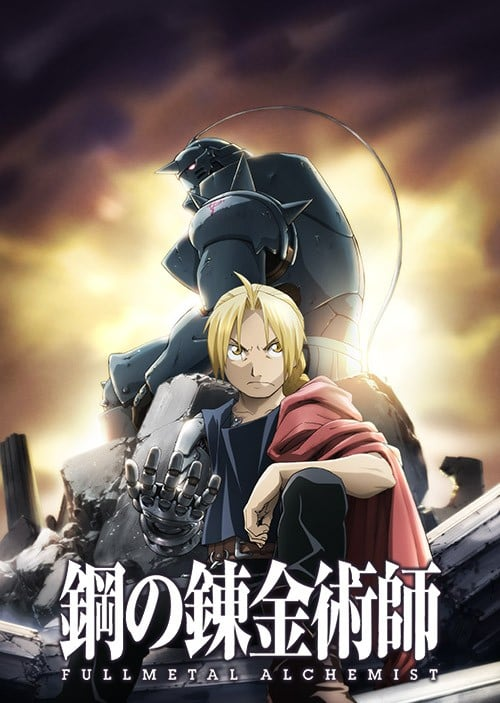
8.8「钢之炼金术师 FULLMETAL ALCHEMIST」（2009）是一部TV，由入江泰浩执导，制作BONES，类型包括热血、战斗、奇幻，评分8.8，在本站出现在6份片单中，例如高分日漫推荐、高分TV动画推荐、高分热血动漫推荐。页面只做片单对照，不提供播放。因思念已故母亲，触犯炼金术中被视为最大禁忌“人体炼成”，而失去一切的兄弟──装上机械铠、有“钢之炼金术师”之称号的哥哥爱德华·爱力克，以及灵魂被固定于铠甲的弟弟阿尔冯斯──两人为取回失去的东西，踏上寻找贤者之石的旅程，并随着接近贤者之石的真。
#2凉宫春日的消失
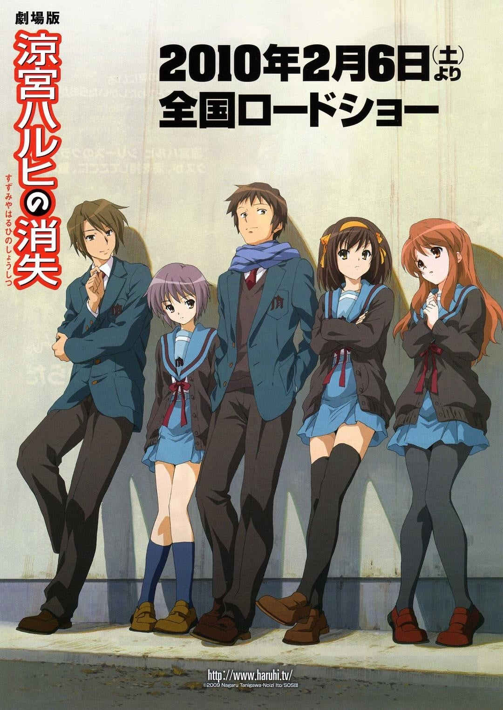
8.7「凉宫春日的消失」（2010）是一部剧场版，由武本康弘执导，制作京都动画，类型包括校园、奇幻、日常，评分8.7，在本站出现在10份片单中，例如高分日漫推荐、高分动画剧场版推荐、高分治愈系动漫推荐。页面只做片单对照，不提供播放。转眼间经已12月18日，凉宫春日期待已久的圣诞节即将来临。SOS团火锅派对的活动拍板以后，阿虚就带着烦恼回家。第二天，阿虚如常上学，但他很快注意到，学校发生了与平日完全不同的事。应该在后面的座位的凉宫春日不在，却换上了理应让长门有希消灭了的。
#3进击的巨人 第三季 Part.2
「进击的巨人 第三季 Part.2」（2019）是一部TV，由肥塚正史执导，制作WIT STUDIO，类型包括热血、战斗、奇幻，评分8.7，在本站出现在7份片单中，例如高分日漫推荐、高分TV动画推荐、高分热血动漫推荐。页面只做片单对照，不提供播放。历经百年的时光，将人类与外侧世界隔开的墙壁。在墙壁的另一侧，似乎有前所未见的世界延伸开来。火焰之水、冰之大地、砂之雪原……记载在书中的，尽是些激发少年探究心的文字。在时间流转，墙壁被巨人毁坏的现在，人类正一步步接近世界的真相。巨人的真实身份。
#4虫师
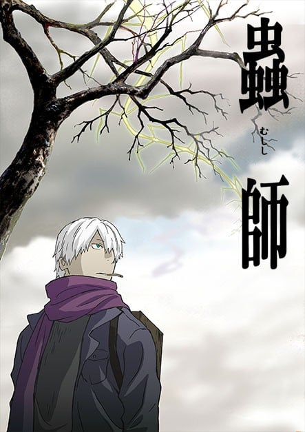
8.7「虫师」（2005）是一部TV，由長濵博史执导，制作ARTLAND，类型包括治愈、奇幻，评分8.7，在本站出现在6份片单中，例如高分日漫推荐、高分TV动画推荐、高分治愈系动漫推荐。页面只做片单对照，不提供播放。这里的虫既不是动植物，也与微生物和菌类不同，是更接近生命原生态的东西。这些东西总称为“虫”。它们的形态和存在都很暧昧，当人与虫的世界重叠之时，发生了超越人类智慧的怪异现象，此时人类才开始知道它们的存在。 所谓生命，并非为威胁异己而存在。只是。
#5水星领航员 第三季
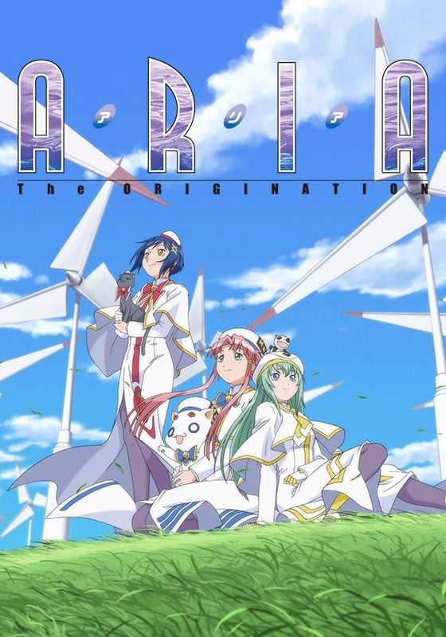
8.7「水星领航员 第三季」（2008）是一部TV，由佐藤順一执导，制作ハルフィルムメーカー[Hal Film Maker]，类型包括治愈、日常、科幻，评分8.7，在本站出现在8份片单中，例如高分日漫推荐、高分TV动画推荐、高分治愈系动漫推荐。页面只做片单对照，不提供播放。プリマ・ウンディーネを夢見る少女、水無灯里。 「ARIA」シリーズは、灯里をはじめウンディーネたちの日常を情感豊かに描いた、 未来形ヒーリングアニメーション。 待望のサードシーズン「ORIGINATION」のテーマは『始まり』。 これまで修。
#6魔法少女小圆
「魔法少女小圆」（2011）是一部TV，由新房昭之执导，制作SHAFT，类型包括治愈、百合、战斗，评分8.6，在本站出现在8份片单中，例如高分日漫推荐、高分TV动画推荐、高分热血动漫推荐。页面只做片单对照，不提供播放。大好きな家族がいて、親友がいて、時には笑い、時には泣く、そんなどこにでもある日常。 見滝原中学校に通う、普通の中学二年生・鹿目まどかも、そんな日常の中で暮らす一人。 ある日、彼女に不思議な出会いが訪れる。 この出会いは偶然なのか、必然なのか。
#7千与千寻
 8.6
8.6「千与千寻」（2001）是一部剧场版，由宫崎骏执导，制作吉卜力，类型包括奇幻、治愈、冒险，评分8.6，在本站出现在9份片单中，例如高分日漫推荐、高分动画剧场版推荐、高分治愈系动漫推荐。页面只做片单对照，不提供播放。年仅10岁的荻野千尋是一个看起来非常普通的四年级小学生，她随父母搬家来到一个陌生的城镇准备开始一个全新的生活。然而，因为途中迷路，她和父母误闯入了一个人类不应该进入的灵异小镇。小镇的主管是当地一家叫“油屋”的澡堂的巫婆：湯婆婆；而“油屋”则。
#8剧场版 魔法少女小圆 [新篇] 叛逆的物语
![剧场版 魔法少女小圆 [新篇] 叛逆的物语 2013 动漫海报](../covers/b44693.jpg) 8.6
8.6「剧场版 魔法少女小圆 [新篇] 叛逆的物语」（2013）是一部剧场版，由宮本幸裕执导，制作SHAFT，类型包括百合、战斗、奇幻，评分8.6，在本站出现在9份片单中，例如高分日漫推荐、高分动画剧场版推荐、高分热血动漫推荐。页面只做片单对照，不提供播放。やっと逢えたね 運命に叛いたとき、物語は新たなる結末へ。 待望の完全新作。映画化第三弾。 魔法少女は絶望から救われたのか―― “円環の理”に導かれて、少女たちの新たな物語がはじまる。 鹿目まどか。かつて 幸せな日々をおくっていた平凡な一人の。
#9四叠半神话大系
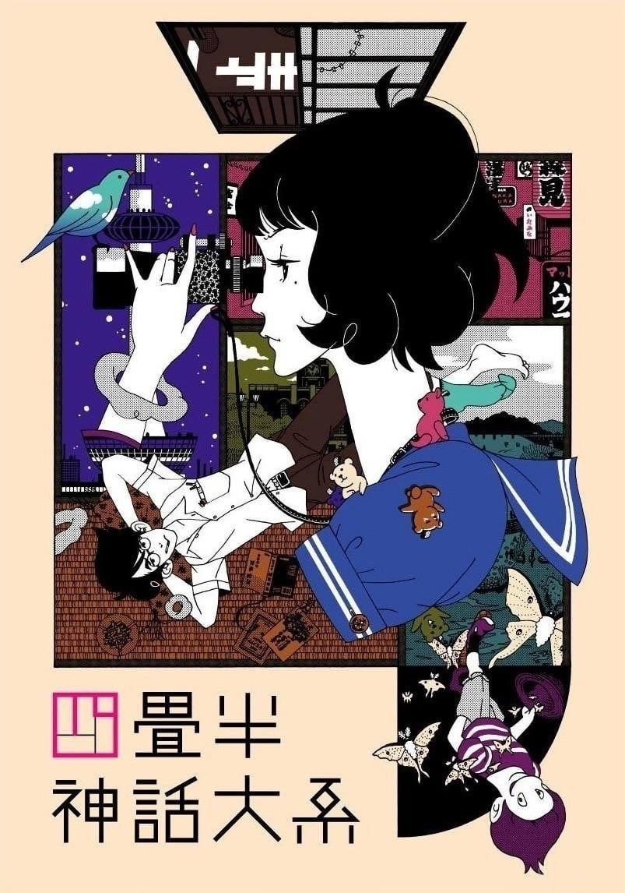
8.6「四叠半神话大系」（2010）是一部TV，由湯浅政明执导，制作MADHOUSE，类型包括科幻、校园、奇幻，评分8.6，在本站出现在8份片单中，例如高分日漫推荐、高分TV动画推荐、高分恋爱动漫推荐。页面只做片单对照，不提供播放。身为大三学生的“我”，梦想着多采多姿的校园生活却过了两年毫无意义的生活。虽然入学时在众多社团中选择了网球社，但是因为无法与人对话而失去容身之处。这时，他遇上有同样际遇的小津，两人组成了在社团内外四处妨碍人恋爱、恶名昭彰的“黑色丘比特”。没有。
#10大闹天宫
「大闹天宫」是一部剧场版，由万籁鸣执导，类型包括奇幻、战斗，评分8.6，在本站出现在5份片单中，例如高分动画剧场版推荐、高分热血动漫推荐、高分奇幻冒险动漫。页面只做片单对照，不提供播放。影片以《西游记》中孙悟空从诞生到大闹天宫这一段的经历为主要内容。 1961年《大闹天宫》上集正式上映，在国内引起轰动。1964年，下集拍摄完成后由于文艺政策的变化，影片的全本没能够上映。1978年全本的《大闹天宫》终于得以上映。 2004年。
#11虫师 续章 第2部分
「虫师 续章 第2部分」（2014）是一部TV，由長濵博史执导，制作ARTLAND，类型包括治愈、奇幻，评分8.6，在本站出现在6份片单中，例如高分日漫推荐、高分TV动画推荐、高分治愈系动漫推荐。页面只做片单对照，不提供播放。虫师 续章 第2部分。2014。治愈、奇幻。
#12航海王：粉丝来信
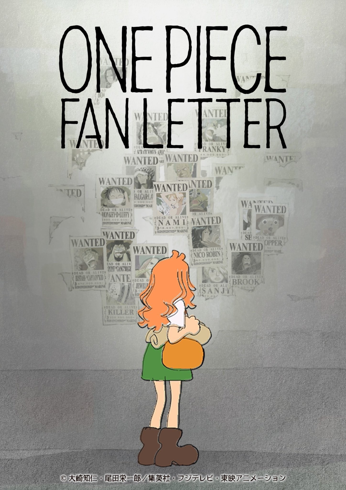
8.6「航海王：粉丝来信」（2024）是一部TV，由䂖谷恵执导，制作東映アニメーション，类型包括热血、奇幻、战斗，评分8.6，在本站出现在7份片单中，例如高分日漫推荐、高分TV动画推荐、高分热血动漫推荐。页面只做片单对照，不提供播放。故事讲述了顶上战争两年后的香波迪群岛上，娜美的小迷妹展开的一场小小冒险…… 本作改编自航海王官方外传小说《航海王 novel 草帽故事集》，小说描述了以一般人的角度来看待草帽海贼团成员们的短篇故事。
#13葬送的芙莉莲
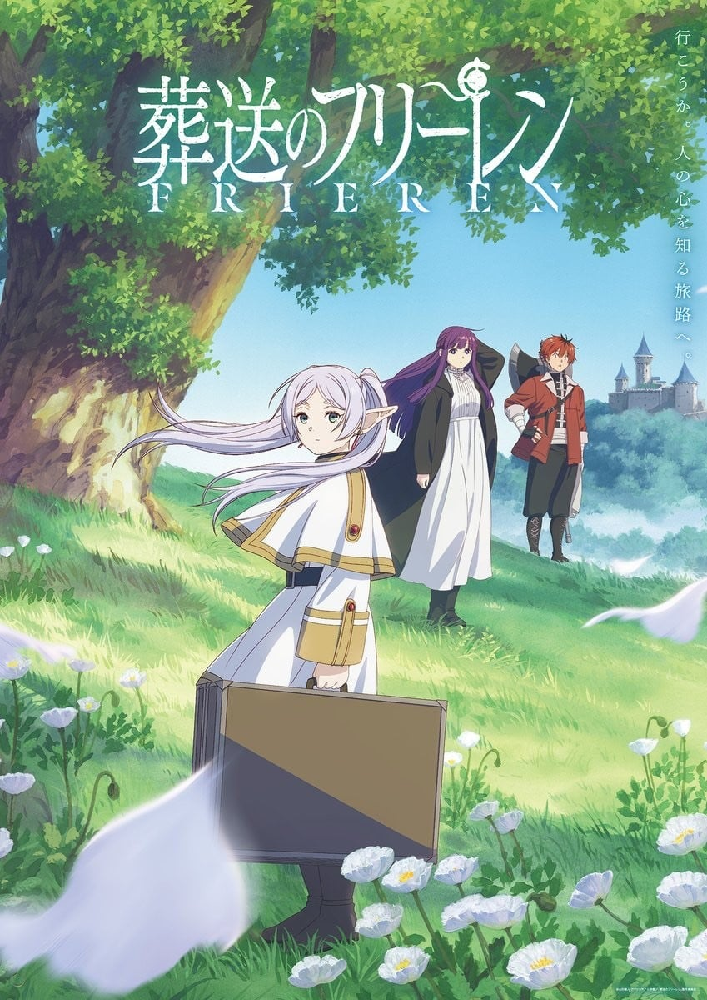
8.5「葬送的芙莉莲」（2023）是一部TV，由斎藤圭一郎执导，制作MADHOUSE，类型包括治愈、奇幻、异世界，评分8.5，在本站出现在8份片单中，例如高分日漫推荐、高分TV动画推荐、高分热血动漫推荐。页面只做片单对照，不提供播放。魔法使芙莉莲和勇者辛美尔等人一起，历经十年的冒险之后击败了魔王，为世界带来了和平。 身为能活上一千多年的精灵族，她于是和辛美尔等人约定再次相见后，踏上了独自一人的旅途。 自那以后，50年过去，芙莉莲又前往拜访辛美尔，相比于和50年前一点没变。
#14奇巧计程车
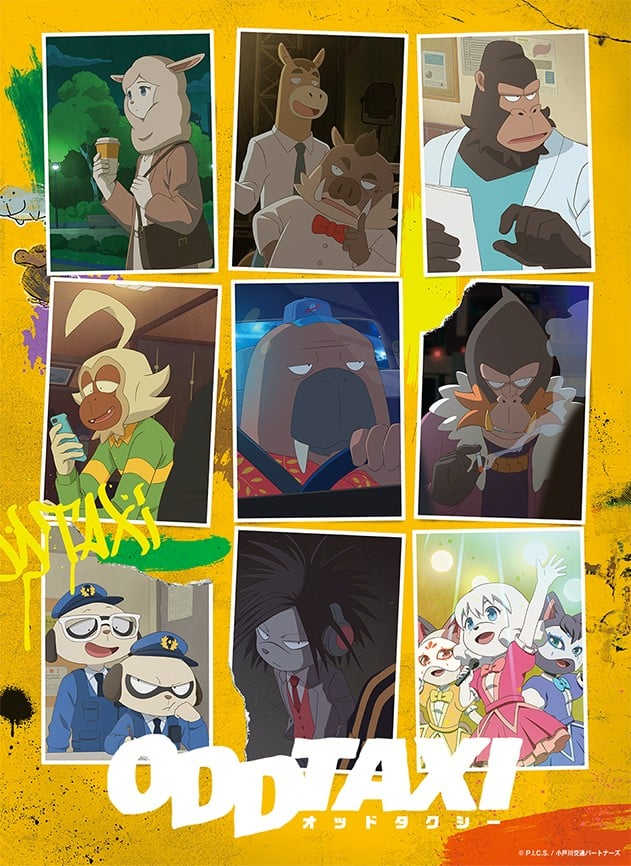
8.5「奇巧计程车」（2021）是一部TV，由木下麦（P.I.C.S.）执导，制作P.I.C.S. × OLM TEAM YOSHIOKA，类型包括悬疑、推理、剧情，评分8.5，在本站出现在6份片单中，例如高分日漫推荐、高分TV动画推荐、高分悬疑推理动漫。页面只做片单对照，不提供播放。明明是熟悉的街道，这座城市却似乎有哪里变得不太一样了。 出租车司机小户川每天平凡度日。他没有亲人，鲜少与人交流，是个有点孤僻木讷的怪人。兴趣是在睡前听落语和工作时听广播。姑且能称得上是他朋友的人，只有他的主治医生刚力，以及高中同学柿花而已。
#15天空之城
 8.5
8.5「天空之城」（1986）是一部剧场版，由宫崎骏执导，制作吉卜力，类型包括奇幻、冒险、治愈，评分8.5，在本站出现在9份片单中，例如高分日漫推荐、高分动画剧场版推荐、高分治愈系动漫推荐。页面只做片单对照，不提供播放。在过去的历史之中，传说着曾有人类以高科技创造了可飞行于天空的城市——拉普达。虽多数认为这是虚构幻想出来的事物，但仍有相信飞行城市存在而试图寻找出的人们。 某一日晚上，搭载众多旅客的飞行客船突遭到空中海盗团的袭击和入侵，空中海盗的目标是搭乘飞。
#16红辣椒
「红辣椒」（2006）是一部剧场版，由今敏执导，制作MADHOUSE，类型包括科幻、悬疑、奇幻，评分8.5，在本站出现在9份片单中，例如高分日漫推荐、高分动画剧场版推荐、高分科幻动漫推荐。页面只做片单对照，不提供播放。29岁的千叶敦子博士是一个非常有魅力的美女，同时她还是一位谦逊有礼的精神治疗医师，专门研究这项领域中的一些边缘学科。最近，她所在的实验室发明了一种名叫PT的全新心理疾病治疗方法，通过一种非常厉害的装置“DC-MINI”，从梦境中寻找隐藏在患。
#17剧场版 少女☆歌剧 Revue Starlight
「剧场版 少女☆歌剧 Revue Starlight」（2021）是一部剧场版，由古川知宏执导，制作KINEMA CITRUS，类型包括百合、战斗、音乐，评分8.5，在本站出现在8份片单中，例如高分日漫推荐、高分动画剧场版推荐、高分热血动漫推荐。页面只做片单对照，不提供播放。演劇の学び舎に通う9人の少女たちが謎のオーディションに挑み、舞台上で切磋琢磨する姿を描いたテレビアニメ「少女☆歌劇 レヴュースタァライト」の完全新作劇場版。アニメ版と舞台版がリンクするメディアミックスプロジェクトとして展開され、2018年に。
#18瑞克和莫蒂 第三季
 8.5
8.5「瑞克和莫蒂 第三季」（2017）是一部TV，由Justin Roiland执导，类型包括科幻、搞笑、冒险，评分8.5，在本站出现在7份片单中，例如高分美漫与动画电影、高分TV动画推荐、高分科幻动漫推荐。页面只做片单对照，不提供播放。Adult Swim频道续订旗下超高收视动画片《瑞克和莫蒂》（Rick and Morty）第三季。
#19虫师 续章
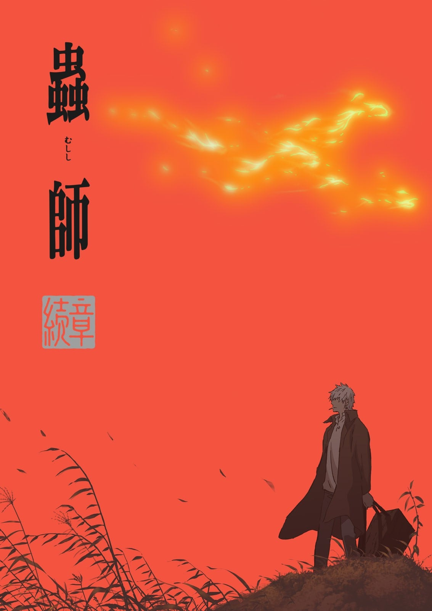
8.5「虫师 续章」（2014）是一部TV，由長濵博史执导，制作ARTLAND，类型包括治愈、奇幻，评分8.5，在本站出现在6份片单中，例如高分日漫推荐、高分TV动画推荐、高分治愈系动漫推荐。页面只做片单对照，不提供播放。另一个世界，住着一群与常见动植物截然不同的生物。远古以来，人们敬畏地称它们为“虫”。当虫的世界和人的世界重合时，虫师银古便会出现。介绍中提到的虫显然不是看上去肉呼呼扭动的小东西，而是一种最接近生命本源，类似灵体的生物。它们有自己的生存方式，。
#20死亡笔记
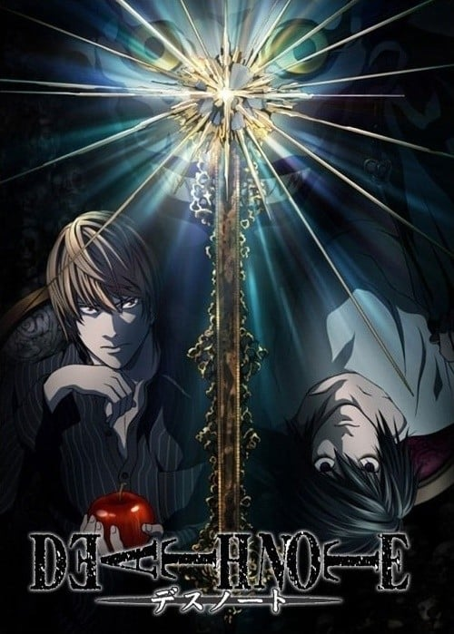
8.4「死亡笔记」（2006）是一部TV，由荒木哲郎执导，制作MADHOUSE，类型包括推理、悬疑、奇幻，评分8.4，在本站出现在6份片单中，例如高分日漫推荐、高分TV动画推荐、高分悬疑推理动漫。页面只做片单对照，不提供播放。高三生夜神月意外捡到一本名《DEATH NOTE》的笔记本，并且发现只要写下想要杀死的人的名字，就会变成现实。 月开始利用死亡笔记制裁那些他认为该死的人。接着，笔记的原主人：死神也以旁观者的姿态出现在月面前。 另一方面越来越多的罪犯离奇死亡。
#21化物语
 8.4
8.4「化物语」（2009）是一部TV，由新房昭之执导，制作SHAFT，类型包括奇幻、恋爱、校园，评分8.4，在本站出现在8份片单中，例如高分日漫推荐、高分TV动画推荐、高分恋爱动漫推荐。页面只做片单对照，不提供播放。所谓怪异——是因为世界上没有那种东西的存在。 与生物有所不同——但与世界紧紧相连。 故事主人公阿良良木历，因为知道了同班同学战场原的某个“秘密”，从此被卷入一连串的怪异事件中……。
#22剧场版 链锯人 蕾塞篇
「剧场版 链锯人 蕾塞篇」（2025）是一部剧场版，由吉原達矢执导，制作MAPPA，类型包括战斗、热血、奇幻，评分8.4，在本站出现在10份片单中，例如2025年夏季新番推荐、高分日漫推荐、高分动画剧场版推荐。页面只做片单对照，不提供播放。鏈鋸人首度登上大銀幕，帶來一場史詩級、火力全開的動作冒險，延續這部超人氣動畫系列的精彩篇章。 為了償還父母留下的債務，為黑道打工的惡魔獵人淀治，遭到背叛並慘遭殺害。在意識消散之際，與他感情深厚的鏈鋸惡魔狗波奇塔，與淀治簽訂契約救了他一命，也。
#23剧场版 空之境界 第五章 矛盾螺旋
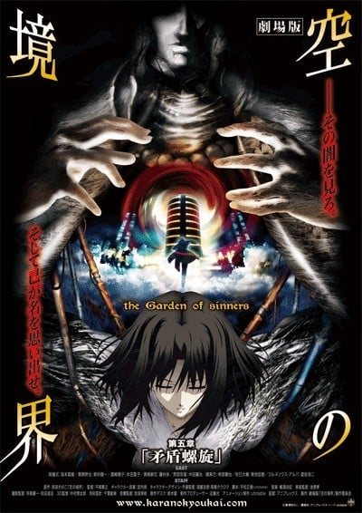
8.4「剧场版 空之境界 第五章 矛盾螺旋」（2008）是一部剧场版，由平尾隆之执导，制作ufotable，类型包括奇幻、战斗、悬疑，评分8.4，在本站出现在9份片单中，例如高分日漫推荐、高分动画剧场版推荐、高分热血动漫推荐。页面只做片单对照，不提供播放。“荒耶，你在追求什么？”“真正的睿智。”“在哪里追求？”“只在自己的心里。” 1998年11月，胭条巴遇到了两仪式并被她吸引。胭条巴每晚都做噩梦，自己犯下的罪行不断重现。两仪式为了调查事件的真相，前往胭条巴的寓所，却不知道，他们不知不觉已经。
#24英雄联盟：双城之战
 8.4
8.4「英雄联盟：双城之战」（2021）是一部OVA/WEB，由Pascal Charrue执导，制作Riot Games，类型包括战斗、奇幻、百合，评分8.4，在本站出现在8份片单中，例如高分美漫与动画电影、高分OVA与WEB动画、高分热血动漫推荐。页面只做片单对照，不提供播放。《英雄联盟：双城之战》是英雄联盟官方动画剧集，讲述的是在充满蒸汽朋克气息的乌托邦-皮尔特沃夫和由化学品驱动的地下城-祖安中，蔚和金克丝两姐妹，她们在一场激烈的冲突后发现两个人站在了彼此的对立面。她们从此分开，走上不同的道路，朝着不同的命运终。
#25瑞克和莫蒂 第一季
 8.4
8.4「瑞克和莫蒂 第一季」（2013）是一部TV，由Justin Roiland执导，类型包括科幻、搞笑、奇幻，评分8.4，在本站出现在8份片单中，例如高分美漫与动画电影、高分TV动画推荐、高分治愈系动漫推荐。页面只做片单对照，不提供播放。天才兼疯子科学家Rick在失踪多年后突然回到女儿Beth的身边，并且在她的车库里搞了一个科学实验室。Rick有一把“传送门枪”，可以穿越到宇宙的各个次元。孙子Morty莫名其妙就成了他的助手，经常被拖进他的自制太空船内，跟他一同开展各种疯狂。
#26猎人
「猎人」（1999）是一部TV，由古橋一浩执导，制作日本アニメーション，类型包括热血、战斗、冒险，评分8.4，在本站出现在6份片单中，例如高分日漫推荐、高分TV动画推荐、高分热血动漫推荐。页面只做片单对照，不提供播放。这是关于一群“猎人”的故事，所谓猎人，就是追求怪物、财宝、悬赏、美食、遗迹、幻兽等稀有存在渡生之人的总称，猎人是精英中的精英，并可以免费享受全球各国公共设施，因此必须通过高难度测试最终拿到执照才有资格成为猎人。全世界也不过只有600名左右猎。
#27少女革命
「少女革命」（1997）是一部TV，由幾原邦彦执导，制作J.C.STAFF，类型包括百合、战斗、奇幻，评分8.4，在本站出现在8份片单中，例如高分日漫推荐、高分TV动画推荐、高分热血动漫推荐。页面只做片单对照，不提供播放。天上欧蒂娜是一位穿着男生制服的性格少女。年幼时为一位王子所救，由于心怀憧憬而期望自己能成为王子。 入读凤学园之后，欧蒂娜因为特立独行的作风而受到校方责难，但同时也成为了众人目光的焦点。这样的欧蒂娜遇到了被称为“蔷薇的新娘”的柔弱少女姬宫安希。
#28瑞克和莫蒂 第二季
 8.4
8.4「瑞克和莫蒂 第二季」（2015）是一部TV，由Justin Roiland执导，类型包括科幻、搞笑、奇幻，评分8.4，在本站出现在8份片单中，例如高分美漫与动画电影、高分TV动画推荐、高分热血动漫推荐。页面只做片单对照，不提供播放。疯子科学家Rick Sanchez在失踪20年之后突然回到女儿Beth的生活中，并且在她的车库中开了一个商店。更糟的是，Rick总是将他的孙子Morty和孙女Summer「拖」进他的疯狂实验。每当他发明一个充满科幻色彩的小玩意之后，Mort。
#29探险活宝 第九季
 8.4
8.4「探险活宝 第九季」（2017）是一部TV，制作Frederator Studios，类型包括冒险、奇幻、搞笑，评分8.4，在本站出现在4份片单中，例如高分美漫与动画电影、高分奇幻冒险动漫、必看搞笑动漫。页面只做片单对照，不提供播放。探险活宝 第九季。2017。冒险、奇幻、搞笑。
#30无职转生～到了异世界就拿出真本事～ 第2部分
「无职转生～到了异世界就拿出真本事～ 第2部分」（2021）是一部TV，由岡本学执导，制作スタジオバインド，类型包括异世界、奇幻、冒险，评分8.3，在本站出现在7份片单中，例如高分日漫推荐、高分TV动画推荐、高分热血动漫推荐。页面只做片单对照，不提供播放。「俺は、この異世界で本気だす！」 34歳・童貞・無職の引きこもりニート男。 両親の葬儀の日に家を追い出された瞬間、トラックに轢かれ命を落としてしまう。 目覚めると、なんと剣と魔法の異世界で赤ん坊に生まれ変わっていた！ ゴミクズのように生きて。
#31进击的巨人 第三季
「进击的巨人 第三季」（2018）是一部TV，由肥塚正史执导，制作WIT STUDIO，类型包括热血、战斗、奇幻，评分8.3，在本站出现在7份片单中，例如高分日漫推荐、高分TV动画推荐、高分热血动漫推荐。页面只做片单对照，不提供播放。历经百年的时光，将人类与外侧世界隔开的墙壁。在墙壁的另一侧，似乎有前所未见的世界延伸开来。火焰之水、冰之大地、砂之雪原……记载在书中的，尽是些激发少年探究心的文字。在时间流转，墙壁被巨人毁坏的现在，人类正一步步接近世界的真相。巨人的真实身份。
#32航海王
 8.3
8.3「航海王」（1999）是一部TV，制作東映アニメーション，类型包括热血、战斗、冒险，评分8.3，在本站出现在8份片单中，例如本周追番表、高分日漫推荐、高分TV动画推荐。页面只做片单对照，不提供播放。有个男人，他拥有世界上一切财富、名望和权势，他就是「海盗王」高路德•罗杰。 他在临死前说过这样一句话，让全世界的人都奔向大海： 「想要我的财宝吗？想要的话就拿去吧……！你们去找吧！我把世界上的一切都放在那里了」。 后来世界上的人们将这个宝藏。
#33来自深渊 烈日的黄金乡
「来自深渊 烈日的黄金乡」（2022）是一部TV，由小島正幸执导，制作KINEMA CITRUS，类型包括奇幻、冒险、治愈，评分8.3，在本站出现在7份片单中，例如高分日漫推荐、高分TV动画推荐、高分热血动漫推荐。页面只做片单对照，不提供播放。在已被彻底探索殆尽的世界里，名为「深渊」的大洞是硕果仅存的秘境。 这个深不见底、不知会延伸到何处的巨大垂直洞穴中，不仅栖息着各种稀奇古怪的生物，还沉睡着现今人类所做不出来的珍贵遗物。 「深渊」那处处充满不可思议的神秘样貌，吸引人们前仆后继地。
#34幽灵公主
 8.3
8.3「幽灵公主」（1997）是一部剧场版，由宫崎骏执导，制作吉卜力，类型包括奇幻、冒险、治愈，评分8.3，在本站出现在10份片单中，例如高分日漫推荐、高分动画剧场版推荐、高分热血动漫推荐。页面只做片单对照，不提供播放。大和王权时期蝦夷族末代王子阿席达卡，在保卫他的村庄时被一恶魔诅咒受不治创伤。村里的巫婆劝他前往西方，寻找恶魔的来源和解除诅咒的方法。在他的旅途中，他來到山獸神森林，认识了被称为“魔法公主”的、由犬神抚养大的小桑。 在這個過程中，阿席達卡发现。
#35FLCL
 8.3
8.3「FLCL」（2000）是一部OVA/WEB，由鶴巻和哉执导，制作Production I.G，类型包括科幻、奇幻、战斗，评分8.3，在本站出现在7份片单中，例如高分日漫推荐、高分OVA与WEB动画、高分热血动漫推荐。页面只做片单对照，不提供播放。近未来的日本，一个叫做“疏濑”的城市中，市民过着平凡的生活，只不过，在城市的一角，山冈上面耸立着医疗机器制造厂建造的外形酷似熨斗的工厂，每天固定时刻，那个工厂都像刚烫完东西一样散发出大量蒸汽。 小学六年级学生直太，与高中女生真见美，直太那个。
#36风之谷
 8.3
8.3「风之谷」（1984）是一部剧场版，由宫崎骏执导，制作トップクラフト(スタジオジブリ)，类型包括科幻、奇幻、冒险，评分8.3，在本站出现在9份片单中，例如高分日漫推荐、高分动画剧场版推荐、高分治愈系动漫推荐。页面只做片单对照，不提供播放。該作品背景設定在未來，世界的產業文明達致巔峰後，經歷一場稱為「火之七日」的戰爭而毀於一旦。世界被一種由菌類和巨型昆蟲構成，名叫腐海的新生態體系所掩蓋，僅存的人類生活在小面積土地，在面對巨型昆蟲和會釋放瘴氣的腐海森林包圍威脅下積極求存。 風之。
#37数码宝贝大冒险
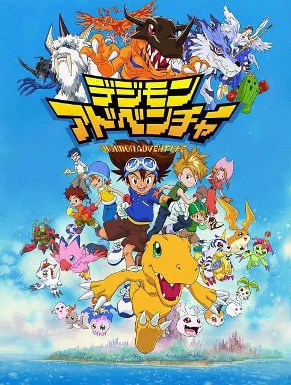
8.3「数码宝贝大冒险」（1999）是一部TV，制作東映アニメーション，类型包括热血、战斗、冒险，评分8.3，在本站出现在6份片单中，例如高分日漫推荐、高分TV动画推荐、高分热血动漫推荐。页面只做片单对照，不提供播放。八神太一、石田大和、武之内素娜、城户丈、泉光子郎、太刀川美美、高石武、八神嘉儿这八位小朋友，在夏令营中受到召唤而到进入数码世界进行冒险。 1999年，由于数码世界资料异常增生，导致数码世界和现实世界的连接发生紊乱。地球上相应地出现奇怪的自然。
#38蜡笔小新：大人王国的反击
 8.3
8.3「蜡笔小新：大人王国的反击」（2001）是一部剧场版，由原恵一执导，制作シンエイ動画，类型包括搞笑、家庭、治愈，评分8.3，在本站出现在8份片单中，例如高分日漫推荐、高分动画剧场版推荐、高分治愈系动漫推荐。页面只做片单对照，不提供播放。这天在小新居住的春日部附近，突然新开了一家叫“20世纪博”的游乐园。游乐园里到处播放着从前20世纪的旧的电视节目和电影，这里，一切都是从前时光的回放。每一个到了这里的大人，都沉浸在过去的旧时光里，而对小孩子来说，这些的东西一点意思都没有。令。
#39水星领航员 第二季
「水星领航员 第二季」（2006）是一部TV，由佐藤順一执导，制作ハルフィルムメーカー[Hal Film Maker]，类型包括治愈、日常、奇幻，评分8.3，在本站出现在8份片单中，例如高分日漫推荐、高分TV动画推荐、高分治愈系动漫推荐。页面只做片单对照，不提供播放。水の星AQUA（アクア）の観光都市ネオ・ヴェネツィアを舞台に、 ウンディーネを夢見る少女、水無灯里。 そんな彼女の柔らかな日常を情感豊かに描いた未来形ヒーリングアニメーション。 「ARIA The ANIMATION」。 そのセカンド・シー。
#40怪诞小镇 第二季
 8.3
8.3「怪诞小镇 第二季」（2014）是一部TV，由John Aoshima执导，制作Disney Television Animation，类型包括奇幻、搞笑、冒险，评分8.3，在本站出现在7份片单中，例如高分美漫与动画电影、高分TV动画推荐、高分治愈系动漫推荐。页面只做片单对照，不提供播放。Dipper and Mabel Pines spend the summer at their great uncle's tourist trap, The Mystery Shack. They think it's just goi。
#41小魔女DoReMi 大合奏
 8.3
8.3「小魔女DoReMi 大合奏」（2002）是一部TV，制作東映アニメーション，类型包括治愈、校园、搞笑，评分8.3，在本站出现在7份片单中，例如高分日漫推荐、高分TV动画推荐、高分治愈系动漫推荐。页面只做片单对照，不提供播放。虽然前两任女王道鲁宾已唤起在人类世界的回忆，真身显露出来，但仍然被六条象征悲伤回忆的荆棘所围绕，因此仍继续沈睡。 又回去魔女幼稚园的小花，为了和升上六年级的DoReMi等人一起上学，使用魔法把自己变成一位12岁女孩。但因为魔法冲击太大导致她。
#42战斗之魂Brave
「战斗之魂Brave」（2010）是一部TV，由西森章执导，制作Sunrise，类型包括战斗，评分8.3，在本站出现在5份片单中，例如高分日漫推荐、高分TV动画推荐、高分热血动漫推荐。页面只做片单对照，不提供播放。Battle Spirits系列是SUNRISE改編自萬代與魔法風雲會製作組共同出品的CARDDAS系列30周年紀念的卡片遊戲動畫作品。 從08年9月開始播放，如今已經進入第三年，維持著每年一部的速度。 第一部《Battle Spirits。
#43星球大战：克隆人战争 第七季
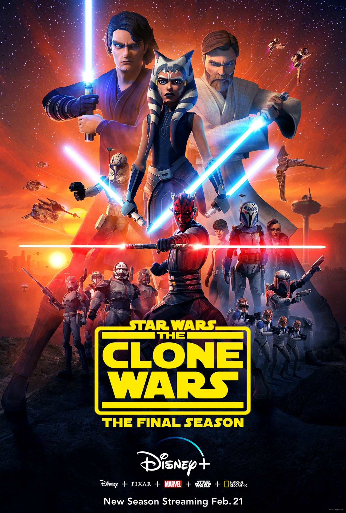
8.3「星球大战：克隆人战争 第七季」（2020）是一部TV，由Dave Filoni执导，类型包括科幻、冒险，评分8.3，在本站出现在4份片单中，例如高分美漫与动画电影、高分科幻动漫推荐、高分奇幻冒险动漫。页面只做片单对照，不提供播放。在2018年圣迭戈漫控（SDCC）的《星球大战：克隆人战争》10周年座谈会上，导演戴夫·菲洛尼宣布，《星球大战：克隆人战争》将在迪士尼流媒体平台上再播十二集全新的故事——它们被称为“《克隆人战争》获救版”（Clone Wars Saved）。
#44进击的巨人
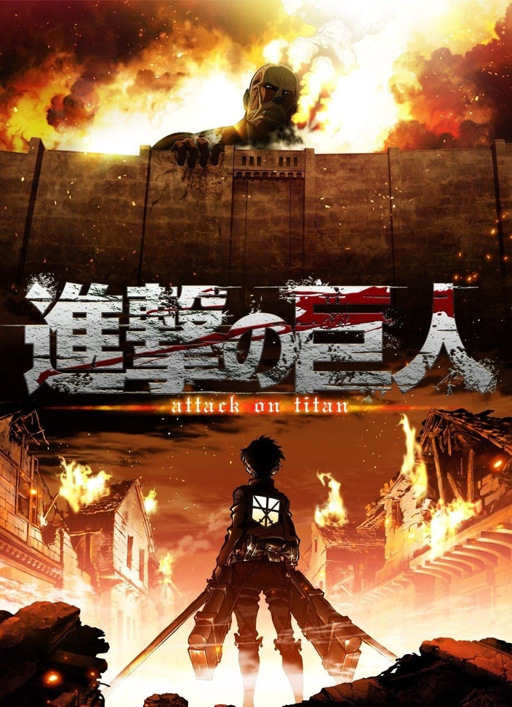
8.2「进击的巨人」（2013）是一部TV，由荒木哲郎执导，制作WIT STUDIO，类型包括热血、战斗、奇幻，评分8.2，在本站出现在7份片单中，例如高分日漫推荐、高分TV动画推荐、高分热血动漫推荐。页面只做片单对照，不提供播放。悠长的历史之中,人类曾一度因被巨人捕食而崩溃。幸存下来的人们建造了一面巨大的墙壁,防止了巨人的入侵。不过,作为“和平”的代价,人类失去了到墙壁的外面去这一“自由”。主人公艾伦·耶格尔对还没见过的外面的世界抱有兴趣。在他正做着到墙壁的外面去这。
#45游戏人生 零
「游戏人生 零」（2017）是一部剧场版，由いしづかあつこ执导，制作MADHOUSE，类型包括奇幻、异世界、战斗，评分8.2，在本站出现在10份片单中，例如高分日漫推荐、高分动画剧场版推荐、高分热血动漫推荐。页面只做片单对照，不提供播放。那是个战争和暴力皆被神所禁止，由“游戏”决定一切的「盘上世界」。 战无不胜的兄妹玩家，空和白降临这个世界的六千余年前，有着诞生悠久大战，开天杀星的少年和少女。 这是影响至今的最古老的神话。 那不曾被人传颂的故事，现在拉开帷幕……。
#46凉宫春日的忧郁
 8.2
8.2「凉宫春日的忧郁」（2006）是一部TV，由石原立也执导，制作京都动画，类型包括校园、日常、奇幻，评分8.2，在本站出现在10份片单中，例如高分日漫推荐、高分TV动画推荐、高分治愈系动漫推荐。页面只做片单对照，不提供播放。“我毕业于东中，叫做凉宫春日。我对普通的人类没有兴趣。你们之中要是有外星人、未来人、异世界人或者超能力者的话，就尽管来找我吧。”这是凉宫春日的宣言，也是她对于平庸生活的挑战。 我们可能在很小时就不再相信圣诞老人的存在，也慢慢不会再对外星人，。
#47来自深渊
「来自深渊」（2017）是一部TV，由小島正幸执导，制作KINEMA CITRUS，类型包括奇幻、冒险、治愈，评分8.2，在本站出现在7份片单中，例如高分日漫推荐、高分TV动画推荐、高分热血动漫推荐。页面只做片单对照，不提供播放。在每一个角落都被探索完毕的世界中，唯一残留的秘境——大洞穴“深渊”。不知道延续到何方，深不见底的巨大纵向洞穴，栖息着各种奇妙奇怪的生物们，沉眠着现在的人类无法制造的贵重遗物。“深渊”那充满了不可思议的姿态吸引了人们，并驱使人们展开冒险。如此。
#48JOJO的奇妙冒险 星尘斗士 埃及篇
「JOJO的奇妙冒险 星尘斗士 埃及篇」（2015）是一部TV，由津田尚克执导，制作david production，类型包括热血、战斗、奇幻，评分8.2，在本站出现在7份片单中，例如高分日漫推荐、高分TV动画推荐、高分热血动漫推荐。页面只做片单对照，不提供播放。在乔斯达家的宿敌·迪奥（DIO）复活的影响下，一位年轻人——空条承太郎，得到了名为“幽波纹（替身）”的能力。为了拯救因迪奥的诅咒而倒下的母亲荷莉，空条承太郎与外祖父·乔瑟夫以及伙伴们，一起为了打倒迪奥而展开旅程。在漫长的旅途当中，承太郎等人。
#49末日后酒店
「末日后酒店」（2025）是一部TV，由春藤佳奈执导，制作CygamesPictures[サイピク]，类型包括科幻、治愈、奇幻，评分8.2，在本站出现在7份片单中，例如高分日漫推荐、高分TV动画推荐、高分治愈系动漫推荐。页面只做片单对照，不提供播放。人类离开后，地球经历了漫长的岁月。 位于日本首都东京银座的「银河楼」酒店，至今仍在营业中。 工作人员是以酒店机器人八千代为中心，在各个部门工作的员工机器人们。 它们一边等待老板的归来和再次迎接人类的时刻，一边在没有住客的酒店里专心致志地工作。
#50比宇宙更远的地方
「比宇宙更远的地方」（2018）是一部TV，由いしづかあつこ执导，制作MADHOUSE，类型包括治愈、百合、日常，评分8.2，在本站出现在7份片单中，例如高分日漫推荐、高分TV动画推荐、高分治愈系动漫推荐。页面只做片单对照，不提供播放。无论何时，我们的第一步总是从好奇心开始。 不曾看过的风景，不曾听过的声音，不曾闻过的味道，不曾摸过的质感，不曾尝过的食物，以及不曾感受过的澎湃。 为了重拾不知何时忘却的记忆碎片和不知何时舍弃的感动的旅途。 在到达终点的时候，我们会想些什么呢。
#51龙猫
 8.2
8.2「龙猫」（1988）是一部剧场版，由宫崎骏执导，制作吉卜力，类型包括治愈、奇幻，评分8.2，在本站出现在9份片单中，例如高分日漫推荐、高分动画剧场版推荐、高分治愈系动漫推荐。页面只做片单对照，不提供播放。本片是對日本鄉村生活的迷人及節奏緩慢的描繪。故事背景設定於1958年（昭和33年），一位大學教授和他的兩個女兒搬進一個森林附近的一所舊房子，因為他的妻子染上了結核病，在附近的一所醫院康復中。他的女兒們發現了「煤炭屎」，她們又名「煤炭屎鬼」。
#52物语系列 第二季
「物语系列 第二季」（2013）是一部TV，由板村智幸执导，制作SHAFT，类型包括奇幻、恋爱、校园，评分8.2，在本站出现在8份片单中，例如高分日漫推荐、高分TV动画推荐、高分恋爱动漫推荐。页面只做片单对照，不提供播放。シリーズ セカンドシーズン 2013年 開幕 猫物語(白)、傾物語、花物語、囮物語、鬼物語、恋物語の 6作品が2013年にアニメ化されることが決定いたしました！ 最新情報は www.monogatari-series.com/2ndseas。
#53永生之酒
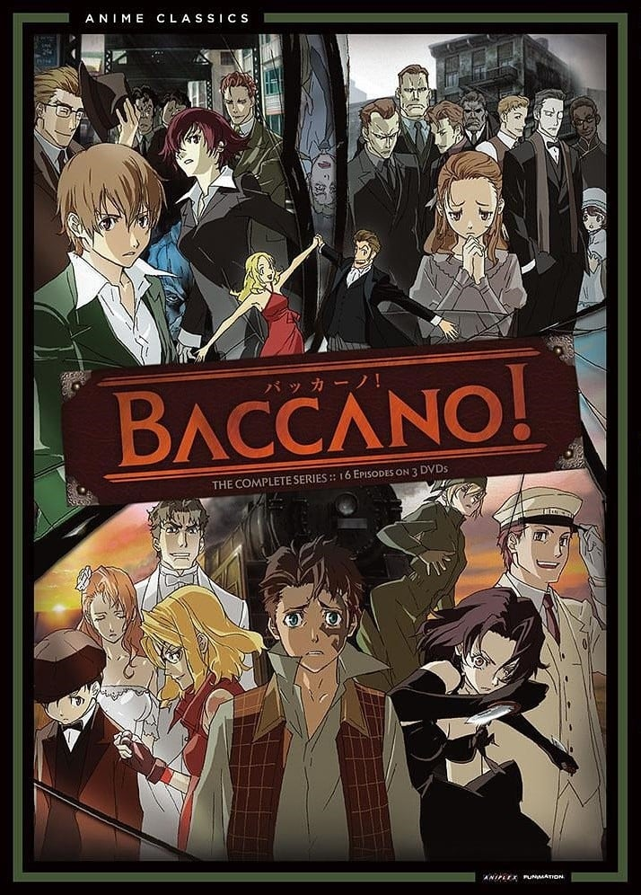
8.2「永生之酒」（2007）是一部TV，由大森貴弘执导，制作Brain's Base，类型包括奇幻、悬疑、战斗，评分8.2，在本站出现在7份片单中，例如高分日漫推荐、高分TV动画推荐、高分热血动漫推荐。页面只做片单对照，不提供播放。1711年在大西洋上，背井离乡的炼金术师们从恶魔手中得到了一样东西——那便是永生之酒。为了独占永生之酒的配方，在秘密之船上的众人开始互相残杀。1930年代的纽约的黑道中，年少有为的菲洛、傻瓜盗贼夫妇、200年老不死的炼金术士和他的助手，以及。
#54灵能百分百 第三季
 8.2
8.2「灵能百分百 第三季」（2022）是一部TV，由蓮井隆弘执导，制作BONES，类型包括战斗、热血、搞笑，评分8.2，在本站出现在7份片单中，例如高分日漫推荐、高分TV动画推荐、高分热血动漫推荐。页面只做片单对照，不提供播放。当某种数值来到「100」时，就会爆发的少年――路人。 他的外表极为普通，却是个强悍的超能力者。 他在神棍师父――灵幻新隆经营的灵能咨询所帮忙处理麻烦的委托，在这样的日子中，他希望的安稳日子会到来吗？然而超能力却会以青春为原动力失控！ 世界引。
#55魔卡少女樱
「魔卡少女樱」（1998）是一部TV，由浅香守生执导，制作MADHOUSE，类型包括治愈、校园、奇幻，评分8.2，在本站出现在9份片单中，例如高分日漫推荐、高分TV动画推荐、高分恋爱动漫推荐。页面只做片单对照，不提供播放。故事讲述10岁的木之本樱打开了她父亲所藏的魔法书，意外把有魔法力量的“库洛牌”释放。由于她把卡弄失，要负责寻回，于是看守库洛牌守护兽可鲁贝洛斯，便给予小樱封印之杖，任命她为“库洛魔法使”，陪同并帮助小樱寻找回魔法卡。随后的故事，围绕着小樱寻。
#56钢之炼金术师
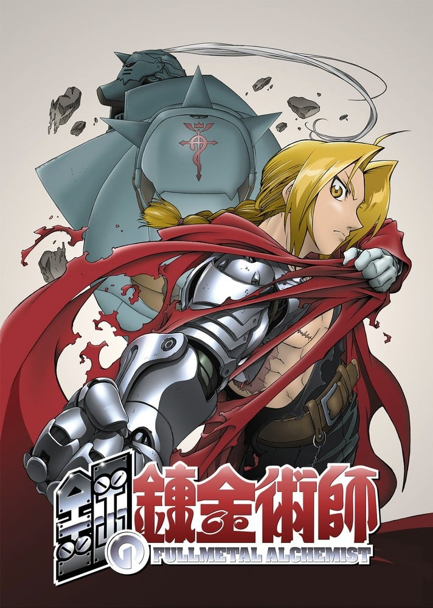
8.2「钢之炼金术师」（2003）是一部TV，由水島精二执导，制作BONES，类型包括热血、奇幻、战斗，评分8.2，在本站出现在6份片单中，例如高分日漫推荐、高分TV动画推荐、高分热血动漫推荐。页面只做片单对照，不提供播放。爱德华德和他的弟弟阿尔芬斯十分思念在他们还小的时候亡故的母亲，实行了炼金术中最大的禁忌——可以将死者复活的人体炼成。 可是炼成失败，爱德华德失去了左腿，阿尔芬斯则失去了全身。爱德华德好不容易才以牺牲自己的右臂为代价将弟弟的灵魂炼成，并定着在。
#57伤物语〈Ⅲ 冷血篇〉
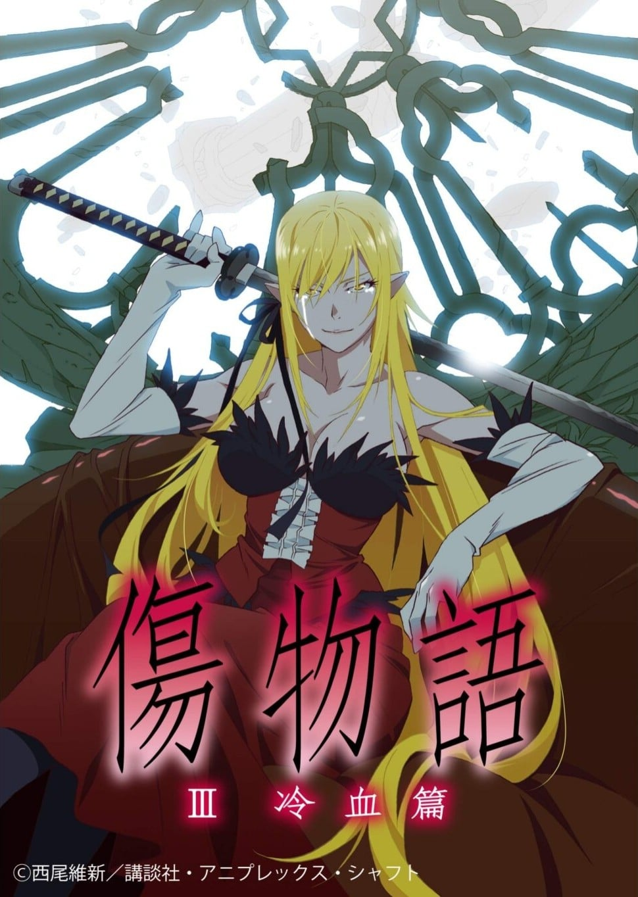
8.2「伤物语〈Ⅲ 冷血篇〉」（2017）是一部剧场版，由尾石達也执导，制作SHAFT，类型包括奇幻、战斗、恋爱，评分8.2，在本站出现在8份片单中，例如高分日漫推荐、高分动画剧场版推荐、高分热血动漫推荐。页面只做片单对照，不提供播放。ドラマツルギー、エピソード、そしてギロチンカッター――怪異の専門家・忍野メメの助力も得て、3人の強敵との戦いに勝ち抜いた阿良々木暦。彼はついに、吸血鬼キスショット・アセロラオリオン・ハートアンダーブレードの四肢を奪い返すことに成功する。すべ。
#58机器人总动员
 8.2
8.2「机器人总动员」（2008）是一部剧场版，由Andrew Stanton执导，制作Pixar Animation Studios，类型包括科幻、治愈、喜剧，评分8.2，在本站出现在10份片单中，例如高分美漫与动画电影、高分动画剧场版推荐、高分治愈系动漫推荐。页面只做片单对照，不提供播放。“WALL· E”是Waste Allocation Load Lifters - Earth（地球废品分装员）的缩写，这种职业出现在2700年，因为地球的垃圾多到爆炸，整个星球几乎被垃圾掩埋了，罪魁祸首-人类-只得移居到太空船上，并且请一。
#59皇家国教骑士团 OVA
 8.2
8.2「皇家国教骑士团 OVA」（2006）是一部OVA/WEB，由ところともかず（#1 - #4）执导，制作サテライト（#1 - #4）→MADHOUSE（#5 - #7）→グラフィニカ（#8-10），类型包括战争、战斗、奇幻，评分8.2，在本站出现在6份片单中，例如高分日漫推荐、高分OVA与WEB动画、高分热血动漫推荐。页面只做片单对照，不提供播放。在一次对治某村庄食尸鬼的超自然事件时，平凡女警女警西洛斯·维多利亚遭到袭击，奄奄一息，关键时刻吸血鬼杀手阿尔卡特出现，铲除食尸鬼，并将西洛斯变成了吸血鬼的一员，她顺理成章也接触到了阿尔卡特背后的神秘组织，即为维护英国基督新教、与反基督怪物作。
#60猎人
「猎人」（2011）是一部TV，由神志那弘志执导，制作MADHOUSE，类型包括热血、战斗、冒险，评分8.2，在本站出现在6份片单中，例如高分日漫推荐、高分TV动画推荐、高分热血动漫推荐。页面只做片单对照，不提供播放。名(坑)作重制。 主人公小杰自小在鲸鱼岛长大，直到9岁那一年，在森林里被一个青年男子搭救，从他口中小杰得知自己的父亲还活着且职业是猎人。于是小杰决定成为猎人，从这里开始找寻他父亲的踪迹。靠这样一种信念开始了冒险旅途，并在旅途当中结交好友，不。
#61物语系列 外传季&怪物季
 8.2
8.2「物语系列 外传季&怪物季」（2024）是一部OVA/WEB，由吉澤翠执导，制作SHAFT，类型包括奇幻、恋爱、校园，评分8.2，在本站出现在8份片单中，例如高分日漫推荐、高分OVA与WEB动画、高分恋爱动漫推荐。页面只做片单对照，不提供播放。高中毕业后，阿良良木历的故事结束了。 这次真的结束了。 但是在历的帮助下，她们的故事还没有结束。 这是在青春中挣扎的她们的前日谭，亦或是后日谈。
#62龙珠
 8.2
8.2「龙珠」（1986）是一部TV，制作東映アニメーション，类型包括热血、战斗、冒险，评分8.2，在本站出现在6份片单中，例如高分日漫推荐、高分TV动画推荐、高分热血动漫推荐。页面只做片单对照，不提供播放。鸟山明最早在《少年JUMP》周刊连载《龙珠》时，该漫画早期（1-194篇）比较偏重于搞笑，而且打斗一般并不在这儿占主流，因此这个时期，鸟山明的画风对人物性格刻画得很精准，可以让人爆笑起来，因此东映动画公司决定把这个时期的漫画改成一部153集。
#63水星领航员
「水星领航员」（2005）是一部TV，由佐藤順一执导，制作ハルフィルムメーカー[Hal Film Maker]，类型包括治愈、日常、奇幻，评分8.2，在本站出现在7份片单中，例如高分日漫推荐、高分TV动画推荐、高分治愈系动漫推荐。页面只做片单对照，不提供播放。本故事的时代背景在24世纪。彼时人类在火星上进行行星地球化改造工程，由于两极冰帽融解的水量超乎预期，全星球有90%被海洋覆盖，因而被人称呼为「水星」（AQUA）。在此星球上有个以过去被称为水都的威尼斯为范本所建造的城市新威尼斯（Neo-Ve。
#64物怪
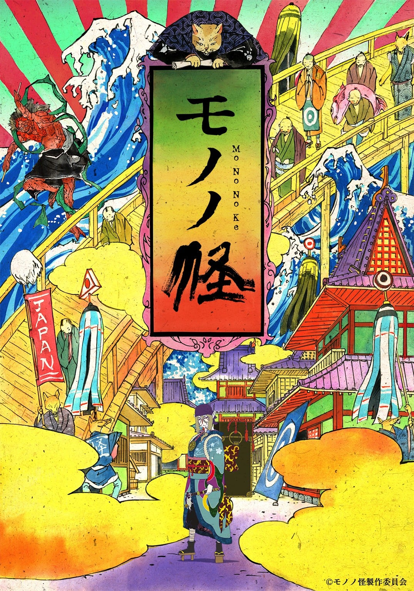
8.2「物怪」（2007）是一部TV，制作東映アニメーション，类型包括奇幻、悬疑，评分8.2，在本站出现在6份片单中，例如高分日漫推荐、高分TV动画推荐、高分悬疑推理动漫。页面只做片单对照，不提供播放。有一位在各地旅行并且携带斩魔剑斩除「妖怪」的卖药郎。 只要在他以及剑的呼唤下，在卖药男的面前就会出现一个又一个妖怪。 在那些因为恐惧而要求除去妖怪的人们的请求下，他会拿出这把剑并且告知人们，他需要清楚找出关于妖怪的三种要素：分别是因为人的因。
#65十二国记
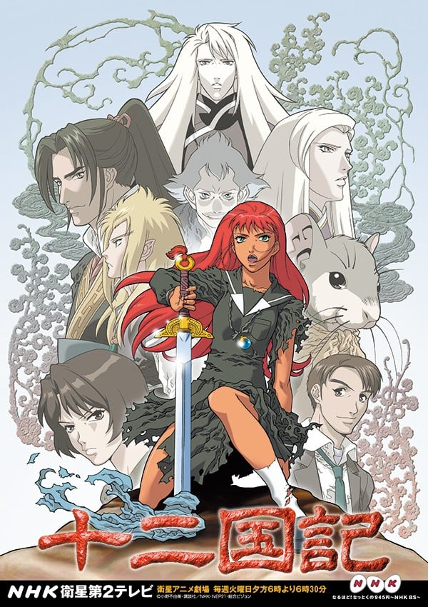
8.2「十二国记」（2002）是一部TV，由小林常夫执导，制作ぴえろ，类型包括奇幻、异世界、冒险，评分8.2，在本站出现在6份片单中，例如高分国漫推荐、高分TV动画推荐、高分异世界动漫推荐。页面只做片单对照，不提供播放。中岛阳子是无论从哪方面看都是非常平凡的女高中生。一天，一个名叫“景麒”的金发青年突然出现，随后又出现了异形怪兽的袭击。 景麒称呼阳子为主人，并把她带入了从未听说过的异世界。那是一个由十二个国王和十二头麒麟共同治理的十二国组成的不可思议的世界。
#66龙珠Z
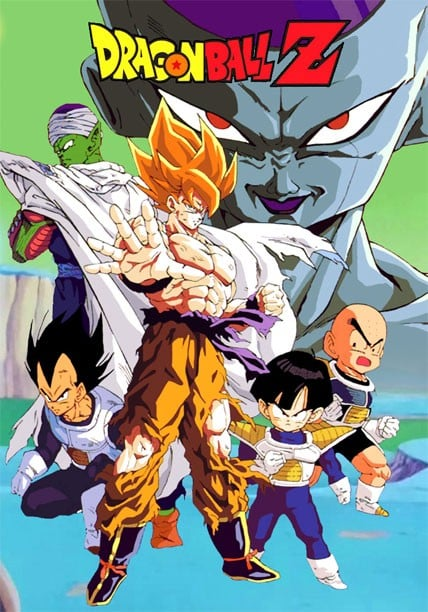
8.2「龙珠Z」（1989）是一部TV，制作東映アニメーション，类型包括热血、战斗、奇幻，评分8.2，在本站出现在6份片单中，例如高分日漫推荐、高分TV动画推荐、高分热血动漫推荐。页面只做片单对照，不提供播放。龙珠Z（日文：ドラゴンボールZ，英文：DRAGON BALL Z）是指日本漫画家鸟山明的漫画《七龙珠》第195篇-第519篇，因为这期间鸟山明的漫画风格转为超激战，而且故事也和前194篇风格没有太大变化，因此由东映动画公司改编成为独立的动画。
#67虫师 特別篇 蚀日之翳
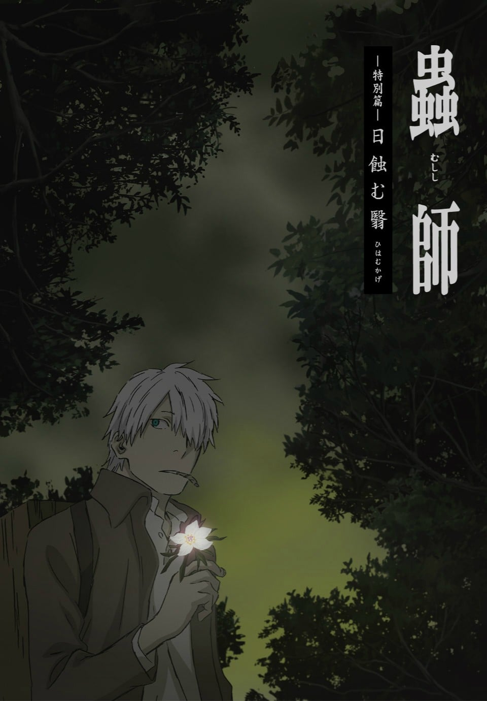
8.2「虫师 特別篇 蚀日之翳」（2014）是一部TV，由長濵博史执导，制作ARTLAND，类型包括治愈、奇幻，评分8.2，在本站出现在6份片单中，例如高分日漫推荐、高分TV动画推荐、高分治愈系动漫推荐。页面只做片单对照，不提供播放。日食发生之时，虫子最易活跃且容易发生状况，主人公银古守护的村子就出现了奇异的虫子遮天蔽日，人们最熟悉的太阳光芒即将消失。在苦苦寻找根源的时候，银古发现了一对身体奇特的姐妹，进而找到了虫子的“根”，与村民合力把根送到太阳照到的地方，解除了阳光。
#68少女革命 思春期默示录
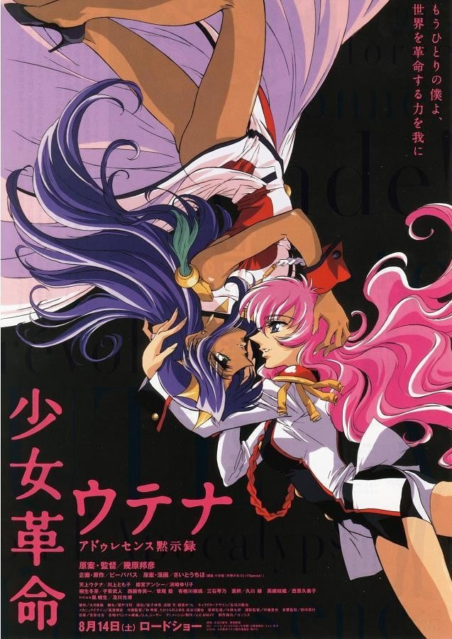
8.2「少女革命 思春期默示录」（1999）是一部剧场版，由幾原邦彦执导，制作J.C.STAFF，类型包括百合、奇幻、战斗，评分8.2，在本站出现在9份片单中，例如高分日漫推荐、高分动画剧场版推荐、高分热血动漫推荐。页面只做片单对照，不提供播放。打扮成男子模样的少女天上欧蒂娜因为某个原因而转学到贵族学校·凤学园，在那里，她遇到了被称为“蔷薇的新娘”的美丽少女姬宫安希，从而被卷入了一场以争夺“蔷薇的新娘”为目标的决斗游戏。 剧场版并非TV版的续篇，所有设定都作了大幅度变更。监督几原邦。
#69虫师 特别篇 铃之雫
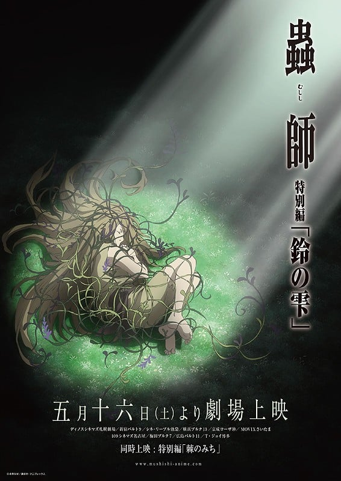
8.2「虫师 特别篇 铃之雫」（2015）是一部剧场版，由長濵博史执导，制作ARTLAND，类型包括治愈、奇幻，评分8.2，在本站出现在7份片单中，例如高分日漫推荐、高分动画剧场版推荐、高分治愈系动漫推荐。页面只做片单对照，不提供播放。ヒトから生まれ、ヒトとは成れぬ事を定められたモノが在った。 摩滅しゆく心に灯るは無数の光——己を取り巻く総ての生命という輝き。 往くべき処を悟るモノ、還るべき温もりを示す者。 其々が其々の”生”を全うする刻、かの地に鳴り渡るのは—— 幽寂な。
#70猎人 OVA1 友客鑫市完结篇
 8.2
8.2「猎人 OVA1 友客鑫市完结篇」（2002）是一部OVA/WEB，制作日本アニメーション，类型包括热血、战斗、奇幻，评分8.2，在本站出现在6份片单中，例如高分日漫推荐、高分OVA与WEB动画、高分热血动漫推荐。页面只做片单对照，不提供播放。富樫義博が描く大人気コミックを原作とするＴＶアニメーション作品。主人公の少年・ゴンは、ある日、父親ジンの弟子であるというハンター・カイと出会う。そして、死んでいると聞かされていた父が実は超一流のハンターとして生きていることを知る。自分も父親。
#71福星小子2 绮丽梦中人
 8.2
8.2「福星小子2 绮丽梦中人」（1984）是一部剧场版，由押井守执导，制作ぴえろ，类型包括奇幻、搞笑、恋爱，评分8.2，在本站出现在8份片单中，例如高分日漫推荐、高分动画剧场版推荐、高分恋爱动漫推荐。页面只做片单对照，不提供播放。友引高中即将迎来新一年的学园祭，上到老师，下到学生，却都为了这个重要节日而忙碌。虽然应名还有最后一天的准备时间，但是日复一日，年复一年，学园祭开幕式却迟迟未能举行。疲劳的温泉老师从中感到蹊跷，他感到自己与周围的人每年都过着同样的生活，却丝毫。
#72小魔女DoReMi 童年秘密篇
 8.2
8.2「小魔女DoReMi 童年秘密篇」（2004）是一部OVA/WEB，制作東映アニメーション，类型包括搞笑、校园、奇幻，评分8.2，在本站出现在6份片单中，例如高分日漫推荐、高分OVA与WEB动画、高分校园动漫推荐。页面只做片单对照，不提供播放。在故事完结篇后所推出来的OVA。以Mo~tto! 小魔女DoReMi为蓝本，讲述穿插于第三部中的轶事。故事主要围绕在DoReMi、羽月、小爱、音符、小桃子、以及其他同学、家人和朋友的小故事。
#73你的名字。
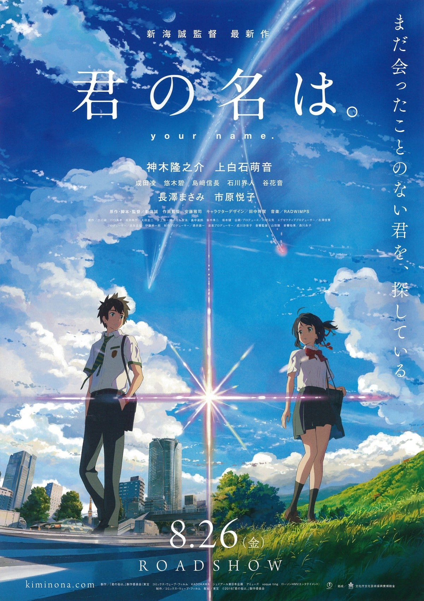
8.1「你的名字。」（2016）是一部剧场版，由新海诚执导，制作CoMix Wave Films，类型包括恋爱、奇幻、治愈，评分8.1，在本站出现在10份片单中，例如高分日漫推荐、高分动画剧场版推荐、高分恋爱动漫推荐。页面只做片单对照，不提供播放。在每千年回归一次的彗星造访过一个月之后的日本。 某个深山的乡下小镇，女高中生三叶每天都过着忧郁的生活。 而她烦恼的不光有担任镇长的父亲所举行的选举运动，还有家传神社的古老习俗。 在这个小小的城镇，周围都只是些爱瞎操心的老人。为此三叶对于大都。
#74Fate/Zero
 8.1
8.1「Fate/Zero」（2011）是一部TV，由あおきえい执导，制作ufotable，类型包括战斗、奇幻、热血，评分8.1，在本站出现在8份片单中，例如高分日漫推荐、高分TV动画推荐、高分热血动漫推荐。页面只做片单对照，不提供播放。圣杯：传说中可实现持有者一切愿望的宝物。而为了得到圣杯的仪式就被称为圣杯戦争。 参加圣杯戦争的7名由圣杯选出的魔术师被称为御主（マスター，英文Master），与7名被称为从者（サーヴァント，英文Servant）的使魔订定契约。他们是由圣杯选。
#75进击的巨人 第二季
「进击的巨人 第二季」（2017）是一部TV，由肥塚正史执导，制作WIT STUDIO，类型包括热血、战斗、奇幻，评分8.1，在本站出现在7份片单中，例如高分日漫推荐、高分TV动画推荐、高分热血动漫推荐。页面只做片单对照，不提供播放。自从人类的和平被超大型巨人打破的那天起，艾伦·耶格尔便每天持续着没有尽头的战斗...。因为眼睁睁看著母亲被巨人撕裂，艾伦发誓要将世间的巨人一只不留地杀灭。但是，在严酷的战斗中，艾伦自身也会变成巨人的姿态——为了人类的自由，艾伦施展著巨人的力。
#76超辉夜姬！
 8.1
8.1「超辉夜姬！」（2026）是一部OVA/WEB，由山下清悟执导，制作スタジオコロリド，类型包括百合、音乐、科幻，评分8.1，在本站出现在8份片单中，例如2026年新番总表、高分日漫推荐、高分OVA与WEB动画。页面只做片单对照，不提供播放。在梦想与希望汇聚的虚拟空间，少女们相遇，以及离别的舞台，就此拉开帷幕—— 在近未来的时代，酒寄彩叶是就读于东京重点高中的17岁女高中生，她同时兼顾打工与学业，每天忙得不可开交。月见八千代是互联网虚拟空间的管理员兼超人气主播，彩叶平日透过观看。
#77来自新世界
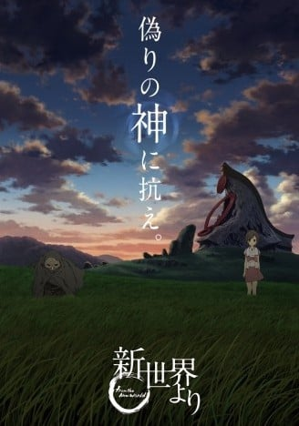
8.1「来自新世界」（2012）是一部TV，由石浜真史执导，制作A-1 Pictures，类型包括科幻、悬疑、奇幻，评分8.1，在本站出现在8份片单中，例如高分日漫推荐、高分TV动画推荐、高分热血动漫推荐。页面只做片单对照，不提供播放。1000年后的世界，日本的孩子们正不断地消失，只存在想象中的恐怖动物与人类展开殊死战斗。反乌托邦式的未来超级社会“新世界”，是口吐真言凭藉“咒力”就能移动物体的人类，与有着等同于普通人智力的生物“化鼠”共存的世界。乍看之下一切和平，但“新世。
#78春宵苦短，少女前进吧！
 8.1
8.1「春宵苦短，少女前进吧！」（2017）是一部剧场版，由湯浅政明执导，制作サイエンスSARU，类型包括恋爱、奇幻、校园，评分8.1，在本站出现在10份片单中，例如高分日漫推荐、高分动画剧场版推荐、高分恋爱动漫推荐。页面只做片单对照，不提供播放。对学妹“黑发少女”一见倾心的“前辈”，今天也是进行着名为『尽可能进入她的眼帘』的作战——简称“尽(进)她眼作战”。 春之先斗町、夏之旧书市、秋之学园祭、而后是冬天的到来…。在京都这个城市中，在被卷入充满个性的同伴们所引发的一个个奇妙事件的同。
#79夏目友人帐 叁
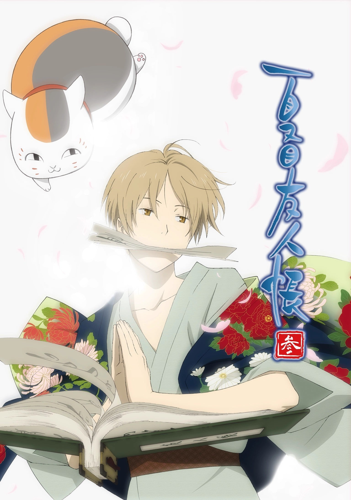
8.1「夏目友人帐 叁」（2011）是一部TV，由大森貴弘执导，制作Brain's Base，类型包括治愈、奇幻、日常，评分8.1，在本站出现在6份片单中，例如高分日漫推荐、高分TV动画推荐、高分治愈系动漫推荐。页面只做片单对照，不提供播放。小さい頃から妖怪を見ることができた少年・夏目貴志。 彼は、祖母レイコが妖怪を子分とする証にその名を書かせた「友人帳」を継いで以来、妖怪達に追われる日々。 自称用心棒の妖怪・ニャンコ先生と共に、妖怪達にその名を返すことを決めた夏目は、さまざま。
#80终物语（下）
「终物语（下）」（2017）是一部TV，由板村智幸执导，制作SHAFT，类型包括奇幻、恋爱、校园，评分8.1，在本站出现在7份片单中，例如高分日漫推荐、高分TV动画推荐、高分恋爱动漫推荐。页面只做片单对照，不提供播放。臥煙伊豆湖の振るう怪異殺しに切り刻まれ、阿良々木暦は死んだ――だが死んだはずの暦は、とある場所で目を覚ます。 そこにいたのは、成仏したはずの八九寺真宵だった。 不思議がる暦に、彼女はこう告げた。 「ここはですね――阿良々木さん。地獄です」そ。
#81剧场版 魔法少女小圆 [后篇] 永远的物语
![剧场版 魔法少女小圆 [后篇] 永远的物语 2012 动漫海报](../covers/b44692.jpg) 8.1
8.1「剧场版 魔法少女小圆 [后篇] 永远的物语」（2012）是一部剧场版，由宮本幸裕执导，制作SHAFT，类型包括百合、战斗、治愈，评分8.1，在本站出现在9份片单中，例如高分日漫推荐、高分动画剧场版推荐、高分热血动漫推荐。页面只做片单对照，不提供播放。2011年11月10日，官方宣布制作三部剧场版的消息，包括对TV版进行修正重制的两部总集篇以及一部完全新作。 总集篇前篇《起始的物语》（始まりの物語）于2012年10月6日上映，全131分钟，对应TV前8话，但部分剧情有删减。 总集篇后篇《。
#82奇诺之旅
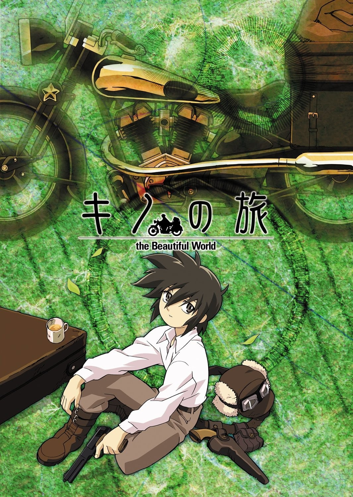
8.1「奇诺之旅」（2003）是一部TV，由中村隆太郎执导，制作A・C・G・T，类型包括奇幻、治愈、冒险，评分8.1，在本站出现在6份片单中，例如高分日漫推荐、高分TV动画推荐、高分治愈系动漫推荐。页面只做片单对照，不提供播放。旅行者奇诺（Kino）骑着她那会说话的摩托车汉密斯（Hermes）到各个国家旅行，在每个国家奇诺都只停留三天，在她体会了该国家人民的文化、风俗之后，她便离开并前往另一个国家…… --世界は美しくなんかない そして それ故に 美しい-- --。
#83黄金神威 第三季
 8.1
8.1「黄金神威 第三季」（2020）是一部TV，由難波日登志执导，制作ジェノスタジオ，类型包括冒险、搞笑、历史，评分8.1，在本站出现在8份片单中，例如高分日漫推荐、高分TV动画推荐、高分热血动漫推荐。页面只做片单对照，不提供播放。杉元とアシㇼパの再会は叶うのか!? 極寒の地で新たな局面を迎える生存競争サバイバル、樺太編が開幕ッッ!!! 網走監獄で繰り広げられた激しい攻防戦の末に、離れ離れになってしまった「不死身の杉元」こと杉元佐一とアイヌの少女・アシㇼパ。アシㇼパは。
#84辉夜姬物语
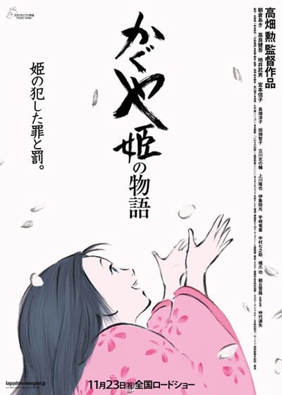
8.1「辉夜姬物语」（2013）是一部剧场版，由高畑勲执导，制作吉卜力，类型包括治愈、奇幻、历史，评分8.1，在本站出现在8份片单中，例如高分日漫推荐、高分动画剧场版推荐、高分治愈系动漫推荐。页面只做片单对照，不提供播放。《辉夜姬物语》（日语：かぐや姫の物語）是日本吉卜力工作室的动画导演高畑勋以日本古典文学《竹取物语》为蓝本所改编的动画电影。かぐや姬，汉译有不同写法，如“辉夜姬”、“赫映姬”、“竹取公主”等等。但据日本语言学家山田孝雄考证，此词源出汉语“赫奕。
#85剑风传奇
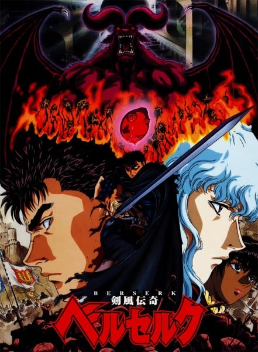
8.1「剑风传奇」（1997）是一部TV，由高橋ナオヒト执导，制作OLM TEAM IGUCHI（表记为制作协力），类型包括战斗、奇幻、热血，评分8.1，在本站出现在6份片单中，例如高分日漫推荐、高分TV动画推荐、高分热血动漫推荐。页面只做片单对照，不提供播放。身の丈を超える長大な剣を自在に操り、「使徒」と呼ばれる人外の化け物を屠る「黒い剣士」ガッツを主人公とする大河ファンタジー。ガッツはある宿命に憑りつかれて狂戦士のごとく大剣を振るい、闇に蠢く化物と死闘を繰り広げる。その目的は無為に殺された仲間。
#86海绵宝宝 第一季
 8.1
8.1「海绵宝宝 第一季」（1999）是一部TV，由Stephen Hillenburg执导，制作Nickelodeon Animation Studio，类型包括搞笑、日常、奇幻，评分8.1，在本站出现在7份片单中，例如高分美漫与动画电影、高分TV动画推荐、高分治愈系动漫推荐。页面只做片单对照，不提供播放。海绵宝宝是一块穿着短裤衬衫打领带、暴牙大眼睛的黄色海绵，他生活在太平洋中央一片名为比基尼的海底之下。这里风和日丽，平静祥和，生活无忧无虑。海绵宝宝住在一个菠萝形状的房子里，与之为伴的是他的宠物小蜗（蜗牛）。开朗、纯真的海绵宝宝有许多好朋友，。
#87心灵游戏
「心灵游戏」（2004）是一部剧场版，由湯浅政明执导，制作STUDIO 4℃，类型包括奇幻、科幻、冒险，评分8.1，在本站出现在7份片单中，例如高分日漫推荐、高分动画剧场版推荐、高分科幻动漫推荐。页面只做片单对照，不提供播放。一天，二十多岁的新人漫画家西在电车上遇到了青梅竹马的弥，她正在被黑社会追杀。西送弥回家，途中得知了弥已经有了婚约。 在她们家的烤肉店，弥的未婚夫来到店里，虽然嫉妒，但西自认比不过他。这时，黑社会也来到店里，打晕了弥的男友并要强奸弥，而西此时。
#88六样情
 8.1
8.1「六样情」（2024）是一部OVA/WEB，由林哲（《看见》）执导，制作FLiiiP Design（《看见》），类型包括奇幻、战斗，评分8.1，在本站出现在6份片单中，例如高分国漫推荐、高分OVA与WEB动画、高分热血动漫推荐。页面只做片单对照，不提供播放。六般体相六般兵，六样形骸六样情。六恶六根缘六欲，六门六道赌输赢。《六样情》是游戏科学携手中国多个顶尖动画团队，为《黑神话：悟空》精心制作的六部动画短片，对应游戏的六个章节。
#89水星领航员 OVA ～ARIETTA～
 8.1
8.1「水星领航员 OVA ～ARIETTA～」（2007）是一部OVA/WEB，由佐藤順一执导，制作ハルフィルムメーカー[Hal Film Maker]，类型包括治愈、日常、奇幻，评分8.1，在本站出现在7份片单中，例如高分日漫推荐、高分OVA与WEB动画、高分治愈系动漫推荐。页面只做片单对照，不提供播放。梦见成为Prima的灯里，开始对自己早已熟悉了的日常风景开始感到困惑不安。即使梦醒之后这种不安仍然没有消除，灯里的脑子里慢慢出现了这样一个疑问：“为什么艾莉西亚会选择自己（进ARIA Company）呢？”为了解答灯里梦中的疑问，艾莉西亚开。
#90怪医黑杰克 OVA
 8.1
8.1「怪医黑杰克 OVA」（1993）是一部OVA/WEB，由出﨑統执导，制作手塚プロダクション，类型包括奇幻、剧情，评分8.1，在本站出现在5份片单中，例如高分日漫推荐、高分OVA与WEB动画、高分奇幻冒险动漫。页面只做片单对照，不提供播放。「ブラック・ジャック」の原作各エピソードをモチーフにしながら、 新たな作品として作り出されたオリジナル・ビデオ・アニメーションシリーズ。 手塚治虫の同名人気マンガをモチーフにしながら、しかし原作の設定だけを流用して新たな作品を作り出したオリ。
#91降世神通：最后的气宗 第三季
 8.1
8.1「降世神通：最后的气宗 第三季」（2007）是一部TV，制作Nickelodeon Animation Studio，类型包括战斗、奇幻、搞笑，评分8.1，在本站出现在7份片单中，例如高分国漫推荐、高分TV动画推荐、高分热血动漫推荐。页面只做片单对照，不提供播放。故事具有中国神话色彩，并且人设也具有东方古韵。该动画却是在2005年获得第三十三届美国动画安妮奖最佳电视动画提名，可想而知在欧美地区已经有一定影响力。《降世神通》主要讲述的是一个虚构的东方神话冒险故事：气、火、水、土是主宰着整个世界的四大神。
#92死神 千年血战篇-祸进谭-
 8.1
8.1「死神 千年血战篇-祸进谭-」（2026）是一部TV，由村田光执导，制作PIERROT FILMS，类型包括战斗、热血、奇幻，评分8.1，在本站出现在9份片单中，例如2026年夏季新番推荐、2026年新番总表、高分日漫推荐。页面只做片单对照，不提供播放。死神与灭却师，在历经千年的血战尽头，即使看见的是毁灭的未来……。 为了拦阻企图闯入灵王宫的优哈巴哈，隶属于王的特务「第零队」挺身迎击，但灭却师之王和他的亲卫队却击败了第零队壮烈的卍解，最终踏入灵王的大内里。 黑崎一护等人受兵主部一兵卫之托守。
#93探险活宝 第八季
 8.1
8.1「探险活宝 第八季」（2016）是一部TV，类型包括冒险、奇幻、搞笑，评分8.1，在本站出现在5份片单中，例如高分美漫与动画电影、高分治愈系动漫推荐、高分奇幻冒险动漫。页面只做片单对照，不提供播放。探险活宝 第八季。2016。冒险、奇幻、搞笑。
#94猫头鹰魔法社 第二季
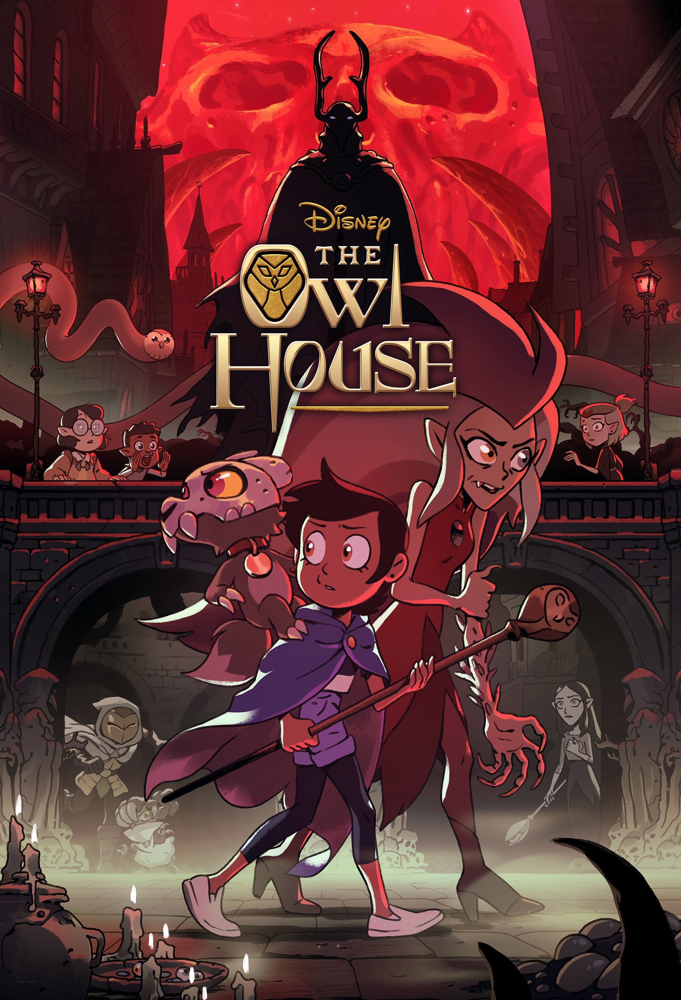
8.1「猫头鹰魔法社 第二季」（2021）是一部TV，制作Disney Television Animation，类型包括百合、奇幻、冒险，评分8.1，在本站出现在4份片单中，例如高分美漫与动画电影、高分奇幻冒险动漫、高分女性向动漫。页面只做片单对照，不提供播放。紧接着第一季结局的事件，本季将“找到我们的英雄们一起努力将Luz送回人间，帮助Eda对抗她内心的恶魔，并寻找关于King过去的真相。” 本季将有 21 集，分为“2A”和“2B”。
#95阿甘妙世界 第一季
 8.1
8.1「阿甘妙世界 第一季」（2011）是一部TV，由Mic Graves执导，类型包括搞笑、科幻、喜剧，评分8.1，在本站出现在6份片单中，例如高分美漫与动画电影、高分治愈系动漫推荐、高分科幻动漫推荐。页面只做片单对照，不提供播放。阿甘是一位魅力十足、生性乐天的12岁男孩。他做事往往因过分热衷而变成捣蛋，不过他还是会继续保持乐观的想法。阿甘拥有搞怪的冒险精神，甚麽奇怪的东西都要试试看。无论阿甘的计划最终结果如何，他都能迅速恢复心情，只可惜他从错误中学懂的，就只有如何製。
#96无职转生～到了异世界就拿出真本事～
「无职转生～到了异世界就拿出真本事～」（2021）是一部TV，由岡本学执导，制作スタジオバインド，类型包括异世界、奇幻、战斗，评分8.0，在本站出现在7份片单中，例如高分日漫推荐、高分TV动画推荐、高分热血动漫推荐。页面只做片单对照，不提供播放。“我要在这个异世界拿出真本事！” 34岁童贞且无职的家里蹲男子，在父母的葬礼当天被赶出家门后，在路上被一辆卡车所撞死。意识清醒后，他发现自己居然作为一个刚出生的婴儿转生到了剑与魔法的异世界！像废物一样活过了前世的男子，发誓要作为少年·鲁迪乌。
#97一拳超人
 8.0
8.0「一拳超人」（2015）是一部TV，由夏目真悟执导，制作MADHOUSE，类型包括热血、搞笑、战斗，评分8.0，在本站出现在7份片单中，例如高分日漫推荐、高分TV动画推荐、高分热血动漫推荐。页面只做片单对照，不提供播放。因为兴趣而开始当英雄的男人「埼玉」，在经过三年特训之後，得到了无敌的力量。 然而，他实在是强过了头，所以无论多厉害的对手，都被他一拳解决。「绝对强势的力量，实在是很无聊。」在这种普通热血的最强英雄面前，今天也出现新的敌踪。今天可以让他拿出认。
#98凉宫春日的忧郁 2009
 8.0
8.0「凉宫春日的忧郁 2009」（2009）是一部TV，由团长辅佐：武本康弘执导，制作京都动画，类型包括校园、日常、奇幻，评分8.0，在本站出现在10份片单中，例如高分日漫推荐、高分TV动画推荐、高分治愈系动漫推荐。页面只做片单对照，不提供播放。“我对普通的人类没有兴趣。你们之中要是有外星人、未来人、异世界人或者超能力者的话，就尽管来找我吧！”这是围绕着被天上天下唯我独尊超积极任性女孩凉宫春日所指挥的阿虚和SOS团而展开的微妙的非日常校园故事。 或者说本作是：某女高中生想要和外星人。
#99JOJO的奇妙冒险 星尘斗士
「JOJO的奇妙冒险 星尘斗士」（2014）是一部TV，由津田尚克执导，制作david production，类型包括热血、战斗、奇幻，评分8.0，在本站出现在7份片单中，例如高分日漫推荐、高分TV动画推荐、高分热血动漫推荐。页面只做片单对照，不提供播放。时为1987年，乔瑟夫·乔斯达与“柱之男”们之间的死战后过了50年……乔瑟夫为了为了帮助“被恶灵附身了”的外孙子·空条承太郎而来到了日本。原来那并不是恶灵而是幽波纹（替身）。替身突然出现的原因在于，从跨越100年的长眠中苏醒过来的吸血鬼·D。
#100寄生兽 生命的准则
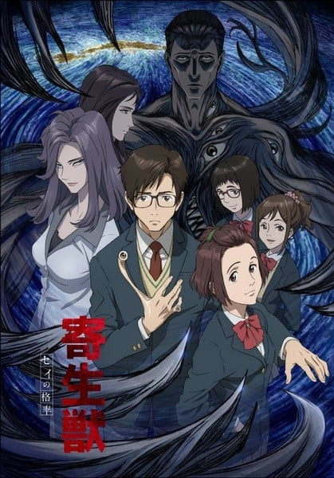
8.0「寄生兽 生命的准则」（2014）是一部TV，由清水健一执导，制作MADHOUSE，类型包括科幻、战斗、奇幻，评分8.0，在本站出现在7份片单中，例如高分日漫推荐、高分TV动画推荐、高分热血动漫推荐。页面只做片单对照，不提供播放。某天于地球上空出现许多孢子，其中诞生的幼虫侵入人体后，可以吞噬掉宿主的头部取而代之，从而管理这个“死掉的身体”，它们能任意变形，其食物便是与寄生体相同的物种。男主角泉新一就是被寄生生物寄生的人类之一，但是由于某种意外，寄生在他体内的生物并没。
#101JOJO的奇妙冒险 黄金之风
「JOJO的奇妙冒险 黄金之风」（2018）是一部TV，由木村泰大・髙橋秀弥执导，制作david production，类型包括热血、战斗、奇幻，评分8.0，在本站出现在7份片单中，例如高分日漫推荐、高分TV动画推荐、高分热血动漫推荐。页面只做片单对照，不提供播放。居住在意大利那不勒斯的青年乔鲁诺·乔巴拿，是继承了乔斯达家宿敌·DIO之血脉的儿子。 幼年时遭受迫害而自暴自弃的他，由于拯救了一名黑帮男子，而学到了“相信他人”。不忘恩义、带着敬意对待自己的黑帮，让他的心变得率直。就这样，乔鲁诺开始对“黑帮。
#102吊带袜天使
 8.0
8.0「吊带袜天使」（2010）是一部TV，由今石洋之执导，制作GAINAX，类型包括搞笑、战斗、奇幻，评分8.0，在本站出现在7份片单中，例如高分日漫推荐、高分TV动画推荐、高分热血动漫推荐。页面只做片单对照，不提供播放。在天堂和地狱的裂缝之间有一座城市—堕天城（Daten City），在那里人们一直饱受“恶灵（Ghost）”的袭击。 腐蚀人心的黑暗，至今仍在悄悄地侵蚀这个城市，有人正试图以超自然力，消灭这些由欲望产生的恶灵，担负了这驱逐黑暗的使命。 因行为。
#103回转企鹅罐
「回转企鹅罐」（2011）是一部TV，由幾原邦彦执导，制作Brain's Base，类型包括奇幻、治愈，评分8.0，在本站出现在6份片单中，例如高分日漫推荐、高分TV动画推荐、高分治愈系动漫推荐。页面只做片单对照，不提供播放。幾原邦彦所监督的原创动画，以高仓家的三兄妹——双子兄弟高仓冠叶和高仓晶马，以及体弱多病的妹妹高仓阳毬为中心展开的故事。 某天兄弟二人带着时日无多的妹妹去水族馆游玩，久未外出的阳毬在人群中忽然倒下气绝。之后在停尸间，在绝望的兄弟二人面前，死去。
#104夏目友人帐
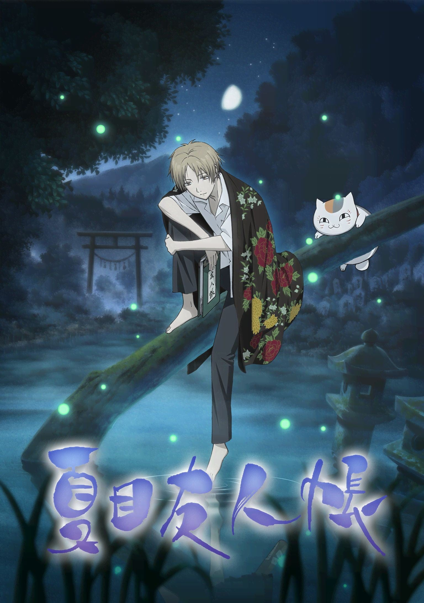
8.0「夏目友人帐」（2008）是一部TV，由大森貴弘执导，制作Brain's Base，类型包括治愈、奇幻、日常，评分8.0，在本站出现在6份片单中，例如高分日漫推荐、高分TV动画推荐、高分治愈系动漫推荐。页面只做片单对照，不提供播放。因为看得见妖怪而被人类疏远的女子夏目玲子，为了打发寂寞的日子，她向妖怪们发起挑战，并将败在自己手下的妖怪的名字写在一纸契约上，以此做为妖怪们成为自己属下的证据。 玲子的孙子夏目贵志得到了那些契约书所做成的“友人帐”，还继承了玲子的力量，能看。
#105剧场版 空之境界 第七章 杀人考察（后）
 8.0
8.0「剧场版 空之境界 第七章 杀人考察（后）」（2009）是一部剧场版，由瀧沢進介（あおきえい执导，制作ufotable，类型包括奇幻、战斗、恋爱，评分8.0，在本站出现在10份片单中，例如高分日漫推荐、高分动画剧场版推荐、高分热血动漫推荐。页面只做片单对照，不提供播放。1999年2月，杀人鬼回来了！ 1995年在日本发生的连续猎奇杀人事件，因嫌疑人遇到车祸住院而草草结案。如今疯狂的犯罪再次出现，恐怖的气氛来袭，原嫌疑人的嫌疑被洗清，到底谁才是这一系列事件的凶手？ 解决都市不可思议事件的伽蓝堂的成员开始展开。
#106伤物语〈Ⅱ 热血篇〉
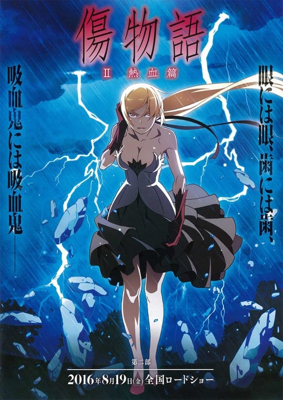
8.0「伤物语〈Ⅱ 热血篇〉」（2016）是一部剧场版，由尾石達也执导，制作SHAFT，类型包括奇幻、战斗、恋爱，评分8.0，在本站出现在8份片单中，例如高分日漫推荐、高分动画剧场版推荐、高分热血动漫推荐。页面只做片单对照，不提供播放。高校二年の春休みに、美しき吸血鬼キスショット・アセロラオリオン・ ハートアンダーブレードと出会った阿良々木暦。四肢を失い、瀕死の状態にあった彼女を助けた暦は、しかし自らも吸血鬼になってしまう。 人間に戻るためには、奪われたキスショットの四肢。
#107狼的孩子雨和雪
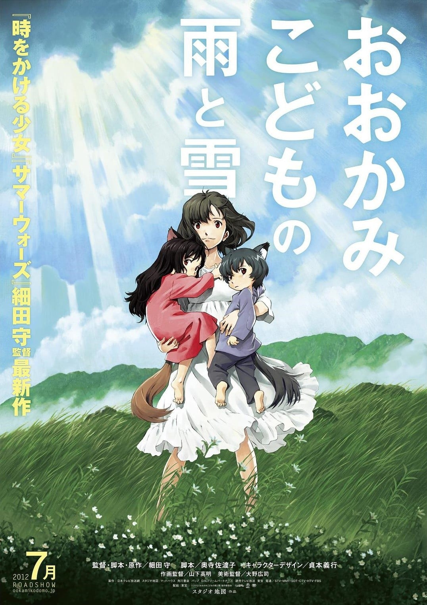
8.0「狼的孩子雨和雪」（2012）是一部剧场版，由細田守执导，制作MADHOUSE，类型包括治愈、奇幻、家庭，评分8.0，在本站出现在7份片单中，例如高分日漫推荐、高分动画剧场版推荐、高分治愈系动漫推荐。页面只做片单对照，不提供播放。女大学生的花，与一个在大学教室认识的男子结婚，并成为两个孩子的母亲。 不过，那个男子是“狼人”，姐姐“雪”和弟弟“雨”都是“狼的孩子”。即便如此，一家人还是在城市里过着幸福的生活。然而，在“雨”出生之后，男子却因为意外而去世。 对于丈夫去世。
#108续 夏目友人帐
「续 夏目友人帐」（2009）是一部TV，由大森貴弘执导，制作Brain's Base，类型包括治愈、奇幻、日常，评分8.0，在本站出现在6份片单中，例如高分日漫推荐、高分TV动画推荐、高分治愈系动漫推荐。页面只做片单对照，不提供播放。玲子的孙子夏目贵志从祖母的遗物中得到了那些契约书所做成的“友人帐”，同样他也能看到不会显现在人前的物体。可是，作为唯一继承了玲子血统的他却做出了一个重要的决定：将玲子夺过来的妖怪们的名字一一归还。伴随着归还名字的行动，贵志渐渐的认识了一个更。
#109红猪
 8.0
8.0「红猪」（1992）是一部剧场版，由宫崎骏执导，制作吉卜力，类型包括奇幻、战争、战斗，评分8.0，在本站出现在10份片单中，例如高分日漫推荐、高分动画剧场版推荐、高分热血动漫推荐。页面只做片单对照，不提供播放。罗森是一战中意大利空军的王牌飞行员，但却被施了魔法变了一头猪。虽然变了猪，但罗森还是继续他的老本行，成了一位赏金猎人，专门打击在亚地里亚海空域作恶的空中劫匪。红猪侠一时威名远扬，令劫匪们闻风丧胆。匪徒们为了对付罗森，请来了超级飞行员卡基斯。
#110夏目友人帐 肆
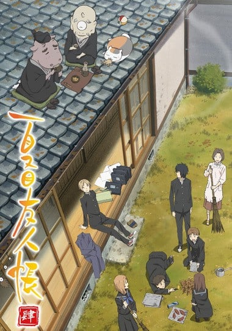
8.0「夏目友人帐 肆」（2012）是一部TV，由大森貴弘执导，制作Brain's Base，类型包括治愈、奇幻、日常，评分8.0，在本站出现在6份片单中，例如高分日漫推荐、高分TV动画推荐、高分治愈系动漫推荐。页面只做片单对照，不提供播放。小さい頃から妖怪を見ることができた少年・夏目貴志。 彼は、祖母レイコが妖怪を子分とする証にその名を書かせた「友人帳」を継ぎ、 自称用心棒の妖怪・ニャンコ先生と共に、妖怪達にその名を返す日々。 ようやく手に入れた大切な場所で、友人達との深まる。
#111妄想代理人
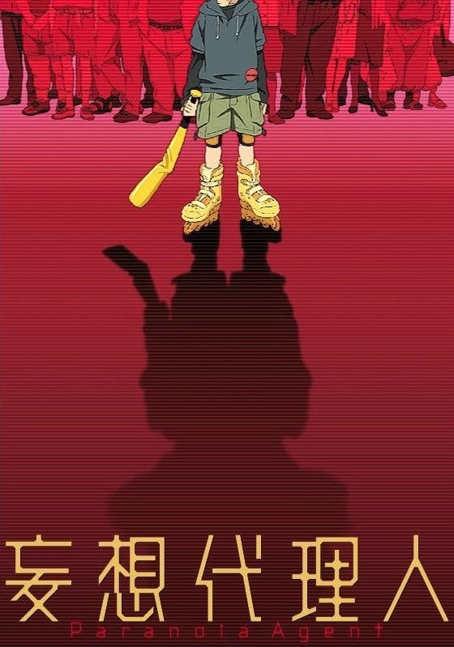
8.0「妄想代理人」（2004）是一部TV，制作MADHOUSE，类型包括奇幻、悬疑、惊悚，评分8.0，在本站出现在7份片单中，例如高分日漫推荐、高分TV动画推荐、高分科幻动漫推荐。页面只做片单对照，不提供播放。著名的設計師鷺月子在一天夜裏突然遭到神秘少年襲擊。在此之後接連出現新的受害者，城中一度陷入恐慌。事件的真相究竟是……。
#112穹庐下的魔女
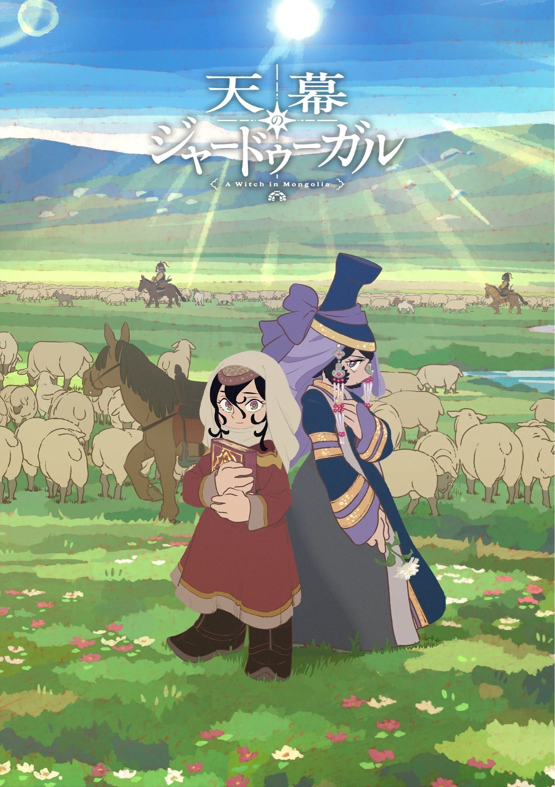
8.0「穹庐下的魔女」（2026）是一部TV，由Abel Gongora执导，制作サイエンスSARU，类型包括历史、战争、剧情，评分8.0，在本站出现在8份片单中，例如2026年夏季新番推荐、2026年新番总表、高分日漫推荐。页面只做片单对照，不提供播放。13世纪，一名少女身处伊朗的奴隶市场。 这是一个将辽阔大陆操弄于股掌间的一位魔女的故事。失去母亲，又被迫远离故乡的希塔拉，年纪尚幼，既没有独自生存的能力，也没有未来的希望。这样的她，被心地善良的学者一家的夫人法蒂玛收留。 「只要透过学习变聪。
#113瑞克和莫蒂 第四季
 8.0
8.0「瑞克和莫蒂 第四季」（2019）是一部TV，由Justin Roiland执导，类型包括科幻、搞笑、冒险，评分8.0，在本站出现在7份片单中，例如高分美漫与动画电影、高分TV动画推荐、高分科幻动漫推荐。页面只做片单对照，不提供播放。The fourth season of the animated television series Rick and Morty was confirmed by Adult Swim in May 2018. The season i。
#114吸血鬼猎人D：妖杀行
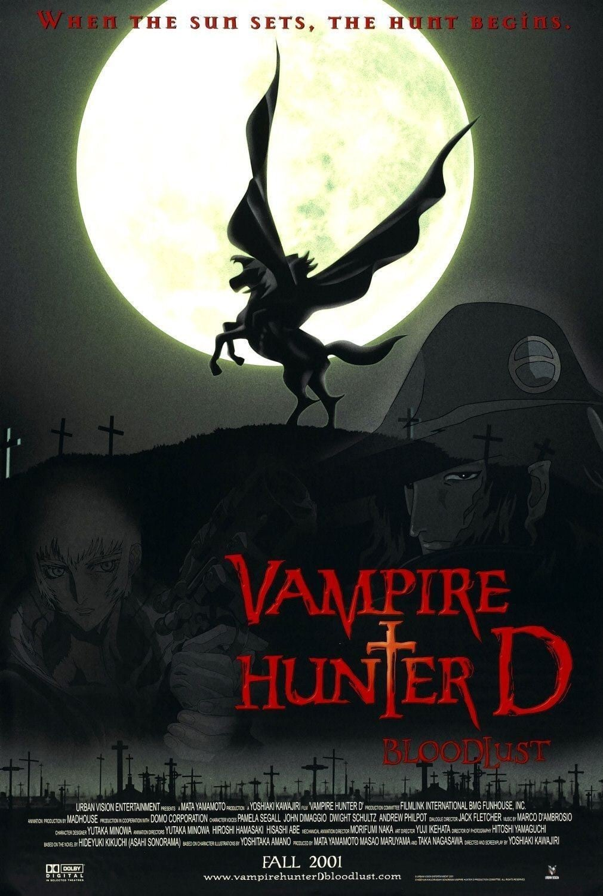
8.0「吸血鬼猎人D：妖杀行」（2000）是一部剧场版，由川尻善昭执导，制作MADHOUSE，类型包括奇幻、战斗、科幻，评分8.0，在本站出现在8份片单中，例如高分日漫推荐、高分动画剧场版推荐、高分热血动漫推荐。页面只做片单对照，不提供播放。根据小说版第三作《D-妖杀行》改编。2000年8月25日以《Vampire Hunter D: Bloodlust》片名在美国上映。与前作OVA版相较，本片则受到原作者菊地秀行的高度评价。日本在2001年4月21日，先以英语配音版配日文字幕。
#115数码宝贝驯兽师之王
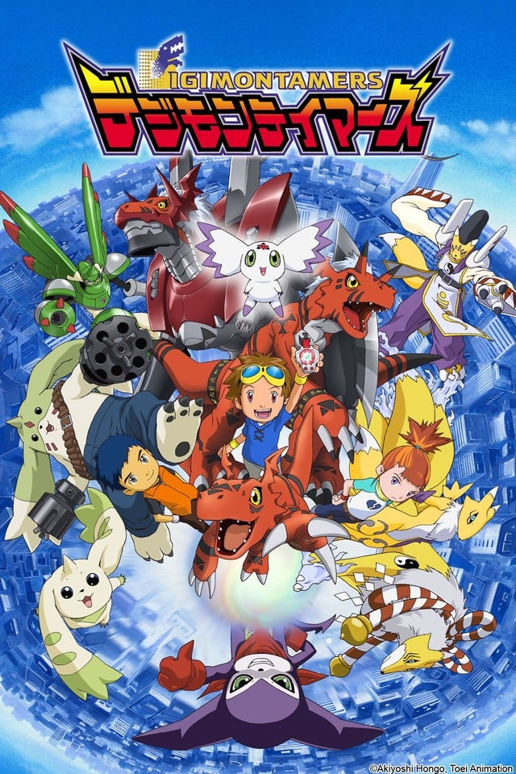
8.0「数码宝贝驯兽师之王」（2001）是一部TV，制作東映アニメーション，类型包括热血、战斗、科幻，评分8.0，在本站出现在7份片单中，例如高分日漫推荐、高分TV动画推荐、高分热血动漫推荐。页面只做片单对照，不提供播放。松田启人是个稍微有点率真个性极普通得小学五年级男生，现在最喜欢东西就数码宝贝！ 对他来说与朋友玩数码宝贝卡片游戏及上课时偷偷地把自己创作数码暴龙画笔记簿上最大乐趣！热爱数码宝贝少年启人某日竟偶然得到了一张能把命运大大改变的以往从未有人见过的。
#116海马
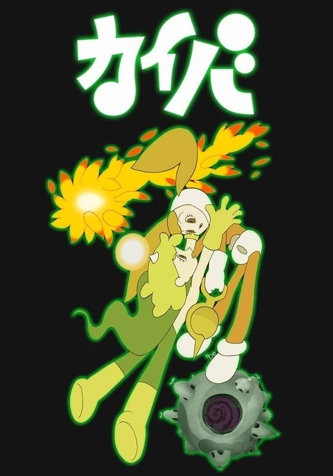
8.0「海马」（2008）是一部TV，由湯浅政明执导，制作MADHOUSE，类型包括科幻、奇幻，评分8.0，在本站出现在6份片单中，例如高分日漫推荐、高分TV动画推荐、高分科幻动漫推荐。页面只做片单对照，不提供播放。由于记忆可以被储存，肉体的死亡不再具有意义。由于记忆可以在不同身体中转移，发生许多社会现象，像是记忆的买卖、违法的记忆改造、偷取他人的记忆。社会混乱，进步停滞。丧失自己记忆的主角凯巴在这样的社会里寻找自己原来的记忆。
#117游戏王5D's
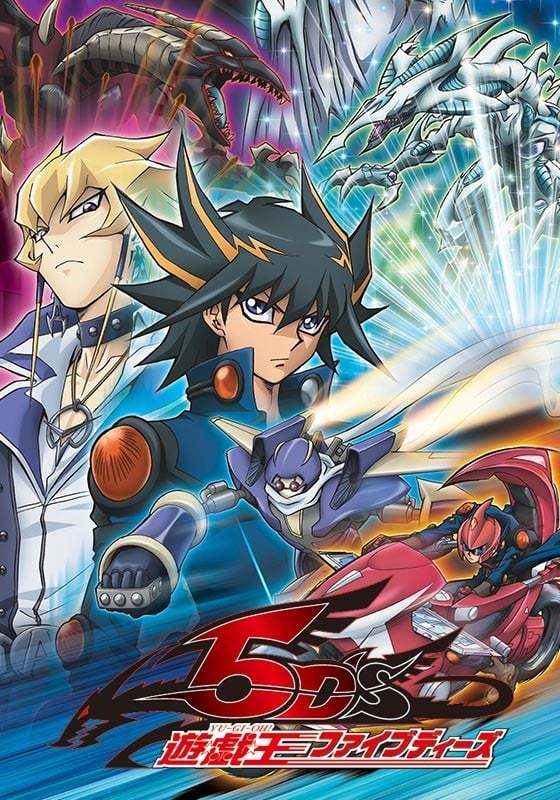
8.0「游戏王5D's」（2008）是一部TV，由小野勝巳 [1～85・93～154]执导，制作ぎゃろっぷ，类型包括热血、科幻、奇幻，评分8.0，在本站出现在7份片单中，例如高分日漫推荐、高分TV动画推荐、高分热血动漫推荐。页面只做片单对照，不提供播放。以武藤游戏所在时代数十年后的童实野市为舞台。那时的童实野市被称为“新童实野市”，是一个根据身份高低分为上层地带和下层地带的阶级社会，流行着使用被称为“D轮（D Wheel）”的摩托车型决斗盘决斗的“骑乘决斗（Riding Duel）”。 不。
#118小马宝莉：友谊就是魔法 第一季
 8.0
8.0「小马宝莉：友谊就是魔法 第一季」（2010）是一部TV，类型包括日常、治愈、奇幻，评分8.0，在本站出现在7份片单中，例如高分美漫与动画电影、高分TV动画推荐、高分治愈系动漫推荐。页面只做片单对照，不提供播放。2010年的10月10日，my little pony正式推出了G4“Friendship is Magic” ，比起前几代，这些小马造型更加可爱，更加Q,小马驹也在G4首次推出了羽翼独角兽，主要有7个人物，乡村小马Applejack，温柔。
#119怪诞小镇 第一季
 8.0
8.0「怪诞小镇 第一季」（2012）是一部TV，制作Disney Television Animation，类型包括奇幻、搞笑、日常，评分8.0，在本站出现在7份片单中，例如高分美漫与动画电影、高分TV动画推荐、高分治愈系动漫推荐。页面只做片单对照，不提供播放。暑假到了，双胞胎姐弟俩梅宝（克里斯汀·沙尔 Kristen Schaal 配音）和迪普（杰森·雷特 Jason Ritter 配音）被爸妈赶到一个偏僻小镇“重力泉”过暑假，在这里，他们的斯坦叔公经营着一家专门敲诈游客的旅游景点“神秘小屋”，。
#120境界触发者 第三季
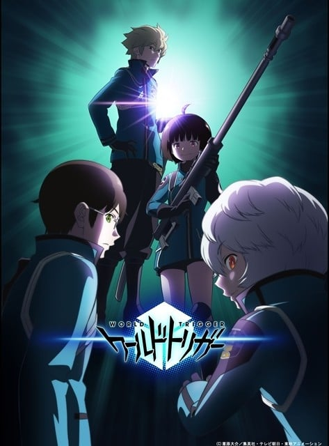
8.0「境界触发者 第三季」（2021）是一部TV，制作東映アニメーション，类型包括战斗、热血、科幻，评分8.0，在本站出现在7份片单中，例如高分日漫推荐、高分TV动画推荐、高分热血动漫推荐。页面只做片单对照，不提供播放。境界触发者 第三季。2021。战斗、热血、科幻。
#121降世神通：最后的气宗 第二季
 8.0
8.0「降世神通：最后的气宗 第二季」（2006）是一部TV，制作Nickelodeon Animation Studio，类型包括战斗、奇幻、搞笑，评分8.0，在本站出现在6份片单中，例如高分TV动画推荐、高分热血动漫推荐、高分奇幻冒险动漫。页面只做片单对照，不提供播放。故事具有中国神话色彩，并且人设也具有东方古韵。该动画却是在2005年获得第三十三届美国动画安妮奖最佳电视动画提名，可想而知在欧美地区已经有一定影响力。《降世神通》主要讲述的是一个虚构的东方神话冒险故事：气、火、水、土是主宰着整个世界的四大神。
#122萩萩公主
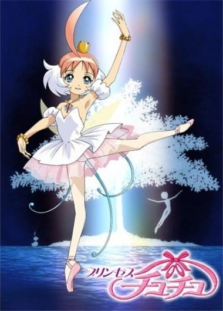
8.0「萩萩公主」（2002）是一部TV，由河本昇悟执导，制作ハルフィルムメーカー[Hal Film Maker]，类型包括奇幻、音乐、治愈，评分8.0，在本站出现在6份片单中，例如高分日漫推荐、高分TV动画推荐、高分治愈系动漫推荐。页面只做片单对照，不提供播放。当一只鸭子看见一个悲伤的王子在湖边跳舞的时候，她想令他再现笑容。这愿望把她变成了一个金冠学园的学生，鸭儿。在一个魔法垂饰的帮助下，她变身成芭蕾公主昭昭(千千)，一个有能力把王子的“心之碎片”送回王子身体的角色。到底是谁在幕后作出这种神秘的转。
#123幻想曲2000
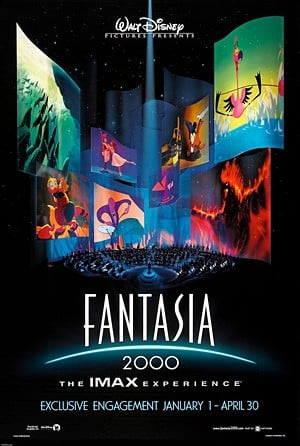
8.0「幻想曲2000」（1999）是一部剧场版，由James Algar执导，制作Walt Disney Animation Studios，类型包括音乐、奇幻，评分8.0，在本站出现在5份片单中，例如高分美漫与动画电影、高分动画剧场版推荐、高分奇幻冒险动漫。页面只做片单对照，不提供播放。《幻想曲2000》是迪士尼作品，由多位名家共同执导，是继1940年的《幻想曲》之后，再度推出的古典音乐动画电影续篇，也是第一部使用IMAX技术制作的动画电影。
#124探险活宝 第七季
 8.0
8.0「探险活宝 第七季」（2015）是一部TV，类型包括搞笑、百合、日常，评分8.0，在本站出现在6份片单中，例如高分美漫与动画电影、高分治愈系动漫推荐、高分奇幻冒险动漫。页面只做片单对照，不提供播放。探险活宝 第七季。2015。搞笑、百合、日常。
#125男子高中生的日常
 7.9
7.9「男子高中生的日常」（2012）是一部TV，由高松信司执导，制作Sunrise，类型包括搞笑、日常、校园，评分7.9，在本站出现在6份片单中，例如高分治愈系动漫推荐、高分校园动漫推荐、高分奇幻冒险动漫。页面只做片单对照，不提供播放。原作为山內泰延连载于《ガンガンONLINE》的漫画，是描写男子高中生的日常生活的轻喜剧作品。 在一个普通的城市里，一帮普通的男子高中生过着普通的日常生活。想像着机动战士和冒险故事，放学后交女朋友的方法，对女生的裙子充满幻想，在家讲恐怖鬼故事。
#126少女☆歌剧 Revue Starlight
「少女☆歌剧 Revue Starlight」（2018）是一部TV，由古川知宏执导，制作KINEMA CITRUS，类型包括百合、战斗、音乐，评分7.9，在本站出现在5份片单中，例如高分热血动漫推荐、高分奇幻冒险动漫、高分女性向动漫。页面只做片单对照，不提供播放。“舞台少女”——以未来的舞台女演员为目标，光芒四溢的少女们。 某天，她们收到了一封邮件。“请去取得吧你所希望的那颗星”为了摘取闪耀的星星，而聚集于选拔会场的9名舞台少女。 追求光芒的心意、执着、命运——在舞台上交错。 现在，正是拉开Revu。
#127伪物语
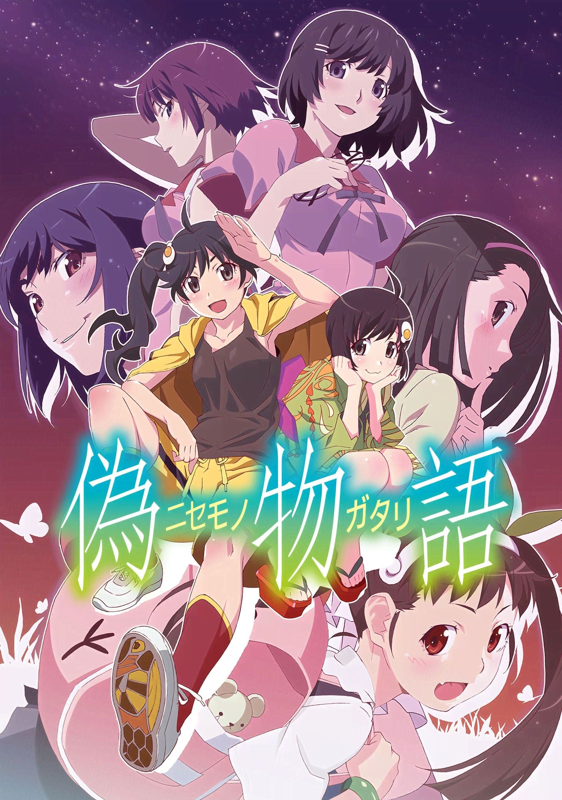
7.9「伪物语」（2012）是一部TV，由新房昭之执导，制作SHAFT，类型包括奇幻、恋爱、校园，评分7.9，在本站出现在5份片单中，例如高分恋爱动漫推荐、高分校园动漫推荐、高分奇幻冒险动漫。页面只做片单对照，不提供播放。伪物语是伪物的物语(伪即不真实，不成熟，虚伪的)。历和女友战场原是伪物；历的两个妹妹火怜和月火是伪物；欺诈师贝木等也是伪物。而相对的，羽川是个非常强大的真物。伪物语中的怪异都与历的妹妹扯上了关系，引发了一系列的事件。
#128AIR
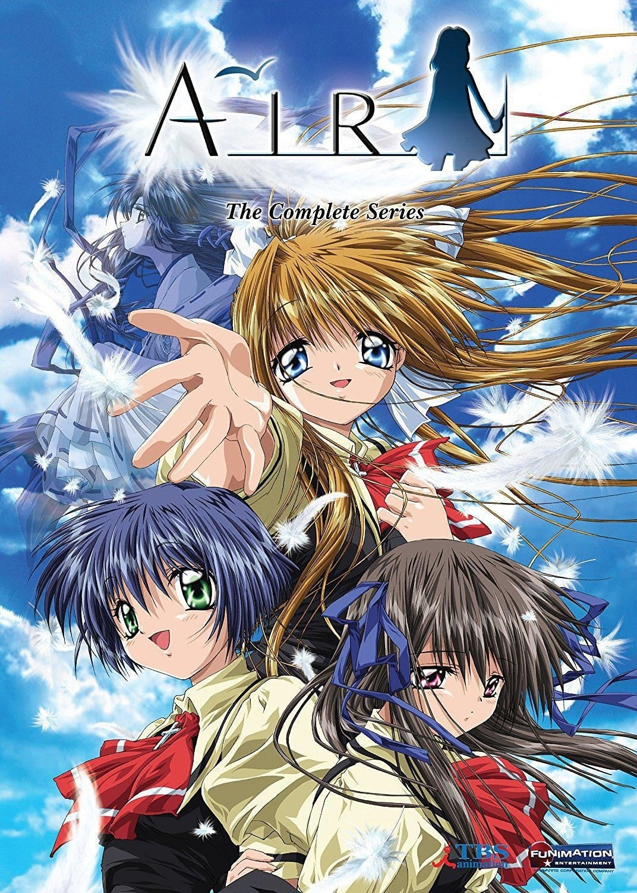
7.9「AIR」（2005）是一部TV，由石原立也执导，制作京都动画，类型包括恋爱、奇幻、治愈，评分7.9，在本站出现在6份片单中，例如高分恋爱动漫推荐、高分治愈系动漫推荐、高分奇幻冒险动漫。页面只做片单对照，不提供播放。我的孩子，仔细听好 接下来我说的，是一件非常重要的事 已经忘了从何时开始 由上代讲给下代，代代传下来的故事 一个关于长久的旅程的故事…… 夏天，在靠近海边小小的街道上 一位青年从公共汽车站下车了 青年一直在旅行中 这样的小镇他无心久留 在赚。
#129无头骑士异闻录
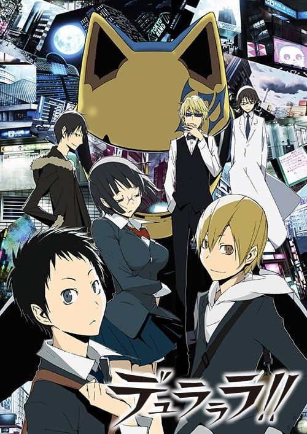
7.9「无头骑士异闻录」（2010）是一部TV，由大森貴弘执导，制作Brain's Base，类型包括奇幻、剧情、战斗，评分7.9，在本站出现在5份片单中，例如高分热血动漫推荐、高分悬疑推理动漫、高分奇幻冒险动漫。页面只做片单对照，不提供播放。东京，池袋。 向往都市生活的少年龙之峰帝人接受从小一起玩到大的好友纪田正臣邀约离开家乡来到东京进入池袋来良学园上学。 而在池袋有几个绝对不能招惹的人物，尤其是被誉为“最强”的平和岛静雄和经营情报屋的折原临也这两个人。另外，池袋有一个正体不明。
#130剧场版 空之境界 第一章 俯瞰风景
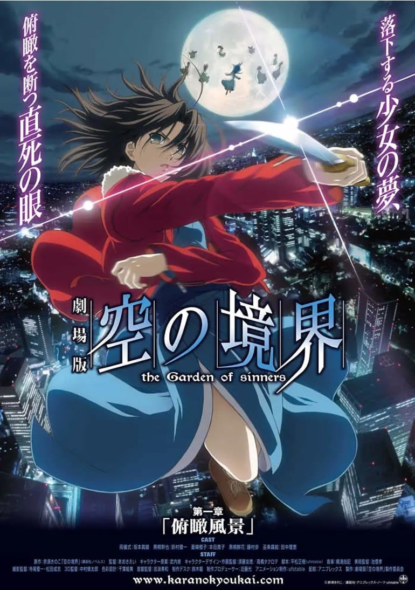
7.9「剧场版 空之境界 第一章 俯瞰风景」（2007）是一部剧场版，由あおきえい执导，制作ufotable，类型包括奇幻、战斗、悬疑，评分7.9，在本站出现在9份片单中，例如高分动画剧场版推荐、高分热血动漫推荐、高分悬疑推理动漫。页面只做片单对照，不提供播放。“去吧、去吧、去吧、去吧——” 我只是这样期望着， 期望着这个窗外的世界。 只是期望被他带走而已。 这是一个发生在夏末，少女们不断飞落跳下相继自杀的故事。少女们，毫无征兆突发性的从废墟大楼的屋顶 上跳向天空，随后落下。等待她们的只有死。 这。
#131剧场版 Fate/stay night [Heaven's Feel] III.spring song
![剧场版 Fate/stay night [Heaven's Feel] III.spring song 2020 动漫海报](../covers/b175600.jpg) 7.9
7.9「剧场版 Fate/stay night [Heaven's Feel] III.spring song」（2020）是一部剧场版，由須藤友徳执导，制作ufotable，类型包括战斗、奇幻、恋爱，评分7.9，在本站出现在10份片单中，例如高分动画剧场版推荐、高分热血动漫推荐、高分恋爱动漫推荐。页面只做片单对照，不提供播放。“因为我决定，要成为樱的正义伙伴。” 少年已无法逃避事实，这是为了拯救少女，也是为了贯彻自己选择的正义。 围绕着能够实现任何愿望的“圣杯”，魔术师（御主）与英灵（从者）所展开的“圣杯战争”经已扭曲。间桐樱与所犯下的罪孽，一同沉溺在无尽黑暗中。
#132剧场版 空之境界 第三章 痛觉残留
 7.9
7.9「剧场版 空之境界 第三章 痛觉残留」（2008）是一部剧场版，由小船井充执导，制作ufotable，类型包括奇幻、战斗、悬疑，评分7.9，在本站出现在10份片单中，例如高分动画剧场版推荐、高分热血动漫推荐、高分恋爱动漫推荐。页面只做片单对照，不提供播放。我，明明并不想杀人的—— 你，并不是那样的啊。 看到的瞬间注意到了。不，应该说是看到了。确信是敌人、或者不是而这样充满犹豫否定。 并不知道，存在于那里的是所谓自己的境界，却就这样跨越了。在不断被反复的凌辱中，少女只是投出她那无机质的视线而已。
#133来自深渊 深沉灵魂的黎明
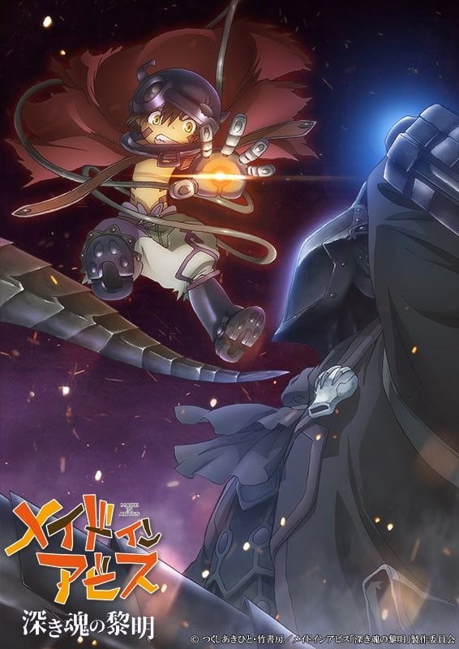
7.9「来自深渊 深沉灵魂的黎明」（2020）是一部剧场版，由小島正幸执导，制作KINEMA CITRUS，类型包括奇幻、冒险、治愈，评分7.9，在本站出现在7份片单中，例如高分动画剧场版推荐、高分热血动漫推荐、高分治愈系动漫推荐。页面只做片单对照，不提供播放。这个各角落都被探索殆尽的世界，只剩唯一仅存的秘境——大洞穴「阿比斯」。在这个会延伸到哪里不得而知，且深不见底的巨大纵向洞穴中，除了栖息着各种奇奇怪怪的生物之外，还藏有现今人类制作不出来的珍贵遗物。 「阿比斯」处处不可思议的景象，让人们为之着。
#134DARKER THAN BLACK -黑之契约者-
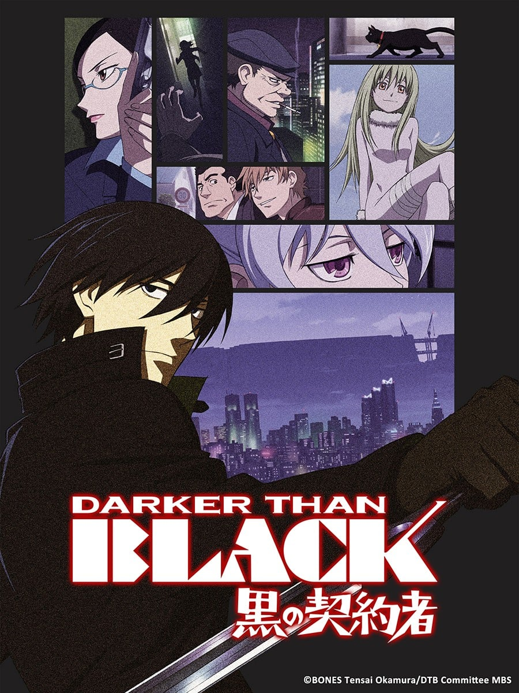
7.9「DARKER THAN BLACK -黑之契约者-」（2007）是一部TV，由岡村天斎执导，制作BONES，类型包括超能力、战斗、奇幻，评分7.9，在本站出现在5份片单中，例如高分热血动漫推荐、高分科幻动漫推荐、高分奇幻冒险动漫。页面只做片单对照，不提供播放。BONES的原创TV动画《Darker than BLACK－黑之契约者》，于2007年初春重磅登场。动画剧情围绕着超能力和间谍活动展开，故事的舞台定于喧嚣繁华的都市——东京。某日东京突然出现了异现象——不能解析的领域“地狱门”。在那里，有。
#135伤物语〈Ⅰ 铁血篇〉
「伤物语〈Ⅰ 铁血篇〉」（2016）是一部剧场版，由尾石達也执导，制作SHAFT，类型包括奇幻、战斗、恋爱，评分7.9，在本站出现在7份片单中，例如高分动画剧场版推荐、高分热血动漫推荐、高分恋爱动漫推荐。页面只做片单对照，不提供播放。樱花飞舞的三月二十五日，散学典礼那天下午。 高中二年级的阿良良木历，与编着三股辫的戴眼镜的优等生，羽川翼相遇了。 历从羽川那里听说了“这个小镇上出现了吸血鬼”的流言。 这天夜里，上街买东西的历，在地铁站中遇到了血流满地，失去四肢，绝望地请求。
#136人类衰退之后
 7.9
7.9「人类衰退之后」（2012）是一部TV，由岸誠二执导，制作AIC ASTA，类型包括治愈、奇幻、日常，评分7.9，在本站出现在5份片单中，例如高分治愈系动漫推荐、高分奇幻冒险动漫、必看搞笑动漫。页面只做片单对照，不提供播放。世界的人口因为不明原因而急降，逐渐步出历史的舞台，取而代之的是一种平均身高只有10公分、三头身的妖精。妖精的平均身高只有10公分，三头身的妖精们却拥有高度的智慧，而且非常喜欢吃糖果点心。主人公作为最后一届的毕业生毕业之后就回到故乡樟树之里去。
#137重启咲良田
 7.9
7.9「重启咲良田」（2017）是一部TV，由川面真也执导，制作david production，类型包括悬疑、超能力、恋爱，评分7.9，在本站出现在5份片单中，例如高分恋爱动漫推荐、高分悬疑推理动漫、高分奇幻冒险动漫。页面只做片单对照，不提供播放。半数居民都拥有特殊能力的街道，咲良田。在负责监视能力者的“管理局”管理下，居民过着和平的生活。“想要消去眼前之人的泪水”、“想要将声音传达给某人”。伴随着这种温柔而又细微的“愿望”，这条街道的能力诞生了。 拥有能够回想起过去体验过的全部记忆。
#138咒术回战 死灭回游 前篇
 7.9
7.9「咒术回战 死灭回游 前篇」（2026）是一部TV，由御所園翔太执导，制作MAPPA，类型包括战斗、奇幻、热血，评分7.9，在本站出现在7份片单中，例如2026年新番总表、高分热血动漫推荐、高分奇幻冒险动漫。页面只做片单对照，不提供播放。2018年10月31日。在万圣节热闹的涩谷车站周边，突然降下「帐」，大量一般民众被困其中。独自闯入的是现代最强的咒术师──五条悟。虎杖悠仁等众多咒术师齐聚涩谷，前所未有的大规模咒术对决「涩谷事变」正式开幕！而战斗最终导向史上最恶劣的术师──。
#139寻梦环游记
「寻梦环游记」（2017）是一部剧场版，由Lee Unkrich执导，制作Pixar Animation Studios，类型包括治愈、奇幻、音乐，评分7.9，在本站出现在8份片单中，例如高分美漫与动画电影、高分动画剧场版推荐、高分治愈系动漫推荐。页面只做片单对照，不提供播放。小男孩米格（安东尼·冈萨雷斯 Anthony Gonzalez 配音）一心梦想成为音乐家，更希望自己能和偶像歌神德拉库斯（本杰明·布拉特 Benjamin Bratt 配音）一样，创造出打动人心的音乐，但他的家族却世代禁止族人接触音乐。米格。
#140蜘蛛侠：平行宇宙
「蜘蛛侠：平行宇宙」（2018）是一部剧场版，由Bob Persichetti执导，制作Sony Pictures Animation，类型包括科幻、战斗、奇幻，评分7.9，在本站出现在8份片单中，例如高分美漫与动画电影、高分动画剧场版推荐、高分热血动漫推荐。页面只做片单对照，不提供播放。蜘蛛侠不止一个！漫威首部超英动画巨制《蜘蛛侠：平行宇宙》将经典漫画与CGI技术完美呈现，讲述了普通高中生迈尔斯·莫拉斯如何师从蜘蛛侠彼得·帕克，成长为新一代超级英雄的故事。影片中迈尔斯和从其它平行宇宙中穿越而来的彼得、女蜘蛛侠格温、暗影蜘蛛。
#141续·终物语
 7.9
7.9「续·终物语」（2018）是一部剧场版，由新房昭之执导，制作SHAFT，类型包括奇幻、恋爱、校园，评分7.9，在本站出现在7份片单中，例如高分动画剧场版推荐、高分恋爱动漫推荐、高分校园动漫推荐。页面只做片单对照，不提供播放。和我们一起，继续成长的物语。阿良良木历的物语结束了。 以地狱般的春假为开端，历经各种因缘际会，阿良良木历高中生活最后的一年结束了 ——原本是这么想的。 但就在毕业典礼结束的第二天早晨，发生了意想不到的事态。 历，迷失到了镜中的世界。 这是，。
#142剧场版 魔法少女小圆 [前篇] 起始的物语
「剧场版 魔法少女小圆 [前篇] 起始的物语」（2012）是一部剧场版，由宮本幸裕执导，制作SHAFT，类型包括百合、战斗、奇幻，评分7.9，在本站出现在8份片单中，例如高分动画剧场版推荐、高分热血动漫推荐、高分治愈系动漫推荐。页面只做片单对照，不提供播放。2011年11月10日，官方宣布制作三部剧场版的消息，包括对TV版进行修正重制的两部总集篇以及一部完全新作。 总集篇前篇《起始的物语》（始まりの物語）于2012年10月6日上映，全131分钟，对应TV前8话，但部分剧情有删减。 总集篇后篇《。
#143蜘蛛侠：纵横宇宙
「蜘蛛侠：纵横宇宙」（2023）是一部剧场版，由Joaquim Dos Santos执导，制作Sony Pictures Animation，类型包括科幻、战斗、热血，评分7.9，在本站出现在8份片单中，例如高分美漫与动画电影、高分动画剧场版推荐、高分热血动漫推荐。页面只做片单对照，不提供播放。影片讲述了新生代蜘蛛侠迈尔斯（沙梅克·摩尔 Shameik Moore 配音）携手蜘蛛格温（海莉·斯坦菲尔德 Hailee Steinfeld 配音），穿越多元宇宙踏上更宏大的冒险征程的故事。面临每个蜘蛛侠都会失去至亲的宿命，迈尔斯誓言打破。
#144宝可梦
「宝可梦」（1997）是一部TV，由日高政光执导，制作OLM TEAM OTA，类型包括战斗、奇幻、冒险，评分7.9，在本站出现在4份片单中，例如高分热血动漫推荐、高分奇幻冒险动漫、游戏改编动漫推荐。页面只做片单对照，不提供播放。居住在《关都地区》《真新镇》的主人公小智十分热爱宝可梦。 在十岁生日那天，小智被允许可以以宝可梦训练家的身份踏上旅程，但非常期待旅程到来的他却在出发当天早上睡过了头！ 虽然在出发的早上可以挑选同伴宝可梦，但留给小智的只剩下“皮卡丘”！而那皮。
#145太空丹迪
 7.9
7.9「太空丹迪」（2014）是一部TV，由夏目真悟执导，制作BONES，类型包括科幻、搞笑，评分7.9，在本站出现在5份片单中，例如高分科幻动漫推荐、高分奇幻冒险动漫、必看搞笑动漫。页面只做片单对照，不提供播放。宇宙浪子是宇宙中一位叫作丹迪的人。身为宇宙猎人的他积极寻找未知的外星物种、因此与搭档旧型清扫机器人QT以及长得像猫的外星人阿喵一起在宇宙中到处冒险，并又为此卷入一场即将发生的阴谋之中。
#146死神 千年血战篇
「死神 千年血战篇」（2022）是一部TV，由田口智久执导，制作studioぴえろ，类型包括热血、战斗、奇幻，评分7.9，在本站出现在4份片单中，例如高分热血动漫推荐、高分奇幻冒险动漫、漫画改编动漫推荐。页面只做片单对照，不提供播放。或是偶然，或是必然—— 因缘际会下得到死神力量成为《死神代理》的黑崎一护，被卷入聚集现世死亡灵魂的场所·尸魂界的动乱，在激烈的战斗中，和同伴一起得到的巨大的成长。 而此时一护所在的空座町发生异变。出现了新的死神和新的敌人。还有求救的声音。一。
#147无职转生 第三季 ～到了异世界就拿出真本事～
「无职转生 第三季 ～到了异世界就拿出真本事～」（2026）是一部TV，由渋谷亮介执导，制作スタジオバインド，类型包括异世界、奇幻、冒险，评分7.9，在本站出现在7份片单中，例如2026年夏季新番推荐、2026年新番总表、高分热血动漫推荐。页面只做片单对照，不提供播放。「俺は、この異世界で本気だす！」 34歳・童貞・無職の引きこもりニート男。 両親の葬儀の日に家を追い出された瞬間、トラックに轢かれ命を落としてしまう。 目覚めると、なんと剣と魔法の異世界で赤ん坊に生まれ変わっていた！ ゴミクズのように生きて。
#148妖精森林的小不点
「妖精森林的小不点」（2018）是一部TV，由安藤正臣执导，制作ラルケ，类型包括治愈、日常、奇幻，评分7.9，在本站出现在5份片单中，例如高分治愈系动漫推荐、高分奇幻冒险动漫、高分女性向动漫。页面只做片单对照，不提供播放。哈库梅伊与蜜珂析。 住在绿意盎然的森林中的，两位小小的女孩子。 在树洞里建造家、把树叶当做伞、坐在昆虫或鸟的背上…… 身高9厘米的话，这种事情也是能做得到的。 不去悄悄地偷看一下吗？ 她们那安详而愉快，十分可爱的生活。
#149狮子王
「狮子王」（1994）是一部剧场版，由Roger Allers执导，制作Walt Disney Animation Studios，类型包括奇幻、冒险、战斗，评分7.9，在本站出现在7份片单中，例如高分美漫与动画电影、高分动画剧场版推荐、高分热血动漫推荐。页面只做片单对照，不提供播放。辛巴是狮子王国的小王子，他的父亲穆法沙是一个威严的国王。然而叔叔刀疤却对穆法沙的王位觊觎已久。 要想坐上王位宝座，刀疤必须除去小王子。于是，刀疤利用种种借口让辛巴外出，然后伺机大开杀戒，无奈被穆法沙即时来救。在反复的算计下，穆法沙惨死在刀疤。
#150魔卡少女樱 被封印的卡片
 7.9
7.9「魔卡少女樱 被封印的卡片」（2000）是一部剧场版，由浅香守生执导，制作MADHOUSE，类型包括恋爱、奇幻、战斗，评分7.9，在本站出现在9份片单中，例如高分动画剧场版推荐、高分热血动漫推荐、高分恋爱动漫推荐。页面只做片单对照，不提供播放。封印的卡片是《魔卡少女樱》又名《百变小樱》或《库洛魔法使》《CardCaptor Sakura》的第2部剧场版，第1部没有名字，大家公认为《香港之旅》。《封印的卡片》紧接在TV版70集后，是整个故事的大结局（不过后面还有一部同时上映的剧场版。
#151星游记
 7.9
7.9「星游记」（2011）是一部TV，由刘北执导，制作电动画TINKID，类型包括热血、科幻、战斗，评分7.9，在本站出现在6份片单中，例如高分国漫推荐、高分热血动漫推荐、高分科幻动漫推荐。页面只做片单对照，不提供播放。多年前，一个红衣男人向全宇宙宣称：能够吞噬一切物质的超巨型黑洞深处，隐藏着一个叫做彩虹海的奇迹之地。那里宝石遍地，黄金像河水般流淌，最重要的是，空中横跨着无数种颜色的巨大彩虹，可以实现人的任何愿望。被这个美妙的描绘所吸引，人们从宇宙的各个角。
#152游戏王－怪兽之决斗
「游戏王－怪兽之决斗」（2000）是一部TV，由杉島邦久执导，制作スタジオぎゃろっぷ，类型包括热血、奇幻、战斗，评分7.9，在本站出现在5份片单中，例如高分热血动漫推荐、高分科幻动漫推荐、高分奇幻冒险动漫。页面只做片单对照，不提供播放。一卷神秘的录像带，千年神器中千年眼的拥有者，贝卡斯·J·克罗佛多在录像带中使用黑暗决斗向武藤游戏挑战，但武藤游戏却因为时间终止而败北，武藤双六的灵魂也因此被千年眼的力量封印在灵魂封印卡中（漫画版为贝卡斯寄给游戏的录像带），武藤游戏为了救回灵。
#153×××HOLiC◆继
 7.9
7.9「×××HOLiC◆继」（2008）是一部TV，由水島努执导，制作Production I.G，类型包括奇幻、治愈、日常，评分7.9，在本站出现在6份片单中，例如高分治愈系动漫推荐、高分异世界动漫推荐、高分奇幻冒险动漫。页面只做片单对照，不提供播放。高中生，四月一日君寻在偶然的机缘下闯入闻名异世界的次元魔女，侑子的魔法商店。四月一日在此许下要剔除自身灵能力的愿望 ，因此变成魔法商店的长期工读生，而围绕在他身边的同学小葵、百目鬼也同样是特殊能力者。在这之后，分散在其它异世界国家的小樱，小。
#154来自深渊 漂泊之黄昏
「来自深渊 漂泊之黄昏」（2019）是一部剧场版，由小島正幸执导，制作KINEMA CITRUS，类型包括奇幻、冒险、治愈，评分7.9，在本站出现在7份片单中，例如高分动画剧场版推荐、高分热血动漫推荐、高分治愈系动漫推荐。页面只做片单对照，不提供播放。这个各角落都被探索殆尽的世界，只剩唯一仅存的秘境—大洞穴「阿比斯」。在这个会延伸到哪里不得而知，且深不见底的巨大纵向洞穴中，除了栖息着各种奇奇怪怪的生物之外，还藏有现今人类制作不出来的珍贵遗物。 追随身为伟大探窟家的母亲脚步，启程要前往阿比。
#155佐贺偶像是传奇 梦想银河乐园
 7.9
7.9「佐贺偶像是传奇 梦想银河乐园」（2025）是一部剧场版，由佐藤威・石田貴史执导，制作MAPPA，类型包括搞笑、音乐、战斗，评分7.9，在本站出现在9份片单中，例如2025年秋季新番推荐、高分动画剧场版推荐、高分热血动漫推荐。页面只做片单对照，不提供播放。佐賀の存亡は、ゾンビィのアイドル＜フランシュシュ＞に託されたー。 謎のプロデューサー巽幸太郎により復活させられたゾンビたちは佐賀のご当地アイドル＜フランシュシュ＞として活動していた。2025年、佐賀万博で盛り上がる地球。万博のアンバサダーと。
#156剑风传奇 黄金时代篇III 降临
「剑风传奇 黄金时代篇III 降临」（2013）是一部剧场版，由窪岡俊之执导，制作STUDIO 4℃，类型包括战斗、奇幻、热血，评分7.9，在本站出现在6份片单中，例如高分动画剧场版推荐、高分热血动漫推荐、高分奇幻冒险动漫。页面只做片单对照，不提供播放。『ベルセルク 黄金時代篇III 降臨』では、黄金時代篇三部作完結篇にして、物語は一気にダークファンタジーの深淵へ。ガッツたち鷹の団による救出も虚しく、夢を追う術を奪われ全てを失ってしまったグリフィス。その時、覇王の卵・ベヘリットがグリフィス。
#157精灵守护者
「精灵守护者」（2007）是一部TV，由神山健治执导，制作Production I.G，类型包括奇幻、战斗、治愈，评分7.9，在本站出现在5份片单中，例如高分热血动漫推荐、高分治愈系动漫推荐、高分奇幻冒险动漫。页面只做片单对照，不提供播放。一次意外，女保镖巴鲁萨救下了落水的第二皇子查克姆。以此为契机，受二皇妃的重托，她带着被视为遭“水妖”附体的查克姆逃离皇宫。为了躲避来自朝廷的追杀，二人在民间隐姓埋名，在这一段旅程中，他们也逐渐揭开了“水妖”背后的真相……。
#158鲁邦三世 卡里奥斯特罗之城
 7.9
7.9「鲁邦三世 卡里奥斯特罗之城」（1979）是一部剧场版，由宫崎骏执导，类型包括冒险、喜剧、搞笑，评分7.9，在本站出现在6份片单中，例如高分动画剧场版推荐、高分奇幻冒险动漫、必看搞笑动漫。页面只做片单对照，不提供播放。世界闻名的怪盗鲁邦三世及其搭档次元大介，成功从摩纳哥国营赌场的金库中盗走一笔钜款，并甩开追兵乘车逃走。两人在车内虽然可说是被埋在钞票堆里，但眼尖的鲁邦却发现，这是史上制作最精巧的梦幻伪钞“哥德钞”。在鲁邦“不偷假货”的原则下，他将哥德钞毫不。
#159秀逗魔导士NEXT
 7.9
7.9「秀逗魔导士NEXT」（1996）是一部TV，由渡部高志执导，制作イージー・フイルム，类型包括搞笑、奇幻、战斗，评分7.9，在本站出现在5份片单中，例如高分热血动漫推荐、高分奇幻冒险动漫、必看搞笑动漫。页面只做片单对照，不提供播放。第二部(NEXT)讲述了人类与魔族的关系，可是说已经开始进入《秀逗魔导士》的中心主题!在这一部里所谓的魔族才真正的出现了!首先是魔族的神秘官杰洛士，他的出现可以说是引导出下面一系列故事的关键人物，也是带领主角们与魔族的关系越来越深的人物所在。
#160鲁邦三世
 7.9
7.9「鲁邦三世」（2015）是一部TV，由矢野雄一郎执导，制作Telecom Animation Film，类型包括搞笑、冒险、战斗，评分7.9，在本站出现在5份片单中，例如高分热血动漫推荐、高分奇幻冒险动漫、必看搞笑动漫。页面只做片单对照，不提供播放。《鲁邦三世》时隔30年的TV动画正统第四期，舞台是意大利和圣马力诺共和国。本片首次采用了在意大利开始先行放送之后日本再进行放送的形式：意大利RTI电视台从2015年8月30日开始放送，而日本NTV电视台从2015年10月1日开始放送。 国际。
#161祖先大人万万岁
 7.9
7.9「祖先大人万万岁」（1989）是一部OVA/WEB，由押井守执导，制作ぴえろ，类型包括家庭、奇幻、科幻，评分7.9，在本站出现在6份片单中，例如高分OVA与WEB动画、高分科幻动漫推荐、高分奇幻冒险动漫。页面只做片单对照，不提供播放。四方一家住在东京近郊的一幢普通的高层公寓里。无所事事且发福的上班族父亲四方田甲子国（よもた きねくに）42歳、厌恶与邻居社交的母亲四方田多美子（よもた たみこ）38歳、以及正处于青春期毛躁的儿子四方田犬丸（よもた いぬまる）17歳。生活中一。
#162小马宝莉：友谊就是魔法 第二季
「小马宝莉：友谊就是魔法 第二季」（2011）是一部TV，类型包括日常、奇幻、治愈，评分7.9，在本站出现在6份片单中，例如高分美漫与动画电影、高分治愈系动漫推荐、高分奇幻冒险动漫。页面只做片单对照，不提供播放。小马宝莉：友谊就是魔法 第二季。2011。日常、奇幻、治愈。
#163伤物语-历吸血鬼-
「伤物语-历吸血鬼-」（2024）是一部剧场版，由尾石達也执导，制作SHAFT，类型包括奇幻、战斗、热血，评分7.9，在本站出现在7份片单中，例如高分动画剧场版推荐、高分热血动漫推荐、高分校园动漫推荐。页面只做片单对照，不提供播放。阿良々木暦が彼女と出会ったのは、ある夜のことだった。 キスショット・アセロラオリオン・ハートアンダーブレード。 伝説の吸血鬼。怪異殺し。怪異の王。 腕も脚も無残に引き千切られ、豪奢なドレスを赤く染めて、無惨な姿で血の海に倒れる化物。 しかし。
#164飞出个未来 第1季
 7.9
7.9「飞出个未来 第1季」（1999）是一部TV，类型包括科幻、搞笑，评分7.9，在本站出现在5份片单中，例如高分美漫与动画电影、高分科幻动漫推荐、高分奇幻冒险动漫。页面只做片单对照，不提供播放。该剧讲述了 Fry，一位20世纪的年轻人，在30世纪的冒险经历。 Phillip Fry是一个纽约市的25岁的比萨饼快递员，他的生活就是每天四处奔波.1999年的12月31日他偶然的被冰冻了起来, 当他醒过来时已是1000年以后，他也有了一。
#165大～集合！小魔女DoReMi
 7.9
7.9「大～集合！小魔女DoReMi」（2001）是一部TV，类型包括搞笑、治愈、校园，评分7.9，在本站出现在5份片单中，例如高分治愈系动漫推荐、高分校园动漫推荐、高分奇幻冒险动漫。页面只做片单对照，不提供播放。升上五年级后，被取消魔女资格的DoReMi等人，还是一直在魔法堂花店工作。另一方面，女王向12位元老院成员说明，尽管DoReMi等人的水晶球破碎了，但考量到她们的巨大贡献，希望让四人恢复为魔女身份。此事在元老院中发生激辩，虽然有魔女哈特等人。
#166黄色潜水艇
「黄色潜水艇」（1968）是一部剧场版，由George Dunning执导，类型包括音乐、奇幻，评分7.9，在本站出现在5份片单中，例如高分美漫与动画电影、高分动画剧场版推荐、高分奇幻冒险动漫。页面只做片单对照，不提供播放。本片是一部将伟大的摇滚乐队披头士的音乐和波普视觉艺术完美结合而成的二维插画风格的动画片，整部片子中共穿插了披头士的15首经典歌曲。影片讲述了披头士成员保罗·麦卡特尼在半梦半醒之间来到花椒国，这是一个讨厌音乐的地方，正遭遇蓝色恶魔的侵略，老船。
#167探险活宝 第三季
 7.9
7.9「探险活宝 第三季」（2011）是一部TV，类型包括奇幻、冒险、搞笑，评分7.9，在本站出现在4份片单中，例如高分美漫与动画电影、高分奇幻冒险动漫、必看搞笑动漫。页面只做片单对照，不提供播放。The third season of American animated television series Adventure Time, created by Pendleton Ward, originally aired on C。
#168探险活宝 第四季
 7.9
7.9「探险活宝 第四季」（2012）是一部TV，类型包括冒险、搞笑、奇幻，评分7.9，在本站出现在4份片单中，例如高分美漫与动画电影、高分奇幻冒险动漫、必看搞笑动漫。页面只做片单对照，不提供播放。The fourth season of the American animated television series Adventure Time, created by Pendleton Ward, originally aired。
#169探险活宝 第五季
 7.9
7.9「探险活宝 第五季」（2012）是一部TV，类型包括奇幻、冒险、搞笑，评分7.9，在本站出现在4份片单中，例如高分美漫与动画电影、高分奇幻冒险动漫、必看搞笑动漫。页面只做片单对照，不提供播放。Finn and Jake chase the Lich through a dimensional portal where they meet Prismo, who tells them that the Lich wished fo。
#170探险活宝 第六季
「探险活宝 第六季」（2014）是一部TV，类型包括奇幻、日常、冒险，评分7.9，在本站出现在4份片单中，例如高分美漫与动画电影、高分治愈系动漫推荐、高分奇幻冒险动漫。页面只做片单对照，不提供播放。探险活宝 第六季。2014。奇幻、日常、冒险。
#171偶像活动 10th STORY ～通往未来的STARWAY～
「偶像活动 10th STORY ～通往未来的STARWAY～」（2023）是一部剧场版，由木村隆一执导，制作BN Pictures，类型包括百合、校园、音乐，评分7.9，在本站出现在6份片单中，例如高分动画剧场版推荐、高分校园动漫推荐、高分奇幻冒险动漫。页面只做片单对照，不提供播放。半年後に迫るスターライト学園からの卒業を意識し始めたいちご・あおい・蘭たち。それぞれが今後の進路を考える中で、あおいはアメリカへの留学を決意。これに伴い、Soleilはスターライト学園卒業と同時に活動休止に入る事になった。 それから3年が経。
#172学问猫说历史
 7.9
7.9「学问猫说历史」是一部OVA/WEB，由冯焕斌执导，类型包括历史、奇幻，评分7.9，在本站出现在3份片单中，例如高分OVA与WEB动画、高分奇幻冒险动漫、原创动画推荐。页面只做片单对照，不提供播放。学问猫说历史。历史、奇幻。
#173飞出个未来 第4季
 7.9
7.9「飞出个未来 第4季」（2002）是一部TV，类型包括科幻、搞笑，评分7.9，在本站出现在5份片单中，例如高分美漫与动画电影、高分科幻动漫推荐、高分奇幻冒险动漫。页面只做片单对照，不提供播放。该剧讲述了 Fry，一位20世纪的年轻人在30世纪的冒险经历。Phillip Fry是一个纽约市的25岁的比萨饼快递员，他的生活就是每天四处奔波，1999年12月21日他偶然的被冰冻了起来, 当他醒过来时已是1000年以后，他也有了一个开始。
#174刚巴的冒险
「刚巴的冒险」（1975）是一部TV，由チーフディレクター：出﨑統执导，类型包括冒险、战斗，评分7.9，在本站出现在3份片单中，例如高分热血动漫推荐、高分奇幻冒险动漫、轻小说改编动漫推荐。页面只做片单对照，不提供播放。海をひと目見ようと、親友のボーボとともに川を下る頑張り屋のネズミ・ガンバ。ついにたどり着いた港の倉庫でネズミたちのパーティに参加していると、そこへボロボロに傷ついた子ネズミの忠太が助けを求め転がり込んできた。忠太たちが住む島が強大で残虐な白。
#175游戏人生
 7.8
7.8「游戏人生」（2014）是一部TV，由いしづかあつこ执导，类型包括异世界、奇幻、搞笑，评分7.8，在本站出现在6份片单中，例如高分热血动漫推荐、高分异世界动漫推荐、高分奇幻冒险动漫。页面只做片单对照，不提供播放。“听说游戏玩家兄妹要征服幻想世界”空与白既是尼特族又是家里蹲，但是在网路上却是被奉为都市传说的天才游戏玩家兄妹。称世界为「烂游戏」的两人，某一天被自称是“神”的少年召唤至异世界，那是个战争为神所禁止，“游戏决定一切”的世界──没错，甚至连国。
#176迷宫饭
 7.8
7.8「迷宫饭」（2024）是一部TV，由宮島善博执导，制作TRIGGER，类型包括奇幻、冒险、搞笑，评分7.8，在本站出现在5份片单中，例如高分异世界动漫推荐、高分奇幻冒险动漫、必看搞笑动漫。页面只做片单对照，不提供播放。迷宫饭，不是吃就是被吃… 莱欧斯是一名冒险者，在一次探险中，迷宫深处的赤龙吃掉了他的妹妹，他侥幸逃过一命传送回到了地面。莱欧斯想要立马重新挑战迷宫，营救妹妹，但是钱和食物都留在了迷宫深处… 想到妹妹随时都有可能会被赤龙消化，导致无法复活，莱。
#177灵能百分百
 7.8
7.8「灵能百分百」（2016）是一部TV，由立川譲执导，制作BONES，类型包括搞笑、热血、战斗，评分7.8，在本站出现在5份片单中，例如高分热血动漫推荐、高分奇幻冒险动漫、必看搞笑动漫。页面只做片单对照，不提供播放。平凡的中学二年级少年影山茂夫，因其微弱的存在感与名字茂夫的谐音被周遭人称为龙套（モブ），但不起眼的他其实是强大的天生超能力者。历经每一次的成长，龙套开始认为自己的超能力是危险的存在，为了不让超能力失控，龙套无意识的压抑著情感。虽然只想平凡的。
#178JOJO的奇妙冒险 不灭钻石
「JOJO的奇妙冒险 不灭钻石」（2016）是一部TV，由津田尚克执导，制作david production，类型包括热血、战斗、奇幻，评分7.8，在本站出现在6份片单中，例如高分热血动漫推荐、高分治愈系动漫推荐、高分奇幻冒险动漫。页面只做片单对照，不提供播放。在埃及与宿敌DIO的死斗之后过了11年。1999年，空条承太郎为了与祖父乔瑟夫·乔斯达的私生子东方仗助见面，而来到了日本M县S市杜王町。但，仗助却持有与承太郎相同的特殊能力“替身”。之后，以承太郎的来访为开端，仿佛被吸引一般，新的“替身使”。
#179剧场版 Fate/stay night [Heaven's Feel] II.lost butterfly
![剧场版 Fate/stay night [Heaven's Feel] II.lost butterfly 2019 动漫海报](../covers/b175599.jpg) 7.8
7.8「剧场版 Fate/stay night [Heaven's Feel] II.lost butterfly」（2019）是一部剧场版，由須藤友徳执导，制作ufotable，类型包括战斗、奇幻、恋爱，评分7.8，在本站出现在10份片单中，例如高分动画剧场版推荐、高分热血动漫推荐、高分恋爱动漫推荐。页面只做片单对照，不提供播放。俺の戦うべき相手は――まだこの街にいる。少年は選んだ、自分の信念を。そして、少女を守ることを。 魔術師〈マスター〉と英霊〈サーヴァント〉 が願望機「聖杯」をめぐり戦う――「聖杯戦争」。10年ぶりに冬木市で始まった戦争は、「聖杯戦争」の御三家。
#180蓦然回首
 7.8
7.8「蓦然回首」（2024）是一部剧场版，由押山清高执导，制作Studio DURIAN，类型包括治愈、剧情、百合，评分7.8，在本站出现在7份片单中，例如高分动画剧场版推荐、高分治愈系动漫推荐、高分奇幻冒险动漫。页面只做片单对照，不提供播放。在年级报纸上连载着四格漫画的小学四年级学生藤野。被同班同学高度评价、对自己的画工抱有绝对的自信的藤野，她在某天看到了不去上学的同级生京本于年级报纸上首次发表的4格漫画，并对其高超的画工感到震惊。从那时起，只顾着继续专心画漫画的藤野被完全无法。
#181哈尔的移动城堡
 7.8
7.8「哈尔的移动城堡」（2004）是一部剧场版，由宫崎骏执导，制作吉卜力，类型包括奇幻、恋爱、治愈，评分7.8，在本站出现在10份片单中，例如高分动画剧场版推荐、高分恋爱动漫推荐、高分治愈系动漫推荐。页面只做片单对照，不提供播放。继母因无力负担生活，将苏菲和她的两个姐姐都送到了制帽店去当学徒。两个姐姐很快先后就离开了制帽店去追寻各自的梦想，只有苏菲坚持了下来。一天，小镇旁边来了一座移动堡垒，传说堡垒的主人哈尔专吸取年轻姑娘的灵魂，所以小镇的姑娘都不敢靠近。 一个恶毒。
#182狼与香辛料
「狼与香辛料」（2008）是一部TV，由高橋丈夫执导，制作イマジン，类型包括治愈、奇幻、恋爱，评分7.8，在本站出现在6份片单中，例如高分恋爱动漫推荐、高分治愈系动漫推荐、高分奇幻冒险动漫。页面只做片单对照，不提供播放。到处旅行靠贩卖一些小商品为生的商人罗兰斯，从因为收获祭而沸腾的帕斯洛耶村回来后却发现自己的运货马车中貌似有什么东西在里面，罗兰斯把麦束拨开一看，里面却睡着一只长有狼耳和狼尾巴的少女。这位少女自称是“掌控丰收的贤狼——赫萝”，靠麦子为生的她如。
#183恶魔人 crybaby
 7.8
7.8「恶魔人 crybaby」（2018）是一部OVA/WEB，由湯浅政明执导，类型包括战斗、奇幻、治愈，评分7.8，在本站出现在6份片单中，例如高分OVA与WEB动画、高分热血动漫推荐、高分治愈系动漫推荐。页面只做片单对照，不提供播放。随着恶魔觉醒，人类世界陷入混乱。性格温柔的男孩与恶魔合体，在神秘好友飞鸟了的指引下，卷入一场残酷、堕落的对抗邪恶之战。
#184漂流少年
「漂流少年」（2021）是一部TV，由夏目真悟执导，制作MADHOUSE，类型包括奇幻、校园、超能力，评分7.8，在本站出现在4份片单中，例如高分校园动漫推荐、高分奇幻冒险动漫、原创动画推荐。页面只做片单对照，不提供播放。漫长的暑假已然过半的8月16日。聚集在学校里的中学三年级学生·长良一行人突然被卷进从未设想过的事态之中。长良本人自不必说，神秘的转校生·希和瑞穗以及朝风等36名同班同学，都随着学校一起在异次元之中漂流。而且他们在漂流的同时也获得了各种各样的。
#185剧场版 空之境界 第二章 杀人考察（前）
 7.8
7.8「剧场版 空之境界 第二章 杀人考察（前）」（2007）是一部剧场版，由野中卓也执导，制作ufotable，类型包括奇幻、战斗、恋爱，评分7.8，在本站出现在9份片单中，例如高分动画剧场版推荐、高分热血动漫推荐、高分恋爱动漫推荐。页面只做片单对照，不提供播放。我很想杀了你。 春、发现了身穿和服的你。和你打招呼了。很诧异似的走了。不久之后你与我有了极少的言语交流。但是，你却有谁都不能知道的秘密。 ——那是，无法抑制的破坏欲。 这是还在高中生的时候，16岁的两仪式与黑桐干也相逢的故事。 一直都不想和。
#186终物语
 7.8
7.8「终物语」（2015）是一部TV，由板村智幸执导，制作SHAFT，类型包括奇幻、校园、恋爱，评分7.8，在本站出现在6份片单中，例如高分恋爱动漫推荐、高分校园动漫推荐、高分悬疑推理动漫。页面只做片单对照，不提供播放。高三的十月下旬，神原骏河向高中三年级的阿良良木历介绍一位转校生——忍野扇。放学后，忍野扇开始说一些奇怪的事情。她曾转学过很多次，并将每一次到过的校舍都画成地图。他发现三楼的视听室被拉长，也许有隐藏的房间。扇和历发现隐藏的房间，进去之后里面停。
#187名侦探柯南 贝克街的亡灵
「名侦探柯南 贝克街的亡灵」（2002）是一部剧场版，由こだま兼嗣执导，制作東京ムービー（トムス・エンタテインメント），类型包括推理、悬疑、科幻，评分7.8，在本站出现在7份片单中，例如高分动画剧场版推荐、高分科幻动漫推荐、高分悬疑推理动漫。页面只做片单对照，不提供播放。有一天众多企业在米花市政大楼，共同进行了一种新的游戏“茧”的成果发表会。玩家可透过这个游戏，进入虚拟世界中，体验实地游玩游戏的快感。 但是在这个同时，汤玛斯辛多拉董事长基于某些动机，杀害了工藤优作的朋友樫村忠彬，后来被揭发罪行。 在另外一边。
#188街角魔族 2丁目
 7.8
7.8「街角魔族 2丁目」（2022）是一部TV，由桜井弘明执导，类型包括百合、日常、搞笑，评分7.8，在本站出现在6份片单中，例如高分治愈系动漫推荐、高分奇幻冒险动漫、必看搞笑动漫。页面只做片单对照，不提供播放。大人気ご町内日常ファンタジーが帰ってくる！ 魔族の力に目覚めて以来、闇の一族の封印を解くため ポンコツながらも戦ってきた主人公・シャミ子。 ライバルだったはずの魔法少女・桃とは、なぜか協力関係になってしまい、 町から姿を消した魔法少女の謎を。
#189狼与香辛料 第二季
「狼与香辛料 第二季」（2009）是一部TV，由高橋丈夫执导，制作Brain's Base／マーヴィージャック，类型包括奇幻、治愈、恋爱，评分7.8，在本站出现在5份片单中，例如高分恋爱动漫推荐、高分治愈系动漫推荐、高分奇幻冒险动漫。页面只做片单对照，不提供播放。从教会都市出发的商人罗伦斯与贤狼赫罗，为了收集赫罗的故乡约伊兹的情报，而来到了冬季有着大祭典的热闹城市库梅尔森。在这里两人与鱼商人阿玛蒂邂逅了，而且阿玛蒂对赫罗一见钟情，并迅速开始对她展开追求攻势。另一方面，罗伦斯却和赫罗之间的微妙感情却因。
#190剧场版 空之境界 未来福音
「剧场版 空之境界 未来福音」（2013）是一部剧场版，由須藤友徳执导，类型包括奇幻、战斗、恋爱，评分7.8，在本站出现在9份片单中，例如高分动画剧场版推荐、高分热血动漫推荐、高分恋爱动漫推荐。页面只做片单对照，不提供播放。黑桐干也偶然遇到了能看见未来的少女濑尾静音。干也和静音愉快的在冷饮点聊天时，爆弹魔事件接连发生。赶去阻止事件再次发生的两仪式发现爆弹魔仓密目琉夏也拥有着一双能看到未来的眼睛。静音的未来和目琉夏的未来，似乎殊途同归，然而却有着决定性的不同。 。
#191魔女宅急便
「魔女宅急便」（1989）是一部剧场版，由宫崎骏执导，制作吉卜力，类型包括治愈、奇幻、冒险，评分7.8，在本站出现在8份片单中，例如高分动画剧场版推荐、高分治愈系动漫推荐、高分奇幻冒险动漫。页面只做片单对照，不提供播放。琪琪是一个13岁的实习魔女。依家族惯例，琪琪是时候离开她的家，到一个新的城市去展开独立的新生活，修行成为正式的魔女。 动画宣传用文宣： 虽然有时会不如意，但我很好。（おちこんだりもしたけれど、私はげんきです。）──由糸井重里提供。 虽然有失。
#192Re：从零开始的异世界生活 第四季 丧失篇
「Re：从零开始的异世界生活 第四季 丧失篇」（2026）是一部TV，由篠原正寛执导，制作WHITE FOX，类型包括异世界、奇幻、战斗，评分7.8，在本站出现在7份片单中，例如2026年春季新番推荐、2026年新番总表、高分热血动漫推荐。页面只做片单对照，不提供播放。在水门都市朴利斯提拉的死战中，昴等人虽然勉强取得胜利，但付出的代价，却过于沉重。因「暴食」权能而陷入沉睡的雷姆，被夺走记忆的库珥修，以及，被夺去名字的由里乌斯。 为了寻找拯救他们的线索，昴得知了一位据说能看透一切、拥有无尽知识的存在——「贤。
#193有顶天家族
 7.8
7.8「有顶天家族」（2013）是一部TV，由吉原正行执导，制作P.A.WORKS，类型包括奇幻、治愈、日常，评分7.8，在本站出现在5份片单中，例如高分治愈系动漫推荐、高分奇幻冒险动漫、必看搞笑动漫。页面只做片单对照，不提供播放。作品讲述原狸猫一族名门下鸭家的家主被人类下火锅后，不中用的下鸭四兄弟与其老母撑起家道中落的下鸭家的故事。老大矢一郎个性认真，但一到紧要关头就手足无措；老二变身为青蛙，不肯出井底；老三最爱看好戏，喜欢恶作剧；老幺胆子小，变身总是忘了藏尾巴。不。
#194罗小黑战记
 7.8
7.8「罗小黑战记」（2011）是一部OVA/WEB，由木头(MTJJ)执导，制作寒木春华，类型包括战斗、治愈、奇幻，评分7.8，在本站出现在9份片单中，例如高分国漫推荐、高分OVA与WEB动画、高分热血动漫推荐。页面只做片单对照，不提供播放。这是讲述一个少女养猫的平淡故事。 号称耗资三千元打造的中国动画癫疯之作。 故事主要讲述一个少女养猫而发生的种种离奇事件，整个作品画面风格很“中国式”。故事情节搞笑！目前正在连载中。
#195AIR 夏季篇
「AIR 夏季篇」（2005）是一部TV，由石原立也执导，制作京都动画，类型包括治愈、恋爱、奇幻，评分7.8，在本站出现在6份片单中，例如高分恋爱动漫推荐、高分治愈系动漫推荐、高分奇幻冒险动漫。页面只做片单对照，不提供播放。在电视动画系列准备播放最后动画结束的第十三话时，京都动画另外要求原本系列动画制作人员以及角色配音人员另外推出特别篇“AIR in Summer”，在《山路～mountain path～》（やまみち～mountain path～）与《天地～u。
#196×××HOLiC
「×××HOLiC」（2006）是一部TV，由水島努执导，制作Production I.G，类型包括奇幻、治愈、日常，评分7.8，在本站出现在4份片单中，例如高分治愈系动漫推荐、高分奇幻冒险动漫、漫画改编动漫推荐。页面只做片单对照，不提供播放。故事讲述能看见妖怪的“四月一日君寻”进入了别名为次元的魔女并自称伪名为“壹原侑子”所拥有的能够实现任何愿望的店。而当时四月一日正为自己能够看见妖怪而烦恼，而侑子说只要四月一日能付出对等的代价，就可以帮助四月一日实现“可以让你看不见妖怪，而且。
#197葫芦兄弟
「葫芦兄弟」是一部TV，由胡进庆执导，类型包括奇幻、战斗，评分7.8，在本站出现在3份片单中，例如高分热血动漫推荐、高分奇幻冒险动漫、原创动画推荐。页面只做片单对照，不提供播放。葫芦山里关押着蝎子精和金蛇精。一只穿山甲弄破了山洞使妖怪逃出，伺机兴风作浪、无法无天。一个老汉得知只有种植七色神葫芦才能消灭妖怪。老汉得到葫芦籽种出了红、橙、黄、绿、青、蓝、紫七个大葫芦，七个葫芦成熟后，变成7个拥有各种超强本领的小男孩，经。
#198灵异E接触
 7.8
7.8「灵异E接触」（2011）是一部TV，由加藤敏幸执导，制作studioぴえろ×david production，类型包括搞笑、科幻、奇幻，评分7.8，在本站出现在5份片单中，例如高分科幻动漫推荐、高分奇幻冒险动漫、必看搞笑动漫。页面只做片单对照，不提供播放。升上高中后一个人来到山形的高中生筒井雪隆住进了学生附近的宿舍，却发自己的租处已被入侵，里面有个自称自己是外星人的失忆男子。本来打算将他赶出去，但是在同情心及对方的说服下开始相信他是外星人并和他同居。安定下来不久后，王子的护卫军紧追而来，却发。
#199有顶天家族 第二季
 7.8
7.8「有顶天家族 第二季」（2017）是一部TV，由吉原正行执导，类型包括奇幻、日常、治愈，评分7.8，在本站出现在5份片单中，例如高分治愈系动漫推荐、高分奇幻冒险动漫、必看搞笑动漫。页面只做片单对照，不提供播放。人居市街内，狸猫匍地行，天狗翱长空。 居于京都下鸭神社糺之森的下鸭一家。 继承了离世的昔日狸猫界首领下鸭总一郎血脉的兄弟四人，和母亲快乐地生活着。 而以继承了父亲总一郎浓厚的“傻瓜之血”的三男矢三郎为中心，引发了一夜骚乱。 无论是下任的“伪。
#200罗小黑战记 众生之门篇
 7.8
7.8「罗小黑战记 众生之门篇」（2021）是一部OVA/WEB，由阿根(李根)执导，类型包括治愈、战斗、奇幻，评分7.8，在本站出现在8份片单中，例如高分国漫推荐、高分OVA与WEB动画、高分热血动漫推荐。页面只做片单对照，不提供播放。罗小黑战记 众生之门篇。2021。治愈、战斗、奇幻。
#201成龙历险记 第二季
 7.8
7.8「成龙历险记 第二季」（2001）是一部TV，类型包括战斗、奇幻、搞笑，评分7.8，在本站出现在6份片单中，例如高分国漫推荐、高分热血动漫推荐、高分奇幻冒险动漫。页面只做片单对照，不提供播放。In the finale of Season 1, the Chans traveled to Hong Kong and defeated Shendu, whereupon Jade destroyed the demon with 。
#202王立宇宙军 欧尼亚米斯之翼
「王立宇宙军 欧尼亚米斯之翼」（1987）是一部剧场版，由山賀博之执导，类型包括科幻、冒险、战争，评分7.8，在本站出现在6份片单中，例如高分动画剧场版推荐、高分科幻动漫推荐、高分奇幻冒险动漫。页面只做片单对照，不提供播放。在奥内米斯王国里，有一支本应担任宇宙探险飞行的军队——王立宇宙军。但由于种种因素，他们始终只是一支无所作为的军队，甚至被其他军队视为废物。原本安于现状，只是在军队中混日子的年轻士官希洛兹，与美丽的少女莉库妮邂逅，被她的单纯与虔诚所吸引，逐渐。
#203×××HOLiC 笼
 7.8
7.8「×××HOLiC 笼」（2010）是一部OVA/WEB，由水島努执导，制作Production I.G，类型包括奇幻、治愈，评分7.8，在本站出现在5份片单中，例如高分OVA与WEB动画、高分治愈系动漫推荐、高分奇幻冒险动漫。页面只做片单对照，不提供播放。故事开始于四月一日君寻和壹原侑子的命运相遇。自从遇到侑子后，四月一日遇到了形形色色的人和物，发生了许许多多的好事坏事，他自己也发生了很大的改变。然而店主人侑子留下了最后的愿望之后，却消失了。于是四月一日守在店里，等待有一天与她重逢。 这十年。
#204剧场版 进击的巨人 完结篇 THE LAST ATTACK
「剧场版 进击的巨人 完结篇 THE LAST ATTACK」（2024）是一部剧场版，由林祐一郎执导，类型包括热血、战斗、奇幻，评分7.8，在本站出现在6份片单中，例如高分动画剧场版推荐、高分热血动漫推荐、高分奇幻冒险动漫。页面只做片单对照，不提供播放。这就是，最后的『进击』－－！ 以遭高墙分割的世界为舞台，描写人类与巨人永无止尽的抗争的《进击的巨人》。 与原作漫画一同在全世界打响超人气的电视动画系列，自第一季开播以来经过将近10年的时光，于2023年秋季热烈回响中划下句点。如今来到202。
#205哪吒闹海
「哪吒闹海」（1979）是一部剧场版，由严定宪执导，类型包括奇幻、战斗，评分7.8，在本站出现在5份片单中，例如高分动画剧场版推荐、高分热血动漫推荐、高分奇幻冒险动漫。页面只做片单对照，不提供播放。商末时期，陈塘关总兵李靖的夫人怀胎3年6个月，最终生下一个肉球，肉球中跳出一个伶俐可爱的男孩。李靖原当他是妖孽欲杀之而后快，幸太乙真人前来收之为徒，赐名哪吒，并赐以乾坤圈和混天绫两件宝贝。某年，天下大旱，甘露未降。哪吒和家将到东海洗澡玩耍。
#206夏目友人帐 柒
「夏目友人帐 柒」（2024）是一部TV，由伊藤秀樹执导，类型包括治愈、奇幻、日常，评分7.8，在本站出现在5份片单中，例如高分治愈系动漫推荐、高分校园动漫推荐、高分奇幻冒险动漫。页面只做片单对照，不提供播放。心優しき友人たちとの、大切な日々── 美しく儚き、人と妖の物語。 小さい頃から妖怪を見ることができた少年・夏目貴志は、 祖母レイコの遺産「友人帳」を受け継ぎ、 自称用心棒のニャンコ先生と共に、 そこに名を縛られた妖怪たちに名を返す日々を送る。
#207魔法少女奈叶 The MOVIE 2nd A’s
「魔法少女奈叶 The MOVIE 2nd A’s」（2012）是一部剧场版，由草川啓造执导，类型包括百合、战斗、奇幻，评分7.8，在本站出现在7份片单中，例如高分动画剧场版推荐、高分热血动漫推荐、高分奇幻冒险动漫。页面只做片单对照，不提供播放。ある夜、八神はやてはトラックとの事故に遭ってしまうが、「闇の書」が起動することによって助かる。そして「守護騎士（ヴォルケンリッター）」と出会い、闇の書の主となる。 ロストロギア「ジュエルシード」が発端となったプレシア・テスタロッサ事件から半。
#208凡人修仙传 新年番
 7.8
7.8「凡人修仙传 新年番」（2023）是一部OVA/WEB，由王裕仁执导，制作原力动画，类型包括战斗、奇幻，评分7.8，在本站出现在6份片单中，例如高分国漫推荐、高分OVA与WEB动画、高分热血动漫推荐。页面只做片单对照，不提供播放。韩立在天星城的洞府内经年累月不断苦修，终于成功结丹。出关后，韩立为炼制法宝寻访灵物天雷竹，卷入了妙音门与极阴岛、隐煞门间的争斗，终于成功炼制法宝——七十二口青竹蜂云剑。此后韩立探索遗迹时遭遇了神秘强大的前元婴期修士玄骨上人，并听到了虚天殿的。
#209蜡笔小新：风起云涌 壮烈！战国大会战
 7.8
7.8「蜡笔小新：风起云涌 壮烈！战国大会战」（2002）是一部剧场版，由原恵一执导，类型包括搞笑、奇幻、冒险，评分7.8，在本站出现在6份片单中，例如高分动画剧场版推荐、高分奇幻冒险动漫、必看搞笑动漫。页面只做片单对照，不提供播放。某一晚，野原一家同时梦见了古装剧里才会出现的”古代美女”，虽然全家人都觉得很不可思议，却也没有深入追究。当天下午小新从幼儿园回来时，看到小白正在庭院里拼命挖洞，而当小新也跟着开始挖掘后，竟然挖出了一个箱子，里面放有小新亲笔写的书函，除了写有。
#210Re：从零开始的异世界生活 第四季 夺还篇
「Re：从零开始的异世界生活 第四季 夺还篇」（2026）是一部TV，由篠原正寛执导，类型包括异世界、奇幻、战斗，评分7.8，在本站出现在7份片单中，例如2026年夏季新番推荐、2026年新番总表、高分热血动漫推荐。页面只做片单对照，不提供播放。在水门都市朴利斯提拉的死战中，昴等人虽然勉强取得胜利，但付出的代价，却过于沉重。因「暴食」权能而陷入沉睡的雷姆，被夺走记忆的库珥修，以及，被夺去名字的由里乌斯。 为了寻找拯救他们的线索，昴得知了一位据说能看透一切、拥有无尽知识的存在——「贤。
#211猎人 OVA3 贪婪之岛 完结篇
 7.8
7.8「猎人 OVA3 贪婪之岛 完结篇」（2004）是一部OVA/WEB，由所俊克（79-82）执导，类型包括热血、战斗、奇幻，评分7.8，在本站出现在5份片单中，例如高分OVA与WEB动画、高分热血动漫推荐、高分奇幻冒险动漫。页面只做片单对照，不提供播放。集英社刊「週刊少年ジャンプ」連載の人気漫画を原作にしたOVA作品で、本作は伝説のハンター専用ゲーム""グリードアイランド""を舞台に展開されるシリーズとなっている。主人公は、行方不明の父親を探すためにハンターとなったゴン・フリークス。友だち。
#212THE BIG-O
「THE BIG-O」（1999）是一部TV，由片山一良执导，制作Sunrise，类型包括科幻、机战、战斗，评分7.8，在本站出现在5份片单中，例如高分热血动漫推荐、高分科幻动漫推荐、高分奇幻冒险动漫。页面只做片单对照，不提供播放。帕拉蒂姆城里的所有人都失去了40年前的记忆，而居民们用头脑中留下的文明和道德观念维系着这个失忆之城。谈判专家罗杰·史密斯自救下机器人R·多洛茜·薇恩莱特后又经历了一系列的冒险，渐渐接近了这个世界的真实……。
#213海绵宝宝 第二季
 7.8
7.8「海绵宝宝 第二季」（2000）是一部TV，由Stephen Hillenburg执导，类型包括搞笑、日常、治愈，评分7.8，在本站出现在6份片单中，例如高分美漫与动画电影、高分治愈系动漫推荐、高分奇幻冒险动漫。页面只做片单对照，不提供播放。The second season of the American animated television series SpongeBob SquarePants, created by Stephen Hillenburg, aired。
#214小马宝莉：友谊就是魔法 第四季
 7.8
7.8「小马宝莉：友谊就是魔法 第四季」（2013）是一部TV，类型包括日常、奇幻、治愈，评分7.8，在本站出现在6份片单中，例如高分美漫与动画电影、高分治愈系动漫推荐、高分奇幻冒险动漫。页面只做片单对照，不提供播放。小马宝莉：友谊就是魔法 第四季。2013。日常、奇幻、治愈。
#215剧场版 空之境界 俯瞰风景3D
「剧场版 空之境界 俯瞰风景3D」（2013）是一部剧场版，类型包括奇幻、战斗、悬疑，评分7.8，在本站出现在8份片单中，例如高分动画剧场版推荐、高分热血动漫推荐、高分悬疑推理动漫。页面只做片单对照，不提供播放。奈須きのこの同名小説をアニメーション映画化し、2007～09年にかけて劇場公開された「空の境界」7部作から、物語の始まりとなる第1章「俯瞰風景」を3D化。ある夏の終わり、学校も異なり交友関係もない少女たちが連続して飛び降り自殺をし、世間では。
#216Go! Princess 光之美少女
「Go! Princess 光之美少女」（2015）是一部TV，制作東映アニメーション，类型包括百合、战斗、奇幻，评分7.8，在本站出现在5份片单中，例如高分热血动漫推荐、高分奇幻冒险动漫、高分女性向动漫。页面只做片单对照，不提供播放。梦想是成为公主的春野遥，于新的学期正式成为寄宿学校贵族学园的初中一年级生，准备展开期待已久的新生活。就在此时，她目睹邪恶势力把人通往梦想的“门”紧密封闭，并染上浓厚的绝望。然后在机缘巧合之下，她集齐了希望王国彼方王子誓死守护的公主香水及装扮。
#217小马宝莉：友谊就是魔法 第五季
「小马宝莉：友谊就是魔法 第五季」（2015）是一部TV，类型包括日常、奇幻、百合，评分7.8，在本站出现在6份片单中，例如高分美漫与动画电影、高分治愈系动漫推荐、高分奇幻冒险动漫。页面只做片单对照，不提供播放。小马宝莉：友谊就是魔法 第五季。2015。日常、奇幻、百合。
#218瑞克和莫蒂 第九季
 7.8
7.8「瑞克和莫蒂 第九季」（2026）是一部TV，类型包括科幻、搞笑、冒险，评分7.8，在本站出现在8份片单中，例如2026年春季新番推荐、2026年新番总表、高分美漫与动画电影。页面只做片单对照，不提供播放。瑞克和莫蒂 第九季。2026。科幻、搞笑、冒险。
#219橙路 再回到往日
「橙路 再回到往日」（1988）是一部剧场版，由望月智充执导，类型包括恋爱、校园、奇幻，评分7.8，在本站出现在6份片单中，例如高分动画剧场版推荐、高分恋爱动漫推荐、高分校园动漫推荐。页面只做片单对照，不提供播放。1988年10月8日上映，是动画版的完结篇，交代了春日恭介在三角恋的选择。 讲述鲇川圆和春日恭介考进大学前一刻，回想前年夏天他和鲇川圆和桧山光的三角恋的解决。
#220POKÉTOON动画系列
 7.8
7.8「POKÉTOON动画系列」（2020）是一部OVA/WEB，由井上卓(1)执导，制作ダンデライオンアニメーションス(1)，类型包括奇幻、日常、治愈，评分7.8，在本站出现在4份片单中，例如高分OVA与WEB动画、高分治愈系动漫推荐、高分奇幻冒险动漫。页面只做片单对照，不提供播放。『POKÉTOON』（ポケトゥーン）は、2020年よりYouTubeチャンネル「ポケモン Kids TV」にて配信されているポケットモンスターのWebアニメシリーズ。 2020年6月5日に第1弾となる『ズルッグとミミッキュ』が、2021年5。
#221魔法之星爱美 蝉时雨
 7.8
7.8「魔法之星爱美 蝉时雨」（1986）是一部OVA/WEB，由安濃高志执导，类型包括日常、治愈、校园，评分7.8，在本站出现在5份片单中，例如高分OVA与WEB动画、高分治愈系动漫推荐、高分校园动漫推荐。页面只做片单对照，不提供播放。TVシリーズのダイジェスト映像15分とオリジナル映像45分で構成。オリジナルは成長した舞がTVシリーズの第12話と第13話の間に相当する夏の4日間を回想する形で描かれた。特別大きな事件は起こらず、舞と周辺の人々の日常が淡々と描かれ、全編を通。
#222花园墙外
「花园墙外」（2014）是一部TV，类型包括奇幻、治愈、音乐，评分7.8，在本站出现在4份片单中，例如高分美漫与动画电影、高分治愈系动漫推荐、高分奇幻冒险动漫。页面只做片单对照，不提供播放。CARTOON NETWORK出品 讲述了两兄弟在一片神秘的森林中迷失，并寻找回家的路的故事。
#223飞出个未来 第2季
 7.8
7.8「飞出个未来 第2季」（1999）是一部TV，类型包括科幻、搞笑，评分7.8，在本站出现在5份片单中，例如高分美漫与动画电影、高分科幻动漫推荐、高分奇幻冒险动漫。页面只做片单对照，不提供播放。该剧讲述了 Fry，一位20世纪的年轻人在30世纪的冒险经历。 Phillip Fry是一个纽约市的25岁的比萨饼快递员，他的生活就是每天四处奔波，1999年12月21日他偶然的被冰冻了起来, 当他醒过来时已是1000年以后，他也有了一个开。
#224航海王 埃鲁巴夫篇
「航海王 埃鲁巴夫篇」（2026）是一部TV，制作東映アニメーション，类型包括热血、战斗、冒险，评分7.8，在本站出现在5份片单中，例如2026年春季新番推荐、2026年新番总表、高分热血动漫推荐。页面只做片单对照，不提供播放。从艾格赫德惊险逃脱后，草帽一伙将航向传说中的目的地。与强大的巨兵海贼团同行，他们终于抵达了期待已久的巨人之国——埃鲁巴夫。 与巨人的全新邂逅，以及期盼已久的团聚即将展开。一场宏大的新篇章就此开启，草帽一伙将踏上与以往截然不同的冒险之旅，一切。
#225飞出个未来 第3季
 7.8
7.8「飞出个未来 第3季」（2001）是一部TV，类型包括科幻、搞笑、喜剧，评分7.8，在本站出现在5份片单中，例如高分美漫与动画电影、高分科幻动漫推荐、高分奇幻冒险动漫。页面只做片单对照，不提供播放。该剧讲述了 Fry，一位20世纪的年轻人在30世纪的冒险经历。Phillip Fry是一个纽约市的25岁的比萨饼快递员，他的生活就是每天四处奔波，1999年12月21日他偶然的被冰冻了起来, 当他醒过来时已是1000年以后，他也有了一个开始。
#226猫头鹰魔法社 第三季
「猫头鹰魔法社 第三季」（2022）是一部剧场版，由Amelia Lorenz执导，制作Disney Television Animation，类型包括百合、奇幻、冒险，评分7.8，在本站出现在5份片单中，例如高分美漫与动画电影、高分治愈系动漫推荐、高分奇幻冒险动漫。页面只做片单对照，不提供播放。Luz and her friends find themselves stuck in the human realm and are willing to go to daring lengths to return to the Bo。
#227战斗之魂 Sword Eyes
「战斗之魂 Sword Eyes」（2012）是一部TV，类型包括奇幻、战斗，评分7.8，在本站出现在3份片单中，例如高分热血动漫推荐、高分奇幻冒险动漫、原创动画推荐。页面只做片单对照，不提供播放。《战斗之魂Sword Eyes》是《战斗之魂》系列第五部动画，它以少年剑·立胁为主角，讲述了他和伙伴们与暗之Sword Eyes战斗的冒险故事。 光と闇、永遠の戦いを定めづけられた世界「レジェンディア」。 いま、裁きの神剣（さばきのしんけん。
#228为美好的世界献上祝福！
 7.7
7.7「为美好的世界献上祝福！」（2016）是一部TV，由金﨑貴臣执导，类型包括搞笑、异世界、奇幻，评分7.7，在本站出现在6份片单中，例如高分治愈系动漫推荐、高分异世界动漫推荐、高分奇幻冒险动漫。页面只做片单对照，不提供播放。热爱游戏的家里蹲少年·佐藤和真的人生，因交通事故（!?）而轻易闭幕……本该是这样，但当他醒来之时，眼前有一位自称是女神的美少女。“喂，我有点好事要告诉你。要去异世界吗？只带一样你喜欢的东西没问题喔。”“那，我就带着你好了。”由此开始，在异世。
#229JOJO的奇妙冒险
「JOJO的奇妙冒险」（2012）是一部TV，由津田尚克执导，制作david production，类型包括热血、战斗、奇幻，评分7.7，在本站出现在4份片单中，例如高分热血动漫推荐、高分奇幻冒险动漫、漫画改编动漫推荐。页面只做片单对照，不提供播放。在古代墨西哥繁盛一时的太阳的子民阿兹特克，他们流传着一枚奇妙的「石鬼面」。那是一枚奇迹的面具，能让人拥有一种力量，能获得永远的生命并成为真正的掌控者。然而从某个时候开始，就从历史中消失了踪影。 时光飞逝，来到了19世纪末的英国。在这个人们的。
#230为美好的世界献上祝福！ 第二季
 7.7
7.7「为美好的世界献上祝福！ 第二季」（2017）是一部TV，由金﨑貴臣执导，类型包括搞笑、异世界、奇幻，评分7.7，在本站出现在5份片单中，例如高分治愈系动漫推荐、高分异世界动漫推荐、高分奇幻冒险动漫。页面只做片单对照，不提供播放。由于意外事故而在异世界转生，热爱游戏的家里蹲·佐藤和真， 与“在如同RPG游戏一样的异世界，享受憧憬的冒险者生活！目标勇者！” 这样的梦想失之交臂，但也总算是有模有样地开始在异世界生活。 作为转生的特典被他带来同行的女神·阿库娅。每天只能击。
#231进击的巨人 最终季
「进击的巨人 最终季」（2020）是一部TV，由林祐一郎执导，制作MAPPA，类型包括战斗、热血、奇幻，评分7.7，在本站出现在5份片单中，例如高分热血动漫推荐、高分奇幻冒险动漫、漫画改编动漫推荐。页面只做片单对照，不提供播放。「その巨人はいついかなる時代においても、自由を求めて進み続けた。自由のために戦った。名は――進撃の巨人」 ついに明かされた壁の外の真実と、巨人の正体。ここに至るまで、人類はあまりにも大きすぎる犠牲を払っていた。それでもなお、彼らは進み続けな。
#232天国大魔境
「天国大魔境」（2023）是一部TV，由森大貴执导，制作Production I.G，类型包括悬疑、科幻、战斗，评分7.7，在本站出现在5份片单中，例如高分热血动漫推荐、高分科幻动漫推荐、高分悬疑推理动漫。页面只做片单对照，不提供播放。2024年，世界发生了史无前例的灾难，然后15年过去了。 成为废墟的日本栖息着一种食人的怪物（蛭子），人们艰难地生存着。 在东京·中野经营万事屋的的斩子接受了一个神秘女人的委托，“带这个孩子去天国”。 这个被留下的名叫真流的孩子说“天国好像。
#233异种族风俗娘评鉴指南
 7.7
7.7「异种族风俗娘评鉴指南」（2020）是一部TV，由小川優樹执导，制作パッショーネ，类型包括搞笑、奇幻、异世界，评分7.7，在本站出现在5份片单中，例如高分治愈系动漫推荐、高分异世界动漫推荐、高分奇幻冒险动漫。页面只做片单对照，不提供播放。ここは人間だけではなく、エルフ、獣人、悪魔に天使と、あらゆる異種族が混在し、暮らしている世界。そこには当然、あらゆる異種族のスケベなお店もあるわけで…。 足しげくムフフなサービスをしてくれるお店に通う人間の冒険者・スタンクは、ある日種族間の。
#234为美好的世界献上祝福！第三季
 7.7
7.7「为美好的世界献上祝福！第三季」（2024）是一部TV，由安部祐二郎执导，制作ドライブ，类型包括搞笑、异世界、奇幻，评分7.7，在本站出现在5份片单中，例如高分治愈系动漫推荐、高分异世界动漫推荐、高分奇幻冒险动漫。页面只做片单对照，不提供播放。交通事故（!?）によりあっけなく人生の幕を閉じるはずだった ゲームを愛するひきこもり・佐藤和真（カズマ）は、 ひょんなことから、女神・アクアを道連れに 異世界転生することに。 「RPGゲームのような異世界で、 憧れの冒険者生活エンジョイ！め。
#235进击的巨人 最终季 Part.2
「进击的巨人 最终季 Part.2」（2022）是一部TV，由林祐一郎执导，制作MAPPA，类型包括战斗、热血、奇幻，评分7.7，在本站出现在5份片单中，例如高分热血动漫推荐、高分奇幻冒险动漫、漫画改编动漫推荐。页面只做片单对照，不提供播放。ついに明かされた壁の外の真実と、巨人の正体。 ここに至るまで、人類はあまりにも大きすぎる犠牲を払っていた。 それでもなお、彼らは進み続けなければならない。 壁の外にある海を、自由の象徴を、まだその目で見ていないのだから。 —やがて時は流れ、。
#236电影 为美好的世界献上祝福！红传说
 7.7
7.7「电影 为美好的世界献上祝福！红传说」（2019）是一部剧场版，由金﨑貴臣执导，制作J.C.STAFF，类型包括搞笑、异世界、奇幻，评分7.7，在本站出现在7份片单中，例如高分动画剧场版推荐、高分热血动漫推荐、高分异世界动漫推荐。页面只做片单对照，不提供播放。在异世界生活连返乡之旅都是大冒险……！？ 爱打电玩的茧居族‧佐藤和真原本应该因为交通意外（！？）草草结束人生，却出人意料地带着女神‧阿克娅转生到异世界。 「在有如RPG游戏般的异世界，享受憧憬的冒险家生活！目标是成为勇者！」 转生后的和真开。
#237进击的巨人 最终季 完结篇 前篇
「进击的巨人 最终季 完结篇 前篇」（2023）是一部TV，由林祐一郎执导，制作MAPPA，类型包括战斗、热血、战争，评分7.7，在本站出现在5份片单中，例如高分热血动漫推荐、高分奇幻冒险动漫、漫画改编动漫推荐。页面只做片单对照，不提供播放。世界を滅ぼそうと「地鳴らし」を発動させたエレン。無数の巨人たちが進撃を開始し、あらゆるものを踏み潰していく。 ミカサ、アルミン、ジャン、コニー、ハンジ、ライナー、アニ、ピーク、そして瀕死の重傷を負ったリヴァイ……。残されたものたちがエレンを。
#238猫物语（黑）
「猫物语（黑）」（2012）是一部TV，由板村智幸执导，制作SHAFT，类型包括奇幻、恋爱、校园，评分7.7，在本站出现在5份片单中，例如高分热血动漫推荐、高分恋爱动漫推荐、高分校园动漫推荐。页面只做片单对照，不提供播放。美しき吸血鬼に出逢った春休みの後、 空から女の子が降ってくる少し前。 ゴールデンウィーク最初の日、 主人公・阿良々木暦は委員長・羽川翼とともに 車に轢かれた、尾のない猫を埋葬する。 些細でありふれたはずの出来事。 しかし、ここから"悪夢の九。
#239小魔女学园
 7.7
7.7「小魔女学园」（2017）是一部TV，由吉成曜执导，类型包括奇幻、百合、搞笑，评分7.7，在本站出现在5份片单中，例如高分校园动漫推荐、高分奇幻冒险动漫、必看搞笑动漫。页面只做片单对照，不提供播放。自从幼年目睹夏依妮·莎莉温的魔法表演后，梦想成为魔女的亚可，进入了与莎莉温相同的传统魔女育成名门校“露娜诺娃魔法学校”。 新的城镇，新的学校生活，以及新遇到的朋友。魔女学校中的扫帚飞行课程以及充满魔法气息的不可思议的授课等等，在这些只有魔女。
#240剧场版 空之境界 第四章 伽蓝之洞
「剧场版 空之境界 第四章 伽蓝之洞」（2008）是一部剧场版，由滝口禎一执导，类型包括奇幻、战斗、悬疑，评分7.7，在本站出现在6份片单中，例如高分动画剧场版推荐、高分热血动漫推荐、高分悬疑推理动漫。页面只做片单对照，不提供播放。“我……杀了弱小的自己。 才不会让给你————————两仪式” 意外事故以来，两年。 持续昏睡中的两仪式，一直都触摸着“死”，同时也畏惧着“死” 终于觉醒了。 但是等待着她的是，饱含深深孤独与绝望的景色。 所失去的是一直在同一容器中，常在一。
#241疯狂动物城
 7.7
7.7「疯狂动物城」（2016）是一部剧场版，由Byron Howard执导，制作Walt Disney Animation Studios，类型包括搞笑、剧情、喜剧，评分7.7，在本站出现在6份片单中，例如高分美漫与动画电影、高分动画剧场版推荐、高分奇幻冒险动漫。页面只做片单对照，不提供播放。在这个没有人类，全由动物构成的大都会里，一只叫尼克的狐狸需要和一位兔子警官朱迪通力合作，揭开颠覆动物世界的巨大危机。不过他们好像并不容易相处……。
#242Re：从零开始的异世界生活 新编集版
「Re：从零开始的异世界生活 新编集版」（2020）是一部TV，由渡邊政治执导，类型包括异世界、奇幻、战斗，评分7.7，在本站出现在5份片单中，例如高分热血动漫推荐、高分恋爱动漫推荐、高分异世界动漫推荐。页面只做片单对照，不提供播放。2016年に放送されたTVアニメ『Re:ゼロから始める異世界生活』が新たに1時間番組として放送決定！ 新規カットを追加し、1時間番組として再編集を行った《新編集版》となる『Re:ゼロから始める異世界生活』は2020年1月1日(水)よりAT-。
#243Kanon
「Kanon」（2006）是一部TV，由石原立也执导，制作京都动画，类型包括校园、恋爱、治愈，评分7.7，在本站出现在6份片单中，例如高分恋爱动漫推荐、高分治愈系动漫推荐、高分校园动漫推荐。页面只做片单对照，不提供播放。梦。 我做着一个悠远而长久的梦。 从很久以前就一直在做着这个梦； 在梦中我凝望四季的街道， 期望与永远不会到来的人再度见面， 找寻连自己也早已忘却的遗失的东西。 多少时间、多少岁月从我身边流逝而过， 在无尽的黑夜中，一直、一直都在孤单地等待。
#244【我推的孩子】Mother and Children
「【我推的孩子】Mother and Children」（2023）是一部剧场版，类型包括转生、悬疑、恋爱，评分7.7，在本站出现在7份片单中，例如高分动画剧场版推荐、高分恋爱动漫推荐、高分异世界动漫推荐。页面只做片单对照，不提供播放。「かぐや様は告らせたい」の赤坂アカ原作、「クズの本懐」の横槍メンゴ作画による「週刊ヤングジャンプ」連載の人気コミックを原作とする2023年4月放送開始のテレビアニメ「【推しの子】」の第1話（90分拡大版）を放送に先駆けて劇場上映。 とある地。
#245兽娘动物园
「兽娘动物园」（2017）是一部TV，由たつき执导，制作ヤオヨロズ，类型包括百合、治愈、奇幻，评分7.7，在本站出现在4份片单中，例如高分治愈系动漫推荐、高分奇幻冒险动漫、高分女性向动漫。页面只做片单对照，不提供播放。《动物朋友》是由“动物朋友企划”（famima.com、东京电视台、KADOKAWA、胜利娱乐、Crunchyroll SC动画基金、AT-X、SYS、人脉、Age Global Networks、Just Production、DOCOM。
#246爱、死亡 & 机器人
 7.7
7.7「爱、死亡 & 机器人」（2019）是一部OVA/WEB，由Dave Wilson执导，制作Blur Studio，类型包括科幻、奇幻、战斗，评分7.7，在本站出现在6份片单中，例如高分美漫与动画电影、高分OVA与WEB动画、高分热血动漫推荐。页面只做片单对照，不提供播放。这个 NSFW 动画系列剧中充满了可怕的生物、令人惊讶的情节以及黑色幽默，由蒂姆·米勒和大卫·芬奇打造。
#247彻夜之歌 第二季
 7.7
7.7「彻夜之歌 第二季」（2025）是一部TV，由板村智幸执导，制作ライデンフィルム，类型包括恋爱、奇幻、日常，评分7.7，在本站出现在6份片单中，例如2025年夏季新番推荐、高分恋爱动漫推荐、高分治愈系动漫推荐。页面只做片单对照，不提供播放。"夜はまだ終わらない" 吸血鬼になることへの戸惑いを乗り越え、 ナズナを“好き”になることを決めたコウと、コウに“惚れさせる”決意をしたナズナ。 「恋」が一体なんなのか、わからないまま二人の夜は加速していく。 吸血鬼を殺そうと企む探偵・鶯 。
#248犬夜叉
「犬夜叉」（2000）是一部TV，由池田成（1-44）执导，类型包括战斗、爱情、恋爱，评分7.7，在本站出现在4份片单中，例如高分热血动漫推荐、高分恋爱动漫推荐、高分奇幻冒险动漫。页面只做片单对照，不提供播放。日暮戈薇是就读于国中三年级的15岁普通小女生，某日，她偶然通过家中神社的枯井来到了500年前的战国时代。时狼烟四起，妖怪横行，世间大地生灵涂炭。戈薇在御神木那里邂逅了被封印的半妖犬夜叉。50年前，意欲变成真正妖怪的犬夜叉，为了得到四魂之玉结。
#249飞屋环游记
 7.7
7.7「飞屋环游记」（2009）是一部剧场版，由Pete Docter执导，制作Pixar Animation Studios，类型包括治愈、冒险、奇幻，评分7.7，在本站出现在8份片单中，例如高分美漫与动画电影、高分动画剧场版推荐、高分治愈系动漫推荐。页面只做片单对照，不提供播放。小男孩卡尔（Carl Fredricksen）怀揣着对于冒险的热爱偶遇假小子艾丽（Ellie），而艾丽把整个屋子当成一艘大飞船游戏居然使他对这个女孩子有些着迷，相同的爱好最终使两个人成为了一生的爱侣。 他们有一个梦想，那就是有朝一日要去南美。
#250夏目友人帐 伍
「夏目友人帐 伍」（2016）是一部TV，由出合小都美执导，类型包括治愈、奇幻、日常，评分7.7，在本站出现在4份片单中，例如高分治愈系动漫推荐、高分校园动漫推荐、高分奇幻冒险动漫。页面只做片单对照，不提供播放。从小便能看见妖怪的少年夏目贵志。 自从他从祖母玲子那里继承了与妖怪成为主从并将其名字书写在上的契约书“友人帐”以来，便与自称为保镖的妖怪猫咪老师一同，开始了将名字返还给妖怪的每一天。 夏目与各种各样的妖怪与善良人们相遇，在构筑温暖的场所同时。
#251剧场版 空之境界
「剧场版 空之境界」（2013）是一部TV，类型包括奇幻、战斗，评分7.7，在本站出现在3份片单中，例如高分热血动漫推荐、高分奇幻冒险动漫、轻小说改编动漫推荐。页面只做片单对照，不提供播放。TV动画《剧场版 空之境界》是剧场动画《剧场版 空之境界》的再构成版本，将剧场动画全7章中，以两仪式和黑桐干也为中心的故事提炼出来，将原本倒叙、插叙的章节调整为正叙后，用TV动画的形式播出。
#252最终幻想7：降临之子
 7.7
7.7「最终幻想7：降临之子」（2005）是一部OVA/WEB，由野村哲也执导，制作ヴィジュアルワークス(现：スクウェア・エニックス イメージ・スタジオ)，类型包括科幻、战斗、奇幻，评分7.7，在本站出现在5份片单中，例如高分OVA与WEB动画、高分热血动漫推荐、高分科幻动漫推荐。页面只做片单对照，不提供播放。故事从97年《最终幻想VII》结局两年之后开始，当人们以为世界已经和平之时，所谓的“星痕症候群”的病却开始四处蔓延，世界再度面临危机。同时曾经为拯救世界而战的英雄克劳德却与世隔绝孤独的生活着…… 剧情叙述主角们打倒赛菲罗斯（Sephirot。
#253黄金神威 第二季
 7.7
7.7「黄金神威 第二季」（2018）是一部TV，由難波日登志执导，类型包括冒险、搞笑、战斗，评分7.7，在本站出现在5份片单中，例如高分热血动漫推荐、高分奇幻冒险动漫、必看搞笑动漫。页面只做片单对照，不提供播放。寻求着阿依努的财宝的日俄战争的英雄“不死的杉元”杉元佐一和阿依努族少女阿席莉帕。在追踪着身上刺青含有藏宝地提示的24名逃犯的过程中，逐渐发现了新的事实。抢走了宝藏、杀了阿席莉帕父亲的野篦坊，正是阿席莉帕的父亲本人。为了确认事情的真伪，只能去。
#254夏目友人帐 陆
「夏目友人帐 陆」（2017）是一部TV，由出合小都美执导，类型包括治愈、奇幻、日常，评分7.7，在本站出现在4份片单中，例如高分治愈系动漫推荐、高分校园动漫推荐、高分奇幻冒险动漫。页面只做片单对照，不提供播放。心優しき友人たちとの、大切な日々── 美しく儚き、人と妖の物語。 小さい頃から妖怪を見ることができた少年・夏目貴志は、 祖母レイコの遺産「友人帳」を受け継ぎ、 自称用心棒のニャンコ先生と共に、 そこに名を縛られた妖怪たちに名を返す日々を送る。
#255黑礁 Roberta’s Blood Trail
 7.7
7.7「黑礁 Roberta’s Blood Trail」（2010）是一部OVA/WEB，由片渕須直执导，类型包括战斗、热血、冒险，评分7.7，在本站出现在4份片单中，例如高分OVA与WEB动画、高分热血动漫推荐、高分奇幻冒险动漫。页面只做片单对照，不提供播放。以Lovelace家族的女佣、前任哥伦比亚革命军的恐怖份子“弗罗伦西亚的猎犬”罗贝尔特为中心，收养她的Lovelace家族主人在一起由NSA策划的爆炸中死亡，而罗贝尔特为了展开复仇再次走上了血路。
#256罗小黑战记2
「罗小黑战记2」（2025）是一部剧场版，由木头(MTJJ)执导，制作北京寒木春华动画技术有限公司，类型包括战斗、奇幻、冒险，评分7.7，在本站出现在8份片单中，例如2025年夏季新番推荐、高分国漫推荐、高分动画剧场版推荐。页面只做片单对照，不提供播放。小黑跟随师父在小镇上过着安宁日子，分会馆遇袭，打破了妖精世界维系多年的和平，来自妖灵会馆的“全新任务”也让两人陷入分离危机，更让师父无限的处境发生翻天覆地的变化。面对环环相扣的谜团，小黑与师姐鹿野共同开启了寻找真相的新冒险。这一次小黑能否经。
#257放浪男孩
「放浪男孩」（2011）是一部TV，由あおきえい执导，制作AIC Classic，类型包括治愈、校园、日常，评分7.7，在本站出现在5份片单中，例如高分恋爱动漫推荐、高分治愈系动漫推荐、高分校园动漫推荐。页面只做片单对照，不提供播放。想变成女生的男孩二鸟修一，在新转校的小学遇到帅气的女生高槻佳乃。最初修一一直压抑着想成为女生的心情，之后发现佳乃经常穿着男生学生服到远方城镇。彼此共享秘密的两人，修一穿着水手服、佳乃穿着男生学生服，一起到远方的城镇冒险。然而当二人升入中学后。
#258魔法少女奈叶A's
「魔法少女奈叶A's」（2005）是一部TV，由草川啓造执导，制作Seven Arcs，类型包括百合、战斗、奇幻，评分7.7，在本站出现在5份片单中，例如高分热血动漫推荐、高分异世界动漫推荐、高分奇幻冒险动漫。页面只做片单对照，不提供播放。平凡的小学3年级女生奈叶，在一次偶然的情况下遇到了来自异世界的尤诺，从而掌握了魔法的力量。在围绕着异世界的神秘遗产的战斗中，她与引领自己得到魔法能力的尤诺成为了好朋友，结识了一起为自己的战斗提供支援的时空管理局的人们，并且与异世界的少女菲特。
#259来自深渊 启程之拂晓
「来自深渊 启程之拂晓」（2019）是一部剧场版，由小島正幸执导，类型包括奇幻、冒险、治愈，评分7.7，在本站出现在6份片单中，例如高分动画剧场版推荐、高分热血动漫推荐、高分治愈系动漫推荐。页面只做片单对照，不提供播放。在这个各个角落都被探索尽的世界，唯一仅存的秘境—大洞穴「阿比斯」。 这个会延伸到哪里不得而知、深不见底的巨大纵向洞穴中，栖息着各种奇奇怪怪的生物，还藏有现今人类制作不出来的珍贵遗物。 「阿比斯」处处不可思议的景象，让人们为之着迷，前仆后继地。
#260最终流放
「最终流放」（2003）是一部TV，由千明孝一执导，制作GONZO DIGIMATION，类型包括科幻、剧情、奇幻，评分7.7，在本站出现在3份片单中，例如高分科幻动漫推荐、高分奇幻冒险动漫、原创动画推荐。页面只做片单对照，不提供播放。浓厚产业革命时代气氛主角克劳士·沃卡，一位优秀的先锋艇驾驶员的儿子，驾驶着父亲去世之后留给他的先锋艇，梦想穿越名为“伟大风暴”的飓风区，亲眼看看“另一边”是什么样子。他的朋友拉薇·海德，自幼玩伴作为导航员和机械师，一起为实现梦想而努力。飞越。
#261剑风传奇 黄金时代篇II 多尔多雷攻略
「剑风传奇 黄金时代篇II 多尔多雷攻略」（2012）是一部剧场版，类型包括战斗、奇幻、热血，评分7.7，在本站出现在5份片单中，例如高分动画剧场版推荐、高分热血动漫推荐、高分奇幻冒险动漫。页面只做片单对照，不提供播放。『ベルセルク 黄金時代篇II ドルドレイ攻略』では、鷹の団の一大任務、ドルドレイ要塞攻略を中心に描く一大戦争絵巻になっている。グリフィスの夢に取り込まれる自分に気づき、対等の友となるため鷹の団を離れる決意をするガッツ。同時に、ミッドランド王。
#262黄金神威 第四季
 7.7
7.7「黄金神威 第四季」（2022）是一部TV，由すがはらしずたか(菅原静貴)执导，类型包括冒险、搞笑、战斗，评分7.7，在本站出现在5份片单中，例如高分热血动漫推荐、高分奇幻冒险动漫、必看搞笑动漫。页面只做片单对照，不提供播放。杉元とアシㇼパの新たな旅が始まる!! アイヌから奪われた金塊を巡る生存競争サバイバル、新章開幕ッッ!!! 極寒の地・樺太で「不死身の杉元」こと杉元佐一とアイヌの少女・アシㇼパが再会を果たした後、キロランケの死に直面したアシㇼパが金塊の謎を解。
#263幽游白书
 7.7
7.7「幽游白书」（1992）是一部TV，由阿部紀之[阿部記之]执导，类型包括热血、战斗、奇幻，评分7.7，在本站出现在4份片单中，例如高分热血动漫推荐、高分奇幻冒险动漫、必看搞笑动漫。页面只做片单对照，不提供播放。一个十四岁的不良少年，浦饭幽助为了救一名小孩而被汽车撞死了，由于灵界并没有预计到他的死亡，并没有他的容身之所，所以他得到了一个重生的机会。经过了灵界的考验，幽助终于重回自己的身体，并成为灵界侦探。 在一次任务中，幽助结识了藏马和飞影，他们三。
#264李献计历险记
 7.7
7.7「李献计历险记」（2009）是一部OVA/WEB，由李阳执导，类型包括爱情、恋爱、奇幻，评分7.7，在本站出现在6份片单中，例如高分国漫推荐、高分OVA与WEB动画、高分恋爱动漫推荐。页面只做片单对照，不提供播放。关于动画： 其实想不出该介绍点儿什么，故事本身也没蕴含什么大道理，挺随性的一动画，好比里边儿插了段儿假预告片，就完全为了向《wanted》致敬。个人认为《wanted》是继《黑客帝国》以来又一次动作场面革命，哥们儿当时就给震了，可奥斯卡上他。
#265平成狸合战
 7.7
7.7「平成狸合战」（1994）是一部剧场版，由高畑勲执导，类型包括奇幻、搞笑，评分7.7，在本站出现在5份片单中，例如高分动画剧场版推荐、高分奇幻冒险动漫、必看搞笑动漫。页面只做片单对照，不提供播放。在日本人心目中，狸猫是一种神秘的动物，它们会使用一种类似障眼法的幻术，身体可以变成任意形状，或者把树叶变成钱什么的用来欺骗人类。在《百变狸猫》中，一群住在东京附近的狸猫就想利用这种幻术吓唬人类，借此使社区新建工程搁置，可惜因为内部和外部的各。
#266九色鹿
「九色鹿」是一部剧场版，由钱家骏执导，类型包括奇幻，评分7.7，在本站出现在4份片单中，例如高分动画剧场版推荐、高分奇幻冒险动漫、轻小说改编动漫推荐。页面只做片单对照，不提供播放。《九色鹿》是由上海美术电影制片厂于1981年出品的一部动画片，内容取材自敦煌壁画中的佛经故事——《鹿王本生》，内容是关于佛教的因果报应。 古代，在荒无人烟的戈壁滩上，波斯商人的骆驼队因遇风沙袭击而迷路，忽然出现一头九色神鹿给他们指点方向。九。
#267×××HOLiC・笼 徒梦
 7.7
7.7「×××HOLiC・笼 徒梦」（2011）是一部OVA/WEB，由水島努执导，类型包括奇幻、治愈、日常，评分7.7，在本站出现在4份片单中，例如高分OVA与WEB动画、高分治愈系动漫推荐、高分奇幻冒险动漫。页面只做片单对照，不提供播放。这是一家可以实现任何愿望的店，只要委托人愿意付出对等的代价。在命运的安排下，有缘人必然会走进这家店里进行委托。高中生四月一日君寻，有着异于常人的体质，他可以看到并且吸引各种鬼怪。他身边的好友百目鬼和小葵都是特殊能力者。 原店主壹原侑子消失后。
#268数码宝贝大冒险 我们的战争游戏!
「数码宝贝大冒险 我们的战争游戏!」（2000）是一部剧场版，由細田守执导，类型包括热血、科幻、战斗，评分7.7，在本站出现在6份片单中，例如高分动画剧场版推荐、高分热血动漫推荐、高分科幻动漫推荐。页面只做片单对照，不提供播放。在网路上，突然出现了一只数码蛋，这只蛋破壳后，出生了一只数码宝贝，它疯狂地吞噬着整个电力网络系统，给电力网络运行造成了重大影响，而且它不断地进化，食量也越来越大。太一在开始的时候和素娜吵架了，阿和和阿武外出了，美美去玩了，阿助在考试……只有。
#269秀逗魔导士
 7.7
7.7「秀逗魔导士」（1995）是一部TV，由渡部高志执导，制作イージー・フイルム，类型包括搞笑、奇幻、战斗，评分7.7，在本站出现在4份片单中，例如高分热血动漫推荐、高分奇幻冒险动漫、必看搞笑动漫。页面只做片单对照，不提供播放。很久很久以前……在原始的混沌之海中，从无边的黑暗中诞生了唯一一个纯真的意志……这个意志所产生的力量，让原本一片虛无的混沌之海发生变化。如造物主般分出了无数世界，这些世界是由无数石柱一般长杖支撑在混沌之海上。她，是这世间万物的母亲。因此，有了。
#270数码宝贝大冒险 滚球兽的诞生
「数码宝贝大冒险 滚球兽的诞生」（1999）是一部剧场版，由細田守执导，类型包括奇幻、战斗，评分7.7，在本站出现在5份片单中，例如高分动画剧场版推荐、高分热血动漫推荐、高分奇幻冒险动漫。页面只做片单对照，不提供播放。三年前，一颗数码蛋从数码世界掉进了现实世界，滚球兽出生了……这与三年后被选召的孩子们的故事有什么联系呢？本故事情节跌荡起伏，滚球兽进化为亚古兽，为了能打败强大的对手鹦鹉兽，它进化为暴龙兽，而另有八个孩子看到了战斗过程，他们就是……。
#271宝可梦 钻石&珍珠
「宝可梦 钻石&珍珠」（2006）是一部TV，由須藤典彦(1-193)执导，制作OLM TEAM IGUCHI(1-136话)→OLM(137-163话)→OLM Team Kato(164-193话），类型包括热血、奇幻、战斗，评分7.7，在本站出现在3份片单中，例如高分热血动漫推荐、高分奇幻冒险动漫、游戏改编动漫推荐。页面只做片单对照，不提供播放。小光是一个住在神奥地方的10岁女孩儿。今天是她以新人训练家的身份出去冒险旅行的值得纪念的日子。首先，为了得到最初的宝可梦，小光以隔壁城镇的宝可梦研究所为目标出发，然而却完全迷了路。 正巧这个时候，研究所里新人用神奇宝贝草苗龟、小火焰猴、波加。
#272成龙历险记 第三季
 7.7
7.7「成龙历险记 第三季」（2002）是一部TV，类型包括战斗、奇幻、搞笑，评分7.7，在本站出现在5份片单中，例如高分国漫推荐、高分热血动漫推荐、高分奇幻冒险动漫。页面只做片单对照，不提供播放。Valmont is freed from Shendu's possession when the Chans banish him and his siblings back to the netherworld. Due to the。
#273蓝宝石之谜
「蓝宝石之谜」（1990）是一部TV，由樋口真嗣（第23 - 39話）执导，制作東宝，类型包括科幻、冒险，评分7.7，在本站出现在4份片单中，例如高分科幻动漫推荐、高分奇幻冒险动漫、高分女性向动漫。页面只做片单对照，不提供播放。叙述发生于1889年巴黎世界博览会，在埃菲尔铁塔上相遇的两人和一只─拥有神秘蓝宝石的马戏团少女娜迪亚、爱好飞机和发明的少年约翰以及娜迪亚的好友小狮子小狮王的故事。 娜迪亚和约翰从觊觎她所持宝石的葛兰蒂斯一行人逃跑，并开始了寻找娜迪亚的故乡之。
#274圣斗士星矢 冥王十二宫编
 7.7
7.7「圣斗士星矢 冥王十二宫编」（2003）是一部OVA/WEB，制作東映アニメーション，类型包括热血、战斗、奇幻，评分7.7，在本站出现在4份片单中，例如高分OVA与WEB动画、高分热血动漫推荐、高分奇幻冒险动漫。页面只做片单对照，不提供播放。日本出生的少年人星矢，为寻找失散多年相依为命的姐姐星华，毅然前往希腊圣域接受成为圣斗士的艰苦训练，为要在银河擂台赛中夺冠并获得黄金圣衣。在比赛中，星矢与紫龙、冰河、瞬及一辉发展出一段至死不渝的友谊，并发现了一段13年前教皇的秘密…… 13年。
#275成龙历险记 第四季
 7.7
7.7「成龙历险记 第四季」（2003）是一部TV，类型包括奇幻、战斗、搞笑，评分7.7，在本站出现在5份片单中，例如高分国漫推荐、高分热血动漫推荐、高分奇幻冒险动漫。页面只做片单对照，不提供播放。Daolon Wong and the Enforcers have been taken into custody and incarcerated. Planning to escape Wong attempts to summon 。
#276天书奇谭
「天书奇谭」是一部剧场版，由王树忱执导，类型包括奇幻，评分7.7，在本站出现在4份片单中，例如高分动画剧场版推荐、高分奇幻冒险动漫、轻小说改编动漫推荐。页面只做片单对照，不提供播放。一天，看守天书《如意宝册》的袁公踏云巡山，突然天空飞过的鸟儿投下一颗不同寻常的石蛋。袁公将石蛋投入到炼丹炉中修炼。由于玉帝与各路大仙都去赴宴蟠桃会了，袁公趁机偷偷翻看了天书，并将天书的内容刻在了仙洞的石壁上，因此泄露了天机而遭到了天界的逮捕。
#277猎人 OVA2 贪婪之岛
 7.7
7.7「猎人 OVA2 贪婪之岛」（2003）是一部OVA/WEB，由ユキヒロマツシタ（福島宏之）执导，类型包括热血、战斗、奇幻，评分7.7，在本站出现在4份片单中，例如高分OVA与WEB动画、高分热血动漫推荐、高分奇幻冒险动漫。页面只做片单对照，不提供播放。富樫義博原作の人気アニメの続編オリジナルビデオアニメの第二弾。幻のゲーム・グリードアイランドの中でのストーリーが展開される。 主人公の少年・ゴンは仲間のキルアとともに、念能力者にしかプレイすることができないゲーム・グリードアイランドの中へと。
#278蜡笔小新：风起云涌！夕阳下的春日部男孩
 7.7
7.7「蜡笔小新：风起云涌！夕阳下的春日部男孩」（2004）是一部剧场版，由水島努执导，类型包括搞笑、奇幻，评分7.7，在本站出现在5份片单中，例如高分动画剧场版推荐、高分奇幻冒险动漫、必看搞笑动漫。页面只做片单对照，不提供播放。西部劇映画の世界に迷い込んでしまった、お馴染みしんちゃんたちが繰り広げる冒険を描いた長篇アニメーション・シリーズの第12作。監督は「クレヨンしんちゃん 嵐を呼ぶ 栄光のヤキニクロード」の水島努。臼井儀人による原作コミックを基に、水島監督が脚。
#279降世神通：最后的气宗 第一季
 7.7
7.7「降世神通：最后的气宗 第一季」（2005）是一部TV，类型包括战斗、搞笑、奇幻，评分7.7，在本站出现在4份片单中，例如高分热血动漫推荐、高分奇幻冒险动漫、必看搞笑动漫。页面只做片单对照，不提供播放。故事具有中国神话色彩，并且人设也具有东方古韵。该动画却是在2005年获得第三十三届美国动画安妮奖最佳电视动画提名，可想而知在欧美地区已经有一定影响力。《降世神通》主要讲述的是一个虚构的东方神话冒险故事：气、火、水、土是主宰着整个世界的四大神。
#280热带雨林的爆笑生活FINAL
 7.7
7.7「热带雨林的爆笑生活FINAL」（2003）是一部OVA/WEB，由水島努执导，类型包括搞笑、日常、奇幻，评分7.7，在本站出现在5份片单中，例如高分OVA与WEB动画、高分治愈系动漫推荐、高分奇幻冒险动漫。页面只做片单对照，不提供播放。第二部OVA《热带雨林的爆笑生活FINAL》（以下简称FINAL）于2003年末至2004年初制作，共14集（分为7卷）。OVA在日本KIDS STATION电视台播出。
#281境界触发者 第二季
「境界触发者 第二季」（2021）是一部TV，类型包括战斗、热血、奇幻，评分7.7，在本站出现在4份片单中，例如高分热血动漫推荐、高分科幻动漫推荐、高分奇幻冒险动漫。页面只做片单对照，不提供播放。境界触发者 第二季。2021。战斗、热血、奇幻。
#282悲伤的贝拉多娜
「悲伤的贝拉多娜」（1973）是一部剧场版，由山本暎一执导，制作虫プロダクション，类型包括奇幻，评分7.7，在本站出现在4份片单中，例如高分动画剧场版推荐、高分奇幻冒险动漫、轻小说改编动漫推荐。页面只做片单对照，不提供播放。美丽的贝拉多娜于新婚之际被领主夺去贞洁，丈夫在她憔悴归来之后却无安慰，贝拉多娜哀怨的身体召唤出恶魔，给予她慰藉。不久战争爆发，镇中壮丁随领主出征，贝拉多娜在丈夫一蹶不振之后凭神秘的能力维持城堡的供应，招来领主夫人妒恨，终被收监。身形愈发庞大。
#283小马宝莉：友谊就是魔法 第三季
 7.7
7.7「小马宝莉：友谊就是魔法 第三季」（2012）是一部TV，类型包括日常、奇幻、治愈，评分7.7，在本站出现在5份片单中，例如高分美漫与动画电影、高分治愈系动漫推荐、高分奇幻冒险动漫。页面只做片单对照，不提供播放。小马宝莉：友谊就是魔法 第三季。2012。日常、奇幻、治愈。
#284拥抱！光之美少女
「拥抱！光之美少女」（2018）是一部TV，制作東映アニメーション，类型包括百合、战斗、奇幻，评分7.7，在本站出现在4份片单中，例如高分热血动漫推荐、高分奇幻冒险动漫、高分女性向动漫。页面只做片单对照，不提供播放。主人公野乃花是个想成为大姐姐的冒失女孩，有一天碰到了不可思议的婴儿及照顾婴儿的仓鼠妖精－哈利哈姆·哈利，这时“黑暗明日社”的敌人召唤了怪物袭来，小花因保护婴儿的意念，变身成喝采天使参战。为了保卫大家的未来，守护重要的事物以及小女婴小抱，喝采。
#285海绵宝宝 第三季
 7.7
7.7「海绵宝宝 第三季」（2001）是一部TV，类型包括搞笑、日常、奇幻，评分7.7，在本站出现在5份片单中，例如高分美漫与动画电影、高分治愈系动漫推荐、高分奇幻冒险动漫。页面只做片单对照，不提供播放。Deep down in the Pacific Ocean in the subterranean city of Bikini Bottom lives a square yellow sponge named SpongeBob Sq。
#286东方活动写真馆
 7.7
7.7「东方活动写真馆」（2009）是一部OVA/WEB，类型包括治愈、百合、奇幻，评分7.7，在本站出现在5份片单中，例如高分OVA与WEB动画、高分治愈系动漫推荐、高分奇幻冒险动漫。页面只做片单对照，不提供播放。上海アリス幻樂団様制作の東方Project作品の二次創作作品ミュージック・ビデオアニメーションを制作いたしました。 内容は東方Projectに出てくるキャラクターたちをゲームBGMのアレンジした曲に載せてお送りする ミュージック・ビデオアニ。
#287变形金刚 领袖之证
「变形金刚 领袖之证」（2010）是一部TV，制作ポリゴン・ピクチュアズ，类型包括科幻、战斗、冒险，评分7.7，在本站出现在5份片单中，例如高分美漫与动画电影、高分热血动漫推荐、高分科幻动漫推荐。页面只做片单对照，不提供播放。“Roll out with Optimus Prime, Bumblebee, Arcee, Ratchet, Bulkhead, and the rest of the heroic Autobots as they battle th。
#288剧场版 魔法少女小圆〈瓦尔普吉斯的回天〉
 7.7
7.7「剧场版 魔法少女小圆〈瓦尔普吉斯的回天〉」（2026）是一部剧场版，由宮本幸裕执导，制作SHAFT，类型包括百合、奇幻、战斗，评分7.7，在本站出现在9份片单中，例如2026年夏季新番推荐、2026年新番总表、高分动画剧场版推荐。页面只做片单对照，不提供播放。とある地方都市・見滝原市に住む鹿目まどかは、 少し引っ込み思案な、どこにでもいる女子中学生。 だが“魔法少女”となって魔女と戦う少女たちの存在を知り、その戦いに巻き込まれていく。 魔法少女たちが傷つき倒れていく姿を悲観した彼女は、キュゥべえ。
#289花田少年史
 7.7
7.7「花田少年史」（2002）是一部TV，由小島正幸执导，类型包括治愈、奇幻、日常，评分7.7，在本站出现在4份片单中，例如高分治愈系动漫推荐、高分奇幻冒险动漫、必看搞笑动漫。页面只做片单对照，不提供播放。花田一路，虽然只是一个小学三年级学生，却是村里远近闻名的小捣蛋鬼，性格属于天不怕地不怕，唯一弱点却是害怕幽灵，甚至不敢自己上厕所。一天，花田一路闯下大祸，把家里唯一的黑白电视机打坏了。为了躲避妈妈的追打，他骑着邻居的自行车逃跑，却在半路发生。
#290电影 拥抱！光之美少女♡光之美少女 All Stars Memories
「电影 拥抱！光之美少女♡光之美少女 All Stars Memories」（2018）是一部剧场版，由宮本浩史执导，制作東映アニメーション，类型包括战斗、百合，评分7.7，在本站出现在6份片单中，例如高分动画剧场版推荐、高分热血动漫推荐、高分奇幻冒险动漫。页面只做片单对照，不提供播放。故事发生在《HUG! 光之美少女》第36、37话。 有一天，大反派米登突然对光之美少女们施加黑暗魔法，抢走了她们的回忆并把她们变成了小宝宝，本来55人最后只有《光之美少女》（初代）以及HUG! 光之美少女的成员7人侥幸逃脱，不过除了野乃花和。
#291危险调查员
「危险调查员」（1998）是一部TV，由小島正幸执导，类型包括冒险、悬疑、剧情，评分7.7，在本站出现在3份片单中，例如高分悬疑推理动漫、高分奇幻冒险动漫、漫画改编动漫推荐。页面只做片单对照，不提供播放。身为劳合社保险公司旗下之保险调查员的平贺·奇顿·太一，自牛津大学毕业成为考古学者的同时，也成为Special Air Service（SAS）英国空降部队之野外求生术的教官。在福克兰群岛战争中和伊拉克国境内美国大使成为人质的世界中以SAS队。
#292鲁邦三世 第二期
 7.7
7.7「鲁邦三世 第二期」（1977）是一部TV，制作東京ムービー，类型包括搞笑、冒险、战斗，评分7.7，在本站出现在4份片单中，例如高分热血动漫推荐、高分奇幻冒险动漫、必看搞笑动漫。页面只做片单对照，不提供播放。ルパン一味の日本脱出から5年。世界各地で悠々自適の生活を送っていた次元、五ェ門、不二子のもとに同窓会の招待状が届く。果たして豪華客船サーロイン号に集結したルパンたち、だがそれはルパンに復讐を願うミスターXの罠だった……！ ICPOへと出向し。
#293希尔达 第一季
 7.7
7.7「希尔达 第一季」（2018）是一部OVA/WEB，由Andy Coyle执导，类型包括治愈、喜剧、奇幻，评分7.7，在本站出现在6份片单中，例如高分美漫与动画电影、高分OVA与WEB动画、高分治愈系动漫推荐。页面只做片单对照，不提供播放。Hilda is an animated television series based on the graphic novel series of the same name by Luke Pearson. Produced by S。
#294探险活宝 第二季
 7.7
7.7「探险活宝 第二季」（2010）是一部TV，类型包括搞笑、奇幻、冒险，评分7.7，在本站出现在4份片单中，例如高分美漫与动画电影、高分奇幻冒险动漫、必看搞笑动漫。页面只做片单对照，不提供播放。The second season of the American animated television series Adventure Time, created by Pendleton Ward, originally aired。
#295枕刀歌之将军卸印
 7.7
7.7「枕刀歌之将军卸印」（2023）是一部OVA/WEB，类型包括武侠、战斗、热血，评分7.7，在本站出现在5份片单中，例如高分国漫推荐、高分OVA与WEB动画、高分热血动漫推荐。页面只做片单对照，不提供播放。何方知与阿牙循着线索一路探寻，终于找到了借刀杀人除掉林大人的幕后之人。此后，上凤鸣山，受凤阁主所托，前去西北救一人……在这一路上，何方知又遇到了形形色色的人，他们或居庙堂之上，或处江湖之中，每个人都有自己的选择，都在用自己的方式，坚持自己相。
#296孔明的陷阱
 7.7
7.7「孔明的陷阱」（2015）是一部OVA/WEB，类型包括恋爱、冒险，评分7.7，在本站出现在5份片单中，例如高分美漫与动画电影、高分OVA与WEB动画、高分恋爱动漫推荐。页面只做片单对照，不提供播放。Kaizo Trap is an animated story about love, determination, and overcoming nearly impossible obstacles.。
#297怪诞小镇短篇集
 7.7
7.7「怪诞小镇短篇集」（2013）是一部TV，类型包括搞笑、奇幻、日常，评分7.7，在本站出现在6份片单中，例如高分美漫与动画电影、高分治愈系动漫推荐、高分悬疑推理动漫。页面只做片单对照，不提供播放。A series of Gravity Falls shorts were produced to air between Seasons 1 and 2, riding the momentum of the series' succes。
#298希尔达 第二季
 7.7
7.7「希尔达 第二季」（2020）是一部OVA/WEB，类型包括冒险、治愈、奇幻，评分7.7，在本站出现在5份片单中，例如高分美漫与动画电影、高分OVA与WEB动画、高分治愈系动漫推荐。页面只做片单对照，不提供播放。希尔达 第二季。2020。冒险、治愈、奇幻。
#299天使的心跳！
「天使的心跳！」（2010）是一部TV，由岸誠二执导，制作P.A.WORKS，类型包括治愈、校园、奇幻，评分7.6，在本站出现在6份片单中，例如高分恋爱动漫推荐、高分治愈系动漫推荐、高分校园动漫推荐。页面只做片单对照，不提供播放。故事从男主角死亡之后从“死后的世界”醒来开始，在“死后的世界”中的学校里，他与一位名为由利(ゆり)、在“死后的世界”率领着一个名为“死んだ(Shinda)世界(Sekai)战线(Sensen)”简称“SSS”的组织的少女相遇了。“SSS”成。
#300紫罗兰永恒花园
「紫罗兰永恒花园」（2018）是一部TV，由石立太一执导，制作京都动画，类型包括治愈、奇幻、日常，评分7.6，在本站出现在6份片单中，例如高分热血动漫推荐、高分恋爱动漫推荐、高分治愈系动漫推荐。页面只做片单对照，不提供播放。某个大陆的、某个时代。 大陆南北分割的战争结束了，世界逐渐走向了和平。 在战争中、作为军人而战斗的薇尔莉特·伊芙加登离开了军队，来到了大港口城市。怀抱着战场上一个对她而言比谁都重要的人告诉了她“某个话语”――。 街道上人群踊跃，有轨电车在排。
#301异世界舅舅
 7.6
7.6「异世界舅舅」（2022）是一部TV，由河合滋樹执导，类型包括搞笑、异世界、奇幻，评分7.6，在本站出现在5份片单中，例如高分治愈系动漫推荐、高分异世界动漫推荐、高分奇幻冒险动漫。页面只做片单对照，不提供播放。2017年秋，敬文的舅舅17岁时被卡车撞上，从此陷入昏迷，直到17年后他奇迹般苏醒。 敬文去医院探望舅舅，却只见他独自胡言乱语，宣称自己是从大巴哈马鲁异世界归来。 ......舅舅的脑袋显然是坏掉了。 敬文不知所措，但舅舅却施展魔法，证明自。
#302无职转生 第二季 ～到了异世界就拿出真本事～ 第2部分
「无职转生 第二季 ～到了异世界就拿出真本事～ 第2部分」（2024）是一部TV，由渋谷亮介执导，类型包括异世界、奇幻、战斗，评分7.6，在本站出现在4份片单中，例如高分热血动漫推荐、高分异世界动漫推荐、高分奇幻冒险动漫。页面只做片单对照，不提供播放。无职转生 第二季 ～到了异世界就拿出真本事～ 第2部分。2024。异世界、奇幻、战斗。
#303只有我不存在的城市
「只有我不存在的城市」（2016）是一部TV，由伊藤智彦执导，类型包括悬疑、推理、治愈，评分7.6，在本站出现在4份片单中，例如高分治愈系动漫推荐、高分悬疑推理动漫、高分奇幻冒险动漫。页面只做片单对照，不提供播放。藤沼悟是一个三流漫画家，但是他却拥有着名为“再上映”（可以穿越到事件发生之前的时间点，阻止事件发生，但失败了会一直重复）的能力。某天，当回到家里的时候他发现了自己母亲遇害的一幕，并且自己被嫁祸为杀人凶手。就在这时候，由于再上映的关系，他突然。
#304末日时在做什么？有没有空？可以来拯救吗？
「末日时在做什么？有没有空？可以来拯救吗？」（2017）是一部TV，由和田純一执导，制作サテライト×C2C，类型包括恋爱、奇幻、治愈，评分7.6，在本站出现在6份片单中，例如高分热血动漫推荐、高分恋爱动漫推荐、高分治愈系动漫推荐。页面只做片单对照，不提供播放。被称作妖精兵器的少女们与残存的准勇者之间的虚幻而痛切的物语。 地上遭到正体不明的怪物“兽”的蹂躏，包括人类在内的多种族被毁灭之后的世界。 勉强残存的种族离开地面，移居到名为浮游大陆群（Regulu Ere）的空中群岛上生活。 在500年后的。
#305Re：从零开始的异世界生活 第二季 后半部分
「Re：从零开始的异世界生活 第二季 后半部分」（2021）是一部TV，由渡邊政治执导，制作WHITE FOX，类型包括异世界、奇幻、战斗，评分7.6，在本站出现在5份片单中，例如高分热血动漫推荐、高分恋爱动漫推荐、高分异世界动漫推荐。页面只做片单对照，不提供播放。俺が必ず、お前を救ってみせる。 魔女教大罪司教「怠惰」担当ペテルギウス・ロマネコンティを打倒し、エミリアとの再開を果たしたナツキ・スバル。 辛い決別を乗り越え、ようやく和解した二人だったが、それは新たな波乱の幕開けだった。 想像を超える絶体。
#306剧场版 Fate/stay night [Heaven's Feel] I.presage flower
![剧场版 Fate/stay night [Heaven's Feel] I.presage flower 2017 动漫海报](../covers/b109375.jpg) 7.6
7.6「剧场版 Fate/stay night [Heaven's Feel] I.presage flower」（2017）是一部剧场版，由須藤友徳执导，制作ufotable，类型包括战斗、奇幻、热血，评分7.6，在本站出现在9份片单中，例如高分动画剧场版推荐、高分热血动漫推荐、高分恋爱动漫推荐。页面只做片单对照，不提供播放。少年は少女を守りたい。そう、思った。 魔術師〈マスター〉と英霊〈サーヴァント〉が、あらゆる願いをかなえる願望機「聖杯」をめぐり戦う――「聖杯戦争」が起きて10年、 冬木市で再び戦争が始まった。前回の「聖杯戦争」の参加者である衛宮切嗣の養子・。
#307宝石之国
「宝石之国」（2017）是一部TV，由京極尚彦执导，类型包括奇幻、战斗、百合，评分7.6，在本站出现在4份片单中，例如高分热血动漫推荐、高分奇幻冒险动漫、高分女性向动漫。页面只做片单对照，不提供播放。这是成长的故事—— 宝石中最年少的磷叶石，仅有3.5的脆弱硬度，韧性也很弱，因而不适于战斗。此外，也没有对其他工作的适应性。被看做是只会出一张嘴，完完全全的吊车尾。这样的磷叶石，在即将满三百岁时终于被交付了第一件工作。那是，名为编纂博物志的。
#308约定的梦幻岛
「约定的梦幻岛」（2019）是一部TV，由神戸守执导，类型包括悬疑、冒险、奇幻，评分7.6，在本站出现在4份片单中，例如高分治愈系动漫推荐、高分悬疑推理动漫、高分奇幻冒险动漫。页面只做片单对照，不提供播放。仰慕的母亲并非亲生母亲。一起生活的他们并非兄弟。 Grace=Field House是没有父母的孩子们居住的地方。虽然没有血缘关系，但妈妈和38个兄弟都度过了幸福的每一天，这是不可替代的家。 但是，他们的日常在某一天突然宣告结束……。
#309进击的巨人 最终季 完结篇 后篇
「进击的巨人 最终季 完结篇 后篇」（2023）是一部TV，由林祐一郎执导，制作MAPPA，类型包括战斗、热血、战争，评分7.6，在本站出现在5份片单中，例如高分热血动漫推荐、高分奇幻冒险动漫、漫画改编动漫推荐。页面只做片单对照，不提供播放。「その巨人はいついかなる時代においても、自由を求めて進み続けた。自由のために戦った。名は──進撃の巨人」。ついに明かされた壁の外の真実と、巨人の正体。ここに至るまで、人類はあまりにも大きすぎる犠牲を払っていた。それでもなお、彼らは進み続けな。
#310火影忍者
「火影忍者」（2002）是一部TV，由伊達勇登执导，制作ぴえろ，类型包括热血、战斗、奇幻，评分7.6，在本站出现在3份片单中，例如高分热血动漫推荐、高分奇幻冒险动漫、漫画改编动漫推荐。页面只做片单对照，不提供播放。在火影忍者正式故事展开的12年前，一只被称为九尾 妖狐的妖怪袭击木叶忍者村，传说它一挥动尾巴就会山崩海啸。当时的第四代火影“木叶黄色闪光”波风皆人牺牲自己的性命，把九尾封印在刚出生的孩子 漩涡鸣人身上。 “第四代火影”被村里的人认为是英雄，。
#311幻想嘉年华
 7.6
7.6「幻想嘉年华」（2011）是一部OVA/WEB，由岸誠二执导，制作ラルケ，类型包括搞笑、日常、奇幻，评分7.6，在本站出现在5份片单中，例如高分OVA与WEB动画、高分治愈系动漫推荐、高分奇幻冒险动漫。页面只做片单对照，不提供播放。在一间由猫经营的酒吧里，有一群猫在谈话。从他们的言谈之间可以隐约得知，一场可能会打破时空之间界限的狂凶之盛宴即将到来。 冬木市再度举行了让魔术师为之疯狂得“圣杯争霸战”，参与争夺的卫宫士郎、Saber、远坂凛、Archer、葛木宗一郎、Ri。
#312火影忍者疾风传
「火影忍者疾风传」（2007）是一部TV，由伊達勇登(221-699)执导，类型包括热血、战斗、奇幻，评分7.6，在本站出现在3份片单中，例如高分热血动漫推荐、高分奇幻冒险动漫、漫画改编动漫推荐。页面只做片单对照，不提供播放。《火影忍者-疾风传》主要是描述漩涡鸣人与自来也出外修行两年半之后的故事。 现在晓所说的三年期限已经到了，各成员们已开始行动，并陆续亮相，与主角们展开最激烈的战斗…… 不知不觉《火影忍者》已经一路走了七年，鸣人从万年吊车尾的倒霉蛋慢慢地成长为。
#313雾山五行
 7.6
7.6「雾山五行」（2020）是一部OVA/WEB，由林魂执导，制作六道无鱼动画工作室，类型包括战斗、奇幻、热血，评分7.6，在本站出现在5份片单中，例如高分国漫推荐、高分OVA与WEB动画、高分热血动漫推荐。页面只做片单对照，不提供播放。上古时期妖兽纵横，一位神秘道人分别授予了阴阳五行的特殊能力给金木水火土五个家族来抵抗妖兽。他们将妖兽驱赶到神隐雾山之中，设立结界。雾山之中另有强大灵力的麒麟兽常常吸引来那些想要提升妖力突破结界，因此自愿被封印于巨阙神盾之中。火行使者闻人翊悬。
#314罗小黑战记
 7.6
7.6「罗小黑战记」（2019）是一部剧场版，由木头(MTJJ)执导，制作寒木春华，类型包括奇幻、治愈、战斗，评分7.6，在本站出现在7份片单中，例如高分动画剧场版推荐、高分热血动漫推荐、高分治愈系动漫推荐。页面只做片单对照，不提供播放。在熙攘的人类世界里，很多妖精隐匿其中，他们与人类相安无事地生活着。猫妖罗小黑因为家园被破坏，开始了它的流浪之旅。这场旅途中惺惺相惜的妖精同类与和谐包容的人类伙伴相继出现，让小黑陷入了两难抉择，究竟何处才是真正的归属？。
#315进击的巨人 无悔的选择 OAD
 7.6
7.6「进击的巨人 无悔的选择 OAD」（2014）是一部OVA/WEB，类型包括战斗、热血、奇幻，评分7.6，在本站出现在4份片单中，例如高分OVA与WEB动画、高分热血动漫推荐、高分奇幻冒险动漫。页面只做片单对照，不提供播放。外传「进击的巨人 无悔的选择」OAD化决定！ 「进击的巨人」单行本第15、16卷同捆OAD。 讲述了利威尔与调查兵团的团长艾尔文两人相遇的故事。
#316小魔女学园
 7.6
7.6「小魔女学园」（2013）是一部剧场版，由吉成曜执导，制作TRIGGER，类型包括奇幻、百合、校园，评分7.6，在本站出现在7份片单中，例如高分动画剧场版推荐、高分校园动漫推荐、高分奇幻冒险动漫。页面只做片单对照，不提供播放。文化庁若手アニメーター育成プロジェクト『アニメミライ2013』 从小受到魔法秀影响，喜欢上魔法的篝敦子，如愿进入了欧洲的魔女育成名校《露娜诺娃魔法学校》。与当初所期待的不同，每天千篇一律的枯燥课程令敦子非常失望。想要打破这种沉闷、保守的气氛。
#317剧场版 空之境界 未来福音 extra chorus
「剧场版 空之境界 未来福音 extra chorus」（2013）是一部剧场版，由あおきえい执导，类型包括奇幻、战斗、恋爱，评分7.6，在本站出现在7份片单中，例如高分动画剧场版推荐、高分热血动漫推荐、高分恋爱动漫推荐。页面只做片单对照，不提供播放。「劇場版 空の境界 未来福音」の同時上映作品。「空の境界」シリーズの原作者・奈須きのこと武内崇による同人サークル「竹箒」名義で2008年に発表された「空の境界 未来福音」（小説2編・漫画3編）に収録されている、武内崇による漫画「1998年」。
#318食灵-零-
「食灵-零-」（2008）是一部TV，由あおきえい执导，制作アスリード＆AICスピリッツ，类型包括百合、奇幻、战斗，评分7.6，在本站出现在4份片单中，例如高分热血动漫推荐、高分奇幻冒险动漫、高分女性向动漫。页面只做片单对照，不提供播放。漫画版前传，讲述女主角土宫神乐与谏山黄泉相识之初的一段往事。 土宫家是世世代代保护京都的家族，在一次与强大恶灵的战斗中，土宫家现任家主土宫雅乐的夫人因重伤不治去世。一心要继承夫人体内最强灵兽“白叡”的土宫雅乐，专心于法术的修炼与恶灵的退治，。
#319平家物语
「平家物语」（2022）是一部TV，由山田尚子执导，类型包括历史、战争、奇幻，评分7.6，在本站出现在3份片单中，例如高分奇幻冒险动漫、高分女性向动漫、轻小说改编动漫推荐。页面只做片单对照，不提供播放。“祇园精舍钟声响，世间诸行总无常。沙罗双树花说法，盛极必衰是沧桑” 平安末期。眼看平家一族将在权力、武力、财力等各方面极尽荣华。 拥有看见亡者之眼的男人·平重盛，遇见了拥有看见未来之眼的少女·琵琶。少女预言道：“你们不久便要灭亡” 由贵族社。
#320异兽魔都
 7.6
7.6「异兽魔都」（2020）是一部TV，由林祐一郎执导，类型包括奇幻、战斗、搞笑，评分7.6，在本站出现在5份片单中，例如高分热血动漫推荐、高分悬疑推理动漫、高分奇幻冒险动漫。页面只做片单对照，不提供播放。欢迎光临，混沌。 被魔法作用下头部变成了蜥蜴同时也完全丧失了记忆的男子·开曼。 开曼为了变回人脸和找回记忆，和搭档的二阶堂一起在寻找着给自己下了这个魔法的魔法师。 自己到底是谁……。
#321DARKER THAN BLACK -黑之契约者- 外传
 7.6
7.6「DARKER THAN BLACK -黑之契约者- 外传」（2010）是一部OVA/WEB，由岡村天斎执导，类型包括战斗、奇幻、超能力，评分7.6，在本站出现在5份片单中，例如高分OVA与WEB动画、高分热血动漫推荐、高分科幻动漫推荐。页面只做片单对照，不提供播放。「黒の契約者」と「流星の双子」の空白の2年を繋ぐ全4話の新作OVA「DARKER THAN BLACK 黒の契約者 外伝」 连接起「黑之契约者」与「流星的双子」之间的两年空白，共4集的新作OVA「DARKER THAN BLACK -黑之契。
#322刀语
「刀语」（2010）是一部TV，由元永慶太郎执导，制作WHITE FOX，类型包括战斗、奇幻、恋爱，评分7.6，在本站出现在4份片单中，例如高分热血动漫推荐、高分恋爱动漫推荐、高分奇幻冒险动漫。页面只做片单对照，不提供播放。在地图上没有记载的无人岛・不承岛，岛上生活着不使用刀的剑术・虚刀流第七代当家鑢七花与其姐姐鑢七实。 幼年时随父亲漂流到此岛上，生活至今已经20年了。 在父亲去世后，本以为在这个世上已经没有人记得他们了。某日，一位自称咎的奇策士突然来到岛上拜。
#323家庭教师HITMAN REBORN!
 7.6
7.6「家庭教师HITMAN REBORN!」（2006）是一部TV，由今泉賢一执导，制作ARTLAND，类型包括热血、战斗、搞笑，评分7.6，在本站出现在4份片单中，例如高分热血动漫推荐、高分奇幻冒险动漫、必看搞笑动漫。页面只做片单对照，不提供播放。《家庭教師HITMAN REBORN!》是一部熱血動漫，故事圍繞彭格列（意大利黑手黨）第十代首領沢田綱吉與其家族成員的成長而展開的一系列故事。彭格列初代後裔沢田綱吉是一個做什麼都不行的“廢柴綱”，但是為了培養成為彭格列家族首領，從意大利來了。
#324犬王
「犬王」（2022）是一部剧场版，由湯浅政明执导，类型包括音乐、历史、奇幻，评分7.6，在本站出现在4份片单中，例如高分动画剧场版推荐、高分奇幻冒险动漫、轻小说改编动漫推荐。页面只做片单对照，不提供播放。出生于室町京都猿乐某个剧团的异形之子犬王，他被周围的人疏远、戴着遮住面容的葫芦面具。某天，犬王遇到了因平家的诅咒而失明的少年琵琶法师友鱼。在认识之前，二人以歌舞相交。友鱼弹着琵琶的弦，犬王则踏步而歌。一瞬间，只有两个人的呼吸、只有两人的世界。
#325JOJO的奇妙冒险 幻影血脉
 7.6
7.6「JOJO的奇妙冒险 幻影血脉」（2007）是一部剧场版，由羽山淳一执导，制作A.P.P.P.，类型包括热血、战斗、奇幻，评分7.6，在本站出现在6份片单中，例如高分动画剧场版推荐、高分热血动漫推荐、高分奇幻冒险动漫。页面只做片单对照，不提供播放。注意：此条目为2007年的《JOJO的奇妙冒险 幻影之血》失传剧场版条目，并非TV版幻影之血单独条目，请勿混淆错标。 《JOJO的奇妙冒险：幻影之血》是一部2007年2月17日上映的91分钟的动画电影，基于荒木飞吕彦长期连载的《JOJO的奇。
#326成龙历险记 第一季
 7.6
7.6「成龙历险记 第一季」（2000）是一部TV，由Phil Weinstein执导，类型包括搞笑、战斗、热血，评分7.6，在本站出现在5份片单中，例如高分国漫推荐、高分热血动漫推荐、高分奇幻冒险动漫。页面只做片单对照，不提供播放。《成龙历险记》是一部动画风格的冒险喜剧片，描写了成龙和他11岁的侄女小玉，历险于世界各地的故事。帮助成龙和小玉是他们在美国的叔叔（中文直译老爹），老爹是一个古物店的老板，又是一个法师。在本片中有成龙真人拍摄的片段。片中成龙的声音也是基于他本。
#327犬夜叉 完结篇
「犬夜叉 完结篇」（2009）是一部TV，由青木康直执导，类型包括恋爱、战斗、奇幻，评分7.6，在本站出现在4份片单中，例如高分热血动漫推荐、高分恋爱动漫推荐、高分奇幻冒险动漫。页面只做片单对照，不提供播放。——《犬夜叉》即将于今年秋季播放新的TV动画版，而且本次的作品是以原作漫画单行本的36卷至“最终卷”56卷进行动画化，也就是说，在fans们追逐了4年追逐了整整167集动画过后只等到了“喂这根本没有结局啊！”的“结局”之后，在高桥留美子都已。
#328石纪元 科学与未来 第2部分
「石纪元 科学与未来 第2部分」（2025）是一部TV，由松下周平执导，类型包括科幻、热血、冒险，评分7.6，在本站出现在5份片单中，例如2025年夏季新番推荐、高分热血动漫推荐、高分科幻动漫推荐。页面只做片单对照，不提供播放。宝島での激戦を終え、無事に科学王国へと帰還した千空たち。 手に入れた石化装置で、コールドスリープしていた司を復活させることに成功。司は科学王国の仲間となった！ そして、人類石化の黒幕・ホワイマンの本拠地が“月”であることを突き止めた千空たち。
#329雾山五行 犀川幻紫林
 7.6
7.6「雾山五行 犀川幻紫林」（2023）是一部OVA/WEB，由林魂执导，类型包括战斗、奇幻、热血，评分7.6，在本站出现在5份片单中，例如高分国漫推荐、高分OVA与WEB动画、高分热血动漫推荐。页面只做片单对照，不提供播放。在小麒麟被闻人翊悬带进雾山的消息传开以后，妖兽们虎视眈眈，潜伏在雾山之中，伺机而动。另一方以赤骥为首的地膳村兄弟们随后也进入了雾山，各方立场不同，目标一致，仇恨，贪念，欲望，闻人翊悬究竟能否守住小麒麟，顺利到达巨阙神盾救出母亲呢？混战！一触。
#330心灵奇旅
「心灵奇旅」（2020）是一部剧场版，由Pete Docter执导，制作Pixar Animation Studios，类型包括治愈、奇幻、音乐，评分7.6，在本站出现在7份片单中，例如高分美漫与动画电影、高分动画剧场版推荐、高分治愈系动漫推荐。页面只做片单对照，不提供播放。主角Gardner是一个生活很容易看穿的中学音乐老师，而他真正的梦想是弹钢琴——不是像他现在做的一样只教孩子们弹钢琴，而是以做音乐、做爵士乐来谋生。当他终于拿到人生第一份音乐人的工作，却不小心掉进了下水道“死”了，并在一个黑洞中醒来，成为了。
#331剑风传奇 黄金时代篇I 霸王之卵
「剑风传奇 黄金时代篇I 霸王之卵」（2012）是一部剧场版，类型包括战斗、奇幻、热血，评分7.6，在本站出现在5份片单中，例如高分动画剧场版推荐、高分热血动漫推荐、高分奇幻冒险动漫。页面只做片单对照，不提供播放。百年战争，世事颠倒，人心糜烂，贪欲横行。各国之间兼并攻伐，血流成河。只信任自己手中之剑，没有朋友、没有家人，也没有故乡——孤独的剑士格斯，作为佣兵在动荡的土地上四处奔走。他能自如地操纵超出身高的长剑，轻取强大的敌人。而注意到了这样的他，是率。
#332灰羽联盟
「灰羽联盟」（2002）是一部TV，由ところともかず执导，制作RADIX MOBANIMATION，类型包括治愈、百合、奇幻，评分7.6，在本站出现在4份片单中，例如高分治愈系动漫推荐、高分奇幻冒险动漫、高分女性向动漫。页面只做片单对照，不提供播放。从梦中惊醒的少女，突然注意到自己在什么东西里面，很柔软的东西，还有从对面传来的声音···。（砾）发现了Old Home的一间房里有一个很大的“茧”正在形成，便急忙开始了准备。原来是同族的新成员要诞生了。 过不大一会儿，好像是受声音的引导，一。
#333甲贺忍法帖
「甲贺忍法帖」（2005）是一部TV，由木﨑文智执导，制作GONZO，类型包括热血、战斗、奇幻，评分7.6，在本站出现在3份片单中，例如高分热血动漫推荐、高分奇幻冒险动漫、轻小说改编动漫推荐。页面只做片单对照，不提供播放。庆长19年，73岁高龄的德川家康为了第三代将军继承人人选的问题而烦恼。是愚笨的哥哥竹千代，还是天资聪慧的弟弟国千代。在这乱世里第三代将军的继承问题落到了两大忍术宗家——甲贺流和伊贺流的身上。家康决定由两家各派出10名最优秀的忍者，进行一场生。
#334红白黑黄 第二季
 7.6
7.6「红白黑黄 第二季」（2014）是一部OVA/WEB，类型包括战斗、百合、奇幻，评分7.6，在本站出现在6份片单中，例如高分美漫与动画电影、高分OVA与WEB动画、高分热血动漫推荐。页面只做片单对照，不提供播放。红白黑黄 第二季。2014。战斗、百合、奇幻。
#335夏目友人帐 曾几何时下雪之日
 7.6
7.6「夏目友人帐 曾几何时下雪之日」（2014）是一部OVA/WEB，由出合小都美执导，类型包括治愈、奇幻、日常，评分7.6，在本站出现在5份片单中，例如高分OVA与WEB动画、高分治愈系动漫推荐、高分校园动漫推荐。页面只做片单对照，不提供播放。『夏目友人帐』第四季的新作OVA。描写了能够看见妖怪的少年夏目与猫咪老师一起，和其他妖怪们进行交流的小故事。
#336西游记
「西游记」（1999）是一部TV，类型包括战斗、奇幻、热血，评分7.6，在本站出现在4份片单中，例如高分国漫推荐、高分热血动漫推荐、高分奇幻冒险动漫。页面只做片单对照，不提供播放。《西游记》是中央电视台动画部和中国国际电视总公司火炬动画分公司联合投资、制作的，耗资巨大历时6年才大功告成。整个制作过程中，有2000多名动画制作及电脑技术人员倾心参与。他们绘制了近100万张动画，设计了2万张背景，创造了500多个人物造型。
#337×××HOLiC 仲夏夜之梦
「×××HOLiC 仲夏夜之梦」（2005）是一部剧场版，由水島努执导，类型包括奇幻、悬疑，评分7.6，在本站出现在5份片单中，例如高分动画剧场版推荐、高分悬疑推理动漫、高分奇幻冒险动漫。页面只做片单对照，不提供播放。本片是从侑子收到来路不明的信开始讲起，那是一封召开拍卖会的邀请函。 在古老的邸宅里被招待的是7个狂热的收藏家。 据说他们都是为了完善自己的收藏而应邸宅主人的邀请来到这里的。 可是，等了很久都不见主人现身。 不久，收藏家一个接一个的离奇消失了。
#338魔法少女奈叶 The MOVIE 1st
「魔法少女奈叶 The MOVIE 1st」（2010）是一部剧场版，由草川啓造执导，类型包括百合、战斗、奇幻，评分7.6，在本站出现在6份片单中，例如高分动画剧场版推荐、高分热血动漫推荐、高分奇幻冒险动漫。页面只做片单对照，不提供播放。剧场版「魔法少女奈叶 The MOVIE 1st」是动画第一季「魔法少女奈叶」的升级强化版。将TV系列第1季全13话的映像进行组合，制作成超过100分钟的新映像作品，所以并不是通常所说的总集篇。故事既将忠实的跟随着第一季的线路，又会加入各种。
#339乱马1/2
 7.6
7.6「乱马1/2」（1989）是一部TV，由芝山努执导，类型包括搞笑、奇幻、日常，评分7.6，在本站出现在5份片单中，例如高分恋爱动漫推荐、高分治愈系动漫推荐、高分奇幻冒险动漫。页面只做片单对照，不提供播放。早乙女乱马是一名修习武学的日本少年，来到中国青海咒泉乡（虚构的地点）修行，不慎落入“女溺泉”（又称娘溺泉），因而遇到冷水就会变成女孩，遇到热水又会恢复成男孩。而他的父亲，朋友等也因为曾经掉到不同的泉水里会变身为熊猫、小黑猪、猫、鸭子等等。这。
#340×××HOLiC 春梦记
 7.6
7.6「×××HOLiC 春梦记」（2009）是一部OVA/WEB，由水島努执导，制作Production I.G，类型包括奇幻、治愈、日常，评分7.6，在本站出现在4份片单中，例如高分OVA与WEB动画、高分治愈系动漫推荐、高分奇幻冒险动漫。页面只做片单对照，不提供播放。高中生四月一日君寻，有着异于常人的体质，他可以看到并且吸引各种鬼怪。他的好友百目鬼也是特殊能力者，有驱除妖魔的能力。在命运的牵引下，四月一日在壹原侑子的店里打工。这是一家可以帮人实现任何愿望的店，但是委托人必须付出对等代价。不久后，四月一日。
#341玩具总动员3
 7.6
7.6「玩具总动员3」（2010）是一部剧场版，由Lee Unkrich执导，制作Pixar Animation Studios，类型包括搞笑、治愈、奇幻，评分7.6，在本站出现在8份片单中，例如高分美漫与动画电影、高分动画剧场版推荐、高分治愈系动漫推荐。页面只做片单对照，不提供播放。距上一次的冒险已经过去11个年头，转眼间安迪（约翰·莫里斯 John Morris 配音）变成了17岁的阳光男孩。这年夏天，安迪即将开始大学生活，他必须将自己的房间收拾整齐留给妹妹。此前，伍迪（汤姆·汉克斯 Tom Hanks 配音）与巴斯。
#342龙珠改
「龙珠改」（2009）是一部TV，类型包括热血、战斗、奇幻，评分7.6，在本站出现在3份片单中，例如高分热血动漫推荐、高分奇幻冒险动漫、漫画改编动漫推荐。页面只做片单对照，不提供播放。本系列于2009年4月5日开始同系列播出，开播20年为早期作品《七龙珠Z》的再编辑版。除了部分画面、角色和人物造型作出修改外，制作组亦把有关故事浓缩，让剧情发展更流畅。而本作命名为“改”（日语假名：かい）则是代表更新与修改之意。 2009年。
#343异兽魔都 第二季
 7.6
7.6「异兽魔都 第二季」（2026）是一部OVA/WEB，由林祐一郎执导，类型包括战斗、奇幻、悬疑，评分7.6，在本站出现在7份片单中，例如2026年春季新番推荐、2026年新番总表、高分OVA与WEB动画。页面只做片单对照，不提供播放。开曼是魔法的受害者之一，头部被变成蜥蜴，且丧失了记忆。为了变回人脸和找回记忆，故事就从开曼和同伴二阶堂就从狩猎魔法师的行动开始了。正被烟家族追杀的开曼与二阶堂、期盼老大归来的十字眼组织…… 随着各方势力陷入极度混乱的对立，故事也随之冲向更加。
#344哆啦A梦：新·大雄与铁人兵团
 7.6
7.6「哆啦A梦：新·大雄与铁人兵团」（2011）是一部剧场版，由寺本幸代执导，类型包括科幻、喜剧、冒险，评分7.6，在本站出现在6份片单中，例如高分动画剧场版推荐、高分科幻动漫推荐、高分奇幻冒险动漫。页面只做片单对照，不提供播放。到北极游玩的大雄，发现了一颗球，当大雄拿起那颗球，天上竟然掉下了机器人的零件，于是大雄把它带回去。完成后，却有一个名叫莉露露的女孩要要回去，但大雄等人却完全没有想到，拥有毁灭性武器的机器人、与其主人莉露露的目的居然是要毁灭地球…… 因此,本。
#345翼·年代记 东京默示录
 7.6
7.6「翼·年代记 东京默示录」（2007）是一部OVA/WEB，由多田俊介执导，制作Production I.G，类型包括奇幻、战斗、冒险，评分7.6，在本站出现在5份片单中，例如高分OVA与WEB动画、高分热血动漫推荐、高分恋爱动漫推荐。页面只做片单对照，不提供播放。樱一行人在法伊的魔法帮助下来到一个新的国度——东京，这里一片荒凉废墟，经常下酸雨，人们为了水而争战，这个地区只有两个地方有水，一个是都厅，一个是东京铁塔，双方对立。X战记中的神威，牙晓等等在都厅，封真，让刃等在铁塔。
#346哆啦A梦：大雄的绘画奇遇记
 7.6
7.6「哆啦A梦：大雄的绘画奇遇记」（2025）是一部剧场版，由寺本幸代执导，类型包括奇幻、异世界、治愈，评分7.6，在本站出现在8份片单中，例如高分动画剧场版推荐、高分治愈系动漫推荐、高分异世界动漫推荐。页面只做片单对照，不提供播放。哆啦A梦电影45周年纪念之作！新闻中一幅价值数十亿日元的名画引发轰动，而画作残片竟意外坠入到大雄手中！哆啦A梦一行人进入画中的世界并邂逅了神秘少女可蕾雅。在她的请求下，众人前往新闻中的中世纪欧洲“雅托利亚公国”。传说中这里存在一种蕴含神秘力。
#347兽爪
「兽爪」（2006）是一部TV，由湯浅政明执导，类型包括爱情、科幻、恋爱，评分7.6，在本站出现在4份片单中，例如高分恋爱动漫推荐、高分科幻动漫推荐、高分奇幻冒险动漫。页面只做片单对照，不提供播放。那个男人爱着的女人，竟然是最恐怖的怪物。她所爱的男人， 则是最强的怪物猎人。一边属于敌对的对手，一边又被爱情纽带给相连。这两人之间的爱情将会是怎样的结果呢？。
#348黄金神威 最终章
 7.6
7.6「黄金神威 最终章」（2026）是一部TV，由菅原静貴执导，制作Brain's Base，类型包括战斗、冒险、搞笑，评分7.6，在本站出现在6份片单中，例如2026年新番总表、高分热血动漫推荐、高分奇幻冒险动漫。页面只做片单对照，不提供播放。杉元とアシリパの旅はクライマックスへ!! アイヌから奪われた金塊を巡る生存競争サバイバル、最終章に突入ッッ!!! 樺太から北海道に帰還した「不死身の杉元」こと杉元佐ーとアイヌの少女・アシリパは、白石由竹と共に再び金塊探しの旅を開始。 その最。
#349空中秋千
 7.6
7.6「空中秋千」（2009）是一部TV，类型包括治愈、奇幻、剧情，评分7.6，在本站出现在4份片单中，例如高分治愈系动漫推荐、高分奇幻冒险动漫、必看搞笑动漫。页面只做片单对照，不提供播放。突然遭遇失败的空中秋千运动员、有极度恐高证的小流氓、有妄想证且自我感觉过分良好的模特……像这些抱着各种烦恼的病人，不断地拜访伊良部综合医院。在这里担任心理治疗的是院长的儿子伊良部一郎，他的助手是拥有F-CUP的性感护士真由美。对待病人，伊良。
#350海洋之歌
「海洋之歌」（2015）是一部剧场版，由Tomm Moore执导，类型包括奇幻、音乐、治愈，评分7.6，在本站出现在6份片单中，例如高分美漫与动画电影、高分动画剧场版推荐、高分治愈系动漫推荐。页面只做片单对照，不提供播放。故事背景设置在了现代社会，是有关于一个塞尔奇小精灵的民间传说，她是最后一个拥有着海豹外貌却能化为人形的生物，尝试着想要重新回到大海里——那是一个童话世界即将终结的时间点，所有只存在于民间传说中的生物全部在现代社会的影响下，愈加地堕落、腐败，。
#351RWBY Volume 1-3: The Beginning
「RWBY Volume 1-3: The Beginning」（2017）是一部TV，类型包括战斗、奇幻、百合，评分7.6，在本站出现在5份片单中，例如高分美漫与动画电影、高分热血动漫推荐、高分奇幻冒险动漫。页面只做片单对照，不提供播放。RWBY Volume 1-3: The Beginning。2017。战斗、奇幻、百合。
#352忍者杀手 特别编辑版
 7.6
7.6「忍者杀手 特别编辑版」（2016）是一部TV，类型包括战斗、搞笑、热血，评分7.6，在本站出现在4份片单中，例如高分热血动漫推荐、高分奇幻冒险动漫、必看搞笑动漫。页面只做片单对照，不提供播放。根据布拉德利、菲利普合著（由“翻译”本兌有和杉ライカ二人声称）的SF小说改编的动画作品，网络动画版于2015年4月开始在NICONICO动画等网站开播。话数进行过再编辑的TV版将于2016年4月播放。
#353鲁邦三世 次元大介的墓标
 7.6
7.6「鲁邦三世 次元大介的墓标」（2014）是一部剧场版，由小池健执导，类型包括战斗、冒险、搞笑，评分7.6，在本站出现在6份片单中，例如高分动画剧场版推荐、高分热血动漫推荐、高分奇幻冒险动漫。页面只做片单对照，不提供播放。据悉这次是剧场版。动画将由「红线」（又名「超时空甩尾」）的监督小池健指导，动画全名为「鲁邦三世 次元大介的墓标」，预计在今年初夏上映。 动画「鲁邦三世～名为峰不二子的女人～」曾大胆采用峰不二子作为主角，讲述了她和鲁邦三世、次元大介、石川五右。
#354秀逗魔导士TRY
 7.6
7.6「秀逗魔导士TRY」（1997）是一部TV，由渡部高志执导，制作イージー・フイルム，类型包括搞笑、奇幻、热血，评分7.6，在本站出现在4份片单中，例如高分热血动漫推荐、高分奇幻冒险动漫、必看搞笑动漫。页面只做片单对照，不提供播放。第三部(TRY)里讲述了人类，魔族与神族之间的恩怨!这一部可说是三部中魔法场面最为华丽的一部。而故事的内容也真正的进入了主题!神族的巫女菲莉雅在收到火龙王的神谕后，找到了莉娜他们，希望他们能够拯救这个世界，而莉娜却完全没有要拯救世界的意思，。
#355风人物语
「风人物语」（2004）是一部TV，由西村純二执导，制作Production I.G，类型包括治愈、日常、校园，评分7.6，在本站出现在4份片单中，例如高分治愈系动漫推荐、高分校园动漫推荐、高分奇幻冒险动漫。页面只做片单对照，不提供播放。中学二年级的奈绪是学校里数码摄影部的部长，虽说是部长，不过也只是有两个部员参加的小社团而已。奈绪很喜欢四处摄影，不过不知为什么奈绪拍的尽是些天空和云的照片。 这一天，奈绪象往常一样在校舍屋顶上拍摄，却意外的遇上了一只能自由的操纵风，在天空中。
#356北斗神拳
「北斗神拳」（1984）是一部TV，类型包括热血、战斗、奇幻，评分7.6，在本站出现在3份片单中，例如高分热血动漫推荐、高分奇幻冒险动漫、漫画改编动漫推荐。页面只做片单对照，不提供播放。当世界由于大规模的核战争而遭到毁灭性打击后，人类为了争夺仅有的淡水和食物开始互相抢夺厮杀，为了解救黑暗时代的人们，北斗神拳的继承人健次郎凭借着威力无比的暗杀拳法——北斗神拳，同各种邪恶势力做战斗，最终将光明带回世界。 第23話からオープニン。
#357无敌少侠
 7.6
7.6「无敌少侠」（2021）是一部OVA/WEB，类型包括战斗、科幻、奇幻，评分7.6，在本站出现在6份片单中，例如高分美漫与动画电影、高分OVA与WEB动画、高分热血动漫推荐。页面只做片单对照，不提供播放。动画改编自柯克曼创作的同名漫画，讲述了少年Mark Grayson的老爸是这个星球最强大的超级英雄，并想成为他老爸一样的超级英雄的故事。
#358RE:cycle of the PENGUINDRUM [后篇] 我爱你
「RE:cycle of the PENGUINDRUM [后篇] 我爱你」（2022）是一部剧场版，由幾原邦彦执导，类型包括奇幻、治愈、日常，评分7.6，在本站出现在5份片单中，例如高分动画剧场版推荐、高分治愈系动漫推荐、高分奇幻冒险动漫。页面只做片单对照，不提供播放。2011年にテレビ放送された幾原邦彦監督によるオリジナルアニメ「輪（まわ）るピングドラム」のテレビシリーズ全24話を再構築し、新作パートを追加して前後編で劇場公開する2部作の後編。高倉家の双子の兄弟・冠葉と晶馬が病気の妹・陽毬の命を救うため。
#359小马宝莉：友谊就是魔法 第六季
 7.6
7.6「小马宝莉：友谊就是魔法 第六季」（2016）是一部TV，类型包括日常、奇幻、搞笑，评分7.6，在本站出现在6份片单中，例如高分美漫与动画电影、高分治愈系动漫推荐、高分奇幻冒险动漫。页面只做片单对照，不提供播放。小马宝莉：友谊就是魔法 第六季。2016。日常、奇幻、搞笑。
#360变形金刚 第一季（G1）
「变形金刚 第一季（G1）」（1984）是一部TV，由Andy Kim执导，类型包括科幻、机战、战斗，评分7.6，在本站出现在5份片单中，例如高分美漫与动画电影、高分热血动漫推荐、高分科幻动漫推荐。页面只做片单对照，不提供播放。The first season introduces the epic conflict between the heroic Autobots and the evil Decepticons. After their home wor。
#361画江湖之天罡
 7.6
7.6「画江湖之天罡」（2023）是一部OVA/WEB，由任伟杰执导，制作总承制方：北京悟画文化传播有限公司，类型包括武侠、战斗、热血，评分7.6，在本站出现在5份片单中，例如高分国漫推荐、高分OVA与WEB动画、高分热血动漫推荐。页面只做片单对照，不提供播放。大周年间，时局动荡，奸臣当道。直属帝王的秘密暗杀组织不良人一夜之间突然群龙无首，不良帅袁天罡留下一纸书信辞官而去。失去人生方向的袁天罡，在好友李淳风留下的锦囊的指引下，来到了长安安乐阁，却不曾想到此地竟是风月之所。而接下来发生的一切，随着寻。
#362第四届东方M-1漫才大赛
 7.6
7.6「第四届东方M-1漫才大赛」（2009）是一部OVA/WEB，类型包括搞笑、百合、奇幻，评分7.6，在本站出现在5份片单中，例如高分OVA与WEB动画、高分奇幻冒险动漫、必看搞笑动漫。页面只做片单对照，不提供播放。いえろ～ぜぶら 漫才アニメ第二弾 東方キャラによる漫才アニメDVD！！。
#363圣战士登拜因
「圣战士登拜因」（1983）是一部TV，制作日本サンライズ，类型包括科幻、机战、异世界，评分7.6，在本站出现在4份片单中，例如高分异世界动漫推荐、高分科幻动漫推荐、高分奇幻冒险动漫。页面只做片单对照，不提供播放。《圣战士登拜因》宫武一贵作品，其中运用当时最先进技术创造出了“有机生态兵器”的前身。这次的“福音战士”从某种程度上也可以说是它的延续。圣战士：拜斯顿.威尔古传说中记载的拯救世界的战士。拜斯顿.威尔的古门人中流传着圣战士曾经显现奇迹，击败了企。
#364探险活宝 第一季
 7.6
7.6「探险活宝 第一季」（2010）是一部TV，类型包括奇幻、搞笑、冒险，评分7.6，在本站出现在4份片单中，例如高分美漫与动画电影、高分奇幻冒险动漫、必看搞笑动漫。页面只做片单对照，不提供播放。作品中描述两个好朋友—人类小男孩Finn（台译阿宝、直译芬）和拥有魔力的狗Jake（台译老皮、直译杰克）在Land of Ooo（台译哇赛秘境、直译噢噢噢大陆、）的冒险旅程。
#365猫头鹰魔法社
「猫头鹰魔法社」（2020）是一部TV，由Stephen Sandoval执导，类型包括百合、奇幻、冒险，评分7.6，在本站出现在4份片单中，例如高分美漫与动画电影、高分奇幻冒险动漫、高分女性向动漫。页面只做片单对照，不提供播放。露丝，一个原本该去夏令营的少女，无意间来到了一个充满魔法的岛屿Boiling Island，她认识一位自称猫头鹰女士的女巫伊丹，和她可爱的恶魔室友魔王，虽然露丝没有任何魔法能力，但她一直想成为一个出色的女巫，露丝也因此成为了伊丹的徒弟向她学。
#366国王与小鸟
「国王与小鸟」（1980）是一部剧场版，由Paul Grimault执导，类型包括爱情、冒险，评分7.6，在本站出现在6份片单中，例如高分美漫与动画电影、高分动画剧场版推荐、高分恋爱动漫推荐。页面只做片单对照，不提供播放。本片改编自安徒生童话《牧羊女和扫烟囱的工人》。国王密室的墙壁上画着一位美丽的牧羊姑娘和一个扫烟囱的小伙子。两人坠入爱河，相约从画中出来，并在一只聪明的小鸟的帮助下逃出了王宫。但是国王的画像也活了过来。国王不但掳走了牧羊姑娘，又把扫烟囱的小伙。
#367企鹅家族
 7.6
7.6「企鹅家族」（1986）是一部TV，类型包括搞笑、家庭，评分7.6，在本站出现在4份片单中，例如高分美漫与动画电影、高分奇幻冒险动漫、必看搞笑动漫。页面只做片单对照，不提供播放。(Season 1-4) 在遥远的南极，白茫茫的一片世界中，住着Pingu一家。Pingu活泼好动，鬼点子不少，经常惹得企鹅妈妈生气，或是把家里弄得底朝天，有时还和朋友们来些大冒险，尤其是在妹妹出生以后，更甚。但在调皮淘气间，Pingu也在。
#368飞哥与小佛 第二季
 7.6
7.6「飞哥与小佛 第二季」（2009）是一部TV，由Zac Moncrief执导，制作Disney Television Animation，类型包括科幻、喜剧、奇幻，评分7.6，在本站出现在5份片单中，例如高分美漫与动画电影、高分科幻动漫推荐、高分奇幻冒险动漫。页面只做片单对照，不提供播放。From time machines and robots to microscopic voyages, each day is an adventure for Phineas and Ferb. While their sister,。
#369蜘蛛侠 第三季：父辈们的罪恶
「蜘蛛侠 第三季：父辈们的罪恶」（1996）是一部TV，类型包括战斗、科幻、奇幻，评分7.6，在本站出现在5份片单中，例如高分美漫与动画电影、高分热血动漫推荐、高分科幻动漫推荐。页面只做片单对照，不提供播放。Now that Spider-Man is free from Man-Spider's curse, his new problem is finding Mary Jane, who has received a mysterious。
#370偶像大陆美妙天堂
 7.6
7.6「偶像大陆美妙天堂」（2021）是一部OVA/WEB，由森脇真琴执导，制作タツノコプロ，类型包括音乐、百合、搞笑，评分7.6，在本站出现在5份片单中，例如高分OVA与WEB动画、高分奇幻冒险动漫、必看搞笑动漫。页面只做片单对照，不提供播放。アプリの事前登録開始と同日の12月6日には、同名のWebアニメ『アイドルランドプリパラ』が2021年春にスタートする予定も発表された。テレビアニメ第2作『アイドルタイムプリパラ』が2018年3月に終了して以来3年ぶりの新作となり、メインスタ。
#371大盗贼
「大盗贼」是一部TV，由刘蕙仪执导，类型包括奇幻、冒险、剧情，评分7.6，在本站出现在2份片单中，例如高分奇幻冒险动漫、原创动画推荐。页面只做片单对照，不提供播放。由上海美术电影制片厂制作，改编自联邦德国的儿童文学家奥·普雷斯勒（Otfried Preußler）的童话。 红泥巴村，大盗贼霍深布鲁茨抢走了奶奶的咖啡磨。卡斯佩尔和小伙伴赛博尔决心抓住大盗贼，找回咖啡磨。警官迪姆摩瑟尔总也赶不上他们俩。 。
#372我们仍未知道那天所看见的花的名字。
「我们仍未知道那天所看见的花的名字。」（2011）是一部TV，由長井龍雪执导，类型包括治愈、恋爱、日常，评分7.5，在本站出现在4份片单中，例如高分恋爱动漫推荐、高分治愈系动漫推荐、高分奇幻冒险动漫。页面只做片单对照，不提供播放。从小时候起一直青梅竹马的6人，却在升上高中之后彼此有了距离。不太与人们接触的主角宿海仁太、有点被小太妹熏染的安城鸣子、进入重点高中的松雪集与鹤见知利子、放弃读高中而展开旅行的久川铁道、只有幼年死去的本间芽衣子（灵魂，只有仁太能看见）还是一如。
#373Re：从零开始的异世界生活
「Re：从零开始的异世界生活」（2016）是一部TV，由渡邊政治执导，制作WHITE FOX，类型包括异世界、奇幻、战斗，评分7.5，在本站出现在5份片单中，例如高分热血动漫推荐、高分恋爱动漫推荐、高分异世界动漫推荐。页面只做片单对照，不提供播放。从便利店回来的路上突然被召唤到异世界的少年，菜月昴。在无可依赖的异世界，无力的少年所唯一拥有的力量……那就是死后便会使时间倒转的“死亡回归”的力量。为了守护重要的人，并取回那些无可替代的时间，少年向绝望抗争，挺身面对残酷的命运。
#374夏日重现
「夏日重现」（2022）是一部TV，由渡辺歩执导，制作OLM TEAM KOJIMA，类型包括悬疑、奇幻、战斗，评分7.5，在本站出现在5份片单中，例如高分热血动漫推荐、高分恋爱动漫推荐、高分悬疑推理动漫。页面只做片单对照，不提供播放。“潮死了——” 听闻青梅竹马・小舟潮讣告的网代慎平，时隔2年回到了故乡和歌山市・日都岛。 家人和朋友再会，葬礼也顺利进行。然而，好友菱形窗却告诉慎平“潮的死存在可疑之处，有他杀的可能性”。 第二天又发生了邻居一家突然全部消失的事件。随着时间。
#375Fate/stay night [Unlimited Blade Works]
![Fate/stay night [Unlimited Blade Works] 2014 动漫海报](../covers/b95225.jpg) 7.5
7.5「Fate/stay night [Unlimited Blade Works]」（2014）是一部TV，由三浦貴博执导，制作ufotable，类型包括战斗、奇幻、热血，评分7.5，在本站出现在6份片单中，例如高分热血动漫推荐、高分恋爱动漫推荐、高分奇幻冒险动漫。页面只做片单对照，不提供播放。舞台は海と山に囲まれた都市・冬木市。 そこで行われる、ある一つの儀式。 手にした者の願いを叶えるという聖杯を実現させる為、聖杯に選ばれた七人の魔術師に、聖杯が選んだ七騎の使い魔を与える。 騎士 "セイバー" 槍兵 "ランサー" 弓兵 "アー。
#376Fate/stay night [Unlimited Blade Works] 第二季
![Fate/stay night [Unlimited Blade Works] 第二季 2015 动漫海报](../covers/b109386.jpg) 7.5
7.5「Fate/stay night [Unlimited Blade Works] 第二季」（2015）是一部TV，由三浦貴博执导，制作ufotable，类型包括战斗、奇幻、热血，评分7.5，在本站出现在6份片单中，例如高分热血动漫推荐、高分恋爱动漫推荐、高分奇幻冒险动漫。页面只做片单对照，不提供播放。Fate/stay night [Unlimited Blade Works] 分割放送的第二期。
#377胆大党
 7.5
7.5「胆大党」（2024）是一部TV，由山代風我执导，类型包括战斗、奇幻、科幻，评分7.5，在本站出现在5份片单中，例如高分热血动漫推荐、高分科幻动漫推荐、高分奇幻冒险动漫。页面只做片单对照，不提供播放。出生于灵媒师家族的女高中生·小桃，与她同年级的超自然爱好者·厄卡伦。 小桃在厄卡伦遭到班上同学欺凌时保护了他，两人以此为契机开始有了交流。“相信幽灵存在但否定外星人存在”的小桃，和“相信外星人存在但否定幽灵存在”的厄卡伦争论不休。 为了让对。
#378异度侵入
「异度侵入」（2020）是一部TV，由あおきえい执导，制作NAZ，类型包括悬疑、推理、科幻，评分7.5，在本站出现在4份片单中，例如高分科幻动漫推荐、高分悬疑推理动漫、高分奇幻冒险动漫。页面只做片单对照，不提供播放。利用检测杀意的系统“罔象女”搜查犯罪事件的组织，通称“仓”。 然后，神探·酒井户身为“罔象女”的驾驶员进入犯人的深层心理“杀意世界（井）”，对事件进行推理。 他不断追寻着频繁发生、谜团重重的凶恶事件，以及在其中若隐若现的连续杀人鬼制造者“约。
#379小林家的龙女仆S
 7.5
7.5「小林家的龙女仆S」（2021）是一部TV，由石原立也执导，类型包括日常、搞笑、百合，评分7.5，在本站出现在5份片单中，例如高分治愈系动漫推荐、高分奇幻冒险动漫、必看搞笑动漫。页面只做片单对照，不提供播放。那位不可思议的龙女仆再度登场！ 因为各种奇妙的原因而作为小林家的女仆而工作中的龙·托尔。 偶尔（胡说，是经常）给亲爱的小林添麻烦，总算是融入了人类社会，成为了一个完美的（骗人，也就还行）女仆。 同样是龙的康娜、露科亚、法夫纳、艾露玛一行，也。
#380葬送的芙莉莲 第二季
「葬送的芙莉莲 第二季」（2026）是一部TV，由北川朋哉执导，制作MADHOUSE，类型包括奇幻、治愈、异世界，评分7.5，在本站出现在6份片单中，例如2026年新番总表、高分热血动漫推荐、高分治愈系动漫推荐。页面只做片单对照，不提供播放。「流泪道别并不适合我们，因为下次再见时会很难为情。」 在勇者欣梅尔一行人击败魔王后的世界中，与欣梅尔等人一同为世界带来和平、活了千年以上的精灵魔法使──芙莉莲。 在面对寿命已尽的欣梅尔之死时，因落下的泪水与心中涌现的情感，踏上了「理解人类之。
#381街角魔族
 7.5
7.5「街角魔族」（2019）是一部TV，由桜井弘明执导，类型包括百合、日常、搞笑，评分7.5，在本站出现在5份片单中，例如高分治愈系动漫推荐、高分奇幻冒险动漫、必看搞笑动漫。页面只做片单对照，不提供播放。某日突然觉醒暗之力的女子高中生 吉田优子，为着解除施加在暗之一族身上的诅咒，为打倒魔法少女不懈努力。竟对曾经的救命恩人下手？！ 但是却完全没有胜算！ 废柴贫穷魔族与沉稳肌肉魔法少女之间的日常魔法喜剧，就此开幕！。
#382紫罗兰永恒花园 外传 - 永远与自动手记人偶 -
「紫罗兰永恒花园 外传 - 永远与自动手记人偶 -」（2019）是一部剧场版，由藤田春香执导，制作京都动画，类型包括治愈、百合、奇幻，评分7.5，在本站出现在7份片单中，例如高分动画剧场版推荐、高分治愈系动漫推荐、高分奇幻冒险动漫。页面只做片单对照，不提供播放。暁佳奈の人気ライトノベルを原作とする京都アニメーション制作のTVアニメ「ヴァイオレット・エヴァーガーデン」の外伝作品。感情を持たない元軍人の少女ヴァイオレットが、手紙を代筆する“自動手記人形”の仕事を通して様々な人たちの想いと向き合い、愛の。
#383朝花夕誓——于离别之朝束起约定之花
「朝花夕誓——于离别之朝束起约定之花」（2018）是一部剧场版，由岡田麿里执导，制作P.A.WORKS，类型包括治愈、奇幻，评分7.5，在本站出现在6份片单中，例如高分动画剧场版推荐、高分治愈系动漫推荐、高分奇幻冒险动漫。页面只做片单对照，不提供播放。经为流逝的日月。纬为人们的生业。 住在远离尘嚣的土地，一边将每天的事情编织成名为希比欧的布，一边静静生活的伊欧夫人民。在15岁左右外表就停止成长，拥有数百年寿命的他们，被称为“离别的一族”，并被视为活着的传说。没有双亲的伊欧夫少女玛奇亚，过。
#384剧场版 紫罗兰永恒花园
「剧场版 紫罗兰永恒花园」（2020）是一部剧场版，由石立太一执导，制作京都动画，类型包括治愈、恋爱、奇幻，评分7.5，在本站出现在7份片单中，例如高分动画剧场版推荐、高分恋爱动漫推荐、高分治愈系动漫推荐。页面只做片单对照，不提供播放。从事代笔职业的她，名叫薇尔莉特·伊芙加登。在让人们伤痕累累的战争结束后数年，崭新的时代来临，世界也逐渐恢复平稳，生活也随着新技术的开发而改变，大家都在向前迈进。但是，薇尔莉特每天都在思念“那个人”，她坚信他一定还活着。直到某天，她在邮局的仓。
#385来自风平浪静的明天
「来自风平浪静的明天」（2013）是一部TV，由篠原俊哉执导，制作P.A.WORKS，类型包括恋爱、奇幻、校园，评分7.5，在本站出现在5份片单中，例如高分恋爱动漫推荐、高分治愈系动漫推荐、高分校园动漫推荐。页面只做片单对照，不提供播放。以前的人们生活在海中的世界，能够在大海中呼吸并且生活。然而不久之后憧憬陆地的人们抛弃了大海，舍弃了海神所赐予的羽衣。人类逐渐分成在海中生活的人类以及在陆上生活的人类，原本同样相互交流的人们，随着时间流逝，想法也不相同了。 在海中生活的四名少。
#386卫宫家今天的饭
 7.5
7.5「卫宫家今天的饭」（2017）是一部OVA/WEB，由三浦貴博・佐藤哲人执导，类型包括日常、治愈、搞笑，评分7.5，在本站出现在5份片单中，例如高分OVA与WEB动画、高分治愈系动漫推荐、高分奇幻冒险动漫。页面只做片单对照，不提供播放。Fate×料理所交织而出的美味并温柔的世界—— 那里是随处都可见的稍稍有些热闹的餐桌上的光景。 春夏秋冬、在卫宫家每天都能享受到美味的料理。 今天做些什么呢。
#387灰与幻想的格林姆迦尔
「灰与幻想的格林姆迦尔」（2016）是一部TV，由中村亮介执导，类型包括奇幻、异世界、战斗，评分7.5，在本站出现在4份片单中，例如高分热血动漫推荐、高分异世界动漫推荐、高分奇幻冒险动漫。页面只做片单对照，不提供播放。我们为什么要这么做……？ 哈尔希洛回过神来，才发现自己身处在黑暗当中，他完全不知道自己人在何处，也不明白这个地方是哪里。 他的身边有一群和他一样失去记忆，只记得自己名字的男女；而离开了地底后，等待着众人的是一个「宛如游戏」的世界。 为求生存。
#388凭物语
 7.5
7.5「凭物语」（2014）是一部TV，由板村智幸执导，制作SHAFT，类型包括奇幻、恋爱、校园，评分7.5，在本站出现在5份片单中，例如高分恋爱动漫推荐、高分校园动漫推荐、高分奇幻冒险动漫。页面只做片单对照，不提供播放。在贝木泥舟的暗中活跃下，千石抚子的事件得到解决已经过了2个月。 苦于应考学习的阿良良木历的身体开始出现了“不可忽视”的变化。 向影缝余弦和斧乃木余接求助的历，了解到了似乎是至今为止的报应般的这一变化的原因。 青春，是离不开分别的话语的。
#389新 吊带袜天使
 7.5
7.5「新 吊带袜天使」（2025）是一部TV，由今石洋之执导，制作TRIGGER，类型包括搞笑、战斗、奇幻，评分7.5，在本站出现在5份片单中，例如2025年夏季新番推荐、高分热血动漫推荐、高分奇幻冒险动漫。页面只做片单对照，不提供播放。神と悪魔の狭間の街、ダテンシティ。 今日も人知れず恐ろしい悪霊＜ゴースト＞たちが街を蝕む。 そんな時、人々の欲望や怨念の魂たる悪霊＜ゴースト＞を、人知の及ばぬ光をもって消し去る者達がいた。 その名は、天使 パンティ＆ストッキング！！ 地上に。
#390血界战线 & BEYOND
 7.5
7.5「血界战线 & BEYOND」（2017）是一部TV，由高柳滋仁执导，制作BONES，类型包括战斗、奇幻、热血，评分7.5，在本站出现在5份片单中，例如高分热血动漫推荐、高分异世界动漫推荐、高分奇幻冒险动漫。页面只做片单对照，不提供播放。曾经被称为纽约的城市，仅仅一晚便消失无踪。 出现在那里的城市“赫尔沙雷姆兹·罗特”。在浓雾的另一侧展开，连结“异世界”与现世的这一地区，变化成了各怀心思的人们所跋扈的“地球上最危险的城市”。 为了保护这座混沌之城的均衡，持续着不为人知的活动。
#391平稳世代的韦驮天们
 7.5
7.5「平稳世代的韦驮天们」（2021）是一部TV，由城所聖明执导，类型包括战斗、奇幻、搞笑，评分7.5，在本站出现在4份片单中，例如高分热血动漫推荐、高分奇幻冒险动漫、必看搞笑动漫。页面只做片单对照，不提供播放。“韦驮天” × “魔族” × “人类”，世人无从知晓的禁断大逃杀开始—— 经过一番壮烈的战斗，以压倒性的速度与强大而自豪的战斗诸神“韦驮天”封印了导致世界毁灭的“魔族”，自那以后过了800年。 如今，“那场战斗”不过是遥远神话当中的传说故事。
#392乱马1/2
 7.5
7.5「乱马1/2」（2024）是一部TV，由宇田鋼之介执导，类型包括恋爱、搞笑、日常，评分7.5，在本站出现在5份片单中，例如高分恋爱动漫推荐、高分治愈系动漫推荐、高分奇幻冒险动漫。页面只做片单对照，不提供播放。早乙女乱馬と、 天道道場三女の天道あかねは親が決めた許婚同士。 しかし乱馬にはある悩みが…。 中国での修行中、伝説の修行場「呪泉郷」に落ちてしまい、 水をかぶると女に、 お湯をかぶると男に戻る という、不思議な体質になってしまっていた！？ 。
#393名侦探柯南 通往天国的倒数计时
「名侦探柯南 通往天国的倒数计时」（2001）是一部剧场版，由こだま兼嗣执导，制作東京ムービー（トムス・エンタテインメント），类型包括推理、悬疑、冒险，评分7.5，在本站出现在5份片单中，例如高分动画剧场版推荐、高分悬疑推理动漫、高分奇幻冒险动漫。页面只做片单对照，不提供播放。柯南和少年侦探团在参观一座西多摩新建的双子摩天大楼时，意外的发现了黑暗组织成员琴酒(Gin)。随后又发生了杀人事件。 杀人事件还在继续，共同点是每名死者身边都会留下一个小的酒杯。就在柯南和少年侦探团寻找凶手的时候，琴酒也得知他正在寻找的叛徒。
#394此花绮谭
「此花绮谭」（2017）是一部TV，由岡本英樹执导，类型包括百合、治愈、日常，评分7.5，在本站出现在4份片单中，例如高分治愈系动漫推荐、高分奇幻冒险动漫、高分女性向动漫。页面只做片单对照，不提供播放。侍奉神明的狐娘们工作的温泉旅馆“此花亭”。 “此花绮谭”便是来此花亭服务的新人服务员柚，和围绕着柚的伙伴们的暖人心怀的故事。 服务员们想法只有一个。 “不论真实身份是什么，不论是何等样人，客人就是神。” 当然，现在在眼前的你也是…… 请接触。
#395飞翔的魔女
 7.5
7.5「飞翔的魔女」（2016）是一部TV，由桜美かつし执导，制作J.C.STAFF，类型包括日常、治愈、搞笑，评分7.5，在本站出现在4份片单中，例如高分治愈系动漫推荐、高分奇幻冒险动漫、必看搞笑动漫。页面只做片单对照，不提供播放。在青森开始做魔女！ 青森——在这片被丰饶的大自然围绕的土地上，有时会发生些不可思议的事情。 木幡真琴15岁，魔女。和黑猫千户一同从横滨过来的她，开始在青森的亲戚家里修行。虽然现在还只是仅仅能飞上天空这种程度，但她仍然和表兄妹圭和千夏一起度过。
#396恶魔阿萨谢尔在召唤你
 7.5
7.5「恶魔阿萨谢尔在召唤你」（2011）是一部TV，由水島努执导，类型包括搞笑、奇幻、日常，评分7.5，在本站出现在4份片单中，例如高分治愈系动漫推荐、高分奇幻冒险动漫、必看搞笑动漫。页面只做片单对照，不提供播放。芥边侦探事务所，最强的无敌恶魔使芥边以及工读生助手佐隈，依照委托人的要求，召唤出恶魔来执行被委托案件。 然而，召唤出来的恶魔虽然每个都赫赫有名，但每个却也都有着奇妙的中二病性格，让每次的案件都不是这么的顺利…… 原作在日本青年向双周刊《EV。
#397黄金神威
 7.5
7.5「黄金神威」（2018）是一部TV，由難波日登志执导，类型包括冒险、战斗、搞笑，评分7.5，在本站出现在4份片单中，例如高分热血动漫推荐、高分奇幻冒险动漫、必看搞笑动漫。页面只做片单对照，不提供播放。为了实现日俄战争中死去好友寅次，临死之前「治好我妻子眼睛」的愿望，军人杉元为了筹集到金钱而从东京前往北海道，因为传说在北海道土著阿依努族中有大批金块存在，而在旅途中杉元结识了土著阿依努人女孩阿希莉。 在阿希莉被熊袭击时，杉元及时出手救了女孩。
#398为美好的世界献上祝福！第三季 ーBONUS STAGEー
 7.5
7.5「为美好的世界献上祝福！第三季 ーBONUS STAGEー」（2025）是一部OVA/WEB，由安部祐二郎执导，类型包括搞笑、异世界、奇幻，评分7.5，在本站出现在6份片单中，例如高分OVA与WEB动画、高分热血动漫推荐、高分异世界动漫推荐。页面只做片单对照，不提供播放。交通事故（!?）によりあっけなく人生の幕を閉じるはずだったゲームを愛するひきこもりの佐藤和真（カズマ）は、ひょんなことから、女神アクアを道連れに異世界へ転生する。 冒険者生活や勇者への憧れに胸を高鳴らせたのも束の間、転生したカズマには厄介な。
#399银河特急 银河☆地铁
 7.5
7.5「银河特急 银河☆地铁」（2025）是一部TV，由亀山陽平执导，类型包括科幻、搞笑、悬疑，评分7.5，在本站出现在6份片单中，例如2025年夏季新番推荐、高分科幻动漫推荐、高分悬疑推理动漫。页面只做片单对照，不提供播放。銀河道路交通法違反で逮捕されてしまった強化人間のチハルとサイボーグのマキナ。二人に課せられたのは惑星間走行列車・通称ミルキー☆サブウェイの清掃作業。簡単な任務のはずだったが、やがて二人は大きな事件に巻き込まれていってしまう！意図なし！主義な。
#400借东西的小人阿丽埃蒂
「借东西的小人阿丽埃蒂」（2010）是一部剧场版，由米林宏昌执导，类型包括治愈、奇幻、恋爱，评分7.5，在本站出现在7份片单中，例如高分动画剧场版推荐、高分恋爱动漫推荐、高分治愈系动漫推荐。页面只做片单对照，不提供播放。在《借东西的小人阿丽埃蒂》故事里，身高只有10公分的少女“阿丽埃蒂”与她的迷你家族，在日常生活中必须跟老鼠作战、还必须要躲过杀虫剂和补蟑屋等各种不同的危险。 由于必须“借用”许多人类的日用品来生活，又不能被人类发现他们的存在，因此自古以来人。
#401小魔女学园 魔法游行
 7.5
7.5「小魔女学园 魔法游行」（2015）是一部剧场版，由吉成曜执导，制作TRIGGER，类型包括奇幻、百合、校园，评分7.5，在本站出现在7份片单中，例如高分动画剧场版推荐、高分校园动漫推荐、高分奇幻冒险动漫。页面只做片单对照，不提供播放。「ルーナノーヴァ」は魔女をめざす少女たちが集まる伝統ある魔法学校。主人公のアッコはいまだホウキにも乗れず友達のロッテ、スーシィと共にあいかわらずな騒動の毎日を送っていた。 ある日、授業の失敗の罰として先生から言い渡されたのは、落第ギリギリの。
#402星之梦～星之人～
「星之梦～星之人～」（2016）是一部剧场版，由津田尚克执导，类型包括治愈、科幻、恋爱，评分7.5，在本站出现在7份片单中，例如高分动画剧场版推荐、高分恋爱动漫推荐、高分治愈系动漫推荐。页面只做片单对照，不提供播放。「CLANNAD」「Angel Beats!」などで知られるゲームブランドの「Key」が2004年に発表したPCゲーム「planetarian ちいさなほしのゆめ」をアニメーション化。世界大戦によって文明が荒廃した世界。空に星は見えなくなり。
#403红白黑黄
 7.5
7.5「红白黑黄」（2013）是一部OVA/WEB，类型包括战斗、百合、奇幻，评分7.5，在本站出现在6份片单中，例如高分美漫与动画电影、高分OVA与WEB动画、高分热血动漫推荐。页面只做片单对照，不提供播放。RWBY，即红白黑黄，是一部将在2013年7月播出正片的动作向动画。RWBY 是红白黑黄的开头大写字母，代表的是红、白、黑、黄四位女主角的称号。由美国动画工作室 Rooster Teeth 员工 Monty Oum 及其团队制作。 根据主创。
#404境界线上的地平线 第二季
 7.5
7.5「境界线上的地平线 第二季」（2012）是一部TV，制作サンライズ第8スタジオ，类型包括搞笑、战斗、科幻，评分7.5，在本站出现在5份片单中，例如高分热血动漫推荐、高分科幻动漫推荐、高分奇幻冒险动漫。页面只做片单对照，不提供播放。剧情紧接前作展开，航空都市舰武藏在救出赫莱森·阿利亚达斯特之后，离开三河启航前往英国，希望能获得英国的支援。但由于无敌舰队海战历史再现开战在即，三征西班牙害怕英国与武藏联手，决定先声夺人攻击武藏。 面对三征西班牙精锐攻击，武藏与之相对后顺利。
#405死神 千年血战篇-诀别谭-
 7.5
7.5「死神 千年血战篇-诀别谭-」（2023）是一部TV，由田口智久执导，类型包括热血、战斗、奇幻，评分7.5，在本站出现在4份片单中，例如高分热血动漫推荐、高分奇幻冒险动漫、必看搞笑动漫。页面只做片单对照，不提供播放。突如《見えざる帝国》の襲撃を受けた尸魂界を救うべく、 死神代行・黒崎一護は、躊躇うことなく戦いに身を投じる。 だが、滅却師の始祖・ユーハバッハの命を受けた星十字騎士団の侵攻により、 多くの死神たちが次々と無惨に散っていった。 卍解を奪う手段。
#406飙马野郎 JOJO的奇妙冒险 第一赛段
 7.5
7.5「飙马野郎 JOJO的奇妙冒险 第一赛段」（2026）是一部OVA/WEB，由木村泰大・髙橋秀弥执导，类型包括战斗、冒险、热血，评分7.5，在本站出现在5份片单中，例如2026年新番总表、高分OVA与WEB动画、高分热血动漫推荐。页面只做片单对照，不提供播放。1890年のアメリカ。総距離約4,000マイル、賞金総額5,000万ドル、 人類史上初の乗馬による北米大陸横断レース「スティール・ボール・ラン」が開催されようとしていた。 かつて天才騎手と呼ばれながらも、半身不随となり、失意の中にいたジョニ。
#407恶魔阿萨谢尔在召唤你Z
 7.5
7.5「恶魔阿萨谢尔在召唤你Z」（2013）是一部TV，由水島努执导，制作Production I.G，类型包括搞笑、奇幻、日常，评分7.5，在本站出现在4份片单中，例如高分治愈系动漫推荐、高分奇幻冒险动漫、必看搞笑动漫。页面只做片单对照，不提供播放。芥边侦探事务所，最强的无敌恶魔使芥边以及工读生助手佐隈，依照委托人的要求，召唤出恶魔来执行被委托案件。 然而，召唤出来的恶魔虽然每个都赫赫有名，但每个却也都有着奇妙的中二病性格，让每次的案件都不是这么的顺利…… 原作在日本青年向双周刊《EV。
#408幻想万华镜 春雪异变之章
 7.5
7.5「幻想万华镜 春雪异变之章」（2011）是一部OVA/WEB，类型包括奇幻、百合、战斗，评分7.5，在本站出现在5份片单中，例如高分OVA与WEB动画、高分热血动漫推荐、高分奇幻冒险动漫。页面只做片单对照，不提供播放。今までもこのブログでちょこちょこ書いてましたが、作品の詳細をまとめますと、 「幻想万華鏡 春雪異変の章 ～『東方妖々夢』より～」 総時間はＯＰ・ＥＤ全部合わせて１６分、 曲や音は入っていますが声は無し、 かわりに字幕のＯＮ／ＯＦＦができるよ。
#409魔卡少女樱 香港之旅
 7.5
7.5「魔卡少女樱 香港之旅」（1999）是一部剧场版，由浅香守生执导，类型包括奇幻、恋爱、治愈，评分7.5，在本站出现在8份片单中，例如高分动画剧场版推荐、高分热血动漫推荐、高分恋爱动漫推荐。页面只做片单对照，不提供播放。终于到了寒假，小樱来到真树姐的小店买笔记本，商店正在作抽奖活动，小樱却无意抽中了：香港5日4人游。高兴的小樱邀请了知世，雪兔和哥哥一起去（小可也顺利逃过海关）。然而在他们在逛鸟街时小樱却感觉到一股气息从两只鸟身上发出。于是小樱便追了上去，在。
#410头脑特工队
 7.5
7.5「头脑特工队」（2015）是一部剧场版，由Pete Docter执导，制作Pixar Animation Studios，类型包括搞笑、治愈、奇幻，评分7.5，在本站出现在9份片单中，例如高分美漫与动画电影、高分动画剧场版推荐、高分治愈系动漫推荐。页面只做片单对照，不提供播放。主角莱莉因为父亲工作的因素举家搬迁至旧金山，要准备适应新环境，但就在此时，莱莉脑中控制欢乐与忧伤的两位脑内大臣乐乐与忧忧迷失在茫茫脑海中，大脑总部只剩下掌管愤怒、害怕与厌恶的三位干部负责，导致本来乐观的莱莉变成愤世忌俗少女。乐乐与忧忧必须要。
#411猫汤
 7.5
7.5「猫汤」（2001）是一部OVA/WEB，由佐藤竜雄执导，类型包括奇幻，评分7.5，在本站出现在3份片单中，例如高分OVA与WEB动画、高分奇幻冒险动漫、漫画改编动漫推荐。页面只做片单对照，不提供播放。猫姐姐病重卧床，灵魂正被死神带走。猫猫弟弟拼命与死神争回姐姐的灵魂，千辛万苦却只争回一半，姐姐虽然死而复生，可是睁开眼睛的姐姐却变得痴痴傻傻。猫猫姐弟原本受妈妈所托到街市买豆腐，但他们却辗转踏上为姐姐寻找另一半灵魂的旅程。 诡异的旅途中，不。
#412水果篮子
「水果篮子」（2001）是一部TV，由大地丙太郎执导，类型包括治愈、校园、恋爱，评分7.5，在本站出现在5份片单中，例如高分恋爱动漫推荐、高分治愈系动漫推荐、高分校园动漫推荐。页面只做片单对照，不提供播放。积极开朗又有些“脱线”的高中女生本田透由于相依为命的妈妈意外车祸离世，被好心的爷爷收养。但是由于姑姑也要到爷爷家住，爷爷家的房子要改建，小透只好以到朋友家住的名义暂时在森林里搭起了帐篷住了下来，就是在这片草摩家的森林里，小透重新结识了班里的。
#413虹猫蓝兔七侠传
「虹猫蓝兔七侠传」（2006）是一部TV，类型包括武侠、战斗、剧情，评分7.5，在本站出现在4份片单中，例如高分国漫推荐、高分热血动漫推荐、高分奇幻冒险动漫。页面只做片单对照，不提供播放。公元347年，风景秀丽的张家界，以黑心虎为首的魔教放火烧山，荼毒生灵，企图抓森林之灵兽麒麟，妄图借喝麒麟的热血以增强内力，称霸武林。为了维护森林的和平与安宁，虹猫的父亲（白猫）联合蓝兔的母亲等七人，七剑合璧，最终打败黑心虎，但七剑也非伤即残。
#414再见菈菈
「再见菈菈」（2026）是一部TV，由小出卓史执导，制作KINEMA CITRUS，类型包括奇幻、恋爱、百合，评分7.5，在本站出现在7份片单中，例如2026年夏季新番推荐、2026年新番总表、高分恋爱动漫推荐。页面只做片单对照，不提供播放。很久很久以前，在某个地方，有一位名叫菈菈的人鱼公主。她在身为海之王的父亲与姐姐们的疼爱下，健康茁壮地长大。某天，菈菈爱上了生活在陆地上的人类王子。这在人鱼的世界里，是不被允许的禁忌之恋。尽管如此，菈菈依然启程前往陆地。她喝下了魔女给她的药，。
#415魔神英雄传
「魔神英雄传」（1988）是一部TV，制作Sunrise，类型包括奇幻、战斗、机战，评分7.5，在本站出现在5份片单中，例如高分热血动漫推荐、高分异世界动漫推荐、高分科幻动漫推荐。页面只做片单对照，不提供播放。战部渡是一个小学四年级的学生，有一天在上学路上途径龙神池时意外地拾到一串勾玉，并将它挂在黏土人偶上(即是龙神号的原型)。放学路上再经过此地时，突然被一条龙带到名为“创界山”的异世界。在那里他得知创界山被魔界之王道古达侵占，他自己则是肩负打倒。
#416无敌破坏王
 7.5
7.5「无敌破坏王」（2012）是一部剧场版，制作Walt Disney Animation Studios，类型包括搞笑、治愈、奇幻，评分7.5，在本站出现在7份片单中，例如高分美漫与动画电影、高分动画剧场版推荐、高分治愈系动漫推荐。页面只做片单对照，不提供播放。无敌破坏王（约翰·C·赖利 John C. Reilly 配音）生活在一个80年代出品的低精度游戏中。他的设定身份是一个反派，每天的生活就是在游戏《快手阿修》中大搞破坏，其后由玩家操作的英雄人物快手阿修（杰克·麦克布瑞尔 Jack McBr。
#417瑞克和莫蒂 第五季
 7.5
7.5「瑞克和莫蒂 第五季」（2021）是一部TV，类型包括科幻、搞笑、奇幻，评分7.5，在本站出现在5份片单中，例如高分美漫与动画电影、高分科幻动漫推荐、高分奇幻冒险动漫。页面只做片单对照，不提供播放。Season 5 is the upcoming fifth season of Rick and Morty. Season 5 will consist of 10 episodes. Production of the season 。
#418圣斗士星矢
「圣斗士星矢」（1986）是一部TV，类型包括热血、战斗、奇幻，评分7.5，在本站出现在3份片单中，例如高分热血动漫推荐、高分奇幻冒险动漫、漫画改编动漫推荐。页面只做片单对照，不提供播放。在久远的神话时代，天空的宙斯、海中的波塞冬、冥界的哈迪斯无一不在觊觎人类赖以生存的大地。为了保护弱小的人们，爱好和平的女神雅典娜站出来，与邪恶的神道展开连番战争。与此同时，人类中一些骁勇善战、正义善良的少年围绕在女神身边和她并肩作战。他们一。
#419剧场版宝可梦: 超梦的逆袭
「剧场版宝可梦: 超梦的逆袭」（1998）是一部剧场版，由湯山邦彦执导，制作OLM，类型包括奇幻、战斗、热血，评分7.5，在本站出现在5份片单中，例如高分动画剧场版推荐、高分热血动漫推荐、高分奇幻冒险动漫。页面只做片单对照，不提供播放。立志成为神奇宝贝大师的小智一行人依然继续踏上旅程。这天，当小智与训练家的战斗结束之后，他们收到一封由快龙送来的神秘招待券。招待券里面写著：‘你们是最被看好、最有前途的宝可梦训练家，我以最强的宝可梦训练家的身份，邀请你们来参加我的宴会。’“最。
#420恶魔阿萨谢尔在召唤你
 7.5
7.5「恶魔阿萨谢尔在召唤你」（2010）是一部OVA/WEB，由水島努执导，类型包括搞笑、奇幻，评分7.5，在本站出现在4份片单中，例如高分OVA与WEB动画、高分奇幻冒险动漫、必看搞笑动漫。页面只做片单对照，不提供播放。以恶魔侦探芥辺和侦探事务所内工作的一群恶魔们为主角，喜欢恶作剧的他们一边办案、一边也闹出了不少令人捧腹的趣事。
#421宝可梦 超世代
「宝可梦 超世代」（2002）是一部TV，由日高政光[1-158]执导，制作OLM TEAM OTA (1-169话)→OLM TEAM IGUCHI (170-191话)，类型包括热血、战斗、奇幻，评分7.5，在本站出现在3份片单中，例如高分热血动漫推荐、高分奇幻冒险动漫、游戏改编动漫推荐。页面只做片单对照，不提供播放。《神奇宝贝超世代》（Pokémon Advanced Generation）共分为芳缘地区丰缘联盟及关都地区对战开拓区两篇，《神奇宝贝超世代》和前面的剧情不一样的就是，故事变成了两个主线，小智为了参加丰缘联盟，努力挑战道馆，丰缘联盟结束后，。
#422此时此刻的我
「此时此刻的我」（1999）是一部TV，由大地丙太郎执导，类型包括科幻、战争、奇幻，评分7.5，在本站出现在6份片单中，例如高分热血动漫推荐、高分异世界动漫推荐、高分科幻动漫推荐。页面只做片单对照，不提供播放。热血而耿直的少年修在放学路上遇见沉默的少女。在突如其来的变故中，为了保护向他呼救的少女，修被卷入了陌生的时空。在荒芜的世界里，生命将何去何从……。
#423宝可梦 太阳&月亮
 7.5
7.5「宝可梦 太阳&月亮」（2016）是一部TV，由冨安大貴执导，制作OLM TEAM KATO，类型包括搞笑、日常、战斗，评分7.5，在本站出现在5份片单中，例如高分热血动漫推荐、高分治愈系动漫推荐、高分奇幻冒险动漫。页面只做片单对照，不提供播放。小智与皮卡丘新的冒险开始了！新的冒险舞台是自然资源丰富的阿罗拉地区。在阿罗拉地区，这个四处都是蔚蓝的天空和蓝色的大海的地方，等待着小智和皮卡丘的是？新的精灵宝可梦，新的伙伴，以及新的经历……新的冒险旅程终于拉开了帷幕！去吧！全力！大冒险！。
#424剧场版宝可梦: 水都的守护神 拉帝亚斯与拉帝欧斯
「剧场版宝可梦: 水都的守护神 拉帝亚斯与拉帝欧斯」（2002）是一部剧场版，由湯山邦彦执导，制作OLM，类型包括奇幻、战斗、冒险，评分7.5，在本站出现在5份片单中，例如高分动画剧场版推荐、高分热血动漫推荐、高分奇幻冒险动漫。页面只做片单对照，不提供播放。水都奥多马雷，相传在这里有两只传说神奇宝贝-拉帝欧斯与拉帝亚斯，秘密的看守着守护这座城市的宝石-心之水滴。小智一行人正好造访这里，参加完水上竞速赛后，并从当地居民口中得知这项传说。这时，闻名世界的怪盗姊妹出现了，她们为了夺取心之水滴，利用探。
#425怪 ～ayakashi ～
「怪 ～ayakashi ～」（2006）是一部TV，由門田英彦（「天守物語」动画导演）执导，制作東映アニメーション，类型包括奇幻，评分7.5，在本站出现在3份片单中，例如高分奇幻冒险动漫、高分女性向动漫、原创动画推荐。页面只做片单对照，不提供播放。本作為noitaminA改變主打以《蜂蜜幸運草》等少女漫畫為原作的動畫路線、將日本從古至今以來的三篇鬼故事「四谷怪談」、「天守物語」、「化貓」做為基礎、加入創作者們對原作的獨特解釋和以現在的觀點來創作新的故事，來替故事加入更多的味道、讓讀過。
#426成龙历险记 第五季
 7.5
7.5「成龙历险记 第五季」（2004）是一部TV，类型包括战斗、奇幻、搞笑，评分7.5，在本站出现在5份片单中，例如高分国漫推荐、高分热血动漫推荐、高分奇幻冒险动漫。页面只做片单对照，不提供播放。The Chans are caught in the middle of a race against time as Future Jade battles Shendu's son Drago in order to prevent 。
#427拾荒者统治
 7.5
7.5「拾荒者统治」（2023）是一部OVA/WEB，由Joseph Bennett执导，制作Titmouse，类型包括科幻、奇幻、冒险，评分7.5，在本站出现在6份片单中，例如高分美漫与动画电影、高分OVA与WEB动画、高分热血动漫推荐。页面只做片单对照，不提供播放。本剧是对2016年动画短片《拾荒者》概念的拓展。在一艘星际货运飞船受损后，船员发现他们被困在了一个美丽但让人难以应付的陌生星球上。在这里，他们必须存活得足够久，才有机会逃离或获救。当幸存者们努力寻找被击落的船只和失踪的船员时，他们的新家展现。
#428魔方大厦
「魔方大厦」是一部TV，由查侃执导，类型包括奇幻、冒险，评分7.5，在本站出现在2份片单中，例如高分奇幻冒险动漫、轻小说改编动漫推荐。页面只做片单对照，不提供播放。来克在玩魔方的时候，魔方突然变大了。好奇的来克进入到魔方世界里。原来魔方大厦是由二十六个“方国”组成的，有装在罐头里的家长、玻璃国、火车国和星座号油轮等等非常有趣的国家。来克在这些国家里开始了一系列神奇的历险。 该影片第1集《玻璃城》、第2。
#429龙珠改 魔人布欧篇
「龙珠改 魔人布欧篇」（2014）是一部TV，类型包括热血、战斗、奇幻，评分7.5，在本站出现在3份片单中，例如高分热血动漫推荐、高分奇幻冒险动漫、漫画改编动漫推荐。页面只做片单对照，不提供播放。龙珠改 魔人布欧篇。2014。热血、战斗、奇幻。
#430哆啦A梦：大雄的奇幻大冒险
 7.5
7.5「哆啦A梦：大雄的奇幻大冒险」（2007）是一部剧场版，由寺本幸代执导，类型包括奇幻、喜剧、冒险，评分7.5，在本站出现在6份片单中，例如高分动画剧场版推荐、高分科幻动漫推荐、高分奇幻冒险动漫。页面只做片单对照，不提供播放。‘大雄的新魔界大冒险~7人的魔法使者~’（のび太の新魔界大冒険 ～7人の魔法使い～）是2007年3月10日公映的多啦A梦电影作品第27部作品（新系列的第2作）。作品改编自1984年3月17日公映的‘大雄的魔界大冒险’。票房收入35亿4000。
#431鬼妈妈
「鬼妈妈」（2009）是一部剧场版，由Henry Selick执导，类型包括奇幻、惊悚、悬疑，评分7.5，在本站出现在6份片单中，例如高分美漫与动画电影、高分动画剧场版推荐、高分悬疑推理动漫。页面只做片单对照，不提供播放。小女孩卡洛琳搬进新居后，破旧而又死气沉沉的环境让她感觉无聊透顶。无趣古板的父母，怪异的邻居，还有一个讨厌的小男孩和他的小黑猫，这样的生活对于满脑子都是奇思妙想的她来说，简直要了命。 不过事情并不是一直都那么糟，一个夜晚，她居然在家里的第13。
#432魔法使光之美少女！
「魔法使光之美少女！」（2016）是一部TV，制作東映アニメーション，类型包括百合、战斗、恋爱，评分7.5，在本站出现在5份片单中，例如高分热血动漫推荐、高分恋爱动漫推荐、高分奇幻冒险动漫。页面只做片单对照，不提供播放。新学期升上初中二年级的朝日奈未来，于寒假某个晚上目击不明物体坠落至附近的公园。抱持那可能是魔法使的期待，她在第二天早上带着自小深爱着的绒毛玩具熊莫夫伦一同探个究竟，结果真的遇上于空中骑着扫帚的女孩，并发现二人竟然戴着同样的吊饰。 就在此时，。
#433怪医黑杰克
「怪医黑杰克」（2004）是一部TV，由手塚眞执导，类型包括奇幻、科幻、治愈，评分7.5，在本站出现在4份片单中，例如高分治愈系动漫推荐、高分科幻动漫推荐、高分奇幻冒险动漫。页面只做片单对照，不提供播放。《怪医黑杰克》于1992年首次改编为OVA，共十集。1996年播映剧场版，2004年起改编为电视动画，2006年再度播映剧场版。也多次拍成电视剧。
#434电影 Heart Catch 光之美少女！超级时尚秀在花之都...真的吗！？
「电影 Heart Catch 光之美少女！超级时尚秀在花之都...真的吗！？」（2010）是一部剧场版，由松本理恵执导，类型包括百合、奇幻、战斗，评分7.5，在本站出现在6份片单中，例如高分动画剧场版推荐、高分热血动漫推荐、高分奇幻冒险动漫。页面只做片单对照，不提供播放。沙罗曼达男爵和路伽努站在埃菲尔铁塔之上，并且说他因为已经完全恢复力量所以一定会破坏世界，路伽努决定夺取男爵的红水晶然后逃走并背叛他，男爵逐派出史纳奇追赶他。与此同时蕾、树、百合与绘里香一家前往巴黎参加时装表演，蕾在迷路之际无意中遇到一名银发。
#435鲁邦三世 第一期
 7.5
7.5「鲁邦三世 第一期」（1971）是一部TV，类型包括搞笑、冒险、战斗，评分7.5，在本站出现在4份片单中，例如高分热血动漫推荐、高分奇幻冒险动漫、必看搞笑动漫。页面只做片单对照，不提供播放。鲁邦三世 (TV第1期)是动画鲁邦三世的作品里面，作为连续电视系列1971年10月24日-1972年3月26日播出的系列。
#436飞哥与小佛 第一季
 7.5
7.5「飞哥与小佛 第一季」（2007）是一部TV，类型包括搞笑、科幻、日常，评分7.5，在本站出现在6份片单中，例如高分美漫与动画电影、高分治愈系动漫推荐、高分科幻动漫推荐。页面只做片单对照，不提供播放。飞哥与小佛（Phineas and Ferb）是DisneyChannel（迪士尼频道）中的一个节目，于2007年出第一季，2009年出第二季，目前正在播出第三季。播出时间：逢星期一至五，上午十一点，晚上六点半（台湾迪士尼下午两点）。现在少。
#437金色的卡修
 7.5
7.5「金色的卡修」（2003）是一部TV，制作東映アニメーション，类型包括搞笑、热血、战斗，评分7.5，在本站出现在4份片单中，例如高分热血动漫推荐、高分奇幻冒险动漫、必看搞笑动漫。页面只做片单对照，不提供播放。绝顶聪明而备感孤独的天才中学生高嶺清人，在他身边突然出现的魔法少年賈修…… 与手持魔法红书念出咒语的清人并肩作战，和同样被送到人间，一共100位魔界小孩，竞争角逐魔界之王的宝座，在奋战的过程中，启发賈修成为慈悲的王者的决心，个性真诚纯洁的賈。
#438甜梦猫
 7.5
7.5「甜梦猫」（2020）是一部TV，由桜井弘明执导，制作J.C.STAFF，类型包括治愈、搞笑、日常，评分7.5，在本站出现在4份片单中，例如高分治愈系动漫推荐、高分奇幻冒险动漫、必看搞笑动漫。页面只做片单对照，不提供播放。日向ゆめは、とっても明るく元気な中学1年生。ゆめは入学式の前日、お空の上から落ちてきた謎のぬいぐるみを拾います。 そのぬいぐるみは自らを「みゅー」と名乗り、突然話し始めたのです。しかも、「みゅー」はパートナーと心と心を通じ合わせると、同じ夢。
#439小魔女DoReMi ♯
 7.5
7.5「小魔女DoReMi ♯」（2000）是一部TV，类型包括校园、治愈、搞笑，评分7.5，在本站出现在5份片单中，例如高分治愈系动漫推荐、高分校园动漫推荐、高分奇幻冒险动漫。页面只做片单对照，不提供播放。即将升上四年级的DoReMi、羽月、小爱及音符已经成为好朋友，但同时也失去魔女身份。一天晚上，她们四人回到了魔法堂想和魔女莉卡道别，但魔女莉卡她们却不辞而别。而在无意间发现女王变出来的魔女莉卡的吹风机，因此想借口把吹风机送回给魔女莉卡以重回。
#440航海王：黄金梅利号之章 另一位伙伴的故事
「航海王：黄金梅利号之章 另一位伙伴的故事」（2013）是一部TV，由所勝美执导，类型包括热血、战斗、冒险，评分7.5，在本站出现在3份片单中，例如高分热血动漫推荐、高分奇幻冒险动漫、漫画改编动漫推荐。页面只做片单对照，不提供播放。该2小时特别节目为《奈美之章》、《路飞之章》以原著的著名篇章所重新绘制的版本接续制作。为“周六PREMIUM”时段播出的《ONE PIECE》电视特别篇第三弹。 至于本作挑选的原作著名篇章为“水之七岛”、“司法岛篇”重新绘制成这套特别篇，以。
#441最终幻想7：降临之子 完全版
 7.5
7.5「最终幻想7：降临之子 完全版」（2009）是一部OVA/WEB，由野村哲也执导，制作ヴィジュアルワークス(现：スクウェア・エニックス イメージ・スタジオ)，类型包括战斗、奇幻、科幻，评分7.5，在本站出现在5份片单中，例如高分OVA与WEB动画、高分热血动漫推荐、高分科幻动漫推荐。页面只做片单对照，不提供播放。《最终幻想VII 降临之子 完全版》（Final Fantasy VII: Advent Children Complete），是于2009年4月16日发售的蓝光光盘版本，在2006年9月22－24日的“东京电玩展2006”（TGS 200。
#442贤治之春
「贤治之春」（1996）是一部TV，类型包括奇幻，评分7.5，在本站出现在2份片单中，例如高分奇幻冒险动漫、原创动画推荐。页面只做片单对照，不提供播放。一个在学校教书的普通老师，常常生出些古古怪怪的想法，教些莫名其妙的东西。 身体之所以会感受到温暖，是因为原子感受到了春的味道，从窗户里跳出去，感受春天吧。 你们看这些石头，像不像一个个人，我们甚至能与之对谈，不信么，用锤子敲一下试试，叮叮咚。
#443魔角侦探之大三角计划
 7.5
7.5「魔角侦探之大三角计划」（2012）是一部TV，由刘宁执导，类型包括搞笑、推理、奇幻，评分7.5，在本站出现在5份片单中，例如高分国漫推荐、高分悬疑推理动漫、高分奇幻冒险动漫。页面只做片单对照，不提供播放。在魔角侦探第一季的故事里头,光明之眼召唤洪水的计划失败了,其中两个重要干部MR.K和肉抖抖下落不明......金抢鱼镇恢复平静,然而,罪恶从来都不会停下他的脚步......一个前所未有的惊天阴谋"大三角计划"在暗的里悄悄进行,而齐乐天的真实。
#444第六届东方M-1漫才大赛
 7.5
7.5「第六届东方M-1漫才大赛」（2011）是一部OVA/WEB，类型包括搞笑、百合、奇幻，评分7.5，在本站出现在5份片单中，例如高分OVA与WEB动画、高分奇幻冒险动漫、必看搞笑动漫。页面只做片单对照，不提供播放。「第6回東方Ｍ-1ぐらんぷり」がいよいよ開幕！ 今年も、幻想郷の漫才頂上決戦が始まった！！ 今、幻想郷で誰が一番面白いのか！？ 今大会、歴代優勝者五組で争われる真の頂上決戦！ 優勝賞品「喜道五麗書」を手にするのは！？ 真のグランドチャンピオ。
#445京剧猫之乘风破浪
「京剧猫之乘风破浪」（2018）是一部TV，制作璀璨星空，类型包括战斗、奇幻、冒险，评分7.5，在本站出现在5份片单中，例如高分国漫推荐、高分热血动漫推荐、高分治愈系动漫推荐。页面只做片单对照，不提供播放。猫土世界再起波澜，京剧猫们扬帆起航，驶入神秘海域，为了心中的信念，披荆斩棘，守护苍生，寻找埋藏已久的真相，为猫土重新带来光明与希望！ 离开永乐都后，星罗班赶往小青的故乡身宗。然而，随着小青的身世一步步揭开，星罗班逐渐发现，看似安定的身宗背后。
#446科拉传奇 第三季：易
 7.5
7.5「科拉传奇 第三季：易」（2014）是一部TV，类型包括战斗、奇幻、冒险，评分7.5，在本站出现在5份片单中，例如高分国漫推荐、高分热血动漫推荐、高分科幻动漫推荐。页面只做片单对照，不提供播放。科拉传奇 第三季：易。2014。战斗、奇幻、冒险。
#447小红帽恰恰
 7.5
7.5「小红帽恰恰」（1994）是一部TV，由辻初樹执导，制作ぎゃろっぷ，类型包括校园、搞笑、奇幻，评分7.5，在本站出现在4份片单中，例如高分校园动漫推荐、高分奇幻冒险动漫、必看搞笑动漫。页面只做片单对照，不提供播放。恰恰是一個戴著小紅帽的見習小魔女，與魔法師傅聖洛威住在摩奇摩奇山上。當恰恰與好朋友阿力和希尼一起用魔法飾物，恰恰就能變身成魔法公主。 恰恰其實是國王及王后的女兒，大魔王在恰恰幼年時攻擊城堡，把國王和王后變成石像，恰恰則被塞拉維救走了。大魔王。
#448战斗之魂 少年激霸弹
「战斗之魂 少年激霸弹」（2009）是一部TV，由西森章执导，类型包括战斗、奇幻，评分7.5，在本站出现在3份片单中，例如高分热血动漫推荐、高分奇幻冒险动漫、原创动画推荐。页面只做片单对照，不提供播放。日本知名的卡片对战游戏《Battle Spirits》自从去年9月7日推出同名电视动画版《Battle Spirits 少年突破马神》(又名：少年突破巴辛)以来，受到了广泛的欢迎，并为原作游戏吸引到非常多的新玩家的加入。就在《少年突破马神》。
#449夜行神龙 第一季
「夜行神龙 第一季」（1994）是一部TV，由Kazuo Terada执导，制作Walt Disney Television Animation，类型包括奇幻、战斗，评分7.5，在本站出现在4份片单中，例如高分美漫与动画电影、高分热血动漫推荐、高分奇幻冒险动漫。页面只做片单对照，不提供播放。白天只是高塔上的石像，而当夜幕降临时，他们就会成为黑夜里最恐怖的梦魇……中世纪的欧洲，生存着一种奇异的生物，他们有着超人的力量和锋利的爪子甚至还生有能在空中滑翔的巨大翅膀。为了在白天得到保护，他们与人类合作为领主们攻城拔寨，背叛－－人类用他。
#450喜羊羊与灰太狼之奇妙大营救
 7.5
7.5「喜羊羊与灰太狼之奇妙大营救」（2022）是一部TV，由梁嘉琪执导，类型包括搞笑、热血、奇幻，评分7.5，在本站出现在5份片单中，例如高分国漫推荐、高分热血动漫推荐、高分奇幻冒险动漫。页面只做片单对照，不提供播放。奇猫国遭到妙狗国的占领，小羊们变成猫出发营救，却被敌人出招击落。喜羊羊在妙狗国醒来，发现与同伴分散在了妙狗国的五层区域，历经千辛万苦，喜羊羊找齐伙伴并意外解开封印获得新奇力，谁料这一切都是狗国王的阴谋……。
#451史蒂文的宇宙 第一季
「史蒂文的宇宙 第一季」（2013）是一部TV，类型包括奇幻、治愈、日常，评分7.5，在本站出现在5份片单中，例如高分美漫与动画电影、高分治愈系动漫推荐、高分奇幻冒险动漫。页面只做片单对照，不提供播放。Steven Universe is a coming-of-age story told from the perspective of Steven, a chubby and happy-go-lucky boy and the yo。
#452刀剑神域
「刀剑神域」（2012）是一部TV，由伊藤智彦执导，类型包括战斗、恋爱、奇幻，评分7.4，在本站出现在5份片单中，例如高分热血动漫推荐、高分恋爱动漫推荐、高分异世界动漫推荐。页面只做片单对照，不提供播放。2022年，人类实现了现实世界和假想空间的融合，电子制造商开发了名为《刀剑神域（Sword Art Online）》的在线电子游戏。SAO甫一面世便大受好评，限量一万份的名额在发售当天的短时间内便被抢购一空。通过联网，玩家可以身临其境进入充。
#453青春猪头少年不会梦到兔女郎学姐
「青春猪头少年不会梦到兔女郎学姐」（2018）是一部TV，由増井壮一执导，类型包括恋爱、校园、奇幻，评分7.4，在本站出现在5份片单中，例如高分恋爱动漫推荐、高分治愈系动漫推荐、高分校园动漫推荐。页面只做片单对照，不提供播放。思春期症候群——这是一种只发生在易敏感和不稳定的青春期的、不可思议的现象。 例如，在梓川咲太面前出现的野生兔女郎。 她的真实身份是高中高年级学生，明星活动休止的女演员樱岛麻衣。她迷人的身姿，不知为何在周围的人眼里看不出来。 咲太决定解开这一。
#454Re：从零开始的异世界生活 第二季
「Re：从零开始的异世界生活 第二季」（2020）是一部TV，由渡邊政治执导，制作WHITE FOX，类型包括异世界、奇幻、战斗，评分7.4，在本站出现在5份片单中，例如高分热血动漫推荐、高分恋爱动漫推荐、高分异世界动漫推荐。页面只做片单对照，不提供播放。我一定会拯救你的。 打倒了担任「怠惰」的魔女教大罪司教，贝特鲁吉乌斯·罗曼尼康帝后，菜月昴和爱蜜莉雅又再度相遇了。在跨越了痛苦的诀别，两人终于和解，而新的篇章却又开始了。 超乎想象九死一生的危机，以及冷酷无情的现实。少年将再次起身，面对残酷。
#455青春猪头少年不会梦到怀梦美少女
「青春猪头少年不会梦到怀梦美少女」（2019）是一部剧场版，由増井壮一执导，类型包括恋爱、校园、奇幻，评分7.4，在本站出现在6份片单中，例如高分恋爱动漫推荐、高分治愈系动漫推荐、高分校园动漫推荐。页面只做片单对照，不提供播放。居住在天空与海洋辉映的城镇“藤泽”的梓川咲太，就读高中二年级。 他与既是学姐又是恋人的樱岛麻衣所度过的令人雀跃的日常，随着初恋对象牧之原翔子的出现而改变。 不知为何，存在着“中学生”和“大人”两个翔子。 出于无奈开始和翔子住在一起的咲太，受。
#456彻夜之歌
 7.4
7.4「彻夜之歌」（2022）是一部TV，由板村智幸执导，类型包括恋爱、奇幻、日常，评分7.4，在本站出现在5份片单中，例如高分恋爱动漫推荐、高分治愈系动漫推荐、高分奇幻冒险动漫。页面只做片单对照，不提供播放。“我第一次在夜里，没跟任何人说就出来了。” 讨厌女生的初中二年级学生夜守光，现在不知为何不去上学了。 而且，每天晚上都睡不着觉。 有一天，小光第一次在夜里没告诉任何人就出去了。 夜风怡人，自由自在，与白天完全不同。小光发现夜晚才是他的归宿。
#457GOSICK
「GOSICK」（2011）是一部TV，由難波日登志执导，制作BONES，类型包括推理、恋爱、悬疑，评分7.4，在本站出现在5份片单中，例如高分恋爱动漫推荐、高分悬疑推理动漫、高分奇幻冒险动漫。页面只做片单对照，不提供播放。由直木赏作家樱庭一树所著、武田日向担当插画的侦探类轻小说作品「GOSICK」，故事主要讲述了就读于拥有悠久庄严历史的圣玛格丽特学园的少年久城一弥某天与在学园图书馆塔上方的房间内一位身穿华丽服饰如洋娃娃般的少女维多利加相遇，之后两人便遭遇到了。
#458血界战线
 7.4
7.4「血界战线」（2015）是一部TV，由松本理恵执导，类型包括战斗、奇幻、热血，评分7.4，在本站出现在4份片单中，例如高分热血动漫推荐、高分奇幻冒险动漫、必看搞笑动漫。页面只做片单对照，不提供播放。从古以来，在暗夜的世界里有一种种族他们被称为“血界之族”这个种族拥有超乎于常人的力量！ 因此对人类的生存造成了威胁而对这一种族也出现了为了保护人类而存在的猎人们，他们通常被称为“獠牙狩猎者”…… 现时的纽约变成了歪曲的异界与人类的交界处，笼。
#459我独自升级 第二季 -起于暗影-
「我独自升级 第二季 -起于暗影-」（2025）是一部TV，由中重俊祐执导，类型包括战斗、奇幻、热血，评分7.4，在本站出现在4份片单中，例如高分热血动漫推荐、高分异世界动漫推荐、高分奇幻冒险动漫。页面只做片单对照，不提供播放。自世界各地出现连接异次元与现实世界的通路「传送门」，已过了十多年。觉醒了特殊能力，被称为「猎人」的人们，与存在于传送门里地下城内的魔兽不断厮杀。猎人的能力在觉醒后就不再有成长空间，其等级也不会再有变化。然而，被称作是人类最弱兵器的程肖宇，在。
#460恋爱随意链接
「恋爱随意链接」（2012）是一部TV，由川面真也执导，类型包括恋爱、校园、奇幻，评分7.4，在本站出现在5份片单中，例如高分恋爱动漫推荐、高分治愈系动漫推荐、高分校园动漫推荐。页面只做片单对照，不提供播放。本作的舞台位于私立山星高中，在这所学校的文化研究部内，八重樫太一、永濑伊织、稻叶姬子、桐山唯、青木义文这五名成员目前面临着不可思议的现象。起初是成员中的唯及义文，在毫无前兆的情况下发生了人格交换，之后周围的其他成员也是如此。爱与青春的五角形。
#461剧场版 鬼灭之刃 无限城篇 第一章 猗窝座再袭
「剧场版 鬼灭之刃 无限城篇 第一章 猗窝座再袭」（2025）是一部剧场版，由外崎春雄执导，制作ufotable，类型包括战斗、热血、奇幻，评分7.4，在本站出现在6份片单中，例如2025年夏季新番推荐、高分热血动漫推荐、高分奇幻冒险动漫。页面只做片单对照，不提供播放。灶门炭治郎为了让成为鬼的妹妹祢豆子变回人类，加入狩猎鬼的组织「鬼杀队」。 入队之后，他与伙伴我妻善逸以及嘴平伊之助跟各式各样的鬼战斗，在成长的同时加深友情与羁绊。 然后，炭治郎与「鬼杀队」最高阶的剑士「柱」一同战斗，在《无限列车》跟炎柱炼狱。
#462记录的地平线
「记录的地平线」（2013）是一部TV，由石平信司执导，类型包括奇幻、战斗、异世界，评分7.4，在本站出现在4份片单中，例如高分热血动漫推荐、高分异世界动漫推荐、高分奇幻冒险动漫。页面只做片单对照，不提供播放。老牌网络游戏“幻境神话”引入第十二次资料片改版〈开拓智域〉后，日本有三万名用户被锁在游戏当中。现实与游戏奇妙融合的世界中，男主角城惠在秋叶原街的舞台上展开了战斗。
#463剧场版 空之境界 终章 空之境界
 7.4
7.4「剧场版 空之境界 终章 空之境界」（2011）是一部OVA/WEB，由近藤光执导，制作ufotable，类型包括奇幻、战斗、恋爱，评分7.4，在本站出现在6份片单中，例如高分OVA与WEB动画、高分热血动漫推荐、高分恋爱动漫推荐。页面只做片单对照，不提供播放。奈須きのこ原作の人気小説をアニメ映画化した「劇場版 空の境界」全7部作に続く完全新作映像として製作された。劇場版7部作ブルーレイボックスの特典映像として収録されたほか、単品DVDも発売。テアトル新宿で1週間限定限定レイトショー公開された。 。
#464DARKER THAN BLACK -流星的双子-
「DARKER THAN BLACK -流星的双子-」（2009）是一部TV，由岡村天斎执导，类型包括战斗、奇幻、超能力，评分7.4，在本站出现在4份片单中，例如高分热血动漫推荐、高分科幻动漫推荐、高分奇幻冒险动漫。页面只做片单对照，不提供播放。即将于10月开播的「DARKER THAN BLACK」第2期，继上回发表了新作的正式标题为「DARKER THAN BLACK -流星の双子-」后，这次我们为大家带来的是在第2期中登场的新契约者，其中也有符合「DARKER」的强力反派角色。
#465无头骑士异闻录×2 承
「无头骑士异闻录×2 承」（2015）是一部TV，由大森貴弘执导，制作朱夏，类型包括奇幻、剧情、战斗，评分7.4，在本站出现在5份片单中，例如高分热血动漫推荐、高分治愈系动漫推荐、高分悬疑推理动漫。页面只做片单对照，不提供播放。从那之后过了半年……我们之间应该是、什么都没有发生改变 卷入池袋街道的那个抗争风波过了半年——。 街道取回了平稳，过着不变的日常。 高中生们讴歌着青春、池袋最凶勤于工作、情报贩子为新的策划而心跃不已、都市传说·无头骑士在街道上奔驰并被白机车。
#466企鹅公路
「企鹅公路」（2018）是一部剧场版，由石田祐康执导，类型包括奇幻、治愈、冒险，评分7.4，在本站出现在3份片单中，例如高分治愈系动漫推荐、高分奇幻冒险动漫、轻小说改编动漫推荐。页面只做片单对照，不提供播放。全日本最会写笔记的小学生「青山君」，有着不输给任何大人，既聪明又优秀的头脑。某天，亲眼目睹一大群阿德利企鹅突然出现在牙科医院前面，一只又一只地摇头晃脑地排队踱步，形成不可能在南极以外出现的“企鹅公路”，在小镇上引起了大骚动！而这群企鹅似乎是。
#467Code Geass 复活的鲁路修
「Code Geass 复活的鲁路修」（2019）是一部剧场版，由谷口悟朗执导，类型包括机战、战斗、科幻，评分7.4，在本站出现在4份片单中，例如高分热血动漫推荐、高分科幻动漫推荐、高分奇幻冒险动漫。页面只做片单对照，不提供播放。2006から08年にかけて計2シーズンがテレビ放送され、17～18年にはテレビシリーズを再構成した劇場版3部作が公開された人気アニメ「コードギアス 反逆のルルーシュ」の完全新作劇場版。「ギアス」と呼ばれる特殊な力を手にした主人公のルルーシュ。
#468妖精的尾巴
 7.4
7.4「妖精的尾巴」（2009）是一部TV，由石平信司执导，制作A-1 Pictures，类型包括热血、战斗、奇幻，评分7.4，在本站出现在4份片单中，例如高分热血动漫推荐、高分奇幻冒险动漫、必看搞笑动漫。页面只做片单对照，不提供播放。故事叙述在一个充满魔法的世界－“亚斯蓝德（Earth land）”中，位于菲欧烈王国的一个众多厉害魔导士云集的魔导士公会“妖精尾巴”。露西·哈特菲利亚一直希望能加入，成为其中的成员。在纳兹·多拉格尼尔的引导下，露西终于得尝所愿，并结识了许多。
#469轻拍翻转小魔女
「轻拍翻转小魔女」（2016）是一部TV，由押山清高执导，类型包括百合、奇幻、战斗，评分7.4，在本站出现在4份片单中，例如高分热血动漫推荐、高分奇幻冒险动漫、高分女性向动漫。页面只做片单对照，不提供播放。对你而言，世界是怎样的呢——。 获得了打开大门的钥匙的两位女主人公，帕皮卡和可可娜。 少女与少女相遇，开始了在不同的时间、相异的空间“Pure Illusion”的冒险。 在寻找着据说能实现愿望的神秘结晶体“耳之碎片”而游历Pure Ill。
#470石纪元 新世界 第2部分
「石纪元 新世界 第2部分」（2023）是一部TV，由松下周平执导，类型包括科幻、热血、冒险，评分7.4，在本站出现在4份片单中，例如高分热血动漫推荐、高分科幻动漫推荐、高分奇幻冒险动漫。页面只做片单对照，不提供播放。全人類が、謎の現象により一瞬で石化して数千年――。 超人的な頭脳を持つ、根っからの科学少年・千空が目覚めた。 文明が滅んだ石の世界(ストーンワールド)を前に、千空は、科学の力で世界を取り戻すことを決意。新たな仲間を集め『科学王国』を作りあげ。
#471大剑
「大剑」（2007）是一部TV，由田中洋之执导，制作MADHOUSE，类型包括奇幻、百合、战斗，评分7.4，在本站出现在4份片单中，例如高分热血动漫推荐、高分奇幻冒险动漫、高分女性向动漫。页面只做片单对照，不提供播放。自古妖魔侵入人類的世界，化作人形並以啃食人類的內臟為生，對妖魔束手無策的人們唯有求助於有著半人半妖的身分，帶著巨劍且以斬殺妖魔為業的銀眼戰士，畏懼並害怕她們的人們將其稱為Claymore（大劍、銀眼魔女）。
#472噬魂师
 7.4
7.4「噬魂师」（2008）是一部TV，由五十嵐卓哉执导，类型包括热血、战斗、奇幻，评分7.4，在本站出现在4份片单中，例如高分热血动漫推荐、高分奇幻冒险动漫、必看搞笑动漫。页面只做片单对照，不提供播放。死神武器职人专门学院，简称“死武专”，学院里的学生分为“工匠”和“武器”，他们的目的是收集“99个偏离人类轨道形成‘鬼神之卵’的灵魂”和“1个魔女的灵魂”，当“武器”吞噬这100个灵魂后就能升级成为死神专用武器 Death Scythe，而。
#473魔法少女奈叶
「魔法少女奈叶」（2004）是一部TV，由新房昭之执导，制作Seven Arcs，类型包括百合、战斗、奇幻，评分7.4，在本站出现在6份片单中，例如高分热血动漫推荐、高分治愈系动漫推荐、高分异世界动漫推荐。页面只做片单对照，不提供播放。主角高町奈叶是个平凡的小学三年级女生，与好友在如同日常作息的前往补习途中，发现了从异世界米德其路达（又译米德芝尔达）来的雪貂尤诺·斯克莱亚。他利用心灵感应告诉奈叶，他来到这个世界的理由是为了回收他所挖掘到的太古遗产（平行次元中的高度文明的遗。
#474奇诺之旅
「奇诺之旅」（2017）是一部TV，由田口智久执导，类型包括奇幻、治愈、冒险，评分7.4，在本站出现在3份片单中，例如高分治愈系动漫推荐、高分奇幻冒险动漫、轻小说改编动漫推荐。页面只做片单对照，不提供播放。主人公——人类奇诺与会说话的摩托车汉密斯，毫无目的地在世界各处旅行。 在世界的各处有着充满个性的国度，人们在与自己相适应的法律与常识之下生活，奇诺与汉密斯造访各种这样的国度，基本上只停留3天，之后便出发前往下一个国度。 奇诺与汉密斯的这些旅。
#475猫的报恩
「猫的报恩」（2002）是一部剧场版，由森田宏幸执导，类型包括治愈、奇幻，评分7.4，在本站出现在3份片单中，例如高分治愈系动漫推荐、高分奇幻冒险动漫、漫画改编动漫推荐。页面只做片单对照，不提供播放。内容描述一位平凡善良的高中女生小春，在一次上学途中救了一只猫，意外开启了一趟奇幻冒险经历。小春救的是猫王国的王子，“猫之国度”的猫国王为了报答她，不断送她礼物，并邀请小春到猫王国作客，希望她嫁给猫王子。困惑的小春向“猫事务所”的猫男爵巴隆（。
#476烟草
「烟草」（2019）是一部TV，由たつき执导，类型包括科幻、战斗、奇幻，评分7.4，在本站出现在4份片单中，例如高分热血动漫推荐、高分科幻动漫推荐、高分奇幻冒险动漫。页面只做片单对照，不提供播放。以在被红雾笼罩，废弃建造物包围的没有人烟的世界为背景，姐妹三人生存下去的故事。故事以盘发的凛，猫耳温柔姐姐律，身穿女仆装天真浪漫的开心果丽奈为中心人物。在这个谜题甚多的世界中，姐妹们的目标到底是...。
#477彼方的阿斯特拉
 7.4
7.4「彼方的阿斯特拉」（2019）是一部TV，由安藤正臣执导，制作ラルケ，类型包括科幻、悬疑、冒险，评分7.4，在本站出现在6份片单中，例如高分科幻动漫推荐、高分悬疑推理动漫、高分奇幻冒险动漫。页面只做片单对照，不提供播放。在往来宇宙已是司空见惯的近未来，9名少年少女踏上前去行星露营的旅程。他们怀着对宇宙旅行感到激动不已的心情出发，但等待他们的是出乎意料的事态……。
#478Concrete Revolutio 超人幻想
「Concrete Revolutio 超人幻想」（2015）是一部TV，由水島精二执导，制作BONES，类型包括战斗、超能力、奇幻，评分7.4，在本站出现在4份片单中，例如高分热血动漫推荐、高分科幻动漫推荐、高分奇幻冒险动漫。页面只做片单对照，不提供播放。时值“神化”时代的东京，充斥着无数的英雄——“超人”。他们的诞生理由各有不同。然而对于这些超人的跋扈，日本政府绝不打算坐视不管.....。
#479三颗星彩色冒险
 7.4
7.4「三颗星彩色冒险」（2018）是一部TV，由河村智之执导，类型包括日常、搞笑、治愈，评分7.4，在本站出现在5份片单中，例如高分治愈系动漫推荐、高分奇幻冒险动漫、必看搞笑动漫。页面只做片单对照，不提供播放。默默坐落于上野的公园的秘密基地。 在那里的是3位小学生少女——。 没错，她们正是守护上野的正义组织“COLORS”！！ 结衣、小幸、琴叶3人今天也为了守护上野的和平， 每日每夜（骗你的，只到傍晚而已）在街上来回奔走！！。
#480地狱少女 二笼
「地狱少女 二笼」（2006）是一部TV，由大森貴弘执导，制作Studio Deen(スタジオディーン)，类型包括奇幻、治愈、悬疑，评分7.4，在本站出现在5份片单中，例如高分治愈系动漫推荐、高分悬疑推理动漫、高分奇幻冒险动漫。页面只做片单对照，不提供播放。在都市的小孩子中，有着这样一个传言： 只要在深夜0点的时候与“地狱通信”取得联系，将无法发泄的怨恨写下来，地狱少女就会出现，她将为你把怨恨的人打入地狱。 然而让人意想不到的是，这个传言竟然是真实的。 写给地狱通信的信件都会传达给一名叫做阎魔。
#481Concrete Revolutio 超人幻想 THE LAST SONG
「Concrete Revolutio 超人幻想 THE LAST SONG」（2016）是一部TV，由水島精二执导，类型包括战斗、科幻、奇幻，评分7.4，在本站出现在4份片单中，例如高分热血动漫推荐、高分科幻动漫推荐、高分奇幻冒险动漫。页面只做片单对照，不提供播放。将年轻的“超人主义者”们所卷入的新宿骚乱。引发暴走破坏活动的尔朗，脱离了超人课奔向孤高的旅途。 自世界大战终结四半世纪——以神化45年为分界线，一切事物都发生了剧变。日本这一国家的性质、对待超人们的态度、以冷战构造为前提的紧迫国际情势、对内。
#482黑猫警长
「黑猫警长」是一部TV，由戴铁郎执导，制作戴铁郎，类型包括战斗、奇幻，评分7.4，在本站出现在3份片单中，例如高分热血动漫推荐、高分奇幻冒险动漫、轻小说改编动漫推荐。页面只做片单对照，不提供播放。《黑猫警长》是1984年上海美术电影制片厂出品的动画连续电影。中国美术片巅峰时期代表作之一，是典型的“猫捉老鼠”故事。共五集，每集约二十分钟。源于邓小平引语：“不管黑猫白猫，抓到老鼠就是好猫”。 本片于1988年获广播电影电视部1986—1。
#483死神 千年血战篇-相克谭-
 7.4
7.4「死神 千年血战篇-相克谭-」（2024）是一部TV，由村田光执导，类型包括战斗、热血、奇幻，评分7.4，在本站出现在4份片单中，例如高分热血动漫推荐、高分奇幻冒险动漫、必看搞笑动漫。页面只做片单对照，不提供播放。まさしく「最終決戦」にふさわしい実力派スタッフ陣で挑む、ファイナル・シリーズ。 はたして、黒崎一護が たどり着くのは――。
#484噗妮露是可爱史莱姆 第二季
 7.4
7.4「噗妮露是可爱史莱姆 第二季」（2025）是一部TV，由伊部勇志执导，制作TOHO animation STUDIO，类型包括搞笑、日常、喜剧，评分7.4，在本站出现在5份片单中，例如2025年夏季新番推荐、高分治愈系动漫推荐、高分奇幻冒险动漫。页面只做片单对照，不提供播放。噗妮露是可爱史莱姆 第二季。2025。搞笑、日常、喜剧。
#485龙珠超 布罗利
「龙珠超 布罗利」（2018）是一部剧场版，由長峯達也执导，类型包括热血、战斗、奇幻，评分7.4，在本站出现在4份片单中，例如高分热血动漫推荐、高分科幻动漫推荐、高分奇幻冒险动漫。页面只做片单对照，不提供播放。（龙珠剧场版第 20 部，剧情为力之大会的续篇。） 这是一个，全新的“赛亚人”故事。 “力量大会”之后，和平的地球。悟空了解到宇宙中还存在着自己未曾见过的强者，于是每天都为了变得更强而不断努力修行。这样的某一天，现身于悟空和贝吉塔面前的是，。
#486JOJO的奇妙冒险
 7.4
7.4「JOJO的奇妙冒险」（1993）是一部OVA/WEB，由北久保弘之(8-13)→二村秀樹执导，制作A.P.P.P.，类型包括热血、战斗、奇幻，评分7.4，在本站出现在4份片单中，例如高分OVA与WEB动画、高分热血动漫推荐、高分奇幻冒险动漫。页面只做片单对照，不提供播放。荒木飛呂彦原作の人気コミック、その第３部がアニメ化された作品。 100年の時を経てディオが、復活した。時を同じくして、スタンドと呼ばれる特殊能力を身につけた主人公・空条丞太郎。しかし、同時に母親もスタンドを発現、危篤状態へと陥ってしまう。母。
#487宝可梦XY
「宝可梦XY」（2013）是一部TV，由矢嶋哲生执导，制作OLM TEAM KATO，类型包括热血、战斗、奇幻，评分7.4，在本站出现在3份片单中，例如高分热血动漫推荐、高分奇幻冒险动漫、游戏改编动漫推荐。页面只做片单对照，不提供播放。カロス地方の中心にある都市ミアレシティにやってきたサトシとピカチュウ。そこにはみたことのないポケモンたちの姿と新たな仲間たちとの出会いが待っていた！！ ポケモンマスターになる事を夢見るサトシ＆ピカチュウのカロスリーグ挑戦へ向けた新たな冒険が。
#488幻想万华镜 红雾异变之章
 7.4
7.4「幻想万华镜 红雾异变之章」（2013）是一部OVA/WEB，类型包括奇幻、战斗、百合，评分7.4，在本站出现在5份片单中，例如高分OVA与WEB动画、高分热血动漫推荐、高分奇幻冒险动漫。页面只做片单对照，不提供播放。幻想万華鏡~春雪異変の章~から1年と9ヶ月……。 本編第二弾、紅霧異変の章の登場です。 題材は副題が示す通り紅魔郷。 ストーリのプロットから振り返ると途中回り道をしながら3年が経過しました。 が、ついに完成しました(前編だけですがm(__)。
#489凡人修仙传 年番
 7.4
7.4「凡人修仙传 年番」（2021）是一部OVA/WEB，由王裕仁执导，类型包括战斗、奇幻、热血，评分7.4，在本站出现在5份片单中，例如高分国漫推荐、高分OVA与WEB动画、高分热血动漫推荐。页面只做片单对照，不提供播放。国民级IP《凡人修仙传》动画年番来了！看机智的凡人小子韩立如何稳健发展、步步为营，战魔道、夺至宝、驰骋星海、快意恩仇，成为纵横三界的强者。他日仙界重相逢，一声道友尽沧桑，尽在《凡人》动画年番。
#490僵尸新娘
「僵尸新娘」（2005）是一部剧场版，由Tim Burton执导，类型包括爱情、奇幻、恋爱，评分7.4，在本站出现在5份片单中，例如高分美漫与动画电影、高分恋爱动漫推荐、高分治愈系动漫推荐。页面只做片单对照，不提供播放。维克多的父母为儿子安排了一场婚姻，未婚妻是没落贵族小姐维多利亚。维克多内向敏感，不善表达，于是婚礼前夜来到小树林中暗暗排练宣誓仪式。然而，意外发生了。当他把戒指套进地上一根树枝上面时，愕然发现树枝竟然变成了一根腐烂了的手指！维克多惊魂未定，。
#491游戏王 次元之暗面
「游戏王 次元之暗面」（2016）是一部剧场版，由桑原智执导，类型包括热血、奇幻、科幻，评分7.4，在本站出现在4份片单中，例如高分热血动漫推荐、高分科幻动漫推荐、高分奇幻冒险动漫。页面只做片单对照，不提供播放。武藤游戏完成千年积木，因而唤醒“暗游戏”这另一人格。 尽管与身为海马公司社长并君临决斗者顶点的海马濑人及许多同伴展开过多场死斗，但在过去因缘导致不得不跟另一个自己战斗时，游戏和暗游戏终于要诀别并踏上各自道路的旅程——然后，跟暗游戏进行的“决。
#492瑞克和莫蒂 第六季
 7.4
7.4「瑞克和莫蒂 第六季」（2022）是一部TV，类型包括科幻、搞笑、冒险，评分7.4，在本站出现在5份片单中，例如高分美漫与动画电影、高分科幻动漫推荐、高分奇幻冒险动漫。页面只做片单对照，不提供播放。瑞克和莫蒂 第六季。2022。科幻、搞笑、冒险。
#493宝可梦 起源
「宝可梦 起源」（2013）是一部TV，由川崎逸朗执导，制作OLM，类型包括战斗、热血、奇幻，评分7.4，在本站出现在3份片单中，例如高分热血动漫推荐、高分奇幻冒险动漫、游戏改编动漫推荐。页面只做片单对照，不提供播放。『ポケットモンスター』シリーズ最新作『ポケットモンスター Ｘ・Ｙ』が10月12日（土）に発売されることを記念し、シリーズの原点となる最初の作品『ポケットモンスター 赤・緑』の世界を初めて描く、オリジナルアニメーション『ポケットモンスター ジ。
#494哆啦A梦：大雄的新恐龙
 7.4
7.4「哆啦A梦：大雄的新恐龙」（2020）是一部剧场版，由今井一暁执导，类型包括冒险、奇幻、科幻，评分7.4，在本站出现在4份片单中，例如高分科幻动漫推荐、高分奇幻冒险动漫、必看搞笑动漫。页面只做片单对照，不提供播放。のび太が恐竜博の化石発掘体験で見つけた１つの化石。 絶対に恐竜のたまごだ！と信じたのび太が、ドラえもんのひみつ道具“タイムふろしき”で化石を元の状態に戻すと……生まれたのは双子の恐竜！しかも、未発見の新種だった。 のび太に似てちょっと頼りな。
#495哆啦A梦：大雄的恐龙2006
 7.4
7.4「哆啦A梦：大雄的恐龙2006」（2006）是一部剧场版，由渡辺歩执导，类型包括科幻、喜剧、冒险，评分7.4，在本站出现在5份片单中，例如高分治愈系动漫推荐、高分科幻动漫推荐、高分奇幻冒险动漫。页面只做片单对照，不提供播放。大雄在尋找化石時無意中發現了一個白堊紀時代在日本附近生活的恐龍蛋，恐龍蛋在大雄的照顧下孵化出了一隻應該已經絕種的小長頸龍－皮皮。後來因為皮皮越長越大，家裡無法飼養，大雄只好將皮皮放到公園的水塘中。不料卻引起附近居民的大騷動，於是哆啦Ａ夢及大。
#496奇诺之旅 活着的目标 -活下去。-
「奇诺之旅 活着的目标 -活下去。-」（2005）是一部剧场版，由渡部高志执导，类型包括治愈、奇幻、冒险，评分7.4，在本站出现在4份片单中，例如高分治愈系动漫推荐、高分奇幻冒险动漫、高分女性向动漫。页面只做片单对照，不提供播放。『コロシアム』再編集版とともに単館上映された、劇場用作品第一弾。故郷から飛び出してきた幼い頃のキノはまだ少女の姿のまま、師匠やエルメスと朗らかに暮らしていた。しかしそんな折、生まれ育った国で自分をかばって命を落とした青年と同じコートを着た旅。
#497犬夜叉 穿越时空的思念
「犬夜叉 穿越时空的思念」（2001）是一部剧场版，由篠原俊哉执导，制作Sunrise，类型包括热血、恋爱、战斗，评分7.4，在本站出现在4份片单中，例如高分热血动漫推荐、高分恋爱动漫推荐、高分奇幻冒险动漫。页面只做片单对照，不提供播放。元军攻打日本之际，中国大陆的妖怪为了得到死者魂魄亦东渡日本。在这里，他们遭遇了犬夜叉的父亲斗牙王。经过一番艰苦鏖战，大陆妖怪最终被封印在斗牙王的牙齿中。 时间回到战国时代，四魂之玉的一枚碎片飞到不归之森，唤醒了大陆妖怪首领之子玛瑙丸。为了解。
#498奇诺之旅 塔之国 -自由创作-
 7.4
7.4「奇诺之旅 塔之国 -自由创作-」（2005）是一部OVA/WEB，由中村隆太郎执导，类型包括治愈、奇幻、冒险，评分7.4，在本站出现在4份片单中，例如高分OVA与WEB动画、高分治愈系动漫推荐、高分奇幻冒险动漫。页面只做片单对照，不提供播放。2005年2月19日、『キノの旅 何かをするために -life goes on.-』が劇場公開された。同年3月30日発売のDVDビジュアルノベル『キノの旅 旅人の話 -You-』の限定版DVD内にこの劇場アニメが収録された（その後、市販DV。
#499圣枪修女
「圣枪修女」（2003）是一部TV，由紅優（森川滋）执导，制作GONZO DIGIMATION，类型包括治愈、奇幻、战斗，评分7.4，在本站出现在4份片单中，例如高分热血动漫推荐、高分治愈系动漫推荐、高分奇幻冒险动漫。页面只做片单对照，不提供播放。她叫罗塞特修女，玛克达拉修道院的除魔师。 公元1928年，美国纽约。依旧是夜晚被黑暗妆点的时候。第一次世界大战结束后不久，美国经济开始了前所未有的发展。但是过于急速的发展吸引了一些不速之客。人眼看不到的怪异，在黑暗中蠢蠢欲动。专司除魔的玛克。
#500凡人修仙传 星海飞驰篇 序章
 7.4
7.4「凡人修仙传 星海飞驰篇 序章」（2023）是一部OVA/WEB，由王裕仁执导，类型包括战斗、奇幻、热血，评分7.4，在本站出现在5份片单中，例如高分国漫推荐、高分OVA与WEB动画、高分热血动漫推荐。页面只做片单对照，不提供播放。凡人修仙传 星海飞驰篇 序章。2023。战斗、奇幻、热血。
#501罗德斯岛战记
 7.4
7.4「罗德斯岛战记」（1990）是一部OVA/WEB，由永丘昭典执导，类型包括奇幻、战斗、冒险，评分7.4，在本站出现在5份片单中，例如高分OVA与WEB动画、高分热血动漫推荐、高分异世界动漫推荐。页面只做片单对照，不提供播放。一个名为罗德斯的岛，它是位在亚列拉斯特大陆南方的一个大岛屿。由大陆要来到这儿，即使坐船也得花上二十多天。由于距离遥远，大陆和岛之间很少往来，唯一的交流，便只有罗德斯岛西北部的自由都市莱丁的商人们，以帆船进行的小额贸易而已。 有些大陆上的居民。
#502剧场版 进击的巨人 Season2～觉醒的咆哮～
「剧场版 进击的巨人 Season2～觉醒的咆哮～」（2018）是一部剧场版，类型包括战斗、热血、奇幻，评分7.4，在本站出现在3份片单中，例如高分热血动漫推荐、高分奇幻冒险动漫、漫画改编动漫推荐。页面只做片单对照，不提供播放。2017年4～6月に放送された人気テレビアニメ「進撃の巨人」の第2期（第26～37話）をまとめた総集編劇場版。母親の命を奪った巨人をこの世から駆逐することを誓い、調査兵団の兵士として戦いに身を投じてきたエレン・イェーガーだったが、過酷な戦い。
#503On Your Mark
「On Your Mark」（1995）是一部剧场版，类型包括科幻、治愈、音乐，评分7.4，在本站出现在4份片单中，例如高分治愈系动漫推荐、高分科幻动漫推荐、高分奇幻冒险动漫。页面只做片单对照，不提供播放。“ON YOUR MARK Ghibli实验剧场”（On Your Mark ジブリ実験劇場），简称"ON YOUR MARK"，是由宫崎骏在1995年为日本双人组合乐队恰克與飛鳥的同名歌曲制作的音乐短片。整个影片全长约6分40秒，除了音乐。
#504瑞克和莫蒂 第七季
 7.4
7.4「瑞克和莫蒂 第七季」（2023）是一部TV，类型包括科幻、搞笑、冒险，评分7.4，在本站出现在5份片单中，例如高分美漫与动画电影、高分科幻动漫推荐、高分奇幻冒险动漫。页面只做片单对照，不提供播放。瑞克和莫蒂 第七季。2023。科幻、搞笑、冒险。
#505哆啦A梦：大雄的猫狗时空传
 7.4
7.4「哆啦A梦：大雄的猫狗时空传」（2004）是一部剧场版，由芝山努执导，类型包括科幻、喜剧、搞笑，评分7.4，在本站出现在4份片单中，例如高分科幻动漫推荐、高分奇幻冒险动漫、必看搞笑动漫。页面只做片单对照，不提供播放。大雄一天相救并收养一只差点溺水的狗，取名为“阿一”。某日，大雄和哆啦A梦还有静香为了不让妈妈知道大雄收养狗而用任意门逃到后山，并发现后山大量被遗弃的猫狗，于是连同胖虎和小夫一起带了许多的野猫野狗坐时光机回到还未有任何生物存在的三亿年前的地球。
#506强袭魔女 通往柏林之路
「强袭魔女 通往柏林之路」（2020）是一部TV，由高村和宏执导，制作david production，类型包括百合、战斗、科幻，评分7.4，在本站出现在5份片单中，例如高分热血动漫推荐、高分科幻动漫推荐、高分奇幻冒险动漫。页面只做片单对照，不提供播放。突如出現した人類の敵「ネウロイ」に対抗するべく世界各国が連合軍を組んだ。 ただし、彼らに対抗できるのは特殊な魔力を持った、少女たちだけだった・・・。 遂に連合軍によるベルリン奪還作戦が始動し、 再び結成される第501統合戦闘航空団「ストライ。
#507翼·年代记 春雷记
 7.4
7.4「翼·年代记 春雷记」（2009）是一部OVA/WEB，由多田俊介执导，制作Production I.G，类型包括奇幻、战斗、恋爱，评分7.4，在本站出现在5份片单中，例如高分OVA与WEB动画、高分热血动漫推荐、高分恋爱动漫推荐。页面只做片单对照，不提供播放。从色雷斯国找到了自己的过去的法伊，一行人在黑钢牺牲了一只手臂的情况下，仍然没有躲过飞王的陷井，来到了“日本国”。在日本国，小狼为了小樱的羽毛和星史郎起了激烈的冲突。就在这场激烈的战斗中，小狼被羽毛引导着来到了“梦之世界”，在这里等待着小狼的。
#508巴加的工作室
 7.4
7.4「巴加的工作室」（2017）是一部OVA/WEB，由木上益治执导，类型包括治愈、奇幻，评分7.4，在本站出现在4份片单中，例如高分OVA与WEB动画、高分治愈系动漫推荐、高分奇幻冒险动漫。页面只做片单对照，不提供播放。故事的舞台是制作充满梦想的动画的工作室“KOHATA动画工作室”，巴加在这间工作室里，被制作动画的人们养育成长。工作室外有浮在池子里的鸭子朋友们，巴加的每一天都幸福快乐。在一个人们都离开了工作室的夜晚，巴加不经意间望向屋外，看到了鸭子们被猫。
#509蜡笔小新：风起云涌 光荣烧肉之路
 7.4
7.4「蜡笔小新：风起云涌 光荣烧肉之路」（2003）是一部剧场版，由水島努执导，类型包括搞笑、冒险，评分7.4，在本站出现在3份片单中，例如高分奇幻冒险动漫、必看搞笑动漫、漫画改编动漫推荐。页面只做片单对照，不提供播放。一天早晨，小新一家人正为了晚上的烧肉大餐而兴奋莫名，却被一名突然闯入的男子打乱了一切，自此原本过著安逸生活的一家人竟成了通缉要犯，还被神秘组织“甜蜜男孩”追讨一项没有人知道是什么的“那个东西”！为了能如原订计划吃到超豪华烧肉大餐，一家人把时。
#510魔神英雄传2
「魔神英雄传2」（1990）是一部TV，类型包括机战、奇幻、热血，评分7.4，在本站出现在4份片单中，例如高分热血动漫推荐、高分科幻动漫推荐、高分奇幻冒险动漫。页面只做片单对照，不提供播放。瓦塔诺，西米格，施巴拉古大师等人在成功恢复了所开山（创界山）的和平与安宁之后，由魔王多路达统治的星界山又发生了危机，瓦塔诺一行人再次踏上救世主的征程，在新的篇章中，人气角色开米西（海火子）隆重登场，同时，以全新姿态出场的虎王也是十分值得期待。
#511游戏王ZEXAL II
「游戏王ZEXAL II」（2012）是一部TV，由桑原智执导，类型包括热血、奇幻，评分7.4，在本站出现在3份片单中，例如高分热血动漫推荐、高分奇幻冒险动漫、游戏改编动漫推荐。页面只做片单对照，不提供播放。由游马夺得冠军的「WDC(世界决斗狂欢节)」闭幕，心园市迎来和平。 游马和星光也与同伴们一起回到学园生活，享受决斗。 另一方面在那背后，盯上星光的记忆碎片「No.」的人们在暗中活动。 那就是跟星光世界敌对的巴利安世界。 他们以让超量怪兽混沌。
#512狼雨
「狼雨」（2003）是一部TV，由岡村天斎执导，类型包括音乐、奇幻、战斗，评分7.4，在本站出现在4份片单中，例如高分热血动漫推荐、高分科幻动漫推荐、高分奇幻冒险动漫。页面只做片单对照，不提供播放。一个据说是群狼已灭绝200年的世界。在那里，大部份的土地被荒原覆盖，许多居民生活在贫困之中。事实上，狼并没有完全消亡，一些狼设法生存了下来。他们以人的姿态出现，混入人类的社会，和人类共存。狼牙是其中的一匹狼，他的目标是寻找传说中的乐园。狼牙。
#513银河铁道之夜
「银河铁道之夜」（1985）是一部剧场版，类型包括奇幻、科幻、治愈，评分7.4，在本站出现在4份片单中，例如高分治愈系动漫推荐、高分科幻动漫推荐、高分奇幻冒险动漫。页面只做片单对照，不提供播放。主人公乔万尼是一个贫困家庭的孩子，他要靠努力打工来养活被疾病困扰的妈妈。他的好朋友康佩内拉家境富裕，家中有很多书籍，他常常无私地邀请穷苦的乔万尼去他家一起阅读。有一天上自然科学课，老师拿出了银河的图片让同学们回答，当乔万尼被点到的时候，他明。
#514功夫兔与菜包狗
 7.4
7.4「功夫兔与菜包狗」（2014）是一部OVA/WEB，由李智勇执导，类型包括搞笑、战斗、武侠，评分7.4，在本站出现在6份片单中，例如高分国漫推荐、高分OVA与WEB动画、高分热血动漫推荐。页面只做片单对照，不提供播放。故事发生在一个年轻人家中，他画出了一只聪明却叛逆的兔子，和一只忠诚却自负的狗 从此，抓住兔子就成了主人和狗的精神理想和肉体梦魇，他们屡战屡败，屡败屡战 穿越到书中追兔子，钻进大脑打怪兽，与外星人联手，操纵巨人去战斗 一场场华丽的功夫比拼，一。
#515哆啦A梦：大雄的魔界大冒险
 7.4
7.4「哆啦A梦：大雄的魔界大冒险」（1984）是一部剧场版，由芝山努执导，类型包括科幻、奇幻、搞笑，评分7.4，在本站出现在4份片单中，例如高分科幻动漫推荐、高分奇幻冒险动漫、必看搞笑动漫。页面只做片单对照，不提供播放。在现实世界诸事不顺的大雄，抱怨这个世界没有魔法。某天他无意间发现自己跟哆啦A梦的石像，正好奇这些石像的来龙去脉时，憧憬魔法的大雄突发奇想使用如果电话亭实现梦想，而石像亦随之消失。可是变出来的魔法世界并不是大雄的理想国，所以让大雄感到沮丧。有。
#516鲁邦三世 PART5
 7.4
7.4「鲁邦三世 PART5」（2018）是一部TV，由矢野雄一郎执导，类型包括搞笑、冒险、战斗，评分7.4，在本站出现在6份片单中，例如高分热血动漫推荐、高分科幻动漫推荐、高分奇幻冒险动漫。页面只做片单对照，不提供播放。鲁邦三世与次元大介身处法国。故事在某处乡间小镇的公寓一室开始。 包括毒品枪械等非法物资在内，任何物品都能购买的地下网站，“马可波罗”。为了盗取虚拟货币，鲁邦等人侵入了戒备森严的巨大服务器设施。他们在那里遇到了神秘的天才黑客少女，阿米。 鲁邦。
#517岩窟王
「岩窟王」（2004）是一部TV，由前田真宏执导，制作GONZO，类型包括科幻、奇幻、剧情，评分7.4，在本站出现在3份片单中，例如高分科幻动漫推荐、高分奇幻冒险动漫、轻小说改编动漫推荐。页面只做片单对照，不提供播放。东京国际动画节“东京动画奖”电视部门优秀作品赏 第10回动画作品神户赏电视部门获赏 这部动画的舞台是幻想中未来的巴黎。生于贵族之家的阿鲁贝尔和百无聊赖的朋友弗兰兹一起外出旅行。在月面都市露娜上邂逅了从外宇宙凯旋而归的叫作蒙迪·克里斯托伯爵的。
#518破晓之翼
 7.4
7.4「破晓之翼」（2020）是一部OVA/WEB，由山下清悟执导，制作スタジオコロリド，类型包括奇幻、治愈、战斗，评分7.4，在本站出现在5份片单中，例如高分OVA与WEB动画、高分热血动漫推荐、高分治愈系动漫推荐。页面只做片单对照，不提供播放。《破晓之翼》跟新游戏《宝可梦 剑/盾》一样是以“伽勒尔地区”为舞台背景，真实描绘住在“伽勒尔地区”年轻人们烦恼与纠葛的多线并行群像剧，适合所有年龄段的正式动画作品。 “伽勒尔地区”是一个有着以宝可梦对战为产业发展的区域。在总共7集的故事的展。
#519圣斗士星矢 THE LOST CANVAS 冥王神话 第2章
 7.4
7.4「圣斗士星矢 THE LOST CANVAS 冥王神话 第2章」（2011）是一部OVA/WEB，类型包括热血、战斗、奇幻，评分7.4，在本站出现在4份片单中，例如高分OVA与WEB动画、高分热血动漫推荐、高分奇幻冒险动漫。页面只做片单对照，不提供播放。由车田正美老师原作、手代木史织老师担当绘制的漫画「圣斗士星矢 THE LOST CANVAS 冥王神话」目前正在秋天书店漫画杂志「周刊少年Champion」上火热连载中。而第一季的OVA动画也于2009年的6月到2010年的4月播出了总共1。
#520橙路
 7.4
7.4「橙路」（1987）是一部TV，由小林治执导，类型包括恋爱、校园、搞笑，评分7.4，在本站出现在5份片单中，例如高分恋爱动漫推荐、高分校园动漫推荐、高分奇幻冒险动漫。页面只做片单对照，不提供播放。故事的主角春日恭介，因为其家族春日家拥有超能力（超能力来源是母亲的家系，父亲是普通人），每当被人发现其家族秘密便需要搬家。这次因为他的妹妹春日久留美在运动会运用超能力，在3秒内跑完100米，使他们不得不搬第七次家。 刚转入新学校的恭介，在一。
#521兰戈
 7.4
7.4「兰戈」（2011）是一部剧场版，由戈尔·维宾斯基执导，类型包括搞笑、奇幻、战斗，评分7.4，在本站出现在5份片单中，例如高分美漫与动画电影、高分热血动漫推荐、高分奇幻冒险动漫。页面只做片单对照，不提供播放。兰戈是一只被饲养在玻璃箱里的变色龙，它时常幻想自己是一个伟大的英雄。突然，它就从当代的美国社会穿越到了一个老旧的西部边陲小镇。这个小镇叫做德特。（Dirt，有肮脏的含义） 由于一上来就阴错阳差地结束了一只鹰的寿命，兰戈莫名其妙地成为了小镇的。
#522巴加的工作室 ～巴加眼中的海洋～
 7.4
7.4「巴加的工作室 ～巴加眼中的海洋～」（2020）是一部OVA/WEB，由木上益治执导，制作京都动画，类型包括治愈、奇幻，评分7.4，在本站出现在5份片单中，例如高分OVA与WEB动画、高分治愈系动漫推荐、高分奇幻冒险动漫。页面只做片单对照，不提供播放。夢にあふれるアニメーションを作っている『ＫＯＨＡＴＡアニメスタジオ』 バジャは友だちのガーちゃんと一緒に楽しい日々を送っていました。 そんなある日、バジャはカナ子たちが楽しそうに『海』について話しているのを聞きます。 「ぼくたちも、いつか行。
#523双面骑士
「双面骑士」（2006）是一部TV，由古橋一浩执导，制作Production I.G，类型包括历史、奇幻，评分7.4，在本站出现在2份片单中，例如高分奇幻冒险动漫、漫画改编动漫推荐。页面只做片单对照，不提供播放。路易十五统治时期的巴黎，大革命的前夜，骑士迪昂·德·鲍蒙作为秘密警察的一员，正在追查淑女连续失踪案件的真相。就在这时，国王的下臣莉亚也惨遭不幸。成为该事件的牺牲者。莉亚的尸体被人在河中发现，而她正是迪昂的姐姐。 在莉亚的棺盖上，刻有一串神秘。
#524小魔女DoReMi
 7.4
7.4「小魔女DoReMi」（1999）是一部TV，制作東映アニメーション，类型包括校园、搞笑、治愈，评分7.4，在本站出现在6份片单中，例如高分治愈系动漫推荐、高分校园动漫推荐、高分奇幻冒险动漫。页面只做片单对照，不提供播放。自称为“世界上最不幸的美少女”的春风DoReMi，一直相信这世界上有魔女，并希望自己成为魔女后可以向喜欢的人（当时是五十岚学长）表白。 有一天放学时，春风DoReMi经过一间名叫“新旗山莉卡魔法堂”的店铺。进入一探究竟时，碰巧拆穿了当时魔法。
#525咕噜咕噜魔法阵
 7.4
7.4「咕噜咕噜魔法阵」（2017）是一部TV，由博史池畠执导，类型包括搞笑、奇幻、恋爱，评分7.4，在本站出现在4份片单中，例如高分恋爱动漫推荐、高分奇幻冒险动漫、必看搞笑动漫。页面只做片单对照，不提供播放。被勇者迷父母养育成长的少年尼克。某天，父母得知了哥达国国王为了讨伐魔王而募集勇者一事，于是尼克被勇者迷父母说着“到出发旅行的日子了！”而强行展开了旅程。尼克按照村子的惯例，在旅行前前往村子边缘的怪人魔法婆婆家里，并在那里遇见了使用名为“咕噜。
#526铁臂阿童木
「铁臂阿童木」（1980）是一部TV，类型包括科幻、奇幻、战斗，评分7.4，在本站出现在4份片单中，例如高分热血动漫推荐、高分科幻动漫推荐、高分奇幻冒险动漫。页面只做片单对照，不提供播放。本作虽然是旧作的翻拍，但是每一个故事的内容都按现代视角进行了重新改编。另外，将“阿童木对阿托拉斯”这一善与恶的明确对立作为系列插入九集也是典型的手塚治虫式表现手法。简而言之，正是通过在故事构成上将善恶对立的主题持续九集的演绎，反而更传达出了。
#527穿靴子的猫：最后的愿望
 7.4
7.4「穿靴子的猫：最后的愿望」（2022）是一部剧场版，由Joel Crawford执导，类型包括奇幻、搞笑、热血，评分7.4，在本站出现在5份片单中，例如高分美漫与动画电影、高分热血动漫推荐、高分奇幻冒险动漫。页面只做片单对照，不提供播放。Puss in Boots discovers that his passion for adventure has taken its toll: he has burned through eight of his nine lives。
#528圣诞夜惊魂
「圣诞夜惊魂」（1993）是一部剧场版，由亨利·塞利克执导，类型包括奇幻，评分7.4，在本站出现在3份片单中，例如高分美漫与动画电影、高分奇幻冒险动漫、原创动画推荐。页面只做片单对照，不提供播放。万圣镇的各位鬼怪，已经习惯于在每年万圣节那天出没搞作一下，他们是彻头彻尾的少根筋的生物，只晓得如何吓人。而南瓜王子杰克，是非常与众不同的一个。他已经厌倦了带给人们惊恐的玩意，一心想做出某些改变。偶然一次打开了圣诞镇的大门，让他眼前豁然一亮，。
#529美少女战士S
「美少女战士S」（1994）是一部TV，制作東映アニメーション，类型包括奇幻、恋爱、少女，评分7.4，在本站出现在5份片单中，例如高分热血动漫推荐、高分恋爱动漫推荐、高分奇幻冒险动漫。页面只做片单对照，不提供播放。在上次的事件结束后，豆钉兔挥别了众人回到了未来世界；而归于和平的现实世界，也像时间停止般的渡过了平静的每一天。 时光如梭，阿兔等人升上了中学三年级，为了高中入学考试，她们聚在阿玲家，组织了一个读书会，为了进入理想的高中而一起努力着。 但，这。
#530福星小子
 7.4
7.4「福星小子」（1981）是一部TV，制作ぴえろ（～129話），类型包括搞笑、恋爱、日常，评分7.4，在本站出现在5份片单中，例如高分恋爱动漫推荐、高分治愈系动漫推荐、高分奇幻冒险动漫。页面只做片单对照，不提供播放。福星小子描述的是外星鬼族女子拉姆与地球少年诸星当之间的爱情故事。拉姆是遥远的鬼星公主，随其父踏上了企图征服地球的旅程，然而却在一场决定地球命运的捉迷藏对决中被诸星当打败。随后双方就上演了一场又一场令人捧腹大笑的爱情欢笑故事。
#531凡人修仙传 第五季
 7.4
7.4「凡人修仙传 第五季」（2026）是一部OVA/WEB，由王裕仁执导，类型包括战斗、武侠、奇幻，评分7.4，在本站出现在8份片单中，例如2026年春季新番推荐、2026年新番总表、高分国漫推荐。页面只做片单对照，不提供播放。《凡人修仙传》新年番即将于2026年第二季度与大家相见！天南各方势力暗流涌动，新的战局已悄然布设。慕兰草原之行将启，韩立即将踏入全新征程。
#532美少女战士Sailor Stars
「美少女战士Sailor Stars」（1996）是一部TV，制作東映アニメーション，类型包括奇幻、恋爱，评分7.4，在本站出现在4份片单中，例如高分恋爱动漫推荐、高分奇幻冒险动漫、高分女性向动漫。页面只做片单对照，不提供播放。阿兔等人已升上高中了，然而原先被美少女战士们封印的黑暗女王尼希弥莉亚却被解除了封印而复活，并着手对战士们进行报复。故事就此开始……这个解除了封印的人，原来就是传说中最强的美少女战士－加拉西亚。 尼希弥莉亚被送回童年时代后，豆钉兔返回30世纪。
#533海绵宝宝 第四季
 7.4
7.4「海绵宝宝 第四季」（2005）是一部TV，类型包括搞笑、日常、奇幻，评分7.4，在本站出现在5份片单中，例如高分美漫与动画电影、高分治愈系动漫推荐、高分奇幻冒险动漫。页面只做片单对照，不提供播放。Deep down in the Pacific Ocean in the subterranean city of Bikini Bottom lives a square yellow sponge named SpongeBob Sq。
#534科拉传奇 第一季：气和
 7.4
7.4「科拉传奇 第一季：气和」（2012）是一部TV，制作Nicktoons Studios，类型包括奇幻、战斗、科幻，评分7.4，在本站出现在5份片单中，例如高分国漫推荐、高分热血动漫推荐、高分科幻动漫推荐。页面只做片单对照，不提供播放。本作时间线设置在《降世神通：最后的气宗》本篇70年后，主角科拉(Korra)是继安昂之后的下一位女性神通，诞生于南方水族部落，性格热情叛逆，故事开始时她已掌握了水、火、土三种元素，接下来将在安昂与卡塔拉之子丹增(Tenzin)的指导下学习御。
#535勇者斗恶龙 达伊的大冒险
「勇者斗恶龙 达伊的大冒险」（2020）是一部TV，制作東映アニメーション，类型包括战斗、奇幻、冒险，评分7.4，在本站出现在3份片单中，例如高分热血动漫推荐、高分奇幻冒险动漫、漫画改编动漫推荐。页面只做片单对照，不提供播放。かつて、魔王ハドラーにより苦しめられていた世界は、 「勇者」と呼ばれた一人の剣士とその仲間たちの手により平和を取り戻した―― 時は流れ…。魔王から解放されたモンスターたちが暮らす南海の孤島・デルムリン島。 島唯一の人間であり、勇者に憧れる少。
#536凯尔经的秘密
「凯尔经的秘密」（2009）是一部剧场版，由Tomm Moore执导，制作Les Armateurs，类型包括奇幻、剧情，评分7.4，在本站出现在3份片单中，例如高分美漫与动画电影、高分奇幻冒险动漫、原创动画推荐。页面只做片单对照，不提供播放。布伦丹和叔叔住在城墙高筑的凯尔斯城里，叔叔总是严厉警告他不准离开，直到某天，伟大的光照者带着一本尚未完成的书来到凯尔斯，告诉他知识可以化黑暗为光明，也为布伦丹带来巨大的心灵冲击，穿透书页，寻找更光明的未来。水彩画般细腻的笔调，充满民族色彩的。
#537正义联盟：闪点悖论
「正义联盟：闪点悖论」（2013）是一部剧场版，由Jay Oliva执导，制作Warner Bros. Animation，类型包括科幻、战斗、超能力，评分7.4，在本站出现在5份片单中，例如高分美漫与动画电影、高分热血动漫推荐、高分科幻动漫推荐。页面只做片单对照，不提供播放。正义联盟：闪点悖论。2013。科幻、战斗、超能力。
#538小马宝莉：友谊就是魔法 第七季
「小马宝莉：友谊就是魔法 第七季」（2017）是一部TV，类型包括日常、治愈、百合，评分7.4，在本站出现在5份片单中，例如高分美漫与动画电影、高分治愈系动漫推荐、高分奇幻冒险动漫。页面只做片单对照，不提供播放。小马宝莉：友谊就是魔法 第七季。2017。日常、治愈、百合。
#539怪医黑杰克 剧场版
「怪医黑杰克 剧场版」（1996）是一部剧场版，由出﨑統执导，类型包括奇幻、科幻，评分7.4，在本站出现在3份片单中，例如高分科幻动漫推荐、高分奇幻冒险动漫、漫画改编动漫推荐。页面只做片单对照，不提供播放。本作最大の特徴は、アメリカを舞台としており、欧米人が製作したような彫りの深いキャラクターデザインなどの描画、患者が血を吐くシーン・頭をぶつけるシーンなどに使われたサーモグラフィー切り替えによる演出などである。公開はアトランタオリンピックが開。
#540宝可梦 礼宾部
 7.4
7.4「宝可梦 礼宾部」（2023）是一部OVA/WEB，由小川育执导，类型包括治愈、日常、奇幻，评分7.4，在本站出现在4份片单中，例如高分OVA与WEB动画、高分治愈系动漫推荐、高分奇幻冒险动漫。页面只做片单对照，不提供播放。舞台は南の島のポケモンリゾート。 新米コンシェルジュとして働くハルが、お客さまとして訪れるポケモンと触れ合いながら成長を遂げていく物語。
#541咕噜咕噜魔法阵
 7.4
7.4「咕噜咕噜魔法阵」（1994）是一部TV，由中西伸彰执导，制作日本アニメーション，类型包括搞笑、奇幻、喜剧，评分7.4，在本站出现在4份片单中，例如高分热血动漫推荐、高分奇幻冒险动漫、必看搞笑动漫。页面只做片单对照，不提供播放。三百年前﹐魔法师纪力为了统治世界﹐于是召唤了很多妖怪﹐向人类发动战争。而当时哥达国的国王胡加三世召集了大批使用光魔法的人士展开对抗。可是战争十分激烈﹐双方死伤惨重。胡加三世就找了一个使用黑暗魔法但站在正义一边的神秘部族﹐那个部族使用一种神秘。
#542电影 光之美少女 All Stars F
「电影 光之美少女 All Stars F」（2023）是一部剧场版，由田中裕太执导，制作東映アニメーション，类型包括战斗、奇幻、百合，评分7.4，在本站出现在4份片单中，例如高分热血动漫推荐、高分奇幻冒险动漫、高分女性向动漫。页面只做片单对照，不提供播放。“这里是哪里？”当「天空天使」索拉醒来时，竟发现自己置身于一个不可思议的世界，她似乎和真白等人走散了…… 在她受到攻击之际，两位光之美少女突然出现，三人一同击退未知的敌人，晴天因而结识了「珍贵天使」由依与「夏日天使」真夏，还遇见可变身成「至。
#543第七届东方M-1漫才大赛
 7.4
7.4「第七届东方M-1漫才大赛」（2012）是一部OVA/WEB，制作沌x，类型包括搞笑、百合、奇幻，评分7.4，在本站出现在5份片单中，例如高分OVA与WEB动画、高分奇幻冒险动漫、必看搞笑动漫。页面只做片单对照，不提供播放。これまで数々の爆笑と伝説を生んできた東方M-1ぐらんぷりが 遂に2ndステージへ突入！ 新勢力である道教を用いる伝説のコンビが決勝へ進出し、 第7回大会に波乱を巻き起こす！ 更に命蓮寺からの刺客や神奈子様が早苗と組みリベンジに挑む等 白熱の。
#544gdgd妖精s
 7.4
7.4「gdgd妖精s」（2011）是一部TV，由菅原そうた执导，类型包括搞笑，评分7.4，在本站出现在4份片单中，例如高分治愈系动漫推荐、高分奇幻冒险动漫、必看搞笑动漫。页面只做片单对照，不提供播放。搞笑短片动画《gdgd妖精s》描写的是皮克匹克、希露希露和库洛库洛三位妖精的日常搞笑故事，采用全CG技术制作，每话包括三位妖精的日常聊天、在“精神与时间小屋”使用魔法进行比赛，以及通过镜之湖来观察“另一边”的世界等几个环节。动画第一期曾于2。
#545怪鸭历险记
 7.4
7.4「怪鸭历险记」（1988）是一部TV，由Carlos Alfonso执导，制作Cosgrove Hall Films，类型包括搞笑、奇幻，评分7.4，在本站出现在4份片单中，例如高分美漫与动画电影、高分奇幻冒险动漫、必看搞笑动漫。页面只做片单对照，不提供播放。在位于特兰斯瓦尼亚某座山顶的一桩阴森古堡内，生活着令周围居民毛骨悚然、谈之色变的传奇人物，他就是著名的吸血怪鸭达寇拉伯爵（戴维·杰森 David Jason 配音）。这个几乎拥有不死之身的怪物一度是所有人的噩梦，可是某天不知道什么原因，达寇。
#546咕噜咕噜魔法阵 心跳传说
 7.4
7.4「咕噜咕噜魔法阵 心跳传说」（2000）是一部TV，由高木淳执导，制作日本アニメーション，类型包括搞笑、治愈、奇幻，评分7.4，在本站出现在5份片单中，例如高分恋爱动漫推荐、高分治愈系动漫推荐、高分奇幻冒险动漫。页面只做片单对照，不提供播放。正如前系列，勇者仁杰和魔法使歌莉的最终目的是要把魔王纪力打倒。究竟在这新系列中他们要做什么呢？是歌莉要把藏于各地的魔神呼唤出来，以确认他们的魔力并收为己用。而仁杰，需要寻找自然界四王──风、水、地、火的王，并得到他们的承认，从而集齐四柄剑─。
#547鲁邦三世 Episode:0 初次交锋
 7.4
7.4「鲁邦三世 Episode:0 初次交锋」（2002）是一部TV，由大原実执导，类型包括冒险、搞笑、战斗，评分7.4，在本站出现在4份片单中，例如高分热血动漫推荐、高分奇幻冒险动漫、必看搞笑动漫。页面只做片单对照，不提供播放。ルパンたちが出会う以前の物語。ダイアモンドよりも硬い金属を造れる錬金術の書を狙いマフィアの根城に乗り込んだルパンだが、マフィアの用心棒で凄腕のガンマン・次元大介によって返り討ちにされる。直後、まんまと宝を盗み出したルパンのライバル・ブラッド。
#548埃及王子
「埃及王子」（1998）是一部剧场版，由Brenda Chapman执导，制作DreamWorks Animation，类型包括历史、音乐、奇幻，评分7.4，在本站出现在3份片单中，例如高分美漫与动画电影、高分奇幻冒险动漫、轻小说改编动漫推荐。页面只做片单对照，不提供播放。该片以《圣经》旧约中‘出埃及记’的故事为创作蓝本耗资近一亿美元历时四年才完工，在制作过程中不但动用了最先进的电脑动画而且还有数百位历史及宗教学者为本片担任顾问，有方·基墨和珊卓·布拉克等好莱坞当红影星的幕后配音，更有乐坛中的两大天后惠妮·休。
#549第一届东方M-1漫才大赛
 7.4
7.4「第一届东方M-1漫才大赛」（2007）是一部OVA/WEB，类型包括搞笑、百合、奇幻，评分7.4，在本站出现在5份片单中，例如高分OVA与WEB动画、高分奇幻冒险动漫、必看搞笑动漫。页面只做片单对照，不提供播放。第一届东方M-1漫才大赛。2007。搞笑、百合、奇幻。
#550gdgd妖精s 第2季
 7.4
7.4「gdgd妖精s 第2季」（2013）是一部TV，由菅原そうた执导，类型包括搞笑、日常、奇幻，评分7.4，在本站出现在4份片单中，例如高分治愈系动漫推荐、高分奇幻冒险动漫、必看搞笑动漫。页面只做片单对照，不提供播放。曾于2011年秋在NICONICO动画网站和TOKYO MX电视台放送的搞笑短片动画《gdgd妖精s》，10月12日在动画官网放出了第二期制作决定的消息，预定2013年1月放送。两期的主标题没有分别，惟第2期副标题标示特别拉长的尾音。此外，。
#551克劳斯：圣诞节的秘密
 7.4
7.4「克劳斯：圣诞节的秘密」（2019）是一部剧场版，由Sergio Pablos执导，类型包括治愈、搞笑、冒险，评分7.4，在本站出现在5份片单中，例如高分美漫与动画电影、高分治愈系动漫推荐、高分奇幻冒险动漫。页面只做片单对照，不提供播放。《克劳斯：圣诞节的秘密》是一部节日喜剧动画片，由《神偷奶爸》联合创剧人Sergio Pablos担任导演。 贾斯帕被认为是邮政学院最差的学生，他驻扎在北极圈内的一个冰冻岛屿上，那里的当地人之间几乎不交流，更不用说写信了。当贾斯帕准备放弃之时。
#552第九届东方M-1漫才大赛
 7.4
7.4「第九届东方M-1漫才大赛」（2014）是一部OVA/WEB，制作沌x，类型包括搞笑、百合，评分7.4，在本站出现在5份片单中，例如高分OVA与WEB动画、高分奇幻冒险动漫、必看搞笑动漫。页面只做片单对照，不提供播放。「あ～るの～と」が贈る 東方漫才アニメーション第９弾！ 魔法や妖術を使わず、己のお笑い魂をただ一本のマイクにぶつける。 幻想郷でときめく漫才師たちが真剣勝負で挑む年に一度の大イベント！ ～第９回東方M-1ぐらんぷり～ 遂に豊聡耳神子が秦ここ。
#553丁丁历险记第二季
「丁丁历险记第二季」（1992）是一部TV，类型包括冒险、推理，评分7.4，在本站出现在4份片单中，例如高分美漫与动画电影、高分悬疑推理动漫、高分奇幻冒险动漫。页面只做片单对照，不提供播放。丁丁历险记第二季。1992。冒险、推理。
#554星蝶公主 第二季
 7.4
7.4「星蝶公主 第二季」（2016）是一部TV，类型包括搞笑、奇幻、治愈，评分7.4，在本站出现在6份片单中，例如高分美漫与动画电影、高分恋爱动漫推荐、高分治愈系动漫推荐。页面只做片单对照，不提供播放。Star Butterfly is a magical princess from the dimension of Mewni. On her 14th birthday, she receives the family heirloom。
#555小尼莫梦乡历险记 样片
 7.4
7.4「小尼莫梦乡历险记 样片」（1990）是一部OVA/WEB，类型包括奇幻，评分7.4，在本站出现在3份片单中，例如高分OVA与WEB动画、高分奇幻冒险动漫、漫画改编动漫推荐。页面只做片单对照，不提供播放。在日本动画史上有着相当之高评价的片段，大冢康生满动画执念的终极呈现。近藤喜文、友永和秀 担任作画，山本二三负责背景，故称“近藤X友永版”。 70年代末-80年代初，宫崎骏任职于Telecom Animation，期间他受命参与到美日合拍动画。
#556鬼灭之刃
 7.3
7.3「鬼灭之刃」（2019）是一部TV，由外崎春雄执导，制作ufotable，类型包括热血、战斗、奇幻，评分7.3，在本站出现在6份片单中，例如高分热血动漫推荐、高分奇幻冒险动漫、必看搞笑动漫。页面只做片单对照，不提供播放。大正时期、日本。 卖炭的心地善良的少年·炭治郎，有一天被鬼杀死了家人。 而唯一幸存下来的妹妹祢豆子变成了鬼。 被绝望的现实打垮的炭治郎，为了让妹妹变回人类并讨伐杀害家人的鬼，决心沿着“鬼杀队”的道路前进。 人与鬼交织的悲哀的兄妹的故事，现在。
#557无职转生 第二季 ～到了异世界就拿出真本事～
「无职转生 第二季 ～到了异世界就拿出真本事～」（2023）是一部TV，由平野宏樹执导，类型包括异世界、战斗、冒险，评分7.3，在本站出现在4份片单中，例如高分热血动漫推荐、高分异世界动漫推荐、高分奇幻冒险动漫。页面只做片单对照，不提供播放。34岁，没工作又足不出户的男人，某天被家人赶出家门时车祸身亡…没想到下个瞬间就转生到剑与魔法的异世界，名为鲁迪乌斯。带着前世记忆的经验与后悔，他发誓这次一定要拿出真本事活下去。遇见各式各样的人，并勤于锻炼魔术而渐渐成长的鲁迪乌斯，因为遭逢在。
#558鬼灭之刃 游郭篇
 7.3
7.3「鬼灭之刃 游郭篇」（2021）是一部TV，由外崎春雄执导，制作ufotable，类型包括热血、战斗、奇幻，评分7.3，在本站出现在6份片单中，例如高分热血动漫推荐、高分奇幻冒险动漫、必看搞笑动漫。页面只做片单对照，不提供播放。结束了无限列车的任务，炭治郎前往下一个任务地点。与鬼杀队最强之一的音柱·宇髄天元一同前往鬼所栖身的游郭之中。新的战斗即将开幕。
#559想要成为影之实力者！ 第二季
 7.3
7.3「想要成为影之实力者！ 第二季」（2023）是一部TV，由中西和也执导，类型包括异世界、搞笑、战斗，评分7.3，在本站出现在5份片单中，例如高分热血动漫推荐、高分异世界动漫推荐、高分奇幻冒险动漫。页面只做片单对照，不提供播放。接下来的舞台是由“血之女王”、“妖狐”、“暴君”三势力统治的无法都市。 那里是无赖横行、弱肉强食的世界。为了讨伐吸血鬼们的支配者“血之女王”被姐姐克莱儿带走的希德，因为有机会做出“影之实力者”的行为而兴奋不已……。 围绕“血之女王”的阴谋开。
#560鬼灭之刃 无限列车篇
 7.3
7.3「鬼灭之刃 无限列车篇」（2021）是一部TV，由外崎春雄执导，制作ufotable，类型包括战斗、热血、奇幻，评分7.3，在本站出现在6份片单中，例如高分热血动漫推荐、高分奇幻冒险动漫、必看搞笑动漫。页面只做片单对照，不提供播放。第1話は、煉獄杏寿郎が鬼殺隊本部を旅立ち無限列車へと向かう道中の任務を描いた完全新作エピソード。第2話～第7話は、無限列車での任務を、新作追加映像、新主題歌映像などと共に描きます。
#561Fate/strange Fake
「Fate/strange Fake」（2026）是一部TV，由榎戸駿・坂詰嵩仁执导，制作A-1 Pictures，类型包括战斗、奇幻、热血，评分7.3，在本站出现在4份片单中，例如2026年新番总表、高分热血动漫推荐、高分奇幻冒险动漫。页面只做片单对照，不提供播放。魔术师〈Master〉与英灵〈Servant〉为了争夺能实现一切愿望的愿望机「圣杯」，而彼此厮杀——这便是「圣杯战争」。 在日本进行的第五次圣杯战争落下帷幕的几年之后。 在美利坚合众国西部的城市——雪原市（Snowfield），观测到了新圣。
#562萤火之森
「萤火之森」（2011）是一部剧场版，由大森貴弘执导，制作Brain's Base，类型包括治愈、恋爱、奇幻，评分7.3，在本站出现在4份片单中，例如高分恋爱动漫推荐、高分治愈系动漫推荐、高分奇幻冒险动漫。页面只做片单对照，不提供播放。某年夏天，6岁小女孩竹川萤来到爷爷家度假，她闯进了传说住满妖怪的山神森林。正当她因为迷路而焦急万分的时候，一个戴着狐狸面具的大男孩出现在她面前，并引领着萤找到回家的路。虽然萤分外感激，可是男孩却禁止她碰触自己的身体，原来这名叫银的男孩并非人。
#563动物狂想曲
「动物狂想曲」（2019）是一部TV，由松見真一执导，类型包括恋爱、校园、悬疑，评分7.3，在本站出现在5份片单中，例如高分恋爱动漫推荐、高分校园动漫推荐、高分悬疑推理动漫。页面只做片单对照，不提供播放。肉食兽与草食兽共存的世界。 食肉被视为重罪，然而在全宿制的名门高校·切里顿学园却发生了学生惨遭吞噬的“食杀事件”。 在蔓延不安的校内，演剧部的怪人·灰狼雷格西过着与“庞大的身躯”与“锐利的尖牙”不符的平静生活。然而与小巧的兔子女学生·春的相。
#564胆大党 第二季
 7.3
7.3「胆大党 第二季」（2025）是一部TV，由山代風我・Abel Gongora执导，类型包括战斗、奇幻、搞笑，评分7.3，在本站出现在6份片单中，例如2025年夏季新番推荐、高分热血动漫推荐、高分校园动漫推荐。页面只做片单对照，不提供播放。霊媒師の家系に生まれた女子高生・モモ＜綾瀬桃＞と、 同級生でオカルトマニアのオカルン＜高倉健＞。 モモがクラスのいじめっ子からオカルンを助けたことをきっかけに 話すようになった2人だったが、 「幽霊は信じているが宇宙人否定派」のモモと、 「。
#565天降之物
 7.3
7.3「天降之物」（2009）是一部TV，由斎藤久执导，类型包括搞笑、奇幻、日常，评分7.3，在本站出现在5份片单中，例如高分恋爱动漫推荐、高分治愈系动漫推荐、高分奇幻冒险动漫。页面只做片单对照，不提供播放。被美丽的自然所包围的小镇，空美町。住在那里的樱井智树是一名将“和平第一”作为标语的普通学生。不过，自从某日从天空中掉下一位名为伊卡洛斯的女孩，他平静的日常生活开始脱轨了。自称“娱乐用万能天使”的她，将降落后见到的第一位人类，也就是智树称呼为。
#566剧场版 空之境界 第六章 忘却录音
「剧场版 空之境界 第六章 忘却录音」（2008）是一部剧场版，由三浦貴博执导，类型包括奇幻、战斗、悬疑，评分7.3，在本站出现在4份片单中，例如高分热血动漫推荐、高分悬疑推理动漫、高分奇幻冒险动漫。页面只做片单对照，不提供播放。「就算哭着给我道歉 我也饶不了你！」 在橙子的事务所修炼的鲜花，某天突然接到了橙子派来的任务，内容是调查她自己所就读的礼园女子学院里发生的不解之事，犯人据说是妖精。鲜花为了调查而来到因寒假而变得清静的学院。然而，橙子为看不到妖精的鲜花而准备。
#567花物语
「花物语」（2014）是一部TV，由板村智幸执导，制作SHAFT，类型包括奇幻、百合、校园，评分7.3，在本站出现在5份片单中，例如高分恋爱动漫推荐、高分校园动漫推荐、高分奇幻冒险动漫。页面只做片单对照，不提供播放。阿良良木毕业半年后，神原骏河听到奇怪传闻时，遇上了名叫蜡花的女生，故事由此开始。神原骏河终于摆脱了她以为在二十岁之前都无法摆脱的“恶魔之手”，没想到却是通过一种未曾预料的方式……。
#568命运-奇异赝品 黎明低语
「命运-奇异赝品 黎明低语」（2023）是一部TV，由榎戸駿・坂詰嵩仁执导，类型包括战斗、奇幻、热血，评分7.3，在本站出现在3份片单中，例如高分热血动漫推荐、高分奇幻冒险动漫、轻小说改编动漫推荐。页面只做片单对照，不提供播放。“圣杯战争”是由魔术师（御主）和英灵（从者），围绕着能够实现一切愿望的许愿机“圣杯”进行的战斗。日本的第五次圣杯战争结束之后，又过去了数年。在美国西部的城市“雪原市”，观测到了新圣杯的征兆。于是，魔术师（御主）和英灵（从者）集结到了一起。欠。
#569深夜重拳
 7.3
7.3「深夜重拳」（2024）是一部TV，由本間修执导，类型包括搞笑、百合、奇幻，评分7.3，在本站出现在5份片单中，例如高分治愈系动漫推荐、高分奇幻冒险动漫、必看搞笑动漫。页面只做片单对照，不提供播放。全世界最多觀看次數的影片分享平台「NewTube」。 三人組NewTuber「活力姐妹」中的「真吉」真咲真希， 由於直播中的問題行為引發炎上， 最終被頻道開除並趕了出來。 為了絕地反擊，真咲遇到了對她有命運感應的吸血鬼利布。 有了利布那超凡。
#570天降之物f
 7.3
7.3「天降之物f」（2010）是一部TV，由斎藤久执导，制作AIC ASTA，类型包括搞笑、奇幻、恋爱，评分7.3，在本站出现在5份片单中，例如高分恋爱动漫推荐、高分治愈系动漫推荐、高分奇幻冒险动漫。页面只做片单对照，不提供播放。动画《天降之物》第2季，《天降之物 F》，其中f是 forte 的缩写。关于本次的第二季标题中的 F，官方解释为フォルテ（有 plus 的意思），包含着比前作更加强烈，更加大胆的理念！ 继战略用人造天使-伊卡洛斯（α）、电子战用人造天使-尼。
#571亚人
「亚人」（2016）是一部TV，由安藤裕章执导，类型包括科幻、战斗、奇幻，评分7.3，在本站出现在5份片单中，例如高分热血动漫推荐、高分科幻动漫推荐、高分悬疑推理动漫。页面只做片单对照，不提供播放。17年前，非洲的战场上出现了绝对不会死的人，人们将这种未知的新生物称为“亚人”。在暑假即将到来之时，日本普通高中生永井圭在放学途中遭遇了交通事故而当场死亡，不过又随即复活，正因如此，其“亚人”的身份暴露，并被投以高额的悬赏。就这样，身为众人。
#572只有神知道的世界 第二季
 7.3
7.3「只有神知道的世界 第二季」（2011）是一部TV，由高柳滋仁执导，类型包括恋爱、校园、搞笑，评分7.3，在本站出现在5份片单中，例如高分恋爱动漫推荐、高分校园动漫推荐、高分奇幻冒险动漫。页面只做片单对照，不提供播放。故事将继续讲诉桂木桂马在笨蛋恶魔艾露西的帮助下狩猎驱魂的故事，艾露西在地狱的好朋友白娅也将露面。
#573为美好的世界献上祝福！ OAD
 7.3
7.3「为美好的世界献上祝福！ OAD」（2016）是一部OVA/WEB，由金﨑貴臣执导，类型包括搞笑、异世界、奇幻，评分7.3，在本站出现在6份片单中，例如高分OVA与WEB动画、高分治愈系动漫推荐、高分异世界动漫推荐。页面只做片单对照，不提供播放。原作小说第9卷、第12卷限定版同捆DVD。
#574不吉波普不笑
「不吉波普不笑」（2019）是一部TV，由夏目真悟执导，制作MADHOUSE，类型包括悬疑、奇幻、战斗，评分7.3，在本站出现在6份片单中，例如高分热血动漫推荐、高分校园动漫推荐、高分悬疑推理动漫。页面只做片单对照，不提供播放。少女宫下藤花，当她察觉到“世界之敌”的时候便会诞生出另一个名为“不吉波普”的人格。围绕着各种奇怪的事件，少年与少女们的故事慢慢展开了——。
#575星之梦
 7.3
7.3「星之梦」（2016）是一部OVA/WEB，由津田尚克执导，类型包括科幻、治愈、恋爱，评分7.3，在本站出现在7份片单中，例如高分OVA与WEB动画、高分恋爱动漫推荐、高分治愈系动漫推荐。页面只做片单对照，不提供播放。在封印的都市中被废弃的天象馆，误入其中的男人所见到的机器人少女，那是被繁星所引导的奇迹的物语。 那是世界大战之后不再降雨的世界。受到细菌武器的影响，而被人们抛弃了的最危险的城市【封印都市】。在某个百货商场的天文馆中，有一个机器人少女。她的名。
#576死神
「死神」（2004）是一部TV，由阿部記之执导，类型包括热血、战斗、奇幻，评分7.3，在本站出现在3份片单中，例如高分热血动漫推荐、高分奇幻冒险动漫、漫画改编动漫推荐。页面只做片单对照，不提供播放。橘发少年黑崎一护是个正义感爆棚的高中生，与父亲、两个妹妹共同生活，从小他就有能看见鬼魂的本事，但并不以为意。一天夜里一只叫“虚”的怪物攻击了一护和他的家人，尾随怪物而来的死神朽木露琪亚身负重伤，只得将灵力转给一护，由他代死神之职。岂料“代职。
#577只有神知道的世界 女神篇
 7.3
7.3「只有神知道的世界 女神篇」（2013）是一部TV，由大脊戸聡执导，类型包括恋爱、校园、搞笑，评分7.3，在本站出现在6份片单中，例如高分恋爱动漫推荐、高分校园动漫推荐、高分奇幻冒险动漫。页面只做片单对照，不提供播放。已经确定将于今年7月在TV东京电视台开播的「只有神知道的世界」TV动画第3季，近日于杂志公开了第3季的主线！新篇章将以原作漫画中的女神篇为主题，讲述男主桂木桂马率领众后宫寻找未知女神的故事，动画中桂木桂马将对过去攻略过的少女们进行再攻略！。
#578冰雪奇缘
「冰雪奇缘」（2013）是一部剧场版，由Jennifer Lee执导，制作Walt Disney Animation Studios，类型包括奇幻、百合、音乐，评分7.3，在本站出现在4份片单中，例如高分美漫与动画电影、高分奇幻冒险动漫、高分女性向动漫。页面只做片单对照，不提供播放。艾伦戴尔王国有着两位个性截然不同的公主-艾莎与安娜，姊姊艾莎冷若冰霜，举止优雅合宜，安娜生性活泼冲动，热爱冒险。艾莎拥有冷冻的魔法，小时候和妹妹安娜玩耍不小心击中妹妹，所以及后一直不敢接近人群，尤其是不敢靠近安娜，怕再次伤害到亲爱的妹妹。至。
#579狼与香辛料 行商邂逅贤狼
「狼与香辛料 行商邂逅贤狼」（2024）是一部TV，由さんぺい聖执导，制作Passnine，类型包括治愈、奇幻、恋爱，评分7.3，在本站出现在5份片单中，例如高分恋爱动漫推荐、高分治愈系动漫推荐、高分奇幻冒险动漫。页面只做片单对照，不提供播放。年轻的旅行商人克拉福·罗伦斯，与一匹拖着货车的马为伴，日复一日地在各个城镇之间售卖商品。 有一天，他到达了一个遍布着金黄色麦田的小村庄，在那里，他遇到了一位拥有狼耳朵和尾巴的美丽少女。 “咱的名字是赫萝。” 自称为“贤狼”的赫萝，原来是一位。
#580藤本树17-26
 7.3
7.3「藤本树17-26」（2025）是一部OVA/WEB，由長屋誠志郎执导，制作ZEXCS，类型包括奇幻、恋爱、校园，评分7.3，在本站出现在7份片单中，例如2025年秋季新番推荐、高分OVA与WEB动画、高分恋爱动漫推荐。页面只做片单对照，不提供播放。以《炎拳》、《链锯人》和《Look Back -蓦然回首-》响乎盛名的鬼才漫画家藤本树，于其17至26岁期间所创作的八部短篇作品生动地描绘了青春爱恋、混乱、疯狂，以及人际之间的情感纠葛，如今这些作品全部动画化！ PART.1聚焦于《17-2。
#581岸边露伴一动不动 OVA
 7.3
7.3「岸边露伴一动不动 OVA」（2020）是一部OVA/WEB，由加藤敏幸执导，制作david production，类型包括奇幻、战斗、热血，评分7.3，在本站出现在5份片单中，例如高分OVA与WEB动画、高分热血动漫推荐、高分悬疑推理动漫。页面只做片单对照，不提供播放。「ジョジョの奇妙な冒険 ダイヤモンドは砕けない」に登場する漫画家・岸辺露伴が、 漫画のネタ集めのために訪れた先で見聞きした奇妙な見聞録集。
#582时光代理人
 7.3
7.3「时光代理人」（2021）是一部OVA/WEB，由李豪凌执导，制作株式会社緋和，类型包括悬疑、奇幻、治愈，评分7.3，在本站出现在6份片单中，例如高分国漫推荐、高分OVA与WEB动画、高分治愈系动漫推荐。页面只做片单对照，不提供播放。在繁华都市的某个角落，有一家叫做“时光照相馆”的小店还在照常营业。虽然门庭冷落，但它背后其实由两个具有特殊能力的男人——程小时和陆光经营着。为了完成顾客的委托，陆光和程小时组队配合使用超能力进入照片，然而事情的发展却没能按他们所想的那样……。
#583龙的牙医
「龙的牙医」（2017）是一部TV，由鶴巻和哉执导，制作khara，类型包括奇幻、战斗、战争，评分7.3，在本站出现在4份片单中，例如高分热血动漫推荐、高分治愈系动漫推荐、高分奇幻冒险动漫。页面只做片单对照，不提供播放。那个国家中栖息着龙—— 神话中说，古时的人与龙定下了契约，龙帮助人，人帮助龙…… 舞台是“龙之国”。 主人公是为国之守护神“龙”清理蛀牙菌的新手牙医——野野子。 与邻国的战争日趋激烈，某天她在龙的牙上发现了昏倒的敌国少年兵。 少年的名字是贝。
#584颠倒的帕特玛
「颠倒的帕特玛」（2013）是一部剧场版，由吉浦康裕执导，制作パープルカウスタジオジャパン，类型包括科幻、恋爱、治愈，评分7.3，在本站出现在5份片单中，例如高分恋爱动漫推荐、高分治愈系动漫推荐、高分科幻动漫推荐。页面只做片单对照，不提供播放。那个世界，无论到哪里都在预料之外 无论哪里，无论哪里都是由隧道连接着的地下世界。虽然那里的人住在黑暗封闭的空间里，但他们却穿着防护衣过着宁静快乐的日子。地底集落的公主——帕特玛是爱在地下隧道中到处探索的女孩。她最喜欢的地方是被当地人禁止进入。
#585玛纳利亚的密友
「玛纳利亚的密友」（2019）是一部TV，由岡本英樹执导，制作CygamesPictures[サイピク]，类型包括百合、奇幻、校园，评分7.3，在本站出现在5份片单中，例如高分治愈系动漫推荐、高分校园动漫推荐、高分奇幻冒险动漫。页面只做片单对照，不提供播放。这里是《人》《神》《魔》等各种种族都存在着的神秘世界密斯塔尔希亚 活泼的玛娜利亚王国公主——安 内向的龙族公主——古蕾雅 从两人的相遇开始，玛娜利亚魔法学院的生活开始了。
#586石纪元 科学与未来
「石纪元 科学与未来」（2025）是一部TV，由松下周平执导，类型包括科幻、热血、战斗，评分7.3，在本站出现在4份片单中，例如高分热血动漫推荐、高分科幻动漫推荐、高分奇幻冒险动漫。页面只做片单对照，不提供播放。宝島での激戦を終え、無事に科学王国へと帰還した千空たち。手に入れた石化装置で、コールドスリープしていた司を復活させることに成功。司は科学王国の仲間となった！そして、人類石化の黒幕・ホワイマンの本拠地が“月”であることを突き止めた千空たちは、。
#587女神异闻录4
 7.3
7.3「女神异闻录4」（2011）是一部TV，由岸誠二执导，类型包括奇幻、战斗、校园，评分7.3，在本站出现在5份片单中，例如高分热血动漫推荐、高分校园动漫推荐、高分奇幻冒险动漫。页面只做片单对照，不提供播放。因为双亲要往海外出差，只剩下主角一个人留在日本，于是以一年为期限住在舅父的家里。在他转校到的八十神高中，流传着奇妙的都市传说，“在雨夜的12点，看着没有开着的电视上自己的脸，就会浮现另一个人的映像”。主角和同伴在亲身尝试的时候被拉进了异空间。
#588进击的巨人 LOST GIRLS
 7.3
7.3「进击的巨人 LOST GIRLS」（2017）是一部OVA/WEB，由肥塚正史执导，类型包括战斗、热血、奇幻，评分7.3，在本站出现在5份片单中，例如高分OVA与WEB动画、高分热血动漫推荐、高分悬疑推理动漫。页面只做片单对照，不提供播放。单行本第24、25、26卷限定版同捆OAD。
#589钢之炼金术师 香巴拉的征服者
「钢之炼金术师 香巴拉的征服者」（2005）是一部剧场版，由水島精二执导，类型包括热血、战斗、奇幻，评分7.3，在本站出现在3份片单中，例如高分热血动漫推荐、高分奇幻冒险动漫、漫画改编动漫推荐。页面只做片单对照，不提供播放。背景是1923年的德国慕尼黑。此时的德国正要面对着第一次世界大战战败后所产生的恶性通货膨胀。 爱德去到一个无法使用炼金术的世界（即现实世界），为了寻找回到他原来世界的线索，便与他弟弟相似的另一个青年阿尔冯斯·海德利西一起做火箭的研究，但对爱。
#590驯龙高手
「驯龙高手」（2010）是一部剧场版，由迪恩·德布洛斯执导，类型包括奇幻、战斗、治愈，评分7.3，在本站出现在5份片单中，例如高分美漫与动画电影、高分热血动漫推荐、高分治愈系动漫推荐。页面只做片单对照，不提供播放。维京岛国的少年小嗝嗝（杰伊•巴鲁切尔 Jay Baruchel 配音）是部落统领伟大的斯托里克（杰拉德·巴特勒 Gerard Butler 配音）的儿子，他非常想像自己的父亲一样亲手屠龙——这些飞龙是岛上维京人放牧羊群的主要天敌——但他每次。
#591结城友奈是勇者 -鹫尾须美之章-/-勇者之章-
「结城友奈是勇者 -鹫尾须美之章-/-勇者之章-」（2017）是一部TV，由福岡大生执导，类型包括百合、战斗、奇幻，评分7.3，在本站出现在6份片单中，例如高分热血动漫推荐、高分治愈系动漫推荐、高分校园动漫推荐。页面只做片单对照，不提供播放。「結城友奈は勇者である」より2年前。鷲尾須美は小学六年にして神樹に選ばれた世界を守る勇者である。 同級生の乃木園子、三ノ輪銀と一緒に、かけがえのない日常を大切にしながら、お役目を果たしていく須美。 そして物語は鷲尾須美から結城友奈へ。平和な。
#592旋转少女
「旋转少女」（2015）是一部TV，由出合小都美执导，类型包括百合、奇幻、音乐，评分7.3，在本站出现在4份片单中，例如高分热血动漫推荐、高分奇幻冒险动漫、高分女性向动漫。页面只做片单对照，不提供播放。在“东京大决战”结束十年之后，日本各地区已经成为了一个个独立国家。而一名任职于自警团、成绩平平的女孩森友望未，某日心血来潮地踏上了横跨日本列岛诸国的旅程。 她沿途邂逅了响逢衣、御园千绫、小坂结季奈等人，这四个女孩将背负起守护和平的使命。而在。
#593幻想嘉年华 Special Season
 7.3
7.3「幻想嘉年华 Special Season」（2013）是一部OVA/WEB，由岸誠二执导，制作ラルケ，类型包括搞笑、日常、奇幻，评分7.3，在本站出现在5份片单中，例如高分OVA与WEB动画、高分治愈系动漫推荐、高分奇幻冒险动漫。页面只做片单对照，不提供播放。幻想嘉年华 Special Season。2013。搞笑、日常、奇幻。
#594京骚戏画
「京骚戏画」（2013）是一部TV，类型包括奇幻、治愈、战斗，评分7.3，在本站出现在4份片单中，例如高分热血动漫推荐、高分治愈系动漫推荐、高分奇幻冒险动漫。页面只做片单对照，不提供播放。在与外界隔绝，时间静止的镜都内，主角筝和不同势力的代表，为了寻找共同的目标——黑兔古都，而每天上演着奇幻缤纷的格斗。众人对自身过去的执著，以及对特殊现象的好奇，渐渐弄清世界的所有现象的前因后果。
#595宝莲灯
「宝莲灯」（1999）是一部剧场版，由常光希执导，制作摄制：上海美术电影制片厂，类型包括奇幻，评分7.3，在本站出现在3份片单中，例如高分国漫推荐、高分奇幻冒险动漫、原创动画推荐。页面只做片单对照，不提供播放。《宝莲灯》是上海美术电影制片厂继《大闹天宫》、《哪咤闹海》、《天书奇谭》、《金猴降妖》之后于1999年摄制并公映的一部改编自中国神话《宝莲灯》的长篇动画电影。该片总投资1200万元人民币，其剧本、人物造型、背景设计等项目都经过了反复的推敲与。
#596魔法少女奈叶StrikerS
「魔法少女奈叶StrikerS」（2007）是一部TV，由草川啓造执导，制作Seven Arcs，类型包括百合、战斗、奇幻，评分7.3，在本站出现在5份片单中，例如高分热血动漫推荐、高分科幻动漫推荐、高分奇幻冒险动漫。页面只做片单对照，不提供播放。“闇之书事件”（参照魔法少女奈叶A's）的10年后。踏入19岁的高町奈叶、菲特·T·哈洛温、八神疾风三人，怀抱着彼此的友情牵绊、为了追求各自的梦想实现而加入时空管理局，并以一流魔导师的身分活跃。 在此当中，出现了新发现的太古遗产“圣遗晶石”。
#597玩具总动员
 7.3
7.3「玩具总动员」（1995）是一部剧场版，由John Lasseter执导，类型包括搞笑、奇幻、冒险，评分7.3，在本站出现在5份片单中，例如高分美漫与动画电影、高分治愈系动漫推荐、高分奇幻冒险动漫。页面只做片单对照，不提供播放。小主人家境富裕，拥有一屋的玩具。其中他最爱的是牛仔玩偶胡迪，胡迪因此成为众玩具的“老大”。当小主人出门在外时，一屋的玩具自成世界，过着自己的生活。一天，小主人带回了一个新的玩意：太空战警巴斯光年。巴斯光年长相新奇，功能先进，令小主人爱不释手。
#598幻想嘉年华 EX Season
 7.3
7.3「幻想嘉年华 EX Season」（2011）是一部OVA/WEB，由岸誠二执导，制作ラルケ，类型包括搞笑、奇幻、日常，评分7.3，在本站出现在5份片单中，例如高分OVA与WEB动画、高分治愈系动漫推荐、高分奇幻冒险动漫。页面只做片单对照，不提供播放。幻想嘉年华 EX Season。2011。搞笑、奇幻、日常。
#599公主大人“拷问”的时间到了 第二季
 7.3
7.3「公主大人“拷问”的时间到了 第二季」（2026）是一部TV，由金森陽子执导，制作PINE JAM，类型包括日常、搞笑、奇幻，评分7.3，在本站出现在6份片单中，例如2026年新番总表、高分治愈系动漫推荐、高分奇幻冒险动漫。页面只做片单对照，不提供播放。国王军与魔王军展开冲突已有数载。既是王女也是国王军第三骑士团「骑士团长」的公主，如今成为了魔王军的阶下囚。魔王军为了得到国王军的机密而「拷问」被囚禁于魔王军的国王军公主。 「公主殿下，『拷问』的时间到了。」 在牢中遭到监禁的公主面前，是一连。
#600科学小飞侠Crowds
 7.3
7.3「科学小飞侠Crowds」（2013）是一部TV，由中村健治执导，类型包括科幻、战斗、奇幻，评分7.3，在本站出现在5份片单中，例如高分热血动漫推荐、高分科幻动漫推荐、高分奇幻冒险动漫。页面只做片单对照，不提供播放。故事发生在虚构的日本第二首都——2015年的东京都立川市，在高科技的应用下智能手机和社交网络已经成为和人们不可分割的一部分。不过在城市中出现了麻烦与骚乱的未知存在“MESS”，而主角一行则是作为解决此事的“Gatchaman”，利用特殊的笔。
#601风灵玉秀
 7.3
7.3「风灵玉秀」（2017）是一部OVA/WEB，由DDF执导，制作sunflowers，类型包括百合、武侠、战斗，评分7.3，在本站出现在6份片单中，例如高分国漫推荐、高分OVA与WEB动画、高分热血动漫推荐。页面只做片单对照，不提供播放。江湖传言，飞贼风铃儿身边忽然多了一个神秘的白发少女，出手凌厉，不少黑道高手都在她手底下吃了亏。人们议论纷纷，这个少女究竟是谁，她一身武功又到底是从何而来，对于正道门派是福是祸。不过风铃儿和那白发少女—白钰袖倒并不在乎别人对她们的看法，依旧逍。
#602驱魔少年
「驱魔少年」（2006）是一部TV，由鍋島修执导，制作トムス・エンタテインメント，类型包括热血、战斗、奇幻，评分7.3，在本站出现在3份片单中，例如高分热血动漫推荐、高分奇幻冒险动漫、漫画改编动漫推荐。页面只做片单对照，不提供播放。在很久很久以前千年伯爵曾经想霸占地球，但有人用神的力量消灭千年伯爵后世界恢复和平，但预言说：千年伯爵会再度来临…… 如今，千年伯爵再次为了霸占世界将死去的灵魂变成恶魔，但是，将死去的灵魂变成恶魔的人居然是这些已死者的最重要的人。他们不是故意。
#603亚人 -冲动-
「亚人 -冲动-」（2015）是一部剧场版，类型包括科幻、战斗、热血，评分7.3，在本站出现在4份片单中，例如高分热血动漫推荐、高分科幻动漫推荐、高分奇幻冒险动漫。页面只做片单对照，不提供播放。高校生、永井圭。トラックによる追突死の直後、謎の蘇生。これにより国内3例目の不死の新人類・亜人であることが判明した。警察および亜人管理委員会により捕獲作戦、開始。同刻、管理下にあった2例目の亜人が何者かの幇助により逃走。この者らは直ちにテロ。
#604石纪元 科学与未来 第3部分
「石纪元 科学与未来 第3部分」（2026）是一部TV，由松下周平执导，制作トムス・エンタテインメント，类型包括科幻、热血、冒险，评分7.3，在本站出现在6份片单中，例如2026年春季新番推荐、2026年新番总表、高分热血动漫推荐。页面只做片单对照，不提供播放。为了取得打造宇宙船所需的材料，以及从世界各地的石化中复活人类以获得更多人力，千空等人分成三队，开始环游世界。他们为了取得登陆月球所不可或缺的力量—「数学力」，前往「印度」。千空等人究竟能否登上月球，揭开「为什么人（Whyman）」的真相！？。
#605剧场版 夏目友人帐 ～缘结空蝉～
「剧场版 夏目友人帐 ～缘结空蝉～」（2018）是一部剧场版，由伊藤秀樹执导，类型包括治愈、奇幻、日常，评分7.3，在本站出现在3份片单中，例如高分治愈系动漫推荐、高分奇幻冒险动漫、漫画改编动漫推荐。页面只做片单对照，不提供播放。每天在人与妖怪之间过着忙碌日子的夏目，偶然与过去的同学·结城重逢了，以此想起了于妖怪有关的苦涩记忆。此时，夏目认识了在归还名字的妖怪记忆中出现的女性·津村容莉枝。知晓玲子的她，现在和独子椋雄一起平静地生活着。夏目通过和他们交流，心里也变得平。
#606游戏王
「游戏王」（1998）是一部TV，制作東映アニメーション，类型包括热血、战斗、奇幻，评分7.3，在本站出现在3份片单中，例如高分热血动漫推荐、高分奇幻冒险动漫、游戏改编动漫推荐。页面只做片单对照，不提供播放。《游戏王》动画版，首先于1998年在日本的朝日电视台播放，共有27集，同漫画初期一样讲述“黑暗游戏（闇のゲーム）”的故事为主。
#607南家三姐妹 久候多时
 7.3
7.3「南家三姐妹 久候多时」（2012）是一部OVA/WEB，由川口敬一郎执导，类型包括搞笑、日常、治愈，评分7.3，在本站出现在6份片单中，例如高分OVA与WEB动画、高分治愈系动漫推荐、高分校园动漫推荐。页面只做片单对照，不提供播放。『南家三姐妹』原作漫画10卷付OAD动画，制作方和TV动画4期相同。 动画内容为漫画第179话「暑いからね」、第181话「どことなく」、第185话「魔法の言葉」、第189话「フンイキ」、第192话「気まぐれ」这5话的故事。
#608数码宝贝无限地带
「数码宝贝无限地带」（2002）是一部TV，类型包括热血、战斗、冒险，评分7.3，在本站出现在3份片单中，例如高分热血动漫推荐、高分奇幻冒险动漫、原创动画推荐。页面只做片单对照，不提供播放。2002年，数码世界又一次面临灭亡的危机！ 数码宝贝世界本是由究极天使兽、基路比兽及神圣天女兽三大天使所管治的，然而其中一位天使——基路比兽却叛变，这使得数码世界的平衡受到破坏，并开始崩溃…… 古代曾经拯救数码宝贝世界的十斗士现在已不存在。
#609舒克和贝塔
「舒克和贝塔」（1989）是一部TV，由严定宪执导，类型包括奇幻，评分7.3，在本站出现在3份片单中，例如高分国漫推荐、高分奇幻冒险动漫、轻小说改编动漫推荐。页面只做片单对照，不提供播放。舒克是丛林中的一只小老鼠，一个偶然的机会他得到了一架小型的直升飞机，他立志要当一名神勇的飞行员，他开着自己的飞机，为树林中的朋友们做好事，得到朋友们的尊敬，他们联合起来共同打败了欺负他们的猫。贝塔是住在主人家中的小老鼠，他拥有一辆漂亮的小坦。
#610读或死 OVA
 7.3
7.3「读或死 OVA」（2001）是一部OVA/WEB，由舛成孝二执导，制作スタジオディーン(Studio DEEN)，类型包括百合、奇幻、战斗，评分7.3，在本站出现在6份片单中，例如高分OVA与WEB动画、高分热血动漫推荐、高分科幻动漫推荐。页面只做片单对照，不提供播放。仓田英之的轻小说‘R.O.D READ OR DIE YOMIKO READMAN "THE PAPER"’为原作。描写“操纸术”能自在操纵纸的能力的秘密探员读子·利德曼（YOMIKO READMAN）。如何解决企图以贝多芬的自杀交响曲，清。
#611亡念之扎姆德
 7.3
7.3「亡念之扎姆德」（2008）是一部OVA/WEB，由宮地昌幸执导，类型包括科幻、机战、奇幻，评分7.3，在本站出现在5份片单中，例如高分OVA与WEB动画、高分热血动漫推荐、高分科幻动漫推荐。页面只做片单对照，不提供播放。竹原明之是一名被油泥海包围的小岛－尖端岛上的普通学生，本应拥有平凡的生活，却被卷入巴士爆炸事件，成为数名寄生了‘蛭子’的人类之一，并以‘亡念之扎姆德’的身份苏醒出现在世人面前。 为了拯救因为暴走而逐渐失去自我的‘扎姆德’，‘特希克’族红发少。
#612夏目友人帐 唤石者与怪异的访客
「夏目友人帐 唤石者与怪异的访客」（2021）是一部剧场版，由伊藤秀樹执导，类型包括治愈、奇幻、日常，评分7.3，在本站出现在3份片单中，例如高分治愈系动漫推荐、高分奇幻冒险动漫、漫画改编动漫推荐。页面只做片单对照，不提供播放。回应观众对《夏目友人帐》续篇的热烈期待，推出的新作特别上映版。本次仍重视原作对于本应无交集的人与妖怪之间产生质朴、纤细的心灵描写，以及单篇完结、短篇选集形式的特色，推出两篇人气短篇故事「唤石」与「可疑访客」，将在2021年电影院上映。 「唤。
#613恶魔阿萨谢尔在召唤你 路西法篇
 7.3
7.3「恶魔阿萨谢尔在召唤你 路西法篇」（2012）是一部OVA/WEB，由水島努执导，制作Production I.G，类型包括搞笑、奇幻，评分7.3，在本站出现在4份片单中，例如高分OVA与WEB动画、高分奇幻冒险动漫、必看搞笑动漫。页面只做片单对照，不提供播放。7巻に続き、限定版コミックス第8巻の発売が決定しました！ 今回の限定版は、オリジナルアニメーションDVD付き！待望の「ルシファー編」を約25分のボリュームで完全収録！！ 新作アニメーション「ルシファー編」（約25分収録） アザゼル新OADは。
#614河童之夏
「河童之夏」（2007）是一部剧场版，由原恵一执导，类型包括治愈、奇幻，评分7.3，在本站出现在3份片单中，例如高分治愈系动漫推荐、高分奇幻冒险动漫、轻小说改编动漫推荐。页面只做片单对照，不提供播放。就快放暑假了，小学生上原康一在放学回家的路上捡到一块大石头。他把石头带回了家，没想到用水一洗，里面竟跳出一只小河童来。小河童对他“咕”的叫了一声，于是康一就给它取名为“小咕”。 小咕会说人类的语言，几百年来他一直被埋在在地下。康一很快就和小。
#615元气少女缘结神 过去篇
 7.3
7.3「元气少女缘结神 过去篇」（2015）是一部OVA/WEB，类型包括恋爱、奇幻、治愈，评分7.3，在本站出现在6份片单中，例如高分OVA与WEB动画、高分恋爱动漫推荐、高分治愈系动漫推荐。页面只做片单对照，不提供播放。单行本第22、23、24、25卷限定版同捆DVD。
#616圣斗士星矢 THE LOST CANVAS 冥王神话
 7.3
7.3「圣斗士星矢 THE LOST CANVAS 冥王神话」（2009）是一部OVA/WEB，制作tms-e，类型包括热血、战斗、奇幻，评分7.3，在本站出现在5份片单中，例如高分OVA与WEB动画、高分热血动漫推荐、高分异世界动漫推荐。页面只做片单对照，不提供播放。故事讲述距离《圣斗士星矢》本篇所处年代 (ND里说明是1990年) 的243年之前的圣战的故事。出场人物有在本篇里是前圣战残存者的黄金圣斗士的童虎和史昂、这个时代的天马星座圣斗士·天马、天马的挚友·被哈迪斯选中用来于当时转生复活用的肉体主人。
#617兽兵卫忍风帖
「兽兵卫忍风帖」（1993）是一部剧场版，由川尻善昭执导，类型包括战斗、奇幻，评分7.3，在本站出现在3份片单中，例如高分热血动漫推荐、高分奇幻冒险动漫、原创动画推荐。页面只做片单对照，不提供播放。日本德川幕府时期，一个充满阴谋和欺骗的危险时代，兽兵卫是一个武艺高强的流浪剑客，他以充当赏金杀手为生，但是一次委托将他卷入推翻幕府的可怕阴谋中......。
#618钢之炼金术师 PREMIUM COLLECTION
 7.3
7.3「钢之炼金术师 PREMIUM COLLECTION」（2006）是一部OVA/WEB，由水島精二执导，类型包括热血、奇幻、战斗，评分7.3，在本站出现在4份片单中，例如高分OVA与WEB动画、高分热血动漫推荐、高分奇幻冒险动漫。页面只做片单对照，不提供播放。実写篇(实写篇) 新作短篇之一。盔甲阿尔寻找爱德的故事。 宴会篇(宴会篇) 新作短篇之一。为了祝贺结束摄影剧场版的宴会於居酒屋(小酒馆)『凡豆(ぼんず/Bonzu)』举办，可爱的SD角色们集合起来，大家一起胡闹。 子ども篇(孩子篇) 新作短。
#619魔法少女奈叶 Detonation
「魔法少女奈叶 Detonation」（2019）是一部剧场版，由浜名孝行执导，制作Seven Arcs，类型包括百合、战斗、奇幻，评分7.3，在本站出现在4份片单中，例如高分热血动漫推荐、高分奇幻冒险动漫、高分女性向动漫。页面只做片单对照，不提供播放。貫く想い、翼に載せて。 惑星エルトリアからの来訪者、キリエ・フローリアン。 死に瀕した父親と故郷を救うため、 地球に存在する「永遠結晶」を求めたキリエだったが その旅は同行者「イリス」が キリエを利用するための嘘だった。 イリスの目的は、永。
#620哆啦A梦：大雄与梦幻三剑士
 7.3
7.3「哆啦A梦：大雄与梦幻三剑士」（1994）是一部剧场版，由芝山努执导，类型包括奇幻、科幻、喜剧，评分7.3，在本站出现在4份片单中，例如高分科幻动漫推荐、高分奇幻冒险动漫、必看搞笑动漫。页面只做片单对照，不提供播放。现实世界里的大雄一事无成，利用哆啦A梦的造梦机（港'94：“发梦机”），在梦境世界却成为英雄剑士，与妖怪军团作战，但是梦境渐渐与现实交错，发生不可思议的事情。大雄使用了哆啦A梦的任意选择梦境机套装，并配上“梦幻三剑士”（港'94：“魔域三剑。
#621哆啦A梦：大雄与云之王国
 7.3
7.3「哆啦A梦：大雄与云之王国」（1992）是一部剧场版，由芝山努执导，类型包括科幻、搞笑、喜剧，评分7.3，在本站出现在4份片单中，例如高分科幻动漫推荐、高分奇幻冒险动漫、必看搞笑动漫。页面只做片单对照，不提供播放。大雄相信天空上有天国，遭到好友们的嘲笑，心有不甘的大雄向哆啦A梦求助，并借用其未来的道具打造属于自己的云之王国，大雄的好友们被邀请加入投资云之王国的打造，并在建好后大家共同度过一段快乐而温馨的时光。 漂浮的云之王国停在阿尔卑斯山上，大雄他们。
#622三国演义
「三国演义」（2009）是一部TV，制作北京辉煌动画公司，类型包括历史、战争、战斗，评分7.3，在本站出现在4份片单中，例如高分国漫推荐、高分热血动漫推荐、高分奇幻冒险动漫。页面只做片单对照，不提供播放。中日两国合作制作的的52集动画大片《三国演义》已完成制作工作，已于2009年8月1日在央视强势推出。 目前，动画版《三国演义》正在与来自美、英、法、意、俄等13个国家、30多个电视机构商议播放事项，预计今年4月在日本、欧美等西方主流动画频道。
#623少年骇客 第一季
「少年骇客 第一季」（2005）是一部TV，类型包括科幻、战斗、奇幻，评分7.3，在本站出现在5份片单中，例如高分美漫与动画电影、高分热血动漫推荐、高分科幻动漫推荐。页面只做片单对照，不提供播放。讲述的是一位10岁小孩田小班偶然发现神秘的高科技外星装置，之后他承担起保卫世界的责任，与各大反派展开斗争的故事。
#624天才嘉年华BEYOND
「天才嘉年华BEYOND」（2008）是一部剧场版，由前田真宏执导，类型包括奇幻、科幻，评分7.3，在本站出现在3份片单中，例如高分科幻动漫推荐、高分奇幻冒险动漫、原创动画推荐。页面只做片单对照，不提供播放。1 GALA 監督・絵コンテ・キャラクターデザイン・原画：前田真宏 作画監督：前田真宏・窪岡俊之 美術監督：竹田悠介 CGI監督：久保公人 音楽：伊福部昭『ピアノと管絃楽のためのリトミカ・オスティナータ』 2 MOONDRIVE 監督・絵コ。
#625斗破苍穹 特别篇3 三年之约
 7.3
7.3「斗破苍穹 特别篇3 三年之约」（2021）是一部OVA/WEB，制作幻维数码，类型包括热血、战斗、奇幻，评分7.3，在本站出现在5份片单中，例如高分国漫推荐、高分OVA与WEB动画、高分热血动漫推荐。页面只做片单对照，不提供播放。三年前，云岚宗少宗主纳兰嫣然贸然退婚，倍感耻辱的萧炎遂与纳兰嫣然定下三年之约。为了这个约定，萧炎一直修炼不息，从魔兽山脉到塔戈尔沙漠的历练，从炼丹到吞噬异火的焚身之痛，都为证明那句话：“三十年河东，三十年河西，莫欺少年穷”。如今，萧家男儿必。
#626放开那个女巫
 7.3
7.3「放开那个女巫」（2026）是一部OVA/WEB，由孙猛执导，制作震雷动画，类型包括奇幻、异世界、剧情，评分7.3，在本站出现在6份片单中，例如2026年新番总表、高分国漫推荐、高分OVA与WEB动画。页面只做片单对照，不提供播放。现代人程岩意外猝死，魂穿越到了欧洲中世纪风格的异世界大陆，成为灰堡王国的四王子罗兰。这位纨绔王子，在一场处死女巫的刑场上救下了女巫安娜，并震惊得发现这个中世纪风格的异世界，魔法真的存在！当身为女巫的安娜施展出的魔法技能后，意识到魔法可以代替。
#6272112年哆啦A梦的诞生
 7.3
7.3「2112年哆啦A梦的诞生」（1995）是一部剧场版，类型包括科幻、搞笑、治愈，评分7.3，在本站出现在5份片单中，例如高分治愈系动漫推荐、高分科幻动漫推荐、高分奇幻冒险动漫。页面只做片单对照，不提供播放。1969年11月，漫画家藤子不二雄（当时尚未与藤子不二雄Ⓐ分家）正在为在新年连载的漫画想不出点子而苦恼…… 哆啦A梦最初是被作为批量生产用于照顾小孩子的猫型机器人中的一员。当时身体为蛋黄色、声音音调较高、有着尖形耳朵。由于正在被生产出来的时。
#628电影 魔法使光之美少女！奇迹的变身！摩芙伦天使！
「电影 魔法使光之美少女！奇迹的变身！摩芙伦天使！」（2016）是一部剧场版，由田中裕太执导，制作東映アニメーション，类型包括百合、奇幻、战斗，评分7.3，在本站出现在5份片单中，例如高分热血动漫推荐、高分治愈系动漫推荐、高分奇幻冒险动漫。页面只做片单对照，不提供播放。在魔法界一直流传着一个传说：如果谁被每100年出现一次的传说之石“愿望之石”选中的话，不管许什么样的愿望都能实现。这天光之美少女们出席了魔法界为庆祝这一盛事到来而举办的盛大祭典——“大魔法庆典”，而且在庆典上被愿望之石选中的竟然是未来的毛绒。
#629原始星球
「原始星球」（1973）是一部剧场版，由René Laloux执导，类型包括科幻，评分7.3，在本站出现在5份片单中，例如高分美漫与动画电影、高分治愈系动漫推荐、高分科幻动漫推荐。页面只做片单对照，不提供播放。奇幻星球上住着体型高大、高度智慧的德拉格人和犹如蚂蚁、不开化的奥姆斯人，前一种人占据统治地位，把奥姆斯人当做玩物。泰尔是一个聪明的奥姆斯奴隶，他在驯养他的德拉格小女孩提瓦日常学习的知识耳机学习了知识，并偷走了她的知识耳机，于是一场反对戴格斯。
#630良辰有梦
 7.3
7.3「良辰有梦」（2024）是一部OVA/WEB，由周达炜执导，类型包括奇幻、治愈、剧情，评分7.3，在本站出现在5份片单中，例如高分国漫推荐、高分OVA与WEB动画、高分治愈系动漫推荐。页面只做片单对照，不提供播放。与宝可梦相伴，不知不觉之中，时钟把我们带入了迎接特别日子的季节。 此时此刻你或许即将踏上归家的旅途，或许依然流连于异乡街头的喧嚣， 希望宝可梦特别动画短片《良辰有梦》，能够将节日的温暖传递给每一位训练家。 良辰有梦，陪伴你的每时每刻！。
#631你好，爱美丽
「你好，爱美丽」（2025）是一部剧场版，由Maïlys VALLADE执导，类型包括治愈、奇幻，评分7.3，在本站出现在4份片单中，例如高分美漫与动画电影、高分治愈系动漫推荐、高分奇幻冒险动漫。页面只做片单对照，不提供播放。对年幼的爱美丽来说，世界是静谧而神秘的，直到一次与巧克力的奇遇点燃了她对生活的无尽好奇。在异国他乡的家中，她与温柔的女管家西尾小姐建立起深厚情感，也在她的陪伴下，学会聆听风、触摸雨、感受光。随着三岁生日临近，告别与失落悄然降临——亲爱的奶奶。
#632有兽焉 第三季
 7.3
7.3「有兽焉 第三季」（2024）是一部OVA/WEB，由张喆执导，类型包括奇幻、治愈、喜剧，评分7.3，在本站出现在6份片单中，例如高分国漫推荐、高分OVA与WEB动画、高分治愈系动漫推荐。页面只做片单对照，不提供播放。有兽焉 第三季。2024。奇幻、治愈、喜剧。
#633天气之子
「天气之子」（2019）是一部剧场版，由新海诚执导，制作CoMix Wave Films，类型包括恋爱、奇幻、治愈，评分7.2，在本站出现在5份片单中，例如高分恋爱动漫推荐、高分治愈系动漫推荐、高分奇幻冒险动漫。页面只做片单对照，不提供播放。「想要试着去往那道光芒当中」 高中一年级的夏天。从离岛离家出走，来到东京的帆高。 他的生活立刻变得困窘，在度过孤独的每一天之后终于找到的工作， 是为古怪的超自然杂志撰稿。 如同预示着他接下来的命运一般，连日不断降下雨水。 此时，在人潮熙熙攘。
#634【我推的孩子】 第二季
「【我推的孩子】 第二季」（2024）是一部TV，由平牧大輔执导，类型包括恋爱、悬疑、转生，评分7.2，在本站出现在5份片单中，例如高分恋爱动漫推荐、高分异世界动漫推荐、高分悬疑推理动漫。页面只做片单对照，不提供播放。新的舞台开幕了... 当红漫画《东京BLADE》的舞台剧开始排练了。 被剧团LALALAI的众演员包围，让加奈的演技大爆发。 一边认加奈实力，却同时激起猛烈竞争心的黑川茜。 在一群才华洋溢又充满热情的演员中，阿库亚利用自身演技，来追查爱当年。
#635咒术回战 怀玉･玉折 / 涩谷事变
 7.2
7.2「咒术回战 怀玉･玉折 / 涩谷事变」（2023）是一部TV，由御所園翔太执导，制作MAPPA，类型包括战斗、热血、奇幻，评分7.2，在本站出现在5份片单中，例如高分热血动漫推荐、高分奇幻冒险动漫、必看搞笑动漫。页面只做片单对照，不提供播放。这是最强的两人一去不复返的青春。 2018年6月，虎杖悠仁让两面宿傩寄宿于自身体内。 2017年12月，乙骨忧太解开祈本里香的诅咒。 然后时光一路回溯至2006年─春天。高专时代的五条悟与夏油杰。身为表现活跃的咒术师并所向无敌的两人，接到来。
#636JOJO的奇妙冒险 石之海
「JOJO的奇妙冒险 石之海」（2022）是一部TV，由加藤敏幸执导，制作david production，类型包括战斗、热血、奇幻，评分7.2，在本站出现在4份片单中，例如高分热血动漫推荐、高分奇幻冒险动漫、漫画改编动漫推荐。页面只做片单对照，不提供播放。西历2011年，美国·佛罗里达州。 在与恋人兜风途中遇到了交通事故的空条徐伦，因被陷害而获刑15年。 收容设施是州立绿海豚街重警备监狱——别名「水族馆」。 深陷绝望之中的徐伦，在手握父亲所托的吊坠时，她觉醒了不可思议的力量。 “这个世界上存。
#637夏日口袋
「夏日口袋」（2025）是一部TV，由小林智樹执导，类型包括恋爱、治愈、奇幻，评分7.2，在本站出现在5份片单中，例如高分恋爱动漫推荐、高分治愈系动漫推荐、高分奇幻冒险动漫。页面只做片单对照，不提供播放。眩しさだけは、忘れなかった。 亡くなった祖母の遺品整理のために夏休みを利用して、 鳥白島にやってきた主人公の鷹原羽依里。 祖母の思い出の品の片付けを手伝いながら、 初めて触れる「島の生活」に戸惑いつつも、順応していく。 海を見つめる少女と出。
#638剧场版 鬼灭之刃 无限列车篇
「剧场版 鬼灭之刃 无限列车篇」（2020）是一部剧场版，由外崎春雄执导，制作ufotable，类型包括战斗、热血、奇幻，评分7.2，在本站出现在4份片单中，例如高分热血动漫推荐、高分奇幻冒险动漫、漫画改编动漫推荐。页面只做片单对照，不提供播放。炭治郎等人完成「蝴蝶屋」的训练，抵达下一个任务地点「无限列车」。据说在短时间之内，有四十人以上的乘客在列车上失踪。炭治郎带着祢豆子与善逸、伊之助一行人，与鬼杀队最强剑士〝柱〞其中之一「炎柱‧炼狱杏寿郎」会合，在开往暗黑的「无限列车」上，与鬼。
#639你想活出怎样的人生
「你想活出怎样的人生」（2023）是一部剧场版，由宫崎骏执导，类型包括奇幻、治愈、冒险，评分7.2，在本站出现在5份片单中，例如高分热血动漫推荐、高分治愈系动漫推荐、高分奇幻冒险动漫。页面只做片单对照，不提供播放。1944年的太平洋战争期间，在东京大空袭中，牧真人的母亲因病住院并去世，为了避难，真人和他的家人以及他父亲的战斗机工厂一起被疏开到市郊。然而，真人对于父亲再婚的新婚妻子（他母亲的妹妹）无法接受，并且在转校后的新学校中感到孤立无援。有一天，真。
#640【我推的孩子】 第三季
 7.2
7.2「【我推的孩子】 第三季」（2026）是一部TV，由平牧大輔执导，制作動画工房，类型包括恋爱、悬疑、奇幻，评分7.2，在本站出现在6份片单中，例如2026年新番总表、高分恋爱动漫推荐、高分悬疑推理动漫。页面只做片单对照，不提供播放。故事迈向全新舞台—— 自「POP IN 2」发行已过了半年。多亏了MEM CYO的努力，如今的 B小町已在爆红前夕。 阿库亚走在全方位艺人的道路上，茜则是在实力派女演员的路上逐步前进。 然而另一方面，佳奈却失去了以往的开朗。 而为了追查小爱。
#641不死少女 杀人笑剧
「不死少女 杀人笑剧」（2023）是一部TV，由畠山守(小俣真一)执导，类型包括推理、悬疑、奇幻，评分7.2，在本站出现在5份片单中，例如高分热血动漫推荐、高分悬疑推理动漫、高分奇幻冒险动漫。页面只做片单对照，不提供播放。吸血鬼及人造人、怪盗、狼人、开膛手，还有名侦探。异形蠢动的十九世纪末欧洲，人类亲和派的吸血鬼遭到银桩贯穿虐杀死亡。找来解决此案的，是专门处理人类避之唯恐不及的「怪物案件」的专门侦探轮堂鸦夜，以及带着奇怪鸟笼的男人真打津轻。他们从留存的线索和。
#642英雄联盟：双城之战 第二季
 7.2
7.2「英雄联盟：双城之战 第二季」（2024）是一部OVA/WEB，类型包括战斗、奇幻、百合，评分7.2，在本站出现在7份片单中，例如高分美漫与动画电影、高分OVA与WEB动画、高分热血动漫推荐。页面只做片单对照，不提供播放。《英雄联盟：双城之战》作为拳头游戏推出的英雄联盟的首部动画剧集，第一季荣获九座安妮奖及包括“最佳动画剧集”在内的四项艾美奖。 《双城之战》的故事将在第二季迎来尾声。金克丝对议会的袭击，揭开了皮尔特沃夫和祖安矛盾急剧恶化的序幕。
#643崖上的波妞
「崖上的波妞」（2008）是一部剧场版，由宫崎骏执导，制作吉卜力，类型包括奇幻、治愈、恋爱，评分7.2，在本站出现在6份片单中，例如高分恋爱动漫推荐、高分治愈系动漫推荐、高分奇幻冒险动漫。页面只做片单对照，不提供播放。5 岁的宗介生长在海边小城,他的家就在临海的悬崖上。一天,宗介捡到了一个被海浪冲上岸的废玻璃瓶,里面有条受困的小金鱼。小金鱼名叫波尼,她是人鱼女王的女儿,偷偷驾着水母溜出来玩的时候撞进了瓶子里。宗介把波尼带回了自己家,养在塑料盆里。波尼在宗。
#644噗妮露是可爱史莱姆
 7.2
7.2「噗妮露是可爱史莱姆」（2024）是一部TV，由伊部勇志执导，类型包括搞笑、日常、奇幻，评分7.2，在本站出现在6份片单中，例如高分治愈系动漫推荐、高分校园动漫推荐、高分奇幻冒险动漫。页面只做片单对照，不提供播放。这是关于噗妮露和初中生小太郎不再是朋友的故事……。 河合井小太郎是一名国中二年级的男生，小学时他创造的史莱姆获得了生命。从那时起，他和名为噗妮露的史莱姆作为「朋友」和睦共处在一起。然而，随着七年的时间过去，噗妮露竟变成了超绝美少女！面对噗妮。
#645前桥魔女
「前桥魔女」（2025）是一部TV，由山元隼一执导，类型包括音乐、百合、日常，评分7.2，在本站出现在4份片单中，例如高分治愈系动漫推荐、高分奇幻冒险动漫、高分女性向动漫。页面只做片单对照，不提供播放。在本地（前桥）做魔女也太心动了吧。 群马县前桥市。 高中一年级学生・赤城结奈马马虎虎无法满足的日常…… “那你来做魔女试试吧。”因为神秘青蛙呱洛贝的出现而完全改变。房间里的衣柜与不可思议的空间连了起来—— 新里杏珠：“你想当魔女的决心不够！。
#646哎咕岛消失的舔甜歌姬
 7.2
7.2「哎咕岛消失的舔甜歌姬」（2024）是一部TV，由モリ・マサ执导，类型包括搞笑、悬疑、奇幻，评分7.2，在本站出现在5份片单中，例如高分恋爱动漫推荐、高分悬疑推理动漫、高分奇幻冒险动漫。页面只做片单对照，不提供播放。“エンドオブザワールド”は誰の手に……！？ とある海にぷっかりと浮かぶ『エグー島（とう）』。 この島の唯一の娯楽は歌姫“エンドオブザワールド”。 村人たちは日々、彼女の歌声に酔いしれていた。 しかし、そんなのどかな時間は一瞬で壊れる。 －歌。
#647在地下城寻求邂逅是否搞错了什么 第四季 深章 灾厄篇
「在地下城寻求邂逅是否搞错了什么 第四季 深章 灾厄篇」（2023）是一部TV，由橘秀樹执导，制作J.C.STAFF，类型包括战斗、异世界、冒险，评分7.2，在本站出现在4份片单中，例如高分热血动漫推荐、高分异世界动漫推荐、高分奇幻冒险动漫。页面只做片单对照，不提供播放。噩梦不会结束。 绝望招来毁灭，厄灾招来祸害。 在与破坏者札格纳特的战斗中，贝尔·克朗尼和琉·璃昂消失在深渊之中。 结果来到了所有冒险者都畏惧的迷宫深渊——『深层』。 贝尔他们伤痕累累，孤立无援，厄灾迫在眉睫。 迷宫决死之行的过程中，被五年前。
#648在地下城寻求邂逅是否搞错了什么 第五季 丰饶的女神篇
「在地下城寻求邂逅是否搞错了什么 第五季 丰饶的女神篇」（2024）是一部TV，由橘秀樹执导，类型包括战斗、奇幻、异世界，评分7.2，在本站出现在5份片单中，例如高分热血动漫推荐、高分治愈系动漫推荐、高分异世界动漫推荐。页面只做片单对照，不提供播放。女神祭——那是让迷宫都市欧拉丽笼罩在热闹非凡、庆祝丰收的祭典。 在祭坛供奉象征丰饶的女神们，其中也有那位『美之女神』的身影。 成功自地下城深层的绝境生还、重回日常的『贝尔·克朗尼』本来也期待着女神祭的热闹气氛…… ——直到他收到来自某个酒馆。
#649怪兽电力公司
 7.2
7.2「怪兽电力公司」（2001）是一部剧场版，由Pete Docter执导，制作Pixar Animation Studios，类型包括搞笑、奇幻、治愈，评分7.2，在本站出现在6份片单中，例如高分美漫与动画电影、高分治愈系动漫推荐、高分奇幻冒险动漫。页面只做片单对照，不提供播放。我们不知道，在那样的世界里住着那样一群怪物。他们长相滑稽，却必须装作狰狞。因为，在夜深的时候，他们要悄悄的出现在孩子的衣橱里，吓唬刚刚甜美睡去的宝宝。一切，只因为他们是怪物电力公司的员工，而孩子的尖叫，则是怪物王国发电的全部能量。怪物们害怕。
#650记忆管理局
 7.2
7.2「记忆管理局」（2026）是一部OVA/WEB，由李书宇执导，制作火药方糖 X 摔跤社，类型包括战斗、奇幻、科幻，评分7.2，在本站出现在8份片单中，例如2026年夏季新番推荐、2026年新番总表、高分国漫推荐。页面只做片单对照，不提供播放。关潮为了能回到过去，努力寻找着时间枪的启动能源“灼石”，却因为一次意外掉入了记忆管理局，只有通过收服记忆层中的BUG人，才能重新回到现实。在方糖和百重等管理员的帮助下，关潮能否顺利完成任务？每一个记忆层中，等待着关潮的又是什么样的考验呢…。
#651乌鸦不择主
「乌鸦不择主」（2024）是一部TV，由京極義昭执导，类型包括奇幻、悬疑、剧情，评分7.2，在本站出现在5份片单中，例如高分热血动漫推荐、高分异世界动漫推荐、高分悬疑推理动漫。页面只做片单对照，不提供播放。在居住着八咫乌一族的异世界·山内，一位美丽而古怪的八咫乌少年·雪哉被选为少宫的侍从。然而他却卷入了继承日嗣巫女之位的阴谋漩涡之中。
#652吉伊卡哇
 7.2
7.2「吉伊卡哇」（2022）是一部TV，类型包括搞笑、治愈、日常，评分7.2，在本站出现在4份片单中，例如高分治愈系动漫推荐、高分奇幻冒险动漫、必看搞笑动漫。页面只做片单对照，不提供播放。「なんか小さくてかわいいやつ」通称「ちいかわ」たちが送る楽しくて、ちょっぴり切ない物語。時には辛いことで泣いちゃうけれど「ちいかわ」の周りにはやさしい友達や個性豊かなキャラクターがたくさん！ イラストレーター・ナガノによる大人気マンガ「ちい。
#653幼女战记 第二季
「幼女战记 第二季」（2026）是一部TV，由山本貴之执导，制作NUT，类型包括战争、战斗、奇幻，评分7.2，在本站出现在7份片单中，例如2026年夏季新番推荐、2026年新番总表、本周追番表。页面只做片单对照，不提供播放。谭雅·冯·提古雷查夫中校被任命为新编成的沙罗曼达战斗群指挥官，再次投身于惨烈的战线之中。这支因应时局而临时编成的战斗群，表面上看起来精锐强悍，但实际上不过是群东拼西凑的乌合之众。雪上加霜的是联邦那来得太早的寒冬。帝国此时正陷于泥潭中挣扎。各。
#654雾山五行
 7.2
7.2「雾山五行」（2016）是一部OVA/WEB，由林魂执导，制作六道无鱼动画工作室，类型包括战斗、热血、奇幻，评分7.2，在本站出现在4份片单中，例如高分OVA与WEB动画、高分热血动漫推荐、高分奇幻冒险动漫。页面只做片单对照，不提供播放。雾山，是所有放山之人梦寐以求的圣地。雾山五行更是所有人梦想追逐的称号。为名者，为利者，为财者，为梦者，无一不向往，无一不贪婪。称号固然响亮，世人都知道他光彩的表面，却不知他背后的种种心酸与痛苦。
#655火凤燎原
 7.2
7.2「火凤燎原」（2023）是一部OVA/WEB，由傅海清执导，制作灵樨文化，类型包括历史、战斗、奇幻，评分7.2，在本站出现在5份片单中，例如高分国漫推荐、高分OVA与WEB动画、高分热血动漫推荐。页面只做片单对照，不提供播放。东汉末年，董卓乱京，挟天子以令诸侯，将诸侯亲属挟为人质。而后，在吕布的谋划下，准备以洛阳为诱饵骗盟军入瓮，火烧洛阳。盟军为救人质，各出奇招，风流人物粉墨登场，霸主与豪杰们的舞台，正拉开帷幕。
#656魔法使光之美少女！！～未来之日～
「魔法使光之美少女！！～未来之日～」（2025）是一部TV，制作東映アニメーション×スタジオディーン，类型包括百合、战斗、奇幻，评分7.2，在本站出现在5份片单中，例如高分热血动漫推荐、高分治愈系动漫推荐、高分奇幻冒险动漫。页面只做片单对照，不提供播放。好奇心が旺盛で不思議なことが大好きな朝日奈みらいは、中学2年生になる春休み、 魔法つかいの少女・リコと出会う。 奇跡と魔法に導かれて、リコと共に伝説の魔法つかい「プリキュア」に変身！ みらいが大切にしているクマのぬいぐるみのモフルンや、「リ。
#657沧元图
 7.2
7.2「沧元图」（2023）是一部OVA/WEB，由张毅立执导，制作神漫文化，类型包括战斗、奇幻，评分7.2，在本站出现在5份片单中，例如高分国漫推荐、高分OVA与WEB动画、高分热血动漫推荐。页面只做片单对照，不提供播放。故事讲述了沧元界妖邪作乱，人族饱受摧残，主角孟川自小立下为母复仇的誓言，以镜湖道院为起点，凭借坚毅无畏的心志与利落果决的刀法身手，惩处奸恶，溃灭妖族，登顶四大道院，名满东宁府，拜上元初山，成就一代神魔的故事。
#658成何体统
 7.2
7.2「成何体统」（2024）是一部OVA/WEB，由王淼执导，制作北京声影动漫科技有限公司，类型包括恋爱、搞笑、喜剧，评分7.2，在本站出现在6份片单中，例如高分国漫推荐、高分OVA与WEB动画、高分恋爱动漫推荐。页面只做片单对照，不提供播放。社畜王翠花穿书到了一本宫斗文，成为“妖妃”庾晚音。这本书的女主谢永儿也是穿书进来的，庾晚音为了逆转自己的反派宿命，选择和暴君夏侯澹联手，不料暴君竟然也是穿书进来的！庾晚音希望三个现代人可以放下宫斗，坐在一起斗地主吃火锅。但谢永儿认为自己才是。
#659银河特急 Milky✩Subway 各站停车前往剧场
 7.2
7.2「银河特急 Milky✩Subway 各站停车前往剧场」（2026）是一部剧场版，由亀山陽平执导，制作亀山陽平，类型包括科幻、搞笑、奇幻，评分7.2，在本站出现在5份片单中，例如2026年新番总表、高分科幻动漫推荐、高分奇幻冒险动漫。页面只做片单对照，不提供播放。銀河道路交通法違反で逮捕された強化人間のチハルとサイボーグのマキナ。 同じタイミングで警察に捕まった、強化人間のアカネとカナタ、サイボーグのカートとマックスらクセのあるコンビを集め、警察官・リョーコが全員に課したのは、奉仕活動として惑星間走。
#660电影 吉伊卡哇: 人鱼之岛的秘密
「电影 吉伊卡哇: 人鱼之岛的秘密」（2026）是一部剧场版，由及川啓执导，类型包括奇幻，评分7.2，在本站出现在4份片单中，例如2026年夏季新番推荐、2026年新番总表、高分奇幻冒险动漫。页面只做片单对照，不提供播放。某天，当吉伊卡哇与小八猫在广场休息时，兔兔突然脸上贴着一张传单现身。小八猫确认传单后发现，那是一张写着「特别岛屿邀请函」的招待券。 传单上写着：「在岛上完成简单的讨伐即可获得 100 倍报酬」、「限定岛屿拉面与甜点，甜的咸的全都实质免费」。
#661咒术回战
 7.1
7.1「咒术回战」（2020）是一部TV，由朴性厚执导，制作MAPPA，类型包括战斗、热血、奇幻，评分7.1，在本站出现在6份片单中，例如高分热血动漫推荐、高分治愈系动漫推荐、高分奇幻冒险动漫。页面只做片单对照，不提供播放。少年战斗着——「为寻求正确的死亡」 辛酸·后悔·耻辱人类产生的负面情感，化为诅咒，潜入日常生活诅咒是蔓延于世界的祸源，最糟糕的情况下，会让人类踏入死亡，并且诅咒只能以诅咒拔除。 虎杖悠仁是一位体育万能的高中生，某天他为了从“咒物”危机中解救。
#662Fate/stay night
「Fate/stay night」（2006）是一部TV，由山口祐司执导，类型包括战斗、奇幻、热血，评分7.1，在本站出现在4份片单中，例如高分热血动漫推荐、高分恋爱动漫推荐、高分奇幻冒险动漫。页面只做片单对照，不提供播放。传说中，圣杯是能够实现拥有者愿望的宝物。 为了让这圣杯出现必须要进行一项仪式 被圣杯所选的七位魔术师MASTER 将被赐与圣杯所选出的七位使魔SERVANT 剑士“SABER” 枪兵“LANCER” 弓兵“ARCHER” 骑兵“RIDER”。
#663Re：从零开始的异世界生活 第三季 袭击篇
「Re：从零开始的异世界生活 第三季 袭击篇」（2024）是一部TV，由篠原正寛执导，类型包括异世界、奇幻、战斗，评分7.1，在本站出现在4份片单中，例如高分热血动漫推荐、高分异世界动漫推荐、高分奇幻冒险动漫。页面只做片单对照，不提供播放。抵挡艾尔莎等人的猛攻，并在与大兔的战斗中和碧翠丝结下契约解放「圣域」之后，已经过了一年。 爱蜜莉雅阵营为了即将到来的王选团结一致，菜月昴每天都过得相当充实。这段平稳时光，却因使者送来的一封书信而告终。 那是王选候补者之一，安娜塔西亚寄给爱蜜。
#664怪人的沙拉碗
 7.1
7.1「怪人的沙拉碗」（2024）是一部TV，由佐藤昌文执导，制作SynergySP&スタジオコメット，类型包括搞笑、日常、奇幻，评分7.1，在本站出现在5份片单中，例如高分治愈系动漫推荐、高分异世界动漫推荐、高分奇幻冒险动漫。页面只做片单对照，不提供播放。贫苦的侦探镝矢惣助，遇到了操纵魔法的异世界皇女莎拉。惣助逐渐开始了与莎拉的同居生活，莎拉很快就习惯了现代日本。另一方面，跟着莎拉转移来到日本的女骑士莉薇亚，在流浪的同时，意外地度过了快乐生活。积极坚强生活的两个异世界人，不仅影响了惣助，也影。
#665JOJO的奇妙冒险 石之海 第3部分
「JOJO的奇妙冒险 石之海 第3部分」（2023）是一部TV，由加藤敏幸执导，制作david production，类型包括热血、战斗、奇幻，评分7.1，在本站出现在4份片单中，例如高分热血动漫推荐、高分奇幻冒险动漫、漫画改编动漫推荐。页面只做片单对照，不提供播放。「天国」を求めたDIOの遺志を継ぐプッチ神父は「場所」と「時」を目指し、 グリーン・ドルフィン・ストリート刑務所を後にした。 それを追って空条徐倫と仲間のエルメェス・コステロ、エンポリオ・アルニーニョも刑務所から脱獄。 さらに、ウェザー・リ。
#666魔法少女与邪恶曾经敌对。
 7.1
7.1「魔法少女与邪恶曾经敌对。」（2024）是一部TV，由大橋明代执导，类型包括恋爱、奇幻、搞笑，评分7.1，在本站出现在6份片单中，例如高分恋爱动漫推荐、高分治愈系动漫推荐、高分奇幻冒险动漫。页面只做片单对照，不提供播放。邪恶组织侵犯任何事物、毁灭一切， 在这个残忍又狡猾的组织中，有位邪恶之王的左右手——邪恶参谋。 面临地表受到侵略的危机，苦命的魔法少女——白夜挺身应战， 与她对峙的邪恶参谋——米勒居然对她一见钟情…… 相爱不相杀的两人，最后会有什么样的结局。
#667女神“异世界转生想成为什么”我“勇者的肋骨”
 7.1
7.1「女神“异世界转生想成为什么”我“勇者的肋骨”」（2026）是一部TV，由ソエジマヤスフミ执导，制作Qzil.la × S.o.K，类型包括搞笑、异世界、喜剧，评分7.1，在本站出现在6份片单中，例如2026年春季新番推荐、2026年新番总表、高分异世界动漫推荐。页面只做片单对照，不提供播放。转生处是…「开后宫又有快乐结局的开挂勇者…的肋骨」！？ 颠覆动画常识的异世界转生动画诞生了！ 除了动画之外，还会用定格动画、人偶剧、真人拍摄等打破常规的手法呈现，为大家献上冷淡的异世界转生负责人「女神大人」与重复进行奇葩转生的主角「我」的痛。
#668浪浪山小妖怪
 7.1
7.1「浪浪山小妖怪」（2025）是一部剧场版，由於水执导，制作摄制单位：上海美术电影制片厂有限公司，类型包括奇幻、喜剧、剧情，评分7.1，在本站出现在5份片单中，例如2025年夏季新番推荐、高分国漫推荐、高分奇幻冒险动漫。页面只做片单对照，不提供播放。没有通天本领也能踏上取经路？小猪妖决定离开浪浪山，和蛤蟆精、黄鼠狼精、猩猩怪组团取经。西行路上，小妖怪们将遇到怎样的考验？最终他们又能否实现心愿，活成自己喜欢的样子？。
#669超级马力欧兄弟大电影
 7.1
7.1「超级马力欧兄弟大电影」（2023）是一部剧场版，由Aaron Horvath执导，类型包括奇幻、冒险、搞笑，评分7.1，在本站出现在5份片单中，例如高分美漫与动画电影、高分热血动漫推荐、高分奇幻冒险动漫。页面只做片单对照，不提供播放。《超级马力欧兄弟》（英语：Super Mario Bros.）是一部2022年美日合制电脑动画喜剧电影，由照明娱乐和任天堂共同制作、环球影业发行。该片改编自任天堂的游戏系列《马力欧》。
#670冰川时代
 7.1
7.1「冰川时代」（2002）是一部剧场版，由Chris Wedge执导，制作Blue Sky Studios，类型包括搞笑、治愈、冒险，评分7.1，在本站出现在5份片单中，例如高分美漫与动画电影、高分治愈系动漫推荐、高分奇幻冒险动漫。页面只做片单对照，不提供播放。冰河时期降至，动物们都急着迁徙到温暖的地方及储存食物。长毛象曼弗瑞德、树獭希德、剑齿虎迪亚戈为了帮助一个人类的婴儿回到父母身边，因而也掉了动物们迁徙的队伍。三只性格各异的动物，觉得集合力量帮助婴儿。一路上，善良的曼弗瑞德总觉得迪亚戈心怀鬼胎。
#671水果篮子 最终季
「水果篮子 最终季」（2021）是一部TV，由井端義秀执导，制作トムス・エンタテインメント，类型包括恋爱、治愈、奇幻，评分7.1，在本站出现在5份片单中，例如高分恋爱动漫推荐、高分治愈系动漫推荐、高分校园动漫推荐。页面只做片单对照，不提供播放。「最後の宴が、始まる——」 物語はついに最終章に突入ー 母親を亡くした透はテントで一人暮らしをしていたが、 その場所が由緒正しい『草摩家』の敷地だったことが縁で草摩由希、草摩夾と一緒に住むことに。 ところが、草摩家は何百年も前から忌まわしき。
#672头脑特工队2
 7.1
7.1「头脑特工队2」（2024）是一部剧场版，由Kelsey Mann执导，类型包括奇幻、冒险、喜剧，评分7.1，在本站出现在4份片单中，例如高分美漫与动画电影、高分奇幻冒险动漫、必看搞笑动漫。页面只做片单对照，不提供播放。影片讲述了刚步入青春期的小女孩莱莉脑海中的复杂情绪进行的一场奇妙冒险。在她的大脑总部，正经历着一场突如其来的大拆迁，为意想不到的新情绪腾出空间。一直以来配合默契的情绪小伙伴乐乐（艾米·波勒 Amy Poehler 配音）、忧忧（菲利丝·史密。
#673瑞克和莫蒂 第八季
 7.1
7.1「瑞克和莫蒂 第八季」（2025）是一部TV，类型包括科幻、冒险、搞笑，评分7.1，在本站出现在6份片单中，例如高分美漫与动画电影、高分热血动漫推荐、高分科幻动漫推荐。页面只做片单对照，不提供播放。瑞克和莫蒂 第八季。2025。科幻、冒险、搞笑。
#674八仙！
 7.1
7.1「八仙！」（2026）是一部剧场版，由牟正洋执导，制作成都画梦成帧文化传媒有限公司（东方梦工厂），类型包括奇幻、喜剧、战斗，评分7.1，在本站出现在7份片单中，例如2026年夏季新番推荐、2026年新番总表、高分国漫推荐。页面只做片单对照，不提供播放。2026年暑期档必看动画奇幻巨制，国民喜剧大片！影片以家喻户晓的传统民间故事“八仙过海”为灵感进行创新性改编，金牌班底脑洞大开，蓬莱仙境上演凡人斗神仙精彩好戏，组团观影共赴好运之约！ 面对十辈子都花不完的财富，你敢不敢赌上一切搏一回？吕洞宾。
#675仙逆 年番
 7.1
7.1「仙逆 年番」（2024）是一部OVA/WEB，由石头熊执导，类型包括战斗、奇幻，评分7.1，在本站出现在5份片单中，例如高分国漫推荐、高分OVA与WEB动画、高分热血动漫推荐。页面只做片单对照，不提供播放。仙逆 年番。2024。战斗、奇幻。
#676鬼太郎诞生 咯咯咯之谜
「鬼太郎诞生 咯咯咯之谜」（2023）是一部剧场版，由古賀豪执导，类型包括奇幻、悬疑、惊悚，评分7.1，在本站出现在3份片单中，例如高分悬疑推理动漫、高分奇幻冒险动漫、漫画改编动漫推荐。页面只做片单对照，不提供播放。首度揭开，鬼太郎父亲他们的故事。 昭和31年（西元1956年），暗中掌控日本政商界的龙贺一族支配着哭仓村。在血液银行工作的水木（木内秀信配音），为龙贺一族的当家「时贞」（白鸟哲配音）的死去进行吊唁。此时，鬼太郎的父亲（关俊彦配音）为了寻找失。
#677魔法少女小圆 起始的物语&永远的物语 TV剪辑版
「魔法少女小圆 起始的物语&永远的物语 TV剪辑版」（2025）是一部TV，由宮本幸裕执导，制作SHAFT，类型包括奇幻、战斗、百合，评分7.1，在本站出现在6份片单中，例如2025年秋季新番推荐、高分热血动漫推荐、高分治愈系动漫推荐。页面只做片单对照，不提供播放。2011年に全12話のTVシリーズとして放送された『魔法少女まどか☆マギカ』。翌年2012年、その12話を2編の劇場版として再編集し「[前編]始まりの物語」「[後編]永遠の物語」として公開。この2作では、随所にわたってカットのアップデートと。
#678百妖谱·洛阳篇
 7.1
7.1「百妖谱·洛阳篇」（2025）是一部OVA/WEB，制作CMC MEDIA，类型包括治愈、奇幻，评分7.1，在本站出现在6份片单中，例如2025年夏季新番推荐、高分国漫推荐、高分OVA与WEB动画。页面只做片单对照，不提供播放。《百妖谱·洛阳篇》讲述了桃夭、柳公子、磨牙、滚滚一行为了寻找失踪的百妖谱，开启了在洛阳城的探险。期间遇到了绛君、咸鼠、佛眼、玄狏、婴源、人渠、狭怪以及智斗大BOSS百妖谱的精彩故事。
#679有兽焉 第四季
 7.1
7.1「有兽焉 第四季」（2024）是一部OVA/WEB，由张喆执导，类型包括奇幻、治愈、喜剧，评分7.1，在本站出现在6份片单中，例如高分国漫推荐、高分OVA与WEB动画、高分治愈系动漫推荐。页面只做片单对照，不提供播放。有兽焉 第四季。2024。奇幻、治愈、喜剧。
#680梦想成为魔法少女
 7.0
7.0「梦想成为魔法少女」（2024）是一部TV，由鈴木理人・大槻敦史执导，类型包括百合、搞笑、战斗，评分7.0，在本站出现在5份片单中，例如高分热血动漫推荐、高分奇幻冒险动漫、必看搞笑动漫。页面只做片单对照，不提供播放。柊舞缇娜是非常喜欢魔法少女的普通女孩。有一天，一个奇怪的吉祥物给了她变身的能力，于是她学会了神奇的魔法，如此一来她就能成为魔法少女了。 “咦，这到底是什么装扮？” “邪恶组织的女干部又是什么意思！？接下来我会变得怎么样啊！！？” 心地善良且。
#681为美好的世界献上爆焰！
 7.0
7.0「为美好的世界献上爆焰！」（2023）是一部TV，由安部祐二郎执导，类型包括异世界、搞笑、奇幻，评分7.0，在本站出现在5份片单中，例如高分治愈系动漫推荐、高分异世界动漫推荐、高分奇幻冒险动漫。页面只做片单对照，不提供播放。红魔之乡——那里是天生拥有高魔力和智力，作为魔法使的高适应性，以及红眼睛的红魔族居住的土地。 这个红魔之乡有个乡训，那就是“只有学会高级魔法才能独当一面。爆裂魔法是梗魔法。” 但是，就在“魔法学园Red Prison”的同学们期待着学习高级。
#682Re：从零开始的异世界生活 第三季 反击篇
「Re：从零开始的异世界生活 第三季 反击篇」（2025）是一部TV，由篠原正寛执导，类型包括异世界、奇幻、战斗，评分7.0，在本站出现在4份片单中，例如高分热血动漫推荐、高分异世界动漫推荐、高分奇幻冒险动漫。页面只做片单对照，不提供播放。襲い来るエルザたちの猛攻を退け、大兎との戦いでベアトリスとの契約を果たした「聖域」の解放から1年が過ぎた。 王選に臨むエミリア陣営は一致団結、充実した日々を送っていたナツキ・スバルだったが、平穏は使者によって届けられた一枚の書状によって終わ。
#683JOJO的奇妙冒险 石之海 第2部分
「JOJO的奇妙冒险 石之海 第2部分」（2022）是一部TV，由加藤敏幸执导，制作david production，类型包括战斗、热血、奇幻，评分7.0，在本站出现在4份片单中，例如高分热血动漫推荐、高分奇幻冒险动漫、漫画改编动漫推荐。页面只做片单对照，不提供播放。空条徐伦遭人诬陷犯罪，在又名“水族馆”的最高戒备矫正机关绿海豚街监狱蹲苦牢。徐伦的父亲空条承太郎为了救女儿出狱，前来探监……然而这一切却正中神秘替身与首脑白蛇的下怀。白蛇想夺取承太郎的记忆：“通向天国的阶梯”，而承太郎多年前的手下败将迪奥同。
#684落语朱音
「落语朱音」（2026）是一部TV，由渡辺歩执导，制作ZEXCS，类型包括热血、日常，评分7.0，在本站出现在6份片单中，例如2026年春季新番推荐、2026年新番总表、高分热血动漫推荐。页面只做片单对照，不提供播放。仅凭此身，登峰造极—— 樱咲朱音自幼便追随著名为「阿良川志太」的落语家父亲背影，深深着迷于如魔法般的落语表演。然而，在父亲为了晋升「真打」（落语界最高阶级）而挑战的关键决选舞台上，朱音却亲眼目击了令人震惊的事件。 六年过后，当年的女孩已成为。
#685与你相恋到生命尽头
「与你相恋到生命尽头」（2026）是一部TV，由友田康执导，制作ROLL2，类型包括百合、奇幻、战斗，评分7.0，在本站出现在8份片单中，例如2026年夏季新番推荐、2026年新番总表、本周追番表。页面只做片单对照，不提供播放。这所秘密孤儿院收容孤儿少女，培养成战争用的武器，死亡对她们来说是家常便饭。14岁的席娜对这样的宿命感到迷茫，直到遇见全身浴血却意志坚定的神秘少女美美。两人在试图抹杀人类情感的残酷世界中，相互扶持并紧紧抓住了生存的希望。 [简介原文] 身寄り。
#686恶女不才，请多关照 ～雏宫蝶鼠换身传～
 7.0
7.0「恶女不才，请多关照 ～雏宫蝶鼠换身传～」（2026）是一部TV，由山﨑みつえ执导，制作動画工房，类型包括奇幻、百合、搞笑，评分7.0，在本站出现在7份片单中，例如2026年夏季新番推荐、2026年新番总表、高分国漫推荐。页面只做片单对照，不提供播放。这个故事起始于架空世界里名为「咏国」的虚构国度。为了培育下一任妃子，会从五大家族中各选一名少女进入宫殿——「雏宫」。进入后宫的少女成为雏女，在雏宫接受做为未来皇后的养成教育。 名门之一、美丽又睿智的黄家雏女・玲琳，被誉为「殿下的蝴蝶」，深受。
#687灵笼 第二季
 7.0
7.0「灵笼 第二季」（2025）是一部OVA/WEB，制作艺画开天，类型包括科幻、奇幻、战斗，评分7.0，在本站出现在6份片单中，例如高分国漫推荐、高分OVA与WEB动画、高分热血动漫推荐。页面只做片单对照，不提供播放。数百年前，欲望催生了几乎灭绝人类的玛娜生态。人类瞬间沦为猎物，文明毁灭殆尽，末日中猜忌和恐惧拉开了人与人之间的距离。灾难当前，人们逐渐意识到：情感——这个被灯塔视为禁忌的存在，如今成为突破一切障碍、构建命运共同体的最强纽带。已被逼至绝境的幸。
#688宝可梦 地平线
「宝可梦 地平线」（2023）是一部TV，由でんさおり[傳沙織] (1-136话)执导，制作OLM TEAM KATO (1-45话)，类型包括奇幻、日常、战斗，评分7.0，在本站出现在5份片单中，例如高分热血动漫推荐、高分治愈系动漫推荐、高分奇幻冒险动漫。页面只做片单对照，不提供播放。精灵宝可梦，简称宝可梦， 这颗星球上非常非常不可思议的生物， 在天空、大海、森林、街道之中到处都能看到它们的身影。 持有不可思议吊坠的来自帕底亚的少女——莉可。 持有神秘精灵球的来自关都的少年——罗伊。 以广阔的宝可梦世界为舞台， 莉可和罗。
#689一念永恒 第三季
 7.0
7.0「一念永恒 第三季」（2024）是一部OVA/WEB，由苏晓光执导，类型包括搞笑、热血、战斗，评分7.0，在本站出现在6份片单中，例如高分国漫推荐、高分OVA与WEB动画、高分热血动漫推荐。页面只做片单对照，不提供播放。白小纯合并下游四宗成立逆河宗后，成功挑战中游三宗立稳脚跟，被上游星空道极宗天人指名做质子，开启第三季质子篇。
#690常见副作用
「常见副作用」（2025）是一部TV，类型包括科幻、奇幻、冒险，评分7.0，在本站出现在5份片单中，例如高分美漫与动画电影、高分治愈系动漫推荐、高分科幻动漫推荐。页面只做片单对照，不提供播放。一对一起做实验的高中校友守着一个秘密：其中之一的Marshall发现了全世界最厉害的药物，是一种可以治愈几乎一切病痛的蘑菇。但是，要将它介绍给全世界是非常艰难的：美国缉毒局、大型制药公司和国际上的商人们都想阻止其面市。
#691非人哉 第二季 25-48集
 7.0
7.0「非人哉 第二季 25-48集」（2024）是一部OVA/WEB，由钟鸣执导，类型包括搞笑、日常、奇幻，评分7.0，在本站出现在6份片单中，例如高分国漫推荐、高分OVA与WEB动画、高分治愈系动漫推荐。页面只做片单对照，不提供播放。走过路过不要错过！非人哉动画正式回归！ 来看金蟾玉总的超绝商战 ，这怎么不算一种双向奔赴呢？ 非人哉第二季第25集已解锁 每天10点更新，连播24集不是梦！。
#692有兽焉 第二季
 7.0
7.0「有兽焉 第二季」（2023）是一部OVA/WEB，由张喆执导，类型包括治愈、奇幻、喜剧，评分7.0，在本站出现在6份片单中，例如高分国漫推荐、高分OVA与WEB动画、高分治愈系动漫推荐。页面只做片单对照，不提供播放。上古神兽貔貅皮皮来到了人间，为了躲避人类追捕，逃到了好友四不像开的专门帮助神兽的鹿人店，并结识了一群来自四面八方，性格各异的神兽，开始了远离人烟，轻松惬意的日常。
#693「与你相恋到生命尽头」样片
 7.0
7.0「「与你相恋到生命尽头」样片」（2025）是一部OVA/WEB，由かくちたくだい[角地拓大]执导，制作ROLL2，类型包括百合、恋爱、奇幻，评分7.0，在本站出现在6份片单中，例如高分OVA与WEB动画、高分热血动漫推荐、高分恋爱动漫推荐。页面只做片单对照，不提供播放。「生きたい」なんて、知らなかった。 戦争用兵器として育てられる少女たちの生と死と恋の物語、待望のTVアニメ化。
#694链锯人
 6.9
6.9「链锯人」（2022）是一部TV，由中山竜执导，制作MAPPA，类型包括战斗、奇幻、热血，评分6.9，在本站出现在5份片单中，例如高分热血动漫推荐、高分奇幻冒险动漫、必看搞笑动漫。页面只做片单对照，不提供播放。电次是个背负了父亲遗留下的庞大债务，因此过着极端贫穷生活的少年，他救了恶魔啵奇塔，并与它一起以恶魔猎人的身份斩杀低阶恶魔来换取酬劳。有一天，流氓骗了电次，让他成为一堆恶魔的祭品，电次在临死之际，啵奇塔牺牲自己，把心脏给了他，让他复活并拥有了。
#695擅长逃跑的殿下
 6.9
6.9「擅长逃跑的殿下」（2024）是一部TV，由山崎雄太执导，类型包括历史、战斗、搞笑，评分6.9，在本站出现在4份片单中，例如高分热血动漫推荐、高分奇幻冒险动漫、必看搞笑动漫。页面只做片单对照，不提供播放。公元1333年，为日本的武士治国打下基础的镰仓幕府， 因为深得信赖的幕臣·足立高氏的谋反而灭亡。 失去一切、被推入绝望深渊的幕府正统继承人·北条时行， 在自称是神的神官·诹访赖重的指引下逃出了化为焦土的镰仓……。 时行在逃亡到诹访后，遇见了。
#696魔女与使魔
 6.9
6.9「魔女与使魔」（2025）是一部TV，由博史池畠执导，类型包括搞笑、喜剧、日常，评分6.9，在本站出现在5份片单中，例如高分恋爱动漫推荐、高分治愈系动漫推荐、高分奇幻冒险动漫。页面只做片单对照，不提供播放。她的魔法，远远超乎想像。 拥有鬼之力的高中生·乙木守仁，将成为正在进行魔女修行的儿时玩伴·妮可的使魔，和她一起同居。 与儿时玩伴久违的重逢使妮可内心充满欣喜，但守仁其实有以使魔身份从预言的灾难中守护妮可的使命在身。 妮可的魔法引起的无法预测。
#697青春猪头少年不会梦到红书包女孩
「青春猪头少年不会梦到红书包女孩」（2023）是一部剧场版，由増井壮一执导，类型包括恋爱、校园、奇幻，评分6.9，在本站出现在5份片单中，例如高分恋爱动漫推荐、高分治愈系动漫推荐、高分校园动漫推荐。页面只做片单对照，不提供播放。进入三月，第三学期也只剩一个月的时间。梓川咲太迎来了他的恋人樱岛麻衣的毕业典礼。 当他在七里滨的海岸等麻衣的时候，眼前出现了一个和童星时代的麻衣长得一模一样的小学生。 「叔叔，你是谁？」 正当咲太回想着这段不知这是梦境还是幻觉的不可思议体验。
#698Clevatess-魔兽之王与婴儿与尸之勇者-
「Clevatess-魔兽之王与婴儿与尸之勇者-」（2025）是一部TV，由田口清隆执导，制作レイ・デュース，类型包括奇幻、战斗、异世界，评分6.9，在本站出现在5份片单中，例如2025年夏季新番推荐、高分热血动漫推荐、高分异世界动漫推荐。页面只做片单对照，不提供播放。自幼便憧憬勇者的艾莉西亚，最终被国王选中成为13名勇者之一。 勇者们带着传说中的宝剑前去讨伐魔兽王克雷瓦提斯。 但如此鲁莽的举动，却为艾多西亚大陆的人族招来了可能导致灭绝的危机。 而全世界唯一的希望，就这样被托付给了魔兽王的一个婴儿——。
#699龙与魔女 #0.8
「龙与魔女 #0.8」（2023）是一部TV，由川野達朗执导，制作teamヤマヒツヂ／スタジオコロリド，类型包括奇幻、战斗，评分6.9，在本站出现在3份片单中，例如高分热血动漫推荐、高分奇幻冒险动漫、漫画改编动漫推荐。页面只做片单对照，不提供播放。久保帯人によるもう一つの尸魂界 2人の魔女の前日譚アニメ化。
#700和雨和你
 6.9
6.9「和雨和你」（2025）是一部TV，由月見里智弘执导，类型包括日常、治愈、搞笑，评分6.9，在本站出现在5份片单中，例如2025年夏季新番推荐、高分治愈系动漫推荐、高分奇幻冒险动漫。页面只做片单对照，不提供播放。在某个下雨的日子，藤在回家路上淋得全身湿透，遇见了一只有点奇怪的“狗”。 “狗”用大字报写着“请把我捡回家”吸引她的注意，还递给藤一把折叠伞。 但是这只“狗”，与其说有点奇怪，不如说……？ 在平凡无奇的日子里出现了一位有点古怪的伙伴，一起感。
#701黄泉使者
「黄泉使者」（2026）是一部TV，由安藤真裕执导，类型包括战斗、奇幻、热血，评分6.9，在本站出现在6份片单中，例如2026年春季新番推荐、2026年新番总表、高分热血动漫推荐。页面只做片单对照，不提供播放。尤尔是一名住在山中小村庄的猎人少年，靠着狩猎野鸟维生，与双胞胎妹妹阿萨及村民们过着朴实的生活。然而，这样平稳的日常却被空中响起的”龙的叫声”给撕裂了── 安逸的村庄里潜藏着传承与谜团，这个村里究竟藏着什么秘密呢？尤尔的命运又会如何？谜团与不。
#702疯狂原始人
 6.9
6.9「疯狂原始人」（2013）是一部剧场版，由柯克·德·米科执导，类型包括搞笑、治愈、冒险，评分6.9，在本站出现在5份片单中，例如高分美漫与动画电影、高分治愈系动漫推荐、高分奇幻冒险动漫。页面只做片单对照，不提供播放。疯狂原始人。2013。搞笑、治愈、冒险。
#703死神少爷与黑女仆 第三季
「死神少爷与黑女仆 第三季」（2024）是一部TV，由山川吉樹执导，类型包括恋爱、奇幻、日常，评分6.9，在本站出现在4份片单中，例如高分恋爱动漫推荐、高分治愈系动漫推荐、高分奇幻冒险动漫。页面只做片单对照，不提供播放。貴族としての人生よりもアリスと一緒の生活を選び、アリスにプロポーズをした坊ちゃん。数日後、彼は母の元へアリスとの結婚を報告しに行く。坊ちゃんの決意に対して母は……。一方その頃、ダレスはついに人間になる工程をあと一つというところまでクリアし、。
#704Clevatess II-魔兽之王与虚假的勇者传承-
「Clevatess II-魔兽之王与虚假的勇者传承-」（2026）是一部TV，由田口清隆执导，制作レイ・デュース，类型包括奇幻、战斗、异世界，评分6.9，在本站出现在8份片单中，例如2026年夏季新番推荐、2026年新番总表、本周追番表。页面只做片单对照，不提供播放。勇者艾莉西亚讨伐了多雷尔将军，亥登与伯雷特之间的战争也随之划下句点。在包含伊斯林在内的三国会谈中，成为争论焦点的，是多雷尔留下的「秘密房间」。为了这个房间的存在，各国使者接连造访位于伯雷特的神学院索歇因。而在这些人之中，也有已成为卢纳专属魔。
#705剧场版 物怪 唐伞
 6.9
6.9「剧场版 物怪 唐伞」（2024）是一部剧场版，由中村健治执导，类型包括奇幻、百合、悬疑，评分6.9，在本站出现在5份片单中，例如高分热血动漫推荐、高分悬疑推理动漫、高分奇幻冒险动漫。页面只做片单对照，不提供播放。モノノ怪生まれるところに何処からともなく現れ、モノノ怪を斬り、祓い、そして鎮め、救う——謎の男・”薬売り”。此度、薬売りが現れたるは、女たちの情念が渦巻く”大奥”。豪華絢爛で荘厳美麗な世界に潜む”女の情念”と、そこで生まれる”モノノ怪”の正。
#706电影 黑色五叶草 魔法帝之剑
「电影 黑色五叶草 魔法帝之剑」（2023）是一部剧场版，由種村綾隆执导，类型包括战斗、热血、奇幻，评分6.9，在本站出现在3份片单中，例如高分热血动漫推荐、高分奇幻冒险动漫、漫画改编动漫推荐。页面只做片单对照，不提供播放。「週刊少年ジャンプ」連載 心震わす魔法バトルアクション―― 原作者・田畠裕基自らが総監修！原作では明かされなかった「魔法帝」の物語を映画化！ 『ブラッククローバー』は、魔法が全ての世界で、生まれながらに魔法が使えない少年アスタが、逆境を超え。
#707擅长逃跑的殿下 第二季
 6.9
6.9「擅长逃跑的殿下 第二季」（2026）是一部TV，由山崎雄太执导，制作CloverWorks，类型包括历史、战斗、奇幻，评分6.9，在本站出现在6份片单中，例如2026年夏季新番推荐、2026年新番总表、高分热血动漫推荐。页面只做片单对照，不提供播放。公元1333年，为武士统治日本奠定基石的镰仓幕府，因其所信任的幕臣——足利尊氏的谋反而宣告灭亡。失去了一切、被推入绝望深渊的幕府正统继承人——北条时行，在自称为神的神官——诹访赖重的手中引导下，逃离了化为一片火海的镰仓……。在逃亡抵达的诹访。
#708斩神之凡尘神域
 6.9
6.9「斩神之凡尘神域」（2024）是一部OVA/WEB，由胡浩良执导，制作神漫文化，类型包括战斗、奇幻、热血，评分6.9，在本站出现在5份片单中，例如高分国漫推荐、高分OVA与WEB动画、高分热血动漫推荐。页面只做片单对照，不提供播放。"若黯夜终临，吾必立于万万人前，横刀向渊，血染天穹！" 你是否想过，在霓虹璀璨的都市之下，潜藏着来自古老神话的怪物？你是否想过，在那高悬于世人头顶的月亮之上，伫立着守望人间的神明？你是否想过，在人潮汹涌的现代城市之中，存在代替神明行走人间的。
#709小书痴的下克上 〜为了成为图书管理员而不择手段〜 领主的养女
「小书痴的下克上 〜为了成为图书管理员而不择手段〜 领主的养女」（2026）是一部TV，由岩崎良明执导，制作WIT STUDIO，类型包括异世界、奇幻、转生，评分6.9，在本站出现在6份片单中，例如2026年春季新番推荐、2026年新番总表、高分治愈系动漫推荐。页面只做片单对照，不提供播放。梅茵在一个没有书的世界中，努力奋斗制作书籍，然而，她体内隐藏的强大魔力却引来阴谋。 为了守护平民区的家人与伙伴，她选择以领主的养女—罗洁梅茵的身份生活。与挚爱的家人分离，甚至舍弃自己的名字—— 常识不适用的贵族社会中，胸怀对书籍的热情与对家。
#710无敌少侠 第三季
 6.9
6.9「无敌少侠 第三季」（2025）是一部OVA/WEB，类型包括战斗、科幻、超能力，评分6.9，在本站出现在6份片单中，例如高分美漫与动画电影、高分OVA与WEB动画、高分热血动漫推荐。页面只做片单对照，不提供播放。Everything changes as Mark is forced to face his past and his future, while discovering how much further he'll need to g。
#711镇魂街 第四季
 6.9
6.9「镇魂街 第四季」（2024）是一部OVA/WEB，由尹嘉庚执导，类型包括战斗、热血、奇幻，评分6.9，在本站出现在5份片单中，例如高分国漫推荐、高分OVA与WEB动画、高分热血动漫推荐。页面只做片单对照，不提供播放。曹焱兵一行因芦花古楼的覆灭被皇甫龙斗领导的天罡龙棋将栽赃嫁祸，全员受到灵域的通缉，在经过“天武街”和“风雷街”时，他们分别遭遇了王国组织的第三骑士红莲与第十骑士凯米拉。其后，曹焱兵为探寻母亲下落，故意被缉拿至由群英殿镇守的死牢“千机黑刹”。
#712坏蛋联盟2
 6.9
6.9「坏蛋联盟2」（2025）是一部剧场版，由Pierre Perifel执导，制作DreamWorks Animation SKG，类型包括搞笑、奇幻、战斗，评分6.9，在本站出现在6份片单中，例如2025年夏季新番推荐、高分国漫推荐、高分热血动漫推荐。页面只做片单对照，不提供播放。续集中几位正在努力适应作为好人的新生活，寻求他人的信任和接受，它们被一个全女性阵容的犯罪团体强迫做最后一单生意，不得不脱离退休状态，再次出山重操旧业。
#713我的恶魔
 6.9
6.9「我的恶魔」（2023）是一部OVA/WEB，由Nat Yoswatananont执导，制作Igloo Studio，类型包括悬疑、战斗、科幻，评分6.9，在本站出现在7份片单中，例如高分美漫与动画电影、高分OVA与WEB动画、高分热血动漫推荐。页面只做片单对照，不提供播放。「ぼくのデーモン」は核爆発によって一瞬だけ地獄と重なり、汚染された地獄の砂塵が流れてきている近未来の地球が舞台。“東京”の下町に住む小学生の剣斗は、森で拾った赤い砂粒を“デーモン”に育て、「アナ」と名付けて仲良く暮らしている。人々に忌み嫌わ。
#714非人哉 第二季 13-24集
 6.9
6.9「非人哉 第二季 13-24集」（2023）是一部OVA/WEB，由钟鸣执导，类型包括搞笑、日常、奇幻，评分6.9，在本站出现在6份片单中，例如高分国漫推荐、高分OVA与WEB动画、高分治愈系动漫推荐。页面只做片单对照，不提供播放。兔年大战开幕，“这次，就由我小玉来守护大家！” 非人哉动画第二季第13集定档2023年1月18日，每周三上午十点更新！。
#715眷思量 第二季
 6.9
6.9「眷思量 第二季」（2024）是一部OVA/WEB，由赵禹晴执导，类型包括奇幻、恋爱、战斗，评分6.9，在本站出现在7份片单中，例如高分国漫推荐、高分OVA与WEB动画、高分热血动漫推荐。页面只做片单对照，不提供播放。眷思量 第二季。2024。奇幻、恋爱、战斗。
#716光阴之外
 6.9
6.9「光阴之外」（2025）是一部OVA/WEB，由张富鑫执导，制作飞鱼映画，类型包括战斗、奇幻，评分6.9，在本站出现在6份片单中，例如2025年秋季新番推荐、高分国漫推荐、高分OVA与WEB动画。页面只做片单对照，不提供播放。天地是万物众生的客舍，光阴是古往今来的过客。残面张开诡异之眼，所视之处生灵涂炭，化为永恒的禁区。残酷末世之下，人如刍狗，少年许青为生存狠辣前行。
#717美乐蒂&酷洛米
 6.9
6.9「美乐蒂&酷洛米」（2025）是一部OVA/WEB，由見里朝希执导，制作TORUKU from WIT STUDIO，类型包括治愈、奇幻、悬疑，评分6.9，在本站出现在7份片单中，例如2025年夏季新番推荐、高分OVA与WEB动画、高分治愈系动漫推荐。页面只做片单对照，不提供播放。2025年でデビューから50周年を迎えたサンリオキャラクターのマイメロディと、20周年を迎えたクロミ。ふたりを主人公にしたストップモーションアニメ作品、Netflixシリーズ『My Melody & Kuromi』の制作が決定しました！ 2。
#718万圣街 第四季
 6.9
6.9「万圣街 第四季」（2023）是一部OVA/WEB，由小榕(程晓榕)执导，制作寒木春华动画技术有限公司，类型包括奇幻、搞笑、日常，评分6.9，在本站出现在6份片单中，例如高分国漫推荐、高分OVA与WEB动画、高分治愈系动漫推荐。页面只做片单对照，不提供播放。万圣街 第四季。2023。奇幻、搞笑、日常。
#719探险时光：菲奥娜与蛋糕 第一季
 6.9
6.9「探险时光：菲奥娜与蛋糕 第一季」（2023）是一部OVA/WEB，类型包括冒险、奇幻、百合，评分6.9，在本站出现在5份片单中，例如高分美漫与动画电影、高分OVA与WEB动画、高分奇幻冒险动漫。页面只做片单对照，不提供播放。HBO Max预订探险时光衍生剧「Adventure Time: Fionna and Cake」！新剧中，女孩Fionna与魔力猫猫Cake将共同踏上自我探索之旅，首季10集，单集20分钟！这对Finn和Jake的性转形象首次出现于AT第。
#720章鱼哔的原罪
 6.8
6.8「章鱼哔的原罪」（2025）是一部OVA/WEB，由飯野慎也执导，类型包括校园、奇幻、悬疑，评分6.8，在本站出现在7份片单中，例如高分OVA与WEB动画、高分治愈系动漫推荐、高分校园动漫推荐。页面只做片单对照，不提供播放。来自HAPPY星的外星人章鱼哔，目的是在地球散播HAPPY。结果出师不利，一来到地球他就差点饿死，此时救了他一命的是平凡的少女小静。然而章鱼哔发现，小静却始终没有笑容。为了让小静找回遗失的笑容，章鱼哔努力奔走，但小静所处的环境却是远超乎章鱼。
#721无神世界的神明活动
 6.8
6.8「无神世界的神明活动」（2023）是一部TV，由稲葉友紀执导，类型包括搞笑、异世界、奇幻，评分6.8，在本站出现在5份片单中，例如高分热血动漫推荐、高分异世界动漫推荐、高分奇幻冒险动漫。页面只做片单对照，不提供播放。卜部征人的父亲是一个怪异团体的教祖，他在父亲安排的严酷修行中不幸丧命，竟然转生到了异世界！这个没有“神”也没有“宗教”概念的异世界，对征人而言堪称理想世界！然而……为了保护在这里一起生活的居民，征人却不得不在这个没有神的异世界建立“宗教”？。
#722青春猪头少年不会梦到圣诞服女郎
「青春猪头少年不会梦到圣诞服女郎」（2025）是一部TV，由増井壮一执导，制作CloverWorks，类型包括恋爱、校园、奇幻，评分6.8，在本站出现在7份片单中，例如2025年夏季新番推荐、高分恋爱动漫推荐、高分治愈系动漫推荐。页面只做片单对照，不提供播放。思春期症候群―― 不安定な精神状態によって引き起こされると噂の不思議現象。 高校時代に様々な思春期症候群を発症した少女たちに出会ってきた “梓川咲太”も大学生になった。 国民的人気女優であり、恋人の“桜島麻衣”と共に 金沢八景にある大学に進。
#723公主大人“拷问”的时间到了
 6.8
6.8「公主大人“拷问”的时间到了」（2024）是一部TV，由金森陽子执导，类型包括搞笑、日常、奇幻，评分6.8，在本站出现在4份片单中，例如高分治愈系动漫推荐、高分奇幻冒险动漫、必看搞笑动漫。页面只做片单对照，不提供播放。国王军与魔王军展开冲突已有数载。既是王女也是国王军第三骑士团「骑士团长」的公主，如今成为了魔王军的阶下囚！魔王军为了得到国王军的机密而「拷问」被囚禁于魔王军的国王军公主。虽然公主在许多战争下都活了下来，但等待公主的却是超乎想象，却又充满恶劣。
#724对我垂涎欲滴的非人少女
「对我垂涎欲滴的非人少女」（2025）是一部TV，由鈴木裕輔执导，制作スタジオリングス，类型包括百合、奇幻、恋爱，评分6.8，在本站出现在6份片单中，例如2025年秋季新番推荐、高分恋爱动漫推荐、高分校园动漫推荐。页面只做片单对照，不提供播放。「我是来吃掉你的。」 突然出现在眼前的人鱼少女——汐莉， 轻轻牵起独自居住在海边小镇的比名子的手，温柔地低语。 她说，比名子的血肉，拥有特别美味的味道。 那种香气，足以吸引无数妖怪趋之若鹜—— 汐莉承诺，在比名子完全成熟、达到“最佳状态”之。
#725光死去的夏天
「光死去的夏天」（2025）是一部TV，由竹下良平执导，制作CygamesPictures[サイピク]，类型包括悬疑、奇幻、校园，评分6.8，在本站出现在6份片单中，例如2025年夏季新番推荐、高分恋爱动漫推荐、高分校园动漫推荐。页面只做片单对照，不提供播放。とある集落で 幼い頃からずっと一緒に育ってきた 同い年のよしきと光 照りつける太陽 耳にこびりつくクマゼミの声 帰り道に食べるアイス 他愛もないことで笑い合う いつもと変わらない夏のある日 「……お前、やっぱ光ちゃうやろ」 半年前、山で行方。
#726中国奇谭
 6.8
6.8「中国奇谭」（2023）是一部OVA/WEB，由於水（《小妖怪的夏天》）执导，制作北京云动力文化有限公司（《小妖怪的夏天》制作机构），库布建筑设计有限公司，类型包括奇幻、治愈，评分6.8，在本站出现在5份片单中，例如高分国漫推荐、高分OVA与WEB动画、高分治愈系动漫推荐。页面只做片单对照，不提供播放。动画短片集《中国奇谭》由八个植根于中国传统文化的独立的故事组成：《小妖怪的夏天》、《鹅鹅鹅》、《林林》、《乡村巴士带走了王孩儿和神仙》、《小满》、《玉兔》、《小卖部》、《飞鸟与鱼》。故事纵览古今、展望未来，从乡土眷恋到科技幻想、从生命母题到。
#727黑暗集会
「黑暗集会」（2023）是一部TV，由博史池畠执导，制作OLM，类型包括战斗、奇幻、悬疑，评分6.8，在本站出现在6份片单中，例如高分热血动漫推荐、高分恋爱动漫推荐、高分悬疑推理动漫。页面只做片单对照，不提供播放。拥有灵媒体质的幻灯河萤多朗，自从过去受到灵障，而将青梅竹马卷入其中后便足不出户。就在他为了回归社会而开始当家教时，遇见了一位拥有神秘双眼的少女．宝月夜宵。夜宵的母亲被恶灵带走，她为了寻找线索而经常跑去灵异场所。 由于灵体纷纷回避拥有强大灵媒。
#728疯狂动物城2
 6.8
6.8「疯狂动物城2」（2025）是一部剧场版，由Jared Bush执导，类型包括喜剧、奇幻、冒险，评分6.8，在本站出现在6份片单中，例如2025年秋季新番推荐、高分美漫与动画电影、高分恋爱动漫推荐。页面只做片单对照，不提供播放。一个神秘爬行动物的到来，把温馨的动物城搅动得天翻地覆。 面对全新的城市危机，兔子警官朱迪和伙伴尼克将继续携手为保卫动物城而奔波。 在追捕行动中，这对老搭档不仅要揭开新角色的神秘面纱，还要前往被迷雾笼罩的新领域，探索未知的地下黑市，一场疯狂动。
#729叹气的亡灵想隐退 第2部分
 6.8
6.8「叹气的亡灵想隐退 第2部分」（2025）是一部TV，由たかたまさひろ执导，制作ゼロジー，类型包括搞笑、奇幻、异世界，评分6.8，在本站出现在5份片单中，例如2025年秋季新番推荐、高分异世界动漫推荐、高分奇幻冒险动漫。页面只做片单对照，不提供播放。トレジャーハンターになろうぜ 目指すはただひとつ、世界最強の英雄だ かつてそんな誓いを交わした六人の中でひとりだけ 圧倒的に才能がなかった少年がいた。 ある日挫折を口にした彼に、幼馴染は言った。 「クライ、お前、特に役割ないんだからリーダー。
#730演剧星世界
「演剧星世界」（2023）是一部TV，由木野目優执导，制作ラルケ，类型包括百合、超能力、奇幻，评分6.8，在本站出现在3份片单中，例如高分奇幻冒险动漫、高分女性向动漫、原创动画推荐。页面只做片单对照，不提供播放。20世紀、輝かしい演じ手「ダイスター」の出現によって、 演劇は世界規模の大ブームとなり、 数多の役者たちは「ダイスター」を目指し、 その頂点たる「ワールドダイスター」となることを夢見ていた。 鳳ここな、16歳。 彼女もまた「ワールドダイスタ。
#731尼尔：自动人形 Ver1.1a 第2部分
「尼尔：自动人形 Ver1.1a 第2部分」（2024）是一部TV，由益山亮司执导，类型包括科幻、战斗、奇幻，评分6.8，在本站出现在5份片单中，例如高分热血动漫推荐、高分治愈系动漫推荐、高分科幻动漫推荐。页面只做片单对照，不提供播放。西暦5012年。 突如地球へと飛来してきた＜エイリアン＞と、 彼らが生み出した＜機械生命体＞により、 人類は絶滅の危機に陥った。 月へと逃げのびた僅かな人類は、地球奪還のため、 ＜アンドロイド＞の兵士を用いた反攻作戦を開始。 しかし無限に増。
#732葬送的芙莉莲 ～●●的魔法～
 6.8
6.8「葬送的芙莉莲 ～●●的魔法～」（2023）是一部OVA/WEB，制作TOHO animation STUDIO，类型包括奇幻、治愈、搞笑，评分6.8，在本站出现在6份片单中，例如高分OVA与WEB动画、高分治愈系动漫推荐、高分异世界动漫推荐。页面只做片单对照，不提供播放。『葬送のフリーレン』の新たな企画『葬送のフリーレン ～●●の魔法～』が始まりました！ オリジナルシナリオによるミニアニメとなっており、イラストレーター・めばち氏がデザインした公式デフォルメキャラのフリーレンたちが旅のさなかで様々な“魔法”を。
#733花织即使是转生也想打架
 6.8
6.8「花织即使是转生也想打架」（2026）是一部TV，由山本秀世执导，类型包括恋爱、校园、喜剧，评分6.8，在本站出现在8份片单中，例如2026年夏季新番推荐、2026年新番总表、高分恋爱动漫推荐。页面只做片单对照，不提供播放。鸣神流星，职业尼特族。整天足不出户、沉迷游戏，但其实在另一个世界里，他曾是个魔王！而曾经打倒流星的勇者、如今是名女高中生的花织米蒂娅，竟找上门来！与米蒂娅重逢后，流星从尼特族重返社会，当上了御剑女子高等学校的高中教师。然而，那里正是米蒂娅就。
#734我的三体 第四季
 6.8
6.8「我的三体 第四季」（2024）是一部OVA/WEB，由神游八方执导，制作氦闪，类型包括科幻、悬疑、冒险，评分6.8，在本站出现在6份片单中，例如高分国漫推荐、高分OVA与WEB动画、高分科幻动漫推荐。页面只做片单对照，不提供播放。为应对即将入侵地球的三体人，航天博士程心主持了对三体舰队主动侦查的阶梯计划，将身患绝症的云天明捐赠的大脑送入太空。得知云天明一直深爱自己并送给自己一颗星星，程心后悔莫及，进入冬眠。两百年后，程心苏醒并将星星赠给联合国，并因此被推举为威慑三体。
#735透明男与人类女～不久成为夫妇的二人～
「透明男与人类女～不久成为夫妇的二人～」（2026）是一部TV，由瀬田光穂执导，制作project No.9，类型包括恋爱、日常、奇幻，评分6.8，在本站出现在5份片单中，例如2026年新番总表、高分恋爱动漫推荐、高分治愈系动漫推荐。页面只做片单对照，不提供播放。风度翩翩的“透明人”，透乃眼明开设了一家侦探事务所。 性格温和的“人类女性”，夜香静花在透乃眼侦探事务所就职。 即便透乃眼隐去身形，双眼失明的夜香却也总能神奇地察觉到他的位置。 同样“看不见”的两人， 在不知不觉间，擦出了爱的火花…？ [简。
#736猫与龙
「猫与龙」（2026）是一部TV，由オジング执导，制作OLM Division 3，类型包括奇幻、日常、治愈，评分6.8，在本站出现在6份片单中，例如2026年夏季新番推荐、2026年新番总表、高分治愈系动漫推荐。页面只做片单对照，不提供播放。在幽深的森林深处，生活着一只会喷火的龙与一群能使用魔法的猫咪。这只龙在出生前就失去了亲生父母，被一只偶然相遇的母猫抚养长大。在猫咪们看来，它是一只会飞翔、会喷火，「有点特别的猫」，但它们还是将它视为家人接纳进族群里。龙似乎想报答母猫的养育之。
#737宝可梦 旅途 目标是宝可梦大师
「宝可梦 旅途 目标是宝可梦大师」（2023）是一部TV，由冨安大貴执导，制作OLM TEAM KATO，类型包括冒险、日常、奇幻，评分6.8，在本站出现在4份片单中，例如高分热血动漫推荐、高分治愈系动漫推荐、高分奇幻冒险动漫。页面只做片单对照，不提供播放。1997 年 4 月、サトシとピカチュウはマサラタウンから旅立ち、「ポケットモンスター」の世界へと踏み出しました。たくさんの仲間たちと出会い、バトルする中でサトシがずっと変わらず目指してきたのは、あこがれの「ポケモンマスター」になること。 。
#738神奇数字马戏团
 6.8
6.8「神奇数字马戏团」（2023）是一部OVA/WEB，由Gooseworx执导，类型包括奇幻、悬疑、搞笑，评分6.8，在本站出现在7份片单中，例如高分美漫与动画电影、高分OVA与WEB动画、高分治愈系动漫推荐。页面只做片单对照，不提供播放。一位25岁的年轻人在戴上了一个奇怪的头套后被扔进了神奇的数字马戏团当中，然后随即被赋予了一个孩童般的小丑外观和“Pomni”的名字，但在这个似乎对孩子和父母来说都充满着乐趣和欢乐的地方，却很快就让Pomni意识到这里究竟有多么奇怪。
#739吸血鬼马上死 第二季
 6.8
6.8「吸血鬼马上死 第二季」（2023）是一部TV，由神志那弘志执导，制作MADHOUSE，类型包括搞笑、日常、奇幻，评分6.8，在本站出现在4份片单中，例如高分治愈系动漫推荐、高分奇幻冒险动漫、必看搞笑动漫。页面只做片单对照，不提供播放。在人烟稀少的郊区，坐落着一栋城堡。这里是令人畏惧的、具有不死之身的吸血鬼——德拉尔克的地盘。一日，一名小孩行踪不明。其家人四处打听之后，得知他去了德拉尔克的城堡……为了营救小孩，吸血鬼驱鬼人罗纳多挺身而出，只身前往德拉尔克的城池！然而，令罗。
#740猫猫的奇幻漂流
「猫猫的奇幻漂流」（2024）是一部剧场版，由Gints Zilbalodis执导，类型包括冒险、治愈、奇幻，评分6.8，在本站出现在4份片单中，例如高分国漫推荐、高分治愈系动漫推荐、高分奇幻冒险动漫。页面只做片单对照，不提供播放。一只略带个性主义和焦虑的猫面对水势上涨，遇到了一只狐猴、一只拉布拉多、一只水豚和一只鸟，面对逆境，他们别无选择，只能合作。
#741黑执事 -绿之魔女篇-
 6.8
6.8「黑执事 -绿之魔女篇-」（2025）是一部TV，由岡田堅二朗执导，制作CloverWorks，类型包括奇幻、悬疑、搞笑，评分6.8，在本站出现在4份片单中，例如高分悬疑推理动漫、高分奇幻冒险动漫、必看搞笑动漫。页面只做片单对照，不提供播放。十九世纪英国—— 名门贵族凡多姆海伍家的执事赛巴斯钦·米卡艾利斯以及十三岁的家主谢尔·凡多姆海伍，以「女王的看门狗」之名，处理台面下黑社会的肮脏工作。 赛巴斯钦和谢尔在女王的命令下，前往德国调查当地发生的离奇死亡事件。当他们两人前往据说一踏。
#742风灵玉秀 第二章 特别篇
 6.8
6.8「风灵玉秀 第二章 特别篇」（2024）是一部OVA/WEB，由DDF执导，制作Sunflowers，类型包括百合、武侠、战斗，评分6.8，在本站出现在6份片单中，例如高分国漫推荐、高分OVA与WEB动画、高分热血动漫推荐。页面只做片单对照，不提供播放。风灵玉秀 第二章 特别篇。2024。百合、武侠、战斗。
#743狐妖小红娘11 无暮篇
 6.8
6.8「狐妖小红娘11 无暮篇」（2023）是一部OVA/WEB，制作上海花原文化传播有限公司(洛水花原)制作，类型包括恋爱、奇幻、搞笑，评分6.8，在本站出现在7份片单中，例如高分国漫推荐、高分OVA与WEB动画、高分热血动漫推荐。页面只做片单对照，不提供播放。续缘任务完成后，梵云飞依然有部分力量存在于厉雪扬身上，这说明他们有隐藏的记忆并未恢复，于是白月初和苏苏准备为他们进行一场“售后服务”。在进入到记忆的世界之后，他们发现，原来千年前，梵云飞和厉雪扬大婚之后被逐出家门，本想投奔厉家却发现厉雪扬已。
#744北斗神拳 -FIST OF THE NORTH STAR-
「北斗神拳 -FIST OF THE NORTH STAR-」（2026）是一部TV，由前田洋志执导，制作トムス・エンタテインメント，类型包括战斗、热血、奇幻，评分6.8，在本站出现在5份片单中，例如2026年春季新番推荐、2026年新番总表、高分热血动漫推荐。页面只做片单对照，不提供播放。199X年，世界被核火吞噬！然而，人类依然设法存活了下来！出现了一名胸前刻有七道伤痕的独行男人，他的名字是健次郎，北斗神拳的继承者。在这个弱肉强食的世界里，健次郎用他的铁拳开拓出一条道路！ [简介原文] 199X年、世界は核の炎につつまれた。
#745剧场版 物怪 火鼠
 6.8
6.8「剧场版 物怪 火鼠」（2025）是一部剧场版，类型包括奇幻、悬疑、战斗，评分6.8，在本站出现在4份片单中，例如高分热血动漫推荐、高分悬疑推理动漫、高分奇幻冒险动漫。页面只做片单对照，不提供播放。モノノ怪・唐傘との壮絶な戦いから程なくして、再び大奥に現れた薬売り（神谷浩史）。その大奥内では、先の事件の余波で変化が生じていた。総取締役だった歌山の後任となった名家の出身・大友ボタン（戸松遥）は、規律と均衡を重んじて厳格な采配を振るう。そ。
#746荒野机器人
「荒野机器人」（2024）是一部剧场版，由Chris Sanders执导，类型包括治愈、科幻、冒险，评分6.8，在本站出现在6份片单中，例如高分美漫与动画电影、高分热血动漫推荐、高分治愈系动漫推荐。页面只做片单对照，不提供播放。From DreamWorks Animation comes a new adaptation of a literary sensation, Peter Brown’s beloved, award-winning, #1 New Y。
#747沧元图 第二季
 6.8
6.8「沧元图 第二季」（2024）是一部OVA/WEB，由张毅立执导，制作长沙神漫文化科技有限公司，类型包括战斗、热血、奇幻，评分6.8，在本站出现在5份片单中，例如高分国漫推荐、高分OVA与WEB动画、高分热血动漫推荐。页面只做片单对照，不提供播放。沧元界妖邪作乱，人族饱受摧残，主角孟川自小立下为母复仇的誓言，以镜湖道院为起点，凭借坚毅无畏的心志与利落果决的刀法身手，惩处奸恶，溃灭妖族，登顶四大道院，名满东宁府，拜上元初山，成就一代神魔。
#748诛仙 第二季
 6.8
6.8「诛仙 第二季」（2024）是一部OVA/WEB，由黄汉均执导，类型包括战斗、恋爱、奇幻，评分6.8，在本站出现在6份片单中，例如高分国漫推荐、高分OVA与WEB动画、高分热血动漫推荐。页面只做片单对照，不提供播放。正魔大战已过去十年，张小凡化身鬼厉，在魔教内斗中征伐四方。此时死亡沼泽异宝出世，引得各方势力争夺，鬼厉与陆雪琪重逢，两人陷入了更深的爱恨纠葛。后鬼厉因下属失踪一事追查至焚香谷，意外救出九尾天狐小白，获得古巫族线索，最终鬼厉在历经九死一生后，。
#749非人哉 第三季
 6.8
6.8「非人哉 第三季」（2025）是一部OVA/WEB，由钟鸣执导，制作分子互动，类型包括日常、搞笑、奇幻，评分6.8，在本站出现在7份片单中，例如2025年夏季新番推荐、高分国漫推荐、高分OVA与WEB动画。页面只做片单对照，不提供播放。中国古典神话传说中的“著名”精怪是如何在现代社会生存下去，他们成为了我们身边有着神仙特色的宅女、暖男、上班族、犬系男友，他们上演着生活中搞笑而怪诞的小故事，关乎快乐、关乎友情，在我们平凡、忙碌的日常构建了不可思议的二次元神仙幻境。
#750诡秘之主特别篇
 6.8
6.8「诡秘之主特别篇」（2026）是一部OVA/WEB，制作视美影业，类型包括奇幻、悬疑、异世界，评分6.8，在本站出现在8份片单中，例如2026年春季新番推荐、2026年新番总表、高分国漫推荐。页面只做片单对照，不提供播放。克莱恩（愚者）在灰雾之上召开塔罗会时，聆听到了新的祈求。他将祈求者戴里克从神弃之地白银城拉上灰雾，通过戴里克的讲述了解到了这个神秘城邦白银城的故事。 某一天，塔罗会成员“倒吊人”阿尔杰提出了自己的交易需求，需要“正义”奥黛丽运用自己的人脉收。
#751鬼灭之刃 柱训练篇
「鬼灭之刃 柱训练篇」（2024）是一部TV，由外崎春雄执导，制作ufotable，类型包括战斗、热血、奇幻，评分6.7，在本站出现在6份片单中，例如高分热血动漫推荐、高分治愈系动漫推荐、高分奇幻冒险动漫。页面只做片单对照，不提供播放。迈向柱训练── 鬼杀队最强的剑士《柱》与鬼杀队员们，为了与鬼舞辻无惨即将来临的决战，开始《柱训练》。 胸中怀抱着各自的想法，炭治郎与柱们崭新的故事就此开幕。 [简介原文] 柱稽古へ―― 鬼殺隊最強の剣士《柱》と鬼殺隊士たち。来たる鬼舞辻無惨。
#752全修。
 6.7
6.7「全修。」（2025）是一部TV，由山﨑みつえ执导，类型包括异世界、奇幻、恋爱，评分6.7，在本站出现在6份片单中，例如高分热血动漫推荐、高分恋爱动漫推荐、高分异世界动漫推荐。页面只做片单对照，不提供播放。全修，即全部重新画过的意思。 高中毕业后怀揣着梦想成为动画师的广濑夏子，她的才华得到发挥，并迅速出道为导演。 首次导演的作品大受欢迎，成为一种社会现象。 她被世间评价为新锐的天才导演，下一部作品决定是以初恋为主题的恋爱喜剧电影。 然而，从未。
#753白圣女与黑牧师
「白圣女与黑牧师」（2023）是一部TV，由野呂純恵执导，类型包括恋爱、日常、治愈，评分6.7，在本站出现在4份片单中，例如高分恋爱动漫推荐、高分治愈系动漫推荐、高分奇幻冒险动漫。页面只做片单对照，不提供播放。某国的教会住着长相可爱但有着懒洋洋小毛病的圣女——塞西莉亚，以及外表严肃却十分温柔，对圣女过度保护、家务全能的牧师——劳伦斯，两人一起度过的每一天，无时无刻都在不自觉地放闪。 圣女×牧师×同居=奇迹般令人心焦！在幻想世界中展开的“不自觉的爱。
#754判处勇者刑 惩罚勇者9004队刑务纪录
「判处勇者刑 惩罚勇者9004队刑务纪录」（2026）是一部TV，由高嶋宏之执导，制作スタジオKAI，类型包括战斗、奇幻、异世界，评分6.7，在本站出现在5份片单中，例如2026年新番总表、高分热血动漫推荐、高分异世界动漫推荐。页面只做片单对照，不提供播放。勇者，是这世上最残酷的刑罚。犯下大罪之人，将被判处成为「勇者」，被迫投入与魔王的战争之中。即便被杀，也会被强制复活，连死亡都不被允许。 被施以勇者刑的前圣骑士团长赛罗．佛鲁巴兹，率领着一支由性格扭曲的罪人所组成的勇者惩罚部队，奔驰于战场最前。
#755中年上班族转生恶役
 6.7
6.7「中年上班族转生恶役」（2025）是一部TV，由竹内哲也执导，类型包括异世界、搞笑、转生，评分6.7，在本站出现在4份片单中，例如高分异世界动漫推荐、高分奇幻冒险动漫、必看搞笑动漫。页面只做片单对照，不提供播放。个性认真的五十二岁公务员·屯田林宪三郎因为交通意外而死去。 ……原以为如此。 但当他醒来时，竟发现自己转生来到女儿沉迷的女性向游戏「魔法学园爱&魔兽」的世界！！ 他转生成为妨碍游戏主角安娜·多尔恋情的坏人大小姐格蕾丝·奥弗涅。 格蕾丝 = 。
#756机动战士高达 跨时之战
「机动战士高达 跨时之战」（2025）是一部剧场版，由鶴巻和哉执导，制作khara × サンライズ，类型包括机战、科幻、战斗，评分6.7，在本站出现在5份片单中，例如高分热血动漫推荐、高分科幻动漫推荐、高分奇幻冒险动漫。页面只做片单对照，不提供播放。《机动战士高达：跨时之战》的故事发生在夏亚引领吉翁公国军赢得一年战争的平行宇宙。这一历史转折点导致地球联邦与吉翁公国的势力格局剧变。在空中宇宙殖民卫星生活的女高中生天手让叶，与难民少女尼娅安相遇后被卷入非法MS决斗竞技“军团战”，她驾驶着神。
#757西游记之大圣归来
 6.7
6.7「西游记之大圣归来」（2015）是一部剧场版，由田晓鹏执导，制作大千阳光，类型包括战斗、奇幻、热血，评分6.7，在本站出现在5份片单中，例如高分国漫推荐、高分热血动漫推荐、高分奇幻冒险动漫。页面只做片单对照，不提供播放。大闹天宫后四百年多年，齐天大圣成了一个传说，在山妖横行的长安城，孤儿江流儿（林子杰 配音）与行脚僧法明（吴文伦 配音）相依为命，小小少年常常神往大闹天宫的孙悟空（张磊 配音）。 有一天，山妖（吴迪 配音）来劫掠童男童女，江流儿救了一个小女孩。
#758日本三国
 6.7
6.7「日本三国」（2026）是一部TV，由寺澤和晃执导，类型包括历史、战争、奇幻，评分6.7，在本站出现在5份片单中，例如2026年春季新番推荐、2026年新番总表、高分奇幻冒险动漫。页面只做片单对照，不提供播放。「我要重新统一这个国家」 在近未来的日本，核战争、天灾、暴政等因素引发了革命，文明随之崩坏，国家一分为三，进入了相互争夺霸权的三国时代。 三角青辉原本只是个不起眼地方官。后来，他以「重新统一日本」为目标，凭借自己的博学多识和聪明才辩一路向上。
#759能干的猫今天也忧郁
 6.7
6.7「能干的猫今天也忧郁」（2023）是一部TV，由横峯克昌执导，类型包括治愈、日常、搞笑，评分6.7，在本站出现在4份片单中，例如高分治愈系动漫推荐、高分奇幻冒险动漫、必看搞笑动漫。页面只做片单对照，不提供播放。「我是猫。不过并非是寻常的猫。 而是空前绝后的『能干猫』」 福泽幸来是个工作麻利却严重缺乏生活能力的白领。一天，她捡到了一只即将冻死的小猫。 这只被命名为谕吉的猫咪，不知不觉间长大了，长成了猫所不应有的庞大体型，代替不成器的主人做饭、洗衣、。
#760白蛇：缘起
「白蛇：缘起」（2019）是一部剧场版，由黄家康执导，制作追光动画，类型包括爱情、奇幻、恋爱，评分6.7，在本站出现在5份片单中，例如高分国漫推荐、高分热血动漫推荐、高分恋爱动漫推荐。页面只做片单对照，不提供播放。晚唐年间，国师发动民众大量捕蛇。前去刺杀国师的白蛇意外失忆，被捕蛇村少年救下。为帮助少女找回记忆，两人踏上了一段冒险旅程。冒险的过程让两人感情迅速升温，但少女蛇妖的身份也逐渐显露，另一边国师与蛇族之间不可避免的大战也即将打响，两人的爱情将要。
#761文豪野犬 第四季
「文豪野犬 第四季」（2023）是一部TV，由五十嵐卓哉执导，类型包括战斗、超能力、奇幻，评分6.7，在本站出现在3份片单中，例如高分热血动漫推荐、高分奇幻冒险动漫、漫画改编动漫推荐。页面只做片单对照，不提供播放。"你的侦探社是我们国家的骄傲" 距离“亡灵屋老鼠”策划的“同类相食”事件与港口黑手党成功联合行动已过去一个月。 全副武装的侦探社受到了全国的高度赞扬，因为他们对安全性的贡献被授予了最高奖项——阿苏萨驱邪弓勋章。 来自政府的紧急请求。四起谋杀。
#762魔法使的新娘 第二季
「魔法使的新娘 第二季」（2023）是一部TV，由寺澤和晃执导，类型包括奇幻、治愈、恋爱，评分6.7，在本站出现在5份片单中，例如高分恋爱动漫推荐、高分治愈系动漫推荐、高分校园动漫推荐。页面只做片单对照，不提供播放。不是全部。 但是，智世接受了艾利亚斯和她自己。 在卡达飞尔斯睡着后恢复了日常生活的她，收到了魔术师互助组织“学院”的邀请函…… 大英图书馆的地下室……一个与以往不同的魔术师们的世界。 与“人”的相遇与交往，缓缓打开了新的门扉。 这是拯救你亦。
#763死神少爷与黑女仆 第二季
「死神少爷与黑女仆 第二季」（2023）是一部TV，由山川吉樹执导，类型包括恋爱、日常、奇幻，评分6.7，在本站出现在4份片单中，例如高分恋爱动漫推荐、高分治愈系动漫推荐、高分奇幻冒险动漫。页面只做片单对照，不提供播放。「触れたもの全てを死なせてしまう」……そんな呪いを魔女にかけられた、貴族の「坊ちゃん」。呪いによって周囲から拒絶されてばかりだったが、決して孤独ではなかった。いつも彼の側で仕えるメイドのアリス。幼いころから彼の面倒を見てきた執事のロブ。最近。
#764地缚少年花子君 第二季
 6.7
6.7「地缚少年花子君 第二季」（2025）是一部TV，由福井洋平执导，制作ラルケ（スタジオ雲雀），类型包括恋爱、奇幻、校园，评分6.7，在本站出现在5份片单中，例如高分恋爱动漫推荐、高分校园动漫推荐、高分奇幻冒险动漫。页面只做片单对照，不提供播放。欸，你知道吗？海鸥学园的七大不可思议中的第七则故事。 旧校舍三楼的女生厕所。花子就在那里，祂会实现用一个代价将自己召唤出来的人的愿望。 召唤方式是敲三下门。然后── 「花子、花子，您在吗？」 八寻宁宁是与人称七大不可思议的第七则「厕所里的花。
#765名侦探光之美少女！
「名侦探光之美少女！」（2026）是一部TV，制作東映アニメーション，类型包括百合、战斗、奇幻，评分6.7，在本站出现在6份片单中，例如2026年新番总表、高分热血动漫推荐、高分治愈系动漫推荐。页面只做片单对照，不提供播放。【明智あんな】は、マコトミライタウンに暮らす14歳の中学２年生！ 誕生日に現れた妖精【ポチタン】とお部屋にあったペンダントに導かれて 2027年から1999年のまことみらい市にタイムスリップ…！ そこで出会ったのは、名探偵に憧れている14歳。
#766诡秘之主 小丑篇
 6.7
6.7「诡秘之主 小丑篇」（2025）是一部OVA/WEB，制作视美影业，类型包括奇幻、悬疑、冒险，评分6.7，在本站出现在6份片单中，例如高分国漫推荐、高分OVA与WEB动画、高分异世界动漫推荐。页面只做片单对照，不提供播放。作品改编自大神作家爱潜水的乌贼的同名小说《诡秘之主》。塔罗、蒸汽朋克、超能力……周明瑞自异世界而来，加入了这个以疯狂与恐怖为底色的世界，成为了“克莱恩”。
#767鬼灭之刃 游郭篇 特別编集版
「鬼灭之刃 游郭篇 特別编集版」（2023）是一部TV，类型包括战斗、热血、奇幻，评分6.7，在本站出现在3份片单中，例如高分热血动漫推荐、高分奇幻冒险动漫、漫画改编动漫推荐。页面只做片单对照，不提供播放。「刀鍛冶の里編」の放送に先駆け、「遊郭編」の特別編集版を土曜プレミアムにて放送することが決定いたしました！ 炭治郎たちが音柱・宇髄天元と出会い、遊郭を舞台に新たな任務を描く「遊郭編」を、「遊郭潜入編」「遊郭決戦編」と２週連続でお送りいたしま。
#768仙逆
 6.7
6.7「仙逆」（2023）是一部OVA/WEB，由石头熊执导，制作铸梦动画，类型包括战斗、奇幻、恋爱，评分6.7，在本站出现在6份片单中，例如高分国漫推荐、高分OVA与WEB动画、高分热血动漫推荐。页面只做片单对照，不提供播放。改编自耳根同名小说《仙逆》，讲述了乡村平凡少年王林以心中之感动，逆仙而修，求的不仅是长生，更多的是摆脱那背后的蝼蚁之身。他坚信道在人为，以平庸的资质踏入修真仙途，历经坎坷风雨，凭着其聪睿的心智，一步一步走向巅峰，凭一己之力，扬名修真界。
#769鬼灭之刃 柱训练篇 特別编集版
 6.7
6.7「鬼灭之刃 柱训练篇 特別编集版」（2025）是一部TV，类型包括战斗、热血、奇幻，评分6.7，在本站出现在5份片单中，例如2025年夏季新番推荐、高分热血动漫推荐、高分奇幻冒险动漫。页面只做片单对照，不提供播放。『特別編集版「鬼滅の刃」柱稽古編』がテレビ初放送決定！ 第六夜・７月16日（水）19時放送 『特別編集版「鬼滅の刃」柱稽古 開幕編』 第七夜・７月17日（木）19時放送 『特別編集版「鬼滅の刃」柱稽古 柱結集編』 がテレビ初放送！新規アイキ。
#770葬送的芙莉莲 ～●●的魔法～2期
 6.7
6.7「葬送的芙莉莲 ～●●的魔法～2期」（2025）是一部OVA/WEB，制作TOHO animation STUDIO，类型包括搞笑、奇幻、治愈，评分6.7，在本站出现在6份片单中，例如高分OVA与WEB动画、高分治愈系动漫推荐、高分异世界动漫推荐。页面只做片单对照，不提供播放。TVアニメ『葬送のフリーレン』2026年1月の第2期放送に向けて ミニアニメ「～●●の魔法～」も再びスタート！。
#771U探泰拉
 6.7
6.7「U探泰拉」（2025）是一部OVA/WEB，由青木純执导，制作SPACE NEKO COMPANY (スペースネコカンパニー)，类型包括搞笑、奇幻，评分6.7，在本站出现在5份片单中，例如高分国漫推荐、高分OVA与WEB动画、高分奇幻冒险动漫。页面只做片单对照，不提供播放。不好了！职业生涯大危机？！主播U绝不放弃！马上关注主播，助力我的大型直播企划《U探泰拉》！！目的地由你决定，整活企划我来提出，来跟随最专业、最宠粉的主播打卡泰拉大地吧！绝对独家！绝对震撼！……直播事故？才才才、才没有这回事呢！。
#772剧场版 风都侦探 假面骑士Skull的肖像
「剧场版 风都侦探 假面骑士Skull的肖像」（2024）是一部剧场版，由椛島洋介执导，类型包括战斗、奇幻、科幻，评分6.7，在本站出现在4份片单中，例如高分热血动漫推荐、高分科幻动漫推荐、高分奇幻冒险动漫。页面只做片单对照，不提供播放。ガイアメモリがどうして生まれたのか。 Wの戦いがどうして始まったのか。 ときめからの問いに答えるため、翔太郎は静かに語り始める。 彼が憧れ、“おやっさん”と慕った師匠・鳴海荘吉との出会いと別れについて… 風の街・風都でガイアメモリの力を使う。
#773我独自升级 -ReAwakening-
「我独自升级 -ReAwakening-」（2024）是一部剧场版，类型包括战斗、奇幻、冒险，评分6.7，在本站出现在3份片单中，例如高分热血动漫推荐、高分奇幻冒险动漫、漫画改编动漫推荐。页面只做片单对照，不提供播放。TVアニメ『俺だけレベルアップな件Season 2 -Arise from the Shadow-』の放送を記念して、 アニメ『俺だけレベルアップな件 -ReAwakening-』の全世界劇場上映が決定！ 第１期の特別編集版と第２期の１・２。
#774沙漠大冒险：剧集
 6.7
6.7「沙漠大冒险：剧集」（2024）是一部OVA/WEB，由横嶋俊久执导，制作Sunrise，类型包括战斗、冒险、奇幻，评分6.7，在本站出现在5份片单中，例如高分OVA与WEB动画、高分热血动漫推荐、高分奇幻冒险动漫。页面只做片单对照，不提供播放。魔物と人間が共存し、 水源である川が枯れてしまった摩訶不思議な砂漠の世界 サンドランドを舞台に、悪魔の王子ベルゼブブ、魔物のシーフ、 人間の保安官ラオの奇妙なトリオが、砂漠のどこかに存在する “幻の泉”を探す旅に出る冒険ファンタジー。
#775百妖谱·司府篇
 6.7
6.7「百妖谱·司府篇」（2024）是一部OVA/WEB，制作CMC MEDIA，类型包括治愈、奇幻，评分6.7，在本站出现在5份片单中，例如高分国漫推荐、高分OVA与WEB动画、高分治愈系动漫推荐。页面只做片单对照，不提供播放。《百妖谱》第四季动画故事讲述，桃夭带着小和尚磨牙、小狐妖滚滚和桃都老邻居柳公子一起继续为了寻找失踪的百妖谱而云游四方，在途中遇到暗刀、百知、风果、孰湖、枫生、趸鱼六个妖怪，为妖怪治疗各种疑难杂症的故事。
#776玩具总动员5
 6.7
6.7「玩具总动员5」（2026）是一部剧场版，由Andrew Stanton执导，类型包括奇幻、搞笑、喜剧，评分6.7，在本站出现在6份片单中，例如2026年春季新番推荐、2026年新番总表、高分美漫与动画电影。页面只做片单对照，不提供播放。本部续作中，胡迪、巴斯光年、翠斯等“元老级”玩具将跟随小主人邦妮的成长脚步，共同迎接数字时代下的全新挑战。随着无所不能的科技产品逐渐走进童年世界，一批充满科技感的崭新角色也随之重磅亮相：青蛙造型的智能平板小荷、憨态可掬的导航玩具小不丢、活力。
#777黄金神威 闪电强盗与蝮蛇阿银篇&银喉长尾山雀篇
 6.7
6.7「黄金神威 闪电强盗与蝮蛇阿银篇&银喉长尾山雀篇」（2025）是一部OVA/WEB，由すがはらしずたか(菅原静貴)执导，类型包括冒险、战斗、搞笑，评分6.7，在本站出现在6份片单中，例如2025年秋季新番推荐、高分OVA与WEB动画、高分热血动漫推荐。页面只做片单对照，不提供播放。小樽のアジトで留守番中の夏太郎は、賭場を開帳する油問屋に持ち込まれた刺青人皮の情報を入手。手柄をあげ土方に認めてもらうべく、それを盗み取ろうと画策する。そんな中、店前で脱獄囚の「稲妻強盗」こと坂本慶一郎と凶悪な女賊「蝮のお銀」に出くわし、賭。
#778有兽焉
 6.7
6.7「有兽焉」（2023）是一部OVA/WEB，由张喆执导，类型包括奇幻、搞笑、日常，评分6.7，在本站出现在6份片单中，例如高分国漫推荐、高分OVA与WEB动画、高分治愈系动漫推荐。页面只做片单对照，不提供播放。上古神兽貔貅皮皮来到了人间，为了躲避人类追捕，逃到了好友四不像开的专门帮助神兽的鹿人店，并结识了一群来自四面八方，性格各异的神兽，开始了远离人烟，轻松惬意的日常。
#779猫之茗 第二季
 6.7
6.7「猫之茗 第二季」（2023）是一部OVA/WEB，由小野败仔执导，制作糖人家（大连）动画科技有限公司，类型包括搞笑、治愈、奇幻，评分6.7，在本站出现在7份片单中，例如高分国漫推荐、高分OVA与WEB动画、高分治愈系动漫推荐。页面只做片单对照，不提供播放。夏至城主一心为城为民，人民安居乐业，GDP蒸蒸日上，家庭幸福美满。然而一场大雨却成为了灾难的开始，人祸接连不断、反派（普洱）强盗（祁红）唯恐天下不乱。城主牺牲自我却只换来流言蜚语，连情比金坚的妻子也心生间隙。走投无路之时，一位意外的客人突然。
#780新·异常生物见闻录：序
 6.7
6.7「新·异常生物见闻录：序」（2025）是一部OVA/WEB，由张冠群执导，制作STUDIO.LAN！，类型包括科幻、奇幻、热血，评分6.7，在本站出现在7份片单中，例如2025年夏季新番推荐、高分国漫推荐、高分OVA与WEB动画。页面只做片单对照，不提供播放。失忆的古老血族、封闭浮岛的救世之星、征战宇宙的暴君魔王、跨越种族的禁忌之恋、刁蛮可爱的蝙蝠女孩、失去家园的佣兵、还有“猫”。宇宙位面中的各种异常生物，在“宇宙片警”主角郝仁的老家一起生活。一个个尘封万年的惊天大案，等待伙伴们侦破！。
#781宝可梦 礼宾部 新剧集
 6.7
6.7「宝可梦 礼宾部 新剧集」（2025）是一部OVA/WEB，由小川育执导，制作ドワーフスタジオ(dwarf studios)，类型包括日常、治愈、奇幻，评分6.7，在本站出现在5份片单中，例如2025年夏季新番推荐、高分OVA与WEB动画、高分治愈系动漫推荐。页面只做片单对照，不提供播放。Netflixシリーズ「ポケモンコンシェルジュ」の新エピソードを制作中！ ハルとコダックが次にお迎えするのはどんなポケモンかな？ 今後の発表を楽しみに待っていてね。
#782铃芽之旅
「铃芽之旅」（2022）是一部剧场版，由新海诚执导，制作CoMix Wave Films，类型包括奇幻、恋爱、治愈，评分6.6，在本站出现在6份片单中，例如高分恋爱动漫推荐、高分治愈系动漫推荐、高分奇幻冒险动漫。页面只做片单对照，不提供播放。生活在日本九州田舍的17岁少女・铃芽遇见了为了寻找“门”而踏上旅途的青年。 追随着青年的脚步，铃芽来到了山上一片废墟之地，在这里静静伫立着一扇古老的门，仿佛是坍塌中存留的唯一遗迹。 铃芽仿佛被什么吸引了一般，将手伸向了那扇门…… 不久之后，。
#783鬼灭之刃 刀匠村篇
「鬼灭之刃 刀匠村篇」（2023）是一部TV，由外崎春雄执导，制作ufotable，类型包括战斗、热血、奇幻，评分6.6，在本站出现在5份片单中，例如高分热血动漫推荐、高分奇幻冒险动漫、漫画改编动漫推荐。页面只做片单对照，不提供播放。故事来到了新的地方——炭治郎的目的地是「刀匠村」。与鬼杀队的最强剑士，霞柱·时透无一郎与恋柱·甘露寺蜜璃再会，而鬼也悄然逼近。炭治郎一行人新的战斗即将开始。
#784末日列车去哪里？
 6.6
6.6「末日列车去哪里？」（2024）是一部TV，由水島努执导，类型包括奇幻、百合、冒险，评分6.6，在本站出现在4份片单中，例如高分奇幻冒险动漫、必看搞笑动漫、高分女性向动漫。页面只做片单对照，不提供播放。郊外的某个小镇。 这里不是一个随处可见的普通乡村……。 这里的居民产生了巨大的异变。 即使在这样的情况下，千仓静留也有着坚定的想法。 想再一次见到行踪不明的朋友们！ 静留她们在被废弃且停止行驶的电车里，在不知道能不能活着回来的情况下前往外面。
#785Silent Witch 沉默魔女的秘密
「Silent Witch 沉默魔女的秘密」（2025）是一部TV，由いわもとやすお（岩本保雄）执导，类型包括奇幻、校园、战斗，评分6.6，在本站出现在7份片单中，例如2025年夏季新番推荐、高分热血动漫推荐、高分异世界动漫推荐。页面只做片单对照，不提供播放。人类必须通过咏唱，才能使用魔法。 但有一个少女，却打破了这个定律。 “七贤人”，是里迪尔王国的七位最强魔法师，其中之一是人称“沉默魔女”的莫妮卡·埃瓦雷特。 她是有史以来第一个创造出无咏唱魔法的年轻天才。 然而…… 她其实极度怕生，和一只黑。
#786文豪野犬
「文豪野犬」（2016）是一部TV，由五十嵐卓哉执导，制作BONES，类型包括战斗、奇幻、超能力，评分6.6，在本站出现在3份片单中，例如高分热血动漫推荐、高分奇幻冒险动漫、漫画改编动漫推荐。页面只做片单对照，不提供播放。被赶出孤儿院，濒临饿死的青年·中岛敦所遇到的奇怪男人们——。 光天化日之下忙于跳水自杀，有着自杀嗜好的男人·太宰治。 神经质地翻看着笔记本的眼镜男·国木田独步。 他们，是传闻中将那些军队和警察无法介入的事件解决的“武装侦探社”的职员。 敦在。
#787青春猪头少年不会梦到娇怜外出妹
「青春猪头少年不会梦到娇怜外出妹」（2023）是一部剧场版，由増井壮一执导，类型包括校园、恋爱、奇幻，评分6.6，在本站出现在5份片单中，例如高分恋爱动漫推荐、高分治愈系动漫推荐、高分校园动漫推荐。页面只做片单对照，不提供播放。梓川咲太迎来高中二年级的第三学期。 和三年级学姐女友樱岛麻衣在峰原高中共度的学生生活也仅剩不久。 在这样的日子中，长年热爱看家的妹妹花枫，向梓川咲太说出没对任何人透露过的秘密。 「我想上哥哥上的高中。」 这对于花枫来说是一大决心。 咲太明知。
#788虚构推理 第二季
「虚构推理 第二季」（2023）是一部TV，由後藤圭二执导，类型包括推理、恋爱、奇幻，评分6.6，在本站出现在5份片单中，例如高分恋爱动漫推荐、高分悬疑推理动漫、高分奇幻冒险动漫。页面只做片单对照，不提供播放。被称为“鬼怪”的生物，如理所当然般真实存在于世。 少女岩永琴子作为鬼怪们的“智慧之神”，今天也有鬼怪找她排忧解难。琴子身边有一名连鬼怪都畏惧不已的男子，那就是她一见钟情的恋人，名叫樱川九郎。 本片讲述这两个不普通的人齐心协力，使用【虚构】解。
#789万事屋斋藤、到异世界
 6.6
6.6「万事屋斋藤、到异世界」（2023）是一部TV，由窪岡俊之执导，制作C2C，类型包括异世界、搞笑、冒险，评分6.6，在本站出现在4份片单中，例如高分异世界动漫推荐、高分奇幻冒险动漫、必看搞笑动漫。页面只做片单对照，不提供播放。一直都过得很平凡，不管是运动还是读书都差强人意，绝对无法成为第一名的普通人——斋藤，被召唤到了异世界。即使在异世界，斋藤也绝非是特别的，一点都不强。但在与超有个性的伙伴一起挑战攻略迷宫的过程中，告诉严重健忘的魔法师咒语、用身体当盾来保护小妖。
#790小林家的龙女仆 怕寂寞的龙
 6.6
6.6「小林家的龙女仆 怕寂寞的龙」（2025）是一部剧场版，由石原立也执导，类型包括百合、日常、奇幻，评分6.6，在本站出现在6份片单中，例如高分治愈系动漫推荐、高分异世界动漫推荐、高分奇幻冒险动漫。页面只做片单对照，不提供播放。影片延续了系列标志性的温情基调，融合冒险与奇幻色彩。小林、托尔、康娜等人在现代人类世界享受平静生活，直到康娜的父亲——奇姆恩卡姆依——突然现身，打破了所有的宁静。异世界两大阵营一触即发，奇姆恩卡姆依决定带康娜归返异界，归还曾因恶作剧而无意吸。
#791约会大作战 第五季
「约会大作战 第五季」（2024）是一部TV，由中川淳执导，制作GEEKTOYS，类型包括恋爱、战斗、奇幻，评分6.6，在本站出现在6份片单中，例如高分热血动漫推荐、高分恋爱动漫推荐、高分校园动漫推荐。页面只做片单对照，不提供播放。有着人类少女的样貌，却不同于人类的存在――精灵。 她们拥有强大的能力，从邻界现身时，因为会伴随名为『空间震』的灾难，她们甚至被称为人类的天敌。 面对精灵的威胁，人类能采取的手段，是以武力歼灭，或是―― 『与精灵约会，使其娇羞』！ 五河士道能。
#792尼尔：自动人形 Ver1.1a
「尼尔：自动人形 Ver1.1a」（2023）是一部TV，由益山亮司执导，制作A-1 Pictures，类型包括科幻、战斗、奇幻，评分6.6，在本站出现在4份片单中，例如高分热血动漫推荐、高分科幻动漫推荐、高分奇幻冒险动漫。页面只做片单对照，不提供播放。西历5012年。 突向地球飞来的＜外星人＞与其制造的＜机械生命体＞， 让人类身陷灭绝的危机。为了夺回地球， ＜人造人＞的士兵反攻作战开始。 但是，在无限增殖的＜机械生命体＞的面前，战争陷入胶着。 人类派出最终兵器，新型人造人＜寄叶＞部队前往。
#793地狱乐 第二季
「地狱乐 第二季」（2026）是一部TV，由牧田佳織执导，制作MAPPA，类型包括战斗、奇幻、热血，评分6.6，在本站出现在5份片单中，例如2026年新番总表、高分热血动漫推荐、高分奇幻冒险动漫。页面只做片单对照，不提供播放。为寻找仙药的线索，一行人抵达了统治这座岛的怪物「天仙」的居城。 想要活着从岛上离开，死刑犯和处刑人就必须抛开彼此的身份互相合作。 与此同时，幕府下令「山田浅卫门殊现」率队登陆神仙乡增援。 在队伍之中，还有来自画眉丸曾经隶属的忍者村，石影村的。
#794拥有超常技能的异世界流浪美食家 第二季
 6.6
6.6「拥有超常技能的异世界流浪美食家 第二季」（2025）是一部TV，由松田清执导，制作MAPPA，类型包括异世界、奇幻、搞笑，评分6.6，在本站出现在7份片单中，例如2025年秋季新番推荐、高分治愈系动漫推荐、高分异世界动漫推荐。页面只做片单对照，不提供播放。向田刚志原本是个普通的白领，某天却突然被召唤到了异世界。他凭借着独特技能“网购”获得现代的调料做菜来吃，就此和传奇魔兽绯尔，史莱姆史伊过上了快乐的异世界生活。在新的伙伴加入之后，美味之旅再次展开！ [简介原文] ある日突然異世界へと召喚され。
#795异修罗 第二季
「异修罗 第二季」（2025）是一部TV，由小川優樹执导，类型包括战斗、奇幻、异世界，评分6.6，在本站出现在4份片单中，例如高分热血动漫推荐、高分异世界动漫推荐、高分奇幻冒险动漫。页面只做片单对照，不提供播放。"本物の魔王"の死後、恐怖の時代は終わったかに 見えたが、単独で世界を変革しうる“最強”たちが 新たな脅威となった。 黄都からの独立を宣言したリチア新公国は、 この力をもって覇権国家である黄都との 全面戦争を開始。 この二つの国が引き起こし。
#796真･武士传 剑勇传说
 6.6
6.6「真･武士传 剑勇传说」（2025）是一部TV，由蓮井隆弘执导，类型包括战斗、奇幻、热血，评分6.6，在本站出现在4份片单中，例如高分热血动漫推荐、高分奇幻冒险动漫、必看搞笑动漫。页面只做片单对照，不提供播放。铁刃一心向往成为真正的武士，努力在丛林中进行严格修行。 「雷神剑」与「风神剑」── 自古以来案动天地的魔剑再度苏醒，真正的传说，即将揭开序幕—— [简介原文] 真のサムライを目指し、ジャングルで修行に励んでいた鉄 刃(くろがね やいば)。 。
#797战国妖狐 救世姐弟篇
「战国妖狐 救世姐弟篇」（2024）是一部TV，由相澤伽月执导，类型包括战斗、奇幻、热血，评分6.6，在本站出现在3份片单中，例如高分热血动漫推荐、高分奇幻冒险动漫、漫画改编动漫推荐。页面只做片单对照，不提供播放。时值永禄七年。在这个战国时代中，既有人类也有暗、有吞噬人的暗也有猎杀暗的人，甚至还有人与暗携手合作—— 喜爱人类的妖狐“玉”与厌恶人类的仙道“迅火”，这对“义姐弟”以“精灵转化”之力与暗（身旁之物）战斗，扫荡在乱世中出现的巨大罪恶。 迅火与。
#798龙珠大魔
 6.6
6.6「龙珠大魔」（2024）是一部TV，由八島善孝执导，类型包括战斗、热血、冒险，评分6.6，在本站出现在4份片单中，例如高分热血动漫推荐、高分奇幻冒险动漫、必看搞笑动漫。页面只做片单对照，不提供播放。1984年から「週刊少年ジャンプ」で約10年半にわたって連載され、常にトップを走り続ける日本を代表する漫画『DRAGON BALL（ドラゴンボール）』。 コミックスは全世界累計2億6000万部超と驚異的な記録を叩き出し、連載終了後も、テレビ。
#799北极百货的秋乃小姐
「北极百货的秋乃小姐」（2023）是一部剧场版，由板津匡覧执导，类型包括奇幻、治愈、日常，评分6.6，在本站出现在3份片单中，例如高分治愈系动漫推荐、高分奇幻冒险动漫、漫画改编动漫推荐。页面只做片单对照，不提供播放。新人接待员的秋乃，她开始工作的“北极百货店”，是一家来店的客人全部都是动物的不可思议的百货店。 出现于为了成为一名能够独当一面的接待员而在楼层经理和接待员前辈的守护下每天奋斗的秋乃面前的，是有着各种各样的烦恼的顾客。其中，“灭绝物种”兼“V。
#800鬼灭之刃 刀匠村篇 特別编集版
「鬼灭之刃 刀匠村篇 特別编集版」（2024）是一部TV，类型包括热血、战斗、奇幻，评分6.6，在本站出现在3份片单中，例如高分热血动漫推荐、高分奇幻冒险动漫、漫画改编动漫推荐。页面只做片单对照，不提供播放。「柱稽古編」の放送に先駆け、「刀鍛冶の里編」の特別編集版をフジテレビ系列にて放送することが決定いたしました！ 昨年放送しました「刀鍛冶の里編」を、「刀鍛冶の里 敵襲編」「刀鍛冶の里 繋いだ絆編」と２夜連続でお送りいたします。 本解禁にあわせ。
#801一人之下 第六季
 6.6
6.6「一人之下 第六季」（2026）是一部OVA/WEB，制作总制作：北京启缘映画文化传播有限公司，类型包括战斗、奇幻、热血，评分6.6，在本站出现在6份片单中，例如2026年新番总表、高分国漫推荐、高分OVA与WEB动画。页面只做片单对照，不提供播放。张楚岚在碧游村事件后，继续帮冯宝宝查找身世，因此他拜访了陆瑾。张楚岚从陆瑾处拿到了三十六贼的名单，并意外得知了金凤被掳走的原因。为了让无根生的藏品不落入贼人之手，一行人开始朝着秦岭山深处的二十四谷出发….。
#802「深夜重拳」成员的solo企划
 6.6
6.6「「深夜重拳」成员的solo企划」（2024）是一部OVA/WEB，类型包括日常、搞笑、奇幻，评分6.6，在本站出现在6份片单中，例如高分OVA与WEB动画、高分治愈系动漫推荐、高分奇幻冒险动漫。页面只做片单对照，不提供播放。「真夜中ぱんチ」メンバーのソロ企画を捉えた YouTubeオリジナルショートアニメ公開！。
#803帕底亚的课后时光
 6.6
6.6「帕底亚的课后时光」（2023）是一部OVA/WEB，由竹下良平执导，类型包括奇幻、热血、日常，评分6.6，在本站出现在5份片单中，例如高分OVA与WEB动画、高分热血动漫推荐、高分治愈系动漫推荐。页面只做片单对照，不提供播放。“只属于自己的宝物” 究竟是什么呢？ 故事的舞台位于帕底亚地区，那里有着多彩的自然，人与宝可梦生活在一起。 “我想请你们为新生和转学生制作一段影片，传达学院的美好之处。” 某天，有3位学生如此受到了学院校长克拉韦尔的拜托。 他们分别是擅长吹。
#804入间同学入魔了 第四季
 6.6
6.6「入间同学入魔了 第四季」（2026）是一部TV，由辻橋綾佳执导，制作BN Pictures，类型包括搞笑、日常、奇幻，评分6.6，在本站出现在7份片单中，例如2026年春季新番推荐、2026年新番总表、高分治愈系动漫推荐。页面只做片单对照，不提供播放。铃木入间隐藏自己是人类的事实，在恶魔学校巴比路斯上学。随着恶魔朋友的增加，他在不知不觉中开始变得能享受魔界生活，并在各种活动中大放异彩！他一路提升在魔界的阶级，渐渐成为在校内外都备受注目的存在。 现在入间又有一项新的挑战，那就是考验班级凝聚。
#805落凡尘
「落凡尘」（2024）是一部剧场版，由钟鼎执导，制作广东咏声动漫股份有限公司，类型包括奇幻、武侠、战斗，评分6.6，在本站出现在5份片单中，例如高分国漫推荐、高分热血动漫推荐、高分奇幻冒险动漫。页面只做片单对照，不提供播放。经典传说改编，牛郎织女后人续写冒险新篇！二十八星宿蕴含星辰之力，可毁天灭地。奈何掌管星宿的织女因贪恋凡尘，导致星宿出逃，酿下祸端。多年后，织女之子金风为母下界，与人间少女小凡结伴收服星宿。人神相伴，一路惊险重重，小凡身世之谜、织女罪案真相也。
#806凤仙花
「凤仙花」（2025）是一部剧场版，由木下麦执导，制作CLAP，类型包括剧情、奇幻、治愈，评分6.6，在本站出现在5份片单中，例如2025年秋季新番推荐、高分恋爱动漫推荐、高分治愈系动漫推荐。页面只做片单对照，不提供播放。孤独的牢房里，垂暮的老囚虚弱地等待死亡降临。「真是可悲的一生啊！」临终之际，一株凤仙花竟开口说话，唤醒了他深埋心底的过往。一切始于1986年夏天，小屋后院盛开着一片凤仙花。他曾是叱咤风云的黑帮人物，也曾与挚爱共筑片刻美好，却步步走上歧路，徒。
#807神通安昂：最后的气宗
 6.6
6.6「神通安昂：最后的气宗」（2026）是一部OVA/WEB，由Lauren Montgomery执导，类型包括奇幻、战斗、冒险，评分6.6，在本站出现在7份片单中，例如2026年夏季新番推荐、2026年新番总表、高分美漫与动画电影。页面只做片单对照，不提供播放。Avatar Aang, the world’s last Airbender, learns of an ancient power that could save his culture from extinction. With th。
#808恶魔城：夜曲 第2季
 6.6
6.6「恶魔城：夜曲 第2季」（2025）是一部OVA/WEB，类型包括奇幻、战斗、冒险，评分6.6，在本站出现在5份片单中，例如高分美漫与动画电影、高分OVA与WEB动画、高分热血动漫推荐。页面只做片单对照，不提供播放。恶魔城：夜曲 第2季。2025。奇幻、战斗、冒险。
#809谷围南亭
 6.6
6.6「谷围南亭」（2025）是一部OVA/WEB，由杨勇执导，类型包括悬疑、奇幻、喜剧，评分6.6，在本站出现在8份片单中，例如2025年夏季新番推荐、高分国漫推荐、高分OVA与WEB动画。页面只做片单对照，不提供播放。大学新生高影误住南亭酒店，却遭遇种种诡异事件，不仅被困酒店始终无法进入大学报道，还遇到活了三百年的神秘王爷胤霆……高影不仅要应对太岁导致的种种危机，更要直面自己内心的恐惧，为守护身边重要的人而战！。
#810非人哉 龙年特辑
 6.6
6.6「非人哉 龙年特辑」（2024）是一部OVA/WEB，由王利文执导，类型包括搞笑、日常、奇幻，评分6.6，在本站出现在6份片单中，例如高分国漫推荐、高分OVA与WEB动画、高分治愈系动漫推荐。页面只做片单对照，不提供播放。非人哉 龙年特辑。2024。搞笑、日常、奇幻。
#811我独自升级
「我独自升级」（2024）是一部TV，由中重俊祐执导，类型包括战斗、奇幻、热血，评分6.5，在本站出现在4份片单中，例如高分热血动漫推荐、高分异世界动漫推荐、高分奇幻冒险动漫。页面只做片单对照，不提供播放。连接异次元和现世界的通道“门”突然出现十来年后，世界上出现觉醒了超能力被称为“猎人”之人。 猎人使用力量以攻占门内地下城并获得报酬为生，但在强者齐聚的猎人们中，“水篠旬”作为被称为人类最弱兵器的低等猎人而艰难生活。 某日，水篠旬遭遇某个被隐。
#812魔王2099
「魔王2099」（2024）是一部TV，由安藤良执导，类型包括奇幻、科幻、赛博朋克，评分6.5，在本站出现在4份片单中，例如高分热血动漫推荐、高分科幻动漫推荐、高分奇幻冒险动漫。页面只做片单对照，不提供播放。这里是统合历2099年──新宿市。在被灭亡的500年后，传说中的魔王「贝尔托尔」再次降临于发展达到极致的未来都市。巨大都市国家的辉煌繁荣……以及其背后所隐藏的惨烈「黑暗」，藉由「他」的降临一一揭开。为了统治新世界，魔王将在未来纵横驰骋！。
#813异世界悠闲农家
「异世界悠闲农家」（2023）是一部TV，由倉谷涼一执导，类型包括异世界、日常、奇幻，评分6.5，在本站出现在4份片单中，例如高分治愈系动漫推荐、高分异世界动漫推荐、高分奇幻冒险动漫。页面只做片单对照，不提供播放。在异世界里挖掘、砍伐、耕种！自由自在的农家生活！在与病魔斗争的过程中失去生命的青年火乐，被神明复活并变年轻后转移到了异世界，展开第二人生，悠闲地享受农业！拿着神明赐予的“万能农具”，自由自在地开拓异世界！在这个过程中，不只是天使及吸血鬼，就。
#814香格里拉边境 第二季
「香格里拉边境 第二季」（2024）是一部TV，由窪岡俊之执导，类型包括战斗、奇幻、冒险，评分6.5，在本站出现在4份片单中，例如高分热血动漫推荐、高分异世界动漫推荐、高分奇幻冒险动漫。页面只做片单对照，不提供播放。如果世上的游戏有100款神作，就有1000款粪作。 这是深爱粪作也为粪作所钟爱的男人「阳务乐郎」 挑战与粪作完全极端的神作「香格里拉．开拓异境」的故事。 原著网路小说累计超过５亿点阅， 未出小说单行本便直接在「周刊少年Magazine」进行。
#815魔都精兵的奴隶 第二季
 6.5
6.5「魔都精兵的奴隶 第二季」（2026）是一部TV，由田村正文执导，制作パッショーネ×ハヤブサフィルム，类型包括战斗、奇幻、搞笑，评分6.5，在本站出现在6份片单中，例如2026年新番总表、高分热血动漫推荐、高分异世界动漫推荐。页面只做片单对照，不提供播放。最强战力──组长全员集结。 寻求着能大显身手的舞台的男高中生・和仓优希，因为魔防队第七组组长・羽前京香的能力，使他身为「奴隶」的力量觉醒，并成功讨伐了京香故乡的仇敌・一根角，实现了复仇的宿愿。然而在台面下，全新的威胁《八雷神》已经开始在魔都。
#816狩龙人拉格纳
「狩龙人拉格纳」（2023）是一部TV，由高橋賢执导，类型包括战斗、奇幻、热血，评分6.5，在本站出现在5份片单中，例如高分热血动漫推荐、高分异世界动漫推荐、高分奇幻冒险动漫。页面只做片单对照，不提供播放。「猎龙人」──挥舞银剑、狩猎龙族以换取报酬的职业。 技术拙劣的猎龙人少年・拉格纳与龙族讨伐数无人能及的天才少女・蕾欧妮卡搭档，每天致力于狩猎龙族。 拉格纳只有一个心愿──「就算无法变强也无所谓，希望能永远待在蕾欧身边。」 然而他的想法，却因。
#817野生的大魔王出现了！
 6.5
6.5「野生的大魔王出现了！」（2025）是一部TV，由ほりうちゆうや执导，制作ワオワールド，类型包括异世界、战斗、奇幻，评分6.5，在本站出现在6份片单中，例如2025年秋季新番推荐、高分热血动漫推荐、高分异世界动漫推荐。页面只做片单对照，不提供播放。ミズガルズ暦2800年、 "黒翼の覇王"と人々から恐れられた「ルファス・マファール」は、 「七英雄」と呼ばれる勇者たちとの最終決戦による激闘の末、その覇道に終焉を迎える。 覇王の封印によって安寧の時代が訪れるかに思われたが･･･、 力の均衡。
#818地下城里的人们
「地下城里的人们」（2024）是一部TV，由山井紗也香执导，制作OLM TEAM YOSHIOKA，类型包括异世界、奇幻、日常，评分6.5，在本站出现在6份片单中，例如高分热血动漫推荐、高分治愈系动漫推荐、高分异世界动漫推荐。页面只做片单对照，不提供播放。盗贼少女克蕾为了追寻消失在安特穆尔格迷宫中的父亲，继承父辈意志继续独自挑战迷宫。 经过一番探索，终于来到无人到达过的地下9层。 就在这时，迷宫的墙壁在与怪物的战斗中倒塌！ 从倒塌的墙壁中出现的是一个管理员！？。
#819LV1魔王与独居废勇者
 6.5
6.5「LV1魔王与独居废勇者」（2023）是一部TV，由井上圭介执导，制作SILVER LINK.×BLADE，类型包括搞笑、日常、奇幻，评分6.5，在本站出现在5份片单中，例如高分热血动漫推荐、高分治愈系动漫推荐、高分奇幻冒险动漫。页面只做片单对照，不提供播放。勇者マックスが魔王を倒して、早１０年 。―― 急速に発展した社会のお荷物となったマックスは、 自堕落な生活がたたり、見るも無惨なおっさんに成り下がっていた。 そんな男の前に現れたのは、 10年の時を経て復活を果たした魔王だった！ 力の大半が。
#820忍者与极道
 6.5
6.5「忍者与极道」（2025）是一部TV，由渡部穏寛执导，类型包括战斗、搞笑、热血，评分6.5，在本站出现在5份片单中，例如2025年秋季新番推荐、高分热血动漫推荐、高分奇幻冒险动漫。页面只做片单对照，不提供播放。陰に忍んで悪しき闇を討たんとする、“忍者”。 孤立した者の居場所となり悪事を重ねる、“極道”。 江戸時代、明暦の大火の裏で刻まれた忍者と極道の因縁が、現代に再び燃え盛ろうとしていた――。 トラウマにより笑顔を失った忍者・多仲忍者と、 表向き。
#821自称恶役大小姐的婚约者观察记录。
 6.5
6.5「自称恶役大小姐的婚约者观察记录。」（2026）是一部TV，由山元隼一执导，制作葦プロダクション → 无表记，类型包括恋爱、异世界、搞笑，评分6.5，在本站出现在7份片单中，例如2026年春季新番推荐、2026年新番总表、高分恋爱动漫推荐。页面只做片单对照，不提供播放。芭蒂雅转生到了一款乙女游戏的世界中，她自称是「恶役千金」，与完美到无可挑剔的王太子赛希尔订下了婚约。 但是—— 「我的使命是要拆散殿下与女主角的关系，然后狠狠吃瘪！」 为了让赛希尔获得幸福，她自身的毁灭是不可或缺的。 芭蒂雅认定，在赛希尔与。
#822鬼人幻灯抄
「鬼人幻灯抄」（2025）是一部TV，由相浦和也执导，类型包括奇幻、战斗、治愈，评分6.5，在本站出现在4份片单中，例如高分热血动漫推荐、高分治愈系动漫推荐、高分奇幻冒险动漫。页面只做片单对照，不提供播放。時は天保十一年（1840年）。 大飢饉により人心が乱れた世において、 鬼が人の姿に化け、 戯れに人をたぶらかすようになっていた。 江戸の街から遠く離れた 山間の集落・葛野（かどの）。 この集落に、甚太と鈴音という兄妹が暮らしていた。 幼い頃。
#823异世界四重奏 第三季
 6.5
6.5「异世界四重奏 第三季」（2025）是一部TV，由芦名みのる执导，类型包括异世界、搞笑、喜剧，评分6.5，在本站出现在5份片单中，例如2025年秋季新番推荐、高分异世界动漫推荐、高分奇幻冒险动漫。页面只做片单对照，不提供播放。2020年に第2期シリーズが放送された異世界系アニメクロスオーバーアニメ『異世界かるてっと』。本作の第3期シリーズ制作が決定。新たに参戦する『陰の実力者になりたくて！』も描かれたティザービジュアルが解禁された。公式XではA5ビジュアルカード。
#824魔法使的新娘 第二季 第2部分
「魔法使的新娘 第二季 第2部分」（2023）是一部TV，由寺澤和晃执导，类型包括奇幻、恋爱、治愈，评分6.5，在本站出现在5份片单中，例如高分恋爱动漫推荐、高分治愈系动漫推荐、高分校园动漫推荐。页面只做片单对照，不提供播放。すべてではない。けれど、エリアスを、 自分を受け入れることができたチセ。 カルタフィルスがひとときの眠りにつき、 日常を取り戻した彼女の元に 届いたのは、魔術師たちの 相互扶助組織『学院』への招待状だった――。 大英図書館の地下…… 今まで。
#825禁止出入的鼹鼠
 6.5
6.5「禁止出入的鼹鼠」（2025）是一部TV，由石踊宏执导，类型包括奇幻、搞笑、日常，评分6.5，在本站出现在5份片单中，例如2025年夏季新番推荐、高分治愈系动漫推荐、高分奇幻冒险动漫。页面只做片单对照，不提供播放。“我被阴间拒之门外了，死不了的。” 可疑的“自称仙人”，鼹鼠（百暗桃弓木）因为某件事情被阴间拒之门外，为了回到阴间而使用提灯收集幽灵身上的灯火。 似乎只要与他结识，就会看见灵异的事物—— 世间罕见的不死故事即将开幕！。
#826地缚少年花子君 第二季 第2部分
「地缚少年花子君 第二季 第2部分」（2025）是一部TV，由福井洋平执导，制作ラルケ（スタジオ雲雀），类型包括恋爱、奇幻、校园，评分6.5，在本站出现在6份片单中，例如2025年夏季新番推荐、高分热血动漫推荐、高分恋爱动漫推荐。页面只做片单对照，不提供播放。ねえ、知ってる？かもめ学園の七不思議、七番目の噂話。 旧校舎3階の女子トイレ。そこには花子さんがいて、何かひとつを代償に呼び出した人の願いを叶えてくれる。 呼び出し方はノックを3回。そして―― 「花子さん、花子さん、いらっしゃいますか？」 。
#827影实！第二季
 6.5
6.5「影实！第二季」（2023）是一部OVA/WEB，由芦名みのる执导，制作スタジオぷYUKAI，类型包括搞笑、异世界、战斗，评分6.5，在本站出现在6份片单中，例如高分OVA与WEB动画、高分热血动漫推荐、高分异世界动漫推荐。页面只做片单对照，不提供播放。影实！第二季。2023。搞笑、异世界、战斗。
#828青之驱魔师 终夜篇
「青之驱魔师 终夜篇」（2025）是一部TV，由吉田大輔执导，类型包括战斗、奇幻、热血，评分6.5，在本站出现在3份片单中，例如高分热血动漫推荐、高分奇幻冒险动漫、漫画改编动漫推荐。页面只做片单对照，不提供播放。雪男は燐に決別を告げ、イルミナティへと向かってしまった。 強さを求め、真実を求める雪男と向き合うためには、 自分たちの出生の秘密を知る必要があると決意した燐は、 メフィストの手引きで過去へと旅立つ。 燐は、育ての父である藤本獅郎と実の母であ。
#829大王饶命 第二季
 6.5
6.5「大王饶命 第二季」（2023）是一部OVA/WEB，由西村亮(劳子亮)执导，制作广州大火鸟文化传媒有限公司，类型包括搞笑、战斗、奇幻，评分6.5，在本站出现在6份片单中，例如高分国漫推荐、高分OVA与WEB动画、高分热血动漫推荐。页面只做片单对照，不提供播放。《大王饶命》改编自阅文著名作家“会说话的肘子”同名小说，讲述了高中生吕树在一场车祸中改变了自己的人生轨迹，他不但在车祸中毫发无伤，还觉醒了异能！在这个灵气复苏，全民修行的时代，吕树却通过「怼人」「气人」「噎人」来收集负能量，通过将负能量转化。
#830POKÉTOON动画系列2024
 6.5
6.5「POKÉTOON动画系列2024」（2024）是一部OVA/WEB，由佐藤こーだい[佐藤広大]执导，制作スタジオななほし(9)，类型包括奇幻、日常，评分6.5，在本站出现在4份片单中，例如高分OVA与WEB动画、高分治愈系动漫推荐、高分奇幻冒险动漫。页面只做片单对照，不提供播放。「POKÉTOON」シリーズは、各作品ごとに1匹のポケモンにスポットを当てることで、その魅力を最大限に引き出しながら、同シリーズならではのオリジナルストーリーと多彩なアートで描くショートアニメ。2020年の「ズルッグとミミッキュ」を皮切りに。
#831外星也难民 第四季
 6.5
6.5「外星也难民 第四季」（2023）是一部OVA/WEB，由Kim Arndt执导，类型包括科幻、搞笑、喜剧，评分6.5，在本站出现在6份片单中，例如高分美漫与动画电影、高分OVA与WEB动画、高分科幻动漫推荐。页面只做片单对照，不提供播放。外星也难民 第四季。2023。科幻、搞笑、喜剧。
#832转生公主与天才千金的魔法革命
「转生公主与天才千金的魔法革命」（2023）是一部TV，由玉木慎吾执导，类型包括百合、异世界、奇幻，评分6.4，在本站出现在5份片单中，例如高分热血动漫推荐、高分异世界动漫推荐、高分奇幻冒险动漫。页面只做片单对照，不提供播放。转生至魔法理所当然存在的世界，并在童年时重拾前世记忆的公主「艾妮丝菲亚」，梦想是用魔法翱翔于天际这件史无前例又缺乏常识的事。然而，却不知道为何无法使用魔法而遭贵族鄙视，但却建立了独特的魔法理论并一直独自研究魔法。在某个机缘巧合下，艾妮丝菲亚。
#833香格里拉边境
「香格里拉边境」（2023）是一部TV，由窪岡俊之执导，类型包括战斗、异世界、奇幻，评分6.4，在本站出现在4份片单中，例如高分热血动漫推荐、高分异世界动漫推荐、高分奇幻冒险动漫。页面只做片单对照，不提供播放。你是为了什么而玩游戏的？ 如果世上有100部神作，那么也存在着1000部粪作。这是喜爱粪作，同时也被粪作所爱的男人“阳务乐郎”，向粪作的对立面——神作「香格里拉边境」发起挑战的故事。 原作网络小说的总阅览数超过5亿，并少见的跳过书籍出版直接。
#834不死不幸
「不死不幸」（2023）是一部TV，由八瀬祐樹执导，类型包括战斗、奇幻、热血，评分6.4，在本站出现在5份片单中，例如高分热血动漫推荐、高分恋爱动漫推荐、高分奇幻冒险动漫。页面只做片单对照，不提供播放。「不运要来了。不错哦，太棒了！！」 风子是会使触碰到她的人遭遇不幸事故的「不运」少女。拥有绝对不会死的不死之身的「不死」的安迪，出现在因为自己的特异体质而一度打算寻短的风子面前。他为了借由风子的力量获得「真正的死」，决定与她一起行动。 然而。
#835哪吒之魔童降世
 6.4
6.4「哪吒之魔童降世」（2019）是一部剧场版，由饺子(杨宇)执导，制作联合制作：彩条屋，类型包括战斗、奇幻、热血，评分6.4，在本站出现在5份片单中，例如高分国漫推荐、高分热血动漫推荐、高分奇幻冒险动漫。页面只做片单对照，不提供播放。天地灵气孕育出一颗能量巨大的混元珠，元始天尊将混元珠提炼成灵珠和魔丸，灵珠投胎为人，助周伐纣时可堪大用；而魔丸则会诞出魔王，为祸人间。元始天尊启动了天劫咒语，3年后天雷将会降临，摧毁魔丸。太乙受命将灵珠托生于陈塘关李靖家的儿子哪吒身上。然而。
#836转生为第七王子，随心所欲的魔法学习之路
「转生为第七王子，随心所欲的魔法学习之路」（2024）是一部TV，由玉村仁执导，类型包括异世界、奇幻、转生，评分6.4，在本站出现在4份片单中，例如高分热血动漫推荐、高分异世界动漫推荐、高分奇幻冒险动漫。页面只做片单对照，不提供播放。魔法最重要的是“家世”“才能”“努力”。有一位热爱魔法，却缺乏血统和才能，最后死于非命的“凡人”魔法师。临死前期望“想要钻研学习更多魔法”的这个男人在转生后，成为了拥有强大魔法血统的沙鲁姆王国第七王子·罗伊德。 拥有过去的记忆，带着完美的血。
#837哪吒之魔童闹海
 6.4
6.4「哪吒之魔童闹海」（2025）是一部剧场版，由饺子(杨宇)执导，制作可可豆动画，类型包括战斗、奇幻、喜剧，评分6.4，在本站出现在5份片单中，例如高分国漫推荐、高分热血动漫推荐、高分奇幻冒险动漫。页面只做片单对照，不提供播放。天劫之后，哪吒、敖丙的灵魂虽保住了，但肉身很快会魂飞魄散。太乙真人打算用七色宝莲给二人重塑肉身。但是在重塑肉身的过程中却遇到重重困难，哪吒、敖丙的命运将走向何方？。
#838拥有超常技能的异世界流浪美食家
 6.4
6.4「拥有超常技能的异世界流浪美食家」（2023）是一部TV，由松田清执导，制作MAPPA，类型包括异世界、奇幻、搞笑，评分6.4，在本站出现在5份片单中，例如高分治愈系动漫推荐、高分异世界动漫推荐、高分奇幻冒险动漫。页面只做片单对照，不提供播放。向田刚志从现代日本被召唤到了剑与魔法的异世界。想着会有怎样的大冒险会等着他……结果向田只是个被卷进“勇者召唤”的普通人而已！再加之召唤向田他们的王国实在是太过于恶臭，“啊，这是会利用勇者的那种类型！”如此觉察的向田，决定独自一人逃出王城。如。
#839战队红战士在异世界当冒险者
 6.4
6.4「战队红战士在异世界当冒险者」（2025）是一部TV，由川口敬一郎执导，类型包括异世界、战斗、奇幻，评分6.4，在本站出现在5份片单中，例如高分热血动漫推荐、高分异世界动漫推荐、高分奇幻冒险动漫。页面只做片单对照，不提供播放。企图征服世界的邪恶组织『秘密结社绝缘联盟』。有5名战士与野心对抗，他们是用羁绊连接起来的。那个英雄的名字，『绊创战队羁绊五人组』！！ 羁绊五人组的5人，终于到与绝缘联盟的最终决战。在壮烈的战斗中受伤的伙伴们。背负其他4人的意志，『羁绊红』只。
#840转生为第七王子，随心所欲的魔法学习之路 第二季
 6.4
6.4「转生为第七王子，随心所欲的魔法学习之路 第二季」（2025）是一部TV，由玉村仁执导，制作つむぎ秋田アニメLab，类型包括异世界、战斗、奇幻，评分6.4，在本站出现在6份片单中，例如2025年夏季新番推荐、高分热血动漫推荐、高分异世界动漫推荐。页面只做片单对照，不提供播放。魔術に大切なものは、“家柄”・“才能”・“努力”……。 魔術を深く愛しながらも、血筋と才能に恵まれずに非業の死を遂げた“凡人”の魔術師。 死の間際に「もっと魔術を極め、学びたかった」と念じた男が転生したのは、 強い魔術の血統を持つサルーム王。
#841异世界悠闲农家 第二季
「异世界悠闲农家 第二季」（2026）是一部TV，由倉谷涼一执导，类型包括异世界、日常、奇幻，评分6.4，在本站出现在6份片单中，例如2026年春季新番推荐、2026年新番总表、高分治愈系动漫推荐。页面只做片单对照，不提供播放。过去，抱着体弱多病的身体孤独地活过一生的青年・火乐，因为神的恩宠转生来到异世界。 他在森林深处打造的小小农场，随着吸血鬼、精灵、兽人、天使族…等各式各样的同伴聚集前来，如今已经成长为被称为「大树村」的热闹聚落。 耕作田地、饲养家畜，和同伴们。
#842明日方舟：焰烬曙明
「明日方舟：焰烬曙明」（2025）是一部TV，由渡邉祐記执导，制作Yostar Pictures，类型包括战斗、科幻、奇幻，评分6.4，在本站出现在6份片单中，例如2025年夏季新番推荐、高分国漫推荐、高分热血动漫推荐。页面只做片单对照，不提供播放。“她”本应该成为为感染者指引方向的灯塔。但此刻，她的愤怒、她的仇恨，已经化为战火，将要吞噬掉普通民众。 切尔诺伯格核心城正在向龙门冲撞，唯有罗德岛这个中立组织，能够阻止整合运动的暴行，以及隐藏在这场暴行背后的阴谋。 同时，龙门近卫局的陈也扔。
#843少女怪兽焦糖味
 6.4
6.4「少女怪兽焦糖味」（2026）是一部TV，由大峰輝之执导，类型包括恋爱、奇幻、校园，评分6.4，在本站出现在8份片单中，例如2026年夏季新番推荐、2026年新番总表、高分恋爱动漫推荐。页面只做片单对照，不提供播放。是恋爱，还是破坏？ 女高中生赤石黑绘饱受原因不明的疾病所苦。因为个性笨拙，一直以来都与他人保持距离。在因缘际会之下，她喜欢上了班上颇受欢迎的男生・南新汰。当少女察觉到自己的恋心时，沉睡的力量也随之觉醒…… 恋爱与理智的对抗，颠覆少女漫画常识。
#844魔法姐妹露露特莉莉
「魔法姐妹露露特莉莉」（2026）是一部TV，由道解慎太郎执导，制作ぴえろ，类型包括奇幻、百合、日常，评分6.4，在本站出现在6份片单中，例如2026年春季新番推荐、2026年新番总表、高分治愈系动漫推荐。页面只做片单对照，不提供播放。野野山风是个期待着暑假的天真小学生。野野山流则是个内敛，却非常努力进取的初中生。曾经无话不谈的姐妹，最近的距离却似乎变得遥远…… 某天，风遇见了一艘太空船，并从中获得了魔法力量。同时，流竟也获得了奇妙的魔法之力。风与流分别变身成了她们梦想中。
#845鬼灭之刃 上弦集结、前往锻刀村
「鬼灭之刃 上弦集结、前往锻刀村」（2023）是一部剧场版，类型包括战斗、热血、奇幻，评分6.4，在本站出现在3份片单中，例如高分热血动漫推荐、高分奇幻冒险动漫、漫画改编动漫推荐。页面只做片单对照，不提供播放。大ヒットアニメ「鬼滅の刃」のテレビシリーズ第3期「刀鍛冶の里編」の放送開始（2023年4月）を前に、第2期「遊郭編」の第10、11話と「刀鍛冶の里編」の第1話を特別劇場上映。 「週刊少年ジャンプ」連載の漫画が原作で、大正時代の日本を舞台に、。
#846地狱客栈
 6.4
6.4「地狱客栈」（2024）是一部OVA/WEB，类型包括奇幻、百合、搞笑，评分6.4，在本站出现在6份片单中，例如高分美漫与动画电影、高分OVA与WEB动画、高分奇幻冒险动漫。页面只做片单对照，不提供播放。Hazbin Hotel follows Charlie, the princess of Hell, as she pursues her seemingly impossible goal of rehabilitating demon。
#847超级马力欧银河大电影
 6.4
6.4「超级马力欧银河大电影」（2026）是一部剧场版，由Aaron Horvath执导，类型包括喜剧、冒险、奇幻，评分6.4，在本站出现在6份片单中，例如2026年春季新番推荐、2026年新番总表、高分美漫与动画电影。页面只做片单对照，不提供播放。重返奇妙世界，探索浩瀚宇宙，罗莎塔公主、酷霸Jr.、耀西等更多惊喜角色登场，开拓更宏大酷炫的版图，呈现更精彩纷呈的冒险。
#848Re：从零开始的休息时间3
 6.4
6.4「Re：从零开始的休息时间3」（2024）是一部OVA/WEB，由芦名みのる执导，制作スタジオぷYUKAI，类型包括异世界、搞笑、日常，评分6.4，在本站出现在6份片单中，例如高分OVA与WEB动画、高分治愈系动漫推荐、高分异世界动漫推荐。页面只做片单对照，不提供播放。Re：从零开始的休息时间3。2024。异世界、搞笑、日常。
#849Princess Principal Crown Handler 第4章
「Princess Principal Crown Handler 第4章」（2025）是一部剧场版，类型包括百合、战斗、奇幻，评分6.4，在本站出现在5份片单中，例如高分热血动漫推荐、高分科幻动漫推荐、高分奇幻冒险动漫。页面只做片单对照，不提供播放。メアリー王女の亡命に失敗し、王国内務省軍に捕らえられたチーム白鳩。彼女たちが共和国のスパイであると知ったノルマンディー公は王国と共和国の二重スパイになるよう命じ、プリンセスだけはノルマンディー公の管理下に置き、4人は常に監視をされながら一時。
#850命运拳台
 6.4
6.4「命运拳台」（2023）是一部OVA/WEB，由李豪凌执导，类型包括战斗、奇幻、搞笑，评分6.4，在本站出现在8份片单中，例如高分国漫推荐、高分OVA与WEB动画、高分热血动漫推荐。页面只做片单对照，不提供播放。少女阿肝为了找回失去的记忆，毅然参加了神秘的“命运拳台”，但由于在阴差阳错下使用了禁忌的机甲，因此引发出一系列风暴……。
#851熊出没·逆转时空
 6.4
6.4「熊出没·逆转时空」（2024）是一部剧场版，由林汇达执导，制作方特动漫【华强方特（深圳）动漫有限公司，类型包括搞笑、奇幻、科幻，评分6.4，在本站出现在6份片单中，例如高分国漫推荐、高分热血动漫推荐、高分科幻动漫推荐。页面只做片单对照，不提供播放。光头强是一名普通程序员，却常梦见陌生的森林和两头狗熊。直到他跟上司出访大客户，终于想起：他原是森林的小导游，偶然得到一次重新选择人生的机会。为了挽救旧时间线里的熊大熊二，光头强开始一场奇妙的时空冒险。
#852魔法公主的小烦恼
 6.4
6.4「魔法公主的小烦恼」（2025）是一部OVA/WEB，由张盈盈执导，制作重庆彩色铅笔动漫设计有限责任公司(彩色铅笔动画)，类型包括奇幻、恋爱、少女，评分6.4，在本站出现在8份片单中，例如2025年夏季新番推荐、高分国漫推荐、高分OVA与WEB动画。页面只做片单对照，不提供播放。魔法王国的公主希娅拥有独特的宝石眼，她发现自己的梦境似乎能预言未来——在十八岁生日当天，她被卷入一场惊天阴谋，父亲险些因黑魔法丧命，自己也被放逐远方。随着希娅长大，命运中的人物相继出现，内敛冷酷的父王、自恋毒舌的魔法师、忠心耿耿的骑士、温柔。
#853汉化日记 第四季
 6.4
6.4「汉化日记 第四季」（2024）是一部OVA/WEB，由周雪执导，类型包括搞笑、日常、奇幻，评分6.4，在本站出现在6份片单中，例如高分国漫推荐、高分OVA与WEB动画、高分治愈系动漫推荐。页面只做片单对照，不提供播放。苏莫婷是一个带着“神妖之子”身份的社畜女青年，在被父母以“独立自强”为理由请出家门后，遇到了同样流落人间的二货帅气小萌神——天机星以及神秘沉稳酷猫妖——地魁。在土地的主导下，三人结成救世组合，开始上演搞笑而又扎心的无厘头日常。
#854胶囊计划 第二季
 6.4
6.4「胶囊计划 第二季」（2023）是一部OVA/WEB，由张勃（《喵十一》）执导，制作念动文化，类型包括奇幻、科幻、武侠，评分6.4，在本站出现在6份片单中，例如高分国漫推荐、高分OVA与WEB动画、高分热血动漫推荐。页面只做片单对照，不提供播放。《胶囊计划》是哔哩哔哩国创动画人扶持计划之一。由来自各行业、具有成熟动画制作经验的专业团队，不限形式、风格完成独立短片创作。这是中国原创动画的一次探索，每部作品都是中国动画的一个创意脑洞。第二季利用短片特点拓展了观众对于国产动画的想象，既有。
#855吞噬星空 宇宙篇
 6.4
6.4「吞噬星空 宇宙篇」（2023）是一部OVA/WEB，制作玄机科技，类型包括科幻、战斗、冒险，评分6.4，在本站出现在6份片单中，例如高分国漫推荐、高分OVA与WEB动画、高分热血动漫推荐。页面只做片单对照，不提供播放。地球存亡危在旦夕，英雄献祭舍生取义。罗峰涅槃归来迎战金角巨兽，开启宇宙副本。迈向浩瀚征战星际，抵御强敌破局新生！《吞噬星空》正式定档10月3日，这一次，继续为人类而战！ 第86-136集为第四季，第137-156集为第五季，第157-208。
#856将夜
 6.4
6.4「将夜」（2026）是一部OVA/WEB，由王裕仁执导，制作万维猫动画，类型包括战斗、奇幻，评分6.4，在本站出现在8份片单中，例如2026年春季新番推荐、2026年新番总表、高分国漫推荐。页面只做片单对照，不提供播放。这是昊天治下的世界，有很多不可知之地，不可知之人，还有一段关于永夜的末日预言。外来者宁缺身负不为人知的过去，与在死人堆中捡到的弃婴桑桑相依为命，亡命天涯。三把刀、一把伞，渭城的轻雨中，少年与少女，走进了天下。
#857无敌少侠：原子伊芙
 6.4
6.4「无敌少侠：原子伊芙」（2023）是一部OVA/WEB，类型包括科幻、战斗、超能力，评分6.4，在本站出现在6份片单中，例如高分美漫与动画电影、高分OVA与WEB动画、高分热血动漫推荐。页面只做片单对照，不提供播放。无敌少侠：原子伊芙。2023。科幻、战斗、超能力。
#858卡片战斗先导者 DivineZ 第二季
「卡片战斗先导者 DivineZ 第二季」（2024）是一部TV，由山田卓执导，制作KINEMA CITRUS，类型包括奇幻、治愈，评分6.4，在本站出现在4份片单中，例如高分热血动漫推荐、高分治愈系动漫推荐、高分奇幻冒险动漫。页面只做片单对照，不提供播放。ヴァンガードで運命大戦に勝利し、妹ヒカリの健康を叶えた明導アキナ。 運命者カードの所有者たちを招集したガブエリウスは、運命大戦の真の目的を明かす。 そして現れるもう一体のぬいぐるみ、シヴィルト。 6人の宿命者カードの所有者を引き連れたシヴィ。
#859地狱乐
「地狱乐」（2023）是一部TV，由牧田佳織执导，类型包括战斗、奇幻、冒险，评分6.3，在本站出现在3份片单中，例如高分热血动漫推荐、高分奇幻冒险动漫、漫画改编动漫推荐。页面只做片单对照，不提供播放。时值江户时代末期。 作为脱忍被囚禁而死罪的原石隐最强忍者的“画眉丸”，听闻如果从传说中的极乐净土带回长生不老的仙药，便可以无罪释放。 画眉丸为了与最爱的妻子再会，与斩首执行人“山田浅卫门佐切”一起，前往仙药所在的小岛。 画眉丸和佐切在岛上登。
#860尖帽子的魔法工房
「尖帽子的魔法工房」（2026）是一部TV，由渡辺歩执导，制作BUG FILMS，类型包括奇幻、战斗、异世界，评分6.3，在本站出现在6份片单中，例如2026年春季新番推荐、2026年新番总表、高分热血动漫推荐。页面只做片单对照，不提供播放。众人皆以为魔法是与生俱来的血统，可可却意外撞见了通往魔女之路的另一种可能，这也让她陷入左右世界命运的争斗核心。 [简介原文] 生まれた時から魔法を使えない人は魔法使いになれないし、魔法をかける瞬間を見てはならないのがこの世界の掟。 それでも。
#861星灵感应
「星灵感应」（2023）是一部TV，由かおり执导，制作Studio五組，类型包括百合、日常、奇幻，评分6.3，在本站出现在5份片单中，例如高分治愈系动漫推荐、高分校园动漫推荐、高分奇幻冒险动漫。页面只做片单对照，不提供播放。不擅长与人交流的女高中生小之星海果与自称外星人的明内幽邂逅，约定以宇宙为目标。然后在遇见副班长宝木遥乃和总是旷课的雷门瞬等人之后开始制作火箭。女高中生们制作火箭以宇宙作为目标的“青春火箭”故事。
#862叹气的亡灵想隐退
 6.3
6.3「叹气的亡灵想隐退」（2024）是一部TV，由たかたまさひろ执导，类型包括搞笑、异世界、奇幻，评分6.3，在本站出现在5份片单中，例如高分热血动漫推荐、高分异世界动漫推荐、高分奇幻冒险动漫。页面只做片单对照，不提供播放。一起成为宝物猎人吧。目标只有一个，就是成为世界最强的英雄。 过去立下如此誓言的六人当中，仅有一位少年毫无才能可言。 某天，儿时玩伴在听见他灰心丧志的话语后这么说了：「克莱，既然你没什么特别的职责，那就当队长吧。」 《叹息的亡灵》──这支由天。
#863治愈魔法的错误使用方法
 6.3
6.3「治愈魔法的错误使用方法」（2024）是一部TV，由緒方隆秀执导，制作スタジオアド×シンエイ動画，类型包括异世界、搞笑、战斗，评分6.3，在本站出现在6份片单中，例如高分热血动漫推荐、高分治愈系动漫推荐、高分异世界动漫推荐。页面只做片单对照，不提供播放。平凡的高中生「兔里健」于返家途中巧遇学生会长「犬上铃音」和同班同学「龙泉一树」，不过这时三人却被突然出现的魔法阵吞没了——。当他们回过神的时候，已经来到了异世界。 3人被召唤为能够对抗入侵王国的魔王军的『勇者』……原本该是这样的，但只有铃音。
#864妻子变成小学生。
「妻子变成小学生。」（2024）是一部TV，由阿部記之执导，类型包括治愈、日常、奇幻，评分6.3，在本站出现在3份片单中，例如高分治愈系动漫推荐、高分奇幻冒险动漫、漫画改编动漫推荐。页面只做片单对照，不提供播放。10年前，妻子的去世使新岛圭介一蹶不振。 然而某天，一名自称是新岛妻子的小学生白石万理华闯入了他的生活。 就这样，曾经停滞的人生，在与变成小学生的妻子的共度下重新转动了起来……。
#865复制品的我也会谈恋爱。
「复制品的我也会谈恋爱。」（2026）是一部TV，由木村隆一执导，制作Voil，类型包括恋爱、校园、奇幻，评分6.3，在本站出现在7份片单中，例如2026年春季新番推荐、2026年新番总表、高分恋爱动漫推荐。页面只做片单对照，不提供播放。爱川素直的替身，为了不引人注目而在日常中默默度日的「复制品」——小直。素直不想去的时候，就由小直代替她去学校；努力读书、努力运动也都是，一切都是为了帮助身为「本尊」的素直……明明应该是这样—— 然而某一天，小直坠入了爱河。 仅仅只是这样，小。
#866关于我转生变成史莱姆这档事 第四季
「关于我转生变成史莱姆这档事 第四季」（2026）是一部TV，由津田尚克执导，制作エイトビット，类型包括异世界、奇幻、战斗，评分6.3，在本站出现在7份片单中，例如2026年春季新番推荐、2026年新番总表、高分热血动漫推荐。页面只做片单对照，不提供播放。举行开国祭，并与各国建立起邦交的魔国联邦「坦派斯特」，朝着实现让人类与魔物一起生活的世界「人魔共荣圈」迈出了步伐。 跨越种族的隔阂携手合作，魔国联邦「坦派斯特」日益繁荣。然而，在这背后，却有些人将魔王利姆路的崛起视为危险讯号。他们就是西尔特。
#867风灵玉秀 第二章
 6.3
6.3「风灵玉秀 第二章」（2023）是一部OVA/WEB，由DDF执导，制作SunFlowers，类型包括百合、武侠、战斗，评分6.3，在本站出现在6份片单中，例如高分国漫推荐、高分OVA与WEB动画、高分热血动漫推荐。页面只做片单对照，不提供播放。随着白发少女白钰袖身世的逐渐展开，越来越多的江湖异事向她而来。事件的指向总是绕不开那个叫做红阳血精的武林禁物，不单单是白钰袖，就连风铃儿、南笙、崔玉都开始与之牵连起来。一切的一切，似巧合又不是巧合……可怕的事，诡异的人，都接二连三的浮出水面。
#868致不灭的你 第三季
「致不灭的你 第三季」（2025）是一部TV，由横手颯太执导，制作ドライブ×STUDIO MASSKET，类型包括奇幻、冒险、战斗，评分6.3，在本站出现在5份片单中，例如2025年秋季新番推荐、高分热血动漫推荐、高分治愈系动漫推荐。页面只做片单对照，不提供播放。世界上有个不灭的存在，名叫不死。 与之对抗的敌对势力──「敲门者」试图消灭人类。 虽在一番攻防后战胜了敲门者，但不死认为需要继续守护人类。他扩展自身的躯体，如树木般将抵抗之根遍布世界。 数百年后，世界发展到了现代，是一个前所未有的和平世界。
#869美妙宠物 光之美少女！
「美妙宠物 光之美少女！」（2024）是一部TV，制作東映アニメーション，类型包括战斗、日常、百合，评分6.3，在本站出现在5份片单中，例如高分热血动漫推荐、高分治愈系动漫推荐、高分奇幻冒险动漫。页面只做片单对照，不提供播放。動物と人が共に暮らす街【アニマルタウン】 動物が大好きな【いろは】は飼い犬の【こむぎ】と仲良し！ ある日、謎の生物・ガルガルが街で大暴れ！ だけど、いろはを守るためにこむぎが人の姿になってプリキュアに変身しちゃった…！？ 心がガルガルしてい。
#870镇魂街 风花雪月篇
 6.3
6.3「镇魂街 风花雪月篇」（2023）是一部OVA/WEB，由尹嘉庚执导，类型包括战斗、热血、奇幻，评分6.3，在本站出现在6份片单中，例如高分国漫推荐、高分OVA与WEB动画、高分热血动漫推荐。页面只做片单对照，不提供播放。该季讲述了，拥有“武神躯”的少年镇魂将——曹焱兵为寻父母下落，与少女夏铃、北落师门等队友，闯入灵域禁地芦花古楼，并与守卫者“风花雪月”四王展开激烈交锋的冒险故事。
#871纪念花园
 6.3
6.3「纪念花园」（2024）是一部OVA/WEB，由山田尚子执导，类型包括治愈、恋爱、日常，评分6.3，在本站出现在5份片单中，例如高分OVA与WEB动画、高分恋爱动漫推荐、高分治愈系动漫推荐。页面只做片单对照，不提供播放。当思念着某人时，那份情感究竟会前往何方？房间里，啤酒罐与酒杯随意散落，虽然略显凌乱，却也透出一种生活的真实。「你」的空间里摆满了美术用品与一把电吉他，仿佛仍残留着创作与回忆的余温。当手机闹钟响起，「你」缓缓醒来，迎接崭新一天。而「我」所珍爱。
#872猫妖小杏
 6.3
6.3「猫妖小杏」（2024）是一部剧场版，由久野遥子执导，制作シンエイ動画×Miyu Productions，类型包括奇幻、治愈、日常，评分6.3，在本站出现在4份片单中，例如高分治愈系动漫推荐、高分奇幻冒险动漫、必看搞笑动漫。页面只做片单对照，不提供播放。雷の鳴る豪雨の中。お寺の和尚さんは段ボールの中で鳴いている子猫をみつける。 その子猫は「あんず」と名付けられ、それは大切に育てられた。 だが、おかしなことに10年・20年経っても、死ななかった。30年たった頃、どうした加減なのかいつしか人間。
#873聊斋：兰若寺
 6.3
6.3「聊斋：兰若寺」（2025）是一部剧场版，由崔月梅执导，制作追光动画，类型包括奇幻、恋爱、喜剧，评分6.3，在本站出现在6份片单中，例如2025年夏季新番推荐、高分国漫推荐、高分恋爱动漫推荐。页面只做片单对照，不提供播放。书生蒲松龄在夜宿兰若寺时，意外被一只蛤蟆精和一只乌龟精抓到了古井底部。这两只精怪在井底展开了一场比赛，轮流讲述各种奇异的故事，并强迫蒲松龄作为裁判来评判故事的好坏。在经历了一连串荒诞的事件后，蒲松龄最终也向精怪们讲述了自己亲身经历的一段离奇。
#874鬼灭之刃 绊之奇迹，然后与柱训练
「鬼灭之刃 绊之奇迹，然后与柱训练」（2024）是一部剧场版，由外崎春雄执导，类型包括战斗、热血、奇幻，评分6.3，在本站出现在3份片单中，例如高分热血动漫推荐、高分奇幻冒险动漫、漫画改编动漫推荐。页面只做片单对照，不提供播放。「刀鍛冶の里編」から「柱稽古編」へと繋がるアニメ「鬼滅の刃」より、 『ワールドツアー上映「鬼滅の刃」絆の奇跡、そして柱稽古へ』の開催決定を発表しました。 本作は、刀鍛冶の里を舞台に、炭治郎と上弦の肆・半天狗との激闘と禰?豆子の太陽克服を描い。
#875永生 第三季
 6.3
6.3「永生 第三季」（2024）是一部OVA/WEB，类型包括战斗，评分6.3，在本站出现在5份片单中，例如高分国漫推荐、高分OVA与WEB动画、高分热血动漫推荐。页面只做片单对照，不提供播放。在大气磅礴的奇幻世界里，主角方寒如何凭借一己之力纵横天地之间。靠着一股不服输的倔强突破神通的奥秘，将肉身锻成永生之躯。无穷无尽的新奇法宝，崭新的仙魔凡三界盛世将由主角依次开启。将带你感受仙教魔门，人魔妖神，王皇帝君的奇幻风采。主角也将经历人。
#876航海王：鱼人岛篇特别编辑版
「航海王：鱼人岛篇特别编辑版」（2024）是一部TV，类型包括战斗、冒险、热血，评分6.3，在本站出现在3份片单中，例如高分热血动漫推荐、高分奇幻冒险动漫、漫画改编动漫推荐。页面只做片单对照，不提供播放。在未来故事中具有重要意义的鱼人岛篇经过重新剪辑，将以比以往更高的画质呈现。讲述了顶上战争2年后的草帽海贼团重新团聚，前往鱼人岛冒险，并挫败了新鱼人海贼团阴谋的故事。
#877剧场版 咒术回战《涩谷事变 特别剪辑版》×《死灭回游 先行上映》
「剧场版 咒术回战《涩谷事变 特别剪辑版》×《死灭回游 先行上映》」（2025）是一部剧场版，制作MAPPA，类型包括战斗、奇幻、热血，评分6.3，在本站出现在4份片单中，例如2025年秋季新番推荐、高分热血动漫推荐、高分奇幻冒险动漫。页面只做片单对照，不提供播放。11月7日より全国の劇場で「劇場版 呪術廻戦『渋谷事変 特別編集版』×『死滅回游 先行上映』」が公開され、全世界でも順次上映されることが明らかに。劇場ではTVアニメ第2期「渋谷事変」が特別編集版として上映されるとともに、「死滅回游」の第1・。
#878卡片战斗先导者 DivineZ
「卡片战斗先导者 DivineZ」（2024）是一部TV，由山田卓执导，制作Kinema citrus，类型包括奇幻、战斗，评分6.3，在本站出现在3份片单中，例如高分热血动漫推荐、高分奇幻冒险动漫、游戏改编动漫推荐。页面只做片单对照，不提供播放。天から降り注いだ6枚のカード。 それは最後まで勝ち残った者の願いが叶えられるという『運命大戦』への 参加資格だった。 明導アキナは妹の病を治すため、 戦いに身を投じる――。
#879吞噬星空剧场版 血洛大陆
 6.3
6.3「吞噬星空剧场版 血洛大陆」（2024）是一部OVA/WEB，由吴比伦执导，制作玄机科技，类型包括科幻、冒险、战斗，评分6.3，在本站出现在6份片单中，例如高分国漫推荐、高分OVA与WEB动画、高分热血动漫推荐。页面只做片单对照，不提供播放。就要战斗！就要刺激！就要爽！ “这场试炼，死亡率高达98%。” “那就……把威胁我生命的人都清除。” 罗峰为了能够守护地球前往血洛大陆进行试炼，在这片大陆上他不断突破自我，结识了友善的朋友也遇到了强大的敌人，但是他都没有退缩，而是一步一个脚。
#880从红月开始
 6.3
6.3「从红月开始」（2023）是一部OVA/WEB，由林朝执导，制作制作公司：上海福煦影视文化投资有限公司 真棒工作室，类型包括奇幻、超能力、战斗，评分6.3，在本站出现在5份片单中，例如高分国漫推荐、高分OVA与WEB动画、高分热血动漫推荐。页面只做片单对照，不提供播放。动画《从红月开始》改编自黑山老鬼创作的同名小说作品 。故事讲述了天空突然出现一轮血红色的月亮，史称红月亮事件。剩下的幸存者们不得不躲进高墙保护的城市里，而在幸存者之中，也有部分人出现了精神异变，其中无法控制自己的精神异变者，会散发出精神瘟疫。
#881我与超人的冒险
 6.3
6.3「我与超人的冒险」（2023）是一部TV，类型包括战斗、恋爱、搞笑，评分6.3，在本站出现在7份片单中，例如高分美漫与动画电影、高分热血动漫推荐、高分恋爱动漫推荐。页面只做片单对照，不提供播放。The series follows Clark as he builds his secret Superman identity and embraces his role as the hero of Metropolis — and。
#882杖与剑的魔剑谭
「杖与剑的魔剑谭」（2024）是一部TV，由吉原達矢执导，制作アクタス×BN Pictures，类型包括战斗、奇幻、异世界，评分6.2，在本站出现在4份片单中，例如高分热血动漫推荐、高分异世界动漫推荐、高分奇幻冒险动漫。页面只做片单对照，不提供播放。里加甸魔法学院六年级生──威尔・赛尔福特，被称为「只擅长学科的书呆子」。 威尔连初阶魔法都无法使用，被大家藐视为学院的吊车尾。 为了遵守与儿时玩伴──艾尔法莉亚的约定，威尔作为魔导士，以最强称号「至高五杖」为目标，但这条路却遥不可及。 某日。
#883九龙大众浪漫
「九龙大众浪漫」（2025）是一部TV，由岩崎良明执导，类型包括悬疑、恋爱、科幻，评分6.2，在本站出现在5份片单中，例如高分恋爱动漫推荐、高分科幻动漫推荐、高分悬疑推理动漫。页面只做片单对照，不提供播放。充满怀旧气息的街区“九龙城寨”，在这里的一家房地产公司工作的鲸井令子，迷上了公司前辈工藤发。 有一天，意识到这份恋情的鲸井令子从一张照片中得知工藤发曾经有过未婚妻，而且那个未婚妻竟然和自己长得一模一样。 另一个鲸井令子的存在让她意识到自己没。
#884哥布林杀手 第二季
「哥布林杀手 第二季」（2023）是一部TV，由髙田美里执导，类型包括战斗、冒险、奇幻，评分6.2，在本站出现在4份片单中，例如高分热血动漫推荐、高分异世界动漫推荐、高分奇幻冒险动漫。页面只做片单对照，不提供播放。「我不会拯救世界。只管杀哥布林。」 在边境公会中，据说有一个光靠讨伐哥布林就爬上银等（位列第三阶）的罕见存在…。 有一位女神官在成为冒险者后，第一次组队便陷入危机之中。 而拯救她的人，正是人称哥布林杀手的男人。 [简介原文] 「俺は世界を救。
#885婚姻剧毒
 6.2
6.2「婚姻剧毒」（2026）是一部TV，由堀元宣执导，类型包括恋爱、战斗、搞笑，评分6.2，在本站出现在7份片单中，例如2026年春季新番推荐、2026年新番总表、高分热血动漫推荐。页面只做片单对照，不提供播放。数百年来有一群人持续磨练着杀人技巧，人称「高手」。 青年下吕光继承了在这群人当中，拥有最强力量与权力的五大名门之一，「用毒人」的血脉。 他投身于黑社会工作，过着与女性完全绝缘的生活。对他而言，「结婚」原本是件极其遥远的事情。 然而，为了不让。
#886杖与剑的魔剑谭 第二季
「杖与剑的魔剑谭 第二季」（2026）是一部TV，由中野英明执导，制作BN Pictures×アクタス，类型包括战斗、奇幻、异世界，评分6.2，在本站出现在7份片单中，例如2026年春季新番推荐、2026年新番总表、高分热血动漫推荐。页面只做片单对照，不提供播放。为了成为独当一面的魔导士，少年威尔进入魔法学院学习。然而个性努力认真的他，即使想成为魔导士却有个致命性的弱点。那就是「他完全无法使用魔法」。同学跟老师都用冷漠的眼神看待他，尽管有的时候感到相当挫折，威尔还是坚强地向前迈进。即使无法使用魔杖，。
#887爱丽丝和特蕾丝的幻影工厂
「爱丽丝和特蕾丝的幻影工厂」（2023）是一部剧场版，由岡田麿里执导，类型包括恋爱、奇幻、日常，评分6.2，在本站出现在5份片单中，例如高分恋爱动漫推荐、高分治愈系动漫推荐、高分校园动漫推荐。页面只做片单对照，不提供播放。小镇因突然发生的制铁厂爆炸事故而失去所有出口，就连时间也都停止。为了总有一天能恢复原状，居民们过着“被禁止变化”的生活。在这样的情况下，过着郁闷的日子的初中三年级学生的正宗，在神秘的同学睦实的引导下结识了一个无法说话的「像野狼一样」的神秘少。
#888变身圣诞老人
「变身圣诞老人」（2025）是一部TV，由霜山朋久执导，制作サイエンスSARU，类型包括战斗、奇幻、校园，评分6.2，在本站出现在5份片单中，例如2025年秋季新番推荐、高分热血动漫推荐、高分校园动漫推荐。页面只做片单对照，不提供播放。これは少し未来のお話。 超少子化が進み、様々な風習が失われた近未来。 大黒愛護学園に通う普通の少年、三田は、なぜか同級生の冬村四織に命を狙われていた。 突如として振り下ろされる凶刃。それには、行方不明になった冬村の友人と、 三田が抱えている。
#889妖幻三重奏
 6.2
6.2「妖幻三重奏」（2023）是一部TV，由秋田谷典昭执导，制作CONNECT，类型包括百合、奇幻、校园，评分6.2，在本站出现在5份片单中，例如高分校园动漫推荐、高分奇幻冒险动漫、必看搞笑动漫。页面只做片单对照，不提供播放。风卷祭里是一名退魔忍，在斩妖除魔时却被妖王「白金」变成了女生！变成女生之后，他跟自己的青梅竹马花奏铃之间的关系，也开始产生了微妙的变化。另一方面，由于花奏铃身上有着特殊的妖力，导致许多妖怪都想要接近她。祭里不仅要以女生的身份重新习惯学校与日。
#890深海
「深海」（2023）是一部剧场版，由田晓鹏执导，制作十月文化，类型包括奇幻、治愈、冒险，评分6.2，在本站出现在4份片单中，例如高分国漫推荐、高分治愈系动漫推荐、高分奇幻冒险动漫。页面只做片单对照，不提供播放。电影《深海》是田晓鹏导演继《大圣归来》后执导的原创动画长片新作，也是十月文化一次具有探索意义的三维动画创作。在近年来古风盛行的国漫作品中，《深海》将另辟蹊径，用独特的东方美学演绎一个现代背景的奇幻故事。 电影《深海》构建了一个不同于以往的全。
#891世界计划 无法歌唱的初音未来
「世界计划 无法歌唱的初音未来」（2025）是一部剧场版，由畑博之执导，制作P.A.WORKS，类型包括音乐、奇幻、治愈，评分6.2，在本站出现在3份片单中，例如高分治愈系动漫推荐、高分奇幻冒险动漫、游戏改编动漫推荐。页面只做片单对照，不提供播放。ＣＤショップで聴いたことのないミクの歌を耳にした星乃一歌。 彼女はモニターに、見たことのない姿の”初音ミク”を見つけ、「ミク!?」と思わず声に出す。 その声に驚いたミクは、一歌と目が合ったものの、ほどなくして消えてしまう。 後日、路上ライブ。
#892咔嗒咔嗒
 6.2
6.2「咔嗒咔嗒」（2025）是一部TV，由菅沼芙実彦执导，制作ボンズフィルム，类型包括战斗、奇幻、热血，评分6.2，在本站出现在5份片单中，例如2025年夏季新番推荐、高分热血动漫推荐、高分奇幻冒险动漫。页面只做片单对照，不提供播放。从「奈落（底层）」爬回来！一切都是为了改变这个「粪土般的世界」——！ 路德生活在在天界的贫民窟中，穷人们在富人的阴影下艰难度日；而富人则过着奢华的生活，随手将垃圾丢进深渊。有一天，路德被诬陷为杀人犯，这个冤枉的判决使他受到了难以想像的刑罚：。
#893天穗之咲稻姬
「天穗之咲稻姬」（2024）是一部TV，由吉原正行执导，类型包括奇幻、日常、战斗，评分6.2，在本站出现在4份片单中，例如高分热血动漫推荐、高分治愈系动漫推荐、高分奇幻冒险动漫。页面只做片单对照，不提供播放。在遥远的东方，有个名为「雅那特」的国家。 自古生活在那块土地上的人们， 相信有众神居住的天界， 以及凡人所居住的人界这两个世界…。 住在天界，生性浮躁的上级神「佐久名比命」， 虽贵为武神与丰穰神之女， 却过着将双亲积蓄之米坐吃山空的懒散生活。
#894公鸡斗士
 6.2
6.2「公鸡斗士」（2026）是一部TV，由鈴木大介执导，制作サンジゲン，类型包括搞笑、战斗、热血，评分6.2，在本站出现在6份片单中，例如2026年春季新番推荐、2026年新番总表、高分热血动漫推荐。页面只做片单对照，不提供播放。突如現れ、圧倒的な力で人類への攻撃を始めた“鬼獣（きじゅう）”と呼ばれる異形のモノ。街を破壊され、絶望に暮れる人々。誰もが諦めかけたその時、鬼獣に立ち向かう一つの影が！「テメーら、トサカにきたぜ!!」人類の前に降り立った、小さな希望。それは。
#895放学后少年花子君
「放学后少年花子君」（2023）是一部TV，由北村真咲执导，制作ラルケ（スタジオ雲雀），类型包括奇幻、恋爱、日常，评分6.2，在本站出现在5份片单中，例如高分恋爱动漫推荐、高分治愈系动漫推荐、高分校园动漫推荐。页面只做片单对照，不提供播放。「ねえ知ってる？ この学園の七不思議にまつわる奇妙な噂」 旧校舎 3 階女子トイレの 3 番目には『トイレの花子さん』がいて、大切なものと引き替えに願いを叶えてくれるという。 かもめ学園の七不思議・トイレの花子くんと、 その助手になったオカ。
#896范马刃牙 第二季
 6.2
6.2「范马刃牙 第二季」（2023）是一部OVA/WEB，由平野俊貴执导，类型包括热血、战斗、搞笑，评分6.2，在本站出现在5份片单中，例如高分OVA与WEB动画、高分热血动漫推荐、高分奇幻冒险动漫。页面只做片单对照，不提供播放。地下深くから完璧な状態で発掘された、恐竜を捕食してきたという太古の戦士。人類の常識を覆す存在が科学の力で現代に復活し、刃牙はその驚異的な野生の力と本能に強烈に引き付けられてゆく。
#897战国妖狐 千魔混沌篇
「战国妖狐 千魔混沌篇」（2024）是一部TV，由相澤伽月执导，类型包括奇幻、战斗、冒险，评分6.2，在本站出现在4份片单中，例如高分热血动漫推荐、高分奇幻冒险动漫、高分女性向动漫。页面只做片单对照，不提供播放。千本妖狐となった迅火が姿を消した世界―― 「千魔混沌編」の主人公は、千の闇（かたわら）を身に宿す霊力改造人間の少年・千夜と、 彼を守るために強くなりたいと願う人間の少女・月湖。 彼らに慕われその歩みを見守る真介と、暴走した迅火の行方を探し求。
#898祭品公主与兽之王
「祭品公主与兽之王」（2023）是一部TV，由今千秋执导，类型包括恋爱、奇幻、少女，评分6.2，在本站出现在5份片单中，例如高分恋爱动漫推荐、高分异世界动漫推荐、高分奇幻冒险动漫。页面只做片单对照，不提供播放。作为异形眷属之王的第99个祭品而被献上的少女——莎莉菲。 她接受了自己的命运，走向了活祭仪式。 然而在那里，她却发现了谁也不敢接近，被万众恐惧的国王“莱昂哈特”的真实一面，并且被迎娶为妃子。
#899中国奇谭 第二季
 6.2
6.2「中国奇谭 第二季」（2026）是一部OVA/WEB，由《小雪》陈莲华执导，制作承制公司：上海美术电影制片厂，类型包括奇幻，评分6.2，在本站出现在5份片单中，例如2026年新番总表、高分国漫推荐、高分OVA与WEB动画。页面只做片单对照，不提供播放。动画短片集《中国奇谭2》由9部风格迥异的短片组成：《耳中人》《小雪》《拜山》《如何成为三条龙》《大鸟》《三郎》《今日动物园》《刑天》《大贵人》。12位导演在延续中式想象力的基础上，探索多元题材与风格，挖掘中式内核表达，同时增强了现实关照和寓。
#900白蛇：浮生
「白蛇：浮生」（2024）是一部剧场版，由陈健喜执导，类型包括奇幻、恋爱、爱情，评分6.2，在本站出现在5份片单中，例如高分国漫推荐、高分热血动漫推荐、高分恋爱动漫推荐。页面只做片单对照，不提供播放。南宋杭州，小白小青寻找到阿宣的转世许仙。小白与许仙终成夫妻。二人开办保安堂治病救人，却被法海识破小白与小青的妖怪身份，要阻止小白与许仙在一起。
#901恶魔的破坏 DEAD DEAD DEMON'S DEDEDEDE DESTRUCTION 后篇
「恶魔的破坏 DEAD DEAD DEMON'S DEDEDEDE DESTRUCTION 后篇」（2024）是一部剧场版，由黒川智之执导，类型包括科幻、剧情、奇幻，评分6.2，在本站出现在5份片单中，例如高分治愈系动漫推荐、高分科幻动漫推荐、高分奇幻冒险动漫。页面只做片单对照，不提供播放。地球外からの侵略者が日常に溶け込んだ世界で青春を謳歌する少女たちを描いた浅野いにお原作の同名コミックをアニメーション映画化した2部作の後編。 入試に合格して亜衣や凛と同じ大学に通い始めた門出と凰蘭は、竹本ふたばや田井沼マコトという新しい友だ。
#902完美世界 第四季
 6.2
6.2「完美世界 第四季」（2023）是一部OVA/WEB，制作上海福煦影视文化投资有限公司，类型包括战斗、奇幻、热血，评分6.2，在本站出现在5份片单中，例如高分国漫推荐、高分OVA与WEB动画、高分热血动漫推荐。页面只做片单对照，不提供播放。完美世界 第四季。2023。战斗、奇幻、热血。
#903金之国 水之国
「金之国 水之国」（2023）是一部剧场版，由渡邉こと乃执导，类型包括恋爱、少女、奇幻，评分6.2，在本站出现在5份片单中，例如高分恋爱动漫推荐、高分治愈系动漫推荐、高分奇幻冒险动漫。页面只做片单对照，不提供播放。除了水以外什么都能得手，兴盛繁荣的金之国，与受丰沛水源与大自然包围却很贫困的水之国，虽然两国相邻，却长年互相敌视。为人随和大方的金之国公主莎拉（滨边美波 配音）、住在水之国有些轻浮的建筑师纳兰巴耶尔（贺来贤人 配音），被卷入两国的计谋而结婚。
#904Let's Go 怪奇组
 6.2
6.2「Let's Go 怪奇组」（2026）是一部TV，由平田豊执导，类型包括奇幻、搞笑、日常，评分6.2，在本站出现在6份片单中，例如2026年夏季新番推荐、2026年新番总表、高分治愈系动漫推荐。页面只做片单对照，不提供播放。ある日の夕暮れ、俺は人間を脅かす幽霊や妖怪の元締め組織「怪奇組」の組長メチャ子と出会った。常人の六倍はお化けに弱い俺なのに、なぜか怪奇組復活の手伝いをするハメに･･････。 そんな俺の周りで、恐ろしいような恐ろしくないような怪奇が次々と巻。
#905鲁邦三世 钱形与两个鲁邦
 6.2
6.2「鲁邦三世 钱形与两个鲁邦」（2025）是一部OVA/WEB，由小池健执导，制作テレコム・アニメーションフィルム（Telecom Animation Film），类型包括战斗、悬疑、冒险，评分6.2，在本站出现在5份片单中，例如高分OVA与WEB动画、高分热血动漫推荐、高分悬疑推理动漫。页面只做片单对照，不提供播放。『ルパン三世』約30年ぶりとなる2Dアニメ 劇場版『LUPIN THE IIIRD THE MOVIE 不死⾝の⾎族』の前日譚―― 本作は、銭形警部を主人公に据えた渾⾝のハードアクションだ。 極寒の地、ロビエト連邦で発⽣した空港爆破テロ。 。
#906小黄人与大怪兽
 6.2
6.2「小黄人与大怪兽」（2026）是一部剧场版，由Pierre Coffin执导，制作Illumination Entertainment Studios Paris，类型包括搞笑、冒险、喜剧，评分6.2，在本站出现在7份片单中，例如2026年夏季新番推荐、2026年新番总表、高分美漫与动画电影。页面只做片单对照，不提供播放。为了拍摄心中理想的怪兽电影，小黄人（皮埃尔·柯芬 Pierre Coffin 配音）这群萌趣活宝四处物色演员，竟然真的集齐了各式怪兽，上演疯狂大乱斗！。
#907《灵能百分百》动画10周年纪念特别映像
 6.2
6.2「《灵能百分百》动画10周年纪念特别映像」（2026）是一部OVA/WEB，由立川譲执导，制作ボンズフィルム，类型包括奇幻、搞笑、喜剧，评分6.2，在本站出现在7份片单中，例如2026年夏季新番推荐、2026年新番总表、高分OVA与WEB动画。页面只做片单对照，不提供播放。アニメ放送開始から10周年！ 10年間応援してくださったすべての皆さまへ、感謝の気持ちを込めて制作した10周年記念特別映像をお届けします。これからも、アニメ『モブサイコ100』をよろしくお願いいたします！。
#908剧场版 我与机器子
 6.2
6.2「剧场版 我与机器子」（2025）是一部剧场版，类型包括搞笑、奇幻、热血，评分6.2，在本站出现在6份片单中，例如高分热血动漫推荐、高分治愈系动漫推荐、高分科幻动漫推荐。页面只做片单对照，不提供播放。ヤバイ戦闘シーンを予知していますーー。 突然の虫の知らせ、いやオーダーメイド・ロボコの膝の知らせで、 平凡な小学生・平ボンドのギャグアニメな日常は崩壊の兆しをみせる。 そんなある日、何者かにより歪められた時空から集まったのは、 王道バトル、。
#909机动战士高达 GQuuuuuuX
「机动战士高达 GQuuuuuuX」（2025）是一部TV，由鶴巻和哉执导，制作khara × サンライズ，类型包括机战、科幻、战斗，评分6.1，在本站出现在5份片单中，例如高分热血动漫推荐、高分科幻动漫推荐、高分奇幻冒险动漫。页面只做片单对照，不提供播放。天手让叶是名女高中生，在空中的宇宙殖民卫星过着平静的生活。 但在遇到难民少女尼娅安后，她被卷入了非法MS决斗竞技《军团战》之中。她化名《玛秋》参赛，驾驶着GQuuuuuuX，每日投身激烈的战斗。 同时，被宇宙军和警察两方追捕的神秘MS《高达。
#910魔都精兵的奴隶
 6.1
6.1「魔都精兵的奴隶」（2024）是一部TV，由久慈悟郎执导，类型包括战斗、奇幻、搞笑，评分6.1，在本站出现在5份片单中，例如高分热血动漫推荐、高分异世界动漫推荐、高分奇幻冒险动漫。页面只做片单对照，不提供播放。日本各地突然出现了神秘的“门”。 门的另一面连接着异空间“魔都”，里面有着女性吃了就能获得超能力的“桃”。为了打败从“魔都”中现身的名为“丑鬼”的怪物，人类组建了由女性军人组成的战斗集团“魔防队”。 希望能出人头地的男高中生和仓优希，有一天。
#911怪兽8号
 6.1
6.1「怪兽8号」（2024）是一部TV，由宮繁之执导，类型包括战斗、奇幻、热血，评分6.1，在本站出现在5份片单中，例如高分热血动漫推荐、高分治愈系动漫推荐、高分奇幻冒险动漫。页面只做片单对照，不提供播放。这是一个怪兽如日常般威胁人类的世界。日比野卡夫卡原本立志加入“日本防卫队”，却放弃梦想，在怪兽清扫公司工作。与他一同发誓“两人一起消灭所有怪兽”的发小·亚白米娜已经成为第三部队队长大显身手，再加上遇到了想要加入防卫队的后辈·市川莱诺，以此为。
#912勇者赫鲁库
 6.1
6.1「勇者赫鲁库」（2023）是一部TV，由佐藤竜雄执导，类型包括奇幻、异世界、搞笑，评分6.1，在本站出现在5份片单中，例如高分热血动漫推荐、高分异世界动漫推荐、高分奇幻冒险动漫。页面只做片单对照，不提供播放。魔界のとある国。 一人の勇者の手によって魔王が倒され、新魔王の座をかけた競技会が開かれることとなった。 大会責任者の帝国四天王ヴァミリオは、敵であるはずの人間の勇者ヘルクの参加に激怒する。 決勝戦を前に魔王ウルムの城が陥落した一報を受け、 。
#913迪阿姆帝国物语～从断头台开始的，公主转生逆转传～
 6.1
6.1「迪阿姆帝国物语～从断头台开始的，公主转生逆转传～」（2023）是一部TV，由伊部勇志执导，制作SILVER LINK.，类型包括搞笑、异世界、奇幻，评分6.1，在本站出现在4份片单中，例如高分异世界动漫推荐、高分奇幻冒险动漫、必看搞笑动漫。页面只做片单对照，不提供播放。「脑袋…还在？ 我变…年轻了？」 大国堤亚穆帝国被蔑称为「任性皇女」的20岁皇女米雅，因人民革命而被送上断头台处刑。原本应该是如此的，醒来时却发现时空穿越到12岁时！ 看来这里是让我重新来过的世界—— 放在她枕头旁的，是遭处刑的她所写的染血。
#914事与愿违的不死冒险者
「事与愿违的不死冒险者」（2024）是一部TV，由秋田谷典昭执导，类型包括异世界、奇幻、战斗，评分6.1，在本站出现在4份片单中，例如高分热血动漫推荐、高分异世界动漫推荐、高分奇幻冒险动漫。页面只做片单对照，不提供播放。以最高等级神银级冒险者为目标的日子转眼间就过了十年。 没能成功往上爬的铜级冒险者雷特，在独自潜入《水月迷宫》时遭遇《巨龙》，在其压倒性的力量面前束手无策，最终遭到吞噬。 ——其后，雷特再次「苏醒」了。 为什么变成了最弱小的怪物「骨人」……！。
#915我的幸福婚姻
「我的幸福婚姻」（2023）是一部TV，由久保田雄大执导，类型包括恋爱、奇幻、日常，评分6.1，在本站出现在4份片单中，例如高分恋爱动漫推荐、高分治愈系动漫推荐、高分奇幻冒险动漫。页面只做片单对照，不提供播放。この嫁入りは黄泉への誘いか、奇跡の幸運か―― 名家に生まれた美世は、実母が早くに儚くなり、継母と義母妹に虐げられて育った。 嫁入りを命じられたと思えば、相手は冷酷無慈悲と噂の若き軍人、清霞（きよか）。 数多の婚約者候補たちが三日と持たずに逃。
#916轮回七次的反派大小姐，在前敌国享受随心所欲的新婚生活
「轮回七次的反派大小姐，在前敌国享受随心所欲的新婚生活」（2024）是一部TV，由いわたかずや执导，制作スタジオKAI×HORNETS，类型包括恋爱、奇幻、异世界，评分6.1，在本站出现在4份片单中，例如高分恋爱动漫推荐、高分异世界动漫推荐、高分奇幻冒险动漫。页面只做片单对照，不提供播放。公爵千金莉榭·伊尔姆加德·韦尔特纳有一个秘密。 那就是“她在20岁洗掉后就会回到5年前废除婚约的那刻”。 虽然她前6世中拥有过商人、药师、侍女、骑士等身份过得很充实，不过她来到第7次重来的人生后想要走到底玩玩。 但是，心怀决意想要冲出城堡之。
#917物理魔法使马修 神觉者候补选拔试验篇
 6.1
6.1「物理魔法使马修 神觉者候补选拔试验篇」（2024）是一部TV，由田中智也执导，类型包括搞笑、战斗、奇幻，评分6.1，在本站出现在5份片单中，例如高分热血动漫推荐、高分校园动漫推荐、高分奇幻冒险动漫。页面只做片单对照，不提供播放。ここは、魔法界。 ここは、魔法が当然のものとして使用される世界。 そんな魔法界の深い森の中で、一人筋トレに励む少年。 その名はマッシュ・バーンデッド──彼の秘密は、魔法が使えないこと。 家族との平穏な暮らしを望む彼だったが、ある日、突然命を。
#918异修罗
「异修罗」（2024）是一部TV，由小川優樹执导，类型包括战斗、奇幻、异世界，评分6.1，在本站出现在5份片单中，例如高分热血动漫推荐、高分异世界动漫推荐、高分奇幻冒险动漫。页面只做片单对照，不提供播放。令世间万物为之恐惧的魔王被击败，在这个时代，人们再也不必担心灭亡。 在能够对未来抱有幻想的今天、少女被卷入了蛮横的暴力纠纷中。 美丽的景色已荡然无存，城市和花草树木都陷入火海。 耳边伴随着活生生被解体的挚友悲痛的临终哀嚎，少女逃出生天。 最。
#919枪神 斯坦比特
「枪神 斯坦比特」（2023）是一部TV，由武藤健司执导，制作オレンジ，类型包括战斗、科幻、热血，评分6.1，在本站出现在4份片单中，例如高分热血动漫推荐、高分科幻动漫推荐、高分奇幻冒险动漫。页面只做片单对照，不提供播放。沙尘暴肆虐的大地。在距离地球遥远的地方，有一个有五个月亮的灼热星球——荒漠之星。人类的幸存者们依靠生物动力反应堆“PLANT”从无到有创造出各式各样的物质，以此生活在异形盘旋、撕扯血肉的贫瘠土地上。 在那个恶劣的世界里，有一个悬赏六百万，“。
#920怪异与少女与神隐
 6.1
6.1「怪异与少女与神隐」（2024）是一部TV，由望月智充执导，类型包括悬疑、奇幻、日常，评分6.1，在本站出现在6份片单中，例如高分治愈系动漫推荐、高分悬疑推理动漫、高分奇幻冒险动漫。页面只做片单对照，不提供播放。見えてはいけない「！」の標識 それは、そこに“怪異”があった証。 とある街の書店員で、作家志望の緒川菫子は、 今日も同僚の化野蓮と、不毛な無駄話に花を咲かせている。 しかし化野には、菫子の知らない秘密があった。 人々が噂する怪談、都市伝説、。
#921最弱的驯养师开启的捡垃圾的旅途。
「最弱的驯养师开启的捡垃圾的旅途。」（2024）是一部TV，由堀内直樹执导，类型包括异世界、奇幻、日常，评分6.1，在本站出现在5份片单中，例如高分治愈系动漫推荐、高分异世界动漫推荐、高分奇幻冒险动漫。页面只做片单对照，不提供播放。その少女のスキルは、魔物を手懐ける『テイマー』。ただしランクは、最弱の『星なし』。 最弱テイマーのアイビーは、不吉な子供として村から追われ、『捨て場』のゴミを拾いながら冒険の旅を始めた。 か弱いレアスライムや、凶暴な魔物アダンダラと友達にな。
#922神选
「神选」（2023）是一部TV，由瀬下寛之执导，类型包括战斗、超能力、奇幻，评分6.1，在本站出现在4份片单中，例如高分热血动漫推荐、高分校园动漫推荐、高分奇幻冒险动漫。页面只做片单对照，不提供播放。「神様、世界は今日も健やかに狂っています。」 都内私立高校に通う高校一年生のゴローには、「望み」や「夢」もなければ「野望」もない。 世界は彼にとって「無関心」なものであり、同じ学校の同級生であるホノカに淡い憧れを抱きながら、親友のアキツと変。
#923魔女与野兽
「魔女与野兽」（2024）是一部TV，由浜名孝行执导，类型包括奇幻、战斗、异世界，评分6.1，在本站出现在6份片单中，例如高分热血动漫推荐、高分异世界动漫推荐、高分悬疑推理动漫。页面只做片单对照，不提供播放。「起源魔女」总共有17人。乘载着所有力量的人在现代也遍布世界各地。其中一位背负着棺材的男人与一位双眼有如野兽的少女在此现身。这位少女曾经被魔女诅咒，为了解开诅咒而寻找着某位魔女。在这两人前出现的魔女是他们寻找的猎物吗？而解开诅咒的方法又是什。
#924神八小妹不可怕
「神八小妹不可怕」（2026）是一部TV，由博史池畠执导，制作イーストフィッシュスタジオ，类型包括奇幻、日常、悬疑，评分6.1，在本站出现在5份片单中，例如2026年新番总表、高分治愈系动漫推荐、高分悬疑推理动漫。页面只做片单对照，不提供播放。就读于花麦幼稚园的佐藤神八，是一个拥有超凡灵能力的女孩。她默默无闻地击败了那些悄悄接近朋友和家人的"幽灵"。然而，她的言行却无法被理解，反而被视为问题儿童。但当班主任千惠老师得知这个秘密后，神八的幼儿园生活开始发生改变……一个又一个诡异、凶。
#925炎炎消防队 叁之章 第2部分
「炎炎消防队 叁之章 第2部分」（2026）是一部TV，由南川達馬执导，制作david production，类型包括战斗、奇幻、热血，评分6.1，在本站出现在4份片单中，例如2026年新番总表、高分热血动漫推荐、高分奇幻冒险动漫。页面只做片单对照，不提供播放。由火焰引导的灼热黑暗奇幻故事，最终章启动—— 历经了围绕「柱」的激烈战斗和「地下」调查作战后，森罗一行人更加接近世界的重大秘密。 为了回应他们的奋斗，其他特殊消防队也表示愿意合作。所有特殊消防队团结一致，共同阻止巨大的灾难。 现在，守护世界。
#926不死不幸 冬季篇
「不死不幸 冬季篇」（2025）是一部TV，由朴性厚执导，类型包括战斗、奇幻、热血，评分6.1，在本站出现在5份片单中，例如2025年秋季新番推荐、高分热血动漫推荐、高分恋爱动漫推荐。页面只做片单对照，不提供播放。ユニオンを裏切り、円卓を手にしたビリー。UMAウィンターによる吹雪の中、オータム戦の報告を受け、不死と不運が進化していることを知る。そこにジュイスが現れ、古代遺物は神を倒すための武器であること、アークがあと1回のループしかできないことを明か。
#927盒中之海
 6.1
6.1「盒中之海」（2024）是一部OVA/WEB，由平安夜的噩梦执导，制作四次方动画，类型包括悬疑、科幻、奇幻，评分6.1，在本站出现在7份片单中，例如高分国漫推荐、高分OVA与WEB动画、高分科幻动漫推荐。页面只做片单对照，不提供播放。22接到游戏公司邀请，参与他们研发的虚拟现实游戏《盒中海》试玩。游戏世界里的南方沿海渔村，村民们把各家各户供奉的神像请上街来“游神”庆贺元宵。22和其他3名测试玩家发现一位未曾见过的女性神明“慈舟圣姑”。随着深入探查“慈舟圣姑”的来历，他们。
#928黑执事 -寄宿学校篇-
「黑执事 -寄宿学校篇-」（2024）是一部TV，由岡田堅二朗执导，类型包括奇幻、悬疑、校园，评分6.1，在本站出现在4份片单中，例如高分校园动漫推荐、高分悬疑推理动漫、高分奇幻冒险动漫。页面只做片单对照，不提供播放。十九世纪的英国—— 名门贵族凡多姆海伍家的执事赛巴斯钦·米卡艾利斯，以及十三岁的家主谢尔·凡多姆海伍，以「女王的看门狗」之名，处理台面下黑社会的肮脏工作。 某一天，谢尔收到女王的来信。信上提及就读英国首屈一指的名门寄宿学校——威斯顿公学的亲。
#929妖精的尾巴 百年任务
「妖精的尾巴 百年任务」（2024）是一部TV，由渡部穏寛执导，类型包括热血、战斗、奇幻，评分6.1，在本站出现在3份片单中，例如高分热血动漫推荐、高分奇幻冒险动漫、漫画改编动漫推荐。页面只做片单对照，不提供播放。菲欧烈王国首屈一指，以胡闹的魔导士公会著称的「妖精尾巴」。隶属于该公会的纳兹、露西、哈比、格雷、艾尔莎、温迪、夏璐璐共同组成的最强队伍，正准备踏上旅途。他们的目的地是遥远北方大陆基尔帝那，据说那里是世界上最古老的魔导士公会「魔阵之龙」的所在。
#930航海王 女英雄们的故事
「航海王 女英雄们的故事」（2026）是一部TV，由鎌谷悠执导，类型包括战斗、冒险、奇幻，评分6.1，在本站出现在5份片单中，例如2026年夏季新番推荐、2026年新番总表、高分热血动漫推荐。页面只做片单对照，不提供播放。購入した靴の作りが粗く、足を痛めてしまったナミ。不満に思ったナミは靴を返品しに店へ行くと、デザイナーのルブノに出会う。彼はナミに「ショーに出てくれれば、靴を作り直す」と言うが、実際に靴を直すのは靴職人のミウチャだった。
#931放学后少年花子君 续篇
「放学后少年花子君 续篇」（2024）是一部TV，由北村真咲执导，类型包括奇幻、恋爱、校园，评分6.1，在本站出现在6份片单中，例如高分恋爱动漫推荐、高分治愈系动漫推荐、高分校园动漫推荐。页面只做片单对照，不提供播放。「ねえ知ってる？この学園の七不思議にまつわる奇妙な噂」 旧校舎3階女子トイレの3番目には『トイレの花子さん』がいて、 大切なものと引き替えに願いを叶えてくれるという。 かもめ学園の七不思議・トイレの花子くんと、 その助手になったオカルト少女。
#932幻想万华镜 灵梦暗杀计划之章
 6.1
6.1「幻想万华镜 灵梦暗杀计划之章」（2023）是一部OVA/WEB，类型包括奇幻、战斗、百合，评分6.1，在本站出现在6份片单中，例如高分OVA与WEB动画、高分热血动漫推荐、高分异世界动漫推荐。页面只做片单对照，不提供播放。霊夢ついに死す！？ 魔理沙がキャッチした霊夢暗殺計画とは！？ オールスターキャストで送る幻想万華鏡最終回！！ 温泉もあり！ 幻想万華鏡、ここに完結！！。
#933伊甸星原 第二季
「伊甸星原 第二季」（2023）是一部TV，由渡部穏寛执导，制作J.C.STAFF，类型包括奇幻、冒险、战斗，评分6.1，在本站出现在3份片单中，例如高分热血动漫推荐、高分奇幻冒险动漫、漫画改编动漫推荐。页面只做片单对照，不提供播放。ドラッケンが率いる火・風・水・土を操る4人の特殊部隊「エレメント４」がシキたちの前に立ちはだかり、ワイズやホムラが苦戦している様子が見て取れる。加えて、強者のオーラが溢れ出るドラッケンの「お前の冒険はここまでだ」のセリフの後に、力尽きたよう。
#934疯狂元素城
 6.1
6.1「疯狂元素城」（2023）是一部剧场版，由Peter Sohn执导，类型包括奇幻、爱情、治愈，评分6.1，在本站出现在6份片单中，例如高分美漫与动画电影、高分恋爱动漫推荐、高分治愈系动漫推荐。页面只做片单对照，不提供播放。Disney and Pixar’s “Elemental” is an all-new, original feature film set in Element City, where fire-, water-, land- and 。
#935令和妖神斑小姐
 6.1
6.1「令和妖神斑小姐」（2026）是一部TV，由鈴木理人执导，制作旭プロダクション，类型包括搞笑、奇幻、日常，评分6.1，在本站出现在6份片单中，例如2026年夏季新番推荐、2026年新番总表、高分治愈系动漫推荐。页面只做片单对照，不提供播放。在深山中的村落里，有一处长久以来严禁进入的「禁忌之地」。那里伫立着一座外观诡异的神祠，据说只要踏入就会遭到作祟，甚至可能因此丧命。 生于世代管理那座山的三十木谷家的日向与薰，在某个暴风雨之夜踏入禁地，遭遇了拥有巨大蛇身、会作祟的神灵・屋跨斑。
#936摩绪
「摩绪」（2026）是一部TV，由佐藤照雄执导，制作Sunrise，类型包括奇幻、战斗、恋爱，评分6.1，在本站出现在8份片单中，例如2026年春季新番推荐、2026年新番总表、高分热血动漫推荐。页面只做片单对照，不提供播放。大正时代的阴阳师「摩绪」，因诅咒而活了超过900年。令和时代的少女「菜花」，意外穿越到妖怪横行的大正时代，并在摩绪指出她身上的异变后，得知两人竟被施下同样的诅咒！跨越时代的邂逅、交错的命运。摩绪与菜花携手对抗连锁蔓延的诅咒，揭开背后的真相！。
#937秘密关卡
 6.1
6.1「秘密关卡」（2024）是一部OVA/WEB，由Maxime Luère执导，制作Unit Image (1，类型包括奇幻、科幻、战斗，评分6.1，在本站出现在6份片单中，例如高分美漫与动画电影、高分OVA与WEB动画、高分热血动漫推荐。页面只做片单对照，不提供播放。SECRET LEVEL is a new adult-animated anthology series featuring original stories set within the worlds of some of the mo。
#938影之诗F 七影篇
「影之诗F 七影篇」（2023）是一部TV，由川口敬一郎执导，类型包括奇幻，评分6.1，在本站出现在2份片单中，例如高分奇幻冒险动漫、游戏改编动漫推荐。页面只做片单对照，不提供播放。ワールドランキング上位者となり、新たな“最強のシャドバプレイヤー”となったライト。セブン・シャドウズへの挑戦権を獲得したライトたちは、巨大な浮島「シャドウエリア」へと招かれる。バトルはライトたちとセブン・シャドウズのチーム戦。各エリアに配置。
#939炫目篝火
「炫目篝火」（2024）是一部剧场版，由塚原重義执导，制作マカリア，类型包括奇幻、战斗、冒险，评分6.1，在本站出现在4份片单中，例如高分热血动漫推荐、高分科幻动漫推荐、高分奇幻冒险动漫。页面只做片单对照，不提供播放。――いつかみた、どこかへ。 皆知っているが誰も知らない。 すぐ足元にある、クラき異郷。 街の地下には様々なものが吹き溜まる、未知の広大な空間があった。 光あふれる地上からあぶれ落ちた人や物。 あるいは、奈落の奥底より湧き出た「何か」たち。 。
#940幼女社长R
 6.1
6.1「幼女社长R」（2023）是一部OVA/WEB，由いわたかずや执导，类型包括搞笑、日常、治愈，评分6.1，在本站出现在5份片单中，例如高分OVA与WEB动画、高分治愈系动漫推荐、高分奇幻冒险动漫。页面只做片单对照，不提供播放。むじなカンパニーの社長「六科なじむ」は元々大人だったわけでも、天才的な頭脳を持つわけでもない、ごく普通の５歳児！ ごうこん？けいやくしょ？せったいごるふ？大人にとっては当たり前でも、彼女にとってはすべてが新鮮！ 甘すぎる敏腕秘書に、国籍不明。
#941昏行者
 6.1
6.1「昏行者」（2024）是一部剧场版，由塚原重義执导，类型包括悬疑、奇幻、战斗，评分6.1，在本站出现在4份片单中，例如高分热血动漫推荐、高分悬疑推理动漫、高分奇幻冒险动漫。页面只做片单对照，不提供播放。「はい、大辻探偵社」 紫煙に霞むは淡き夢、街場に煙くは妖しき噂…。 今、世間を惑わす“集団失踪”の怪奇に、探偵・荘太郎が対峙する！ 目撃者なし、意図も不明。その足取りに必ず現る“不気味な轍”の正体とは…。 手がかりを求め、探偵は街の地下領域。
#942RE名作剧场 不思议村子里的里昂
 6.1
6.1「RE名作剧场 不思议村子里的里昂」（2023）是一部OVA/WEB，类型包括喜剧、科幻、冒险，评分6.1，在本站出现在5份片单中，例如高分OVA与WEB动画、高分科幻动漫推荐、高分奇幻冒险动漫。页面只做片单对照，不提供播放。「世界名作劇場」で著名な「日本アニメーション」の制作協力で完成した、『バイオハザード RE:4』のオリジナルアニメPVを公開！。
#943斩神之凡尘神域 第2季
 6.1
6.1「斩神之凡尘神域 第2季」（2026）是一部OVA/WEB，由胡浩良执导，类型包括奇幻、战斗、热血，评分6.1，在本站出现在7份片单中，例如2026年春季新番推荐、2026年新番总表、高分国漫推荐。页面只做片单对照，不提供播放。沧南危机解决后，林七夜完成津南山为期一年的守夜人集训考核，成为了正式的守夜人后，重回136小队，与伙伴再度开启一场与古神教会的崭新较量……新的西方邪神亮相，人类天花板齐聚沧南，一场巨大的灾难风暴正悄然酝酿成型。
#944百日成王
 6.1
6.1「百日成王」（2026）是一部OVA/WEB，由李豪凌执导，制作STUDIO.LAN！，类型包括战斗、搞笑、奇幻，评分6.1，在本站出现在9份片单中，例如2026年夏季新番推荐、2026年新番总表、本周追番表。页面只做片单对照，不提供播放。小饭店老板明被命运逼入绝境，为救挚爱同时为亲友复仇，他吞下真烈王灵魂与之共生，踏上了反抗假烈王之路。在百日之内，他与真烈王一起一路对抗财阀与贪官，凭借超强记忆习得失传魔法，逐步积累力量、伙伴与民心。誓要率领不断壮大的队伍推翻暴政，帮助真烈王。
#945打了300年的史莱姆，不知不觉就练到了满级 第二季
「打了300年的史莱姆，不知不觉就练到了满级 第二季」（2025）是一部TV，由杉島邦久执导，类型包括异世界、百合、日常，评分6.0，在本站出现在5份片单中，例如高分治愈系动漫推荐、高分异世界动漫推荐、高分奇幻冒险动漫。页面只做片单对照，不提供播放。亚梓莎在女神大人的安排下，成为了不老不死的魔女，并被转生到了一个充满奇幻色彩的异世界。 由于前世因为过劳而死亡，为此她深刻地反省，许愿可以过着悠悠哉哉的生活。为了维持生计，她每天固定打倒史莱姆，持续打了三百年――。 结果一回神过来就练到满级。
#946欢迎来到日本，精灵小姐。
「欢迎来到日本，精灵小姐。」（2025）是一部TV，由喜多幡徹执导，类型包括恋爱、异世界、奇幻，评分6.0，在本站出现在6份片单中，例如高分恋爱动漫推荐、高分治愈系动漫推荐、高分异世界动漫推荐。页面只做片单对照，不提供播放。精灵小姐迷上日本文化！？ 上班族北濑一广唯一的兴趣就是睡觉。 他从小就在不可思议的梦中世界进行刺激的冒险。 某次与在梦中结识的精灵一起冒险时，两人不幸被龙的吐息烧死。 冒险失败后，他一如往常，从位于东京的房内醒来，却赫然发现精灵少女正熟睡在。
#947亡骸游戏
「亡骸游戏」（2023）是一部TV，由小野学执导，制作GEEKTOYS，类型包括奇幻、战斗、转生，评分6.0，在本站出现在4份片单中，例如高分热血动漫推荐、高分异世界动漫推荐、高分奇幻冒险动漫。页面只做片单对照，不提供播放。此処とは違う異世界――。 歴戦の兵士・『災厄潰し』と希代の死霊使い・『屍神殿』の、 世界と自身の生死を賭けた勝負が決した。 ――そして、舞台は新宿へ。 衝撃の異世界転生ノワールファンタジー、開幕!!。
#948夜樱家的大作战
 6.0
6.0「夜樱家的大作战」（2024）是一部TV，由湊未來执导，类型包括恋爱、战斗、奇幻，评分6.0，在本站出现在5份片单中，例如高分热血动漫推荐、高分恋爱动漫推荐、高分奇幻冒险动漫。页面只做片单对照，不提供播放。「这个家庭非比寻常！？」 高中生「朝野太阳」，因为事故而痛失了家人，心灵也因此变得十分封闭。在班上的同学，大家对他的印象都是“超·内向”，唯一能够与之交谈的是他的青梅竹马「夜樱六美」，但是六美却有一个秘密！？ 她的真实身份是代代相传的间谍家。
#949最后可以再拜托您一件事吗？
 6.0
6.0「最后可以再拜托您一件事吗？」（2025）是一部TV，由坂本一也执导，制作ライデンフィルム；メインプロダクション：ライデンフィルム京都スタジオ，类型包括异世界、战斗、奇幻，评分6.0，在本站出现在6份片单中，例如2025年秋季新番推荐、高分热血动漫推荐、高分异世界动漫推荐。页面只做片单对照，不提供播放。在舞会上被废除婚约。这原本应该是常见的制裁「恶役千金」的场面—— 舞会进行到一半，公爵千金史卡蕾特的未婚夫，第二王子凯尔突然毫无理由地宣布废除婚约。不仅如此，凯尔还表示自己有了「新的未婚妻」，甚至还将各种莫须有的罪名冠到她身上。从小就一直忍。
#950地狱模式～喜欢挑战特殊成就的玩家在废设定的异世界成为无双～
「地狱模式～喜欢挑战特殊成就的玩家在废设定的异世界成为无双～」（2026）是一部TV，由玉川真人执导，制作横浜アニメーションラボ，类型包括异世界、奇幻、战斗，评分6.0，在本站出现在5份片单中，例如2026年新番总表、高分热血动漫推荐、高分异世界动漫推荐。页面只做片单对照，不提供播放。「诚邀您进入永无止境的游戏？」35岁、单身且没有女友的上班族山田健一，一直寻找着能玩上十年以上的游戏。他最讨厌毫无挑战性的“废游戏”，因此偶然发现了一款没有标题的神秘网络游戏。正打算用最高难度的“地狱模式”开局游玩时，却突然被传送到了异世界。
#951文豪野犬 第五季
「文豪野犬 第五季」（2023）是一部TV，由五十嵐卓哉执导，类型包括战斗、奇幻、超能力，评分6.0，在本站出现在3份片单中，例如高分热血动漫推荐、高分奇幻冒险动漫、漫画改编动漫推荐。页面只做片单对照，不提供播放。天空カジノで摘発された硬貨型爆弾。 その１枚が街で爆発し、混乱の中で終末が幕を開けた。 卑劣なる賊の名は――《武装探偵社》。 《天人五衰》の張り巡らせた醜悪な罠に掛かった中島敦たちは、 現実を改変する「頁」の力によって、 世界中から誹りを受。
#952不擅吸血的吸血鬼
「不擅吸血的吸血鬼」（2025）是一部TV，由山井紗也香执导，类型包括恋爱、校园、日常，评分6.0，在本站出现在6份片单中，例如2025年秋季新番推荐、高分恋爱动漫推荐、高分治愈系动漫推荐。页面只做片单对照，不提供播放。血を吸われた者すべてが虜になる圧倒的尊み!新感覚甘やかし餌付けコメディ クラスメイトの石川月菜は吸血鬼。 クールでミステリアスな彼女はクラスの人気者! だけど、実は血を吸うのがメッチャ下手!? クラスのモブ的存在・大鳥くんは ひょんなことか。
#953凹凸魔女的母女故事
 6.0
6.0「凹凸魔女的母女故事」（2023）是一部TV，由たかたまさひろ执导，类型包括日常、百合、搞笑，评分6.0，在本站出现在5份片单中，例如高分治愈系动漫推荐、高分奇幻冒险动漫、必看搞笑动漫。页面只做片单对照，不提供播放。某天，独居在森林里的魔女「艾丽莎」捡到了人类婴儿。虽然艾丽莎不知该如何是好，仍替婴儿取名为「薇奥拉」，并决定扶养她。十六年后，薇奥拉不只变成超级恋母的女孩，连成长幅度都超乎预料……等等，长太大只了啦～！！ 娇小可爱的魔女妈妈，与高挑丰满的人。
#95429岁单身冒险家的日常
「29岁单身冒险家的日常」（2026）是一部TV，由福島利規执导，制作HORNETS，类型包括异世界、日常、奇幻，评分6.0，在本站出现在7份片单中，例如2026年新番总表、高分热血动漫推荐、高分治愈系动漫推荐。页面只做片单对照，不提供播放。这是一个关于笨拙但充满关爱的单身冒险家，遇上了纯真少女的故事── 幼年时期在贫民窟长大，为了活下去而拼命追求强大力量的东云始，如今他作为科迈村的驻村冒险者，过着悠闲自得的日子。 某天在委托任务中潜入地下城时，他遇见了一名差点被最弱魔物史莱姆。
#955哆啦A梦：大雄与天空的理想乡
 6.0
6.0「哆啦A梦：大雄与天空的理想乡」（2023）是一部剧场版，由堂山卓見执导，类型包括科幻、冒险、治愈，评分6.0，在本站出现在5份片单中，例如高分治愈系动漫推荐、高分科幻动漫推荐、高分奇幻冒险动漫。页面只做片单对照，不提供播放。大雄在天空发现了一座神秘的新月型岛屿，并坚持表示「那就是我一直在寻找的乌托邦！」。于是哆啦A梦一行人便搭乘秘密道具「时间齐柏林」飞船，出发去寻找这座岛屿！在探索了各个时代和地点后，终于发现了这座岛屿的真面目，一座可以让任何人变得完美的梦幻乐。
#956女主角？圣女？不，我是杂役女仆（自豪）！
 6.0
6.0「女主角？圣女？不，我是杂役女仆（自豪）！」（2026）是一部TV，由村川直哉执导，制作EMTスクエアード，类型包括异世界、奇幻、转生，评分6.0，在本站出现在7份片单中，例如2026年夏季新番推荐、2026年新番总表、本周追番表。页面只做片单对照，不提供播放。转生到游戏世界里的美洛蒂，虽然注定要成为拯救世界的英雄，但她一心的志向却只有「当个杂役女仆」！随着她完全偏离了原本的游戏剧情轨道，这个新世界变得越来越混乱，未来的发展也变得完全无法预测。 [简介原文] ここは乙女ゲーム「銀の聖女と五つの誓い。
#957夜樱家的大作战 第二季
 6.0
6.0「夜樱家的大作战 第二季」（2026）是一部TV，由中津川孝広执导，制作SILVER LINK.，类型包括战斗、恋爱、搞笑，评分6.0，在本站出现在8份片单中，例如2026年春季新番推荐、2026年新番总表、高分热血动漫推荐。页面只做片单对照，不提供播放。大家一起歼灭了皮下真率领的犯罪组织「蒲公英」，「夜樱前线」顺利成功，接着还一并举办了太阳与六美的婚宴，夜樱家迎来了安稳的日常生活…… 然而却冒出了新任务？ 某天，太阳在梦中与夜樱家初代当家夜樱蕾进行对话。她表示为了达成「杀了我」的这个愿望，。
#958青之驱魔师 雪之尽头篇
「青之驱魔师 雪之尽头篇」（2024）是一部TV，由吉田大輔执导，类型包括战斗、奇幻、热血，评分6.0，在本站出现在4份片单中，例如高分热血动漫推荐、高分校园动漫推荐、高分奇幻冒险动漫。页面只做片单对照，不提供播放。为了寻找突然消失的修罗，燐和雪男两兄弟动身前往青森的永久蛇湖。这里是修罗的出身地――狮郎过去安置保护她的地方。在搜索过程中，燐和雪男得知了等待着修罗的宿命。 另一方面，来到正十字骑士团日本分部的四大骑士之一・雷霆开始着手调查启明结社。一切都。
#959时光巡逻队 第一季
 6.0
6.0「时光巡逻队 第一季」（2024）是一部OVA/WEB，由安藤真裕执导，类型包括科幻、历史、冒险，评分6.0，在本站出现在5份片单中，例如高分OVA与WEB动画、高分科幻动漫推荐、高分奇幻冒险动漫。页面只做片单对照，不提供播放。平凡な中学生が歴史の1ページに遭遇！？藤子・F・不二雄の隠れた名作がアニメ化！ なにもかもが平凡な中学生の並平凡は、未来からやってきたT・P（タイムパトロール）隊員の少女リーム・ストリーム、不思議な生き物ブヨヨンと出会う。 歴史に影響しない。
#960天穗之咲稻姬 心轮种稻日记
「天穗之咲稻姬 心轮种稻日记」（2026）是一部TV，由吉原正行执导，制作P.A.WORKS，类型包括奇幻、日常、百合，评分6.0，在本站出现在6份片单中，例如2026年新番总表、高分热血动漫推荐、高分治愈系动漫推荐。页面只做片单对照，不提供播放。車輪と発明を司る神でありサクナヒメの親友、ココロワヒメ。小説家としての一面も持ち、「片恋物語」の作者・朧月草子として新たな作品の執筆をはじめようとしていた。 一方、神と人が手を携え鬼を払い、稲の実りで満たしたヒノエ島では、サクナヒメたちはい。
#961河狸变身计划
 6.0
6.0「河狸变身计划」（2026）是一部剧场版，由Daniel Chong执导，类型包括喜剧、科幻、搞笑，评分6.0，在本站出现在6份片单中，例如2026年新番总表、高分美漫与动画电影、高分科幻动漫推荐。页面只做片单对照，不提供播放。What if you could talk to animals and understand what they’re saying? In Disney and Pixar’s all-new feature film “Hopper。
#962食草老龙被冠以恶龙之名 第二季
 6.0
6.0「食草老龙被冠以恶龙之名 第二季」（2024）是一部OVA/WEB，类型包括奇幻、搞笑、异世界，评分6.0，在本站出现在8份片单中，例如高分国漫推荐、高分OVA与WEB动画、高分热血动漫推荐。页面只做片单对照，不提供播放。与世无争只想过平静生活的食草龙，遇上了中二少女玲子。由于无论它怎么好言相劝都无法劝退一心向死的玲子，无计可施的它只能编造谎言，好让玲子活下去。在“邪龙”编造的谎言下，玲子与她认定的最强“邪龙”一同踏上了讨伐魔王军的征程。 被当成邪龙的食草老。
#963恶魔城：夜曲
 6.0
6.0「恶魔城：夜曲」（2023）是一部OVA/WEB，由Sam Deats执导，制作Powerhouse Animation Studios，类型包括战斗、奇幻、冒险，评分6.0，在本站出现在5份片单中，例如高分美漫与动画电影、高分OVA与WEB动画、高分热血动漫推荐。页面只做片单对照，不提供播放。Set in 1792, during the French Revolution, it follows Richter Belmont, a descendant of the Belmont family.。
#964「ぷれぷれぷれあです」×「かげじつ！」コラボアニメ
 6.0
6.0「「ぷれぷれぷれあです」×「かげじつ！」コラボアニメ」（2023）是一部OVA/WEB，由芦名みのる执导，制作スタジオぷYUKAI，类型包括搞笑、异世界、奇幻，评分6.0，在本站出现在5份片单中，例如高分OVA与WEB动画、高分异世界动漫推荐、高分奇幻冒险动漫。页面只做片单对照，不提供播放。エイプリルフール企画として公開され話題を呼んだ夢のコラボが、一夜限りでまさかの実現！！ 「ぷれぷれぷれあです」×「かげじつ！」 【INTRODUCTION】 いろいろあってアインズ様とシャドウ様の中身が入れ替わっちゃった！ ――けど、誰も気。
#965开拍啦！怪兽大电影
 6.0
6.0「开拍啦！怪兽大电影」（2026）是一部OVA/WEB，由佳菲(倪佳菲)执导，类型包括奇幻、喜剧、日常，评分6.0，在本站出现在10份片单中，例如2026年春季新番推荐、2026年新番总表、高分国漫推荐。页面只做片单对照，不提供播放。随着小众的怪兽电影日趋没落，痴迷于怪兽片类型的导演——蒙奇，也对一直以来的坚持产生了迷惘……却没想到，有朝一日虚构的怪物竟然真实出现在他面前。为了能实现愿望，蒙奇决定与魔族少女莉雅合作，帮助她拍摄以魔族为主题的电影。然而跟随着拍摄进程，蒙奇。
#966会动的！从前从前有只猫 世界喵童话
 6.0
6.0「会动的！从前从前有只猫 世界喵童话」（2025）是一部OVA/WEB，由のなかかずみ执导，制作スタジオコメット，类型包括治愈、搞笑、喜剧，评分6.0，在本站出现在6份片单中，例如2025年秋季新番推荐、高分OVA与WEB动画、高分治愈系动漫推荐。页面只做片单对照，不提供播放。如果猫咪出现在那个故事中…？当著名的古老故事或童话中加入猫咪时，将会展开充满治愈感与超现实的新发展…！？虎斑猫、橘猫、三花猫和白猫，各种各样的猫咪与古老故事结合，必定会让全人类感到治愈！可爱的猫咪喜剧即将开始！ [简介原文] 「もしも、ねこ。
#967斗球女弹子
「斗球女弹子」（2026）是一部TV，由博史池畠执导，制作CUE，类型包括运动、战斗、奇幻，评分6.0，在本站出现在7份片单中，例如2026年夏季新番推荐、2026年新番总表、本周追番表。页面只做片单对照，不提供播放。斗球，是史上最强的格斗球技。过去曾诞生过无数的斗球传奇，令无数人们为之疯狂，而现在，新的故事即将开始──一击弹子将继承父亲那炙热的灵魂，在令和时代尽情炸裂吧！ 超能量（活力）爆棚 × 畅快淋漓！让你热血沸腾、放声大笑，甚至还会带点酸涩的泪水。
#968最强阴阳师的异世界转生记
「最强阴阳师的异世界转生记」（2023）是一部TV，由渋谷亮介执导，类型包括异世界、奇幻、战斗，评分5.9，在本站出现在4份片单中，例如高分热血动漫推荐、高分异世界动漫推荐、高分奇幻冒险动漫。页面只做片单对照，不提供播放。被称为天才阴阳师的玖峨晴嘉遭到朝廷背叛，险些丧命。 他认为只有下个人生才会获得幸福，通过自己创造的秘术·转生的咒语转生到了异世界。 于是，他获得了塞伊卡这个名字和新的人生。 “前世的自己不足之处是缺乏狡猾，今世要多圆滑点儿，获得幸福的人生吧。
#969缘结甘神家
 5.9
5.9「缘结甘神家」（2024）是一部TV，由安部祐二郎执导，类型包括恋爱、搞笑、奇幻，评分5.9，在本站出现在5份片单中，例如高分恋爱动漫推荐、高分治愈系动漫推荐、高分奇幻冒险动漫。页面只做片单对照，不提供播放。以京大医学部为目标的高中生上终瓜生。 在儿童福利院长大的瓜生，被位于京都的神社“甘神神社”的宫司收养，寄居于此。 在那里等待着他的，是和夜重、夕奈、朝姬巫女三姐妹的同居生活！ 而且寄居的条件是“作为女婿继承神社”？！ 和三姐妹相亲，甘神神社。
#970傲娇恶役大小姐莉泽洛特与实况转播远藤君和解说员小林
 5.9
5.9「傲娇恶役大小姐莉泽洛特与实况转播远藤君和解说员小林」（2023）是一部TV，由吉村文宏执导，制作手塚プロダクション，类型包括恋爱、搞笑、异世界，评分5.9，在本站出现在5份片单中，例如高分恋爱动漫推荐、高分异世界动漫推荐、高分奇幻冒险动漫。页面只做片单对照，不提供播放。王太子齐格瓦托对于突然听见的神之声而感到困惑不已。根据神祇所说，齐格的未婚妻──莉洁洛特是个“傲娇”，就“剧情”来说似乎还会迎来“毁灭”……？原来莉洁洛特那些刻薄的言行，全都是为了掩饰害羞的心情吗！听神祇解说未婚妻的真心话实在太过可爱，以至。
#971明日方舟：冬隐归路
「明日方舟：冬隐归路」（2023）是一部TV，由渡邉祐記执导，制作Yostar Pictures，类型包括战斗、科幻、奇幻，评分5.9，在本站出现在5份片单中，例如高分国漫推荐、高分热血动漫推荐、高分科幻动漫推荐。页面只做片单对照，不提供播放。矿石病——那是会让人体逐渐结晶化直至死亡的不治之症。 罗德岛制药公司为研制出治疗矿石病的特效药物，并为解决天灾与矿石病带来的各种问题与争端、改善感染者的处境而不断采取着行动。 为阻止感染者组织整合运动的暴行，罗德岛与炎国城市龙门签订协议，为。
#972关于我转生变成史莱姆这档事 柯里乌斯之梦
 5.9
5.9「关于我转生变成史莱姆这档事 柯里乌斯之梦」（2023）是一部OVA/WEB，由中山敦史执导，类型包括异世界、战斗、奇幻，评分5.9，在本站出现在6份片单中，例如高分OVA与WEB动画、高分热血动漫推荐、高分异世界动漫推荐。页面只做片单对照，不提供播放。時間線回到第一季特別篇與第二季之間，在成功拯救英格拉西亞的孩子們之後，利姆路繼續過著短暫的教師生活。某一天，自由公會的公會長優樹向利姆路提出了一項委託。委託的內容是調查，被夾在英格拉西亞王國及神聖法皇國魯貝利歐斯之間的「柯里烏斯王國」中，所。
#973狩火之王
「狩火之王」（2023）是一部TV，由西村純二执导，制作SIGNAL.MD，类型包括奇幻、战斗、冒险，评分5.9，在本站出现在3份片单中，例如高分热血动漫推荐、高分奇幻冒险动漫、轻小说改编动漫推荐。页面只做片单对照，不提供播放。人类最终战争后的世界，大地被黑森林所覆盖，人类只能在被结界守护着的少许土地上生存。 被病原体入侵的人类只要靠近天然的火身体就会燃烧，而唯一能够安全使用的火只能通过狩猎栖息在黑森林深处的黑色怪兽“炎魔”采集。 于是就此诞生了一种专门狩猎炎魔以。
#974炎炎消防队 叁之章
 5.9
5.9「炎炎消防队 叁之章」（2025）是一部TV，由南川達馬执导，类型包括战斗、奇幻、热血，评分5.9，在本站出现在4份片单中，例如高分热血动漫推荐、高分奇幻冒险动漫、必看搞笑动漫。页面只做片单对照，不提供播放。由火焰引导的灼热黑暗奇幻故事，最终章启动—— 历经了围绕「柱」的激烈战斗和「地下」调查作战后，森罗一行人更加接近世界的重大秘密。 为了回应他们的奋斗，其他特殊消防队也表示愿意合作。所有特殊消防队团结一致，共同阻止巨大的灾难。 现在，守护世界。
#975复仇者
「复仇者」（2023）是一部TV，由藤森雅也执导，制作亜細亜堂，类型包括战斗、冒险、历史，评分5.9，在本站出现在3份片单中，例如高分热血动漫推荐、高分奇幻冒险动漫、原创动画推荐。页面只做片单对照，不提供播放。很久很久以前，在长崎发生了一段与我们所知的历史完全不同的往事……。被信赖之人背叛、落入了卑劣陷阱的男主雷蔵，竟又对自己婚约者的父亲下了手……背上了不可饶恕的罪孽后，雷藏陷入了绝境。此时，镇上的万事屋“利便事屋”向他了伸出援手。原来他们的真面。
#976关于虽然逃走的鱼很大、但钓上来的鱼却太大了这件事
 5.9
5.9「关于虽然逃走的鱼很大、但钓上来的鱼却太大了这件事」（2026）是一部TV，由オグロアキラ[小黒晃]执导，类型包括恋爱、搞笑、异世界，评分5.9，在本站出现在7份片单中，例如2026年春季新番推荐、2026年新番总表、高分恋爱动漫推荐。页面只做片单对照，不提供播放。「……一切都是从突如其来的废除婚约开始的。」 玛莉亚（通称：咪咪）是武道名门安诺瓦齐公爵家的千金。父母看出身为幺女的她拥有「武术的才能」，因此被当成继承人培养长大。然而，弟弟出生后，她就突然被卸下了这项使命……。 虽然父亲命令她尽可能去找个。
#977剧场版 转生成为了只有乙女游戏破灭Flag的邪恶大小姐
 5.9
5.9「剧场版 转生成为了只有乙女游戏破灭Flag的邪恶大小姐」（2023）是一部剧场版，由井上圭介执导，类型包括异世界、搞笑、恋爱，评分5.9，在本站出现在5份片单中，例如高分恋爱动漫推荐、高分异世界动漫推荐、高分奇幻冒险动漫。页面只做片单对照，不提供播放。影片剧情接续TV动画，卡塔莉娜多次成功避开毁灭性结局后，从魔法学园顺利毕业，过上安稳平静的生活。某日，卡塔莉娜偶遇一支外国商队，并由此结识了一位寡言冷漠的异国少年亚齐尔，虽初次见面，却让卡塔莉娜感到似曾相识，也随之陷入未知的危机之中。 [简。
#978我的英雄学院 最终季
「我的英雄学院 最终季」（2025）是一部TV，由中山奈緒美执导，制作ボンズフィルム，类型包括战斗、热血、奇幻，评分5.9，在本站出现在4份片单中，例如2025年秋季新番推荐、高分热血动漫推荐、高分奇幻冒险动漫。页面只做片单对照，不提供播放。时值笨久他们就读雄英的第二年春天。出久与其他英雄们，终于与由死柄木吊与ALL FOR ONE（人人为我）所率领的敌人展开最终决战，日本各地都爆发了激烈战斗。轰焦冻、奋进人以及火葬（轰灯矢）之间的轰家宿命对决；御茶子与渡我的正面冲突也终于分出。
#979世界尽头的圣骑士 铁锈之山的君王
「世界尽头的圣骑士 铁锈之山的君王」（2023）是一部TV，由岩永彰执导，制作OLM・SUNRISE BEYOND，类型包括奇幻、异世界、战斗，评分5.9，在本站出现在4份片单中，例如高分热血动漫推荐、高分异世界动漫推荐、高分奇幻冒险动漫。页面只做片单对照，不提供播放。离开死者之街过去了两年，威尔也已经17岁了。 作为领主，他发展了“灯火河港”，渐渐地，“兽之森”恢复生机。 但是，不合季节的花朵绽放，森林出现异常。为了解决这个问题而前往森林深处的威尔等人，从森林之王那里得到了不祥预言。 “铁锈的山脉上，会。
#980数码宝贝 觉醒节拍
「数码宝贝 觉醒节拍」（2025）是一部TV，类型包括战斗、奇幻、热血，评分5.9，在本站出现在4份片单中，例如2025年秋季新番推荐、高分热血动漫推荐、高分奇幻冒险动漫。页面只做片单对照，不提供播放。人間の思考や感情から生まれる「e-パルス」は、 AIサポートデバイス「サポタマ」の エネルギー源として活用されていた。 目覚ましい発展を遂げるその陰で、 恐るべき怪物が現れる。 e-パルスを喰らって進化する 生命体「デジモン」である。 天馬。
#981与妖为邻
「与妖为邻」（2024）是一部TV，由山内愛弥执导，类型包括治愈、日常、奇幻，评分5.9，在本站出现在3份片单中，例如高分治愈系动漫推荐、高分奇幻冒险动漫、漫画改编动漫推荐。页面只做片单对照，不提供播放。山合いの風がよく吹く町、縁ヶ森町─。 妖怪と人と神様が暮らすふしぎな日常の中で、それぞれの喜びや悩みを胸に日々を生きる、妖怪たちや人間たち。 猫として20歳まで生きて、猫又に新生したぶちお。 行方不明の父親を気にかけながらも、前向きに生きて。
#982火之鸟 伊甸之花
「火之鸟 伊甸之花」（2023）是一部剧场版，由西見祥示郎执导，类型包括科幻、奇幻、剧情，评分5.9，在本站出现在4份片单中，例如高分国漫推荐、高分科幻动漫推荐、高分奇幻冒险动漫。页面只做片单对照，不提供播放。荒涼たる辺境惑星エデンに１台のロケットが降り立った。わけあって地球から逃亡してきたロミ（声：宮沢りえ）と恋人のジョージ（声：窪塚洋介）は、この星を2人の新天地にしようと誓うも、未開の惑星での生活は厳しく、ジョージは井戸掘り中の事故で命を落と。
#983Code Geass 夺还的罗赛 第1幕
「Code Geass 夺还的罗赛 第1幕」（2024）是一部剧场版，由大橋誉志光执导，类型包括机战、科幻、奇幻，评分5.9，在本站出现在3份片单中，例如高分科幻动漫推荐、高分奇幻冒险动漫、原创动画推荐。页面只做片单对照，不提供播放。「コードギアス 反逆のルルーシュ」から始まった人気アニメ「コードギアス」シリーズの一作で、2019年に公開された劇場アニメ「コードギアス 復活のルルーシュ」から2年後の世界を舞台に、新たな主人公の物語を描く。全12話のストーリーを4幕にわけ。
#984我幸福的形式
 5.9
5.9「我幸福的形式」（2024）是一部OVA/WEB，由久保田雄大执导，类型包括恋爱、日常、奇幻，评分5.9，在本站出现在5份片单中，例如高分OVA与WEB动画、高分恋爱动漫推荐、高分治愈系动漫推荐。页面只做片单对照，不提供播放。原作小説『わたしの幸せな結婚 八 アニメBlu-ray付き同梱版』 TV未放送の新作エピソード「わたしの幸せのかたち」を収録しております。
#985时光巡逻队 第二季
 5.9
5.9「时光巡逻队 第二季」（2024）是一部OVA/WEB，类型包括科幻、历史、冒险，评分5.9，在本站出现在5份片单中，例如高分OVA与WEB动画、高分科幻动漫推荐、高分奇幻冒险动漫。页面只做片单对照，不提供播放。时光巡逻队 第二季。2024。科幻、历史、冒险。
#986逆天邪神
 5.9
5.9「逆天邪神」（2023）是一部OVA/WEB，制作上海福煦影视文化投资有限公司，类型包括战斗、奇幻，评分5.9，在本站出现在5份片单中，例如高分国漫推荐、高分OVA与WEB动画、高分热血动漫推荐。页面只做片单对照，不提供播放。掌天毒之珠，承邪神之血，修逆天之力。 高能工作室出品，爱奇艺全网独播，敬请期待！。
#987武动乾坤 第四季
 5.9
5.9「武动乾坤 第四季」（2023）是一部OVA/WEB，制作北京大呈印象科技发展有限公司，类型包括战斗、奇幻、热血，评分5.9，在本站出现在5份片单中，例如高分国漫推荐、高分OVA与WEB动画、高分热血动漫推荐。页面只做片单对照，不提供播放。少年林动为寻吞噬祖符下落，深入大荒古碑，不断潜心修炼，终于迎来族比之战… 面对将父亲打成废人、对自己痛下狠手的对手林氏天才林琅天，林动心中屈辱难平，亟待雪耻逆袭！。
#988武庚纪 第四季 下篇
 5.9
5.9「武庚纪 第四季 下篇」（2023）是一部OVA/WEB，由姚青执导，类型包括战斗、奇幻，评分5.9，在本站出现在5份片单中，例如高分国漫推荐、高分OVA与WEB动画、高分热血动漫推荐。页面只做片单对照，不提供播放。武庚纪 第四季 下篇。2023。战斗、奇幻。
#989物理魔法使马修
 5.8
5.8「物理魔法使马修」（2023）是一部TV，由田中智也执导，类型包括搞笑、战斗、奇幻，评分5.8，在本站出现在5份片单中，例如高分热血动漫推荐、高分校园动漫推荐、高分奇幻冒险动漫。页面只做片单对照，不提供播放。这里是人人都理所当然地可以使用魔法的世界。在这魔法界的森林深处，有一位刻苦锻炼肌肉的少年。他叫马修·班迪德，他的秘密是——无法使用魔法。 他想要与家人过安宁的生活，却在某一天突然被人盯上性命，被迫进入魔法学校就读，目标是成为最优秀学生“神觉。
#990魔王学院的不适任者～史上最强的魔王始祖，转生就读子孙们的学校～ 第二季
「魔王学院的不适任者～史上最强的魔王始祖，转生就读子孙们的学校～ 第二季」（2023）是一部TV，由田村正文执导，制作SILVER LINK.，类型包括战斗、奇幻、异世界，评分5.8，在本站出现在5份片单中，例如高分热血动漫推荐、高分异世界动漫推荐、高分校园动漫推荐。页面只做片单对照，不提供播放。尽管具备能毁灭人类、精灵，甚至是众神的力量，暴虐魔王阿诺斯却厌倦了永无止尽的斗争，梦想着和平的世界进行转生。然而在两千年后，转生后的他所迎来的，却是适应和平生活而变得过于弱小的子孙们，以及各种衰退至极的魔法。阿诺斯虽然进入了把被认定是魔王转。
#991身为魔王的我娶了奴隶精灵为妻，该如何表白我的爱？
 5.8
5.8「身为魔王的我娶了奴隶精灵为妻，该如何表白我的爱？」（2024）是一部TV，由石踊宏执导，类型包括恋爱、异世界、奇幻，评分5.8，在本站出现在6份片单中，例如高分恋爱动漫推荐、高分异世界动漫推荐、高分奇幻冒险动漫。页面只做片单对照，不提供播放。人人所畏惧的邪恶魔术师萨冈，是个不擅言语的人，今天也一边研究魔术，一边打击领地内的恶贼。萨冈受到损友巴尔巴洛士的邀请，来到地下拍卖会会场。在那里与一位被当作魔王遗物来拍卖的白发精灵少女涅菲，命运般地相遇。 萨冈花费所有财产，将涅菲带回自己的。
#992魔术师库诺看得见一切
 5.8
5.8「魔术师库诺看得见一切」（2026）是一部TV，由大庭秀昭执导，制作プラチナビジョン，类型包括奇幻、异世界、搞笑，评分5.8，在本站出现在6份片单中，例如2026年新番总表、高分热血动漫推荐、高分异世界动漫推荐。页面只做片单对照，不提供播放。在遥远的过去，人类曾与魔王爆发一场大战，最终由英雄击败了魔王。 然而，自那之后，在英雄的后裔之中，偶尔会诞生出「缺少某样东西」的孩子，人们将此称为──「英雄的伤痕」。 而这个故事，就是讲述着因为英雄的伤痕，从出生起就双目失明的少年库诺・古里。
#993月光下的异世界之旅 第二幕
 5.8
5.8「月光下的异世界之旅 第二幕」（2024）是一部TV，由石平信司执导，类型包括异世界、战斗、奇幻，评分5.8，在本站出现在5份片单中，例如高分热血动漫推荐、高分异世界动漫推荐、高分奇幻冒险动漫。页面只做片单对照，不提供播放。曾经因为父母的关系被召唤到异世界的男高中生深澄真，本应作为勇者与魔族战斗。 但是，他被作为召唤主的女神骂道“太丑了”，勇者的称号立即被剥夺。 他被扔到最边远的荒野。 被打上勇者失格烙印的真，在荒野中徘徊，与成为自己随从的上位龙种“蜃”巴，再。
#994魔法光源股份有限公司
「魔法光源股份有限公司」（2024）是一部TV，由平岡正浩(萌)执导，制作萌×J.C.STAFF，类型包括战斗、奇幻、科幻，评分5.8，在本站出现在5份片单中，例如高分热血动漫推荐、高分科幻动漫推荐、高分奇幻冒险动漫。页面只做片单对照，不提供播放。女大学生樱木加奈没有获得校招内定，在社招中也屡屡碰壁。 她渐渐丧失了自信，觉得「这个社会不需要我」。 某天，在面试时她被卷入了名为「怪异」的自然灾害中。 在这危机时刻，一个有着不良气质的魔法少女越谷仁美将她救出。 凭借天生的记忆力，加奈在战。
#995刀剑神域外传 Gun Gale Online 第二季
「刀剑神域外传 Gun Gale Online 第二季」（2024）是一部TV，由迫井政行执导，制作Studio 3Hz → A-1 Pictures，类型包括战斗、科幻、奇幻，评分5.8，在本站出现在5份片单中，例如高分热血动漫推荐、高分科幻动漫推荐、高分奇幻冒险动漫。页面只做片单对照，不提供播放。故事舞台设定在充满弹药与烟硝味的VRMMO（虚拟实境大型多人线上游戏）《Gun Gale Online》。 因身高而感到自卑的小比类巻香莲，为了拥有另一个更小的自己，因而踏入VR游戏的世界。她化身为游戏角色《莲》，手持爱枪《P90》，挑战团。
#996冰属性男子与酷酷女同事
「冰属性男子与酷酷女同事」（2023）是一部TV，由まんきゅう执导，制作ゼロジー×リーベル，类型包括恋爱、日常、奇幻，评分5.8，在本站出现在4份片单中，例如高分恋爱动漫推荐、高分治愈系动漫推荐、高分奇幻冒险动漫。页面只做片单对照，不提供播放。生活在现代的雪女后代冰室君，是个一有情绪波动，就会引发暴风雪并制造出雪人或者雪屋的新社会人。由于他对有些独特但很善良的同事冬月小姐的暗恋之情变得越来越强烈，有时候甚至会将周围冰冻起来。另一方面，被周围人认为很高冷的冬月小姐也对神秘的冰室很感。
#997顶尖恶路
 5.8
5.8「顶尖恶路」（2024）是一部TV，由小竹歩执导，类型包括搞笑、日常、奇幻，评分5.8，在本站出现在5份片单中，例如高分治愈系动漫推荐、高分奇幻冒险动漫、必看搞笑动漫。页面只做片单对照，不提供播放。祖父のもとを訪れた地図子は、 街を守る魔法少女・ベリーブロッサムと出会い、たちまち夢中に。 しかし、敵対する悪の組織「フォッサマグナ」総帥・クロマの攻撃が あまりにもパッとせず、２人の戦いは見応えゼロ。 もっと、ベリーの活躍を愛でたい地図子。
#998AI电子基因
「AI电子基因」（2023）是一部TV，由佐藤雄三执导，类型包括科幻、日常、奇幻，评分5.8，在本站出现在4份片单中，例如高分治愈系动漫推荐、高分科幻动漫推荐、高分奇幻冒险动漫。页面只做片单对照，不提供播放。这是，我们的未来的故事——。 AI自21世纪开始进步神速，一方面促进了社会发展，另一方面也迫使人类面对是否要将拥有高智能的机器作为工具使用的问题。 到了22世纪后半，人们理所当然地接纳了与「产业AI」完全不同，拥有人权的「仿生人」(Huma。
#999亡骸游戏 第2部分
「亡骸游戏 第2部分」（2023）是一部TV，由薩摩良寛执导，类型包括奇幻、战斗、异世界，评分5.8，在本站出现在5份片单中，例如高分热血动漫推荐、高分异世界动漫推荐、高分悬疑推理动漫。页面只做片单对照，不提供播放。此処とは違う異世界――。 歴戦の兵士・『災厄潰し』と希代の死霊使い・『屍神殿』の、 世界と自身の生死を賭けた勝負が決した。 ――そして、舞台は新宿へ。 衝撃の異世界転生ノワールファンタジー、開幕!!。
#1000邪神与厨二病少女【世纪末篇】
 5.8
5.8「邪神与厨二病少女【世纪末篇】」（2023）是一部TV，由宮城大翔执导，制作マカリア，类型包括搞笑、日常、百合，评分5.8，在本站出现在5份片单中，例如高分治愈系动漫推荐、高分奇幻冒险动漫、必看搞笑动漫。页面只做片单对照，不提供播放。宇宙からの飛来物により廃墟と化した神保町。暴力だけが支配するこの町を統べる花園ゆりねを討つため、星に導かれて南に向かう邪神ちゃん。自然豊かな阿蘇山脈のふもとにある高森町で出会ったのは……。
#1001物之古物奇谭
「物之古物奇谭」（2023）是一部TV，由木村隆一执导，制作BN Pictures，类型包括战斗、奇幻、恋爱，评分5.8，在本站出现在4份片单中，例如高分热血动漫推荐、高分恋爱动漫推荐、高分奇幻冒险动漫。页面只做片单对照，不提供播放。年代久远的器物萌生“心灵”，便会成为付丧神。 借助塞神之力与付丧神对话，将其送回常世的职业——“塞眼”。 岐兵马是塞眼三大家族之一·岐家的下任当家，他对夺走了他亲人的付丧神恨之入骨。 长月牡丹是生活在千年古都·京都的长月家族当家，她和她视为。
#1002圣女的魔力是万能的 第二季
「圣女的魔力是万能的 第二季」（2023）是一部TV，由井畑翔太执导，制作diomedéa，类型包括异世界、恋爱、奇幻，评分5.8，在本站出现在4份片单中，例如高分恋爱动漫推荐、高分异世界动漫推荐、高分奇幻冒险动漫。页面只做片单对照，不提供播放。圣是二十几岁的上班族，某天她突然被召唤到异世界当「圣女」。她活用原本就喜欢植物的嗜好，开始在药用植物研究所工作。她是个生性认真的工作狂，再加上「圣女能量」的加持，接二连三做出效果增加五成的药水。后来她在魔物讨伐中，施展威力强大的净化魔法，评。
#1003休假日的坏人先生
 5.8
5.8「休假日的坏人先生」（2024）是一部TV，由小高義規执导，制作シンエイ動画×SynergySP，类型包括日常、治愈、搞笑，评分5.8，在本站出现在4份片单中，例如高分治愈系动漫推荐、高分奇幻冒险动漫、必看搞笑动漫。页面只做片单对照，不提供播放。悪の組織の将軍と呼ばれる“わるものさん”を主人公に、彼の休日や勤務時間外の姿を描くコメディ。地球防衛組織と日々死闘を繰り広げながらも、休日には疲れた心身を癒すべく、パンダを見に動物園へ、アイスを買いにコンビニへと充実した時間を過ごす、わるも。
#1004黑猫与魔女的教室
 5.8
5.8「黑猫与魔女的教室」（2026）是一部TV，由龍輪直征执导，类型包括奇幻、校园、搞笑，评分5.8，在本站出现在7份片单中，例如2026年春季新番推荐、2026年新番总表、高分恋爱动漫推荐。页面只做片单对照，不提供播放。「魔女见习生」丝碧卡·瓦戈完全不会使用魔法。为了考上梦寐以求的魔法学校，她急需一位师傅指点，却苦于没有金钱也没有人脉。就在此时，一只会说人类语言、还会使用魔法的神秘黑猫出现在她眼前！ 渴望学习魔术的丝碧卡，与一心想解开诅咒的黑猫。两人的目的。
#1005正义使者 -我的英雄学院之非法英雄-
「正义使者 -我的英雄学院之非法英雄-」（2025）是一部TV，由鈴木健一执导，类型包括战斗、热血、奇幻，评分5.8，在本站出现在3份片单中，例如高分热血动漫推荐、高分奇幻冒险动漫、游戏改编动漫推荐。页面只做片单对照，不提供播放。灰回航一是个有过英雄梦，现在却已放弃的平凡大学生。 然而这样的他，却暗地里穿着扮成欧尔麦特的服装，假装自己是职业英雄热心助人并乐此不疲。 过着一天天平凡日子的航一，有天却遇上了未经许可在街头办演唱会的自称偶像·POP☆STEP与自称“专门清。
#1006地狱模式～喜欢挑战特殊成就的玩家在废设定的异世界成为无双～第二季
「地狱模式～喜欢挑战特殊成就的玩家在废设定的异世界成为无双～第二季」（2026）是一部TV，由玉川真人执导，类型包括异世界、战斗、奇幻，评分5.8，在本站出现在7份片单中，例如2026年夏季新番推荐、2026年新番总表、高分热血动漫推荐。页面只做片单对照，不提供播放。转生到一款无名网络游戏世界、以最高难度「地狱模式」展开人生的前废游戏宅少年・亚莲。没有攻略本。没有讨论区。连练等都得拼上性命──即使面对如此绝望的环境，他身为玩家的本能却为之欢欣雀跃。 亚莲运用转生时获得、独一无二又谜团重重的才能「召唤士」。
#1007斗破苍穹 年番2
 5.8
5.8「斗破苍穹 年番2」（2023）是一部OVA/WEB，由温玮翔执导，制作幻维数码，类型包括战斗、奇幻、热血，评分5.8，在本站出现在5份片单中，例如高分国漫推荐、高分OVA与WEB动画、高分热血动漫推荐。页面只做片单对照，不提供播放。萧炎横扫云岚宗成功复仇，谁知药老的灵魂却被魂殿掳走。为抓萧炎，魂殿暗借小医仙之手，命毒宗围剿萧炎的炎盟。刚晋级斗皇的萧炎虽成功化解危机，却也身中魔毒斑。为解此毒，更是为了解救药老，萧炎带着小医仙和紫研前往中州，殊不知，等待他们命运的竟然是…。
#1008乡下大叔成为剑圣 第二季
「乡下大叔成为剑圣 第二季」（2026）是一部TV，由鹿住朗生执导，制作パッショーネ×ハヤブサフィルム，类型包括战斗、异世界、奇幻，评分5.8，在本站出现在8份片单中，例如2026年夏季新番推荐、2026年新番总表、本周追番表。页面只做片单对照，不提供播放。片田舎の剣術師範ベリル・ガーデナント。 彼はいまや騎士団の特別指南役として、そして孤児の後見人として、首都での日々に馴染みつつあった。 しかし、取り巻く環境はベリルに安穏を許さない。 魔術の学究に勤しむ教育機関で。 乗り越えるべき壁がそびえ。
#1009蒲公英
 5.8
5.8「蒲公英」（2026）是一部OVA/WEB，由又賀大介执导，制作NAZ，类型包括搞笑、喜剧、奇幻，评分5.8，在本站出现在7份片单中，例如2026年春季新番推荐、2026年新番总表、高分OVA与WEB动画。页面只做片单对照，不提供播放。一间来世的机构里，天使们指引着徘徊的亡魂，铁男和美咲用自己的另类风格应对挑战，帮助去世的人得以安息。 日本天使連盟送迎部の"たんぽぽ組"に所属する2人の天使、丹波鉄男と黒鉄美咲。現世に未練を残す死者たちが安らぎを得て成仏できるよう、ユニーク。
#1010魔法光源股份有限公司 第二季
「魔法光源股份有限公司 第二季」（2026）是一部TV，由福島利規执导，制作J.C.STAFF，类型包括战斗、奇幻、少女，评分5.8，在本站出现在6份片单中，例如2026年夏季新番推荐、2026年新番总表、高分热血动漫推荐。页面只做片单对照，不提供播放。魔法少女：她们又强又酷，身手又敏捷，人人都想成为她们的一员。这份工作受欢迎又高薪，是相当体面的职业。樱木花奈、越谷仁美和魔法光源股份有限公司的众人致力于推广能让魔法少女指示战斗所需魔法的爱丽丝系统。但是在幕后，有些势力正力求放宽魔法法规，从。
#1011熊出没•重启未来
 5.8
5.8「熊出没•重启未来」（2025）是一部剧场版，由林永长执导，制作方特动漫【华强方特（深圳）动漫有限公司，类型包括科幻、喜剧、冒险，评分5.8，在本站出现在6份片单中，例如高分国漫推荐、高分异世界动漫推荐、高分科幻动漫推荐。页面只做片单对照，不提供播放。光头强和熊大、熊二偶遇来自未来的小亮，并一起穿越到了未来世界。此时地球已经被孢子植物侵占，人类在末日中艰难求生。为了顺利回家，熊强只能跟随小亮一起行动，而他们也在机缘巧合之下走上了一同拯救世界的道路。
#1012恶魔君
 5.8
5.8「恶魔君」（2023）是一部OVA/WEB，制作エンカレッジフィルムズ (现・鵲)，类型包括奇幻、战斗、悬疑，评分5.8，在本站出现在5份片单中，例如高分OVA与WEB动画、高分热血动漫推荐、高分悬疑推理动漫。页面只做片单对照，不提供播放。千年王国研究所――そこは、奇怪な依頼が舞いこむ相談所。 研究所の主である《悪魔くん》こと埋れ木一郎は、1万年にひとりの天才少年。だが彼は本当の家族を知らない。そんな《悪魔くん》が、相棒・メフィスト3世と共に、不可思議な事件に挑みながら自らの。
#1013恶魔法则
 5.8
5.8「恶魔法则」（2023）是一部OVA/WEB，由方翔执导，制作中影年年，类型包括异世界、奇幻、战斗，评分5.8，在本站出现在6份片单中，例如高分国漫推荐、高分OVA与WEB动画、高分热血动漫推荐。页面只做片单对照，不提供播放。罗兰大陆，群雄并起；魔法学徒，直面诸神。在魔法大陆上，预言中罗兰帝国千年的繁荣即将崩塌，而一个天选之人将像千年之前创建罗兰帝国的开国皇帝阿拉贡一样力挽狂澜。 帝国大将军杜雷伯爵的长子杜维身体羸弱，被家族遣回罗林平原。他误打误撞坠落荒岛与恶魔。
#1014雪王驾到
 5.8
5.8「雪王驾到」（2023）是一部OVA/WEB，由鬼七执导，类型包括奇幻、冒险、战斗，评分5.8，在本站出现在5份片单中，例如高分国漫推荐、高分OVA与WEB动画、高分热血动漫推荐。页面只做片单对照，不提供播放。雪王来到猎猎谷寻找被偷走的冰淇淋权杖，机缘巧合救下了以赚钱振兴饭店为梦想的赏金猎人兔老板，两人带着各自的目标开启了冒险旅程……。
#1015海洋奇缘2
 5.8
5.8「海洋奇缘2」（2024）是一部剧场版，由Dave Derrick Jr.执导，制作Walt Disney Pictures，类型包括冒险、奇幻、搞笑，评分5.8，在本站出现在4份片单中，例如高分美漫与动画电影、高分奇幻冒险动漫、必看搞笑动漫。页面只做片单对照，不提供播放。After receiving an unexpected call from her wayfinding ancestors, Moana must journey to the far seas of Oceania and into。
#1016但愿梦长久
 5.8
5.8「但愿梦长久」（2024）是一部OVA/WEB，由李岚执导，类型包括奇幻，评分5.8，在本站出现在4份片单中，例如高分国漫推荐、高分OVA与WEB动画、高分奇幻冒险动漫。页面只做片单对照，不提供播放。短片运用具有上美影特色、兼具装饰性的中国画画风，描绘了宝可梦世界中一个色彩如画的秋月之夜。与伴乘风去，水中月，亦是乡。愿训练家们与宝可梦长久相伴，共赏明月！。
#1017阴阳师
 5.8
5.8「阴阳师」（2023）是一部OVA/WEB，由山本蒼美执导，类型包括奇幻、战斗，评分5.8，在本站出现在4份片单中，例如高分OVA与WEB动画、高分热血动漫推荐、高分奇幻冒险动漫。页面只做片单对照，不提供播放。憧れ、執着、焦がれる想い、己では止められない気持ちが溢れた時、人は＜鬼＞になる―――。 栄華を誇る平安京。都を騒がす怪事件を解くべく、醍醐天皇の孫で雅楽家の源博雅は陰陽寮を訪れる。そこで出会ったのは、人らしからぬ空気を身にまとった男、稀代の。
#1018僵尸百分百～在成为僵尸前要做的100件事～
 5.7
5.7「僵尸百分百～在成为僵尸前要做的100件事～」（2023）是一部TV，由川越一生执导，类型包括搞笑、奇幻、冒险，评分5.7，在本站出现在4份片单中，例如高分热血动漫推荐、高分奇幻冒险动漫、必看搞笑动漫。页面只做片单对照，不提供播放。24岁的天道辉进入公司第三年，每天都因为黑心企业的折磨身心俱疲。他虽然对向往的经理凤小姐怀抱情愫，但恋情始终无法有结果，每天都过着充满绝望的日子。某一天，街上突然爆发了僵尸传染病！被大量僵尸追赶的辉在身陷绝境时，脑海中突然闪过了一句「改变人。
#1019家里蹲吸血姬的苦闷
 5.7
5.7「家里蹲吸血姬的苦闷」（2023）是一部TV，由南川達馬执导，制作project No.9，类型包括百合、搞笑、战斗，评分5.7，在本站出现在5份片单中，例如高分热血动漫推荐、高分奇幻冒险动漫、必看搞笑动漫。页面只做片单对照，不提供播放。一天到晚窝在家的少女「黛拉可玛莉」一觉醒来，居然被大力提拔成为七红天帝国将军！？而且可玛莉率领的，还是一支以下犯上风气盛行、嗜血又暴力的部队！？ 可玛莉出生在吸血鬼名门世家，却因无法喝血而自身背负着「三不」的状态——「运动神经不行」、「身高。
#1020关于我转生变成史莱姆这档事 第三季
 5.7
5.7「关于我转生变成史莱姆这档事 第三季」（2024）是一部TV，由中山敦史执导，类型包括异世界、战斗、奇幻，评分5.7，在本站出现在5份片单中，例如高分热血动漫推荐、高分异世界动漫推荐、高分奇幻冒险动漫。页面只做片单对照，不提供播放。利姆路擊敗克雷曼，並正式成為魔王。魔王盛宴（Walpurgis）結束後，利姆路支配的地區已經擴大至整個朱拉大森林。由於已經能預見各種族的代表受此影響將蜂擁而至前來致意，利姆路靈機一動，決定乾脆舉行讓魔王利姆路正式亮相，同時吸引新居民搬入坦派。
#1021勇者死了！
 5.7
5.7「勇者死了！」（2023）是一部TV，由久城りおん执导，类型包括搞笑、异世界、奇幻，评分5.7，在本站出现在6份片单中，例如高分热血动漫推荐、高分异世界动漫推荐、高分奇幻冒险动漫。页面只做片单对照，不提供播放。这是一个有剑与魔法、人类与恶魔为敌的世界。有点好色的农夫少年托卡，用自制的陷阱，意外地杀死了勇者席恩。为了掩埋事实，托卡将勇者的尸体埋了起来，但第二天早上，他的身体却发生了变化！？从掉进陷阱开始，村民与美少女的有些色色的幻想冒险开始了！。
#1022直至魔女消逝
「直至魔女消逝」（2025）是一部TV，由濁川敦执导，类型包括奇幻、冒险、治愈，评分5.7，在本站出现在4份片单中，例如高分治愈系动漫推荐、高分奇幻冒险动漫、高分女性向动漫。页面只做片单对照，不提供播放。「お前、あと一年で死ぬよ」 十七歳の誕生日を迎えた見習い魔女のメグ・ラズベリーは、 魔法の師匠であり、魔法界トップの七賢人に名を連ねる 『永年の魔女』・ファウストから、 突如として余命一年であることを告げられる。 メグは『死の宣告』の呪いに。
#1023剧场版 OVERLORD 圣王国篇
 5.7
5.7「剧场版 OVERLORD 圣王国篇」（2024）是一部剧场版，由伊藤尚往执导，类型包括异世界、奇幻、战斗，评分5.7，在本站出现在5份片单中，例如高分热血动漫推荐、高分异世界动漫推荐、高分奇幻冒险动漫。页面只做片单对照，不提供播放。丸山くがねの人気ライトノベルを原作とするテレビアニメ「オーバーロード」シリーズの劇場版で、原作でも人気の高い「聖王国編」のエピソードをアニメ化。 聖王女カルカを元首とするローブル聖王国は長大な城壁にその国土を守られてきたが、魔皇ヤルダバオト。
#1024单间、光照尚好、附带天使。
「单间、光照尚好、附带天使。」（2024）是一部TV，由大西健太执导，类型包括恋爱、日常、奇幻，评分5.7，在本站出现在4份片单中，例如高分恋爱动漫推荐、高分治愈系动漫推荐、高分奇幻冒险动漫。页面只做片单对照，不提供播放。升上高中一年级后，德光森太郎展开了独居生活。某天，他往阳台一看，竟发现有位惹人怜爱的女孩“飞羽”睡在那里。虽然她的个性有些天然，但毫无疑问是个好孩子。不过她的真实身分——其实是“天使”。于是森太郎和无处可去的飞羽就此展开了、非常甜蜜又极其纯。
#1025时光代理人 第二季
 5.7
5.7「时光代理人 第二季」（2023）是一部OVA/WEB，由李豪凌执导，制作STUDIO.LAN！，类型包括悬疑、奇幻、治愈，评分5.7，在本站出现在6份片单中，例如高分国漫推荐、高分OVA与WEB动画、高分治愈系动漫推荐。页面只做片单对照，不提供播放。为了找到一系列罪案的操纵者，程小时求助于肖力，找寻一切藏匿于暗中的蛛丝马迹。但是拥有未知超能力的凶手在阴影之中，也从没有停止过他的阴谋。神秘少年如影随形，身边伙伴接连遇害，程小时屡次身陷险境。随着追查深入，一桩多年前的凶案浮出水面。真相似乎。
#1026魔法科高校的劣等生 第三季
「魔法科高校的劣等生 第三季」（2024）是一部TV，由ジミー・ストーン执导，类型包括战斗、校园、科幻，评分5.7，在本站出现在5份片单中，例如高分热血动漫推荐、高分校园动漫推荐、高分科幻动漫推荐。页面只做片单对照，不提供播放。魔法。 それが現実の技術として確立されてから約一世紀が過ぎていた。 国立魔法大学附属第一高校、通称“第一高校”に とある兄妹が入学する。 魔法師として致命的な欠陥を抱える劣等生の兄・達也。 すべてが完全無欠な優等生の妹・深雪。 二人の学生生。
#1027凸变英雄X
 5.7
5.7「凸变英雄X」（2025）是一部OVA/WEB，由李豪凌执导，制作哔梦【3D：纸飞机动画；2D：STUDIO.LAN！，类型包括战斗、奇幻、热血，评分5.7，在本站出现在5份片单中，例如高分国漫推荐、高分OVA与WEB动画、高分热血动漫推荐。页面只做片单对照，不提供播放。这是一个由人们的信赖造就英雄的世界，而获得最多信赖的英雄被誉为——X。在这个世界里，人们的信赖是可以被数据统计出来的，并且这些数值会反映在每个人的手腕上。只要获得足够多的信赖值，普通人也能拥有超能力，成为拯救世界的超级英雄。然而，持续变化的。
#1028捡走被人悔婚的千金，教会她坏坏的幸福生活
「捡走被人悔婚的千金，教会她坏坏的幸福生活」（2023）是一部TV，由浅見隆司执导，制作ゼロジー×デジタルネットワークアニメーション[セイバーワークス]，类型包括恋爱、奇幻、治愈，评分5.7，在本站出现在4份片单中，例如高分恋爱动漫推荐、高分治愈系动漫推荐、高分奇幻冒险动漫。页面只做片单对照，不提供播放。住在森林深处，讨厌与人往来的魔法师──亚伦，不但被称作“魔王”，周遭的人也都对他感到多有畏惧。过着隐士生活的他，某天捡到了倒在路边的千金──夏洛特。她被安上莫须有的罪名，更遭到悔婚，从祖国逃到这里来。 听闻这些原委的亚伦，回想起自己曾被深信。
#1029气绝勇者与暗杀公主
 5.7
5.7「气绝勇者与暗杀公主」（2025）是一部TV，由秋田谷典昭执导，类型包括搞笑、异世界、喜剧，评分5.7，在本站出现在5份片单中，例如2025年夏季新番推荐、高分异世界动漫推荐、高分奇幻冒险动漫。页面只做片单对照，不提供播放。勇者トトは、実力はあるが極度の人見知りのためパーティーが組めず、 はじまりの町でくすぶっていた。 そんな中、3人の美女―― シエル、アネモネ、ゴアから突然 パーティーへと誘われる！ 念願の旅立ちにやる気に満ちるトトだが、彼女たちはその勇者を。
#1030熊熊勇闯异世界 Punch!
「熊熊勇闯异世界 Punch!」（2023）是一部TV，由信田ユウ执导，类型包括异世界、百合、日常，评分5.7，在本站出现在5份片单中，例如高分治愈系动漫推荐、高分异世界动漫推荐、高分奇幻冒险动漫。页面只做片单对照，不提供播放。因为一些小事，家里蹲游戏玩家少女优奈被自称是神明的人送到了异世界。 至于说到那名少女变成怎样了—— 靠着最强道具熊熊套装得到了超级熊熊力量及超级熊熊魔法、现代世界的知识、信赖的伙伴菲娜，以及不会因为异世界这点程度就动摇的熊熊钢铁心，她已经完。
#1031终末的女武神Ⅱ 前篇
 5.7
5.7「终末的女武神Ⅱ 前篇」（2023）是一部OVA/WEB，由大久保政雄执导，制作グラフィニカ×ゆめ太カンパニー，类型包括战斗、热血、奇幻，评分5.7，在本站出现在5份片单中，例如高分OVA与WEB动画、高分热血动漫推荐、高分奇幻冒险动漫。页面只做片单对照，不提供播放。「⽉刊コミックゼノン」で連載中、累計発⾏部数 1,000 万部突破の⼤⼈気漫画の、アニメ第 2 期!!!!! 原作は「このマンガがすごい︕2019」オトコ編、「全国書店員が選んだおすすめコミック 2019」、「第 2 回マンガ新聞⼤賞」など。
#1032邻人似银河
「邻人似银河」（2023）是一部TV，由木村隆一执导，制作旭プロダクション，类型包括恋爱、奇幻、治愈，评分5.7，在本站出现在4份片单中，例如高分恋爱动漫推荐、高分治愈系动漫推荐、高分奇幻冒险动漫。页面只做片单对照，不提供播放。高中毕业成为漫画家之后父亲去世，为了独自抚养年幼的弟弟和妹妹的久我一郎，每天都拼命工作。 来到这样的他的身边的是一位干练与美貌并存的神级助手——五色栞。 对于截稿日迫近的久我来说，五色简直是救世主一样，但她却突然宣布：“我是流星之民的公主，。
#1033终末的女武神Ⅱ 后篇
 5.7
5.7「终末的女武神Ⅱ 后篇」（2023）是一部OVA/WEB，由大久保政雄执导，制作グラフィニカ×ゆめ太カンパニー，类型包括战斗、热血、奇幻，评分5.7，在本站出现在5份片单中，例如高分OVA与WEB动画、高分热血动漫推荐、高分奇幻冒险动漫。页面只做片单对照，不提供播放。「⽉刊コミックゼノン」で連載中、累計発⾏部数 1,000 万部突破の⼤⼈気漫画の、アニメ第 2 期!!!!! 原作は「このマンガがすごい︕2019」オトコ編、「全国書店員が選んだおすすめコミック 2019」、「第 2 回マンガ新聞⼤賞」など。
#1034格林童话变奏曲
 5.7
5.7「格林童话变奏曲」（2024）是一部OVA/WEB，由金森陽子执导，制作WIT STUDIO，类型包括奇幻、悬疑，评分5.7，在本站出现在4份片单中，例如高分OVA与WEB动画、高分悬疑推理动漫、高分奇幻冒险动漫。页面只做片单对照，不提供播放。4月17日にNetflixで独占配信される「グリム組曲」。CLAMPがキャラクター原案を手がけ、アニメーション制作をWIT STUDIO、脚本を横手美智子、音楽を宮川彬良が担当し、グリム童話にダークな要素を織り交ぜ新解釈した6つの物語が展開。
#1035双胞胎阳奈妃莉
「双胞胎阳奈妃莉」（2025）是一部TV，由中野紅执导，制作KaKa Technology Studio，类型包括科幻、奇幻、百合，评分5.7，在本站出现在5份片单中，例如高分治愈系动漫推荐、高分科幻动漫推荐、高分奇幻冒险动漫。页面只做片单对照，不提供播放。ワンチャンバズることを夢見る双子の女子高生ひまりとひなな。 ダンスを手始めに、伸びそうなネタをかたっぱしから撮影していく中で、 妙な”異変”に気づいた時から、 おかしな世界へ足を踏み入れていくーーー。
#1036伊藤润二狂热集
 5.7
5.7「伊藤润二狂热集」（2023）是一部OVA/WEB，由田頭しのぶ执导，制作スタジオディーン，类型包括惊悚、悬疑、搞笑，评分5.7，在本站出现在5份片单中，例如高分OVA与WEB动画、高分悬疑推理动漫、高分奇幻冒险动漫。页面只做片单对照，不提供播放。伊藤润二《狂热集》是一部基于日本恐怖漫画家伊藤潤二作品的动画系列。该系列于2023年通过Netflix进行全球独家上线。动画化的作品共包括20个标题，其中包括伊藤潤二的知名作品如《富江》、《双一》和《吊颈气球》等。伊藤潤二被认为是日本恐怖漫。
#1037魔王的女儿太温柔了！！
 5.7
5.7「魔王的女儿太温柔了！！」（2026）是一部TV，由太田雅彦执导，类型包括日常、奇幻、搞笑，评分5.7，在本站出现在6份片单中，例如2026年新番总表、高分治愈系动漫推荐、高分异世界动漫推荐。页面只做片单对照，不提供播放。这个世界上，有着将一切邪恶汇聚于身、率领魔族并靠着暴力与权势侵略世界的魔王阿里曼。然而这样的魔王，却不知为何突然完全停止了一切侵略行动。让魔界最强魔王甘愿收手不侵略的理由究竟是──竟然全都是因为魔王的女儿豆豆，实在是太温柔了！！ 明明身为魔。
#1038她去公爵家的理由
「她去公爵家的理由」（2023）是一部TV，由山元隼一执导，类型包括恋爱、异世界、奇幻，评分5.7，在本站出现在4份片单中，例如高分恋爱动漫推荐、高分异世界动漫推荐、高分奇幻冒险动漫。页面只做片单对照，不提供播放。突然迎来死亡的「花咲凛子」，转生成了小说人物「莱利娜·麦米伦」。 然而，莱利娜是小说的配角，在不久后的将来就会死亡。 知道小说发展的凛子，明白杀害她的凶手即是未婚夫「布鲁斯」，为了改写命运，她试图与未婚夫解除婚约，却一直不顺利。 于是她接近。
#1039青之驱魔师 岛根启明结社篇
 5.7
5.7「青之驱魔师 岛根启明结社篇」（2024）是一部TV，由吉田大輔执导，类型包括战斗、热血、奇幻，评分5.7，在本站出现在5份片单中，例如高分热血动漫推荐、高分校园动漫推荐、高分奇幻冒险动漫。页面只做片单对照，不提供播放。解决掉「不净冥王」的驱魔师私塾众人，从京都回到了正十字学园。「校园七大不可思议」、「学园祭」相继到来，等待着他们的，是欢乐的校园生活，与突然袭来的恶意。被拐走的同学、背叛的同伴、启明结社的目的.....危险而刺激的新篇，开幕！。
#1040开阔天空！光之美少女
「开阔天空！光之美少女」（2023）是一部TV，类型包括百合、战斗、日常，评分5.7，在本站出现在6份片单中，例如高分热血动漫推荐、高分治愈系动漫推荐、高分异世界动漫推荐。页面只做片单对照，不提供播放。和平的天空之地发生了大事件！？年幼的艾尔公主被安达古帝国给带走了！勇敢的少女索拉追着公主来到不可思议的洞穴，洞穴居然是通往异世界的天窗市！？电视？车子！？是魔法道具吗…！？没时间感到惊讶！要快点将公主带回…！飞往两个不同世界！光之美少女们的。
#1041终末的女武神 第三季
 5.7
5.7「终末的女武神 第三季」（2025）是一部OVA/WEB，由初見浩一执导，制作ゆめ太カンパニー×MARU animation，类型包括战斗、热血、奇幻，评分5.7，在本站出现在5份片单中，例如2025年秋季新番推荐、高分OVA与WEB动画、高分热血动漫推荐。页面只做片单对照，不提供播放。13场一对一决斗攸关人类存亡，来自世界各地的神明与人类代表又将再度展开激战。 诸神黄昏之战目前 3 比 3 平手，一起来见证这场人神终极决斗的第 7 场对决。 血流成河、拳影飞舞的钢铁意志之战开打。 「終末のワルキューレ」は神々と歴史上の武。
#1042物之古物奇谭 第二章
「物之古物奇谭 第二章」（2023）是一部TV，由木村隆一执导，类型包括战斗、恋爱、奇幻，评分5.7，在本站出现在4份片单中，例如高分热血动漫推荐、高分恋爱动漫推荐、高分奇幻冒险动漫。页面只做片单对照，不提供播放。歳を経た器物は、やがて“心”を宿し、 付喪神となる── 塞神より力を授かり付喪神と対話し、 常世へ還す生業──“塞眼”。 塞眼御三家の一つ・岐家の次期当主、 岐兵馬は大切なヒトを奪われ付喪神を憎悪する。 千年の都、京都で暮らす 長月家の当主。
#1043伞少女
「伞少女」（2024）是一部剧场版，由沈杰执导，制作杭州路行动画设计有限公司（咕咚动漫工作室，类型包括奇幻、恋爱、百合，评分5.7，在本站出现在5份片单中，例如高分国漫推荐、高分恋爱动漫推荐、高分奇幻冒险动漫。页面只做片单对照，不提供播放。前朝公主镜折将自己心爱的青罗伞送至念物阁珍藏，临行前她希望青罗伞可以陪伴着前朝将军的黑玉剑。青罗伞的物灵青黛为实现主人的愿望，在念物阁寻找到黑玉剑的物灵忘归。而忘归却一心想为前主人报仇，找到机会逃出了念物阁。为了阻止忘归再次在人间挑起战争，。
#1044怪兽 一百三情飞龙侍极
 5.7
5.7「怪兽 一百三情飞龙侍极」（2024）是一部OVA/WEB，由朴性厚执导，类型包括战斗、奇幻、热血，评分5.7，在本站出现在4份片单中，例如高分OVA与WEB动画、高分热血动漫推荐、高分奇幻冒险动漫。页面只做片单对照，不提供播放。平和な時代に唯一つ、緩やかな時の流れを搔き乱す〝恐怖〟が天空を舞っていた。 その土地の絶対の壊滅をも意味するという〝恐怖〟。それは竜の出現だった――。 若き19歳の尾田栄一郎が『ONE PIECE』連載前に描きおろした伝説の短編、 侍・リュ。
#1045地狱老师 第2部分
 5.7
5.7「地狱老师 第2部分」（2026）是一部TV，由大石康之执导，制作スタジオKAI，类型包括奇幻、战斗、搞笑，评分5.7，在本站出现在6份片单中，例如2026年新番总表、高分热血动漫推荐、高分校园动漫推荐。页面只做片单对照，不提供播放。不可解な怪奇現象が多発している童守町。 子どもたちを守るため、童守小学校に一人の教師が赴任してきた。 5 年 3 組担任の鵺野鳴介、通称ぬ～べ～。 普段は優しく、ちょっと抜けている彼には、日本でただ一人の霊能力教師という、もう一つの顔があっ。
#1046熊出没·伴我“熊芯”
 5.7
5.7「熊出没·伴我“熊芯”」（2023）是一部剧场版，由林永长执导，制作方特动漫【华强方特（深圳）动漫有限公司，类型包括搞笑、治愈、科幻，评分5.7，在本站出现在6份片单中，例如高分国漫推荐、高分治愈系动漫推荐、高分科幻动漫推荐。页面只做片单对照，不提供播放。熊强卷入了“铁甲怪”抢劫团的绑架事件，意外发现有个和妈妈长得很像的白熊。因当年被妈妈抛弃而无法释怀的熊大，冒险途中认出白熊就是妈妈。随着反派浮出水面，熊大得知了当年的真相，最终敞开心扉，相信妈妈的爱。
#1047无聊就完结
 5.7
5.7「无聊就完结」（2024）是一部OVA/WEB，由王淼执导，制作制片公司：声影动漫，类型包括搞笑、恋爱、奇幻，评分5.7，在本站出现在6份片单中，例如高分国漫推荐、高分OVA与WEB动画、高分恋爱动漫推荐。页面只做片单对照，不提供播放。门珂，社畜打工上班族，前半生无聊到怀疑人生，后半生却面临着无聊就会死的状况。每天面临死亡威胁却还要继续上班的地星女主和积极热情想要拯救她但不太行的外星男主，如何战胜无聊，笑着活下去！。
#1048鬼武者
 5.7
5.7「鬼武者」（2023）是一部OVA/WEB，由須貝真也执导，制作サブリメイション，类型包括战斗、奇幻、历史，评分5.7，在本站出现在5份片单中，例如高分美漫与动画电影、高分OVA与WEB动画、高分热血动漫推荐。页面只做片单对照，不提供播放。2001年よりCAPCOMからリリースされている戦国サバイバルアクションゲーム「鬼武者」シリーズ。歴史上の人物を主人公とし、歴代シリーズでは金城武、松田優作、ジャン・レノなど実在の俳優をキャラクターモデルにすることでも注目を集めてきた。アニ。
#1049瑞克和莫蒂：THE ANIME
 5.7
5.7「瑞克和莫蒂：THE ANIME」（2024）是一部TV，由佐野隆史执导，制作Telecom Animation Film，类型包括科幻、冒险、搞笑，评分5.7，在本站出现在5份片单中，例如高分美漫与动画电影、高分科幻动漫推荐、高分奇幻冒险动漫。页面只做片单对照，不提供播放。It's life mostly as usual for the Smith family. Rick relaxes in a pseudo-world between multiverses, Summer helps Space B。
#1050仙剑奇侠传三
 5.7
5.7「仙剑奇侠传三」（2025）是一部OVA/WEB，由程洋执导，类型包括国产、游戏改、中国，评分5.7，在本站出现在5份片单中，例如2025年秋季新番推荐、高分国漫推荐、高分OVA与WEB动画。页面只做片单对照，不提供播放。作品改编自经典同名游戏。千年前，神将飞蓬与魔尊重楼于新仙界中大战，神剑“照胆”跌落人间，飞蓬被贬下凡。千年后，蜀山锁妖塔震荡，获得魔剑的飞蓬转世——景天，与唐雪见、徐长卿及紫萱几人开始了一场为收集五灵珠封印锁妖塔的冒险。
#1051深空彼岸
 5.7
5.7「深空彼岸」（2026）是一部OVA/WEB，制作上海幻维数码科技有限公司，类型包括科幻、战斗，评分5.7，在本站出现在7份片单中，例如2026年新番总表、高分国漫推荐、高分OVA与WEB动画。页面只做片单对照，不提供播放。崇尚科技修仙的新术崛起，传承千年的修真旧术却逐渐没落，旧术天才小子王煊，意外加入神秘组织秘路，夺至宝、战新术、斗列仙、在一系列惊险刺激的冒险中，他窥探到旧术隐藏的大秘密。为应对即将降临的巨大危机，王煊不惜深入星空，挑战自己成长的极限。
#1052乡下大叔成为剑圣
「乡下大叔成为剑圣」（2025）是一部TV，由鹿住朗生执导，制作パッショーネ×ハヤブサフィルム，类型包括异世界、战斗、奇幻，评分5.6，在本站出现在5份片单中，例如高分热血动漫推荐、高分治愈系动漫推荐、高分异世界动漫推荐。页面只做片单对照，不提供播放。片田舎で道場を構えるしがない剣術師範の中年、ベリル・ガーデナント。 剣士としての頂を目指した日々は遠く過ぎ去り、自身の実力に気持ちの折り合いをつけてのんびり過ごしていた彼のもとへ 今や王国騎士団長にまで出世した元弟子の一人、アリューシアが十。
#1053反派大小姐等级99～我是隐藏BOSS但不是魔王～
「反派大小姐等级99～我是隐藏BOSS但不是魔王～」（2024）是一部TV，由山岡実执导，制作寿門堂，类型包括异世界、奇幻、冒险，评分5.6，在本站出现在4份片单中，例如高分恋爱动漫推荐、高分异世界动漫推荐、高分奇幻冒险动漫。页面只做片单对照，不提供播放。我转生成了RPG类型女性向游戏中的反派千金「尤蜜拉」。虽然尤蜜拉在故事主篇中不怎么样，不过却是在破关后会以隐藏头目身份再度登场，成为不逊于女主角（勇者）队伍最终能力的劲敌——也就是拥有非常强的能力！ 不小心燃起身为游戏玩家的斗志，努力锻炼之。
#1054战队大失格
 5.6
5.6「战队大失格」（2024）是一部TV，由さとうけいいち执导，类型包括战斗、搞笑、奇幻，评分5.6，在本站出现在4份片单中，例如高分热血动漫推荐、高分奇幻冒险动漫、必看搞笑动漫。页面只做片单对照，不提供播放。13年前，一座巨大的浮游城突然出现。 从这一天开始，企图征服世界的怪人们和大战队之间的和平之战开始了。 但是，这场战斗实际上只是一场闹剧？ 很久以前，浮游城处于陷落状态，怪人干部也全军覆没，剩下的下级战斗员达斯塔斯与大战队秘密缔结了秘密协定。
#1055依靠最弱辅助职能【话术士】的我统领世界最强氏族
「依靠最弱辅助职能【话术士】的我统领世界最强氏族」（2024）是一部TV，由高村雄太执导，制作FelixFilm×画狂，类型包括异世界、战斗、奇幻，评分5.6，在本站出现在4份片单中，例如高分热血动漫推荐、高分异世界动漫推荐、高分奇幻冒险动漫。页面只做片单对照，不提供播放。少年诺艾尔有个被称作不灭恶鬼的英雄祖父。他崇拜祖父，立志成为最强探索者，然而他的职能却是被评为最弱的支援职「话术士」。 诺艾尔继承祖父的遗志，透过非比寻常的努力，获得与探索者相符的力量。然而，依旧无法弥补天生才能造成的差距── 但他那无与伦。
#1056异世界失格
 5.6
5.6「异世界失格」（2024）是一部TV，由河合滋樹执导，类型包括异世界、搞笑、奇幻，评分5.6，在本站出现在4份片单中，例如高分异世界动漫推荐、高分奇幻冒险动漫、必看搞笑动漫。页面只做片单对照，不提供播放。とある文豪と、その愛人がこの世を去った。 憂い多き人生の如く渦を巻く激流へと身を投げ...るよりも早く、 猛スピードで突っ込んできた〝例のトラック〟によって。 文豪が目を覚ますとそこは、異世界の教会。 案内人は、慈愛に満ちた瞳で微笑みかける。
#1057大叔新人冒险者，被最强小队往死里锻炼后变无敌了
 5.6
5.6「大叔新人冒险者，被最强小队往死里锻炼后变无敌了」（2024）是一部TV，由片貝慎执导，类型包括异世界、战斗、搞笑，评分5.6，在本站出现在5份片单中，例如高分热血动漫推荐、高分异世界动漫推荐、高分奇幻冒险动漫。页面只做片单对照，不提供播放。“不管从几岁开始尝试新事物……根本没差吧！” 最强的新人大叔，以成为冒险者为目标。 “要追梦的话，最好趁年轻。”大家都是这么想的。但还是存在着说什么都不愿放弃的大人。 在一般来说十几岁就该成为冒险者的世界，已经超过30岁的瑞克·格拉迪阿特勒。
#1058魔法制造者 ～异世界魔法的制作方法～
「魔法制造者 ～异世界魔法的制作方法～」（2025）是一部TV，由古賀一臣执导，类型包括异世界、奇幻、转生，评分5.6，在本站出现在4份片单中，例如高分热血动漫推荐、高分异世界动漫推荐、高分奇幻冒险动漫。页面只做片单对照，不提供播放。リスティア国の片田舎の領地を治める下級貴族、オーンスタイン家。そこには、二人の姉弟がいた。 姉のマリーは、父から剣術の稽古を受けるのが大好きな活発な女の子。 弟のシオンは、部屋に籠もって本を読むのが大好きな内気な男の子。 性格は正反対の二人。
#1059黄昏旅店
「黄昏旅店」（2025）是一部TV，由紅水康介执导，类型包括悬疑、推理、奇幻，评分5.6，在本站出现在4份片单中，例如高分治愈系动漫推荐、高分悬疑推理动漫、高分奇幻冒险动漫。页面只做片单对照，不提供播放。昼も夜もなく、一日中夕暮れに染まっている黄昏ホテル。 そこは、あの世に行くか現世に戻るか、行き先を決めかねている魂たちが 羽を休めるために存在する生と死の狭間のホテル。 主人公塚原音子は、自分が何者なのかどうしてここにいるのか、 記憶を想い。
#1060从后面来的神威先生
 5.6
5.6「从后面来的神威先生」（2026）是一部TV，由つくも匠执导，制作ゼロジー×ZG-R，类型包括搞笑、奇幻、喜剧，评分5.6，在本站出现在5份片单中，例如2026年夏季新番推荐、2026年新番总表、高分奇幻冒险动漫。页面只做片单对照，不提供播放。这种除灵屌爆啦！！！！ 自称「只是看得见幽灵」的平凡女高中生・志津香，活用自己容易被幽灵缠上的特殊体质，作为助手协助知名的灵能力者神威除灵。神威拥有压倒性的灵力，却使用前所未闻的方式来除灵！？饱受灵异事件折腾的志津香究竟能否迎来安宁的一天呢。
#1061我的幸福婚姻 第二季
「我的幸福婚姻 第二季」（2025）是一部TV，由久保田雄大执导，类型包括恋爱、奇幻、战斗，评分5.6，在本站出现在5份片单中，例如高分热血动漫推荐、高分恋爱动漫推荐、高分奇幻冒险动漫。页面只做片单对照，不提供播放。継母たちから虐げられて育ったがため自信を持てずにいた少女・美世が、その純粋さによって孤高のエリート軍人・清霞の心を動かし、目をそらしていた己自身とも向き合っていく姿が大きな感動を呼んだ第一期。第二期では、そんな美世に流れる「薄刃の血」を巡る。
#1062勇者之屑
 5.6
5.6「勇者之屑」（2026）是一部TV，由ウシロシンジ执导，制作OLM TEAM HIKITA，类型包括战斗、奇幻、搞笑，评分5.6，在本站出现在6份片单中，例如2026年新番总表、高分热血动漫推荐、高分异世界动漫推荐。页面只做片单对照，不提供播放。21世纪中叶，有一群黑帮通过灵素（魔力）强化手术成为《魔王》，支配了东京的地下社会。 另外有一群赏金猎人以击败这些魔王为生——他们被称作《勇者》。 勇者们使用名为《E3》的药剂强化灵素能力，对抗魔王。 他们的杀伤行为被合法化，勇者因此成了名。
#1063转生恶女的黑历史
 5.6
5.6「转生恶女的黑历史」（2025）是一部TV，由桜井弘明执导，制作スタジオディーン，类型包括异世界、喜剧、奇幻，评分5.6，在本站出现在6份片单中，例如2025年秋季新番推荐、高分恋爱动漫推荐、高分异世界动漫推荐。页面只做片单对照，不提供播放。自分の名をつけた主人公『コノハ』が可憐に活躍する、 恋と魔法の冒険ファンタジー。 自ら自分の名をつけた主人公『コノハ・マグノリア』が可憐に活躍する、 恋と魔法の冒険ファンタジー。 自らが中学生の時に執筆した物語の世界に転生した佐藤コノハは、。
#1064可爱过头大危机
 5.6
5.6「可爱过头大危机」（2023）是一部TV，由羽鳥潤执导，类型包括搞笑、治愈、日常，评分5.6，在本站出现在4份片单中，例如高分治愈系动漫推荐、高分奇幻冒险动漫、必看搞笑动漫。页面只做片单对照，不提供播放。あまたの星々を支配下に置く宇宙帝国「アザトス」から地球へと派遣されてきた調査員リザ・ルーナ。はじめは文明レベルの低い地球を、さっさと滅ぼしてしまえばいいと考えていたが、立ち寄ったカフェで「猫」と遭遇する。その異次元の「可愛さ」に衝撃を受ける。
#1065时光代理人 英都篇
 5.6
5.6「时光代理人 英都篇」（2024）是一部OVA/WEB，由鲁元元执导，制作CMC MEDIA，类型包括悬疑、奇幻、超能力，评分5.6，在本站出现在6份片单中，例如高分国漫推荐、高分OVA与WEB动画、高分治愈系动漫推荐。页面只做片单对照，不提供播放。为了拯救死去的程小时，陆光回到了最初，沿着命运的轨迹重新开始。然而一张载着程小时父母线索的照片出现在时光照相馆，为查明真相，陆光怀着忐忑的心情与程小时前往英都。看似友善的当红模特夏斐，举止乖张的唐人街之首Vein，还有神秘现身的刘枭……面对。
#1066『你们先走我断后』，于是10年后我成为了传说
「『你们先走我断后』，于是10年后我成为了传说」（2026）是一部TV，由神戸洋行执导，制作月虹，类型包括战斗、奇幻、异世界，评分5.6，在本站出现在7份片单中，例如2026年夏季新番推荐、2026年新番总表、本周追番表。页面只做片单对照，不提供播放。S级魔导士勒库为了让队友逃走而独自殿后，与魔王展开决战。十年后他平安归来并被奉为救世英雄，但眼见世界已回归和平，他决定隐姓埋名，以F级冒险者的身份重新享受全新的人生。 [简介原文] 勇者パーティのSランク魔導士ラックは勇者エリック、戦士ゴラ。
#1067银砂糖师与黑妖精 第2部分
「银砂糖师与黑妖精 第2部分」（2023）是一部TV，由鈴木洋平执导，类型包括恋爱、奇幻、异世界，评分5.6，在本站出现在6份片单中，例如高分热血动漫推荐、高分恋爱动漫推荐、高分异世界动漫推荐。页面只做片单对照，不提供播放。人間が妖精を使役し、砂糖菓子が幸運をもたらすと信じられている世界――。 そこで聖なる砂糖菓子を作る特別な砂糖菓子職人“銀砂糖師”を目指す少女・アンが 旅の護衛として雇ったのは、戦士妖精・シャルだった。 態度は尊大だが、傍にいることを約束して。
#1068魔法少女奈叶 EXCEEDS Gun Blaze Vengeance
「魔法少女奈叶 EXCEEDS Gun Blaze Vengeance」（2026）是一部TV，由浜名孝行执导，制作Seven Arcs，类型包括百合、战斗、奇幻，评分5.6，在本站出现在6份片单中，例如2026年夏季新番推荐、2026年新番总表、高分热血动漫推荐。页面只做片单对照，不提供播放。三十年前，未知「侵略性外来生物」的出现，让世界一度面临毁灭。 人类与「侵略种」争夺着生存领地。如今，虽然人类勉强确保安全，但世界随时毁灭也不奇怪。 在这样的背景下，联合国危险生物调查机构「EXCEEDS」，为了驱除侵略种带来的危机，正式展开。
#1069与爱丽丝梦游仙境 -Dive in Wonderland-
「与爱丽丝梦游仙境 -Dive in Wonderland-」（2025）是一部剧场版，由篠原俊哉执导，类型包括奇幻、冒险、百合，评分5.6，在本站出现在5份片单中，例如2025年夏季新番推荐、高分治愈系动漫推荐、高分奇幻冒险动漫。页面只做片单对照，不提供播放。「明明一直小心翼翼地察言观色，努力不犯错，为什么人生却还是无法顺利前进呢？」对未来感到迷惘的大学生安昙野理世，在某天收到已故奶奶留下的一封神秘邀请函，意外被引导进入一个不可思议的国度。在那里，她遇见了名叫爱丽丝的少女。两人结伴同行，踏上了一。
#1070Bâan -大人的彊界-
 5.6
5.6「Bâan -大人的彊界-」（2025）是一部OVA/WEB，由大橋誉志光执导，类型包括奇幻、异世界、剧情，评分5.6，在本站出现在7份片单中，例如2025年夏季新番推荐、高分美漫与动画电影、高分OVA与WEB动画。页面只做片单对照，不提供播放。A story of two people in search of a new life, who leave their birthplaces - traveling to a whole different world trying。
#1071指环王：洛汗之战
「指环王：洛汗之战」（2024）是一部剧场版，由神山健治执导，制作Sola Entertainment；Animation Studio Partner：Telecom Animation Film，类型包括奇幻、战斗、冒险，评分5.6，在本站出现在4份片单中，例如高分美漫与动画电影、高分热血动漫推荐、高分奇幻冒险动漫。页面只做片单对照，不提供播放。映画「二つの塔」にも登場した要塞のあるヘルム峡谷。その名前のもとになったローハン朝の伝説的な王ヘルム・ハマーハンドにまつわる血塗られた物語をアニメ化。 A prequel to director Peter Jackson’s The Lo。
#1072鲲吞天下之掌门归来
 5.6
5.6「鲲吞天下之掌门归来」（2025）是一部OVA/WEB，由劳子亮执导，制作大火鸟文化，类型包括战斗、奇幻、喜剧，评分5.6，在本站出现在6份片单中，例如高分国漫推荐、高分OVA与WEB动画、高分热血动漫推荐。页面只做片单对照，不提供播放。天赋异禀的灵宠师樊凌霄，于甲级门派晋升赛上遭人暗算，被自己的灵鲲所吞噬。睁眼醒来却发现自己已化身为一名叫“流锋芒”的少年，身处白府大牢之中，其门派凌霄阁也走到了绝境。为查明灵鲲反噬真相与重振门派，樊凌霄带着现有的几只灵宠，与谷灵、程曦、月彤。
#1073正义使者 -我的英雄学院之非法英雄- 第二季
「正义使者 -我的英雄学院之非法英雄- 第二季」（2026）是一部TV，由鈴木健一执导，类型包括战斗、奇幻、热血，评分5.6，在本站出现在4份片单中，例如2026年新番总表、高分热血动漫推荐、高分奇幻冒险动漫。页面只做片单对照，不提供播放。灰回航一是一名对成为英雄怀抱憧憬但已放弃梦想的不起眼大学生，秘密嗜好是打扮成欧尔麦特的模样在街头游荡，假装自己是职业英雄来帮助他人。直到他遇见了两个人：一位自称为偶像的「POP☆STEP」，以及一位神秘的蒙面男子「手指虎」，自称为「专门对付。
#1074七大罪 默示录的四骑士
「七大罪 默示录的四骑士」（2023）是一部TV，由小平麻紀执导，类型包括战斗、热血、奇幻，评分5.6，在本站出现在3份片单中，例如高分热血动漫推荐、高分奇幻冒险动漫、漫画改编动漫推荐。页面只做片单对照，不提供播放。“神の指”と呼ばれる辺境の地で祖父と暮らす、心優しき少年・パーシバル。 しかし、世界はその安寧を許すことはなかった。 ある謎の騎士・イロンシッドとの出会いが彼らの運命を変え、明らかになる驚愕の秘密。 少年は果て無き旅路へと足を踏み出す。 『。
#1075天官赐福 第二季
 5.6
5.6「天官赐福 第二季」（2023）是一部OVA/WEB，制作前期制作：RED DOG CULTURE HOUSE；中期制作：RED DOG CULTURE HOUSE(1-2，类型包括奇幻、战斗，评分5.6，在本站出现在5份片单中，例如高分国漫推荐、高分OVA与WEB动画、高分热血动漫推荐。页面只做片单对照，不提供播放。半月关之事告一段落，谢怜受神武大帝君吾的传唤回天庭述职，却意外得知有神官在鬼市附近施法求救。而鬼市如今的主人“血雨探花”花城，正是七日前突然辞别的红衣少年三郎。此事疑点重重，谢怜自愿请命，与风师青玄、东方武神郎千秋一同秘访鬼市探查真相……。
#1076蘑菇狗
 5.6
5.6「蘑菇狗」（2024）是一部TV，由浅野景利执导，类型包括治愈、日常、奇幻，评分5.6，在本站出现在4份片单中，例如高分治愈系动漫推荐、高分奇幻冒险动漫、必看搞笑动漫。页面只做片单对照，不提供播放。ある日、絵本作家のタ闇ほたるは、庭の雪柳の下に まピンク色のきのこが生えていることに気づく。 彼がぼんやり眺めていると、それは突然動き出す！ しっぽをぶんぶん振って犬っぽいのに、でもきのこ？ 疑問に思いながらも、この謎の生きもの くきのこい。
#1077加菲猫家族
 5.6
5.6「加菲猫家族」（2024）是一部剧场版，由Mark Dindal执导，制作DNEG Animation，类型包括搞笑、家庭、冒险，评分5.6，在本站出现在5份片单中，例如高分美漫与动画电影、高分治愈系动漫推荐、高分奇幻冒险动漫。页面只做片单对照，不提供播放。加菲猫（由克里斯·帕拉特配音），这只全球闻名、厌恶星期一、对千层面情有独钟的宅猫，正准备开启一段疯狂的户外奇遇！在与他失散多年的亲生猫爸——不羁的流浪猫维克（由塞缪尔·L·杰克逊配音）意外重聚后，加菲猫和他的狗狗伙伴欧迪被迫告别了安逸舒适的。
#1078冬天的馈赠
 5.6
5.6「冬天的馈赠」（2023）是一部OVA/WEB，由寺澤和晃执导，制作WIT STUDIO，类型包括治愈，评分5.6，在本站出现在5份片单中，例如高分OVA与WEB动画、高分治愈系动漫推荐、高分奇幻冒险动漫。页面只做片单对照，不提供播放。「魔法使いの嫁」他、数々のヒット作品を生み出してきたWIT STUDIOとフライングドッグが作り上げた、少女の成長と不思議な生き物との出会いを描くオリジナルショートアニメ「冬のおくりもの」を公開！。
#1079妮莫娜
 5.6
5.6「妮莫娜」（2023）是一部OVA/WEB，由Nick Bruno执导，类型包括搞笑、科幻、奇幻，评分5.6，在本站出现在6份片单中，例如高分美漫与动画电影、高分OVA与WEB动画、高分科幻动漫推荐。页面只做片单对照，不提供播放。Nimona is the only person that can help Knight Ballister Boldheart to prove his innocence, he is framed for a crime he d。
#108016bit的感动 ANOTHER LAYER
 5.5
5.5「16bit的感动 ANOTHER LAYER」（2023）是一部TV，由佐久間貴史执导，类型包括奇幻、搞笑、日常，评分5.5，在本站出现在6份片单中，例如高分治愈系动漫推荐、高分科幻动漫推荐、高分奇幻冒险动漫。页面只做片单对照，不提供播放。秋里木叶是个热爱美少女和美少女游戏的画师。 她梦想成为超人气画师，来到美少女游戏制作公司就职，但现实却并不如意…… 在手机游戏风靡的现代，公司也不景气。 木叶作为一个底层画师，每天的工作就是给路人角色的背影上色。 某天，她偶然从游戏商店的老。
#1081秒杀外挂太强了，异世界的家伙们根本就不是对手。
 5.5
5.5「秒杀外挂太强了，异世界的家伙们根本就不是对手。」（2024）是一部TV，由菱田正和执导，类型包括异世界、搞笑、奇幻，评分5.5，在本站出现在5份片单中，例如高分热血动漫推荐、高分异世界动漫推荐、高分奇幻冒险动漫。页面只做片单对照，不提供播放。让全部的敌人瞬间死亡！最强主角横空出世！ 在教育旅行途中，高远夜雾和同学们突然被召唤到异世界。召唤他们的是自称为贤者的女性——紫苑。她赋予大家名为「恩赐(GIFT)」的特殊能力，单方面地要求大家通过成为贤者的试炼。 全体同学因突如其来的状况。
#1082从Lv2开始开挂的原勇者候补悠闲的异世界生活
「从Lv2开始开挂的原勇者候补悠闲的异世界生活」（2024）是一部TV，由岩崎良明执导，类型包括异世界、奇幻、恋爱，评分5.5，在本站出现在5份片单中，例如高分恋爱动漫推荐、高分治愈系动漫推荐、高分异世界动漫推荐。页面只做片单对照，不提供播放。巴那萨是个每天勤奋工作的商人，有一天突然被以“勇者候补”的身份召唤到库莱洛德魔法国这个从来没听过的异世界。然而，因为他在等级1时只有相当于一般市民的能力，被盖上了失格勇者的烙印，还因为国家的失误，让他无法回到原本的世界。 巴那萨从王都被流放。
#1083怪兽8号 第二季
 5.5
5.5「怪兽8号 第二季」（2025）是一部TV，由宮繁之执导，制作Production I.G，类型包括战斗、热血、奇幻，评分5.5，在本站出现在5份片单中，例如2025年夏季新番推荐、高分热血动漫推荐、高分奇幻冒险动漫。页面只做片单对照，不提供播放。「怪獣8号」の強大すぎる力に向き合うことになった日比野カフカ。その存在に揺れる防衛隊に、未曽有の脅威が迫る。 累計発行部数1,800万部突破・松本直也による人気漫画を原作とするアニメ『怪獣8号』は、2024年4月に第1期が放送。挫折を経験し。
#1084漩涡
 5.5
5.5「漩涡」（2024）是一部TV，由長濵博史(1)执导，制作冨嶽(1，类型包括惊悚、悬疑、奇幻，评分5.5，在本站出现在4份片单中，例如高分悬疑推理动漫、高分奇幻冒险动漫、必看搞笑动漫。页面只做片单对照，不提供播放。“我们一起离开这个小镇吧。” 斋藤秀一对他的老同学五岛桐绘说道。桐绘是从小在黑涡镇长大的女高中生。而如今，小镇的一切都在变得诡异：离奇的旋风，火葬场里翻腾的浓烟，甚至镇上的居民都开始变为漩涡。人们眼球开始旋转，舌头卷成螺旋形，身体也扭曲成了。
#1085莱莎的炼金工房 ～常暗女王与秘密藏身处～
「莱莎的炼金工房 ～常暗女王与秘密藏身处～」（2023）是一部TV，由楪エマ执导，类型包括奇幻、百合、日常，评分5.5，在本站出现在5份片单中，例如高分治愈系动漫推荐、高分异世界动漫推荐、高分奇幻冒险动漫。页面只做片单对照，不提供播放。在四面环湖的库肯岛上，有个拉森博登村。在这个位于洛提斯瓦萨王国边境的村庄里，时光流逝得很平静。 在这样缺乏刺激的村庄生活中，有一个充满活力、平平无奇的少女——莱莎。 “啊，有什么有趣的事吗？” 在这个既憋屈又无聊的村子里，莱莎对自己这个“平。
#1086愚蠢天使与恶魔共舞
 5.5
5.5「愚蠢天使与恶魔共舞」（2024）是一部TV，由川崎逸朗执导，制作Children's Playground Entertainment（Studio GAINA(BENTEN Film)），类型包括恋爱、搞笑、校园，评分5.5，在本站出现在6份片单中，例如高分恋爱动漫推荐、高分校园动漫推荐、高分奇幻冒险动漫。页面只做片单对照，不提供播放。天界からの攻勢に抗うために、 魔界を鼓舞するカリスマとなりうる人間をスカウトしに 人間界へとやってきた悪魔「阿久津雅虎」。 彼は正体を隠し転入した学校で、可憐な美少女「天音リリー」と出会う。 早速リリーを勧誘する阿久津だったが、リリーの正体。
#1087欢迎光临流放者食堂！
「欢迎光临流放者食堂！」（2025）是一部TV，由志村錠児执导，制作OLM Team Yoshioka，类型包括异世界、奇幻、日常，评分5.5，在本站出现在7份片单中，例如2025年夏季新番推荐、高分热血动漫推荐、高分治愈系动漫推荐。页面只做片单对照，不提供播放。被超级冒险者队伍逐出的丹尼斯，遇见了原是奴隶的美少女艾朵莉耶，实现了自己开食堂的梦想。 然而不知为何上门的都是些有问题的古怪客人！ 心地善良的丹尼斯端出”至高的料理”来满足客人的胃， 用”最强的料理技能”来解决客人们的问题，只是……。 他用。
#1088重启人生的千金小姐正在攻略龙帝陛下
 5.5
5.5「重启人生的千金小姐正在攻略龙帝陛下」（2024）是一部TV，由鈴木健太郎执导，类型包括恋爱、奇幻、异世界，评分5.5，在本站出现在5份片单中，例如高分恋爱动漫推荐、高分异世界动漫推荐、高分奇幻冒险动漫。页面只做片单对照，不提供播放。千金小姐吉儿遭到太子以莫须有的罪名悔婚并宣判死刑。就在临死之际，她竟重生到了10岁时订下婚约的那场派对！ 为了免于走上悲剧结局，她紧急向身后的人求婚，不料对方却是前生最大的敌人，也就是邻国（即将）入魔的皇帝·哈迪斯。 驰骋战场的军神大小姐在。
#1089至高之牌
「至高之牌」（2023）是一部TV，由和田純一执导，制作スタジオ雲雀，类型包括战斗、超能力、奇幻，评分5.5，在本站出现在3份片单中，例如高分热血动漫推荐、高分奇幻冒险动漫、原创动画推荐。页面只做片单对照，不提供播放。在大街上自在生活的芬得知对自己有恩的孤儿院因资金困难面临关门危机后，为了一攫千金，他来到了赌场。 但是，在那里等着他的是一个随心所欲的男人，为争夺手中的卡片而展开枪战、汽车追逐等噩梦般的修罗骚动。 不久，芬知道了…… 维护世界秩序也好，陷入。
#1090女骑士成为蛮族新娘
「女骑士成为蛮族新娘」（2026）是一部TV，由田中孝行执导，制作寿門堂，类型包括恋爱、奇幻、日常，评分5.5，在本站出现在7份片单中，例如2026年春季新番推荐、2026年新番总表、高分恋爱动漫推荐。页面只做片单对照，不提供播放。西方的伊鲁德连王国出兵讨伐东方蛮族，已经历时数百年。 在战况愈发炽烈的东方征伐中，被誉为王国最强的女骑士——第一骑士团团长「水晶盔」赛拉，终于战败，成了蛮族的俘虏。 「……可恶，杀了我！」 本以为等待着落败女骑士的，会是敌人的拷问或凌辱——。
#1091嘻嘻嘻嘻吸血鬼
 5.5
5.5「嘻嘻嘻嘻吸血鬼」（2025）是一部TV，由川崎逸朗执导，制作Studio GAINA（BENTEN Film），类型包括搞笑、奇幻、日常，评分5.5，在本站出现在5份片单中，例如高分恋爱动漫推荐、高分治愈系动漫推荐、高分奇幻冒险动漫。页面只做片单对照，不提供播放。創業60年の老舗銭湯「こいの湯」で 住み込みバイトをしている森蘭丸。 彼は、人の生き血を啜る正真正銘のバンパイアだった。 蘭丸の目的は、自分の命を救ってくれた 「こいの湯」の４代目・立野李仁への恩返し。 そして… 彼の｢18歳童貞の血｣を味。
#1092大雪海的卡纳 星之贤者
「大雪海的卡纳 星之贤者」（2023）是一部剧场版，由安藤裕章执导，类型包括科幻、冒险、奇幻，评分5.5，在本站出现在3份片单中，例如高分科幻动漫推荐、高分奇幻冒险动漫、漫画改编动漫推荐。页面只做片单对照，不提供播放。文明が衰退し雪海ゆきうみに沈んだ惑星。 人類は巨木「軌道樹」から広がる世界でかろうじて暮らしていた。文字が読める少年・カイナと雪海の王女・リリハは、 水源となる「大軌道樹」へと向かうが、そこにあったのはビョウザン率いる独裁国家・プラナトだっ。
#1093蜡笔小新：新次元！超能力大决战
 5.5
5.5「蜡笔小新：新次元！超能力大决战」（2023）是一部剧场版，由大根仁执导，类型包括搞笑、奇幻、超能力，评分5.5，在本站出现在4份片单中，例如高分热血动漫推荐、高分奇幻冒险动漫、必看搞笑动漫。页面只做片单对照，不提供播放。故事讲述住在诺斯特拉达姆斯邻镇的努斯特拉达马斯留下了一个预言：“在 20 和 23 并列的年份，天上会降下两道光芒。一道是黑暗之光，另一道是小小的白光……不久，黑暗之光就会拥有强大的力量，扰乱和平，给世界带来巨大的混乱。”然后 2023 年。
#1094德里科的托儿所
 5.5
5.5「德里科的托儿所」（2024）是一部TV，由錦織博执导，类型包括奇幻、战斗、悬疑，评分5.5，在本站出现在5份片单中，例如高分热血动漫推荐、高分治愈系动漫推荐、高分悬疑推理动漫。页面只做片单对照，不提供播放。名門デリコ家の貴族であり、 将来を嘱望されている《血盟議会》のエリート議員 、ダリ・デリコ。 吸血種たちの最高統治機関である《血盟議会》から ある任務を命じられるものの、ダリはにべもなく断ってしまう。 業を煮やした同期議員であるゲルハルト、。
#1095从0位居民开始的边境领主大人
 5.5
5.5「从0位居民开始的边境领主大人」（2026）是一部TV，由今泉賢一执导，制作animation studio42，类型包括异世界、奇幻、搞笑，评分5.5，在本站出现在8份片单中，例如2026年夏季新番推荐、2026年新番总表、高分治愈系动漫推荐。页面只做片单对照，不提供播放。在战争中立下功劳的救国英雄迪亚斯，得到国王奖赏获赠的领地，却只是一块杳无人烟的广阔草原——在不知所措的他面前，不知从哪里冒出一名长着苍角的少女阿尔娜。这场邂逅成为了契机，各具特色的伙伴接连登场。这是从0位居民开始，一名温柔领主的开拓记。 [。
#1096沦落者之夜
「沦落者之夜」（2023）是一部TV，由山本靖貴执导，制作葦プロダクション，类型包括异世界、战斗、奇幻，评分5.5，在本站出现在6份片单中，例如高分热血动漫推荐、高分恋爱动漫推荐、高分异世界动漫推荐。页面只做片单对照，不提供播放。少女的身旁是能给她带来救赎的恶魔，而恶魔的身旁是让他能够消磨无聊时间的少女。 19世纪末，两人在大英帝国的一个角落相遇。 编织出寻求容身之处而彷徨的故事。 恶魔与少女如夜般的奇幻故事，献给那些孤独之人。
#1097K-Pop 猎魔女团
 5.5
5.5「K-Pop 猎魔女团」（2025）是一部OVA/WEB，由Maggie Kang执导，类型包括音乐、战斗、奇幻，评分5.5，在本站出现在6份片单中，例如高分美漫与动画电影、高分OVA与WEB动画、高分热血动漫推荐。页面只做片单对照，不提供播放。K-pop 超级明星鲁米、米拉和佐伊如果不是在座无虚席的体育场举办演唱会，就是在利用自己的秘密力量保护粉丝们免受超自然威胁。
#1098我的英雄学院 You're Next
「我的英雄学院 You're Next」（2024）是一部剧场版，由岡村天斎执导，类型包括战斗、热血、超能力，评分5.5，在本站出现在3份片单中，例如高分热血动漫推荐、高分奇幻冒险动漫、漫画改编动漫推荐。页面只做片单对照，不提供播放。次は、君だ―—。 超常能力“個性”を持つ人間が当たり前になった世界で、“平和の象徴”と呼ばれたかつてのNo.1ヒーロー・オールマイトが“悪の帝王”との死闘を制した直後に発した言葉。 オールマイトがNo,1ヒーローの座を退いた後も、彼のヒーロ。
#1099决斗大师 LOST ～追忆的水晶～
 5.5
5.5「决斗大师 LOST ～追忆的水晶～」（2024）是一部OVA/WEB，由福島利規执导，类型包括恋爱、奇幻、战斗，评分5.5，在本站出现在6份片单中，例如高分OVA与WEB动画、高分热血动漫推荐、高分恋爱动漫推荐。页面只做片单对照，不提供播放。ある日突然人の姿が消える怪事件が多発する東京・新宿。 半年前、この街で目覚めた斬札ウィンはあらゆる記憶を失っていた。 成り行きで通い始めた高校やアルバイトでは周りと馴染めず、 クラスメイトのニイカや仲間たちと夜の公園でたむろする鬱屈した日々。
#1100暗黑灯火
「暗黑灯火」（2026）是一部TV，由馬引圭执导，制作100studio，类型包括战斗、奇幻、热血，评分5.5，在本站出现在5份片单中，例如2026年夏季新番推荐、2026年新番总表、高分热血动漫推荐。页面只做片单对照，不提供播放。我妻弍郎是被祖父培育为忍者末裔，而且能与动物对话的高中生，某天，他在森林中遇见受伤昏倒的黑猫・罗睺。 罗睺乍看之下只是一只普通的黑猫… 但其实真面目是过去被称为「暗黑凶星」的传说物怪！ 悄悄逼近的物怪黑影企图利用罗睺强大的力量…… 同时，负。
#1101我家大师兄有点靠谱
 5.5
5.5「我家大师兄有点靠谱」（2023）是一部OVA/WEB，制作长春知行合一动漫有限公司，类型包括搞笑、战斗、奇幻，评分5.5，在本站出现在6份片单中，例如高分国漫推荐、高分OVA与WEB动画、高分热血动漫推荐。页面只做片单对照，不提供播放。终于意识到自己是“大主角”的大师兄东方纤云，由于东方芜穹的误会，导致流落到了虚无之中。在同为穿越者的天道使者卜算天帮助下，东方纤云强制重生，再次被卷入正魔大战之中。大战愈演愈烈，看东方纤云如何力挽狂澜，我家大师兄终于靠谱起来了。
#1102BASTARD！！暗黑破坏神 第二季 地狱的镇魂歌篇
 5.5
5.5「BASTARD！！暗黑破坏神 第二季 地狱的镇魂歌篇」（2023）是一部OVA/WEB，由尾崎隆晴执导，制作ライデンフィルム，类型包括奇幻、战斗、搞笑，评分5.5，在本站出现在5份片单中，例如高分OVA与WEB动画、高分热血动漫推荐、高分奇幻冒险动漫。页面只做片单对照，不提供播放。かつて世界支配をもくろんだ古の大魔法使いダーク・シュナイダー。彼が封印されてから15年後、世界は破壊神アンスラサクスの復活を目論む闇の反逆軍団の脅威に晒され、メタ＝リカーナ王国にもその侵略の手が迫っていた。 そんな中、大神官の娘であるティア。
#1103红白黑黄 第九季
 5.5
5.5「红白黑黄 第九季」（2023）是一部OVA/WEB，类型包括战斗、奇幻、百合，评分5.5，在本站出现在6份片单中，例如高分美漫与动画电影、高分OVA与WEB动画、高分热血动漫推荐。页面只做片单对照，不提供播放。The future-fantasy world of Remnant is filled with ravenous monsters, treacherous terrain, and more villains than you ca。
#1104斗罗大陆 双神战双神
 5.5
5.5「斗罗大陆 双神战双神」（2023）是一部OVA/WEB，由金蕾执导，类型包括战斗、奇幻、恋爱，评分5.5，在本站出现在6份片单中，例如高分国漫推荐、高分OVA与WEB动画、高分热血动漫推荐。页面只做片单对照，不提供播放。千锤百炼五年磨砺，只为最终时刻。 斗罗大陆Ⅰ大结局，见证双神归来，精彩尽在三集！。
#1105落第魔女 风花与暗之魔女
「落第魔女 风花与暗之魔女」（2023）是一部剧场版，由浜名孝行执导，类型包括奇幻、战斗、恋爱，评分5.5，在本站出现在4份片单中，例如高分热血动漫推荐、高分恋爱动漫推荐、高分奇幻冒险动漫。页面只做片单对照，不提供播放。银城堡的公主风花，是个总是失败的「留级魔女」。 某天，风花发现了藏在城堡地下室中的「黑之手环」，并不小心解除了上面的封印。 而这个手环，藏有一个秘密：这里面封印了曾经企图毁灭世界的「黑暗魔女」。 受到黑暗魔女力量的影响，风花和朋友千岁、花梨。
#1106ChaO，我代表人类跟人鱼结婚了
 5.5
5.5「ChaO，我代表人类跟人鱼结婚了」（2025）是一部剧场版，由青木康浩执导，类型包括奇幻、恋爱、搞笑，评分5.5，在本站出现在6份片单中，例如2025年夏季新番推荐、高分恋爱动漫推荐、高分治愈系动漫推荐。页面只做片单对照，不提供播放。在人类与人鱼共存的未来城市，海洋与陆地之间不再有界线，平凡上班族史蒂芬(Stephan)在一场偶然的事故后，竟被来自海洋王国的人鱼公主恰欧(Chao)当众求婚。这段突如其来的命运羁绊，不只让史蒂芬的生活天翻地覆，也揭开了一段藏在海潮与记忆深。
#1107转生成猫咪的大叔
 5.5
5.5「转生成猫咪的大叔」（2024）是一部TV，由りお执导，类型包括搞笑、日常、奇幻，评分5.5，在本站出现在6份片单中，例如高分热血动漫推荐、高分治愈系动漫推荐、高分异世界动漫推荐。页面只做片单对照，不提供播放。ごく普通のサラリーマンだったのに、ある日突然、 ねこに転生してしまったおじさん。 人間の言葉も話せなくなり道端で困っていると、 そこへ通りかかったのは、 おじさんが勤めている会社の社長だった。 厳しい性格で知られていた社長だったが、 可愛ら。
#1108末日列车去哪里？迷你动画
 5.5
5.5「末日列车去哪里？迷你动画」（2024）是一部OVA/WEB，由小坂春女执导，制作EMTスクエアード，类型包括奇幻、百合、喜剧，评分5.5，在本站出现在5份片单中，例如高分OVA与WEB动画、高分奇幻冒险动漫、必看搞笑动漫。页面只做片单对照，不提供播放。末日列车去哪里？迷你动画。2024。奇幻、百合、喜剧。
#1109七大罪 默示录的四骑士 第二季
「七大罪 默示录的四骑士 第二季」（2024）是一部TV，由小平麻紀执导，类型包括战斗、热血、奇幻，评分5.5，在本站出现在4份片单中，例如高分热血动漫推荐、高分异世界动漫推荐、高分奇幻冒险动漫。页面只做片单对照，不提供播放。『七つの大罪』続編譚！！ 「聖戦」から16年後の物語！！ “神の指”と呼ばれる辺境の地で祖父と暮らす、心優しき少年・パーシバル。 しかし、世界はその安寧を許すことはなかった。 ある謎の騎士・イロンシッドとの出会いが彼らの運命を変え、明らかに。
#1110永生 第二季
 5.5
5.5「永生 第二季」（2023）是一部OVA/WEB，类型包括战斗、奇幻、武侠，评分5.5，在本站出现在5份片单中，例如高分国漫推荐、高分OVA与WEB动画、高分热血动漫推荐。页面只做片单对照，不提供播放。玄黄大世界，仙魔对立，自古纷争不断...又有怎样的磨砺，在等着方寒呢？。
#1111祈念守护人
「祈念守护人」（2026）是一部剧场版，由伊藤智彦执导，制作A-1 Pictures，类型包括奇幻、治愈，评分5.5，在本站出现在4份片单中，例如2026年新番总表、高分治愈系动漫推荐、高分奇幻冒险动漫。页面只做片单对照，不提供播放。遭不当解雇而失去工作的青年──直井玲斗，在走投无路之际犯下错误，最终被警方逮捕。他向来任凭运气摆布，从未为将来做过打算，也缺乏主动决定人生方向的意志。就在此时，一个足以改写命运的提案突然降临。 「只要遵从委托人的命令行事，便能获释。」在接受。
#1112屋顶上的拉贾
「屋顶上的拉贾」（2023）是一部剧场版，由百瀬義行执导，类型包括奇幻、治愈、冒险，评分5.5，在本站出现在4份片单中，例如高分治愈系动漫推荐、高分奇幻冒险动漫、高分女性向动漫。页面只做片单对照，不提供播放。愛を失った少女は、想像の少年ラジャーを生み出した。 ふたりは、想像と現実の世界を駆けめぐり、かけがえのない時間を過ごす。 しかしある日、ラジャーを狙う謎の男が現れ、‟想像”の世界が消えようとしていた――。
#1113熊出没·年年有熊
 5.5
5.5「熊出没·年年有熊」（2026）是一部剧场版，由林汇达执导，制作方特动漫【华强方特（深圳）动漫有限公司，类型包括喜剧、奇幻、搞笑，评分5.5，在本站出现在5份片单中，例如2026年新番总表、高分国漫推荐、高分奇幻冒险动漫。页面只做片单对照，不提供播放。熊大曾是森林里的“老大哥”，直到一个不速之客到来，它将自己神力传给了熊强，熊大变成了三人组合内能力最弱者。为了改变现状，他步入了反派陷阱，引发了毁天灭地的危机......。
#1114四格勇者
 5.5
5.5「四格勇者」（2023）是一部OVA/WEB，由陈凯航执导，制作上海樊特姆动画，类型包括奇幻、异世界、搞笑，评分5.5，在本站出现在7份片单中，例如高分国漫推荐、高分OVA与WEB动画、高分热血动漫推荐。页面只做片单对照，不提供播放。卡特兰历952年，中央大陆的北部，魔王克罗丁与魔族四天王率领魔王军向卡特兰王国发起攻击。战争焦灼之际，人类勇者智德·多芬孤身一人杀入魔王城，击败了四天王并杀死了魔王克罗丁。智德本以为这将成为人类与魔族战争的终点，没想到麻烦接二连三的找上门来。
#1115大鱼·海棠
「大鱼·海棠」（2016）是一部剧场版，由梁旋执导，制作B&T工作室(彼岸天文化)，类型包括奇幻、恋爱、爱情，评分5.4，在本站出现在4份片单中，例如高分国漫推荐、高分恋爱动漫推荐、高分奇幻冒险动漫。页面只做片单对照，不提供播放。B&T首部动画电影巨作《大鱼 海棠》，导演用了三年形成《大鱼.海棠》的创意，用了三年写完《大鱼.海棠》的剧本。影片讲述了一个属于中国人的奇幻故事。试图向观众展现那条游弋在每个中国人血液和灵魂中的大鱼——鲲。 获第十六届上海电视节“最佳创意奖。
#1116虽然是公会柜台小姐，但是因为讨厌加班所以要去单挑BOSS
 5.4
5.4「虽然是公会柜台小姐，但是因为讨厌加班所以要去单挑BOSS」（2025）是一部TV，由長澤剛执导，类型包括异世界、奇幻、战斗，评分5.4，在本站出现在5份片单中，例如高分热血动漫推荐、高分异世界动漫推荐、高分奇幻冒险动漫。页面只做片单对照，不提供播放。公会的柜台小姐这个职位，不仅工作内容绝对安全，而且身为公务员，社会地位也很稳定。上班时只要穿着可爱的制服，站在柜台后面，带着笑容为冒险者们提供指引，就能准时下班回家。 「亚莉纳·可洛瓦」原本以为自己找到了这种梦寐以求的工作。然而，现实却与理。
#1117其实，我是最强的？
 5.4
5.4「其实，我是最强的？」（2023）是一部TV，由直谷たかし执导，制作Staple Entertainment，类型包括异世界、奇幻、搞笑，评分5.4，在本站出现在6份片单中，例如高分热血动漫推荐、高分异世界动漫推荐、高分奇幻冒险动漫。页面只做片单对照，不提供播放。家里蹲的我，某日转生到异世界成为了一国王子，但由于魔力值低下……出生第一天就要被杀掉了！？ 就在我被抛弃在远方森林之中时，遭遇了一只巨大魔兽…… 为求自保，我尝试发动魔法进行反击，但魔兽不知为何变成了美少女，还成为了我的从者。 稀里糊涂成为。
#1118公爵千金的家庭教师
「公爵千金的家庭教师」（2025）是一部TV，由長山延好执导，制作Studio Blanc.，类型包括奇幻、恋爱、异世界，评分5.4，在本站出现在6份片单中，例如2025年夏季新番推荐、高分恋爱动漫推荐、高分异世界动漫推荐。页面只做片单对照，不提供播放。──王宫魔法师的考试落榜了。世道真是残酷。 就算想回老家，身上也没有钱。 正当亚连在找工作时，他接到了一份差事── 担任公爵家的大小姐，也就是公爵千金的家庭教师。 尽管整件事十分可疑，但应该不会像那个「孽缘」一样难教吧？ 才刚这么想完， 等。
#1119因为不是命中注定的同伴而被赶出了勇者的队伍、从此以后过上了悠闲的隐居生活 第二季
「因为不是命中注定的同伴而被赶出了勇者的队伍、从此以后过上了悠闲的隐居生活 第二季」（2024）是一部TV，由高藤聡执导，类型包括异世界、恋爱、日常，评分5.4，在本站出现在5份片单中，例如高分恋爱动漫推荐、高分治愈系动漫推荐、高分异世界动漫推荐。页面只做片单对照，不提供播放。かつて「真の仲間ではない」と勇者パーティーを追放されてしまった英雄・レッド。 そんな彼だが今は、生涯の愛を誓い合ったお姫様で恋人のリットや、 元勇者で大切な妹のルーティと共に、 辺境の地で薬草店を営みながら、ゆったりと平穏な日々を過ごしてい。
#1120平凡职业造就世界最强 第三季
「平凡职业造就世界最强 第三季」（2024）是一部TV，由岩永彰执导，类型包括异世界、奇幻、冒险，评分5.4，在本站出现在4份片单中，例如高分热血动漫推荐、高分异世界动漫推荐、高分奇幻冒险动漫。页面只做片单对照，不提供播放。始一行人打败了神之使徒诺因，并顺利击退侵略王都的魔人族。在攻略剩余的两个大迷宫前，为了向荷鲁夏帝国求援以协助受灾严重的海利希王国，一行人决定先将莉莉安娜公主送至帝都。半路上，始一行人遇见了与帝国兵战斗的郝里亚族，并得知费雅贝鲁根现在正遭受魔。
#1121被解雇的暗黑士兵（30岁）慢生活的第二人生
 5.4
5.4「被解雇的暗黑士兵（30岁）慢生活的第二人生」（2023）是一部TV，由追崎史敏执导，制作エンカレッジフィルムズ（鵲），类型包括异世界、恋爱、奇幻，评分5.4，在本站出现在5份片单中，例如高分恋爱动漫推荐、高分异世界动漫推荐、高分奇幻冒险动漫。页面只做片单对照，不提供播放。身在魔王军却不会使用魔法的暗黑士兵达利艾尔，以自己的才智和行动力为武器成为四天王辅佐，大显身手。但在四天王换代后，他马上遭到了解雇。沮丧的他来到了人类村庄，意外发现自己能够使用魔族不能使用的冒险者技能！“我……原来是人类吗？”发现自己真实身。
#1122魔王学院的不适任者～史上最强的魔王始祖，转生就读子孙们的学校～ 第二季 第2部分
 5.4
5.4「魔王学院的不适任者～史上最强的魔王始祖，转生就读子孙们的学校～ 第二季 第2部分」（2024）是一部TV，由田村正文执导，类型包括异世界、奇幻、战斗，评分5.4，在本站出现在5份片单中，例如高分热血动漫推荐、高分异世界动漫推荐、高分奇幻冒险动漫。页面只做片单对照，不提供播放。平和をもたらした暴虐の魔王は、 地底に広がる未知の世界で行われる神の代行者を選ぶ戦い《選定審判》に巻き込まれていく。 それは、あらゆる理不尽をものともしない《不適合者》の失われた記憶を辿る物語。 そして過去は世界の理へ導かれる——。 「神ご。
#1123圣女因太过完美不够可爱而被废除婚约并卖到邻国
 5.4
5.4「圣女因太过完美不够可爱而被废除婚约并卖到邻国」（2025）是一部TV，由渡部周执导，类型包括奇幻、恋爱、异世界，评分5.4，在本站出现在5份片单中，例如高分恋爱动漫推荐、高分异世界动漫推荐、高分奇幻冒险动漫。页面只做片单对照，不提供播放。ジルトニア王国で聖女を代々輩出する家系に生まれたフィリアは、 厳しい教育により「歴代最高」と評される程の実力を身につけ、日々お務めに励んでいた。 しかし、あまりの隙の無さに「完璧すぎて可愛げがない」と周囲には疎まれ、 婚約者の第二王子ユリウ。
#1124身为悲剧始作俑者的最强邪恶BOSS女王为民竭心尽力。
「身为悲剧始作俑者的最强邪恶BOSS女王为民竭心尽力。」（2023）是一部TV，由新田典生执导，制作OLM Team Yoshioka，类型包括异世界、奇幻、转生，评分5.4，在本站出现在5份片单中，例如高分恋爱动漫推荐、高分异世界动漫推荐、高分奇幻冒险动漫。页面只做片单对照，不提供播放。「要是……我成了最差劲的女王，记得杀了我喔。」 普莱朵·罗耶尔·艾比是一位八岁的公主。她察觉到自己前世是个出生在日本普通家庭，随处可见的平凡少女。而现在的她则是女性向游戏中作恶多端的最后头目女王…… 她转生到的是女性向游戏──《你与一线光芒。
#1125这个世界漏洞百出
 5.4
5.4「这个世界漏洞百出」（2024）是一部TV，由馬引圭执导，制作100studio×studioぱれっと，类型包括异世界、奇幻、搞笑，评分5.4，在本站出现在5份片单中，例如高分异世界动漫推荐、高分奇幻冒险动漫、必看搞笑动漫。页面只做片单对照，不提供播放。「克雷波恩岛」尽管是边境之地，岛上有五个小国并立。 在这其中，最小且最和平的「贝尔王国」的小村庄里，有一位名叫「妮可拉」的少女，她过着谨慎朴素的生活。 某日，「妮可拉」在拾柴时，突然出现了一只巨龙。 就在村庄即将被袭击的紧急时刻，赶到现场的。
#1126强者的新传说
「强者的新传说」（2025）是一部TV，由水沢直木执导，制作創通×スタジオクラッチ，类型包括奇幻、战斗、异世界，评分5.4，在本站出现在5份片单中，例如2025年夏季新番推荐、高分热血动漫推荐、高分异世界动漫推荐。页面只做片单对照，不提供播放。「…終わった…これでやっと…やっと」 魔族が仕掛けた大規模な戦争「大侵攻」によって、人族が滅亡寸前にまで追い込まれた世界。 戦乱の中で青年・カイルは、かけがえのない存在と故郷を失う。 復讐のため、魔法剣士として立ち上がった彼は、激戦の末に魔。
#1127腼腆英雄
「腼腆英雄」（2023）是一部TV，由安藤正臣执导，类型包括战斗、百合、奇幻，评分5.4，在本站出现在5份片单中，例如高分热血动漫推荐、高分治愈系动漫推荐、高分奇幻冒险动漫。页面只做片单对照，不提供播放。21世纪中，战争在地球上消失无踪——由于各个国家突然出现拥有超越人类力量，祈求世界和平的「英雄」，世界产生了巨大的变化。为了维系崭新的和平局势，各个国家的英雄们在全世界大展身手，其中负责维持日本和平的是——超怕在人前露脸的腼腆少女英雄「SH。
#1128忍者神威
「忍者神威」（2024）是一部TV，由朴性厚执导，类型包括战斗、科幻、奇幻，评分5.4，在本站出现在5份片单中，例如高分美漫与动画电影、高分热血动漫推荐、高分科幻动漫推荐。页面只做片单对照，不提供播放。故事讲述忍者 Kamui为了逃避自己的血腥过往，脱离忍者组织，隐姓埋名地生活着。然而由于他背叛了忍者古老的信条，一天夜晚，他的家人被前组织的暗杀者残忍杀害。为了给亲人复仇，Kamui重新化身为从前的自己。然而，二十一世纪的忍者是一个时代错误。
#1129无名记忆 第二季
「无名记忆 第二季」（2025）是一部TV，由三浦和也执导，类型包括恋爱、奇幻、战斗，评分5.4，在本站出现在5份片单中，例如高分热血动漫推荐、高分恋爱动漫推荐、高分异世界动漫推荐。页面只做片单对照，不提供播放。オスカーにかけられた呪いの解呪に成功し、 400年前から続く魔法士ラナクとの因縁にも 決着をつけたティナーシャ。 “呼ばれぬ魔女”レオノーラとの戦いも オスカーと共に乗り越え、 ようやく結ばれた二人は、ファルサスの 人々に祝福されて結婚式を。
#1130怪兽8号 保科的假期
「怪兽8号 保科的假期」（2025）是一部剧场版，类型包括日常、奇幻、战斗，评分5.4，在本站出现在5份片单中，例如2025年夏季新番推荐、高分热血动漫推荐、高分治愈系动漫推荐。页面只做片单对照，不提供播放。休日、それは防衛隊員に訪れる束の間の安息…。 トレーニング漬けの日々で休日の過ごし方を忘れてしまったレノは、同じく非番の保科からただならぬ雰囲気を感じとり、伊春と共に尾行作戦を決行する！ しかし、事態は思わぬ方向に動き出し…?!。
#1131恶食千金与狂血公爵
 5.4
5.4「恶食千金与狂血公爵」（2025）是一部TV，由武田睦海执导，制作旭プロダクション，类型包括恋爱、喜剧、奇幻，评分5.4，在本站出现在6份片单中，例如2025年秋季新番推荐、高分恋爱动漫推荐、高分异世界动漫推荐。页面只做片单对照，不提供播放。伯爵千金梅尔菲拉，有着谁都无法理解的嗜好。那就是把会危害人类的魔物，做成一道道美味佳肴！因此，被人冠上了「恶食千金」的称号。某日，梅尔菲拉为了寻觅未婚夫而参加了一场游宴，却遇上了暴走的魔兽。在性命垂危之际，现身的却是被世人畏惧而称作「狂血公。
#1132到了30岁还是处男，似乎会变成魔法师
 5.4
5.4「到了30岁还是处男，似乎会变成魔法师」（2024）是一部TV，由奥田佳子执导，类型包括恋爱、搞笑、日常，评分5.4，在本站出现在5份片单中，例如高分恋爱动漫推荐、高分治愈系动漫推荐、高分奇幻冒险动漫。页面只做片单对照，不提供播放。童貞のまま30歳を迎えた主人公・安達は「触れた人の心が読める魔法」を使えるようになってしまった。地味な魔法の力を持て余していたある日、ひょんなことから営業部エースのイケメン同期・黒沢の心を読んでしまう。黒沢の心の中は、なんと安達への恋心でい。
#1133腼腆英雄 东京夺还篇
「腼腆英雄 东京夺还篇」（2024）是一部TV，由安藤正臣执导，类型包括百合、战斗、奇幻，评分5.4，在本站出现在5份片单中，例如高分热血动漫推荐、高分校园动漫推荐、高分奇幻冒险动漫。页面只做片单对照，不提供播放。東京奪還編、開戦。 謎の少年・スティグマ率いる“アマラリルク”との戦いを経て少し成長したシャイ。 日本に戻ってきた彼女が出会ったのは、忍者の里から家出中という少女・天王寺曖だった。 彼女は“アマラリルク”の一員を追って里を出てきたとシャイに。
#1134楠木邸的神明庭院
「楠木邸的神明庭院」（2026）是一部TV，由関野関重(関野圭一)执导，类型包括奇幻、日常、治愈，评分5.4，在本站出现在6份片单中，例如2026年春季新番推荐、2026年新番总表、高分热血动漫推荐。页面只做片单对照，不提供播放。楠木凑被委托管理一间乡间老宅。那里本该是恶灵横行、令人毛骨悚然的凶宅…… 谁知凑竟凭藉着强大的力量，将恶灵清扫一空！被净化后的楠木邸住起来实在太过舒适，竟吸引了各具特色的众神纷纷聚集而来！与邻居山神大人们一同度过的悠哉乡间生活，正式揭开序幕。
#1135功夫熊猫4
 5.4
5.4「功夫熊猫4」（2024）是一部剧场版，类型包括搞笑、战斗、冒险，评分5.4，在本站出现在5份片单中，例如高分美漫与动画电影、高分热血动漫推荐、高分奇幻冒险动漫。页面只做片单对照，不提供播放。阿宝离开和平谷前往大城市寻找“神龙大侠”称号的继任者期间，遇上全新反派魅影妖后，她能够召唤阿宝过去的敌人。
#1136狐妖小红娘12 镜花缘篇
 5.4
5.4「狐妖小红娘12 镜花缘篇」（2024）是一部OVA/WEB，由刘桃执导，类型包括恋爱、奇幻、搞笑，评分5.4，在本站出现在7份片单中，例如高分国漫推荐、高分OVA与WEB动画、高分恋爱动漫推荐。页面只做片单对照，不提供播放。《狐妖小红娘》第12季讲述了白月初被涂山雅雅带到危险的“圈外”发动了她的独门绝技镜花缘，唤醒了白月初失落的记忆，揭开了东方月初当年是如何在道盟推动人和妖和平的背后故事。
#1137鲁邦三世 VS 猫眼三姐妹
 5.4
5.4「鲁邦三世 VS 猫眼三姐妹」（2023）是一部OVA/WEB，由静野孔文执导，类型包括冒险、战斗、喜剧，评分5.4，在本站出现在5份片单中，例如高分OVA与WEB动画、高分热血动漫推荐、高分奇幻冒险动漫。页面只做片单对照，不提供播放。1981年，东京。美人三姐妹瞳、泪、爱，白天经营咖啡馆，夜里化身轰动社会的怪盗猫眼，三人偷走了美术展的一幅画作。神出鬼没的大盗鲁邦三世，同一时间现身东京。他骗过某武装组织，又一次成功盗取画作。两者所盗画作皆为画家迈克尔海因茨的作品——三联画。
#1138蜡笔小新：灼热的春日部舞者们
 5.4
5.4「蜡笔小新：灼热的春日部舞者们」（2025）是一部剧场版，制作シンエイ動画，类型包括搞笑、冒险、剧情，评分5.4，在本站出现在4份片单中，例如2025年夏季新番推荐、高分奇幻冒险动漫、必看搞笑动漫。页面只做片单对照，不提供播放。为了庆祝纪念日本「春日部」与印度「哈加希米尔州的穆希拜」缔结为姐妹市，因此举办了「春日部儿童娱乐节」，舞蹈比赛中优胜的团体将可以前往印度跳舞。 春日部防卫队五人合力热舞获得优胜，得到前往印度的机会！在那里，阿呆买了一个奇怪的鼻子造型背包，背。
#1139电影 鲁邦三世 不死身的血族
「电影 鲁邦三世 不死身的血族」（2025）是一部剧场版，由小池健执导，类型包括冒险、战斗、奇幻，评分5.4，在本站出现在3份片单中，例如高分热血动漫推荐、高分奇幻冒险动漫、漫画改编动漫推荐。页面只做片单对照，不提供播放。为了前往那座地图上没有记载的「 神秘岛屿 」，鲁邦三世一行人正往百慕达海域前进。此行的目标，是为了揪出不断派刺客过来捣乱的幕后黑主，并找出藏在该处的巨大财宝。然而，想不到在岛上等候他们一行人到来的，竟是被抛弃的「 垃圾人 」们以及不死身神秘。
#1140全职法师 第六季
 5.4
5.4「全职法师 第六季」（2023）是一部OVA/WEB，制作上海福煦影视文化投资有限公司，类型包括奇幻、战斗、热血，评分5.4，在本站出现在6份片单中，例如高分国漫推荐、高分OVA与WEB动画、高分热血动漫推荐。页面只做片单对照，不提供播放。《全职法师》动画改编自同名小说。第六季讲述回归学校的男主角莫凡，凭一己之力挑战火院再次一战成名。开启全新篇章，莫凡意外获得“炎姬”的信息。为了寻找炎姬，莫凡和心夏、赵满延、张小侯等组成冒险小队，开启灼原北角冒险之旅。在寻找火劫果实途中，小队。
#1141小绿和小蓝 第二季 魔王篇
 5.4
5.4「小绿和小蓝 第二季 魔王篇」（2023）是一部OVA/WEB，由陈钺晖执导，类型包括奇幻、搞笑、冒险，评分5.4，在本站出现在6份片单中，例如高分国漫推荐、高分OVA与WEB动画、高分治愈系动漫推荐。页面只做片单对照，不提供播放。讲述了小绿和小蓝分别化身成为了魔王小绿和骑士团团长小蓝，在一次次的对战日常中两人逐渐解除对立的人类世界与魔王世界之间的隔阂，敞开心扉了解彼此，走上冒险之旅的暖心故事。
#1142无意间变成狗，被喜欢的女生捡回家。
 5.3
5.3「无意间变成狗，被喜欢的女生捡回家。」（2023）是一部TV，由安ドウタカシ[安藤貴史]执导，制作Quad(JFK)，类型包括搞笑、奇幻、日常，评分5.3，在本站出现在5份片单中，例如高分治愈系动漫推荐、高分校园动漫推荐、高分奇幻冒险动漫。页面只做片单对照，不提供播放。醒来后，发现自己变成了心仪的同班同学 犬饲 养的狗！在学校面无表情的她，其实超爱狗的！散步、洗澡、上厕所——被当作狗饲养的每一天突发事件都不断。虽然想早点变回人类，但是被喜欢的人彻底爱着的生活是幸福的......再这样下去，身心都会变成狗！。
#1143依靠被嫌弃的【状态异常技能】而成为最强的我最终蹂躏一切
「依靠被嫌弃的【状态异常技能】而成为最强的我最终蹂躏一切」（2024）是一部TV，由福田道生执导，类型包括异世界、战斗、奇幻，评分5.3，在本站出现在5份片单中，例如高分热血动漫推荐、高分恋爱动漫推荐、高分异世界动漫推荐。页面只做片单对照，不提供播放。在学校里就如同空气般毫无存在感的高中生「三森灯河」，与同班同学一起被视为勇者召唤到了异世界。 在女神薇希丝的鉴定下，同学们逐一被断定出拥有S级或A级的能力，其中却只有灯河被宣告是最低级别的E级，成为了被「废弃」的对象。 被遗弃至存活机率为零。
#1144我要招架一切 逆向误解的世界最强梦想成为冒险者
 5.3
5.3「我要招架一切 逆向误解的世界最强梦想成为冒险者」（2024）是一部TV，由福山大执导，类型包括异世界、战斗、奇幻，评分5.3，在本站出现在5份片单中，例如高分热血动漫推荐、高分异世界动漫推荐、高分奇幻冒险动漫。页面只做片单对照，不提供播放。少年「諾爾」嚮往成為周遊世界各地、與怪物戰鬥、守護人們的冒險者。 然而等待著他的，卻是「在各方面都沒有任何才能」的殘酷評價。 既然沒有才能，那只要比誰都還努力就行了！ 他持續鍛鍊他所會的最低階技能──將攻擊彈開的【招架】長達十幾年的時間， 。
#1145女仆冥土小姐。
 5.3
5.3「女仆冥土小姐。」（2024）是一部TV，由渡辺歩执导，类型包括恋爱、日常、奇幻，评分5.3，在本站出现在5份片单中，例如高分恋爱动漫推荐、高分治愈系动漫推荐、高分奇幻冒险动漫。页面只做片单对照，不提供播放。某天突然，一位女僕來家裡推銷──。 高中生・橫谷人好家中突然出現了一位訪客。 一位黑髮、清麗、講話謹慎的女僕。 她的第一句話是「我希望被您雇用」。 她的前職是「殺手」，專長是「暗殺」，但對家務則是完全的新手，是個「笨拙的女孩」。 從這個命運。
#1146二十世纪电气目录
 5.3
5.3「二十世纪电气目录」（2026）是一部TV，由太田稔执导，制作京都动画，类型包括奇幻、恋爱、搞笑，评分5.3，在本站出现在9份片单中，例如2026年夏季新番推荐、2026年新番总表、高分恋爱动漫推荐。页面只做片单对照，不提供播放。煙が覆う世界で電氣の時代を夢見た、少年少女の冒険奇譚！ ──これは少し昔。今ある歴史とは異なる進化を遂げた、20世紀初頭の京都。蒸気機関のみが発達した世界で、街は煙に包まれていた。 "電氣の時代"をともに夢見た兄を失い、疑い深く生きる少年。
#1147七魔剑支配天下
「七魔剑支配天下」（2023）是一部TV，由松根マサト执导，类型包括奇幻、战斗、校园，评分5.3，在本站出现在5份片单中，例如高分热血动漫推荐、高分异世界动漫推荐、高分校园动漫推荐。页面只做片单对照，不提供播放。舞台は名門キンバリー魔法学校。 ここでは卒業までに２割の生徒が、再起不能や行方知れず、または発狂した末に死に至る。 いわゆる、“魔に呑まれる” という——。 春、キンバリーにオリバー＝ホーンが入学する。穏やかで理性的だが、そこはかとなく影が。
#1148转生成自动贩卖机的我今天也在迷宫徘徊
 5.3
5.3「转生成自动贩卖机的我今天也在迷宫徘徊」（2023）是一部TV，由秋田谷典昭执导，制作Studio五組ｘAXsiZ，类型包括异世界、搞笑、奇幻，评分5.3，在本站出现在5份片单中，例如高分热血动漫推荐、高分异世界动漫推荐、高分奇幻冒险动漫。页面只做片单对照，不提供播放。交通事故に巻き込まれた俺が転生したのは…… なんと「自動販売機」だった！？ 白い四角形の体に、出てくるのは機械音声のみ。 自力では動けず、会話もまともにできない 危機的状況の中、元・自販機マニアとしての アツいサービス精神に火がつく！ コー。
#1149盾之勇者成名录 第三季
「盾之勇者成名录 第三季」（2023）是一部TV，由垪和等执导，类型包括异世界、战斗、奇幻，评分5.3，在本站出现在4份片单中，例如高分热血动漫推荐、高分异世界动漫推荐、高分奇幻冒险动漫。页面只做片单对照，不提供播放。四聖獣「霊亀」を討伐した盾の勇者・岩谷尚文は、 別の異世界で霊亀復活の元凶であるキョウを打ち倒し、メルロマルクへ帰還する。 復活間近の新たな四聖獣「鳳凰」との戦いに備えようとするが、 霊亀騒動で失態を演じた三勇者は行方不明、 尚文の持つ領地。
#1150为了养老金去异界存八万金
 5.3
5.3「为了养老金去异界存八万金」（2023）是一部TV，由玉田博执导，制作FelixFilm，类型包括异世界、搞笑、奇幻，评分5.3，在本站出现在5份片单中，例如高分异世界动漫推荐、高分奇幻冒险动漫、必看搞笑动漫。页面只做片单对照，不提供播放。18歳でありながら中学生に見られてしまう童顔小柄な少女・ミツハが両親と兄を事故で失い天涯孤独になるところから物語が始まる。ショックによる大学受験失敗、両親の保険金を狙う輩、進学か就職か、家の維持費や生活費など数々の出費…これからの生活に悩ん。
#1151肥宅勇者
 5.3
5.3「肥宅勇者」（2025）是一部TV，由曽根利幸执导，类型包括异世界、奇幻、战斗，评分5.3，在本站出现在6份片单中，例如2025年夏季新番推荐、高分热血动漫推荐、高分异世界动漫推荐。页面只做片单对照，不提供播放。因为遭到冤罪，34岁的前业务员吉冈茂成了无职宅在家的边缘人。来到异世界后，他仍旧保持着「丑男」风格，却因此获得了庞大的能力数值。凭借著作弊级的能力值，开始了作为「绝对神」的第二人生。与此同时，他与另外三位同样被卷入异世界的男女——圣华、诚司。
#1152安逸领主的愉快领地防卫～以生产系魔术将无名小村打造成最强要塞都市～
「安逸领主的愉快领地防卫～以生产系魔术将无名小村打造成最强要塞都市～」（2026）是一部TV，由畳谷哲也执导，制作NAZ，类型包括异世界、奇幻、战斗，评分5.3，在本站出现在5份片单中，例如2026年新番总表、高分热血动漫推荐、高分异世界动漫推荐。页面只做片单对照，不提供播放。转生到异世界，作为侯爵家的四子诞生的范恩从小就被称作神童，寄予厚望。 然而在他八岁那年觉醒的力量，却是被认为毫无用处的「生产系魔法」！ 因此，父亲认为范恩不配做贵族，随即将他逐出家门，流放到一个无名的边境村庄担任领主。 可那看似没用的生产系。
#1153幻日夜羽 -镜中晖光-
「幻日夜羽 -镜中晖光-」（2023）是一部TV，由中谷亜沙美执导，类型包括异世界、奇幻、百合，评分5.3，在本站出现在4份片单中，例如高分异世界动漫推荐、高分奇幻冒险动漫、高分女性向动漫。页面只做片单对照，不提供播放。那个人人都知道的孩子，却有着不为人知的故事。“沼津”是一座依山傍海的风景秀丽的港口城市。夜羽是一个从小对周围环境不适应的女孩，和小镇上的人们保持着距离生活着。 我想要做的，我真正的居所，那就是—— 和一个无法变得坦率的女孩一起走入那个你也知。
#1154异世界一击无双姐姐 ～姐同伴异世界生活开启～
 5.3
5.3「异世界一击无双姐姐 ～姐同伴异世界生活开启～」（2023）是一部TV，由高木啓明执导，类型包括异世界、搞笑、奇幻，评分5.3，在本站出现在5份片单中，例如高分热血动漫推荐、高分异世界动漫推荐、高分奇幻冒险动漫。页面只做片单对照，不提供播放。异世界的最强者不是我，而竟然是我姐姐？！ 喜欢游戏的少年——军场朝阳，在遭遇了一场交通事故后进入了异世界。 虽然希望就此享受令人憧憬的冒险家一般的生活，但身份竟然只是普普通通的村民。 被怪物追来追去，陷入危机的他面前出现的是——“你没事吧，。
#1155因想当冒险者而前往大都市的女儿已经升到了S级
「因想当冒险者而前往大都市的女儿已经升到了S级」（2023）是一部TV，由村田尚樹执导，类型包括异世界、奇幻、战斗，评分5.3，在本站出现在5份片单中，例如高分热血动漫推荐、高分治愈系动漫推荐、高分异世界动漫推荐。页面只做片单对照，不提供播放。在老家的农村过着如冒险者一般的生活的贝尔格里夫，将在森林里捡到的女儿安洁琳养大，送她前往大都市。 收到久违的女儿即将回乡的消息，但却迟迟不见女儿回来，担心与日俱增。 另一方面，每天为讨伐高等级魔物而奋斗、已成为公会最高级别“S级”的安洁琳，。
#1156英雄教室
 5.3
5.3「英雄教室」（2023）是一部TV，由川口敬一郎执导，类型包括奇幻、校园、异世界，评分5.3，在本站出现在5份片单中，例如高分异世界动漫推荐、高分校园动漫推荐、高分奇幻冒险动漫。页面只做片单对照，不提供播放。世界を苦しめる強大な魔王と互角の戦いを繰り広げ、 痛み分けによって人類を救った勇者がいた――その名はブレイド。 幼い頃から勇者としての素質を認められ、誰もが憧れる存在であった。 だが、ブレイドは魔王との戦いのあと、 ダメージによってパワーが。
#1157外科医生爱丽丝
「外科医生爱丽丝」（2024）是一部TV，由羽原久美子执导，类型包括异世界、恋爱、奇幻，评分5.3，在本站出现在5份片单中，例如高分恋爱动漫推荐、高分治愈系动漫推荐、高分异世界动漫推荐。页面只做片单对照，不提供播放。高本葵的前世是“恶女皇后”爱丽丝。 做了许多坏事，给人们带来了不幸的她，被丈夫林克处决了。 在脱胎换骨于现代的第二次人生中，葵作为外科医生为了他人而活，但有一天她因飞机失事而不归… 但是，醒来已经回到了第一次的人生！ 出现在被处决前10年转。
#1158冻结地球
「冻结地球」（2026）是一部TV，由境宗久执导，类型包括科幻、战斗、机战，评分5.3，在本站出现在6份片单中，例如2026年春季新番推荐、2026年新番总表、高分热血动漫推荐。页面只做片单对照，不提供播放。「YUKIO，我要交朋友。」 怕生的少年・铁男唯一的朋友，是巨大机器人〈YUKIO〉。他们是与宇宙来袭的银河怪兽迎战的”救世主”。在赌上人类存亡的最终决战结束后，经过了10 年……。回到地球的铁男所看见的，是被冰雪覆盖的大地「冻结地球」！ 。
#1159六道的恶女们
 5.3
5.3「六道的恶女们」（2023）是一部TV，由斉藤啓也执导，类型包括搞笑、校园、奇幻，评分5.3，在本站出现在5份片单中，例如高分恋爱动漫推荐、高分校园动漫推荐、高分奇幻冒险动漫。页面只做片单对照，不提供播放。登场的女主角全都是 坏女人 ！一个只受坏女人 百般喜爱 的 被欺负的男孩 ！！势不可挡、由粗暴的坏女人们交织而成的 充满混乱的恋爱故事 ！ 六道桃助虽然在充满不良少年的亚森高中备受欺负，但依然渴望着和平的校园生活。某天，六道收到了应该已经过。
#1160妖怪学校的新人教师！
 5.3
5.3「妖怪学校的新人教师！」（2024）是一部TV，由小野勝巳执导，类型包括校园、搞笑、奇幻，评分5.3，在本站出现在5份片单中，例如高分治愈系动漫推荐、高分校园动漫推荐、高分奇幻冒险动漫。页面只做片单对照，不提供播放。安倍晴明是一個性格軟弱的菜鳥老師。他原本就已經很膽小了，這次前去赴任的居然還是一所滿是妖怪的學校…！描寫廢柴人類老師與妖怪學生們奇妙又熱鬧日常生活的愉快☆痛快☆妖怪☆學園喜劇漫畫！到底能否順利開始上課呢！？。
#1161身为悲剧始作俑者的最强邪恶BOSS女王为民竭心尽力。 第二季
「身为悲剧始作俑者的最强邪恶BOSS女王为民竭心尽力。 第二季」（2026）是一部TV，由新田典生执导，制作OLM Team Yoshioka，类型包括异世界、奇幻，评分5.3，在本站出现在6份片单中，例如2026年春季新番推荐、2026年新番总表、高分异世界动漫推荐。页面只做片单对照，不提供播放。「要是……我成了最差劲的女王，记得杀了我喔。」 普莱朵·罗耶尔·艾比是一位八岁的公主。她察觉到自己前世是个出生在日本普通家庭，随处可见的平凡少女。而现在的她则是女性向游戏中作恶多端的最后头目女王…… 她转生到的是女性向游戏──《你与一线光芒。
#1162地狱老师
 5.3
5.3「地狱老师」（2025）是一部TV，由大石康之执导，制作スタジオKAI，类型包括校园、奇幻、搞笑，评分5.3，在本站出现在6份片单中，例如2025年夏季新番推荐、高分热血动漫推荐、高分校园动漫推荐。页面只做片单对照，不提供播放。不可解な怪奇現象が多発している童守町。子どもたちを守るため、童守小学校に一人の教師が赴任してきた。5年3組担任の鵺野鳴介、通称ぬ～べ～。普段は優しく、ちょっと抜けている彼には、日本でただ一人の霊能力教師という、もう一つの顔があった。その左手。
#1163转生成自动贩卖机的我今天也在迷宫徘徊 第三季
 5.3
5.3「转生成自动贩卖机的我今天也在迷宫徘徊 第三季」（2026）是一部TV，由山本天志执导，类型包括异世界、奇幻、喜剧，评分5.3，在本站出现在6份片单中，例如2026年春季新番推荐、2026年新番总表、高分异世界动漫推荐。页面只做片单对照，不提供播放。俺自販機の物語がついに最終章へーー！ 新たな仲間を迎えるため 次の階層へ進んだハッコンとラッミスたち。 だが、そこで待ち受けていたのはある仲間の裏切りだった。 冥府の王との最終決戦の中、 ハッコンに究極の選択が迫る。 自動販売機に転生したハ。
#1164火之鸟 伊甸之宙
 5.3
5.3「火之鸟 伊甸之宙」（2023）是一部OVA/WEB，由西見祥示郎执导，制作STUDIO 4℃，类型包括奇幻、科幻、战争，评分5.3，在本站出现在6份片单中，例如高分美漫与动画电影、高分OVA与WEB动画、高分热血动漫推荐。页面只做片单对照，不提供播放。故事讲述露美与她的老公乔治逃离地球，出发前往伊甸星球为求过上更好的生活。然而，夫妻二人在抵达后却发现，这个星球不但没有任何人类居住，环境更是荒凉无比，露美别无选择只好进入将让自己与世隔绝的睡眠舱，等她在 1300 年后再次醒来时，发现她的睡。
#1165一人之下·锈铁重现
 5.3
5.3「一人之下·锈铁重现」（2024）是一部OVA/WEB，制作总制作：启缘映画，类型包括战斗、奇幻、搞笑，评分5.3，在本站出现在6份片单中，例如高分国漫推荐、高分OVA与WEB动画、高分热血动漫推荐。页面只做片单对照，不提供播放。妖刀虽利，终成锈铁。尘封的往事，即将掀开神秘的面纱。
#1166假如…？ 第二季
 5.3
5.3「假如…？ 第二季」（2023）是一部OVA/WEB，类型包括战斗、奇幻、科幻，评分5.3，在本站出现在6份片单中，例如高分美漫与动画电影、高分OVA与WEB动画、高分热血动漫推荐。页面只做片单对照，不提供播放。假如…？ 第二季。2023。战斗、奇幻、科幻。
#1167魔神创造传
 5.3
5.3「魔神创造传」（2025）是一部TV，由鎌倉由実执导，类型包括机战、搞笑、异世界，评分5.3，在本站出现在5份片单中，例如高分异世界动漫推荐、高分科幻动漫推荐、高分奇幻冒险动漫。页面只做片单对照，不提供播放。小学4年生の主人公「星部ワタル」は スーパースターを目指すリューチューバー。 異世界「宙部界（ちゅうぶかい）」を舞台に、 ラスボス「エンジョーダ」を倒すため ワタルがブロックで創った 魔神（マシン）「龍神丸」との冒険がはじまる！。
#1168阿松 第四季
 5.3
5.3「阿松 第四季」（2025）是一部TV，由小高義規执导，制作PIERROT FILMS，类型包括搞笑、日常、喜剧，评分5.3，在本站出现在5份片单中，例如2025年夏季新番推荐、高分治愈系动漫推荐、高分奇幻冒险动漫。页面只做片单对照，不提供播放。2015年、赤塚不二夫生誕80周年記念作品として、 赤塚不二夫の名作ギャグ漫画「おそ松くん」を原作に、 大人になった6つ子たちを描いたTVアニメ「おそ松さん」。 20歳を過ぎてもクズでニートで童貞… だけどどこか憎めない彼らが繰り広げる 予。
#1169通灵王 FLOWERS
「通灵王 FLOWERS」（2024）是一部TV，由古田丈司执导，类型包括奇幻、战斗、冒险，评分5.3，在本站出现在3份片单中，例如高分热血动漫推荐、高分奇幻冒险动漫、漫画改编动漫推荐。页面只做片单对照，不提供播放。ハオがシャーマンキングとなり、 戦いの幕を閉じたシャーマンファイトから、14年後のふんばりが丘。 ハオの弟であり、その兄と最終決戦を戦った 伝説の戦士・麻倉 葉の一人息子・麻倉 花は、 シャーマンとしての才能を発揮出来ず、鬱屈した生活を送っ。
#1170地球特派员
 5.3
5.3「地球特派员」（2025）是一部剧场版，由Madeline Sharafian执导，类型包括科幻、冒险、家庭，评分5.3，在本站出现在5份片单中，例如高分美漫与动画电影、高分科幻动漫推荐、高分奇幻冒险动漫。页面只做片单对照，不提供播放。Elio is a space fanatic with an active imagination and a huge alien obsession. So, when he’s beamed up to the Communiver。
#1171靠死亡游戏混饭吃。
「靠死亡游戏混饭吃。」（2026）是一部TV，由上野壮大执导，制作スタジオディーン，类型包括悬疑、战斗、百合，评分5.2，在本站出现在6份片单中，例如2026年新番总表、高分热血动漫推荐、高分悬疑推理动漫。页面只做片单对照，不提供播放。这是某个疯狂世界里的故事。 少女（玩家）们挑战与死亡比邻的游戏。 若能生还便可获得奖金，但哪怕做到万无一失也仍有可能命丧黄泉。 世上确实存在着这样一群人， 生活在这种疯狂世界中。 玩家名：幽鬼（YUKI）。 职业：杀人游戏的职业玩家。 她今。
#1172精灵幻想记 第二季
「精灵幻想记 第二季」（2024）是一部TV，由久保博志执导，制作トムス・エンタテインメント（ワオワールド），类型包括异世界、奇幻、战斗，评分5.2，在本站出现在4份片单中，例如高分热血动漫推荐、高分异世界动漫推荐、高分奇幻冒险动漫。页面只做片单对照，不提供播放。前世与今生交错──异世界转生奇幻故事的新篇章开幕！！ 少年利欧小时候母亲遭人杀害，使他成了贫民区的孤儿。他在七岁的某一天，脑中觉醒了意外死去的日本大学生「天川春人」的记忆，并同时觉醒了「庞大的魔力」。在那之后，经历了种种相遇与离别的利欧，暗。
#1173不相信人类的冒险者们好像要去拯救世界
「不相信人类的冒险者们好像要去拯救世界」（2023）是一部TV，由いまざきいつき执导，制作GEEKTOYS，类型包括异世界、奇幻、冒险，评分5.2，在本站出现在4份片单中，例如高分热血动漫推荐、高分异世界动漫推荐、高分奇幻冒险动漫。页面只做片单对照，不提供播放。那一天，身经百战的冒险者队伍所属的尼克，被如父亲一般仰慕的队长宣布驱逐。在算账和知识方面支持着吊儿郎当的队友的他，却被诬陷贪污。被恋人甩后彻底落魄了的尼克，偶然在酒馆和同席的原贵族小姐、开除教籍的神官、女龙战士意气相投。三个人都是遭人背叛，。
#1174瞬间治疗却被视为无用而被流放的天才治疗师，以暗黑治疗师的身份幸福地生活着
 5.2
5.2「瞬间治疗却被视为无用而被流放的天才治疗师，以暗黑治疗师的身份幸福地生活着」（2025）是一部TV，由吉崎譲执导，类型包括异世界、奇幻、战斗，评分5.2，在本站出现在5份片单中，例如高分热血动漫推荐、高分异世界动漫推荐、高分奇幻冒险动漫。页面只做片单对照，不提供播放。新ダークヒーローラー誕生！ 闇医者ならぬ闇ヒーラーは 怪我を治し、 人を癒し、世も正す…？ 「お前最近何もしていないよな、 ぶっちゃけもういらないんだ」 冒険者パーティから役立たずと言われ、 一枚の金貨を手切れ金に 追放された治癒師の青年ゼ。
#1175盾之勇者成名录 第四季
「盾之勇者成名录 第四季」（2025）是一部TV，由垪和等执导，制作KINEMA CITRUS，类型包括异世界、战斗、奇幻，评分5.2，在本站出现在5份片单中，例如2025年夏季新番推荐、高分热血动漫推荐、高分异世界动漫推荐。页面只做片单对照，不提供播放。復活間近の四霊「鳳凰」との戦いに備える盾の勇者・岩谷尚文は、 反目し合う四聖勇者の力を合わせるべく、 三勇者と対峙し、そして和解へと至った。 しかしラフタリアが、 誤解から王位を継承する意識ありと認識され… クテンロウという国の刺客に命を狙。
#1176归还者的魔法要特别
「归还者的魔法要特别」（2023）是一部TV，由川口太詩执导，类型包括战斗、奇幻、异世界，评分5.2，在本站出现在5份片单中，例如高分热血动漫推荐、高分异世界动漫推荐、高分校园动漫推荐。页面只做片单对照，不提供播放。异次元空间『影之世界』持续侵蚀世界。人类不得不面对影世界带来的最可怕的灾难『影子迷宫』。 「戴基尔·阿曼德」与同伴一同对抗最后一个『影子迷宫』的最终头目破灭龙（波罗米欧·纳波利坦），却仍迎来世界的灭亡结局。就在戴基尔万念俱灰的瞬间眼前出现了。
#1177厄里斯的圣杯
「厄里斯的圣杯」（2026）是一部TV，由森田と純平执导，制作葦プロダクション，类型包括悬疑、奇幻、异世界，评分5.2，在本站出现在6份片单中，例如2026年新番总表、高分异世界动漫推荐、高分悬疑推理动漫。页面只做片单对照，不提供播放。不起眼的子爵千金康士坦丝·葛莱尔（康妮）除了诚实之外没有其他优点。这天，她被未婚夫的出轨对象设计陷害，顿时被逼入绝境。在主谋要给她定罪的时候，康妮向四周投去求助的目光——别说替她辩护的人了，就连知晓真相的人也都选择冷眼旁观。 然而就在这时，。
#1178银砂糖师与黑妖精
「银砂糖师与黑妖精」（2023）是一部TV，由鈴木洋平执导，制作J.C.STAFF，类型包括恋爱、奇幻、异世界，评分5.2，在本站出现在6份片单中，例如高分恋爱动漫推荐、高分治愈系动漫推荐、高分异世界动漫推荐。页面只做片单对照，不提供播放。在一个人类奴役妖精，并相信砂糖菓子会带来好运的世界里，制作神圣砂糖菓子的特别砂糖菓子职人被称为「银砂糖师」，唯有取得王室勋章者才能拥有「银砂糖师」之头衔。 有位少女的名字叫作「安」，她的母亲生前是位顶尖的银砂糖师。然而，安在母亲撒手人寰后，。
#1179非人学生与厌世教师
 5.2
5.2「非人学生与厌世教师」（2026）是一部TV，由岩永彰执导，类型包括校园、喜剧、恋爱，评分5.2，在本站出现在6份片单中，例如2026年新番总表、高分恋爱动漫推荐、高分校园动漫推荐。页面只做片单对照，不提供播放。「我最讨厌『人类』了。」 前教师、年近三十岁的尼特族人间零，因为某次意外事件的关系，而对人际关系留下心理阴影。原本早就打算不再当老师的他，却在求职网站上的这句文案吸引之下，一时冲动投了履历：「本校诚征『把学生放在心上的老师』。 很快地，他意。
#1180触碰。
「触碰。」（2024）是一部剧场版，由長井龍雪执导，类型包括奇幻、剧情、日常，评分5.2，在本站出现在4份片单中，例如高分恋爱动漫推荐、高分治愈系动漫推荐、高分奇幻冒险动漫。页面只做片单对照，不提供播放。「想要触碰，关于你的心事——」 催泪神作《未闻花名》原班人马温暖再聚，匠心打造原创治愈奇幻新作！ 自幼在岛上相识相伴成长的挚友秋、谅和优太，20岁一起来到东京开启全新的同居生活。三人从岛上带来的神秘生物「碰碰」，形似刺猬并且有着类似心灵感应。
#1181我的鬼女孩
「我的鬼女孩」（2024）是一部剧场版，由柴山智隆执导，类型包括恋爱、奇幻、治愈，评分5.2，在本站出现在4份片单中，例如高分恋爱动漫推荐、高分治愈系动漫推荐、高分奇幻冒险动漫。页面只做片单对照，不提供播放。山形県に住む高校1年生の八ッ瀬柊（やつせ・ひいらぎ）は、「周りと上手に過ごしたい」「人に嫌われたくない」という想いから気づけば頼まれごとを“断れない”性格に。自ら進んで“誰かのために”を一生懸命にやってみるも、何かが上手くはいかず、親友と呼。
#1182优雅贵族的休假指南。
「优雅贵族的休假指南。」（2026）是一部TV，由能田健太执导，制作SynergySP，类型包括异世界、奇幻、日常，评分5.2，在本站出现在5份片单中，例如2026年新番总表、高分治愈系动漫推荐、高分异世界动漫推荐。页面只做片单对照，不提供播放。在某个奇幻世界中的大国里，有一名曾以宰相之名闻名天下的青年・利瑟尔。 某天，他正和部下说话时，只是一眨眼的瞬间……就这样被转移到了另一个世界。即使遭逢如此突如其来的变故，利瑟尔依旧冷静自若，活用自己优异的头脑与说话技巧，逐渐抓住人们的心。而。
#1183骸骨骑士大人异世界冒险中 第二季
「骸骨骑士大人异世界冒险中 第二季」（2026）是一部TV，由小野勝巳执导，制作オーラスタジオ，类型包括异世界、战斗、奇幻，评分5.2，在本站出现在7份片单中，例如2026年夏季新番推荐、2026年新番总表、本周追番表。页面只做片单对照，不提供播放。「亚克」一觉醒来，发现自己竟然以 MMORPG 中使用的游戏角色姿态，被扔到了异世界。而那个姿态正是外表身穿铠甲，里头却全是骨骸的「骸骨骑士」。 ──要是真面目曝光，自己可能会被误认为是怪兽而成为讨伐对象！？ 亚克因此下定决心，要当一个佣兵。
#1184最强废渣皇子暗中活跃于帝位之争
「最强废渣皇子暗中活跃于帝位之争」（2026）是一部TV，由柳瀬雄之执导，制作MAHO FILM，类型包括异世界、奇幻、战斗，评分5.2，在本站出现在7份片单中，例如2026年夏季新番推荐、2026年新番总表、本周追番表。页面只做片单对照，不提供播放。在外人眼中，艾诺特是个无能的「废渣皇子」，远不如他优秀的双胞胎弟弟。然而他的真实身份，竟是全大陆仅有五位的SS级顶尖冒险者。随着皇太子过世引发血腥的帝位之争，艾诺特决定隐身幕后运筹帷幄，全力扶持弟弟登上皇位。 [简介原文] 無能と蔑まれる底。
#1185铠真传 武士军团
「铠真传 武士军团」（2026）是一部TV，由藤田陽一执导，类型包括战斗、奇幻、热血，评分5.2，在本站出现在4份片单中，例如2026年新番总表、高分热血动漫推荐、高分奇幻冒险动漫。页面只做片单对照，不提供播放。鎧が照らす！ 闇夜を照らす！ サムライトルーパー出陣！ かつて人間界を恐怖に陥れた妖邪界の封印が解けると、 数多の妖邪兵が侵攻を開始した。 人類の危機に駆けつけたのは、若き五人のサムライたち。 その名は、サムライトルーパー！！ 彼らの闘いの。
#1186妖怪旅馆营业中 贰
「妖怪旅馆营业中 贰」（2025）是一部TV，由吉崎譲执导，制作GONZO×マカリア，类型包括恋爱、奇幻、日常，评分5.2，在本站出现在6份片单中，例如2025年秋季新番推荐、高分恋爱动漫推荐、高分治愈系动漫推荐。页面只做片单对照，不提供播放。隠世の宿天神屋で始まる、新たな運命の物語 “あやかし”が見える女子大生・津場木 葵は、ある日突然、隠世《かくりよ》にある老舗宿〈天神屋〉へと攫われてしまう。 祖父が遺した莫大な借金。隠世で交わされていた“約束”。借金のカタとして迫られたのは。
#1187哆啦A梦：新・大雄的海底鬼岩城
 5.2
5.2「哆啦A梦：新・大雄的海底鬼岩城」（2026）是一部剧场版，由矢嶋哲生执导，类型包括科幻、战斗、搞笑，评分5.2，在本站出现在6份片单中，例如2026年新番总表、高分热血动漫推荐、高分科幻动漫推荐。页面只做片单对照，不提供播放。大雄与朋友们对于暑假的露营地点意见不一，最后他们决定采纳哆啦A梦的建议，前往大海中央露营！借助秘密道具「海底车」和「适应灯」的力量，五人展开海底露营之旅，与各式各样的海底生物相遇。后来，他们发现了一艘沉船，并遇到一位神秘青年艾鲁。原来，他是。
#1188时间之子
 5.2
5.2「时间之子」（2025）是一部剧场版，由于奥执导，制作北京不熄动画有限公司，类型包括奇幻、恋爱、爱情，评分5.2，在本站出现在6份片单中，例如高分国漫推荐、高分恋爱动漫推荐、高分奇幻冒险动漫。页面只做片单对照，不提供播放。冷面杀手十七与渔村少女千晓因神秘时轮结缘，一个想“离职”找自由，一个想“离岛”寻精彩，他们决定暂时合作成为“一日时轮搭子”，在繁华的大都会开启了一场有惊有喜的浪漫奇遇。在这个过程中，十七和千晓的关系悄悄发生着变化，从最初的冤家对头逐渐变成了。
#1189七大罪 怨嗟的爱丁堡 后篇
 5.2
5.2「七大罪 怨嗟的爱丁堡 后篇」（2023）是一部OVA/WEB，由ボブ白旗执导，制作Alfred Imageworks×Marvy Jack(マーヴィージャック)，类型包括战斗、奇幻、热血，评分5.2，在本站出现在4份片单中，例如高分OVA与WEB动画、高分热血动漫推荐、高分奇幻冒险动漫。页面只做片单对照，不提供播放。【イントロダクション】 全世界待望！ 原作者鈴木央描き下ろしストーリーで贈る「七つの大罪」新作映画二部作の完結編 累計発行部数3800万部突破の大人気コミック「七つの大罪」の完全新作アニメーション映画の完結編。原作者・鈴木央が描き下ろしたオ。
#1190香格里拉边境 迷你动画
 5.2
5.2「香格里拉边境 迷你动画」（2023）是一部OVA/WEB，由窪岡俊之执导，类型包括奇幻、异世界、战斗，评分5.2，在本站出现在6份片单中，例如高分OVA与WEB动画、高分热血动漫推荐、高分异世界动漫推荐。页面只做片单对照，不提供播放。于官方YouTube频道（@TV-kt7jx）连载的迷你动画。
#1191超能立方 超凡篇
 5.2
5.2「超能立方 超凡篇」（2025）是一部OVA/WEB，由冯明执导，类型包括战斗、奇幻、超能力，评分5.2，在本站出现在5份片单中，例如高分国漫推荐、高分OVA与WEB动画、高分热血动漫推荐。页面只做片单对照，不提供播放。平凡少年王小修在一次意外中，获得了来自高纬度宇宙文明的空间系统“超能立方”，从而拥有了超凡能力。因被自己恋慕许久的校花沈瑶表白，王小修惹恼了同为沈瑶追求者的不良青年孙俊，王小修靠机智和超凡能力化解了危机，但也引来了更多的祸患。沈瑶被神秘人带。
#1192圣剑学院的魔剑使
「圣剑学院的魔剑使」（2023）是一部TV，由森田宏幸执导，类型包括战斗、奇幻、校园，评分5.1，在本站出现在6份片单中，例如高分热血动漫推荐、高分异世界动漫推荐、高分校园动漫推荐。页面只做片单对照，不提供播放。最强的魔王雷欧尼斯为了将来的决战而将自己的灵魂封印了。 然而他在1000年后再度醒来时，不知为何却变成了10岁少年的模样！？ 被隶属于〈圣剑学院〉的美少女黎榭莉亚所保护的雷欧尼斯，在对这个变得截然不同的世界一头雾水的情况下，入学了〈圣剑学院。
#1193佐佐木与文鸟小哔
「佐佐木与文鸟小哔」（2024）是一部TV，由湊未來执导，类型包括异世界、奇幻、战斗，评分5.1，在本站出现在4份片单中，例如高分热血动漫推荐、高分异世界动漫推荐、高分奇幻冒险动漫。页面只做片单对照，不提供播放。佐佐木在宠物店购买的可爱文鸟竟然是从异世界转生的著名贤者。 “我的名字是皮尔卡洛，异界星之贤者”。 然而说话者是一只文鸟。 佐佐木决定给这只可爱的宠物取名为“小哔”，一起生活。 贤者大人给予的是穿越异世界的机会和魔法的力量。 下班之后就是二。
#1194转生贵族凭鉴定技能扭转人生
「转生贵族凭鉴定技能扭转人生」（2024）是一部TV，由加戸誉夫执导，类型包括异世界、转生、奇幻，评分5.1，在本站出现在4份片单中，例如高分热血动漫推荐、高分异世界动漫推荐、高分奇幻冒险动漫。页面只做片单对照，不提供播放。过着平凡人生的平凡上班族，某天准备出门上班时心脏病发，醒来时发现自己转生到异世界并成为了主人公「阿尔斯·洛本特」……也就是一个小领地的弱小贵族之子，展开了新的生活！ 阿尔斯虽然没有突出的智力或武力，但天生具备可以洞悉他人能力和状态的「鉴定技。
#1195猪肝记得煮熟再吃
 5.1
5.1「猪肝记得煮熟再吃」（2023）是一部TV，由高橋雅之执导，类型包括异世界、奇幻、搞笑，评分5.1，在本站出现在6份片单中，例如高分恋爱动漫推荐、高分异世界动漫推荐、高分奇幻冒险动漫。页面只做片单对照，不提供播放。我是个生吃猪肝后失去意识的不起眼阿宅。本来想说自己转生到异世界，却只是变成一只猪！我全身是泥巴躺在猪圈，拯救我的是像天使一样温柔的美少女婕丝。 「哼齁！」「那个，你不用勉强说话也没关系。因为我……明白你想说什么。」她舍身照顾变成猪的我，据说。
#1196绽裂?!
 5.1
5.1「绽裂?!」（2024）是一部TV，由内海紘子执导，类型包括战斗、校园、奇幻，评分5.1，在本站出现在5份片单中，例如高分热血动漫推荐、高分校园动漫推荐、高分奇幻冒险动漫。页面只做片单对照，不提供播放。灯荒仁在与昔日的好友浅观音真宝再会时，被卷入了强者们的战斗之中…… 在这样的情况下，一个巨大的魔人的影子出现了……？！。
#1197无名记忆
「无名记忆」（2024）是一部TV，由三浦和也执导，类型包括恋爱、奇幻、战斗，评分5.1，在本站出现在5份片单中，例如高分热血动漫推荐、高分恋爱动漫推荐、高分异世界动漫推荐。页面只做片单对照，不提供播放。这是一个，拥有巨大力量的五位魔女被人们所畏惧的时代。大国法尔萨斯的王太子·奥斯卡，为了解除年幼时被施加的“断子绝孙的诅咒”，拜访了居住在荒野高塔上的“苍月魔女”缇娜夏。传说登顶“魔女之塔”便能实现任何心愿，奥斯卡在通过试炼后许下的心愿是，让。
#1198暴食狂战士
「暴食狂战士」（2023）是一部TV，由柳沢テツヤ执导，类型包括异世界、战斗、奇幻，评分5.1，在本站出现在5份片单中，例如高分热血动漫推荐、高分恋爱动漫推荐、高分异世界动漫推荐。页面只做片单对照，不提供播放。在技能优劣的优劣决定一切的世界，被轻蔑为无用之才的少年「斐特」被迫过着最底层的生活。斐特持有的技能「暴食」是个只会饿肚子，完全派不上用场的能力。 被处在这个世界最顶端的圣骑士「族布雷立库」家盯上的他，每天都过着动不动就被暴力相向，并被推去做。
#1199异世界默示录米诺戈拉 ～从灭亡的文明开始的世界征服～
「异世界默示录米诺戈拉 ～从灭亡的文明开始的世界征服～」（2025）是一部TV，由柳瀬雄之执导，制作MAHO FILM，类型包括异世界、奇幻、战斗，评分5.1，在本站出现在5份片单中，例如2025年夏季新番推荐、高分热血动漫推荐、高分异世界动漫推荐。页面只做片单对照，不提供播放。以奇幻世界为舞台的国家经营模拟游戏《Eternal Nations》。用户排名第一的传说级玩家——伊良拓斗，在住院期间陷入昏迷。当拓斗清醒过来时，他发现自己竟然身处于仿佛游戏里的世界——伊德拉济亚大陆。出现在那里的，正是拓斗在《Eterna。
#1200脱离了A级队伍的我，和从前的徒弟们前往迷宫深处。
「脱离了A级队伍的我，和从前的徒弟们前往迷宫深处。」（2025）是一部TV，由小野勝巳执导，类型包括异世界、奇幻、战斗，评分5.1，在本站出现在4份片单中，例如高分热血动漫推荐、高分异世界动漫推荐、高分奇幻冒险动漫。页面只做片单对照，不提供播放。「我要离开这支队伍！」 红魔导士优克厉声抛下这句话，就离开待了五年的A级队伍「雷霆之枪」。他再也无法忍受其他队友对太低估自己……不，是受不了被他们瞧不起，最终选择舍弃了那个地位。 当优克在寻找新队伍的时候，与玛莉娜、希露可、蕾茵这三个以前教。
#1201再见龙生，你好人生
「再见龙生，你好人生」（2024）是一部TV，由西田健一执导，制作SynergySP×ベガエンタテイメント，类型包括异世界、奇幻、战斗，评分5.1，在本站出现在4份片单中，例如高分热血动漫推荐、高分异世界动漫推荐、高分奇幻冒险动漫。页面只做片单对照，不提供播放。ある時、最古の神竜が人間に討たれた。 悠久の時を生き、神々すらひれ伏す絶大な力を持つその竜は、孤独と共に己の死を受け入れた。 しかし、次に気がついた時、竜は辺境の村人ドランとして第二の生を受けていた。 人間として竜よりずっと短い生を生きるこ。
#1202转生贵族凭鉴定技能扭转人生 第二季
「转生贵族凭鉴定技能扭转人生 第二季」（2024）是一部TV，由加戸誉夫执导，类型包括异世界、奇幻、战斗，评分5.1，在本站出现在4份片单中，例如高分热血动漫推荐、高分异世界动漫推荐、高分奇幻冒险动漫。页面只做片单对照，不提供播放。人の能力やステータスを見抜くことが出来る“鑑定スキル”を持って 異世界に転生したアルス・ローベント。 世に隠れた「逸材」を見出し領地を強くしていくアルスは、 ミーシアン州で日に日に存在感を増やしていった。 そんな中、クラン・サレマキアとバサ。
#1203神选 第二季
 5.1
5.1「神选 第二季」（2024）是一部TV，由瀬下寛之执导，类型包括奇幻、悬疑、战斗，评分5.1，在本站出现在4份片单中，例如高分热血动漫推荐、高分悬疑推理动漫、高分奇幻冒险动漫。页面只做片单对照，不提供播放。「神様、世界は今日も健やかに狂っています。」 都内私立高校に通う高校一年生のゴローには、「望み」や「夢」もなければ「野望」もない。 世界は彼にとって「無関心」なものであり、同じ学校の同級生であるホノカに淡い憧れを抱きながら、親友のアキツと変。
#1204蘑菇魔女
「蘑菇魔女」（2026）是一部TV，由久保洋祐执导，制作颱風グラフィックス×Qzil.la，类型包括奇幻、治愈、恋爱，评分5.1，在本站出现在6份片单中，例如2026年新番总表、高分恋爱动漫推荐、高分治愈系动漫推荐。页面只做片单对照，不提供播放。在漆黑森林的最深处，有一位名叫露娜的魔女住在一栋毒魔菇之家。她走过、碰过的地方经常会长出毒菇，就连吐出的气息与她的肌肤上，也都带着毒。镇上的人们称呼她为「蘑菇魔女」，把她当成黑魔女一般畏惧，没有人敢靠近她。 露娜今天也为了卖药而前往城镇。她。
#1205战队大失格 第二季
 5.1
5.1「战队大失格 第二季」（2025）是一部TV，由さとうけいいち执导，类型包括战斗、奇幻、搞笑，评分5.1，在本站出现在4份片单中，例如高分热血动漫推荐、高分奇幻冒险动漫、必看搞笑动漫。页面只做片单对照，不提供播放。敗け続けの人生に終止符を打つため一人「打倒大戦隊」を掲げた悪の怪人軍団の下っ端“戦闘員D” 桜間日々輝に擬態したDは入隊試験を見事突破！ 大戦隊への本格潜入が始まる！ 怪人幹部ペルトロラに阻まれたもののブルーキーパー討伐に成功。 極秘ミッシ。
#1206阴阳回天 Re:Birth
「阴阳回天 Re:Birth」（2025）是一部TV，由髙橋秀弥执导，类型包括战斗、奇幻、机战，评分5.1，在本站出现在6份片单中，例如2025年夏季新番推荐、高分热血动漫推荐、高分科幻动漫推荐。页面只做片单对照，不提供播放。誰ともつるまず1人孤独に喧嘩に明け暮れるヤンキー高校生・業平 猛なりひら たける は、夢に何度も現れる謎の少女・ツキミヤに想いを募らせる日々を過ごしていた。 そんなある日、タケルは不慮の事故で崖から転落。 意識を取り戻すと目の前に広がってい。
#1207转生成自动贩卖机的我今天也在迷宫徘徊 第二季
 5.1
5.1「转生成自动贩卖机的我今天也在迷宫徘徊 第二季」（2025）是一部TV，由山本天志执导，制作Studio五組×AXsiZ，类型包括异世界、奇幻、喜剧，评分5.1，在本站出现在5份片单中，例如2025年夏季新番推荐、高分异世界动漫推荐、高分奇幻冒险动漫。页面只做片单对照，不提供播放。俺が転生したのは……なんと「自動販売機」！？ 前代未聞のあったか～い自販機アニメが、 波乱の新章へ突入！ 圧倒的な力を持つ冥府の王を前に、 なんとか生き延びた 自動販売機「ハッコン」たちは、 ハンター協会の会長たちとともに 冥府の王を討伐す。
#1208魔导具师妲莉亚永不妥协
「魔导具师妲莉亚永不妥协」（2024）是一部TV，由久保洋祐执导，制作颱風グラフィックス×イマジカインフォス，类型包括奇幻、异世界、日常，评分5.1，在本站出现在5份片单中，例如高分恋爱动漫推荐、高分治愈系动漫推荐、高分异世界动漫推荐。页面只做片单对照，不提供播放。她最后看到的情景是资料杂乱无章的桌子。 彻夜工作，突然心脏停止跳动。 明明有很多想做的事情，却趴在桌子上迎来生命终结……。 她决定在魔法存在的世界里度过第二次人生。 名字是妲莉亚·罗塞蒂。 在她生活的这个世界里，有着方便人们生活的“魔导具”。
#1209英雄传说 闪之轨迹：北方战役
「英雄传说 闪之轨迹：北方战役」（2023）是一部TV，由佐藤英一执导，制作タツノコプロ，类型包括战斗、奇幻、冒险，评分5.1，在本站出现在4份片单中，例如高分热血动漫推荐、高分奇幻冒险动漫、高分女性向动漫。页面只做片单对照，不提供播放。七耀历1205年。 在塞姆利亚大陆西北部最贫困地区出生长大的少女——拉薇。 为了保护自己的家乡，同时也为了证明自己与曾被尊为英雄 并背叛了诺森比亚的祖父弗拉德不同，她自愿加入了号称大陆最大的猎兵团——《北方猎兵》。 沉浸在自己的使命中而屡次。
#1210杀手旅店
 5.1
5.1「杀手旅店」（2025）是一部TV，由アミノテツロー执导，类型包括战斗、日常、奇幻，评分5.1，在本站出现在5份片单中，例如2025年夏季新番推荐、高分热血动漫推荐、高分治愈系动漫推荐。页面只做片单对照，不提供播放。最高のホテルには条件がある。 「極上の食事」、「至高の癒やし」、「魅惑の娯楽」… そして、“最新の武器手配”、 “安心の身元詐称”、 “完璧な死体処理”——!? 死の境界線で、決して『NOと告げない』二人のコンシェルジュ、 生朗と沙羅が応え。
#1211婚戒物语 第二季
「婚戒物语 第二季」（2025）是一部TV，由直谷たかし执导，制作Staple Entertainment，类型包括恋爱、异世界、战斗，评分5.1，在本站出现在6份片单中，例如2025年秋季新番推荐、高分热血动漫推荐、高分恋爱动漫推荐。页面只做片单对照，不提供播放。佐藤和小姬等人集齐五枚戒指后，与深渊王展开决战，一度将深渊王逼到绝境，却因为佐藤耗尽力量而陷入险境。千钧一发之际，阿拉巴斯塔及时救了他们，一行人决定先撤队重振旗鼓。就在此时，小姬的妹妹茉莉昂突然现身。 为了再次向深渊王挑战，佐藤和小姬等人各。
#1212神统记
「神统记」（2025）是一部TV，由森邦宏执导，类型包括异世界、战斗、奇幻，评分5.1，在本站出现在4份片单中，例如高分热血动漫推荐、高分异世界动漫推荐、高分奇幻冒险动漫。页面只做片单对照，不提供播放。这是一个战乱频繁的时代。人类持续对抗入侵土地的灰猿人、猪人等亚人种。 拉古村的少年卡伊，每天都在为保护自己的村子而战。 人类因拥有强大力量的「加护者」而陷入苦战，卡伊的伙伴也一个接一个倒下，就在此时，卡伊突然想起一段自己从未经历过的「奇妙记。
#1213神偷奶爸4
 5.1
5.1「神偷奶爸4」（2024）是一部剧场版，由Chris Renaud执导，类型包括搞笑、科幻、冒险，评分5.1，在本站出现在6份片单中，例如高分美漫与动画电影、高分治愈系动漫推荐、高分科幻动漫推荐。页面只做片单对照，不提供播放。神偷奶爸4。2024。搞笑、科幻、冒险。
#1214辰星降临之国的妮娜
 5.1
5.1「辰星降临之国的妮娜」（2024）是一部TV，由駒屋健一郎执导，类型包括恋爱、异世界、奇幻，评分5.1，在本站出现在5份片单中，例如高分恋爱动漫推荐、高分异世界动漫推荐、高分奇幻冒险动漫。页面只做片单对照，不提供播放。在福耳图那国城下有一位独居的孤儿妮娜，她有着如同星之神般深邃的蓝色——琉璃色的眼瞳。由于与不幸事故中去世的福耳图那国公主艾莉莎拥有相同瞳色，妮娜被第二王子阿兹尔发现，并被要求成为公主的替身。 作为星之巫女和公主的替身，所被赋予的使命是——在。
#1215无用圣女的异世界美食之旅 凭借隐藏技能召唤露营车
 5.1
5.1「无用圣女的异世界美食之旅 凭借隐藏技能召唤露营车」（2026）是一部TV，由濁川敦执导，制作EMTスクエアード，类型包括异世界、奇幻、日常，评分5.1，在本站出现在8份片单中，例如2026年夏季新番推荐、2026年新番总表、本周追番表。页面只做片单对照，不提供播放。大家好，我是一位即将奔三的上班族、小鸟游伦。先让我用最简单的方式说明一下目前的状况吧。 《和美少女高中生一起被召唤到异世界》 《技能太垃圾，被当成废物对待》 《遭到放逐！》←目前到这里！ 被召唤过来后，他们只留下那位美少女高中生，把我一个人。
#1216王者荣耀：荣耀之章 碎月篇
 5.1
5.1「王者荣耀：荣耀之章 碎月篇」（2024）是一部OVA/WEB，制作广州云图动漫设计有限公司，类型包括战斗、热血、奇幻，评分5.1，在本站出现在6份片单中，例如高分国漫推荐、高分OVA与WEB动画、高分热血动漫推荐。页面只做片单对照，不提供播放。广袤无垠的王者大陆上，繁星璀璨的英雄们，冲破险阻，追逐梦想。何为英雄，超越自我，感悟至臻至美；负重前行，领悟爱的真谛；追逐强大，永不放弃。我们为英雄立传，开启爱与勇气新的篇章。
#1217无脑魔女
 5.1
5.1「无脑魔女」（2023）是一部OVA/WEB，制作知行合一动漫，类型包括奇幻、恋爱，评分5.1，在本站出现在5份片单中，例如高分国漫推荐、高分OVA与WEB动画、高分恋爱动漫推荐。页面只做片单对照，不提供播放。身负永生诅咒的魔女-玛瑙，为了忘记过去，将自己的半个脑袋丢进深谷，逃之夭夭。谁知谷底泛滥的泪水形成湖泊，引发地狱洪灾。鬼族王子阿洛伊斯来到人间追查，最终找到魔女，一段生命与爱的故事就此展开。
#1218星愿
「星愿」（2023）是一部剧场版，由Chris Buck执导，类型包括奇幻、冒险、音乐，评分5.1，在本站出现在3份片单中，例如高分美漫与动画电影、高分奇幻冒险动漫、原创动画推荐。页面只做片单对照，不提供播放。讲述阿莎在愿望王国看到黑暗存在，决定向一颗星星许愿，然后那颗星星活了。艾伦·图代克配音穿着睡衣的山羊瓦伦蒂诺，许愿可以交流。
#1219异世界自杀小队
 5.0
5.0「异世界自杀小队」（2024）是一部TV，由長田絵里执导，类型包括异世界、战斗、奇幻，评分5.0，在本站出现在6份片单中，例如高分美漫与动画电影、高分热血动漫推荐、高分异世界动漫推荐。页面只做片单对照，不提供播放。最坏的恶棍组成的致命疯狂派对降临异世界 ！！！ 最危险、最离奇的奇幻冒险揭幕……！！！ 异世界舞台上的死亡狂潮！ ！ 不同的反派世界， “流氓”幻想 盛大开幕！ ！ 哈莉·奎因、小丑、DC 漫画 坏人 却在异世界！ ？ 敢死队=自杀小队在异。
#1220英雄王，为了穷尽武道而转生～而后，成为世界最强的见习骑士♀～
「英雄王，为了穷尽武道而转生～而后，成为世界最强的见习骑士♀～」（2023）是一部TV，由葛谷直行执导，制作スタジオコメット，类型包括异世界、百合、战斗，评分5.0，在本站出现在5份片单中，例如高分热血动漫推荐、高分异世界动漫推荐、高分奇幻冒险动漫。页面只做片单对照，不提供播放。受到女神保佑成为“圣骑士”，建立了巨大王国的英雄王英格莉丝。在年老被上天召唤之前，“在为国家和人民鞠躬尽瘁的一生中，我的武力没有锻炼到极致。接下来的人生中，我要为自己而活，努力锻炼到达极限。”这个愿望被女神听到，让他转生到了遥远的未来...。
#1221水属性的魔法师
「水属性的魔法师」（2025）是一部TV，由佐竹秀幸执导，制作颱風グラフィックス×WONDERLAND，类型包括异世界、奇幻、战斗，评分5.0，在本站出现在6份片单中，例如2025年夏季新番推荐、高分热血动漫推荐、高分治愈系动漫推荐。页面只做片单对照，不提供播放。「清水招来！」 转生到异世界的青年三原凉，初次咏唱魔法。没想到看似慢生活的步调竟是会发生赌命战斗的日常！？不仅如此，在与世隔绝的隆德次大陆只有他一个人类。虽然顺其自然的生活没有任何不便，但是与无头骑士训练剑术、被刺客鹰袭击、和龙邂逅等等各种。
#1222差点在迷宫深处被信任的伙伴杀掉，但靠着天赐技能「无限扭蛋」获得等级9999的伙伴，我要向前队友和世界展开复仇&「给他们好看！」
「差点在迷宫深处被信任的伙伴杀掉，但靠着天赐技能「无限扭蛋」获得等级9999的伙伴，我要向前队友和世界展开复仇&「给他们好看！」」（2025）是一部TV，由桜美かつし执导，制作J.C.STAFF，类型包括异世界、奇幻、战斗，评分5.0，在本站出现在5份片单中，例如2025年秋季新番推荐、高分热血动漫推荐、高分异世界动漫推荐。页面只做片单对照，不提供播放。女神在过去创造了九大种族。人族是其中最为弱小，总是被讥笑的存在。人族少年莱特幸运地加入由九大种族组成的队伍「种族集合」，度过了短暂的幸福时光。然而，那不过是转瞬即逝的幻想。 等待他的，是在世界上最大最凶险的迷宫「奈落」中遭到背叛。 在奈落深。
#1223大雪海的卡纳
「大雪海的卡纳」（2023）是一部TV，由安藤裕章执导，制作ポリゴン・ピクチュアズ，类型包括科幻、冒险、奇幻，评分5.0，在本站出现在6份片单中，例如高分热血动漫推荐、高分异世界动漫推荐、高分科幻动漫推荐。页面只做片单对照，不提供播放。由于不断扩大的“雪海”，大地几乎消失的异世界—— 人们在巨树“轨道树”的根部和从顶部延伸出来的“天膜”上勉强度日。 天膜的少年卡纳和地上的少女莉莉哈相遇的时候， 改变这个即将毁灭的世界的故事，开始了——。
#1224泛而不精的我被逐出了勇者队伍
「泛而不精的我被逐出了勇者队伍」（2026）是一部TV，由神戸洋行执导，制作animation studio42，类型包括异世界、战斗、奇幻，评分5.0，在本站出现在5份片单中，例如2026年新番总表、高分热血动漫推荐、高分异世界动漫推荐。页面只做片单对照，不提供播放。「我再也不会让人说我是『泛而不精』了！总有一天，我要成为被称作『万能者』的探索者！」 某一天，隶属于「勇者队伍」的欧伦・杜拉，被身为队长、同时也是自己青梅竹马的奥利佛，以实力不足为由被无情开除。为了队伍，他从【剑士】转职成【赋予术士】，并用。
#1225我家有个阿宅女忍者
 5.0
5.0「我家有个阿宅女忍者」（2025）是一部TV，由斎藤久执导，制作Quad(JFK)，类型包括日常、喜剧、奇幻，评分5.0，在本站出现在4份片单中，例如高分治愈系动漫推荐、高分奇幻冒险动漫、必看搞笑动漫。页面只做片单对照，不提供播放。平凡なサラリーマン・安海政あつみつかさを妖魔から守護するべく、居候を条件に主従契約を結んだ天才くノ一・出浦白津莉いでうらしづり。 颯爽と妖魔を倒す姿とは裏腹に、しづりはゲーム三昧のオタクニートであった。 政に甘やかされ、ぐうたら同棲生活を送。
#1226上班族去了异世界后成了四天王
 5.0
5.0「上班族去了异世界后成了四天王」（2025）是一部TV，由福田道生执导，制作GEEKTOYS×CompTown，类型包括异世界、搞笑、奇幻，评分5.0，在本站出现在5份片单中，例如高分治愈系动漫推荐、高分异世界动漫推荐、高分奇幻冒险动漫。页面只做片单对照，不提供播放。異世界に君臨する魔王軍の四天王。 その最後の一席に選ばれたのは…… 「ここに顕現せよ――ウチムラデンノスケ!!」「・・・・・・・・・はい?」 冴えないサラリーマン・内村伝之助は、ある日突然魔王のヘッドハンティングで異世界へと召喚される! 現。
#1227阿鲁斯的巨兽
「阿鲁斯的巨兽」（2023）是一部TV，由オグロアキラ（小黒晃）执导，制作旭プロダクション，类型包括奇幻、战斗、冒险，评分5.0，在本站出现在4份片单中，例如高分热血动漫推荐、高分异世界动漫推荐、高分奇幻冒险动漫。页面只做片单对照，不提供播放。伟大的神明创造大地。当大地成熟，凡人夺取了它。 巨兽为之暴怒，吞噬凡人。为了对抗巨兽，凡人求助于神明。 这是剑的时代，英雄的时代，神话的时代。 “巨兽”在世界上大肆破坏， 而凡人狩猎巨兽，加以解剖并利用，以此繁荣兴盛。 “没死成的吉洛”靠狩。
#1228娑婆气
「娑婆气」（2025）是一部TV，由大川貴大执导，制作BN Pictures，类型包括奇幻、推理、悬疑，评分5.0，在本站出现在5份片单中，例如2025年秋季新番推荐、高分治愈系动漫推荐、高分悬疑推理动漫。页面只做片单对照，不提供播放。时值江户时期。日本桥的知名大商号「长崎屋」的少主 一太郎，自出生起便身体虚弱、难以外出。而陪伴在一太郎身边的，则是白泽、犬神等妖怪，时时守护着他。某天夜里，一太郎避开众人的目光外出，却目击到一桩杀人事件…借助妖怪们的力量，一太郎开始了寻找凶。
#1229魔术士奥芬的无赖之旅 拉玛城篇
「魔术士奥芬的无赖之旅 拉玛城篇」（2023）是一部TV，由浜名孝行执导，制作スタジオディーン，类型包括奇幻、战斗、热血，评分5.0，在本站出现在3份片单中，例如高分热血动漫推荐、高分奇幻冒险动漫、轻小说改编动漫推荐。页面只做片单对照，不提供播放。在基姆拉克教会总部的战斗，以义姐·阿莎莉的牺牲而告终。属于奥芬的旅程继续着。一路上，欧菲和他的队伍遇到了神秘的女剑客洛蒂西娅，并被卷入了围绕她的动乱之中与龙族“圣地”的刺客发生冲突与以前的兄弟姐妹重聚洛蒂西娅的真实身份和目的很快就被揭露了属。
#1230香境剧场
 5.0
5.0「香境剧场」（2023）是一部OVA/WEB，类型包括搞笑、奇幻、异世界，评分5.0，在本站出现在6份片单中，例如高分OVA与WEB动画、高分热血动漫推荐、高分异世界动漫推荐。页面只做片单对照，不提供播放。香境剧场。2023。搞笑、奇幻、异世界。
#1231刀剑乱舞 回 -虚传 燃烧的本能寺-
「刀剑乱舞 回 -虚传 燃烧的本能寺-」（2024）是一部TV，由市川量也执导，类型包括战斗、历史、奇幻，评分5.0，在本站出现在3份片单中，例如高分热血动漫推荐、高分奇幻冒险动漫、游戏改编动漫推荐。页面只做片单对照，不提供播放。魔王・織田信長を元主にもつ4振りの刀剣男士たち。 彼らは信長が暗殺される本能寺の変へと出陣することに。 葛藤の先に彼らが守る歴史とは。 これは、廻る歴史の始まりの物語―。
#1232无职英雄 ～技能什么的毫无用处～
 4.9
4.9「无职英雄 ～技能什么的毫无用处～」（2025）是一部TV，由矢花馨执导，制作studio A-CAT，类型包括异世界、奇幻、战斗，评分4.9，在本站出现在6份片单中，例如2025年秋季新番推荐、高分热血动漫推荐、高分异世界动漫推荐。页面只做片单对照，不提供播放。这是一个由女神所赐予的职业与技能，能够深刻影响人生的世界―― 「剑姬」与「魔导王」之子，主角．亚雷尔原本被寄予厚望，民众都在期待他会获得何种职业，然而他却被烙上「无职」的印记。周遭的人们对他投予失望与同情。然而，亚雷尔对于自己「无职」一事丝。
#1233干杂活我乃最强～关于原英雄队伍的杂役人员，实际上除了战斗能力外全是SSS的故事～
 4.9
4.9「干杂活我乃最强～关于原英雄队伍的杂役人员，实际上除了战斗能力外全是SSS的故事～」（2025）是一部TV，由石井久志执导，类型包括异世界、奇幻、搞笑，评分4.9，在本站出现在5份片单中，例如高分热血动漫推荐、高分异世界动漫推荐、高分奇幻冒险动漫。页面只做片单对照，不提供播放。英雄パーティで雑用係として働く心優しい少年・クルトは、ある日突然「役立たずだから」とパーティを追い出されてしまった。 さらに、戦闘に関するあらゆる適性が最低ランクだと判明。 クルトは生計を立てるため、さまざまな仕事を手伝うことに。 すると、。
#1234成为名垂青史的反派大小姐吧
「成为名垂青史的反派大小姐吧」（2024）是一部TV，由柳瀬雄之执导，类型包括异世界、恋爱、校园，评分4.9，在本站出现在5份片单中，例如高分恋爱动漫推荐、高分异世界动漫推荐、高分校园动漫推荐。页面只做片单对照，不提供播放。ヒロインにありがちな“いい子ちゃん発言”が 大嫌いだった私が転生したのは、 大好きな乙女ゲームの悪役令嬢アリシア。 念願叶って転生したからには、歴史に残る世界一の悪女になってやる！ そのためには強くて頭もよくないといけない！ ——と努力した。
#1235国王排名 勇气的宝箱
「国王排名 勇气的宝箱」（2023）是一部TV，由八田洋介执导，类型包括奇幻、冒险、日常，评分4.9，在本站出现在3份片单中，例如高分治愈系动漫推荐、高分奇幻冒险动漫、漫画改编动漫推荐。页面只做片单对照，不提供播放。耳が聞こえず、話すことができない非力な王子・ボッジと、 その親友・カゲの冒険を描いたＴＶアニメ「王様ランキング」。 そして本作「王様ランキング 勇気の宝箱」では、 ボッジやカゲ、彼らの周りに集いし仲間たちの、 知られざる〝勇気の物語〟が描か。
#1236魔域英雄传说
「魔域英雄传说」（2025）是一部TV，由直谷たかし执导，制作サテライト×Staple Entertainment，类型包括奇幻、战斗、异世界，评分4.9，在本站出现在4份片单中，例如高分热血动漫推荐、高分异世界动漫推荐、高分奇幻冒险动漫。页面只做片单对照，不提供播放。最凶のダークファンタジー、ついにアニメ化！神託歴3968年、闇の異邦（ヴィシュテヒ）の侵略を封じるため、皇帝は14人の若者たちに使命と聖なる槍を与えて送り出した。3人は旅の途中で命を失い、4人は敵に寝返り皇帝を裏切ったとされ討たれた。だが、。
#1237遭到流放的转生重骑士凭借游戏知识大开无双
 4.9
4.9「遭到流放的转生重骑士凭借游戏知识大开无双」（2026）是一部TV，由横峯克昌执导，制作GoHands，类型包括战斗、奇幻、异世界，评分4.9，在本站出现在6份片单中，例如2026年夏季新番推荐、2026年新番总表、高分热血动漫推荐。页面只做片单对照，不提供播放。〈重骑士〉──这是专精防守，吸引敌人攻击并保护同伴的职业。然而，和其他防御职业相比，兼任其他工作的能力较差，攻击能力也弱到甚至无法正常提升等级。因此──是公认比「冷门」还凄惨的「缺陷」职业。 埃尔玛生于代代继〈剑圣〉血脉的艾德梵伯爵家，身为。
#1238剧场版 关于我转生变成史莱姆这档事 苍海之泪篇
「剧场版 关于我转生变成史莱姆这档事 苍海之泪篇」（2026）是一部剧场版，由菊地康仁执导，制作エイトビット，类型包括异世界、奇幻、战斗，评分4.9，在本站出现在5份片单中，例如2026年新番总表、高分热血动漫推荐、高分异世界动漫推荐。页面只做片单对照，不提供播放。【海渊国】是位于海底，奉水龙为守护神并加以崇拜的国家。那片土地，是过去与其他种族一同在地上生活的人们，为了追求和平之地而漂泊于世界，最终在追求安宁的尽头，水龙赐给他们的、一个没有纷争的王国。然而，这样的和平并未永远持续下去―― 。 长年为沉。
#1239Idol光之美少女你与我♪
 4.9
4.9「Idol光之美少女你与我♪」（2025）是一部TV，制作東映アニメーション，类型包括奇幻、百合、战斗，评分4.9，在本站出现在4份片单中，例如高分热血动漫推荐、高分奇幻冒险动漫、高分女性向动漫。页面只做片单对照，不提供播放。歌って踊ってファンサして♡ キミと一緒に！キラッキランラン～♪ 私、【咲良うた】！ 歌うのが大好きな中学２年生！ ある日、犬のきゅーちゃんとお散歩をしてたらビックリ！ 大きな桃みたいなものが川をどんぶらこ～って流れてきて、プリプリってお話す。
#1240迪士尼 扭曲仙境 EPISODE of HEARTSLABYUL
 4.9
4.9「迪士尼 扭曲仙境 EPISODE of HEARTSLABYUL」（2025）是一部OVA/WEB，由片貝慎执导，制作ゆめ太カンパニー×グラフィニカ，类型包括奇幻、异世界、校园，评分4.9，在本站出现在7份片单中，例如2025年秋季新番推荐、高分美漫与动画电影、高分OVA与WEB动画。页面只做片单对照，不提供播放。＜ツイステッドワンダーランド＞、ここは魔法が存在する世界。この世界で伝説として語り継がれてきた偉大なる存在が＜グレート・セブン＞。ハートの女王、百獣の王、海の魔女、砂漠の魔術師、美しき女王、死者の国の王、茨の魔女。そして＜ツイステッドワンダ。
#1241美妙宠物 光之美少女！The Movie！心跳不已♡游戏世界大冒险！
 4.9
4.9「美妙宠物 光之美少女！The Movie！心跳不已♡游戏世界大冒险！」（2024）是一部剧场版，类型包括战斗、奇幻，评分4.9，在本站出现在4份片单中，例如高分热血动漫推荐、高分奇幻冒险动漫、高分女性向动漫。页面只做片单对照，不提供播放。★「开阔天空！光之美少女」和「魔法使 光之美少女！」盛大齐聚一堂！ ★首次以「动物」为主题！超可爱的犬猫为主角的光之美少女电影！ ★友情、冒险，还有奇幻的游戏世界！ 2024 年冬季必看的亲子动画电影！ 从动物小镇出发，踏入美妙的游戏世界进。
#1242影之诗F 方舟篇
「影之诗F 方舟篇」（2024）是一部TV，由川口敬一郎执导，类型包括奇幻，评分4.9，在本站出现在2份片单中，例如高分奇幻冒险动漫、游戏改编动漫推荐。页面只做片单对照，不提供播放。映像には突然現れた謎の物体・アークや、天竜ライトに接近するアークルーラーが映し出される。さらにドラグニルが不安を抱く様子や、ライトらが世界を救うために奮闘する姿が収められた。
#1243魔术士奥芬的无赖之旅 圣域篇
「魔术士奥芬的无赖之旅 圣域篇」（2023）是一部TV，由浜名孝行执导，类型包括奇幻、战斗、冒险，评分4.9，在本站出现在3份片单中，例如高分热血动漫推荐、高分奇幻冒险动漫、轻小说改编动漫推荐。页面只做片单对照，不提供播放。アーバンラマの街の戦いは、クリーオウに大きな絶望を与えて終結した。 オーフェン一行は義姉アザリーの行方を知るため、領主・アルマゲストの待つ≪最接近領≫を訪れる。≪最接近領≫は人間種族を守るため、ドラゴン種族の≪聖域≫に攻め入ろうとしていた。
#1244谎言游戏
 4.8
4.8「谎言游戏」（2023）是一部TV，由大野悟执导，类型包括校园、战斗、奇幻，评分4.8，在本站出现在5份片单中，例如高分热血动漫推荐、高分校园动漫推荐、高分奇幻冒险动漫。页面只做片单对照，不提供播放。撒谎者们献上的最强无败学园头脑Game！ 以决斗Game决定学生之间的等级的学园岛Academy。 本人，篠原绯吕斗在国内最难的学园岛入学考试中获得了历届最高的成绩，并且在转学第一天就击败了去年的绝对王者——彩园寺更纱，成为学园岛史上最快的。
#1245转生贵族的异世界冒险录 〜不知自重的诸神的使徒〜
 4.8
4.8「转生贵族的异世界冒险录 〜不知自重的诸神的使徒〜」（2023）是一部TV，由中村憲由执导，制作EMTスクエアード・マジックバス，类型包括异世界、奇幻、战斗，评分4.8，在本站出现在6份片单中，例如高分热血动漫推荐、高分异世界动漫推荐、高分奇幻冒险动漫。页面只做片单对照，不提供播放。为了保护少女们的安全、而被杀死的椎名和也，作为贵族的第三子——凯因・冯・西尔福德，转生到了梦中所见的那个剑与魔法的世界。按照这个世界的习惯，凯因在五岁时候接受了洗礼，得到了众神的加护······然而因为得到了太多的神之加护，反而超越常人成为。
#1246贵族转生 ～得天眷顾一出生就获得最强力量～
「贵族转生 ～得天眷顾一出生就获得最强力量～」（2026）是一部TV，由福田道生执导，制作CompTown，类型包括异世界、奇幻、战斗，评分4.8，在本站出现在5份片单中，例如2026年新番总表、高分热血动漫推荐、高分异世界动漫推荐。页面只做片单对照，不提供播放。拥有超常规作弊级技能与超常智力的最强贵族诺亚，率领部下纵横异世界，开启无双王子统治异世界的奇幻冒险传说！！ 一出生就是人生胜利组的皇帝第十三子，加上与生俱来的等级无上限∞，以及能将追随者的能力加诸于己身的作弊级技能。他是世界最强的6岁小孩・。
#1247没能成为魔法师的女孩子的故事
 4.8
4.8「没能成为魔法师的女孩子的故事」（2024）是一部TV，由松根マサト执导，类型包括奇幻、百合、校园，评分4.8，在本站出现在5份片单中，例如高分校园动漫推荐、高分奇幻冒险动漫、必看搞笑动漫。页面只做片单对照，不提供播放。“抱歉了魔法师……我没能遵守我们的约定……” 这是围绕一心想成为魔法师的天然少女可露米·未来， 以及被誉为“人才辈出的魔法师名门”爱德尔家的千金柚子·爱德尔 两个女孩子的故事。 “要成为魔法师必须先入读雷特兰魔法学校 ‘国家魔法师养成专门学。
#1248迟早是最强的炼金术师？
「迟早是最强的炼金术师？」（2025）是一部TV，由葛谷直行执导，类型包括异世界、奇幻、战斗，评分4.8，在本站出现在4份片单中，例如高分热血动漫推荐、高分异世界动漫推荐、高分奇幻冒险动漫。页面只做片单对照，不提供播放。勇者でもないのに勇者召喚に巻き込まれてしまったアラフォーサラリーマン、入間 巧。 間違って呼ばれて元の世界に戻ることもできなくなってしまったタクミは、 「巻き込んだお詫びに」と女神ノルンから手厚すぎるほどの加護と過保護なサポートを受け、 剣。
#1249神之塔 第二季
「神之塔 第二季」（2024）是一部TV，由鈴木慧执导，类型包括战斗、奇幻、冒险，评分4.8，在本站出现在4份片单中，例如高分热血动漫推荐、高分异世界动漫推荐、高分奇幻冒险动漫。页面只做片单对照，不提供播放。衝撃的なラストシーンで幕を閉じた第１期から6年後、 選別者にとって狭き門である20階に居たのは、 何度脱落しても「塔の王になる」と挑戦を続ける男・王野 成おうじ なる。 莫大な受験料のために借金を抱える王野は、 最後のチャンスとして再び試験。
#1250甜点转生
「甜点转生」（2023）是一部TV，由葛谷直行执导，制作SynergySP（スタジオコメット），类型包括异世界、日常、奇幻，评分4.8，在本站出现在4份片单中，例如高分治愈系动漫推荐、高分异世界动漫推荐、高分奇幻冒险动漫。页面只做片单对照，不提供播放。身为贫穷领地莫尔特伦领的继任领主而备受期待的少年，佩伊斯钦。小小年纪就发挥出稀世才能的他，前世其实是个前途光明的天才甜点师！！ 「要透过甜点给人们带来笑容。」 心怀不变的决心，佩伊斯钦到了转生后的世界同样致力于制作甜点。 然而，小小年纪的少。
#1251爱、死亡 & 机器人 第四季
 4.8
4.8「爱、死亡 & 机器人 第四季」（2025）是一部OVA/WEB，制作Blur Studio(1，类型包括科幻、奇幻、搞笑，评分4.8，在本站出现在6份片单中，例如高分美漫与动画电影、高分OVA与WEB动画、高分科幻动漫推荐。页面只做片单对照，不提供播放。爱、死亡 & 机器人 第四季。2025。科幻、奇幻、搞笑。
#1252最强的职业不是勇者也不是贤者好像是鉴定士(伪)的样子?
 4.8
4.8「最强的职业不是勇者也不是贤者好像是鉴定士(伪)的样子?」（2026）是一部TV，由星野真执导，制作スタジオ フラッド，类型包括异世界、奇幻、冒险，评分4.8，在本站出现在6份片单中，例如2026年春季新番推荐、2026年新番总表、高分热血动漫推荐。页面只做片单对照，不提供播放。真名部响生是一名普通的男高中生。有一天，他突然被传送到了一片广阔无垠的异世界草原之中，草原中还潜伏着许多魔物。在这个陌生的奇幻世界里，响生漫无目的地四处游荡。然而，他发现自己被赋予了名为「鉴定」的技能，以及「鉴定士（暂定）」的职业……（暂定。
#1253活死喵之夜
 4.8
4.8「活死喵之夜」（2025）是一部TV，由神谷智大执导，制作OLM Division 1，类型包括奇幻、搞笑、喜剧，评分4.8，在本站出现在4份片单中，例如2025年夏季新番推荐、高分奇幻冒险动漫、必看搞笑动漫。页面只做片单对照，不提供播放。逃げろ、可い猫が来た。20XX年、世界は猫に支配された。 猫に触れた人間を猫に変えてしまうウィルスにより、 全世界で“ニャンデミック”が発生。 人々は猫にモフられ、次々と猫になっていく。 果たして人類は猫に触りたい誘惑に抗い、 猫だらけの世。
#1254雷霆三人行
 4.8
4.8「雷霆三人行」（2026）是一部TV，由井手恵介(井出恵介)执导，制作UNEND，类型包括奇幻、搞笑、战斗，评分4.8，在本站出现在8份片单中，例如2026年夏季新番推荐、2026年新番总表、本周追番表。页面只做片单对照，不提供播放。「この世界」なら、ぼくたちは最強だ 幼い妹・ふたばに懐かれている冴えない中学生・ぴょんたろうは、 同級生のつばめ、ひろしと共にスモール３と呼ばれていた。 ある日、担任教師のドクから借りたディスクを再生すると、画面には“リアル”なもう一つの世。
#1255恋爱游戏世界对路人角色很不友好 第二季
「恋爱游戏世界对路人角色很不友好 第二季」（2026）是一部TV，由三浦和也执导，制作ENGI，类型包括异世界、奇幻、恋爱，评分4.8，在本站出现在8份片单中，例如2026年夏季新番推荐、2026年新番总表、本周追番表。页面只做片单对照，不提供播放。转生至某个剑与魔法「女性向游戏」世界的前社会人・里昂，在这个极度女尊男卑的世界里，他唯一仅存的武器，就是前世被妹妹半强迫玩过的这款游戏的「知识」，他凭借运用这份知识的行动，试图在这个不讲理的世界中求生。里昂与本应作为主角立于帅哥军团中心的奥。
#1256弹速狂飙
 4.8
4.8「弹速狂飙」（2025）是一部OVA/WEB，由朴性厚执导，制作E&H production，类型包括战斗、科幻、冒险，评分4.8，在本站出现在6份片单中，例如2025年夏季新番推荐、高分OVA与WEB动画、高分热血动漫推荐。页面只做片单对照，不提供播放。故事发生在不久的将来，人类文明崩坏，世界尽是一片荒凉的景象。在困顿的生活条件下，人们仍在利用过往文明的残余顽强地生存着。吉尔是位勤劳勇敢的少年，在一家废品店工作。同时，他和一个拥有四重人格的护理机器人以及常年穿着北极熊戏服的大熊组队合作，一。
#1257仙王的日常生活 第四季
 4.8
4.8「仙王的日常生活 第四季」（2023）是一部OVA/WEB，由枯玄执导，类型包括搞笑、奇幻、校园，评分4.8，在本站出现在7份片单中，例如高分OVA与WEB动画、高分热血动漫推荐、高分治愈系动漫推荐。页面只做片单对照，不提供播放。全民科学修真的时代，修士们穷尽一切手段追逐三千天道，只为求得一丝天道真理。为追逐三千天道之一的终极剑道，当代剑圣易剑川与师弟邪剑神陈南玄走上了一条截然相反的道路。正当世人苦恼于该如何修得一条天道时，王令正在为今天使用什么天道度过和平的日常生。
#1258大雨
 4.8
4.8「大雨」（2024）是一部剧场版，由不思凡执导，制作野团子动画，类型包括奇幻、冒险，评分4.8，在本站出现在2份片单中，例如高分奇幻冒险动漫、原创动画推荐。页面只做片单对照，不提供播放。重生大戏即将上演！沉没多年古船离奇现世，男孩馒头意外闯入，却发现船上聚集着诸多亡魂.... 一场大雨过后，“蝼蚁”重生，命运会有改变吗？。
#1259斗罗大陆2绝世唐门
 4.8
4.8「斗罗大陆2绝世唐门」（2023）是一部OVA/WEB，由唐宏宁执导，类型包括奇幻、战斗、恋爱，评分4.8，在本站出现在6份片单中，例如高分OVA与WEB动画、高分热血动漫推荐、高分恋爱动漫推荐。页面只做片单对照，不提供播放。这里没有魔法，没有斗气，没有武术，却有武魂。唐门创立万年之后的斗罗大陆上，唐门式微。一代天骄横空出世，新一代史莱克七怪能否重振唐门，谱写一曲绝世唐门之歌？ 百万年魂兽，手握日月摘星辰的死灵圣法神，导致唐门衰落的全新魂导器体系。一切的神奇都将。
#1260地狱客栈 第2季
 4.8
4.8「地狱客栈 第2季」（2025）是一部OVA/WEB，类型包括百合、喜剧、搞笑，评分4.8，在本站出现在7份片单中，例如2025年秋季新番推荐、高分美漫与动画电影、高分OVA与WEB动画。页面只做片单对照，不提供播放。Following Charlie's victory against Heaven's army, the Hotel is packed with new residents. Though, to Charlie's dismay, 。
#1261#COMPASS2.0 战斗天赋解析系统
「#COMPASS2.0 战斗天赋解析系统」（2025）是一部TV，由難波日登志执导，类型包括战斗、奇幻，评分4.8，在本站出现在3份片单中，例如高分热血动漫推荐、高分奇幻冒险动漫、游戏改编动漫推荐。页面只做片单对照，不提供播放。戦闘摂理解析システム「#コンパス2ꓸ0」の世界は、さまざまな異世界から集められたヒーローと人間のパートナーがともに過ごす夢のような空間。 #コンパス2ꓸ0 の運営に必要なエナジーを生むため、ヒーローとパートナーは日々バトルに励んでいた。 そ。
#1262东京猫猫 NEW～♡ 第二季
「东京猫猫 NEW～♡ 第二季」（2023）是一部TV，由名取孝浩执导，制作ゆめ太カンパニー × グラフィニカ，类型包括恋爱、奇幻，评分4.8，在本站出现在3份片单中，例如高分恋爱动漫推荐、高分奇幻冒险动漫、漫画改编动漫推荐。页面只做片单对照，不提供播放。激闘の末、エイリアンの攻撃から東京の街を守り抜いた東京ミュウミュウ。桃宮いちごの青山雅也への想いも実り、5人は喜びに包まれる。 でも、エイリアンたちは次なる手を考えているみたい……？ さらに、ミュウイチゴの前に謎のイケメンが現れて、新たな波。
#1263来啊魔法少女村（非法占据）
 4.8
4.8「来啊魔法少女村（非法占据）」（2025）是一部TV，由尾中たけし执导，类型包括搞笑，评分4.8，在本站出现在4份片单中，例如高分奇幻冒险动漫、必看搞笑动漫、高分女性向动漫。页面只做片单对照，不提供播放。勤務先の社長のパワハラの結果、魔法少女になってしまったおっさん会社員の苫小牧(43歳)。彼女(彼)が住み着いたのは、毎日ハッピーな根室(120歳？覚えていない)、お酒が手放せない晴耕(270歳？もう数えていない)たちが暮らす魔法少女村。狂気。
#1264主播女孩重度依赖
「主播女孩重度依赖」（2026）是一部TV，由中島政興执导，制作Yostar Pictures，类型包括百合、奇幻，评分4.7，在本站出现在5份片单中，例如2026年春季新番推荐、2026年新番总表、高分奇幻冒险动漫。页面只做片单对照，不提供播放。订阅突破1000万人的TOP级主播少女超绝最可爱天使酱——人称「超天酱」，没有一天看不到她活跃的身影。互联网、电视节目、LIVE……她总是活在粉丝们的欢呼声中。 有一个3位少女组成的主播组合将超天酱视为目标，其名为“卡拉马佐夫”。 而在与这。
#1265魔法少女毁灭者
 4.7
4.7「魔法少女毁灭者」（2023）是一部TV，由博史池畠执导，类型包括奇幻、战斗、搞笑，评分4.7，在本站出现在5份片单中，例如高分热血动漫推荐、高分奇幻冒险动漫、必看搞笑动漫。页面只做片单对照，不提供播放。2008年——因神秘的势力出现，动画、游戏、漫画、音乐、铁路、cosplay等所有御宅文化在日本被清除殆尽。收容相关商品、以保护的名义镇压御宅族。人们像是失去了自我般没有质疑。本以为御宅族被负责掌管秩序的组织“SSC”蹂躏灭亡。但是，夺回了。
#1266打工吧！！魔王大人 第二季
 4.7
4.7「打工吧！！魔王大人 第二季」（2023）是一部TV，由筑紫大介执导，类型包括奇幻、搞笑、战斗，评分4.7，在本站出现在6份片单中，例如高分热血动漫推荐、高分治愈系动漫推荐、高分异世界动漫推荐。页面只做片单对照，不提供播放。即使在异世界安特．伊苏拉是魔王勇者，真奥贞夫与游佐惠美仍适应了日本的生活，而且依然受到经济压力所苦。 结束与拉贵尔等人的战斗后，真奥一行人重新回到在笹冢的日常生活。麦丹劳的改装完成，令真奥得以开心地复职。就在他作为店员，为新目标热血沸腾的同。
#1267中年男的异世界网购生活
 4.7
4.7「中年男的异世界网购生活」（2025）是一部TV，由夕澄慶英执导，类型包括异世界、奇幻、日常，评分4.7，在本站出现在5份片单中，例如高分治愈系动漫推荐、高分异世界动漫推荐、高分奇幻冒险动漫。页面只做片单对照，不提供播放。アラフォーの独身男・ケンイチは、突如として異世界に転移してしまう。 わけもわからず危険な森をさまよう中で、 巨大ネット通販サイト「シャングリ・ラ」が使えることに気づく。 それは異世界のアイテムを換金し、現代日本の商品を購入できる“チート能力。
#1268身为魔族的我想向勇者小队的可爱女孩告白。
 4.7
4.7「身为魔族的我想向勇者小队的可爱女孩告白。」（2026）是一部TV，由峯友則执导，制作月虹，类型包括异世界、恋爱、奇幻，评分4.7，在本站出现在6份片单中，例如2026年新番总表、高分恋爱动漫推荐、高分异世界动漫推荐。页面只做片单对照，不提供播放。转生成异世界的前人类魔族・阳树，现在是魔王部下的这个半吊子职务，负责执行「击败勇者们」的任务。 然而，当勇者小队攻入魔王城，和阳树对峙时……？ 「…天啊，完全就是我的喜好！」 非常意外地，他对勇者小队里的僧侣・赛西莉亚一见钟情！ 她那认真战。
#1269婚戒物语
「婚戒物语」（2024）是一部TV，由直谷たかし执导，制作Staple Entertainment，类型包括异世界、恋爱、奇幻，评分4.7，在本站出现在5份片单中，例如高分热血动漫推荐、高分恋爱动漫推荐、高分异世界动漫推荐。页面只做片单对照，不提供播放。随处可见的普通学生佐藤春人，私底下暗恋着青梅竹马的野中姬乃。就在决定要告白的某天，佐藤突然被姬乃告知必须要搬往到遥远的地方。无法放弃恋心的佐藤追逐姬乃的脚步，冲进了光芒之中……。一睁开眼，抵达的地方居然是异世界！在还搞不清楚状况的他，在被姬。
#1270新世界之门
「新世界之门」（2024）是一部TV，由中津環执导，制作横浜アニメーションラボ＆クラウドハーツ，类型包括异世界、战斗、奇幻，评分4.7，在本站出现在4份片单中，例如高分热血动漫推荐、高分异世界动漫推荐、高分奇幻冒险动漫。页面只做片单对照，不提供播放。线上游戏THE NEW GATE，因玩家数众多而热闹至极的虚拟世界突然发生剧变，将人们囚禁在游戏世界中，折磨着他们。 为了打破这种痛苦的现状，身为游戏内最强玩家的一名青年——进决定挺身而出。阻挡在他面前的，是这个世界最强大的敌人“原初”。“。
#1271靠着魔法药水在异世界活下去！
 4.7
4.7「靠着魔法药水在异世界活下去！」（2023）是一部TV，由中西伸彰执导，制作寿門堂，类型包括异世界、奇幻、日常，评分4.7，在本站出现在5份片单中，例如高分治愈系动漫推荐、高分异世界动漫推荐、高分奇幻冒险动漫。页面只做片单对照，不提供播放。突然间，转生到异世界的22岁OL·长濑香。在转生地方为了好好地活下来，香从神明那里获得的是返老还童的肉体还有……超作弊级的制造药水能力！？异世界转生女孩·香☆凭借智慧和作弊……活下去！。
#1272LV999的村民
 4.7
4.7「LV999的村民」（2026）是一部TV，由葛西良信执导，制作Brain's Base，类型包括异世界、战斗、奇幻，评分4.7，在本站出现在8份片单中，例如2026年夏季新番推荐、2026年新番总表、本周追番表。页面只做片单对照，不提供播放。剣と魔法の世界、アースクリア。 この世界で人々はレベルと生まれながらの役割を持つ。 戦士、武闘家、僧侶、魔法使い、盗賊、商人、狩人、呪術師、王、賢者、勇者。 そして最もその人口が多く、力無き、最弱の役割……「村人」。 ある日、モンスターに襲。
#1273在异世界获得超强能力的我，在现实世界照样无敌～等级提升改变人生命运～ SP
「在异世界获得超强能力的我，在现实世界照样无敌～等级提升改变人生命运～ SP」（2026）是一部TV，由板垣伸执导，类型包括异世界、奇幻、战斗，评分4.7，在本站出现在6份片单中，例如2026年新番总表、高分热血动漫推荐、高分异世界动漫推荐。页面只做片单对照，不提供播放。身为「圣」的弟子，体内却寄宿着「邪」之力的少女——尤蒂向优夜等人袭击而来，他们撑过袭击后与尤蒂达成了和解。接下来等待着优夜的……竟然是在现实世界中与尤蒂同居的生活！？ 另一方面，在异世界中出现了沉沦于「邪」之力的「拳圣」，与其背后蠢蠢欲动的。
#1274再见，地球
「再见，地球」（2024）是一部TV，由西片康人执导，类型包括战斗、奇幻、异世界，评分4.7，在本站出现在5份片单中，例如高分热血动漫推荐、高分异世界动漫推荐、高分科幻动漫推荐。页面只做片单对照，不提供播放。様々な動物の姿をまとう獣人が住まう世界に、ラブラック=ベルは唯一の"人間"として生まれた。 牙も毛皮も鱗もない彼女は"のっぺらぼう"と呼ばれ、どこにも自分と同じ種族を見つけることができずに、もの寂しさを感じながら日々を過ごしていた。 「私も。
#1275至高之牌 第二季
「至高之牌 第二季」（2024）是一部TV，由和田純一执导，类型包括战斗、超能力、奇幻，评分4.7，在本站出现在3份片单中，例如高分热血动漫推荐、高分奇幻冒险动漫、原创动画推荐。页面只做片单对照，不提供播放。「あいつが……俺の家族を……！」──国中に四散したカードの回収を命じられている王家直属のスパイ組織《ハイカード》。その一員であるフィンには断片的にしか過去の記憶がない。覚えているのは燃え盛る家……息絶えた家族……そして、黒い甲冑を纏った騎士。
#1276边缘服务
 4.7
4.7「边缘服务」（2023）是一部TV，由迫井政行执导，类型包括战斗、科幻、搞笑，评分4.7，在本站出现在5份片单中，例如高分热血动漫推荐、高分科幻动漫推荐、高分奇幻冒险动漫。页面只做片单对照，不提供播放。有一天，地球遭到了灰色外星人的袭击。 航空自卫队在外星人的攻击下束手无策，濒临覆没。拯救了航空自卫队的，是不可能存在的有着人类面孔的“传说中的生物”。 因这次事件首次意识到这种生物与人类在地球共存的国家，将他们称为“境界人”，并置于监视之下。
#1277AYAKA ‐绫岛奇谭‐
「AYAKA ‐绫岛奇谭‐」（2023）是一部TV，由長山延好执导，类型包括奇幻、战斗，评分4.7，在本站出现在3份片单中，例如高分热血动漫推荐、高分奇幻冒险动漫、原创动画推荐。页面只做片单对照，不提供播放。八凪幸人は、本土の児童養護施設で育った少年だったが、ある時亡き父の弟子であるという傍若無人な青年・沙川尽義がやってきて、幸人を故郷である綾ヵ島に連れ出してしまう。 七つの島が連なる綾ヵ島は、火と水の龍の伝説が色濃く伝えられ、「ミタマ」と呼ば。
#1278百千家的妖怪王子
「百千家的妖怪王子」（2024）是一部TV，由ボブ白旗执导，类型包括奇幻、恋爱、少女，评分4.7，在本站出现在4份片单中，例如高分恋爱动漫推荐、高分奇幻冒险动漫、高分女性向动漫。页面只做片单对照，不提供播放。16歳の誕生日に突如送られてきた遺言状により「百千家」を相続することになった、ひまり。 地図を頼りに「百千家」に辿り着くと、そこには葵と名乗る謎の少年のほか、紫・伊勢と呼ばれる先住人が……！ どうやら「百千家」は”現世（うつしよ）”と”幽世。
#1279幻想万华镜 幻想乡时间作战之章
 4.7
4.7「幻想万华镜 幻想乡时间作战之章」（2025）是一部OVA/WEB，类型包括战斗、奇幻，评分4.7，在本站出现在5份片单中，例如2025年秋季新番推荐、高分OVA与WEB动画、高分热血动漫推荐。页面只做片单对照，不提供播放。幻想万華鏡が帰ってきた！！ 2010年の最初のOPから15年。 幻想万華鏡15周年記念作品として、完全新作エピソード・第19話「幻想郷時間作戦の章（前編）」登場！！ パチュリーに呼び出され、紅魔館にやってきた魔理沙。 そこで待ち受けていたの。
#1280漫威丧尸
 4.7
4.7「漫威丧尸」（2025）是一部OVA/WEB，类型包括战斗、奇幻、冒险，评分4.7，在本站出现在7份片单中，例如2025年夏季新番推荐、高分美漫与动画电影、高分OVA与WEB动画。页面只做片单对照，不提供播放。Re-imagines the marvel universe as a new generation of heroes battle against an ever-spreading zombie scourge.。
#1281杀戮轮回
「杀戮轮回」（2026）是一部剧场版，类型包括科幻、战斗、冒险，评分4.7，在本站出现在5份片单中，例如2026年新番总表、高分热血动漫推荐、高分科幻动漫推荐。页面只做片单对照，不提供播放。改编自樱坂洋同名小说，由《恶童》、《海兽之子》梦幻团队STUDIO4℃操刀，《鬼灭之刃》人气声优花江夏树、见上爱、花泽香菜联手献声。故事聚焦在年轻女战士「丽塔」的身上，深入描绘她的孤独、痛苦、内心冲突与成长。在外星生命体入侵地球后，各国的国。
#1282独自一人的异世界攻略
 4.6
4.6「独自一人的异世界攻略」（2024）是一部TV，由鹿住朗生执导，制作ハヤブサフィルム×パッショーネ，类型包括异世界、奇幻、搞笑，评分4.6，在本站出现在4份片单中，例如高分异世界动漫推荐、高分奇幻冒险动漫、必看搞笑动漫。页面只做片单对照，不提供播放。在高中度过”边缘人”生活的遥，上课时突然跟同班同学一起被召唤到异世界。 只要从外挂技能清单中选择喜欢的技能，神明就会赐予你──本来应该是这样的，但外挂技能是先抢先赢，所以强势技能都已经被同学们拿完了！？ 由于神明恼羞成怒，遥被硬塞了全部剩下。
#1283带着智能手机闯荡异世界。 第二季
 4.6
4.6「带着智能手机闯荡异世界。 第二季」（2023）是一部TV，由岩崎良明执导，类型包括异世界、搞笑、奇幻，评分4.6，在本站出现在5份片单中，例如高分热血动漫推荐、高分异世界动漫推荐、高分奇幻冒险动漫。页面只做片单对照，不提供播放。望月冬夜虽然死了一次，但他凭借神之力转生到异世界，与未婚妻由美娜、琳赛、艾尔赛还有八重一起充分利用智能手机，享受异世界生活。一起讨伐魔兽，妖精族的首领翎也参与其中一起寻找巴比伦博士留下的空中遗迹，开设读书咖啡馆，建立国家。最终在了解世界秘密。
#1284S级怪兽《贝希摩斯》被误认成小猫，成为精灵女孩的骑士(宠物)一起生活
「S级怪兽《贝希摩斯》被误认成小猫，成为精灵女孩的骑士(宠物)一起生活」（2025）是一部TV，由平川哲生执导，制作ゼロジー×セイバーワークス，类型包括异世界、转生、奇幻，评分4.6，在本站出现在4份片单中，例如高分热血动漫推荐、高分异世界动漫推荐、高分奇幻冒险动漫。页面只做片单对照，不提供播放。迷宫都市──琉因。这座城镇中有着充满怪兽的迷宫，而聚集了大量的冒险者。 丧命而转生的主角在迷宫当中醒来，其外型却怎么看都是只小猫！？但它的真实身分是──灾害级的S级怪兽「贝希摩斯」的幼兽！ 它遇见了一位D级的新人冒险者──爱莉亚。爱莉亚将它。
#1285「凭你也想讨伐魔王？」被勇者小队逐出队伍，只好在王都自在过活
「「凭你也想讨伐魔王？」被勇者小队逐出队伍，只好在王都自在过活」（2026）是一部TV，由鎌仲史陽执导，制作A・C・G・T，类型包括百合、战斗、奇幻，评分4.6，在本站出现在6份片单中，例如2026年新番总表、高分热血动漫推荐、高分异世界动漫推荐。页面只做片单对照，不提供播放。明明能力值为零，却因为神谕而被选进勇者小队的芙兰姆，唯一拥有的是至今细节尚未明朗，名为「翻转」的能力。虽在战斗中毫无意外地完全派不上用场，她仍不气馁努力为小队奉献。 然而，队中一位赫赫有名的天才贤者吉恩却看她不顺眼，不只动不动就找碴，最后甚。
#1286最强肉盾的迷宫攻略～拥有稀少技能体力9999的肉盾，被勇者队伍辞退了～
「最强肉盾的迷宫攻略～拥有稀少技能体力9999的肉盾，被勇者队伍辞退了～」（2024）是一部TV，由熨斗谷充孝执导，类型包括异世界、战斗、奇幻，评分4.6，在本站出现在4份片单中，例如高分热血动漫推荐、高分异世界动漫推荐、高分奇幻冒险动漫。页面只做片单对照，不提供播放。具有「最强坦」称号的冒险者「路德」，是一位拥有史上数值最高、防御力达【9999】的青年。作为勇者队伍的护盾，踏上了攻略迷宫之路。这是为了找到传说中能实现任何愿望的宝物，治疗她最爱的妹妹「玛妮西娅」的病痛而进行的冒险。 然而，基于勇者的傲慢蛮。
#1287为何我的世界被遗忘了？
「为何我的世界被遗忘了？」（2024）是一部TV，由南川達馬执导，类型包括奇幻、战斗、异世界，评分4.6，在本站出现在4份片单中，例如高分热血动漫推荐、高分异世界动漫推荐、高分奇幻冒险动漫。页面只做片单对照，不提供播放。“为什么谁都不记得真正的世界了呢……！” 本是争夺地上霸权的五种族大战以英雄希德率领的人类胜利告终的时代；但是这个世界，在少年凯眼前突然被「改写」了。在被改写的世界里，凯所看到的是，由于英雄希德不存在，人类在五种族大战中败北的情景——在这里。
#1288SI-VIS：英雄之声
「SI-VIS：英雄之声」（2025）是一部TV，由吉田大輔执导，类型包括音乐、战斗、奇幻，评分4.6，在本站出现在4份片单中，例如2025年秋季新番推荐、高分热血动漫推荐、高分奇幻冒险动漫。页面只做片单对照，不提供播放。男女混成で、リーダー・YOSUKEを中心に結成された 音楽ユニット SI-VIS その圧倒的な歌唱力とパフォーマンスで 国内外の音楽シーンを席巻している。 しかし─── その真の顔は、世界を消滅させる謎の災害に対抗する ヒーロー である。
#1289队友太弱所以贯彻辅助的宫廷魔法师，惨遭流放目标却是最强
「队友太弱所以贯彻辅助的宫廷魔法师，惨遭流放目标却是最强」（2025）是一部TV，由高橋賢执导，类型包括异世界、奇幻、战斗，评分4.6，在本站出现在5份片单中，例如2025年秋季新番推荐、高分热血动漫推荐、高分异世界动漫推荐。页面只做片单对照，不提供播放。突如其来的“驱逐宣言”，让命运的齿轮再次开始转动—— 身为宫廷魔法师的亚列克·尤古雷特，过去总是默默在背后辅佐王太子。 本来是为了保护弱小的列古尔斯才一心钻研辅助魔法，但某天他却突然被驱逐出队伍，顿时失去了工作。 就在这时，曾与他一起在魔法。
#1290轮回的花瓣
「轮回的花瓣」（2026）是一部TV，由久藤瞬执导，制作BENTEN Film，类型包括奇幻、战斗、超能力，评分4.6，在本站出现在6份片单中，例如2026年春季新番推荐、2026年新番总表、高分热血动漫推荐。页面只做片单对照，不提供播放。轮回循环，才能将在此世复苏。只要砍下自己的头颅，就能获得前世才能的——「轮回之枝」。在被拿来与优秀的哥哥比较之下成长，对「自己没有才能」怀抱自卑感的主角——扇寺东耶，把用功读书视为自己最后的堡垒；明明拥有每次全国模拟考都能挤进前100名的学。
#1291桃源暗鬼
 4.6
4.6「桃源暗鬼」（2025）是一部TV，由野中阿斗执导，制作スタジオ雲雀，类型包括战斗、奇幻、热血，评分4.6，在本站出现在5份片单中，例如2025年夏季新番推荐、高分热血动漫推荐、高分奇幻冒险动漫。页面只做片单对照，不提供播放。「お前は鬼の血を継いでいる……」──一部の人間に脈々と受け継がれる「鬼」と「桃太郎」の血。はるか昔、自らの凶暴性を自覚するが故にひっそりと暮らしていた「鬼」だったが、そこに「桃太郎」が攻め入った。それぞれが「桃太郎機関」「鬼機関」を組織し、。
#1292枪神 观星之人
「枪神 观星之人」（2026）是一部TV，由佐藤雅子执导，制作オレンジ，类型包括科幻、战斗、热血，评分4.6，在本站出现在5份片单中，例如2026年新番总表、高分热血动漫推荐、高分科幻动漫推荐。页面只做片单对照，不提供播放。自那场席卷世界，将整座城市推向毁灭边缘的「失落的七月」发生以来，已经过了两年半。 成为资深记者的梅丽鲁．斯菲，与后辈记者米莉・汤普森一同持续搜寻威席的下落，并在过程中与尼古拉重逢。面对再度接连发生的生态动力炉「PLANT」强夺事件，她隐约感。
#1293数码宝贝02：最初的召唤
「数码宝贝02：最初的召唤」（2023）是一部剧场版，类型包括科幻、战斗、奇幻，评分4.6，在本站出现在4份片单中，例如高分热血动漫推荐、高分科幻动漫推荐、高分奇幻冒险动漫。页面只做片单对照，不提供播放。这个世界充满了可能性。展现在眼前的世界，时而让人感到希望，时而又无情。但我们毫不犹豫地接受了这个世界，因为那是迈向新的冒险之路的一页，因为那是新的可能性的开始。 2012年2月，天空中出现了巨大的数码蛋。就在本宫大辅（20岁）和V仔兽修行拉。
#1294全职高手 第三季
 4.6
4.6「全职高手 第三季」（2024）是一部OVA/WEB，由张盈盈执导，制作彩色铅笔动画，类型包括战斗、热血、奇幻，评分4.6，在本站出现在4份片单中，例如高分OVA与WEB动画、高分热血动漫推荐、高分奇幻冒险动漫。页面只做片单对照，不提供播放。“接下来你打算怎么办？”“休息一年，然后回来！”全新风暴高能燃起，赛点将至，你是否依旧热血沸腾。为了冠军、为了荣耀，《全职高手3》动画正式定档，跟随叶修步伐开启全新征程。
#1295我的英雄学院 memories
「我的英雄学院 memories」（2024）是一部TV，类型包括战斗、热血、奇幻，评分4.6，在本站出现在3份片单中，例如高分热血动漫推荐、高分奇幻冒险动漫、漫画改编动漫推荐。页面只做片单对照，不提供播放。4月6日、13日、20日、27日には、第7期へとつながる重要な物語に新規シーンを交えた「僕のヒーローアカデミア Memories」が全4回にて放送される 4月6日、13日、20日和27日，《我的英雄学院 回忆》将分四集播出，收录第七季重要故。
#1296暴怒千金发誓复仇。～凭借魔导书之力打垮祖国～
「暴怒千金发誓复仇。～凭借魔导书之力打垮祖国～」（2026）是一部TV，由葛谷直行执导，制作スタジオコメット，类型包括奇幻、异世界、战斗，评分4.6，在本站出现在7份片单中，例如2026年夏季新番推荐、2026年新番总表、本周追番表。页面只做片单对照，不提供播放。公爵千金伊丽莎白突遭王太子在派对上宣告解除婚约并囚禁。面对国家的背叛，她带着隐藏强大力量的魔导书成功越狱，并借助邻国子爵路卡斯之手隐姓埋名开创新事业，同时暗中集结人脉、财富与武力，准备向背叛她的祖国展开一场痛快的复仇。 [简介原文] 私を裏。
#1297世界最强的后卫 ～迷宫国的新人探索者～
「世界最强的后卫 ～迷宫国的新人探索者～」（2026）是一部TV，由柳瀬雄之执导，制作MAHO FILM，类型包括异世界、战斗、奇幻，评分4.6，在本站出现在7份片单中，例如2026年夏季新番推荐、2026年新番总表、高分热血动漫推荐。页面只做片单对照，不提供播放。社畜后部有人因为一场意外事故，转生到了被称为「迷宫国」的异世界。 在那里，成为迷宫探索者的有人，获得的竟是不明职业「后卫」。那是兼具攻击和防御，以及治疗能力的万能支援职！ 与神秘的亚人佣兵少女、转生前的美女上司，以及一群个性鲜明的伙伴们一起。
#1298进化先锋 改变世界
「进化先锋 改变世界」（2024）是一部TV，由駒屋健一郎执导，制作SIGNAL.MD＆Production I.G，类型包括机战、科幻、校园，评分4.6，在本站出现在4份片单中，例如高分校园动漫推荐、高分科幻动漫推荐、高分奇幻冒险动漫。页面只做片单对照，不提供播放。在过去，身份未知的敌人・不明之敌突然出现。 而作为应对威胁的对策，「超进化铁道开发机构」通称「ERDA」开发了由新干线变形而成的机器人「进化先锋」。 「我要…成为能够守护什么的，帅气的人…」 身为中学二年级学生的大成大成，为了寻找两年前失踪。
#1299Code Geass 夺还的罗赛 最终幕
「Code Geass 夺还的罗赛 最终幕」（2024）是一部剧场版，类型包括机战、科幻、战争，评分4.6，在本站出现在3份片单中，例如高分科幻动漫推荐、高分奇幻冒险动漫、原创动画推荐。页面只做片单对照，不提供播放。アニメ「コードギアス 奪還のロゼ」の全12話を4幕にわけて映画館のスクリーンで上映する劇場上映版の最終幕。人気アニメ「コードギアス」シリーズの一作で、2019年に公開された劇場版「コードギアス 復活のルルーシュ」から5年後の世界を舞台に、新。
#1300奶龙爆笑嘉年华2
 4.6
4.6「奶龙爆笑嘉年华2」（2024）是一部OVA/WEB，类型包括奇幻、搞笑，评分4.6，在本站出现在4份片单中，例如高分OVA与WEB动画、高分奇幻冒险动漫、必看搞笑动漫。页面只做片单对照，不提供播放。奶龙系列长篇新作，天才少年小七和奶龙穿梭于不同空间，面临各种挑战和困难，通过智慧和勇气一一化解，并且在旅途中演绎啼笑皆非的故事。奶龙爆笑嘉年华第二季欢乐来袭，跟随小七和奶龙开始这场有趣的旅途吧！。
#1301一拳超人 第三季
 4.5
4.5「一拳超人 第三季」（2025）是一部TV，由永居慎平执导，制作J.C.STAFF，类型包括战斗、热血、搞笑，评分4.5，在本站出现在5份片单中，例如2025年秋季新番推荐、高分热血动漫推荐、高分奇幻冒险动漫。页面只做片单对照，不提供播放。趣味でヒーローを始めた男、サイタマ。3年間の特訓により無敵のパワーを手に入れ、あらゆる敵を一撃（ワンパン）で倒すヒーローである。ひょんなことから弟子となったジェノスと共にヒーロー協会で正式なヒーロー活動を開始する。突如現れた怪人協会に幹部の。
#1302明明只是暗杀者，我的面板数值却比勇者还要强
「明明只是暗杀者，我的面板数值却比勇者还要强」（2025）是一部TV，由羽原信義执导，类型包括异世界、战斗、奇幻，评分4.5，在本站出现在6份片单中，例如2025年秋季新番推荐、高分热血动漫推荐、高分恋爱动漫推荐。页面只做片单对照，不提供播放。クラスメイトと共に異世界に召喚された高校生・織田 晶。 召喚によってクラスメイト全員にチート能力が付与される中、 彼は生来の影の薄さからか平凡な“暗殺者”の能力を得る。 だが、ただの“暗殺者”のはずなのにステータス値が、 最強の職業“勇者”。
#1303拜托请穿上，鹰峰同学
 4.5
4.5「拜托请穿上，鹰峰同学」（2025）是一部TV，由牧野友映执导，类型包括校园、恋爱、搞笑，评分4.5，在本站出现在5份片单中，例如高分恋爱动漫推荐、高分校园动漫推荐、高分奇幻冒险动漫。页面只做片单对照，不提供播放。「私にパンツを履かせなさい」 生徒会長の鷹峰さんはスクールカーストのトップオブトップ、神！ 対して、友達も存在感も皆無の白田くんは、 ある日鷹峰さんの生おっぱいを見てしまったことで スクールライフが変わり始める…。 なんと鷹峰さんは "未だ。
#1304春夏秋冬代行者 春之舞
「春夏秋冬代行者 春之舞」（2026）是一部TV，由山本健执导，制作WIT STUDIO，类型包括奇幻、恋爱、战斗，评分4.5，在本站出现在6份片单中，例如2026年新番总表、高分热血动漫推荐、高分恋爱动漫推荐。页面只做片单对照，不提供播放。「让春天绽放吧。为所有人带来春天。」 所谓的「四季代行者」，指的是凭藉四季诸神赐予的特殊力量，使季节在各地流转的现人神。 人们习以为常的四季更迭，正是仰赖他们不懈的努力才得以维系。 然而，自从春之代行者花叶雏菊遭到恐怖组织绑架，下落不明后，。
#1305缎带英雄
 4.5
4.5「缎带英雄」（2026）是一部OVA/WEB，由五十嵐祐貴执导，制作OUTLINE，类型包括奇幻、冒险、战斗，评分4.5，在本站出现在8份片单中，例如2026年夏季新番推荐、2026年新番总表、高分OVA与WEB动画。页面只做片单对照，不提供播放。失われた王国の王女、サファイア。 災厄 "ネルガル" に故郷シルバーランドのすべてを奪われ、絶望の果てにゴールドランドへとたどり着く。 過去を抱えながらも、人々の優しさに触れ、ささやかな希望を見出し始めた彼女。 しかし、平和な日常を嘲笑うか。
#1306虽然1级但以固有技能却是最强的
「虽然1级但以固有技能却是最强的」（2023）是一部TV，由柳瀬雄之执导，制作MAHO FILM，类型包括异世界、奇幻、战斗，评分4.5，在本站出现在5份片单中，例如高分热血动漫推荐、高分治愈系动漫推荐、高分异世界动漫推荐。页面只做片单对照，不提供播放。「成为小说家吧」单日、单周、单月、单季获得第一名的超人气作品即将推出众望所归的电视动画化！ 在黑心企业上班的上班族．佐藤亮太有天一回神发现自己身处在陌生的地下城之中……！原来自己来到所有物品都是经由魔物掉落出现的神奇世界。 他在偶然遇见的少。
#1307灰原同学重返过去，开启所向无敌的第二轮青春游戏
「灰原同学重返过去，开启所向无敌的第二轮青春游戏」（2026）是一部TV，由星野美鈴执导，类型包括恋爱、校园、日常，评分4.5，在本站出现在7份片单中，例如2026年春季新番推荐、2026年新番总表、高分恋爱动漫推荐。页面只做片单对照，不提供播放。2度目の青春をリアルにやりなおす、強くてニューゲーム学園ラブコメ！ 「――もし叶うなら、 もう一度あの青春をやりなおす機会が欲しい」 就職を目前に控えた青年・灰原夏希。 かつて高校デビューに失敗して以来、 灰色の青春時代を過ごしてきた夏希は。
#1308人气温泉『异世界温泉』开拓记 ～40岁左右的温泉爱好者转世到了悠闲的温泉天堂～
「人气温泉『异世界温泉』开拓记 ～40岁左右的温泉爱好者转世到了悠闲的温泉天堂～」（2024）是一部TV，由峯友則执导，制作BloomZ×ウルフズベイン，类型包括异世界、奇幻、日常，评分4.5，在本站出现在4份片单中，例如高分治愈系动漫推荐、高分异世界动漫推荐、高分奇幻冒险动漫。页面只做片单对照，不提供播放。汤川好藏是一名狂热的温泉迷，他也是一位能利用嗅觉嗅出温泉源泉的温泉猎人。某天，为了振兴小镇而寻找秘境温泉的好藏不慎从悬崖滑落。因此丧命的他，却转生到了异世界！而让他转生到异世界的，是一个悄悄留存在岩洞里的小神社的稻荷神。于是，好藏与稻荷大人。
#1309雀魂 KANG!!
 4.5
4.5「雀魂 KANG!!」（2024）是一部TV，由古賀一臣执导，类型包括日常、搞笑、奇幻，评分4.5，在本站出现在4份片单中，例如高分治愈系动漫推荐、高分奇幻冒险动漫、必看搞笑动漫。页面只做片单对照，不提供播放。可愛らしく多彩なキャラクターたちと共に、オンラインで全国のプレイヤーとリアルタイム対戦ができる大人気麻雀アプリ『雀魂』！ そんな『雀魂』が、「じゃんたま PONG☆」に続き再びアニメ化！ 個性派の雀士たちが配信業を始めたり、男同士の二人旅へ。
#1310为了在异世界也能抚摸毛茸茸而努力
「为了在异世界也能抚摸毛茸茸而努力」（2024）是一部TV，由北村淳一执导，类型包括异世界、治愈、奇幻，评分4.5，在本站出现在4份片单中，例如高分治愈系动漫推荐、高分异世界动漫推荐、高分奇幻冒险动漫。页面只做片单对照，不提供播放。27岁，过劳死。正当我以为我不想就这样死去的时候，神却出现在了我的面前。 “人类是否应该通过转生到异世界来生存？请检查一下。 作为交换，我会给你一种特殊的力量。” 主角绿听到这句话，忍不住许下这个愿望，以抚慰因生活的严酷而疲惫的心灵。 “莫。
#1311阿尔涅的事件簿
「阿尔涅的事件簿」（2026）是一部TV，由井上圭介执导，制作SILVER LINK.，类型包括推理、奇幻、悬疑，评分4.5，在本站出现在6份片单中，例如2026年新番总表、高分异世界动漫推荐、高分悬疑推理动漫。页面只做片单对照，不提供播放。二年前に母を亡くした、貴族の少女・リン。ある夜、不審な行動をとる父親を心配し、尾行をしていたところ――残酷な殺人事件の現場を見てしまう。謎の“異形の存在”に姿を見られ、追い詰められたリンは、いつの間にか奇妙な世界「リューゲンベルグ」に迷い込。
#1312最强王者的第二人生 第二季
「最强王者的第二人生 第二季」（2026）是一部TV，由元永慶太郎执导，制作studio A-CAT，类型包括战斗、奇幻、异世界，评分4.5，在本站出现在6份片单中，例如2026年春季新番推荐、2026年新番总表、高分热血动漫推荐。页面只做片单对照，不提供播放。アドベンチャラーとなったアーサーは、ジャスミンと共に次々とクエストをこなし、剣の腕と魔術を上達させていた。ある日、AAランクの冒険者・ブラルドからとあるクエストに誘われる。なぜアーサーたちに声が掛かったのか疑問は残りつつも、アカデミーへの入。
#1313魔法药水救救我
「魔法药水救救我」（2025）是一部TV，由古川未来子执导，制作Imagica Infos(イマジカインフォス)，类型包括异世界、转生、奇幻，评分4.5，在本站出现在5份片单中，例如2025年秋季新番推荐、高分治愈系动漫推荐、高分异世界动漫推荐。页面只做片单对照，不提供播放。平凡的女高中生・枫某天在一条陌生的小巷中醒来。那里是有着兽人、精灵，以及龙的不可思议异世界。 后来，枫发现自己的背包里多了一本从未见过的书。殊不知那竟然是一本只要念出「生成」，就能做出魔法药水的神奇之书！ 对突然来到异世界的枫来说，魔法药水。
#1314盗墓王
 4.5
4.5「盗墓王」（2026）是一部TV，由우승욱(Woo Seung Wook)执导，制作STUDIO EEK，类型包括奇幻、战斗、搞笑，评分4.5，在本站出现在7份片单中，例如2026年夏季新番推荐、2026年新番总表、本周追番表。页面只做片单对照，不提供播放。2025年，世界各地出现了神秘的「古墓」，古墓中的「文物」能赋予持有者异能力，更有不少人利用这些力量谋财。靠着「遗物」赋予的异能力以盗墓为生的刚力辽河，却因雇主大河原泰政的背叛，在「墓」中被逼入绝境，命悬一线。此时，一个突然开口说话的「乌鸦。
#1315催眠麦克风 第二季
 4.5
4.5「催眠麦克风 第二季」（2023）是一部TV，由小野勝巳执导，制作A-1 Pictures，类型包括音乐、搞笑、战斗，评分4.5，在本站出现在4份片单中，例如高分热血动漫推荐、高分奇幻冒险动漫、必看搞笑动漫。页面只做片单对照，不提供播放。Ｈ歴。 武力による戦争は根絶された。争いは武力ではなく人の精神に干渉する特殊なマイクにとって代わった。 その名も「ヒプノシスマイク」。 このマイクを通したリリックは人の交感神経、副交感神経等に作用し、様々な状態にすることが可能になる。 H歴。
#1316进入花园
 4.5
4.5「进入花园」（2024）是一部OVA/WEB，由山元隼一执导，类型包括奇幻、剧情，评分4.5，在本站出现在3份片单中，例如高分OVA与WEB动画、高分奇幻冒险动漫、原创动画推荐。页面只做片单对照，不提供播放。「Azuki」はロサンゼルスを拠点とするテクノロジー企業・Chiru Labsによって生み出されたコレクティブNFT。日本アニメ風のイラストとストリートスタイルを組み合わせた横顔のキャラクターが特徴的で、物理的な世界とデジタルの世界の境界線。
#1317为了我最爱的义兄，我要长命百岁！
「为了我最爱的义兄，我要长命百岁！」（2026）是一部TV，由森下裕介执导，制作Imagica Infos(イマジカインフォス)／Imageworks Studio，类型包括异世界、奇幻，评分4.5，在本站出现在4份片单中，例如2026年新番总表、高分异世界动漫推荐、高分奇幻冒险动漫。页面只做片单对照，不提供播放。貧乏貴族の息子に転生していたアルバ。 母が再婚した公爵家で紹介された義兄は、前世の「最推し」であるオルシスだった。 「俺って最推しの義弟になったの!?」 と喜んだのも束の間、愛する義兄の笑顔が失われる原因が自分にあることを思い出し…!? 迫。
#1318在异世界获得超强能力的我，在现实世界照样无敌～等级提升改变人生命运～
「在异世界获得超强能力的我，在现实世界照样无敌～等级提升改变人生命运～」（2023）是一部TV，由田辺慎吾执导，类型包括异世界、奇幻、战斗，评分4.4，在本站出现在5份片单中，例如高分热血动漫推荐、高分异世界动漫推荐、高分校园动漫推荐。页面只做片单对照，不提供播放。天上优夜是个从小便饱受残忍对待的少年，在他对人生绝望时，通往异世界的大门竟为他打开了。大门的另一头,是凶恶魔物横行的大魔境。第一次进入异世界的优夜,获得强到犯规的能力,他接连讨伐魔物,等级一再上升……最后脱胎换骨变成拥有最强体能、无懈可击的。
#13199-nine- 支配者的王冠
「9-nine- 支配者的王冠」（2025）是一部TV，由大畑晃一执导，制作ピー・アール・エー，类型包括恋爱、奇幻、战斗，评分4.4，在本站出现在7份片单中，例如2025年夏季新番推荐、高分热血动漫推荐、高分恋爱动漫推荐。页面只做片单对照，不提供播放。人气美少女游戏改编动画登场！ 在学园都市「白巳津川市」，一场突如其来的地震导致神器碎裂，引发一连串异象。平凡学生新海翔因此被卷入异世界的命运斗争—— [简介原文] 白巳津川市。学園都市であること以外になんの特色もない街。観光客を呼び込もうと。
#1320怪物转生
「怪物转生」（2024）是一部TV，由イナガキタカユキ（稲垣隆行）执导，类型包括异世界、奇幻、战斗，评分4.4，在本站出现在4份片单中，例如高分热血动漫推荐、高分异世界动漫推荐、高分奇幻冒险动漫。页面只做片单对照，不提供播放。伴杭彼方被跟踪狂突然刺杀，醒来后发现自己已经转生为最弱哥布林，哥布朗。凭借越吃越强的【吸食能力】，经历了非凡的进化后，转眼就到达了哥布林族群的顶点——在弱肉强食的异世界中与才华横溢的伙伴们共同生存的怪物转生幻想故事就此展开！。
#1321最强王者的第二人生
「最强王者的第二人生」（2025）是一部TV，由元永慶太郎执导，类型包括异世界、奇幻、战斗，评分4.4，在本站出现在4份片单中，例如高分热血动漫推荐、高分异世界动漫推荐、高分奇幻冒险动漫。页面只做片单对照，不提供播放。史上最强的王，即使拥有无人匹敌的力量、财富与名声，冷酷无情的他身边却无人陪伴，而他也没有任何能够信赖的人。 某天，他突然迎来了死亡，转生成手无缚鸡之力的婴儿．亚瑟。 被家人和伙伴包围，逐渐长大成人的日子里，他体会到上辈子不曾感受到的喜悦。 。
#1322你与我最后的战场，亦或是世界起始的圣战 第二季
「你与我最后的战场，亦或是世界起始的圣战 第二季」（2024）是一部TV，由稲葉友紀执导，制作studioぱれっと×SILVER LINK.，类型包括恋爱、战斗、奇幻，评分4.4，在本站出现在5份片单中，例如高分热血动漫推荐、高分恋爱动漫推荐、高分异世界动漫推荐。页面只做片单对照，不提供播放。科学技術が発達した、機械仕掛けの理想郷「帝国」。 超常の力・星霊術を駆使し、“魔女の国”と恐れられる「ネビュリス皇庁」。 二国は長きにわたる戦争を続けてきた――。 帝国の最高戦力イスカと皇庁の王女にして“氷禍の魔女”アリスリーゼは、 激闘の。
#1323被神捡到的男人 第二季
「被神捡到的男人 第二季」（2023）是一部TV，由柳瀬雄之执导，类型包括异世界、日常、奇幻，评分4.4，在本站出现在4份片单中，例如高分治愈系动漫推荐、高分异世界动漫推荐、高分奇幻冒险动漫。页面只做片单对照，不提供播放。“在众人的善意包容之下，再次踏上崭新的异世界人生吧！”受众神之邀，男主龙马以小孩子身份转生来到了剑和魔法的异世界。他先后邂逅了包含贾米尔公爵家族在内的诸多善良的人们，过上了悠闲愉快的异世界生活。之后龙马运用前世的经验以及史莱姆们的能力，自主。
#1324圣者无双～上班族的异世界生存之道～
「圣者无双～上班族的异世界生存之道～」（2023）是一部TV，由玉川真人执导，制作横浜アニメーションラボ×クラウドハーツ，类型包括异世界、奇幻、热血，评分4.4，在本站出现在5份片单中，例如高分热血动漫推荐、高分治愈系动漫推荐、高分异世界动漫推荐。页面只做片单对照，不提供播放。原本是上班族的他，在异世界所向披靡!? 有个上班族即将出人头地，却被凶恶的子弹夺走性命。 接着不知道为什么，神明让他转生到异世界，成了十五岁的治愈士路西耶尔。 而且他重生的这个国家，好像很厌恶治愈士…… 路西耶尔感觉到生命危险，为了自保，他。
#1325狩火之王 第二季
「狩火之王 第二季」（2024）是一部TV，由西村純二执导，类型包括奇幻、战斗、冒险，评分4.4，在本站出现在3份片单中，例如高分热血动漫推荐、高分奇幻冒险动漫、轻小说改编动漫推荐。页面只做片单对照，不提供播放。人と同じように、人体発火病原体によって天然の火を使うことができなくなった神族が、忌むべき火を遠ざけておくために炎魔を造った―。 世界の真実を灯子と煌四が知るのと時を同じくして、神族の統治転覆を狙う〈蜘蛛〉たちが炎魔を放ち、煌四が開発した強力。
#1326受到猩猩之神庇护的大小姐在皇家骑士团受到宠爱
「受到猩猩之神庇护的大小姐在皇家骑士团受到宠爱」（2025）是一部TV，由追崎史敏执导，类型包括恋爱、异世界、奇幻，评分4.4，在本站出现在5份片单中，例如高分热血动漫推荐、高分恋爱动漫推荐、高分异世界动漫推荐。页面只做片单对照，不提供播放。16歳になると、さまざまな動物神から 加護を得られる世界一 気弱な伯爵令嬢ソフィア・リーラーは 戦闘系最強と言われる『ゴリラの神」を 引き当ててしまう。 平穏な学園生活を送りたいと悩む一方、 その希少な力を求められ、 王立騎士団から従騎士の。
#1327圣魔大战
 4.4
4.4「圣魔大战」（2023）是一部TV，由月見里智弘执导，制作レスプリ，类型包括奇幻、搞笑、战斗，评分4.4，在本站出现在4份片单中，例如高分热血动漫推荐、高分奇幻冒险动漫、必看搞笑动漫。页面只做片单对照，不提供播放。对于喜欢仙魔大战贴纸的人来说，贴纸的价值是绝对的。 运输的时候被现金运输车严密地搬运，一年前也发生了被称为“仙魔大战贴纸三亿张事件”的盗窃事件。 致力于快递打工的高中生大和，有一天，被卷入了围绕贴纸的战斗中。 菲尼克斯店长的便利店天使商店因。
#1328再见，地球 第二季
「再见，地球 第二季」（2025）是一部TV，由西片康人执导，类型包括奇幻、战斗、异世界，评分4.4，在本站出现在5份片单中，例如高分热血动漫推荐、高分异世界动漫推荐、高分科幻动漫推荐。页面只做片单对照，不提供播放。様々な動物の姿をまとう獣人が住まう世界に、ラブラック=ベルは唯一の"人間"として生まれた。 牙も毛皮も鱗もない彼女は"のっぺらぼう"と呼ばれ、どこにも自分と同じ種族を見つけることができずに、もの寂しさを感じながら日々を過ごしていた。 「私も。
#1329无自觉圣女今天也无意识地释放力量
 4.4
4.4「无自觉圣女今天也无意识地释放力量」（2026）是一部TV，由熨斗谷充孝执导，制作マジックバス×ピカンテサーカス，类型包括恋爱、异世界、奇幻，评分4.4，在本站出现在7份片单中，例如2026年春季新番推荐、2026年新番总表、高分恋爱动漫推荐。页面只做片单对照，不提供播放。长年活在圣女姐姐阴影下的卡洛琳娜，为了证明自己的价值，答应与王子进行政治联姻。没想到王子是个温柔绅士，让卡洛琳娜首次感受到被珍视的幸福，并在自信蜕变中觉醒了神秘力量；与此同时，留在故乡的姐姐，其完美的生活却开始走向崩溃。 [简介原文] 優秀。
#1330刹那之花
「刹那之花」（2025）是一部TV，由工藤進执导，类型包括战斗、百合、奇幻，评分4.3，在本站出现在6份片单中，例如高分热血动漫推荐、高分治愈系动漫推荐、高分科幻动漫推荐。页面只做片单对照，不提供播放。在这被异世入侵者蹂躏的世界里，大多数的人类已经灭亡。在这其中，有一群幸存下来的女高中生们过着属于她们的日常生活。 河津百合、高台寺欧石楠、薄墨雏罂粟、霞莲华、吉野山茶花和咲耶菖蒲相互依偎，生活在这个被神秘机械生物撕裂的环境。但即便如此，她们。
#1331魔王军最强的魔术师是人类
 4.3
4.3「魔王军最强的魔术师是人类」（2024）是一部TV，由ながはまのりひこ执导，类型包括奇幻、战斗、异世界，评分4.3，在本站出现在5份片单中，例如高分热血动漫推荐、高分异世界动漫推荐、高分奇幻冒险动漫。页面只做片单对照，不提供播放。艾克被称为“魔王军最强魔术师”，是能独自攻陷要塞的魔族。 他用强大的魔术斩杀敌人的模样简直就像怪物，敌人和友军都畏惧他的存在。 但是，这样的他却有一个不能对其他魔族说的秘密—— “其实，我是人类。” 隐瞒自己是人类的事实，实现魔族和人类共存。
#1332又被杀掉了呢，侦探大人
「又被杀掉了呢，侦探大人」（2026）是一部TV，由直谷たかし执导，类型包括推理、奇幻、恋爱，评分4.3，在本站出现在6份片单中，例如2026年春季新番推荐、2026年新番总表、高分恋爱动漫推荐。页面只做片单对照，不提供播放。追月朔也的父亲是传说中的名侦探，但他自己只是个半吊子的高中生侦探。 今天他也一如往常接下外遇调查、寻猫等委托，却总是莫名被卷入杀人事件，而且「被害者」竟然就是他自己！？ 每次凭着特殊体质复活后，总有一位优秀的助手以膝枕迎接他的醒来。 身为侦。
#1333龙族Ⅱ 悼亡者之瞳
 4.3
4.3「龙族Ⅱ 悼亡者之瞳」（2025）是一部OVA/WEB，由王昕执导，制作洛水花原，类型包括奇幻、战斗、恋爱，评分4.3，在本站出现在6份片单中，例如2025年夏季新番推荐、高分OVA与WEB动画、高分热血动漫推荐。页面只做片单对照，不提供播放。不详的暴雨，诡异的黑影，神秘的黑色手提箱，身披战甲的“奥丁”如神般降临……狂舞的长刀，爆裂的流星，无人的高速公路，废柴父亲化身威风的英雄，以命相搏的激战，谁胜？谁负？而路明非，迎来卡塞尔学院的第一个暑假，却收到学校的临时任务邀约！龙族回归，。
#1334罪恶装备 奋战: 两位裁决者
 4.3
4.3「罪恶装备 奋战: 两位裁决者」（2025）是一部TV，由森川滋执导，类型包括战斗、奇幻、搞笑，评分4.3，在本站出现在4份片单中，例如高分热血动漫推荐、高分奇幻冒险动漫、必看搞笑动漫。页面只做片单对照，不提供播放。二つの歯車が導く先は 終焉の未来かー 隆盛を極めた科学技術が衰退し、 法力という新たなエネルギーが動かす時代。 人類は、禁断の生体兵器「ギア」を 生み出した。 生まれてきたギア達は、 やがて人類に反乱を起こすこととなる。 のちに聖戦と呼ばれ。
#1335吸血鬼男子宿舍
「吸血鬼男子宿舍」（2024）是一部TV，由長山延好执导，制作Studio Blanc.，类型包括恋爱、奇幻，评分4.3，在本站出现在3份片单中，例如高分恋爱动漫推荐、高分奇幻冒险动漫、漫画改编动漫推荐。页面只做片单对照，不提供播放。主人公は親を亡くし、親戚にも見放された天涯孤独な美人（みと）。男装して働いていた店を追い出され、お金も住むところもなく困っていたところを親を亡くし、親戚にも見放された天涯孤独な美人(みと)は、 男装して働いていた店を追い出され、 お金も住む。
#1336假如…？ 第三季
 4.3
4.3「假如…？ 第三季」（2024）是一部OVA/WEB，类型包括科幻、战斗、搞笑，评分4.3，在本站出现在7份片单中，例如高分美漫与动画电影、高分OVA与WEB动画、高分热血动漫推荐。页面只做片单对照，不提供播放。假如…？ 第三季。2024。科幻、战斗、搞笑。
#1337希灵纪元
 4.3
4.3「希灵纪元」（2023）是一部OVA/WEB，类型包括科幻、奇幻，评分4.3，在本站出现在5份片单中，例如高分OVA与WEB动画、高分科幻动漫推荐、高分奇幻冒险动漫。页面只做片单对照，不提供播放。陈俊，一位志向混吃等死的伪宅男，在毫无心理准备的情况下成为了纵横多元宇宙帝国的皇帝。陈俊谦虚的表示自己只想做普通人！帝国一米二女将军潘多拉，异能局御姐林雪，帝国的共治女皇珊多拉纷纷表示不行。连陈俊的青梅竹马活力少女许浅浅也表示，不可以不当皇。
#1338保龄球少女！
 4.2
4.2「保龄球少女！」（2025）是一部TV，由工藤進执导，制作BAKKEN RECORD，类型包括运动、百合、奇幻，评分4.2，在本站出现在5份片单中，例如2025年夏季新番推荐、高分奇幻冒险动漫、必看搞笑动漫。页面只做片单对照，不提供播放。──あなたは信じてくれるかな？不思議で、愛しくて、切なくて、大切な、 楽しいだけじゃ語れない、私達の物語── Turkeyターキー……ボウリング用語で、3回連続でストライクを取ること。 一刻館高校ボウリング部の部長、高校2年生の麻衣は、試合。
#1339第二次被异世界召唤
「第二次被异世界召唤」（2023）是一部TV，由中西基樹执导，类型包括异世界、奇幻、战斗，评分4.2，在本站出现在4份片单中，例如高分热血动漫推荐、高分异世界动漫推荐、高分奇幻冒险动漫。页面只做片单对照，不提供播放。须崎雪曾经受到异世界艾克列尔召唤，并顺利平定由人族、兽人族、魔族引起的战乱，为世界带来和平。雪首次完成了跨越种族间的和平这一伟业，被大家称为勇者，然而战事结束后，他转生回原本的世界，在现世重新展开了第二次人生。怀着勇者的记忆和力量过着第二次。
#1340神渴望着游戏。
 4.2
4.2「神渴望着游戏。」（2024）是一部TV，由白石達也执导，类型包括奇幻、战斗、冒险，评分4.2，在本站出现在4份片单中，例如高分热血动漫推荐、高分奇幻冒险动漫、必看搞笑动漫。页面只做片单对照，不提供播放。人类VS神明 终极奇幻头脑战！ 闲来无事的众神设计了斗智游戏“众神游戏”，众神赐予神咒的人类被称为使徒，若在“众神游戏”中取得10胜将获得巨大祝福。 然而，尚无一人实现完全通关。 因为神明性情多变、不讲道理，时而令人无法理解。从漫长的沉睡中。
#1341爱有些沉重的黑暗精灵从异世界追过来了
「爱有些沉重的黑暗精灵从异世界追过来了」（2025）是一部TV，由所俊克执导，类型包括异世界、恋爱、日常，评分4.2，在本站出现在5份片单中，例如高分恋爱动漫推荐、高分治愈系动漫推荐、高分异世界动漫推荐。页面只做片单对照，不提供播放。異世界に転移し、勇者となった春原日向。 ダークエルフのマリアベル、亜人族のメイ、 神官のセシルと共についに魔王を討伐。 役目を終えた日向は現世へと帰還を果たし 元の生活に戻る、はずだったが…… それから1カ月、マリアベルが日向の住むマンショ。
#1342死亡账号
「死亡账号」（2026）是一部TV，由斉藤啓也执导，制作SynergySP，类型包括战斗、奇幻、热血，评分4.2，在本站出现在5份片单中，例如2026年新番总表、高分热血动漫推荐、高分校园动漫推荐。页面只做片单对照，不提供播放。死者的SNS帐号会怎么样呢？那些留下未缘的亡者帐号，最终会化为数位幽灵──『化垢』，重新在现世现身。 为了替妹妹绯里筹措治疗费，缘城苍吏以炎上系实况主「青蓝苹果」的身份每天进行直播活动。然而，因某个契机觉醒了电能的缘城，被带往谣言不断的「弥。
#1343转生之后的我变成了龙蛋
 4.2
4.2「转生之后的我变成了龙蛋」（2026）是一部TV，由高村雄太执导，制作画狂×FelixFilm，类型包括异世界、奇幻、冒险，评分4.2，在本站出现在4份片单中，例如2026年新番总表、高分异世界动漫推荐、高分奇幻冒险动漫。页面只做片单对照，不提供播放。睁开眼睛后，进入眼帘的是一片陌生的森林。看来这里是我所不知晓的奇幻世界。环顾四周，到处都是可怕的异形魔兽。我看了一下自己的模样后发现……不会吧！我竟然转生成一颗蛋了！？ 虽然进化型中有龙的选项，但要从蛋孵化出来似乎得先去狩猎魔兽、提升等级才。
#1344异世界悠闲纪行 ～边养娃边当冒险者～
「异世界悠闲纪行 ～边养娃边当冒险者～」（2024）是一部TV，由濁川敦执导，制作EMTスクエアード，类型包括异世界、奇幻、战斗，评分4.2，在本站出现在5份片单中，例如高分热血动漫推荐、高分治愈系动漫推荐、高分异世界动漫推荐。页面只做片单对照，不提供播放。茅野巧因为神的失误而转生到了异世界， 在森林里遇到了一对年幼的双胞胎。 巧帮害怕的两人分別取名为亚伦和艾莲娜， 决定带他们一起到镇上。 这时魔物出现了！巧急忙想要保护他们， 然而这对双胞胎却不是普通的强……。
#1345吞噬魔物的冒险者
「吞噬魔物的冒险者」（2026）是一部TV，由さとうひかる执导，制作Imagica Infos(イマジカインフォス)，类型包括异世界、战斗、奇幻，评分4.2，在本站出现在6份片单中，例如2026年春季新番推荐、2026年新番总表、高分热血动漫推荐。页面只做片单对照，不提供播放。「我啊，吃掉越多的魔物，就会变得越强大！」 鲁德是一名E级冒险者，他所拥有的唯一技能「状态异常无效化」，是个仅能在充满瘴气的迷宫中采集药草、派不上大用场的微妙能力。由于战斗能力几乎为零，他甚至被冒险者同伴们戏称为「瘴气搜刮者」。 为了打破现。
#1346黑化吧！圣女大人
「黑化吧！圣女大人」（2025）是一部TV，由千佐希执导，制作イマジカインフォス×Imageworks Studio，类型包括恋爱、奇幻、异世界，评分4.2，在本站出现在6份片单中，例如2025年夏季新番推荐、高分恋爱动漫推荐、高分异世界动漫推荐。页面只做片单对照，不提供播放。治癒の力を持つ聖女候補のルーア。 しかし彼女の能力には欠点があり、症状を自分に移して治癒するため、 自身に痛みや苦しさが伴うものだった。 時に「欠陥聖女」と蔑まれたが、 いつも庇ってくれる親友アリアンの存在に助けられていた。 だがアリアンに。
#1347火喰鸟 羽州褴褛鸢组
「火喰鸟 羽州褴褛鸢组」（2026）是一部TV，由八隅宏(樋口靖洋)执导，制作SynergySP，类型包括奇幻、历史、战斗，评分4.2，在本站出现在5份片单中，例如2026年新番总表、高分热血动漫推荐、高分治愈系动漫推荐。页面只做片单对照，不提供播放。阻止那场大火的消防武士，人们称他为──「火喰鸟」。 曾被誉为江户第一消防武士的松永源吾，因某些原因辞去了消防的职务，却突然收到新庄藩的仕官邀请。新庄藩的消防组既缺钱又缺人，因此遭到周围的轻视。在妻子深雪的支持下，源吾决定以组长的身份重建这个。
#13480岁儿童开始冲刺的故事
「0岁儿童开始冲刺的故事」（2024）是一部TV，类型包括异世界、转生、日常，评分4.2，在本站出现在4份片单中，例如高分治愈系动漫推荐、高分异世界动漫推荐、高分奇幻冒险动漫。页面只做片单对照，不提供播放。魔法も領地経営も、すべてにおいて天才過ぎる侯爵令嬢リリアのチートニューゲーム物語。生まれた時から前世の記憶を持ち、転生した異世界に魔法があると知り前世のゲーマー魂が滾るリリア。まだハイハイしかできない0歳児なのに、精力的にレベリングを行いは。
#1349奶龙之奇妙冒险
 4.2
4.2「奶龙之奇妙冒险」（2025）是一部OVA/WEB，由谢承恩执导，类型包括战斗、热血、悬疑，评分4.2，在本站出现在7份片单中，例如高分OVA与WEB动画、高分热血动漫推荐、高分治愈系动漫推荐。页面只做片单对照，不提供播放。奶龙和小七快乐地生活在风景如画的龙村，日常的生活平静而又充实，但经常会遇到一些奇妙的经历，有去海洋、丛林中冒险，遇到有趣人物，产生了美好、奇妙的碰撞，比如偏执的人鱼艺术家、天真可爱的萝卜宝宝、带领奶龙小七探索新世界的入夜巴士等等。奶龙小七和。
#1350幻日のリムル -SUNSHINE in the SLIME-
 4.2
4.2「幻日のリムル -SUNSHINE in the SLIME-」（2023）是一部OVA/WEB，制作ヨーヨーミラクル，类型包括异世界、搞笑、奇幻，评分4.2，在本站出现在6份片单中，例如高分OVA与WEB动画、高分热血动漫推荐、高分异世界动漫推荐。页面只做片单对照，不提供播放。「転スラ」×「幻ヨハ」まさかの異世界コラボ！？ 10thイヤーを迎えた「転生したらスライムだった件」と2023年6月25日(日)よりABEMA最速配信がスタートする「幻日のヨハネ -SUNSHINE in the MIRROR-」がコラボを。
#1351被驱逐出勇者队伍的白魔导师， 被S级冒险者捡到 ～这个白魔导师超规格～
「被驱逐出勇者队伍的白魔导师， 被S级冒险者捡到 ～这个白魔导师超规格～」（2025）是一部TV，由玉田博执导，类型包括异世界、奇幻、战斗，评分4.1，在本站出现在5份片单中，例如2025年夏季新番推荐、高分热血动漫推荐、高分异世界动漫推荐。页面只做片单对照，不提供播放。「実力不足の白魔導師は要らない」白魔導師であるロイドはある日、勇者パーティーを追放されてしまう。職を失ってしまったロイドだったが、たまたまSランクパーティーのクエストに同行することになる。この時はまだ、勇者パーティーが崩壊し、ロイドが名声を。
#1352素材采集家的异世界旅行记
「素材采集家的异世界旅行记」（2025）是一部TV，由小高義規执导，制作タツノコプロ×SynergySP，类型包括异世界、转生、奇幻，评分4.1，在本站出现在4份片单中，例如2025年秋季新番推荐、高分异世界动漫推荐、高分奇幻冒险动漫。页面只做片单对照，不提供播放。一位极其普通的上班族神城武转生到了异世界。即将在剑与魔法的世界「马德乌斯」开始新人生的他具备着多种能力。身体能力强化与超乎寻常的魔力，以及能够发掘值钱物品的「探查技能」。武将运用这些被赋予的外挂般的能力，开始他的异世界壮游！ [简介原文] 。
#1353落第贤者的学院无双～第二次转生的S级开外挂魔术师冒险录～
 4.1
4.1「落第贤者的学院无双～第二次转生的S级开外挂魔术师冒险录～」（2026）是一部TV，由石井久志执导，类型包括异世界、奇幻、校园，评分4.1，在本站出现在6份片单中，例如2026年夏季新番推荐、2026年新番总表、高分异世界动漫推荐。页面只做片单对照，不提供播放。現代から転生し、人生のすべてを魔導の研究に費やした大賢者エフタル。しかし彼は己の才能の限界を知り、絶望と後悔の果てに命を落としてしまう。 ――それから400年。前世の知識と魔術を携え、二度目の転生を遂げたエフタルは、再び魔導の頂きを目指すこ。
#1354梅比乌斯之尘
「梅比乌斯之尘」（2026）是一部TV，由岩崎太郎执导，制作動画工房，类型包括科幻、战斗、奇幻，评分4.1，在本站出现在6份片单中，例如2026年夏季新番推荐、2026年新番总表、高分热血动漫推荐。页面只做片单对照，不提供播放。〈奇跡の力〉か〈運命の鎖〉か―― 隕石の落下から10年。巨大結晶が放出する謎の粒子〈メビウス・ダスト〉の影響で、 一部の子どもたちは〈ラムス〉と呼ばれる特殊能力を得ていた。 しかし、〈ラムス〉は〈メビウス・ダスト〉が届く範囲でしか発動せず、。
#1355冰剑的魔术师将要统一世界
 4.0
4.0「冰剑的魔术师将要统一世界」（2023）是一部TV，由たかたまさひろ执导，制作クラウドハーツ＆横浜アニメーションラボ，类型包括异世界、奇幻、战斗，评分4.0，在本站出现在5份片单中，例如高分热血动漫推荐、高分异世界动漫推荐、高分奇幻冒险动漫。页面只做片单对照，不提供播放。涌现出无数伟大魔术师的名门，阿诺德魔术学院。少年雷伊·怀特，作为学院有史以来唯一一个普通家庭出身的魔术师，他的周围全是贵族或魔术师家族出身的同学们，因而遭受了严苛的视线。但是人们并不知道，他正是在曾经的极东战役中取得众多战果、现在被世人讴歌。
#1356转生后的我成了英雄爸爸和精灵妈妈的女儿
 4.0
4.0「转生后的我成了英雄爸爸和精灵妈妈的女儿」（2025）是一部TV，由福島利規执导，制作J.C.STAFF，类型包括异世界、奇幻、搞笑，评分4.0，在本站出现在6份片单中，例如2025年秋季新番推荐、高分异世界动漫推荐、高分奇幻冒险动漫。页面只做片单对照，不提供播放。八岁的少女艾伦，她的真实身份竟然是拥有能随意合成物质、改变结构排列的作弊能力的现代日本的科学家转生者。父亲罗威尔是拯救国家的传奇英雄，母亲奥莉珍则是「元始之母」兼精灵女王！一家人原本在精灵界过着安稳的日子，却因罗威尔与艾伦前往人间修行期间，。
#1357Let's Play 充满任务的人生
「Let's Play 充满任务的人生」（2025）是一部TV，由冨安大貴执导，制作OLM Division 1，类型包括恋爱、日常，评分4.0，在本站出现在6份片单中，例如2025年秋季新番推荐、高分美漫与动画电影、高分恋爱动漫推荐。页面只做片单对照，不提供播放。恋爱经验零的珊姆带来的大人爱情故事，即将开始。 【人生】就像【游戏】，是一连串的【选择】。 22岁的软件设计师珊姆·杨，从小就是游戏迷，学生时代完全沉浸在游戏设计中，最终充满自信地上架了冒险解谜游戏「RUMINATE」。 但是，超人气游戏直。
#1358美人鱼的夏天
 4.0
4.0「美人鱼的夏天」（2024）是一部剧场版，由沈晓阳执导，制作沙漠舟动漫工作室，类型包括搞笑、奇幻、喜剧，评分4.0，在本站出现在5份片单中，例如高分治愈系动漫推荐、高分奇幻冒险动漫、必看搞笑动漫。页面只做片单对照，不提供播放。“离家出走的美人鱼少女，误入人类的世界....” 《美人鱼的夏天》是一部比较适合13岁以下小朋友看的亲子动画影片。影片通过三个不同家庭背景、不同年龄阶段的孩子成长中的迷茫，以及婆婆的包容和关怀的主题内容，传达了亲子动画的两个核心表达：一是希。
#1359DARK MOON -黑之月: 月之祭坛-
「DARK MOON -黑之月: 月之祭坛-」（2026）是一部TV，由志賀翔子执导，制作TROYCA，类型包括恋爱、校园、奇幻，评分4.0，在本站出现在7份片单中，例如2026年新番总表、高分恋爱动漫推荐、高分治愈系动漫推荐。页面只做片单对照，不提供播放。无法爱上任何人的吸血鬼，与只能爱着某个人的狼人。被称为利物飞德地区两大高峰的两所学校，在一群人气高超的男学生群里，转来了一位神秘少女后，竟发生一连串骇人事件… 吸血鬼与狼人都将矛头指向对方，并开始对彼此提高戒心，但他们同时也从这位微妙的转学。
#1360精灵小姐瘦不了。
 3.9
3.9「精灵小姐瘦不了。」（2024）是一部TV，由所俊克执导，类型包括日常、搞笑、运动，评分3.9，在本站出现在5份片单中，例如高分治愈系动漫推荐、高分异世界动漫推荐、高分奇幻冒险动漫。页面只做片单对照，不提供播放。在美体舒压店「笑脸猪」工作的直江友厚，某天负责服务一位戴着针织帽和太阳眼镜的奇怪客人。这位把耳朵藏在帽子底下，身体异常肿胀的女性竟然是来自异世界精灵。协助胖嘟嘟精灵绘留札小姐减肥的直江，就这样被卷进了那些住在日本的异世界人的烦脑之中疲于奔命。
#1361靠死亡游戏混饭吃。 44:CLOUDY BEACH
「靠死亡游戏混饭吃。 44:CLOUDY BEACH」（2026）是一部剧场版，由上野壮大执导，制作スタジオディーン，类型包括悬疑、战斗、百合，评分3.9，在本站出现在7份片单中，例如2026年夏季新番推荐、2026年新番总表、高分热血动漫推荐。页面只做片单对照，不提供播放。これは、とあるいかれた世界の話。 プレイヤーネーム・幽鬼《ユウキ》。職業・殺人ゲームのプロフェッショナル。 プレイヤーの生存率が極端に減少するジンクス〈三十の壁〉を乗り越え、幽鬼は歩き続ける。 死が隣り合わせのゲーム。続いて挑むは絶海の孤島。
#1362魔法使的约定
「魔法使的约定」（2025）是一部TV，由龍輪直征执导，类型包括异世界、奇幻，评分3.9，在本站出现在4份片单中，例如高分治愈系动漫推荐、高分异世界动漫推荐、高分奇幻冒险动漫。页面只做片单对照，不提供播放。初めまして、賢者様。 ようこそ、壊れかけの世界へ 風が強くて、猫が騒ぐ満月の夜。平凡な日常を送っていた真木晶が迷い込んだのは、 魔法使いと人間が共存する世界。 五つの国で形成されたその世界では、 〈大いなる厄災〉 と呼ばれる巨大な月が、年に。
#1363鬼的新娘
 3.9
3.9「鬼的新娘」（2026）是一部TV，由大宮一仁执导，制作Colored Pencil Animation Japan，类型包括恋爱、奇幻、搞笑，评分3.9，在本站出现在7份片单中，例如2026年夏季新番推荐、2026年新番总表、高分恋爱动漫推荐。页面只做片单对照，不提供播放。在日本，人类与妖怪共存。拥有卓越能力与出众容貌的「妖怪」长年掌握权力中枢。拥有极大权力的「妖怪」能凭藉本能，找到命中注定的「新娘」。「新娘」是所有女性梦寐以求的荣耀。平凡的高中少女——东云柚子，从小常常被拿来和身为妖狐新娘的妹妹──花梨比较。
#1364从路人角色开始的探索英雄谭
「从路人角色开始的探索英雄谭」（2024）是一部TV，由小林智樹执导，类型包括奇幻、战斗、异世界，评分3.8，在本站出现在4份片单中，例如高分热血动漫推荐、高分异世界动漫推荐、高分奇幻冒险动漫。页面只做片单对照，不提供播放。路人男高中生一跃而升的英雄谭！ 能力值低下，可说是路人角色的高中生高木海斗是个平凡的探索者，他每天都在出现于日本的迷宫里狩猎史莱姆，努力赚取零用钱，并且暗恋着身为班上女神的青梅竹马。 某天，有只前所未见的金色史莱姆出现在他面前。他在困惑之余。
#1365重来吧、魔王大人！R
 3.8
3.8「重来吧、魔王大人！R」（2024）是一部TV，由古賀一臣执导，类型包括异世界、奇幻、搞笑，评分3.8，在本站出现在6份片单中，例如高分热血动漫推荐、高分异世界动漫推荐、高分奇幻冒险动漫。页面只做片单对照，不提供播放。そこで出会った謎の少女「アク」や聖女「ルナ」などのGAMEの配下や異世界で出会った仲間たちと共に着々と異世界での地盤を固めた彼は、現実世界に戻る術を探すべく新たな旅へ踏み出した。 「魔王」を中心とした物語が再び動き出す……！。
#1366魔农传记
「魔农传记」（2025）是一部TV，由佐野聡彦执导，类型包括异世界、奇幻、战斗，评分3.8，在本站出现在4份片单中，例如高分热血动漫推荐、高分异世界动漫推荐、高分奇幻冒险动漫。页面只做片单对照，不提供播放。魔界フェリシダ――。そこには「魔界人」と呼ばれる人々が、モンスターたちと共生していた。 5大陸の1つ、アウリオン大陸に住む少年・テンもその一人であった。彼は、モンスターたちを種から育て収穫し、使役する「ファーマギア」であり、各大陸を治める領。
#1367不幸职业【鉴定士】实则最强
「不幸职业【鉴定士】实则最强」（2025）是一部TV，由大西健太执导，类型包括异世界、战斗、奇幻，评分3.7，在本站出现在4份片单中，例如高分热血动漫推荐、高分异世界动漫推荐、高分奇幻冒险动漫。页面只做片单对照，不提供播放。只会【鉴定】的最弱职业，也是最不幸的职业──【鉴定士】。身为鉴定士的艾因被伙伴戏称为「捡垃圾的」，遭受凄惨不公的对待。自卑不已的他每天都过着卑微的生活。然而，艾因的命运因为与【世界树】的精灵尤莉，以及守护精灵尤莉的贤者乌尔苏拉相遇, 出现了。
#1368最弱技能《果实大师》 ～关于能无限食用技能果实（吃了就会死）这件事～
「最弱技能《果实大师》 ～关于能无限食用技能果实（吃了就会死）这件事～」（2025）是一部TV，由木村隆一执导，类型包括异世界、奇幻、战斗，评分3.7，在本站出现在4份片单中，例如高分热血动漫推荐、高分异世界动漫推荐、高分奇幻冒险动漫。页面只做片单对照，不提供播放。“スキルの実”を食べることで、特別な能力を1つ授かることができる世界。 そこで史上最高の冒険者を目指す少年・ライトが手に入れたのは、 戦闘能力皆無、木の実栽培に特化した外れスキル《木の実マスター》だった……。 “スキルの実”はふたたび食べる。
#1369虽然我是注定没落的贵族，闲来无事只好来深究魔法
「虽然我是注定没落的贵族，闲来无事只好来深究魔法」（2025）是一部TV，由石倉賢一执导，类型包括异世界、奇幻、冒险，评分3.7，在本站出现在3份片单中，例如高分异世界动漫推荐、高分奇幻冒险动漫、轻小说改编动漫推荐。页面只做片单对照，不提供播放。晩酌を楽しんでいた男は、気づけば貴族の五男・リアムの肉体に乗り移っていた。憧れの魔法を練習する気楽な日々をおくっていたが、属性魔法の習得はもとより精霊を召喚したり、強力な使い魔を得たり、どんなに難しい魔法もマスターしていく！没落予定だった実。
#1370某大叔的VRMMO活动记
 3.7
3.7「某大叔的VRMMO活动记」（2023）是一部TV，类型包括异世界、搞笑、奇幻，评分3.7，在本站出现在5份片单中，例如高分治愈系动漫推荐、高分异世界动漫推荐、高分奇幻冒险动漫。页面只做片单对照，不提供播放。喜欢玩游戏的普通小职员「田中大地」，以「大地」之名登入官方自豪自由度超级破表的新型VRMMO「重启自由之地Online」的世界。在可以全力打怪，也可以随心所欲探险的世界里，大地选择钻研公认最不好用的技能，将其发挥到淋漓尽致的低调玩法！例如专。
#1371虽然我是白豚贵族，但因为我有前世的记忆，所以我在养育弱小的弟弟
「虽然我是白豚贵族，但因为我有前世的记忆，所以我在养育弱小的弟弟」（2025）是一部TV，由佐藤昌文执导，制作スタジオコメット，类型包括异世界、转生、奇幻，评分3.7，在本站出现在5份片单中，例如2025年夏季新番推荐、高分异世界动漫推荐、高分奇幻冒险动漫。页面只做片单对照，不提供播放。柔软有弹性的脸颊，以及圆滚滚的肚子。任性妄为的五岁儿童菊乃井凤蝶脑中，冒出了前世身为「少女心男子」的记忆。 在这奇幻风格的世界，有许多优雅而美丽、不可思议的东西。最重要的，是如雏鸟般，最喜欢葛格的弟弟，雷古勒斯。 然而在暗处，菊乃井伯爵家内。
#1372百鬼夜行抄
「百鬼夜行抄」（2026）是一部TV，由深瀬沙哉执导，制作Imagica Infos(イマジカインフォス)，类型包括奇幻、治愈，评分3.7，在本站出现在6份片单中，例如2026年春季新番推荐、2026年新番总表、高分治愈系动漫推荐。页面只做片单对照，不提供播放。律从已故祖父那里继承了不可思议灵力，以及一位名为「青岚」的恶魔守护者。某一次，他梦见了童年的往事。在梦中，为了躲避妖魔的觊觎，年幼的律被迫打扮成女孩子的模样，却仍差点遭到一名少女幽灵的袭击。就在不久后的某一天，律亲眼目睹那名幽灵混在母亲茶道。
#1373寻神的旅途
 3.7
3.7「寻神的旅途」（2024）是一部TV，由山元隼一执导，类型包括奇幻、搞笑、战斗，评分3.7，在本站出现在4份片单中，例如高分热血动漫推荐、高分奇幻冒险动漫、必看搞笑动漫。页面只做片单对照，不提供播放。倍受束缚的家族与其失去的过去。 为了取回重要之物，歌士一叶与其使役神滇红的战斗即将展开！ 仙界，神仙与人类所居住的那个世界迎来了毁灭的危机。掌握改变世界关键的正是寻找着凶神・四凶的歌士一叶与其使役神滇红。两人隐瞒着各自的目的寻找着四凶。倍受。
#1374大贤者里德尔的时空逆行
「大贤者里德尔的时空逆行」（2026）是一部TV，由手塚泉执导，制作Imagica Infos(イマジカインフォス)，类型包括异世界、奇幻、冒险，评分3.6，在本站出现在6份片单中，例如2026年春季新番推荐、2026年新番总表、高分热血动漫推荐。页面只做片单对照，不提供播放。在「第二轮的人生」中，夺回曾失去的一切！神秘组织「恶意之箱」夺走了青年里德尔的伙伴与世界。失去生存意义的他，在绝望边缘迎来最后的灵光一现：如果能回到一切尚未崩坏之前呢？历经千年、成为异形的里德尔，终于成功施展「时间逆行」。「这一次…我一定要。
#1375FLCL: Grunge
 3.6
3.6「FLCL: Grunge」（2023）是一部TV，由竹清仁执导，类型包括音乐、喜剧、科幻，评分3.6，在本站出现在4份片单中，例如高分科幻动漫推荐、高分奇幻冒险动漫、必看搞笑动漫。页面只做片单对照，不提供播放。FLCL: Grunge。2023。音乐、喜剧、科幻。
#1376岩元前辈的推荐
「岩元前辈的推荐」（2026）是一部TV，由川瀬敏文执导，类型包括奇幻、战斗，评分3.6，在本站出现在5份片单中，例如2026年夏季新番推荐、2026年新番总表、高分热血动漫推荐。页面只做片单对照，不提供播放。1910年代，大日本帝国陆军创立了陆军栖凤中学。 那里其实是特殊机构，专门搜集并研究可用于军事用途的超自然现象。 栖凤中学三年级生──岩元胡堂奉命在全国各地调查。 而他前往的地方，总是会出现拥有特殊能力的「能力者」？！ 岩元将见到各种各样的。
#1377被队伍驱逐的治愈师，其实是最强的
「被队伍驱逐的治愈师，其实是最强的」（2024）是一部TV，由大西景介执导，类型包括异世界、奇幻、战斗，评分3.5，在本站出现在5份片单中，例如高分热血动漫推荐、高分治愈系动漫推荐、高分异世界动漫推荐。页面只做片单对照，不提供播放。かつて世界は〝邪竜〟と呼ばれる邪悪な存在によって滅ぼうとしていた。 しかし、1人の勇者によって邪竜は倒され、世界は救われた。 それから200年あまりの時が過ぎようとしていた――。 世に数多ある迷宮都市の1つ、マータット。 そこに〝無能〟と呼。
#1378涅库罗诺美子的宇宙恐怖秀
 3.4
3.4「涅库罗诺美子的宇宙恐怖秀」（2025）是一部TV，由松根マサト执导，类型包括科幻、喜剧、搞笑，评分3.4，在本站出现在6份片单中，例如2025年夏季新番推荐、高分科幻动漫推荐、高分奇幻冒险动漫。页面只做片单对照，不提供播放。中学を卒業し、 憧れのライバー（＝配者）活動を始めた ”ネクロノミ子”こと黒廼ミコ。 幼なじみの舞夢坂舞由や、ライバルの神楽坂カンナとの毎日を過ごす中、 ある日新作VRゲームの案件を受ける事に！？ このゲームと出会い、少女たちはかけがえのな。
#1379多数欠
 3.4
3.4「多数欠」（2024）是一部TV，由佐藤竜雄执导，类型包括悬疑、奇幻、战斗，评分3.4，在本站出现在6份片单中，例如高分热血动漫推荐、高分悬疑推理动漫、高分奇幻冒险动漫。页面只做片单对照，不提供播放。そのゲームは突然始まった―――。 『多数欠』それは “多数派が失われる” 過酷な生き残りゲーム。 絶大な力を持つ首謀者・皇帝に立ち向かうため、 少年少女たちは謎の特殊能力「特権利」を手に 運命を切り開いていく！。
#1380破灭之国
 3.2
3.2「破灭之国」（2023）是一部TV，由元永慶太郎执导，类型包括奇幻、战斗、异世界，评分3.2，在本站出现在5份片单中，例如高分热血动漫推荐、高分异世界动漫推荐、高分奇幻冒险动漫。页面只做片单对照，不提供播放。原本仰赖魔女力量而发展文明的人类，因为超产业革命的发展，对他们来说魔女已经是不再必要的存在，甚至开始否定魔女并视为威胁，大国利迪亚更是开始猎杀魔女以消除魔法的不科学力量。 少年阿德尼斯是一名年轻魔女的学徒，他眼睁睁地看着自己的养育之亲兼最爱。
#1381七米神物语
「七米神物语」（2026）是一部TV，由鈴木鏡規謙执导，制作デイリープランネット，类型包括日常、奇幻，评分3.1，在本站出现在5份片单中，例如2026年春季新番推荐、2026年新番总表、高分治愈系动漫推荐。页面只做片单对照，不提供播放。日本では「一粒のお米には７人の神様が宿る」という伝承があります。 お米の神様（米女王）の子供である越野家７姉妹。 失踪した母と、それを探しに旅立ってしまったお父さん。 バラバラになってしまった家族を取り戻そうと奮闘する姉妹達が、 さまざまな。
#1382神椿市建设中。
「神椿市建设中。」（2025）是一部TV，由柿本広大执导，制作SMDE，类型包括音乐、奇幻、百合，评分3.0，在本站出现在5份片单中，例如2025年夏季新番推荐、高分热血动漫推荐、高分奇幻冒险动漫。页面只做片单对照，不提供播放。歌は、魔法——世界も運命も変えられる。 7年前に発生した大災害で、人類文明が壊滅的打撃を受けた世界。 先端科学の研究学園都市であった神椿市は、それらの技術を駆使することで、奇跡的な復興を遂げつつあった。 しかし、繁栄の裏では、人の悪意と欲望。
#1383月刊妄想科学
 3.0
3.0「月刊妄想科学」（2024）是一部TV，由宮脇千鶴执导，制作OLM Team Yoshioka，类型包括奇幻、战斗、搞笑，评分3.0，在本站出现在5份片单中，例如高分热血动漫推荐、高分科幻动漫推荐、高分奇幻冒险动漫。页面只做片单对照，不提供播放。故事背景是发生在某个国家的一个叫蒙斯顿城镇。在一栋旧楼的二楼，有一家小出版社，出版《月刊妄想科学》。 《月刊妄想科学》报道了离奇且「令人惊讶！」的事件。这是一本科学杂志，发表的文章涉及到连科学家都认为是不可能发生的妄想科学现象。唯一的工作人。
#1384无尽的斯嘉丽
「无尽的斯嘉丽」（2025）是一部剧场版，由細田守执导，类型包括奇幻、战斗、冒险，评分3.0，在本站出现在6份片单中，例如2025年秋季新番推荐、高分热血动漫推荐、高分恋爱动漫推荐。页面只做片单对照，不提供播放。故事讲述来自中世纪的剑士公主斯嘉丽，踏上为父报仇的危险旅程。然而在任务失败身受重伤后，她误入「异世界」，遇见一位来自现代、怀抱理想的青年。他不仅帮助她疗伤，更让她看见一个不被愤怒与仇恨吞噬的未来。 当她再次面对杀父仇人时，斯嘉丽将迎来最艰钜。
#1385真・进化果实～不知不觉踏上胜利的人生～
 2.8
2.8「真・进化果实～不知不觉踏上胜利的人生～」（2023）是一部TV，由奥村よしあき执导，制作HOTLINE，类型包括异世界、搞笑、奇幻，评分2.8，在本站出现在5份片单中，例如高分热血动漫推荐、高分异世界动漫推荐、高分奇幻冒险动漫。页面只做片单对照，不提供播放。现在，『进化果实』真·进化！！ 被欺凌的高中生·柊诚一在某一天突然被传送到了一个「异世界」。在那里吃下了谜之果实“进化果实”，唤起了奇迹。本来又胖又丑的他，居然变成了超帅气的作弊体质！猩猩凯撒莎莉娅、冒险者阿尔托莉亚、驴子露璐妮、暗杀者欧莉。
#1386鬼泣
 2.8
2.8「鬼泣」（2025）是一部OVA/WEB，由Adi Shankar执导，类型包括战斗、奇幻、冒险，评分2.8，在本站出现在5份片单中，例如高分美漫与动画电影、高分OVA与WEB动画、高分热血动漫推荐。页面只做片单对照，不提供播放。神秘反派企图打开地狱之门，狂放帅气的恶魔猎人或许就是拯救世界的最后希望。
#1387达尔文事变
「达尔文事变」（2026）是一部TV，由津田尚克执导，制作BELLNOX FILMS，类型包括剧情、科幻、奇幻，评分2.7，在本站出现在5份片单中，例如2026年新番总表、高分热血动漫推荐、高分科幻动漫推荐。页面只做片单对照，不提供播放。なんで、人間だけが特別なの？ アメリカ・ミズーリ州の片田舎に暮らす少年・チャーリーは、人間を超える知能とチンパンジー を超える身体能力を併せもつ、半分ヒトで半分チンパンジーの「ヒューマンジー」。 15歳になったチャーリーは、人間の里親の勧め。
#1388被称为废物的原英雄，被家里流放后随心所欲地活下去
「被称为废物的原英雄，被家里流放后随心所欲地活下去」（2024）是一部TV，由古賀一臣执导，制作スタジオディーン×マーヴィージャック，类型包括异世界、奇幻、战斗，评分2.7，在本站出现在4份片单中，例如高分热血动漫推荐、高分异世界动漫推荐、高分奇幻冒险动漫。页面只做片单对照，不提供播放。“终于可以去追寻前世期盼已久的安稳生活。” 少年阿伦没有得到神的恩惠，而被称为废物。但是，他的真实身份是——拥有前世记忆和力量的原英雄。阿伦借着被公爵家流放的机会，打算开始自由自在的旅行，但却遭遇了前未婚妻的暗杀未遂。今世定要悠闲的原英雄无。
#1389非人哉：限时玩家
 2.6
2.6「非人哉：限时玩家」（2025）是一部剧场版，由王利文执导，类型包括奇幻、喜剧、搞笑，评分2.6，在本站出现在4份片单中，例如2025年夏季新番推荐、高分奇幻冒险动漫、必看搞笑动漫。页面只做片单对照，不提供播放。平平无奇的打工狐九月与神仙同伴敖烈、哪吒、哮天犬、玉兔，误打误撞进入了一个坑很多的游戏世界。热衷玩游戏的九月在冒险中踊跃表现，希望通过带领不擅长游戏的伙伴们通关来证明自己。然而这个计划因两位顶级游戏大佬的出现突生变数，与此同时，看似一片欢乐。